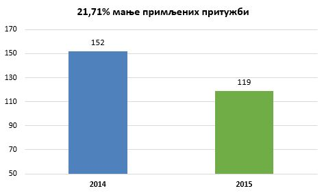
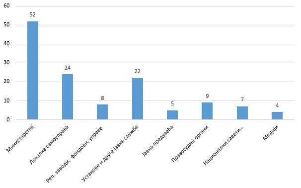
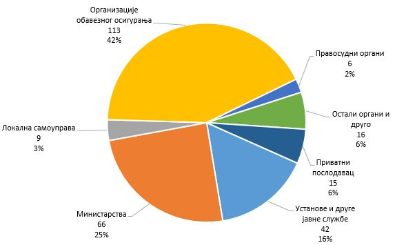
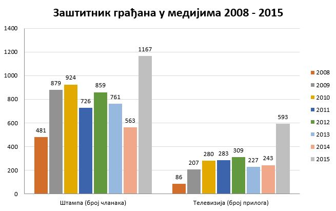

Godi�nji izve�taj sadr�i op�te i posebne ocene i podatke o po�tovanju prava građana (pre svega ljudskih i manjinskih), podatke o uočenim nedostacima u radu organa vlasti, predloge za pobolj�anje polo�aja građana u odnosu na organe vlasti i podatke o aktivnostima i tro�kovima Za�titnika građana.
Stanje prava građana u Srbiji tokom 2015. godine obele�ile su ekonomske nedaće velikog broja građana i manjak pravne sigurnosti. Dr�ava i administracija bavile su se sopstvenim reformama čiji rezultati (jo� uvek) nisu doveli do promena koje građani osećaju kao jasan boljitak.
U odnosu na prethodnu izve�tajnu godinu broj pritu�bi iz socijalnih i ekonomskih prava smenio je sa prvog mesta po brojnosti pritu�be na tzv. lo�u upravu - neblagovremen rad administracije, nemaran odnos prema poslu, očigledno pogre�nu primenu prava i druge propuste iz domena �dobre uprave�.
Posebno ranjive bile su sledeće grupe i građani: jako siroma�ni, deca i mladi, osobe sa invaliditetom, starije osobe, izbeglice i drugi migranti, interno raseljeni, pripadnici nacionalnih manjina (među njima najugro�eniji su Romi), osobe li�ene slobode (uključujući i pacijente u psihijatrijskim bolnicama i korisnike u ustanovama socijalne za�tite domskog tipa), oboleli od te�kih bolesti, �rtve nasilja u porodici i partnerskim odnosima, organizacije i pojedinci zagovornici ljudskih prava, organizacije i pojedinci koji iznose kritične stavove, novinari, pripadnici LTBTI populacije. Mnogi Za�titniku građana imaju običaj da ka�u da je u Srbiji najugro�eniji � �običan građanin�.
STATISTIČKI TRENDOVI
Broj pritu�bi porastao je u 2015. godini za 28% (6.231 pritu�ba).
Građani su sve bolje upoznati sa nadle�nostima ovog organa, pritu�be su sve konkretnije, a kontakti sa građanima efikasniji: broj pokrenutih postupaka kontrole po pritu�bama i sopstvenoj inicijativi povećan je za 47,5% (!) i iznosio je 1.669.
Efikasnost ovog organa u postupcima kontrole povećana je za 34,5%, za koliko je procentualno vi�e postupaka okončano u odnosu na 2014. godinu (u 2015. godini okončan je rad na 6.457 pritu�bi i postupaka po sopstvenoj inicijativi).
Smanjen je za 22% broj podnesaka koji nemaju karakter pritu�be, kao i broj telefonskih razgovora (-17,1%). Manje je i građana lično do�lo u prostorije radi razgovora (-6,7%).
Na�alost, zbog mera �tednje, a na �tetu efikasnosti, preventivnog i edukativnog efekta ovog organa, broj kontrolnih i preventivnih fizičkih poseta smanjen je za 6,15% - obavljeno ih je ukupno 107.
Broj izvr�enih preporuka blago je pao sa 87,9 na 86,3% (u 2015. godini ukupno je upućeno 1.447 preporuka, od čega je za izvr�enje dospelo 1.102, a izvr�eno je 951). Primetan je i za resornu administraciju pohvalan visok procenat izvr�enih preporuka koje ovaj organ daje u zakonom propisanoj funkciji Nacionalnog mehanizma za prevenciju torture. Preporuka te vrste upućeno je 265, dospelo je za izvr�enje 167, a sprovedeno 155, �to čini 92,8% postupanja po preporukama.
Povećana je za 27,5% efikasnost rada ovog organa po zakonodavnim inicijativama koje dostavljaju građani (razmotreno ih je 65). Broj normativnih inicijativa i predloga koje je Narodnoj skup�tini i drugim organima podneo ovaj organ isti je kao 2014. godine (15). Usvojene su četiri, za razliku od 2013. godine u kojoj nije usvojena ni jedna.
Broj pritu�bi već godinama prevazilazi postojeći kapacitet, na �ta se u godi�njim izve�tajima redovno upozorava. Uprkos svim strategijama, akcionim planovima i obećanjima, kapacitet Stručne slu�be godinama nije povećan zbog niza administrativnih i političkih prepreka. Nezavisnost Za�titnika građana propisana Ustavom (kao i nekih drugih organa za za�titu ljudskih prava, čija je nezavisnost propisana organskim zakonima) grubo je prekr�ena odredbama Zakona o načinu utvrđivanja maksimalnog broja zaposlenih u javnom sektoru kojim je, istovremeno, nekim drugim organima (Vladi, predsedniku Republike, Narodnoj banci Srbije, Visokom savetu sudstva, Ustavnom sudu, Dr�avnom veću tu�ilaca) sačuvana nezavisnost.
U dr�avi nije uspostavljen funkcionalan horizontalno i vertikalno razgranat sistem otklanjanja nepravilnosti u kome bi Za�titnik otklanjao samo izuzetne nepravilnosti i nezakonitosti na �tetu prava građana (kako je inače zami�ljena institucija ombudsmana), dok se ostale re�avaju na nivou unutra�nje kontrole i kori�ćenjem propisanih pravnih lekova pred organima uprave i pravosuđa. Nemajući dostupnu i delotvornu mogućnost da problem izlo�e i re�e na taj način, građani se u većini slučajeva obraćaju Za�titniku kao prvoj, a ne poslednjoj kontrolnoj instanci. Odavno potrebne, koncipirane i planirane, izmene Zakona o Za�titniku građana kojima je, između ostalog, trebalo aktivirati unutra�nje mehanizme kontrole u organima vlasti, nisu pripremljene ni donete.
SPOLjNI UTICAJI
Mno�tvo starih i novih izazova u regionu i globalno uslo�njavali su i ote�avali po�tovanje standarda i praksu po�tovanja ljudskih prava. Istorijski talas izbeglica i drugih migranata iz Azije i Afrike koje su dr�ave i dru�tva u Evropi bez izuzetka dočekale nespremno, otkrio je i manjkavosti u opredeljenosti za po�tovanje davno usvojenih standarda ljudskih prava u realnim kriznim situacijama. Trpeli su, i trpe, izbeglice i drugi migranti, ali i lokalno stanovni�tvo.�
Srbija se prema izbeglicama i migrantima ponela korektno: humano, ali ponekad nedovoljno organizovano, uglavnom usled ad hoc pristupa strate�kim izazovima. Od velike koristi bilo je prisustvo i aktivnosti međunarodnih organizacija i partnera (posebno specijalizovane agencije UN, Evropska komisija). Ključna je bila saradnja sa organima susednih dr�ava � Makedonije i Hrvatske, a blisko su sarađivali i nacionalni ombudsmani du� cele tzv. �Balkanske rute�. Srbija je �tranzitna� dr�ava za migracije sa juga i istoka. Jo� ozbiljniji izazovi ljudskih prava u pogledu izbeglica i migranata, kako za njih tako i za lokalno stanovni�tvo mogu tek da uslede.
Teroristički napadi i jačanje protiv-terorističkih mera i ovla�ćenja suzili su prostor slobode građana na tanku liniju između čekića i nakovnja. Srbija je za sada odolela trendu normativnog su�avanja sloboda i prava građana zarad navodnog efikasnijeg suprotstavljanja terorizmu. U primeni propisa, međutim, sve je veći broj aktera koji zadiru u privatnost i druge slobode građana i sve su veće njihove tehničke i finansijske mogućnosti, dok se u demokratsku civilnu kontrolu proporcionalno ne ula�e i ona gubi stvarnu mogućnost edukacije, prevencije i otkrivanja neproporcionalnih, neopravdanih i na drugi način nepravilnih i nezakonitih zadiranja u prava građana.
Rad instrumenata međunarodne pravde, pre svega Međunarodnog krivičnog tribunala za biv�u Jugoslaviju i međunarodno pravosuđe na teritoriji Kosova i Metohije, nije uvek mogao da poslu�i kao inspiracija u jačanju uverenja o pravičnom, efikasnom, te politički, nacionalno i na svaki drugi način objektivnom rasvetljavanju ratnih zločina iz pro�losti i pomirenju u regionu. Deo predstavnika vlasti, međutim, obesmi�ljava u potpunosti rad suda: posle odslu�ene desetogodi�nje zatvorske kazne zbog ratnih zločina, biv�eg visokog oficira dočekao je uz počasti dr�avni i vojni vrh. Ministar pravde izrazio je na dočeku očekivanje da će njegovi postupci biti uzor budućim generacijama.
Smanjuje se broj novih tu�bi protiv Srbije pred Evropskim sudom za ljudska prava. Do kraja 2015. godine protiv Srbije je podneto 1.142 pritu�be. Prema statističkim podacima iz Strazbura, Srbija u odnosu na broj stanovnika ima 1,74 slučaja pred sudom na 10.000 stanovnika, jo� uvek vi�e od proseka u ostalim zemljama članicama Saveta Evrope. Sud u Strazburu u 2015. godini doneo je 17 presuda po tu�bama protiv Srbije, od čega samo jednu oslobađajuću. Srpski dr�avljani najče�će se obraćaju Strazburu zbog neizvr�enja pravnosna�nih sudskih presuda domaćih sudova, kr�enja prava na pravično suđenje, povrede du�ine sudskog procesa i diskriminacije. Od kako je postala punopravna članica Saveta Evrope, Evropski sud za ljudska prava doneo je protiv Srbije 132 presude, od kojih je u 117 slučajeva pronađeno kr�enje Evropske konvencije o ljudskim pravima. Komitet ministara Saveta Evrope, nadle�an za nadzor sprovođenja presuda Suda, je, uva�avajući mi�ljenje Za�titnika građana, na 1250. sednici odr�anoj 8-10. 3. 2016. godine pozvao Republiku Srbiju da u najkraćem roku razre�i sva sporna pitanja u vezi sa istra�ivanjem slučajeva �nestalih beba� na koja mu je ukazao Za�titnik građana.[1] Značajnu pomoć u karakterističnim slučajevima srpskim građanima pred sudom u Strazburu pru�aju domaće nevladine organizacije, poput JUKOM-a i Beogradskog centra za ljudska prava.
�LjUDSKA PRAVA� PROTIV LjUDSKIH PRAVA, SLOBODA IZRA�AVANjA I MEDIJI
Jačaju ekstremistički pokreti koji u svojim ideolo�kim platformama negiraju ravnopravnost, uva�avanje različitosti i druge temeljne postavke ljudskih prava i to tako �to sve izra�enije zloupotrebljavaju ljudska prava na slobodu izra�avanja, pri čemu izostaju efikasne reakcije nadle�nih dr�avnih organa (pod efikasnom reakcijom ne smatra se javno saop�tenje, izuzev ako je dovoljno da spreči ponavljanje �tetne pojave, �to do sada nije bio slučaj). Relativizuju se i banalizuju, obesmi�ljavaju temeljni pojmovi i vrednosti poput (ne)diskriminacije, pretpostavke nevinosti, prava deteta, ustavnosti i zakonitosti.
Pojedini javni funkcioneri pozivaju se na svoju građansku slobodu izra�avanja da bi sa dr�avne funkcije, govoreći u zvaničnom kapacitetu, iznosili neformalna saznanja ili uvredljive i neprimerene lične stavove.
Ministar unutra�njih poslova, u intervjuu za list Nedeljnik korektno upitan koga sa stanovi�ta vlasti tretira kao najozbiljniju opoziciju, ka�e: �Najveću� opoziciju glume jedna �minkerka i jedna glumica, kao i poneki propali skriboman.� Jo� jedna rečenica ministra dr Stefanovića iz istog intervjua glasi: �Činjenica jeste da se na�a nejaka opozicija preselila u nevladin sektor�, primer je sistematičnog nastojanja da se kritika vlasti i sloboda izra�avanja, kao temeljne vrednosti slobodnog dru�tva i bića slobodnog građanina, svedu na neprincipijelnu dnevno-stranačku utakmicu i tako učine odbojnim prosečnom građaninu, a da se istovremeno nevladin sektor diskredituje kao dnevnopolitički motivisan i tako li�i pozicije objektivnosti i op�teg interesa.
Primena tri reformska zakona u medijskoj sferi (Zakon o javnom informisanju i medijima, Zakon o elektronskim medijima i Zakon o javnim servisima, primena počela 1. 7. 2015. godine) nije u praksi ojačala slobodu medija i pravo građana na potpuno, objektivno i pravovremeno informisanje. Mediji su i dalje pod presudnim netransparentnim uticajem sprege politike i novca koji je samo zaodenut u zakonsku formu finansiranja programa i ogla�avanja. Očekivanja da će povlačenje dr�ave iz vlasni�tva nad medijima i konkursno finansiranje sadr�aja od javnog interesa iz op�tinskih, gradskih, pokrajinskog i republičkog bud�eta, definisani novim medijskim zakonima bitno uticati na za�titu javnog interesa u sferi informisanja, u velikoj meri su obesmi�ljena načinom na koji su ti zakoni primenjeni u praksi. Prave transparentnosti vlasni�tva nema. Ako je suditi po strukturi novih vlasnika medija, proističe da je Srbija, umesto dr�avnih, dobila stranačke medije.
Početak procesa povlačenja dr�ave iz vlasni�tva u medijima kasnio je četiri meseca zbog opstrukcije javnih medijskih preduzeća. Od 70 javnih preduzeća uslove za aukcijsku prodaju kapitala do naznačenog roka ispunilo je njih 50, sudbina onih koji nisu ispunili uslove je nepoznata. U naredna četiri meseca (do kraja oktobra 2015. godine) nove vlasnike dobilo je 36 medijskih preduzeća, a 14 ni posle dva kruga privatizacije nije na�lo kupca, među njima i dr�avna novinska agencija Tanjug. Prestankom va�enja Zakona o Tanjugu i izričitom Odlukom Vlade[2] je uga�ena, ali i dalje radi i koristi zgradu, dr�avna obele�ja i druge resurse. Politiku AD dr�ava je stavila na listu 17 strate�kih javnih preduzeća i tako zamrznula njen status. Kompanija Novosti, gde je dr�ava manjinski vlasnik, nije ni pomenuta u procesu privatizacije.
Poseban izazov je finansiranje javnih servisa. Radio televizija Srbije i Radio televizija Vojvodine su od 1. 1. 2016. morali da otpočnu finansiranje Prema Zakonu o javnim servisima. Nisu se, međutim, blagovremeno za to pripremili (RTS), pa je krajem 2015. godine, na inicijativu Ministarstva rudarstva i energetike, donet poseban Zakon o privremenom uređivanju načina naplate takse za javni medijski servis[3] prema kome građani plaćaju taksu za RTS i RTV u iznosu od 150 dinara mesečno do kraja 2016. godine uz račun za potro�enu električnu energiju, �to izaziva revolt u delu javnosti. Predviđa se da će javni servisi u 2016. biti finansirani iz bud�eta sa 4 milijarde dinara (upola manje nego pro�le godine), uz finansiranje naplatom takse.
Dr�ava je na svim nivoima vlasti, pre privatizacije javnih medijskih preduzeća, svoje medije sufinansirala direktno iz bud�eta sa okvirno 25 miliona evra godi�nje: 5 miliona Republika, 3,5 miliona AP Vojvodina i 16,5 miliona lokalne samouprave. Od novembra 2016. godine zakonom je zabranjeno direktno bud�etsko finansiranje i uveden sistem projektnog (konkursnog) finansiranja medijskih sadr�aja u javnom interesu.
Dva medijska konkursa Ministarstva kulture i informisanja u 2015. godini sprovedena su u načelu uglavnom uspe�no, za razliku od konkursa lokalnih samouprava. U komisijama većinu čine predstavnici novinarskih i medijskih udru�enja, ali su na lokalnom nivou izra�eniji sukobi interesa, kao i kr�enje i zloupotreba procedura. U nekoliko slučajeva (na primer �Studio B�) preko konkursa je novim vlasnicima vraćen značajan deo novca kojim su prethodno od dr�ave kupili medije.
Zakonom o dr�avnoj upravi i lokalnoj samoupravi nije propisana du�nost jedinice lokalne samouprave da izdvaja novac u bud�etu za javni interes, niti je bli�e određen procenat takvog izdvajanja, ako ga ima. Prema podacima Udru�enja novinara Srbije (UNS) lokalne vlasti su u proseku za projektno finansiranje izdvajale jedan odsto lokalnog bud�eta, �to udru�enja i asocijacije smatraju nedovoljnim. UNS je ponovo zatra�io da se lokalne samouprave obave�u na obavezno izdvajanje dva odsto iz bud�eta za ove namene, �to podr�avaju i ostala udru�enja i asocijacije. Predstavnici organa javne vlasti, međutim, ka�u da za dono�enje takve odluke nema ustavnog osnova.
Regulatorno telo za elektronske medije jeste popri�te sukoba medijskih, komercijalnih i političkih interesa, njegovo rukovodeće telo � Savet nije kompletno. Javnost s pravom očekuje da REM jače reaguje i aktivnije koristi nadle�nosti povodom očiglednih kr�enja Zakona o elektronskim medijima, novinarskih kodeksa i pravila ogla�avanja.
Savet za �tampu, jedino samoregulatorno telo u medijskoj sferi u Srbiji, 2015. godine je primio 109 �albi na sadr�aje �tampanih i onlajn medija, malo vi�e nego 2014. godine, kada je primljeno 80 �albi. Broj slučajeva u kojima je utvrđeno kr�enje Kodeksa znatno je veći nego prethodne godine i iznosi 60, od čega je izrečeno 36 javnih opomena medijima koji nisu prihvatili punu nadle�nost Saveta za �tampu.
Prema izve�taju Saveta[4], mediji su najče�će kr�ili odredbe iz odeljka Istinitost izve�tavanja (35 puta) i to uglavnom tačke koje se odnose na zabranu objavljivanja neosnovanih optu�bi, kleveta ili glasina, kao i na obavezu razlikovanja činjenica od komentara, nagađanja i pretpostavki. U 20 slučajeva prekr�ene su odredbe Kodeksa koje se odnose na zabranu diskriminacije i govora mr�nje, u 17 o kr�enju odredbi o autorstvu. Čest prekr�aj je i nepo�tovanje etike i kulture javne reči (14 odluka), uglavnom zbog neobjavljivanja odgovora. U najvećem broju slučajeva, prekr�eno je vi�e tačaka Kodeksa novinara.
Pojedini mediji ne po�tuju ni obavezu objavljivanja odluka Komisije o kr�enju Kodeksa: Večernje novosti nisu objavile četiri od pet odluka, Blic nije objavio dve od �est odluka, Alo dve od pet, dok Telegraf.rs nije objavio nijednu od dve odluke.
Savet je izmenom Statuta ukinuo pravo veta prilikom odlučivanja u Komisiji za �albe. To je već na prvom koraku, prilikom odlučivanja po �albama na tekst Politike o američkim donacijama civilnom sektoru i medijima dovelo do o�tre kritike tog dnevnog lista usmerene pojedinačno i lično na članove Komisije i donelo najveća isku�enja Savetu od osnivanja.
Tokom pro�le godine broj fizičkih napada i drugih oblika pritisaka na novinare ponovo je počeo da raste. Registar koji je formiran na sajtu Nezavisnog udru�enja novinara Srbije (NUNS) pokazuje da je 2015. godine bilo ukupno 38 takvih napada, dok ih je 2013. i 2014. bilo po 23. Pro�le godine je, prema tom registru, bilo ukupno jedanaest fizičkih napada na novinare, tri napada na imovinu novinara, 21 verbalna pretnja i tri slučaja koja su okarakterisana kao pritisak na novinare.
Vladajuća stranka izdala je zvanično saop�tenje u kome je urednicu na Javnom servisu Radio televizija Srbije optu�ila za �brutalno političko me�anje� u istra�ne radnje, nakon �to je jedan tabloid preneo njenu izjavu da bi bilo �razumno da na informativni razgovor u policiju budu pozvani i urednici TV Pink i dnevnih novina Informer, a ne samo menad�ment dnevnih novina Kurir. Usledile su, po ustaljenom redosledu, uvredljive i agresivne naslovne strane u provladinim �tampanim medijima, maliciozni prilozi na provladinim TV stanicama i očigledno dirigovani verbalni progon (uvrede, najte�e lične diskvalifikacije) u komentarima sa karakterističnih naloga na medijskim portalima i na dru�tvenim mre�ama (tzv. �botovi�). Takvi napadi na lični integritet su vidno organizovani i li�eni bilo kakve odgovornosti. Njihov neposredan ili odlo�eni efekat je povlačenje javnih ličnosti iz dru�tvenog �ivota.
Nisu re�eni slučajevi ubistava novinara iz prethodnog perioda, kao ni nekoliko fizičkih napada na novinare.
Raste broj iskusnih novinara bez posla ili onih koji su oti�li iz novinarstva. Novinarski krugovi primećuju da do posla lak�e dolaze nepoznate kolege od onih koji su već stekli profesionalni ugled, �to se protivi logici slobodnog tr�i�ta. Socijalni polo�aj novinara je izrazito nizak.
Vi�e slobode postoji u pisanim medijima u �tampi i na elektronskim portalima nego na TV stanicama. Program Radio Beograda zapa�en je po kvalitetu. Tira�i dnevnih novina u 2015. godini su prema procenama upućenih (nema uslova za egzaktnu statistiku) prvi put pali ispod 500 hiljada dnevno, za trećinu manje nego pre dve godine.� Jasno je da je sloboda medija u načelu obrnuto proporcionalna uticaju, kojeg televizijski program ima najvi�e.
Politička vlast novinara ili redakciju koji se kritički odnosi prema njoj tretira kao političkog protivnika. Vlast takođe bojkotuje pojedine medije � čak i javni servis. Republička Vlada tako bojkotuje Radio televiziju Vojvodine.
Javni medijski prostor i dru�tvene mre�e popri�te su la�iranja javne debate, kroz organizovanu aktivnost stranačkih aktivista čiji je zadatak da masovnim pisanjem komentara, tvitova, postova, blogova određenu ideju, aktivnost, organizaciju, instituciju, ličnost ve�tački promovi�u ili degradiraju, ne libeći se manipulacije, la�i, uvreda i pretnji.
Na internetu postoje neregistrovani medijski sadr�aji koji bez ikakve odgovornosti, zaklanjajući se, a u stvari zloupotrebljavajući neprincipijelno i nedosledno regulisane medijske slobode, objavljuju insinuacije, pretenciozne konstrukcije, otvorene i prikrivene pretnje i ucene. Kontrola javnog mnjenja medijskom manipulacijom stekla je svojevrsnu legitimnost utoliko �to je prihvaćena kao navodna neminovna posledica �slobode govora i izra�avanja�.
Na dva medija � privatnoj televiziji sa nacionalnom frekvencijom i tabloidu sa velikom cirkulacijom, oba bliska političkoj vlasti, objavljen je autentičan dokument klinike za psihijatrijske bolesti sa informacijama o istoriji bolesti osobe koja je u tom momentu iznosila te�ke optu�be na račun političkog vrha. Poverenik za informacije od javnog značaja i za�titu podataka o ličnosti hitno je i proaktivno reagovao, prikupio činjenice i podatke o okolnostima u svojoj moći i podneo odgovarajuće prijave protiv nepoznatih lica za zloupotrebu najosetljivijih ličnih podataka, s malim izgledom da pravosuđe i policija efikasno okončaju istragu, identifikuju i kazne počinioce.
Borba za vlast preko tabloida i tajnih slu�bi gazi sve zakonske, etičke i moralne norme, a medijski regulatorni mehanizmi i demokratska civilna kontrola slu�bi nemaju resurse, ovla�ćenja i stvarnu moć da tome stanu na put.�
Resorno ministarstvo se u javnoj polemici uglavnom poziva na zakone koji su usvojeni. Ključne negativne pojave na medijskoj sceni ostaju bez javne reakcije, makar verbalne osude resornog ministra.
Tabloidizacija medija, dru�tva i dr�ave, o kojoj je u prethodnim godi�njim izve�tajima detaljno pisano, dosegla je vrhunac slučajem tzv. �Dr�avnog udara� koji je pripremljen, progla�en i sprečen na stranicama i u programu vodećih provladinih medija. Ostaje nada da će očigledna bizarnost te tabloidne epizode označiti i početak kraja ove vrste manipulacije sve�ću građana.
PRAVNA SIGURNOST
Zakoni doneti u manjkavoj, prebrzoj proceduri, međusobno neusklađeni sa odredbama koje protivreče drugim odredbama u istom ili drugim zakonima, čija su re�enja nedovoljno jasna stručnjacima, a kamoli svima onima na koje se norme odnose, a primena neujednačena, selektivna, dok je praksa sudova u sporovima koji proisteknu iz njihove primene nepoznata, doveli su do izra�enog formalnog normativizma i skromne su�tinske pravne sigurnosti u Republici.
Prema podacima Otvorenog parlamenta, u 2015. godini doneto je 182 zakona, od toga 80 po hitnoj proceduri (44%) . S druge strane, u situacijama u kojima je dono�enje po hitnoj proceduri očigledno bilo neophodno, hitna procedura je izostala.
Odlukom Ustavnog suda iz aprila 2015. godine[5] utvrđeno je da Zakon o okupljanju građana nije u saglasnosti sa Ustavom, a do dana njenog objavljivanja u slu�benom glasilu (koje je bilo odlo�eno za �est meseci), Ministarstvo unutra�njih poslova nije blagovremeno pripremilo nacrt novog zakona kojim bi se uredio postupak ostvarivanja Ustavom zajemčene slobode građana na okupljanje. Do dono�enja novog zakona, du�e od tri meseca u Srbiji nije bilo zakonski uređeno ostvarivanje Ustavom garantovane slobode okupljanja, a bilo je onemogućeno i ostvarivanje javnog interesa na zakonito ograničenje te slobode kada je to neophodno iz Ustavom propisanih razloga - radi za�tite javnog zdravlja, morala, prava drugih ili bezbednosti Republike Srbije. Novim Zakonom o javnom okupljanju nisu do kraja otklonjeni ni nedostaci zbog kojih je prethodni zakon ogla�en neustavnim, a koji se odnose na razloge za ograničenja zajemčene slobode okupljanja i delotvornost pravnih sredstava za za�titu te slobode. Novi zakon deluje destimulativno na slobodu okupljanja nesrazmerno visokim novčanim kaznama.
Povlačenje Predloga zakona o ravnopravnosti �ena i mu�karaca, čije su usvajanje Vlada i Narodna skup�tina planirale u hitnom postupku, rezultat je uva�avanja brojnih primedbi koje nisu mogle da budu iznete ranije zbog odsustva javne rasprave.
Odsustvo javne rasprave o predlozima Zakona o izmenama i dopunama Zakona o javnom informisanju i medijima, Zakona o izmeni Zakona o javnim medijskim servisima i Zakona o privremenom uređivanju načina naplate takse za javni medijski servis i mogućnosti da se javnost izjasni o re�enjima koja se odnose na javni medijski servis � servis namenjen građanima (javnosti), doprinelo je konfuziji o tome �ta je javni medijski servis, koja je njegova uloga i na koji se način finansira i obezbeđuje njegova finansijska i svaka druga nezavisnost.
Javna rasprava i redovan zakonodavni postupak nu�ni su naročito kada se donosi propis koji na nov način uređuje jednu oblast.
Nakon vi�edecenijskog odsustva bilo kakvog propisa o inspekcijskom nadzoru, za čim je potrebu isticao ovaj organ i u ranijim godi�njim izve�tajima, pripremljen je Predlog zakona o inspekcijskom nadzoru i sprovedena kvalitetna javna rasprava. Predlog je zatim bez razumljivog razloga upućen na usvajanje u Narodnoj skup�tini po hitnom postupku, te je zavr�ni deo debate i unapređivanja zakonskih re�enja izostao. To je jo� manje razumljivo imajući u vidu da je zavr�nim odredbama propisano da Zakon počinje da se primenjuje po isteku od 12 meseci od dana stupanja na snagu (sem nekoliko organizacionih odredbi čija primena počinje tri meseca od dana stupanja zakona na snagu).
U oblasti radnih odnosa po hitnom postupku doneti su zakoni koji značajno utiču na polo�aj većeg broja građana (npr. Zakon o izmenama i dopunama Zakona o doprinosima za obavezno socijalno osiguranje i Zakon o načinu određivanja maksimalnog broja zaposlenih u javnom sektoru). Ne samo organi, ustanove i zaposleni već i oni koji koriste usluge različitih sistema, nisu imali mogućnost da razmotre ponuđena re�enja i uka�u na rizike koje oni mogu nositi.
Tako se i desilo da se u Zakonu o načinu utvrđivanja maksimalnog broja zaposlenih u javnom sektoru nađe odredba koja je postojeće pravo �ena da ranije nego mu�karci odu u penziju pretvorila u njihovu du�nost i tako afirmativnu meru za postizanje ravnopravnosti između mu�karaca i �ena [6], pretvorila u su�tu suprotnost. Ovaj organ i Poverenik za za�titu ravnopravnosti zajednički su osporili ustavnost te odredbe pred Ustavnim sudom i zatra�ile od njega da njenu primenu, zbog neotklonjivih �tetnih posledica koje prete, spreči privremenom merom. Ustavni sud je to prihvatio, nakon čega se resorni ministar, čije je ministarstvo sačinilo predlog tog zakona i ignorisalo sva upozorenja tokom zakonodavne procedure, zahvalio (!?) javno Ustavnom sudu na efikasnosti i tome �to je sprečio povredu prava �ena, nijednog momenta ne uviđajući svoju odgovornost za veliku opasnost i tro�enje institucionalnih resursa za njeno otklanjanje.
Administrativni problemi u primeni Zakona o načinu određivanja maksimalnog broja zaposlenih u javnom sektoru onemogućili su razvoj brojnih usluga u jedinicama lokalne samouprave namenjenih posebno osetljivom stanovni�tvu: deci, �rtvama nasilja, osobama sa invaliditetom, kao i drugima i tako prevalili teret �tednje na najranjivije. O predlogu tog zakona odr�ana je samo formalno javna rasprava, a da nakon nje nije bilo obrazlo�enja zbog čega pojedine primedbe nisu usvojene.
Dve značajne izmene u oblasti obrazovanja uvedene su u pravni sistem bez prethodnog pru�anja mogućnosti da se o njima izjasne oni na koje te izmene utiču. Studenti � čiji polo�aj menjaju izmene Zakona o visokom obrazovanju i zaposleni u prosveti � čiji se polo�aj menja izmenom Zakona o osnovama sistema obrazovanja i vaspitanja, nisu imali valjanu mogućnost da se, samostalno ili preko svojih udru�enja, izjasne o ovim izmenama i uka�u na moguće nedostatke.
Prilikom usvajanja Zakona o za�titi prava na suđenje u razumnom roku i Zakona o izvr�enju i obezbeđenju, Vlada se dosledno pridr�avala odredbi Zakona o dr�avnoj upravi i Poslovnika Vlade koji obavezuju na javnu raspravu o novom (sistemskom) zakonu. U ovom slučaju međutim, pravnoj nesigurnosti je doprinela pojava (pre)čestog menjanja zakonskih tekstova. Naime, Zakon o izvr�enju i obezbeđenju iz 2015. godine donet je po�to je stari zakon iz 2011. godine tokom 2014. godine dva puta menjan i dopunjavan, poslednji put 5 meseci pre dono�enja sasvim novog zakona.
Nakon samo jedne godine primene Zakona o javnom bele�ni�tvu Vlada je uočila nepreciznosti i protivurečnosti u njegovim odredbama, ali i pravne praznine koje su �uglavnom takve da ne ostavljaju prostora za iznala�enje bilo kakvog re�enja u određenim situacijama� (citat iz zvaničnog obrazlo�enja poslednjih izmena). Stoga je taj zakon tokom 2015. godine menjan i dopunjavan dva puta, poslednji put sa čak 72 člana koja se tiču su�tine. Međutim, nema podataka da je primenjena odredba poslovnika Vlade prema kojoj se javna rasprava sprovodi kada god se bitno menjaju re�enja iz postojećeg zakona. �tavi�e, prve njegove izmene, koje datiraju iz januara 2015. godine, nastale su kao reakcija na vi�emesečnu obustavu rada advokature, o čemu svedoči obrazlo�enje prema kome je, na osnovu analize dosada�nje primene, kao i potreba prakse i zahteva advokature, zaključeno da je neophodno da se izvr�e izmene i dopune ovog zakona. Iako su se tokom vi�emesečne obustave rada advokata i u javnosti, usled činjenice da je javno bele�ni�tvo postalo ekskluzivni vlasnik značajnih ovla�ćenja, čuli mnogi argumenti o novom zakonu, to se ipak ne mo�e poistovetiti sa javnom raspravom. Ni u pogledu poslednjih (za sada) izmena i dopuna iz decembra 2015. godine, nema dokaza za izja�njenje predlagača o tome da su u procesu konsultacija učestvovali predstavnici svih zainteresovanih grupa, javni bele�nici, sudovi, advokati i privredna dru�tva, zbog čega nije bilo potrebno sprovoditi javnu raspravu na način predviđen Poslovnikom, a �to je bilo predmet kritike Republičkog sekretarijata za javne politike. Sekretarijat je u svom Mi�ljenju istakao da je Analiza efekata zakona morala da sadr�i informacije o obavljenim konsultacijama sa zainteresovanim subjektima (da li su odr�ane, kada i gde), kori�ćenim tehnikama za sprovođenje� konsultacija, primedbe predloge i sugestije koje su prikupljene i razloge za�to su neke od njih unete u tekst, a ostale nisu.
I dok se kod izmena i dopuna propisa koji reguli�u ulogu i nadle�nosti javnog bele�nika mo�e shvatiti potreba hitnosti, usled vi�estruko pogubnih posledica obustave rada advokata po prava građana, dotle je te�ko naći opravdanje za�to za dono�enje Zakona o izmenama i dopunama Zakona o porezu na dohodak građana postoje razlozi za dono�enje po hitnom postupku. Naime, taj propis donet je radi stvaranja uslova za ostvarivanje prava na poresku olak�icu za zapo�ljavanje novih radnika, i kao takav trebalo bi da bude plod duboko promi�ljene i unapred poznate poreske politike. Slično tome, izmene i dopune Zakona o Dr�avnom veću tu�ilaca i Zakona o Visokom savetu sudstva koje predviđaju javnost sednica, obaveze obezbeđivanja obrazlo�enja odluka, dostupnosti na internet stranici svakako ne mogu kao dobar razlog za usvajanje po hitnom postupku imati obrazlo�enje da je to neophodno radi ispunjavanja obaveza iz Akcionog plana za pregovaračko poglavlje 23, kako je zvanično napisano.
Predlog zakona o utvrđivanju javnog interesa i posebnim postupcima eksproprijacije i izdavanja građevinske dozvole radi realizacije projekta �Beograd na vodi� Vlada je takođe uputila na usvajanje po hitnom postupku, iako se radilo o zadiranju u Ustavom garantovano pravo na mirno u�ivanje imovine. Nakon javnog apela ovog organa, predlog je vraćen u redovnu proceduru.
Ne stoji čvrsto ni obrazlo�enje za dono�enje dva sistemska zakona po hitnom postupku � Zakona o op�tem upravnom postupku i Zakona o inspekcijskom nadzoru, s obzirom na to da prvi počinje da se primenjuje 1. 7. 2017. godine, a drugi 12 meseci od dana stupanja na snagu u aprilu 2015. godine!
Zakon o izmenama i dopunama Zakona o poreskom postupku i poreskoj administraciji nije pro�ao javnu raspravu i Narodnoj skup�tini upućen je na usvajanje po hitnom postupku. Slično Predlogu zakona o načinu utvrđivanja maksimalnog broja zaposlenih u javnom sektoru i Predlog zakona o sistemu plata u javnom sektoru pro�ao je javnu raspravu na krajnje formalan način. Javna rasprava za propis koji menja prava i obaveze naj�ireg dela javne administracije i bitno menja radno-pravni status nekoliko hiljada zaposlenih u javnom sektoru, trajala je manje od mesec dana, a nakon nje nije izrađen, objavljen niti učesnicima dostavljen izve�taj o sprovedenoj raspravi u kome bi bile iznete najznačajnije primedbe i otvorena pitanja kao i razlozi za njihovo prihvatanje, odnosno neprihvatanje. Stručna javnost i sindikati izrazili su veliko nerazumevanje za takvu sadr�inu i proceduru i stvorene su tenzije od kojih su mnoge mogle biti izbegnute istinskom raspravom i komunikacijom sa zainteresovanim stranama i stručnom javno�ću.
Vreme, rokovi i način u kojima je zakonodavna vlast stavljala na razmatranje zakonske predloge pred odbore Narodne skup�tine i u plenum, pribavljala i razmatrala mi�ljenja nadle�nih organa, te stavljala (odnosno nije stavljala) u proceduru inicijative i amandmane ovog organa zavređuju posebnu analizu kojoj ovde nije mesto, ali će biti ilustrativno naveden primer jedne sednice Odbora za pravosuđe, dr�avnu upravu i lokalnu samoupravu o izmenama i dopunama devet pravosudnih zakona.
Pedeset peta sednica Odbora za pravosuđe, dr�avnu upravu i lokalnu samoupravu odr�ana je 17. decembra sa početkom u 9 časova, a ovaj organ je na nju pozvan imejlom na slu�benu adresu 16. decembra u 21.30 časova. Dnevnim redom je predviđeno razmatranje devet predloga tzv. pravosudnih zakona, u pojedinostima, koje je podnela Vlada.[7] Prva tačka dnevnog reda bilo je razmatranje Predloga zakona o izvr�enju i obezbeđenju, na koji je podnet ukupno 141 amandman, od čega je Vlada prihvatila 14. Predsednik Odbora Petar Petrović nije na početku sednice obavestio članove Odbora o amandmanima Za�titnika građana na Predlog zakona o izvr�enju i obezbeđenju, već je tokom diskusije o toj tački konstatovao da ih Vlada nije prihvatila. Jednoglasno je prihvaćen predlog predsednika da Odbor sumarno predlo�i Narodnoj skup�tini da prihvati sve amandmane koje je Vlada prihvatila. Potom je predsednik Odbora prvo predlo�io odluku po kojoj Odbor predla�e Narodnoj skup�tini da ne prihvati amandmane koje Vlada nije prihvatila, a onda se ispravio i predlo�io �da Odbor predlo�i Narodnoj skup�tini da prihvati sve amandmane koje Vlada nije prihvatila, a vi treba da glasate - znate kako!� Članovi odbora su zatim jednoglasno sumarno odbili sve amandmane s kojima Vlada nije bila saglasna.
Druga tačka dnevnog reda bila je razmatranje Predloga zakona o izmenama i dopunama Zakona o javnom bele�ni�tvu, na koji je podneto ukupno 104 amandmana od čega je Vlada prihvatila �est. Odbor je bez rasprave odlučio da predlo�i Narodnoj skup�tini da prihvati tih �est amandmana. Za sve ostale amandmane primenjena je ista vrsta glasanja kao u prethodnoj tački. Inicijativa Za�titnika građana podneta Odboru za podno�enje amandmana na Predlog zakona o izmenama i dopunama Zakona o javnom bele�ni�tvu nije ni na koji način spomenuta, time ni razmatrana!
Razmatranje svih ostalih predloga zakona proteklo je bez prijavljenih za reč, uz podr�ku svim amandmanima koje je Vlada prihvatila i odbijanje onih koje Vlada nije prihvatila. U krajnjem, sednica o izuzetno značajnim izmenama devet pravosudnih zakona i rasprava o vi�e stotina podnetih amandmana je trajala ukupno 19 minuta.
Te�koće u ostvarivanju garantovanog nivoa prava građana dr�ava ponekad re�ava � sni�avanjem garancija. Ustavni sud ocenio je tako da nema osnova čak ni da pokrene postupak ocene ustavnosti Zakona o privremenom uređivanju načina isplate penzija[8], kojim je 2014. godine faktički smanjen iznos penzija (stečenog imovinskog prava).
POLICIJA, TAJNE SLU�BE I DEMOKRATSKA CIVILNA KONTROLA
Reformske aktivnosti u Policiji bile su veoma protivrečne, posebno pripreme za otpu�tanje većeg broja policajaca. Resorni ministar je najavljivao otpu�tanje preko 1.000 policajaca, ali nije mogao da se opredeli zbog čega � otpu�tanje je istovremeno obrazlagao time da je policija �kriminalizovana� i time da su policajci vi�ak. Nakon sastanka sa sindikatima, sa neformalnog spiska za otpu�tanje sklonjeno je vi�e stotina ljudi, �to je pojačalo sumnje u arbitrarnost procedure za otpu�tanje. Uspostavljanjem velikog broja novih radnih mesta za �poslove analize rizika� u Ministarstvu na koje po neznanim kriterijumima bivaju preme�teni određeni policajci, za koje je najavljeno da će kasnije biti potpuno ukinuta i zaposleni na njima progla�eni vi�kom, organizacioni propisi bivaju zloupotrebljeni za otpu�tanje ljudi bez odgovarajućeg postupka i obrazlo�enja.
Vi�e desetina visokih policijskih slu�benika razre�enih sa određenih du�nosti prima platu mesecima ali nema radno zadu�enje. Akt o sistematizaciji radnih mesta nosi oznaku poverljivosti. Ovaj organ je u Narodnoj skup�tini izneo osnovano saznanje da su u unutra�njoj bezbednosnoj slu�bi Ministarstva unutra�njih poslova (Odeljenju za bezbednost pri Kabinetu ministra unutra�njih poslova) fizički uni�teni čvrsti diskovi sa slu�benim podacima i druga informatička oprema. Niko nije pokazao interesovanje za tu informaciju, a Za�titnik građana tada nije imao osnov da uni�tavanje opreme pove�e sa svojom nadle�no�ću, odnosno eventualnim kr�enjem ljudskih prava. U krivičnoj prijavi koju je godinu dana kasnije podneo pripadnik te slu�be i koja je javno objavljena, izneta je tvrdnja da je informatička oprema uni�tena radi prikrivanja tragova nezakonitog tajnog praćenja novinara i drugih javnih ličnosti. Nije velika verovatnoća da će se po podnetoj krivičnoj prijavi voditi krivični postupak jer tajna pratnja nije u krivičnopravnim propisima izričito karakterisana kao krivično delo. Međutim, takve mere pripadnika Ministarstva unutra�njih poslova, ako su zaista činjene, bile bi duboko nezakonite i predstavljale bi ozbiljno kr�enje privatnosti lica pod tajnom pratnjom i ugro�avanje slobode medija.
U periodu do podno�enja izve�taja ovaj organ utvrdio je da u sedi�tu Ministarstva, u Kabinetu ministra, radi zaposleni koji ne zna na koje je radno mesto raspoređen niti �ta mu je propisani opis poslova. To nisu znali ni njegovi neposredni rukovodioci. Taj zaposleni redovno kontaktira sa novinarima i prikuplja informacije koje nisu u nadle�nosti Ministarstva unutra�njih poslova, niti bilo kog drugog dr�avnog organa, pa ih prenosi neposredno i usmeno ministru unutra�njih poslova. Jedno takvo saznanje ministar je u javnom slu�benom nastupu na nacionalnom medijskom javnom servisu izneo kao da se radi o slu�beno prikupljenom podatku i time razumno izazvao bojazan novinara od nezakonitog prislu�kivanja.
Poligraf, istra�ni alat kome značajan deo naučne i stručne zajednice poriče relevantnost i čije rezultate zakon ne poznaje kao dokaz, zloupotrebljavan je do mere da se, ironično, javno postavljalo pitanje o opravdanosti postojanja policije, tu�ila�tva i sudstva.
Osamdeset lica li�eno je slobode u policijskoj akciji zvučnog naziva �Rezač�, koja je medijski izuzetno detaljno eksponirana. Te�ko je objasniti kako je do�lo do vremenskog poklapanja najboljeg vremena za hap�enje toliko lica koji se sumnjiče za potpuno različita i nepovezana dela iz potpuno različitih vremenskih perioda. Nedugo zatim, gotovo sva lica su, ovaj put bez pa�nje medija, pu�tena da u postupcima dalje učestvuju sa slobode.
Javnost je burno reagovala i na konferenciju za �tampu ministra unutra�njih poslova u reprezentativnoj zgradi dr�avnih organa iza koga su bili postrojeni pripadnici specijalnih jedinica policije pod punom opremom, maskama na licu i automatskim naoru�anjem. Mnogi su to shvatili kao preterano, čak i kao zastra�ivanje.
Novi Zakon o policiji, u nabrajanju organa spoljne kontrole rada Policije, izostavio je Za�titnika građana. Iako pominjanje ovog organa pravno-tehnički nije neophodno, jer je njegova kontrolna funkcija (i u odnosu na organe unutra�njih poslova) utvrđena Ustavom i organskim zakonom, izostavljanje Za�titnika građana u Zakonu o policiji, u okolnostima u kojima su izričito nabrojani neki drugi organi i entiteti kojima je Zakon priznao kontrolnu funkciju, ima lo�e posledice na preventivnu i kontrolnu funkciju ovog organa i izaziva nepotrebne zabune. Ni mi�ljenje o toj manjkavosti novog Zakona o policiji predlagač i Narodna skup�tina nisu uva�ili tokom zakonodavne procedure, zasigurno iz razloga koje je javno izneo inostrani ekspert na projektima, anga�ovan istovremeno i na istim temama i kao savetnik ministra unutra�njih poslova.
U postupku dono�enja novog Zakona o policiji, ovaj organ je u skladu sa svojim zakonom propisanim ovla�ćenjem dao Mi�ljenje u kome je kritikovao pojedine odredbe Nacrta. Inostrani ekspert koga su međunarodni partneri i donatori anga�ovali da vodi projekte razvoja i pomoći MUP-u Republike Srbije istovremeno, po odluci ministra, radi u Ministarstvu kao savetnik ministra za iste te teme. U zvaničnom saop�tenju datom kao javni odgovor na Mi�ljenje ovog organa, taj inostrani ekspert, odnosno savetnik ministra je odbacio Mi�ljenje ovog organa ocenom da stavovi Za�titnika građana Republike Srbije o Nacrtu zakona o policiji Republike Srbije �većim delom nisu rezultat prepoznavanja okolnosti trenutka u kojem se de�ava slo�ena reforma policijskog sistema�� u Republici Srbiji. Ekspert je dodao i da su pri izradi Nacrta �gotovo sve primedbe institucija, kao �to je OEBS (Organizacija za evropsku bezbednost i saradnju) uzete u obzir, naročito kada je reč o osetljivim pitanjima poput unutra�nje kontrole�.[9] Ne poričući da su primedbe �uzete u obzir�, ovaj organ iz neposrednih razgovora sa najvi�im predstavnicima Misije OEBS u Srbiji nije mogao da potvrdi da su primedbe i uva�ene.
Vojna slu�ba bezbednosti (Vojnobezbednosna agencija, VBA) se izmiče demokratskoj civilnoj kontroli. Uskraćuje kontrolnom organu podatke i prećutkuje informacije koje je po zakonu du�na da predoči. Činjenično utvrđene nezakonitosti i nepravilnosti u njenom radu na �tetu načela političke neutralnosti i zakonitosti odbacuje. Nesumnjivo je utvrđeno da je prikupljala podatke o aktivnostima i saradnji određenih političkih stranaka i pokreta iako nije imala ni indicije da postoje okolnosti zbog kojih bi mogla da zasnuje svoju nadle�nost, niti su bili ispunjeni drugi zakonski uslovi za njeno postupanje prema civilima. Zbog opstrukcije kontrole, druge sumnje za koje ima osnov, ovaj organ nije mogao verodostojno da ispita. Specijalne metode i sredstva koje su joj stavljene na raspolaganje u sasvim druge svrhe VBA koristi protiv ovog kontrolnog organa i svojih pripadnika za koje sumnja da prijavljuju nepravilnosti. Javno se hvali da ima saradnike među novinarima.[10] U jednom postupku po pritu�bi, pristupom neophodnoj dokumentaciji o događajima iz 2000. godine konstatovano je da je i tada vojna slu�ba bezbednosti pratila aktivnosti tada�nje opozicije. Pojedini rukovodioci VBA u�ivaju nekritičku podr�ku, odnosno za�titu predsednika skup�tinskog Odbora za kontrolu rada slu�bi bezbednosti, koji je biv�i direktor te Agencije i član vladajuće stranke.
Skup�tinski odbor za kontrolu slu�bi bezbednosti je 28. 1. 2015. godine odr�ao javnu sednicu na kojoj su članovi odbora, ali i drugi narodni poslanici vladajuće koalicije du�e od �est časova ispitivali Za�titnika građana o tome kako je do�ao do saznanja o nezakonitostima u radu Agencije i kritikovali njegov rad. Neposredno nakon �to je prisutne na sednici ovaj organ upoznao sa sadr�inom dokumenta VBA koji sadr�i prikupljene podatke o aktivnostima određenih političkih stranaka, predsednik Odbora je okončao sednicu zaključkom da VBA radi zakonito. Nedugo zatim, Odbor je sproveo sopstvenu kontrolu rada VBA i potvrdio da je dokument VBA na čiju je sadr�inu Odboru prethodno ukazao ovaj organ autentičan i da sadr�i �deo podataka i saznanja koji nisu u skladu sa zakonom propisanim delokrugom rada Vojnobezbednosne agencije�. [11]Odbor je zatim nalo�io generalnom inspektoru slu�bi bezbednosti Ministarstva odbrane �da u roku od 15 dana, u skladu sa zakonskim ovla�ćenjima izvr�i neophodna proveravanja i utvrđivanja činjenica i odgovornosti za prikupljanje podataka i saznanja koja nisu u skladu sa zakonskom regulativom, a koja su sadr�ana u predmetnom dokumentu, te da o rezultatima provere i preduzetim merama izvesti Odbor�.[12]Zakon o Vojnobezbednosnoj i Vojnoobave�tajnoj agenciji i drugi propisi ne poznaju ovla�ćenje Odbora da izdaje naloge generalnom inspektoru, koji je podređen ministru odbrane. Za generalnog inspektora slu�bi bezbednosti Ministarstva odbrane 2015. godine postavljen je tek penzionisani oficir koji je neposredno pre penzionisanja bio �ef organizacione jedinice za primenu operativno-tehničkih mera. S obzirom da se generalni inspektor fokusira na okončane aktivnosti, on sada kontroli�e zakonitost primene mera kojima je, na svom prethodnom poslu, sam rukovodio. Po prijemu izve�taja generalnog inspektora, Odbor je usvojio zaključke da 1. Niko u Ministarstvu odbrane i Vojnobezbednosnoj agenciji nije nalo�io ili naredio pripadnicima Vojnobezbednosne agencije da prikupljaju podatke i saznanja koja se tiču aktivnosti političkih partija; 2. Podaci o aktivnostima pristalica Srpske radikalne stranke, sadr�ani u spornom dokumentu dobijeni su razmenom podataka i saznanja sa drugim subjektima bezbednosti na prostoru Autonomne pokrajine Vojvodina, a na osnovu člana 6. stav 1. tačka 1. Zakona o Vojnobezbednosnoj agenciji i Vojnoobave�tajnoj agenciji i člana 5. Uredbe o određivanju poslova bezbednosne za�tite određenih lica i objekata; 3. Odbor je ustanovio da je Vojnobezbednosna agencija prikupljala podatke o ugro�enosti �tićenih lica i objekata a ne o političkim aktivnostima i da ih je, na osnovu pisanog zahteva ustupila Ministarstvu unutra�njih poslova Republike Srbije.[13]
Od 11 preporuka koje je ovaj organ tokom 2015. godine uputio radi otklanjanja utvrđenih nezakonitosti i nepravilnosti u radu, VBA nije sprovela nijednu. Ni javna preporuka ovog organa predsedniku Republike za razre�enje direktora Agencije, iznuđena opstrukcijom postupaka kontrole, nije sprovedena.
Odnos Odbora prema ovla�ćenjima i radu Za�titnika građana kritikovan je sa vi�e međunarodnih instanci, uključujući Komitet Ujedinjenih nacija protiv torture, koji je u Zaključnim zapa�anjima o Drugom periodičnom izve�taju Republike Srbije (2015)[14] izrazio zabrinutost zbog poku�aja Odbora za kontrolu slu�bi bezbednosti Narodne skup�tine Republike Srbije da ospori nadle�nost Za�titnika građana da postupa po pritu�bama ako je pokrenut krivični postupak.
U radu komunalne policije u glavnom gradu u dva navrata utvrđene su ozbiljne nezakonitosti i nepravilnosti - prekoračenje ovla�ćenja prema novinarima koje je za ishod imalo povredu njihovog fizičkog i psihičkog integriteta i dostojanstva i sprečavanje u vr�enju posla od javnog značaja. Ovaj organ stava je da komunalnoj policiji ne treba dalje �iriti ovla�ćenja prema građanima, već da ona treba da postojeća ovla�ćenja pravilnije i svrsishodnije primenjuje.
REFORMA JAVNE UPRAVE
Uprkos usvajanju Akcionog plana za sprovođenje Strategije reforme javne uprave i niza sprovedenih aktivnosti u ovoj oblasti, reforma javne uprave nije dala vidljive pozitivne rezultate. Umesto sistematičnog unapređenja javne uprave, kako je to Strategijom i Akcionim planom utvrđeno, dono�ene su hitne intervencionističke mere za smanjenje javnih rashoda kroz otpu�tanje dr�avnih slu�benika i smanjenje plata. Efekti tih mera na kvalitet rada uprave su najbla�e rečeno � sporni.
Primeri tih mera su Zakon o načinu utvrđivanja maksimalnog broja zaposlenih u javnom sektoru i Zakon o sistemu plata u javnom sektoru. Oba propisa iz primene svojih re�enja izuzela su javna preduzeća i Narodnu banku Srbije!
Očekivalo bi se da reforma započne organizacionim i funkcionalnim restrukturiranjem javne uprave, nakon čega bi trebalo da sledi radno-pravno ujednačavanje statusa zaposlenih u javnoj upravi, pa tek na kraju, kada bude utvrđena optimalna organizacija, koji kadrovi su vi�ak, a koji manjak, da se pristupi kadrovskom optimizovanju (otpu�tanju nepotrebnih i zapo�ljavanju potrebnih kadrova).
Mnogi zakoni pripremani su kroz krajnje formalno organizovanu javnu raspravu koja nije odgovorila na primedbe, pitanja i komentare učesnika, te je često takav pristup ote�avao razumevanje namera kreatora politika� i dovodio do re�enja koja su nejasna, pojmovno i sadr�inski neusklađena jedna sa drugim, sa sistemom dr�avne uprave i sa celinom pravnog sistema. To je rezultiralo neprimenljivo�ću propisa i čestim potrebama za tumačenjem, a u krajnjem ishodu � nedostatku pravne sigurnosti.
Ovaj organ pozdravio je najavu politike ujednačavanja plata u javnom sektoru, u smislu �ista plata za isti rad�. Međutim, u praksi je to �ujednačavanje� ostalo na nivou proglasa, dok je Zakon o sistemu plata u javnom sektoru izbegao da se bavi platama koje su izrazito �neujednačene� sa ostatkom javnog sektora (plate u javnim preduzećima i Narodnoj banci Srbije). Tim Zakonom uređuje se samo jedan segment radno-pravnog statusa zaposlenih u javnoj upravi (na plate), a da sistem radnih odnosa prethodno nije jedinstveno uređen, �to je neophodno jer je pravo na platu pravo iz radnog odnosa a sistem plata samo deo sistema radnih odnosa. Ovaj organ je na taj problem vi�e puta ukazivao resornom ministarstvu jer će takvi propusti onemogućiti očekivane efekte zakona, te će jedna dobra politika Vlade, zbog� neadekvatne operativne razrade, po ko zna koji put ostati nesprovedeno slovo na papiru. Pri tome, velika energija, vreme i resursi utro�eni su bez adekvatnog rezultata.
Krajnja posledica takvog pristupa je �reforma� koja upravu čini manje stručnom, manje motivisanom, manje odgovornom, a najmanje od svega � manje prekobrojnom. Reformske procese vode spoljni �eksperti� koji su za svoj manjak iskustva i konkretnih znanja projektno nagrađeni i motivisani neuporedivo vi�e od poni�enih i skrajnutih, sve ređih istinskih stručnjaka jo� uvek zaposlenih u javnoj slu�bi. Konačni ishod lako mo�e biti da je operacija po formalnim projektnim merilima uspe, a da pacijent prestane da daje znake razumnog �ivota.
KOSOVO I METOHIJA
Na teritoriji Autonomne pokrajine Kosovo i Metohija (KiM), Za�titnik građana i dalje nije u mogućnosti da ostvaruje svoje nadle�nosti na način propisan Ustavom i Zakonom. Prema dostupnim informacijama i na osnovu navoda iz pritu�bi, građani na KiM, posebno oni nealbanske nacionalnosti koji �ive u enklavama, taoci su tekućih političkih procesa i suočavaju se sa te�kim kr�enjima ljudskih prava i sloboda.
Ovaj organ se u avgustu 2015. godine pismom obratio Misiji EULEKS na Kosovu izraziv�i zabrinutost zbog izuzetno dugog trajanja mere pritvora Oliveru Ivanoviću, jednom od srpskih političkih lidera. Ne prejudicirajući pitanja u kojima je sud nezavisan, a sudijsko uverenje slobodno, ovaj organ podsetio je potrebu da se osigura privremeni karakter mere pritvora koji sa sobom nosi brojna ograničenja ljudskih prava. U odgovoru, �ef misije Euleksa na Kosovu je podelio zabrinutost za zdravlje Ivanovića i naglasio da EULEKS u potpunosti veruje da će relevantne institucije po�tovati njegova prava. Za�titnik građana nikada se u sličnim situacijama nije obratio nijednom organu Republike Srbije, pa ni uz sve rezerve koje je izneo u pismu �efu EULEKS-a, s obzirom na odredbu Ustava Republike Srbije koja isključuje kontrolnu nadle�nost Za�titnika građana čak i nad sudovima i tu�ila�tvima koje je osnovala Republika Srbija.
PRAVA LICA LI�ENIH SLOBODE
Načinjen je napredak u prevenciji torture. Tokom nenajavljenih poseta zavodima za izvr�enje krivičnih sankcija (KPZ Po�arevac, KPZ Ni�, OZ Leskovac i OZ Beograd) obavljeni su nenadzirani (bez prisustva zatvorskog osoblja) razgovori sa preko 200 lica li�enih slobode, od kojih nijedno nije reklo da je bilo fizički zlostavljano od strane slu�benih lica ili drugih osuđenika, odnosno pritvorenika. Takođe, niko nije imao vidljive povrede. Ovi podaci se ne mogu sa sigurno�ću tumačiti kao da u Srbiji nema fizičkog zlostavljanja, ali su indikativni i ohrabruju. Veliki broj intervjuisanih povratnika istakao je značajnu razliku u postupanju slu�benih lica u odnosu na period od pre nekoliko godina, kada su zlostavljanja bila gotovo �redovna pojava�.
Iako i dalje nema značajnijih pomaka u pogledu du�ine trajanja pritvora, ohrabruje �to su u Okru�nom zatvoru u Beogradu formirane prostorije za zajedničkih boravak pritvorenika u slobodno vreme tokom dana, kao �to su omogućene nenadzirane posete bračnih drugova u posebnim prostorijama.
Pozitivan pomak je uspostavljena praksa javnog tu�ila�tva da lica koja se dovode pitaju kako su se prema njima odnosili policijski slu�benici, odnosno da li su bili podvrgnuti bilo kakvom obliku mučenja ili poni�avajućeg postupanja. Nekoliko pritvorenika, koji su pre sprovođenja u pritvoru, bili na zadr�avanju do 48 sati u policijskim prostorijama za zadr�avanje, navelo je da su tokom saslu�anja zadobili po �nekoliko �amara�, kao i da su ih policijski inspektori vređali, ali da nisu imali mogućnost to i da doka�u, s obzirom na to da nisu zadobili vidljive povrede. U cilju dalje prevencije torture i sprovođenja efikasnije borbe protiv neka�njivosti za torturu u policijskim stanicama je neophodno obezbediti posebne prostorije za saslu�anje, koje bi trebalo da bude audio-video zabele�eno.
U Kazneno-popravnom zavodu Po�arevac � Zabela i� Kazneno-popravnom zavodu u Beogradu, postupanjem po preporukama Za�titnika građana, izmenjene su bezbednosne procedure koje su nalagale da se osuđena lica kreću sa prekr�tenim rukama na leđima i pognute glave, čime se povređivalo njihovo dostojanstvo.
Međutim, tokom izve�tajnog perioda, politički stav da Za�titnik građana nije ovla�ćen da postupa u slučajevima u kojima je u toku vođenje krivičnog postupka, koji je istaknuti član vladajuće većine izneo tokom 13. sednice Odbora za kontrolu slu�bi bezbednosti Narodne skup�tine, ozbiljno je ugrozio prevenciju torture i borbu protiv neka�njivosti za torturu. Povodom tog istupanja na sednici Odbora, Komitet UN protiv torture je u svojim Zaključnim zapa�anjima o Drugom periodičnom izve�taju Republike Srbije (tačka 21.) naglasio je da je Srbija du�na da obezbedi efikasan i nezavisan rad Za�titnika građana i da mu omogući vr�enje nadle�nosti bez obzira na to da li je pokrenut krivični postupak ili ne.
U Srbiji nije razvijen sistem vaninstitucionalne podr�ke i zbrinjavanja osoba sa intelektualnim i mentalnim smetnjama. Posledica toga je da je vi�e hiljada ovih lica na dugi rok li�eno slobode u ustanovama (bilo de iure - u psihijatrijskim bolnicama, bilo de facto - u ustanovama socijalne za�tite domskog tipa), u kojima su �ivotni uslovi uglavnom neodgovarajući.
NACIONALNE MANjINE
Planiranim zakonodavnim aktivnostima koje su predviđene Akcionim planom za ostvarivanje prava nacionalnih manjina u potpunosti su uva�ene preporuke i predlozi ovog organa za unapređenje pravnog i institucionalnog okvira za za�titu prava pripadnika nacionalnih manjina. Ostaje da se vide rezultati njegove primene.
Re�avanje pitanja primene afirmativnih mera u oblasti obrazovanja, koje treba da pomognu Romima u postizanju jednakosti sa drugim na�im građanima zaslu�uje pohvalu. Konačno zauzeti sistemski pristup prilikom upisa učenika i studenata romske nacionalnosti, koji obezbeđuje njihovu vertikalnu i horizontalnu punoću i brojnost, uz pravni okvir koji treba da njihovu primenu olak�a i učini �ire dostupnom, nagove�tava bolje dane i smanjuje rizik od nepravilnosti i korupcije.
Sprovođenje reformskih medijskih zakona ugrozilo je u oblasti prava nacionalnih manjina postignuti nivo informisanja na manjinskom jeziku. Manjak kapaciteta potpomognut ciljanim tumačenjima koji za svrhu imaju da opravdaju sopstveni stav nezavisno od razloga i svrhe dono�enja propisa, doveo je do toga da značajan broj medija nije prodat ili nije ogla�en javni poziv za njihovu prodaju, a nastavak njihovog rada je trebalo obezbediti prenosom kapitala bez naknade (�podela akcija�), gde su ispunjeni zakonski uslovi. Problemi koji su nastali u primeni zahtevali su, nedugo posle okončanja postupka privatizacije, intervenciju Narodne skup�tine i usvajanje autentičnog tumačenja bez koga bi posledica bila prestanak rada medija, koji decenijama emituju program na jezicima nacionalnih manjina, a koji su privatizovani prenosom akcija bez naknade zaposlenima.
Iako� Ustav i zakoni obavezuju dr�avne organe (npr. Poresku upravu) da obezbede, kada za to ima osnova, upotrebu srpskog jezika i ćirilice, odnosno jezika i pisma određene manjine, operativni sistemi tih organa podjednako kr�e prava i vređaju osećanja pripadnika većinskog naroda i pripadnika nacionalnih manjina, upotrebom latinice, čija primena, osim tradicionalno upućujuće odredbe �u skladu sa zakonom�, nije nijednom drugom rečju propisana niti precizirana. Do izmena i dopuna pravnog okvira koji reguli�e ovu oblast s jedne strane, i �lo�e� prakse u nabavci �operativnih sistema� s druge strane, građanima ostaje na raspolaganju da podno�enjem pritu�bi Za�titniku građana potra�e za�titu i ostvarenje tog dela svog identiteta.
PRAVA OSOBA SA INVALIDITETOM
Pravni okvir za �ivot i rad osoba sa invaliditetom je unapređen, no i pored toga, one su ostale nedovoljno uključene u zajednicu. Ekonomska kriza i nedovoljno iznijansirane mere �tednje doveli su do ukidanja ili smanjenja pojedinih usluga i servisa podr�ke osobama sa invaliditetom i starijim građanima. Veliki broj objekata javne namene ostaje nepristupačan osobama sa invaliditetom zbog čega je i ostvarivanje zagarantovanih prava ote�ano ili onemogućeno.
Osobe sa invaliditetom imaju ote�an pristup obrazovanju, kako zbog činjenice da� nije dovoljno razvijen odgovarajući sistem dodatne podr�ke u obrazovanju dece sa smetnjama u razvoju i invaliditetom tako i zbog nepristupačnosti obrazovnih ustanova. Nepristupačnost obrazovanju, pored mnogih drugih prepreka, takođe se odra�ava na ote�ano ostvarivanje prava na zapo�ljavanje. Time im je nezavisnost i samostalnost u velikoj meri onemogućena pa samim tim i uključivanje u punopravan i sadr�ajan� �ivot u zajednici.
Stanovanje uz podr�ku pokazalo se u praksi kao uspe�an model, koji se nedovoljno koristi. Vaninstitucionalna za�tita je nedovoljno razvijena, selektivno se sprovodi i nema dovoljno koordinacije između nadle�nih organa. U posebno te�kom polo�aju nalaze se lica sa smetnjama u razvoju i lica sa mentalnim smetnjama.
RODNA RAVNOPRAVNOST I PRAVA LGBTI OSOBA
Usvajanjem Zakona o izmenama i dopunama Zakona o bud�etskom sistemu stvoreni su uslovi za uključivanje rodne ravnopravnosti u sve bud�etske procese i restrukturiranje prihoda i rashoda sa ciljem unapređivanja rodne ravnopravnosti. Rodne ciljeve u bud�ete za 2016. godinu uvelo je 28 bud�etskih korisnika.
I dalje nedostaju blagovremene i efikasne reakcije nadle�nih organa na saznanja o nasilju prema �enama, međuresorna saradnja, posebno razmena informacija i obuke zaposlenih u sistemu za�tite �ena od nasilja.
Ostvarivanje prava �ena i kori�ćenje usluga za �ene praćeno je neopravdanim te�koćama. Prava na naknadu zarade za vreme trudničkog bolovanja i odsustva radi nege i posebne nege deteta ostvaruju se sa nekada značajnim zaka�njenjima, a neretko je i da je ono potpuno onemogućeno usled nea�urnog rada nadle�nih organa ili manjka njihove saradnje. �enama poljoprivrednicama koje su nosioci registrovanog poljoprivrednog gazdinstva i �enama koje obavljaju privremene i povremene poslove nije omogućeno ostvarivanje prava na naknadu zarade za vreme trudničkog bolovanja, porodiljskog odsustva, odsustva sa rada radi nege deteta i posebne nege deteta.
Po drugi put zaredom mirno je odr�ana Parada ponosa u Beogradu, čime se simbolično utire put ostvarivanju prava na slobodu okupljanja osoba drugačije seksualne orijentacije i rodnog identiteta. Ključno je, međutim, da se ostvare prava LGBTI osoba u oblasti obrazovanja, zapo�ljavanja, zdravstva, socijalne za�tite, pravnog uređenja �ivotnih zajednica i pravnih posledice prilagođavanja (promene) pola i rodnog identiteta, kao i za�tite njihovog fizičkog i psihičkog integriteta.
PRAVA DETETA
Do�lo je do daljeg unapređenja pravnog okvira za�tite dece od seksualnog nasilja dono�enjem Pravilnika o načinu vođenja posebne evidencije o licima osuđenim za krivična dela protiv polne slobode, koja suizvr�ena prema maloletnim licima[15] i Zakona o izmenama i dopunama Zakona o policiji (�Tijanin zakon�)[16]. Potrebno je dalje usagla�avanje Krivičnog zakonika sa Konvencijom Saveta Evrope o za�titi dece od seksualnog iskori�ćavanja i seksualnog zlostavljanja [17], u pogledu definisanja određenih krivičnih dela, podizanja (minimalne) zaprećene kazne kod nekih dela, izmene i dopune odredbi o merama bezbednosti i načinu na koji se � u određenim slučajevima � preduzima krivično gonjenje.
Ni izbliza nisu dovoljne aktivnosti dr�ave i lokalnih samouprava za unapređenje polo�aja dece koja �ive i rade na ulici i romske dece. Mere �tednje su uticale da se ionako minimalna izdvajanja bud�etskih sredstava i mali broj dostupnih usluga namenjenih njima dodatno smanje. Grad Beograd, na primer, nije ponovo uspostavio uslugu svrati�ta, koju je isključio iz svoje Odluke o pravima i uslugama socijalne za�tite[18] iako je ona dala rezultate u integraciji dece koja �ive i rade na ulici. Time je ovim najmarginalizovanijim i najosetljivijim grupama među decom jo� vi�e ote�an pristup uslugama zdravstvene i socijalne za�tite, kao i uslugama i merama kojima bi se obezbedilo njihovo uključivanje u obrazovanje i zajednicu, ali i puna za�tita od zanemarivanja, nasilja, zlostavljanja i eksploatacije. Nadle�ni organi nisu postupali po preporukama koje je Za�titnik građana upućivao jo� od 2011. godine zbog nedostajuće sistemske reakcije dr�ave na ovu pojavu. Ne vode se evidencije dece koja �ive i rade na ulici, nisu prepoznate rasprostranjenost i uzroci ove pojave, kao ni povrede prava ove dece (kojoj su svakodnevno ugro�eni �ivot, zdravlje i bezbednost, a zbog nebrige i odsustva za�tite, u najvećem su riziku da postanu �rtve trgovine ljudima i drugih oblika zloupotreba i iskori�ćavanja). Sporadične i ad hoc aktivnosti koje se preduzimaju neefikasne su i bez odr�ivog pozitivnog rezultata.
Za�tita dece od nasilja nije dovoljno institucionalizovana ni nakon deset godina od dono�enja Op�teg i posebnih protokola za za�titu dece od zlostavljanja i zanemarivanja. Vladina Nacionalna strategija za prevenciju i za�titu dece od nasilja od 2009. do 2015. godine i Akcioni plan za sprovođenje ove strategije (2010-2012. godine) su istekli. Problemi u za�titi dece od nasilja i zlostavljanja izra�eni su u svim sredinama, posebno vr�njačko nasilje i nasilje prema deci u porodici. Istovremeno, nedostaju valjani standardi rada, zaposleni su nedovoljno obučeni, broj stručnjaka nije dovoljan, nije razvijen sistem odgovornosti zaposlenih, a prevencija je mala.
Unapređenje krivičnopravnog polo�aja dece �rtava, i pored značajnog napretka poput usvajanja �Marijinog zakona�[19] jo� uvek nije dovoljno. Potrebno je redefinisanje nekih krivičnih dela, podizanje (minimalne) zaprećene kazne kod određenih dela, izmene i dopune odredaba o merama bezbednosti i načinu na koji se, u određenim slučajevima, preduzima krivično gonjenje. Za�titnik građana je pre četiri godine uputio inicijativu Ministarstvu pravde za izmene i dopune Krivičnog zakonika u cilju njegovog usklađivanja sa Konvencijom Saveta Evrope o za�titi dece od seksualnog iskori�ćavanja i seksualnog zlostavljanja (�Lanzarot konvencija�)[20], ali taj organ inicijativu nije razmotrio. Upućene su preporuke i mi�ljenja radi pobolj�anja polo�aja, unapređenje tehnika ispitivanja i za�tite deteta �rtve od sekundarne traumatizacije i viktimizacije u postupcima pred organima� uprave i pravosudnim organima, takođe bez pomaka.
Pravni okvir za za�titu prava deteta u porodičnim sporovima i za sprečavanje instrumentalizacije i zloupotrebe deteta je unapređen dono�enjem Zakona o izvr�enju i obezbeđenju, čija primena počinje 1. 7. 2016. godine. Preciznije je uređen postupak izvr�enja odluka u vezi sa porodičnim� odnosima, a posebno postupak izvr�enja odluka radi za�tite prava deteta i za�tite od nasilja u porodici. Ipak, u praksi se i dalje de�ava da se pravnosna�ne i izvr�ne odluke preispituju u izvr�nom postupku, a nije retkost da ishod ovih postupaka, nakon vi�egodi�njeg neuspeha dr�avnih organa u sprovođenju sopstvenih odluka, bude izmena odluke u korist roditelja koji je prava deteta povredio i zloupotrebio i priznavanja faktičkog stanja.
Izvr�avanje sudskih odluka radi za�tite prava deteta (kojima se �titi pravo deteta na izdr�avanje, na kontakt deteta sa drugim roditeljem, za�tita od nasilja u porodici, od roditeljske otmice i zloupotrebe, predaja deteta i dr.) često je nedovoljno efikasno. Izvr�enja odluka suda u vezi sa decom se, umesto u hitnim, odvijaju u dugotrajnim postupcima, iscrpljujućim i traumatičnim po dete, i imaju negativne posledice po detetov pravilan razvoj. U ovim slučajevima izostaje funkcionalna saradnja pravosudnih i organa uprave (pre svega policije i centara za socijalni rad).
I ovu godinu obele�ilo je postojanje inicijativa za osnivanje posebne institucije sa nadle�nostima za�titnika građana za prava deteta - dečjeg ombudsmana. Povodom ove inicijative Za�titnik građana je vi�e puta upozoravao na �tetne posledice koje po prava deteta, javni interes i pravni poredak, mogu nastupiti umno�avanjem institucija istih ili srodnih nadle�nosti i ovla�ćenja u za�titi prava deteta, posebno u trenutku kada se Republika Srbija suočava sa nedostatkom sredstava namenjenih uslugama i servisima za decu i kada nadle�ne međunarodne institucije izričito savetuju u pravcu postojanja jedinstvene nacionalne institucije za ljudska prava.
MLADI I STARIJI GRAĐANI
Mali broj mladih koji su stekli visoko obrazovanje i visok procenat nezaposlenih mladih osoba su osnovne karakteristike polo�aja mladih osoba u izve�tajnom periodu. Četvrtinu stanovni�tva Srbije čine mlade osobe od 20-29 godina od kojih samo 14% ima stečeno visoko�kolsko obrazovanje, a preko 50% njih je zavr�ilo samo srednju �kolu. Procenat nezaposlenih mladih osoba je preko 40%[21], a uče�će mladih u ukupnom broju nezaposlenih lica je vi�e od jedne trećine.[22] Mladima koji nisu na �kolovanju, nisu zaposleni i �ive sa svojim primarnim porodicama, nije obezbeđena mogućnost da budu zdravstveno osigurani kao članovi porodice osiguranika, te je uključivanje u obavezno socijalno osiguranje uz obavezu da sami uplaćuju doprinos jedini način da budu obavezno zdravstveno osigurani. Nedovoljno su razvijene usluge prevencije bolesti zavisnosti i rizičnog pona�anja mladih, usluge pomoći i podr�ke mladima u posebno osetljivim situacijama, kao i prevencije i za�tite mentalnog i reproduktivnog zdravlja. Veliki broj mladih izlo�en je brojnim faktorima rizika po njihovo fizičko i mentalno zdravlje u različitim sredinama (�koli, zajednici, porodici) i stresu.[23] Mladima sa invaliditetom i te�koćama u razvoju ne stoje na raspolaganju odgovarajuće usluge i mere podr�ke u obrazovanju. Nisu dovoljno razvijene usluge podr�ke u preduniverzitetskom i univerzitetskom obrazovanju, zasnovane na načelu inkluzivnog obrazovanja i socijalnog uključivanja, koje doprinose pobolj�anju uslova �kolovanja mladih sa invaliditetom i te�koćama u razvoju, povećavaju obuhvat mladih srednjim i visokim obrazovanjem i obezbeđuju im jednake mogućnosti za studiranje i uključivanje u dru�tvene i �ivotne tokove.
Starije osobe izlo�ene su vi�estrukim povredama njihovih prava, počev od ostvarivanja prava iz oblasti penzijskog osiguranja, smanjenja penzija, neuplaćenih doprinosa poslodavaca penzionom fondu, do prava iz oblasti socijalne za�tite. Prema podacima do kojih je Poverenik za za�titu ravnopravnosti do�ao u saradnji sa Crvenim krstom, oko 20% starih je izlo�eno nekom obliku nasilja i diskriminacije. Posebno su u nezavidnom polo�aju stariji �itelji sela u nerazvijenim op�tinama. Njihove porodice često nisu u mogućnosti, najče�će zbog lo�e materijalne situacije, da im se dovoljno posvete, dok je, s druge strane, prisutan izostanak odgovarajuće pomoći i podr�ke od strane dr�ave. Starije osobe često su �rtve siroma�tva i zanemarivanja unutar porodica, �to uključuje i raspolaganje njihovom imovinom bez datog pristanka. Posebno za njih, potrebna je veća pristupačnost zdravstvenih usluga i podr�ka na lokalnom nivou.
Istra�ivači iz nevladinih organizacija (Centar za demokratiju) nalaze da se oblici diskriminacije prema starijim građanima povećavaju (institucionalna, socijalna i diskriminacija u porodici). Sredovečni ljudi postaju �stari� za poslodavce već posle 45 godine �ivota i bivaju izlo�eni če�ćem otpu�tanju, ote�anom zapo�ljavanju i drugim oblicima diskriminacije u oblasti rada. Deo civilnog dru�tva zagovara uvođenje socijalnih penzija, kao mehanizma za smanjenje siroma�tva samohranih starijih lica koja su van penzionog sistema (u�lo u Zakon o socijalnoj za�titi iz 2011. godine). Ostali problemi starijih su i lo�a informisanost, nedostatak usluga na lokalu, lo�e stambeno zbrinjavanje (preko 5.500 staračkih domaćinstava su podstanari, a među 18.000 beskućnika, najvi�e je onih preko 65 godina), lo� zdravstveni status starijih, posebno ugro�eno mentalno zdravlje zbog rasprostranjenosti depresije, lo�a medijska slika i pre svega, siroma�tvo. [24]
PROSVETA I SOCIJALNA ZA�TITA
Polo�aj prosvetnih radnika je i u 2015. godini bio te�ak, posebno imajući u vidu da je on 2014. godine dodatno oslabljen ekonomskim merama �tednje, a njihov rad i dalje nije pravično vrednovan. Racionalizacija u oblasti obrazovanja uticala je ne samo na polo�aj prosvetnih radnika, već i na obrazovanje dece. Broj učenika u odeljenjima nije smanjen - iako je to najavljivano tokom prethodne godine - a često prelazi i maksimalni propisani broj; nedovoljno se ula�e u prostor i opremu; problem su čak i sanitarni čvorovi u �kolama. Postavljena su rigorozna ograničenja u broju stručnih saradnika, koji se određuje prema matematičkoj formuli zasnovanoj na broju odeljenja u �koli, a ne na potrebama učenika. Novi pravilnici koji ovo pitanje uređuju ne doprinose unapređenju obrazovanja učenika, naročito inkluzivnog obrazovanja, niti sistema za�tite učenika od nasilja. Finansijski resursi �kola su nedovoljni, a poseban problem imaju �kole čiji su računi blokirani jer im lokalna samouprava ne uplaćuje sredstva. Iako je Ministarstvo prosvete, nauke i tehnolo�kog razvoja u Nacrtu zakona o izmenama i dopunama Zakona o osnovama sistema obrazovanja i vaspitanja unelo odredbe kojima su dodatno precizirane obaveze Ministarstva i jedinica lokalne samouprave, problem blokiranih �kola opstaje i predstavlja hroničnu pretnju kvalitetnom obrazovanju većeg broja učenika.
Mere �tednje i mere radi smanjenja broja zaposlenih u javnom sektoru su pogodile ne samo ustanove obrazovanja, već i zdravstvene i ustanove u socijalnoj za�titi. One sprečavaju anga�ovanje novih zaposlenih u pru�anju usluga korisnicima usluga socijalne za�tite i obrazovanja, zbog čega su neke usluge uga�ene, a funkcionisanje mnogih dovedeno je u pitanje. Mere zabrane zapo�ljavanja onemogućile su ili značajno ote�ale anga�ovanje pedago�kih asistenata i ličnih pratilaca učenicima kojima je potrebna dodatna podr�ka i pru�anje usluga socijalne za�tite kao �to je pomoć u kući, personalna asistencija, dnevni boravci.
ZDRAVLjE
U izve�tajnom periodu nisu se javljali novi sistemski problemi u oblasti prava na za�titu zdravlja, a ojačani su neki od preduslova za potpunije ostvarivanje prava građana iz obaveznog zdravstvenog osiguranja.
Zdravstvo Srbije za dve godine napredovalo je za �est stepenica sa ubedljivo poslednjeg mesta na Evropskom zdravstvenom potro�ačkom indeksu (Euro Health Consumer Index). [25]Napredak je zabele�en u tri oblasti: prava pacijenata, dostupnost zdravstvene za�tite i ishodi lečenja. Najveći napredak u indikatorima Srbija je ostvarila smanjenjem stope smrti novorođenčadi.[26]
Ipak, mnogi građani obraćaju se ovom organu ističući da nemaju novca za neophodne lekove, među njima često osobe sa te�im bolestima čiji članovi porodice rade te ne ispunjavaju uslove za socijalnu pomoć, ali im poslodavac u praksi neredovno isplaćuje ili ne isplaćuje zarade. U kolektivnom pamćenju jo� uvek je �ivo vreme iz pro�losti u kome je zdravstvena za�tita bila svima dostupna i kvalitetna. Razočaranje i strah, pa i bes zbog uru�avanja tog sistema poslednjih decenija su jako veliki.
Smanjene su u odnosu na prethodni period liste čekanja, jedan od indikatora (ne)blagovremenosti, odnosno nedostupnosti zdravstvenih usluga i jedan od generatora korupcije u zdravstvu. Liste čekanja su transparentnije: pojedinačne i jedinstvene liste čekanja dostupne su elektronski na portalu Republičkog fonda zdravstvenog osiguranja.[27]
Počeo je sa radom Bud�etski fond za lečenje oboljenja, stanja ili povreda koje se ne mogu uspe�no lečiti u Republici Srbiji i preko 40 lica poslato je na lečenje ili dijagnostiku u inostranstvo; doneti su podzakonski akti o bli�im uslovima, načinu i postupku dodele sredstava iz Fonda i vi�e desetina dece poslato je na lečenje ili dijagnozu u inostranstvo.
Po preporuci ovog organa Republički fond za zdravstveno osiguranje na zvaničnoj internet stranici daje podatke o isplati naknade zarade trudnicama i svim ostalim osiguranicima za vreme privremene sprečenosti za rad zbog bolesti, počev od 31. dana privremene sprečenosti.
Otpočeo je proces zamene legitimacija osiguranika Republičkog fonda zdravstvenog osiguranja, koji se, uprkos stavu ovog organa, naplaćuje 400 dinara po osobi. Osiguranika Fonda u Srbiji ima oko sedam miliona.
Jednom broju zaposlenih i članova njihovih porodica i dalje je onemogućeno ostvarivanje garantovanog prava na zdravstveno osiguranje i za�titu zbog toga �to pojedini poslodavci kr�e zakonsku obavezu uplate doprinosa, nadle�ni organi ne preduzimaju efikasne mere protiv njih, a zakon �tetne posledice zbog nesavesnosti poslodavaca i organa vlasti prebacuje na najslabiju tačku � radnika.
Dono�enjem Zakona o transplataciji ćelija i tkiva kod građana su stvorena opravdana očekivanja da će biti osnovana javna banka ćelija i tkiva, �to je podstakao i ovaj organ. Ni nakon �est godina od dono�enja ovog Zakona u Republici Srbiji nije osnovana i otpočela sa radom javna banka ćelija i tkiva.
Fizička bezbednost radnika u zdravstvu je nedovoljna. Uporedo sa merama za njihovu za�titu, potrebno je osna�ivati delotvornost i dostupnost unutra�njih i spolja�njih mehanizama za kontrolu po�tovanja prava pacijenata i saradnju sa njima.
Sistem za�tite prava pacijenata nije u potpunosti za�iveo u praksi, jer nadle�ni organi jedinica lokalne samouprave i Ministarstvo zdravlja nisu preduzimali sve mere iz svoje nadle�nosti na način i u roku propisanim Zakonom o pravima pacijenata. Time su načinjeni propusti koji za posledice mogu da imaju stvaranje pravne nesigurnosti i ote�avanje pravnog polo�aja pacijenata, kao i kr�enje njihovih prava. O tome je ovaj organ izradio poseban izve�taj.[28]
Načinjene su pozitivne izmene u odobravanju specijalizacija, na �ta je u pro�losti pozivao ovaj organ.
PENZIJSKO I INVALIDSKO OSIGURANjE
Ključni razlozi za nemogućnost ostvarivanja prava na penziju i dalje su neuplaćeni doprinosi za penzijsko i invalidsko osiguranje. Organizacije obaveznog socijalnog osiguranja (Republički fond PIO, Republički fond za zdravstveno osiguranje i Poreska uprava), na sastancima koje je ovaj organ organizovao povodom prevazila�enja problema, prepoznale su potrebu za unapređenjem svog rada, u cilju postizanja efikasnije kontrole uplate zakonom utvrđenih doprinosa za zdravstveno, penzijsko i invalidsko osiguranje korisnika.
Dono�enjem Zaključka o usklađivanju penzija vojnih osiguranika, Vlada je započela re�avanje ovog dugogodi�njeg problema. Tek kada se utvrdi koliko je vojnih penzionera zaključilo vansudsko poravnanje i prihvatilo ponudu dr�ave da im se jednokratno isplati razlika između usklađenog iznosa penzije i isplaćenog iznosa penzije, znaće se da li je taj problem trajno re�en.
Ovaj organ je, nakon dono�enja Zakona o privremenom uređivanju načina isplate penzija, uputio Republičkom fondu PIO mi�ljenje sa preporukom da bez odlaganja svakom korisniku penzije kojem se privremeno menja način isplate penzija, donese pojedinačno re�enje. Fond PIO nije uva�io pomenuto mi�ljenje, zbog čega je penzionerima ote�ano ostvarivanje Ustavom garantovanog prava na pravno sredstvo - izjavljivanje �albe.
Veliki problem izazvan je retroaktivnim utvrđivanjem obaveze uplate doprinosa za poljoprivredno osiguranje, građanima koji nikada nisu imali saznanje da su osigurani po ovom osnovu, niti im je dostavljen odgovarajući upravni akt o sticanju svojstva poljoprivrednog osiguranika. Tako se de�ava da građanin tek po podno�enju zahteva za ostvarivanje prava na penziju sazna da ima dug za neuplaćene doprinose po osnovu poljoprivrednog osiguranja, u iznosu od vi�e stotina hiljada dinara, pa čak i preko milion dinara, uključujući pripadajuće kamate.
RAD
Iako je unapređen pravni okvir dono�enjem Zakona o uslovima za upućivanje zaposlenih na privremeni rad u inostranstvo i njihovoj za�titi i Zakona o izmenama i dopunama Zakona o zapo�ljavanju i osiguranju za slučaj nezaposlenosti, visok procenat nezaposlenog radno sposobnog stanovni�tva, niske zarade, povrede prava građana po osnovu rada i nedovoljna za�tita tih prava, ključna su obele�ja ostvarivanja prava na rad i po osnovu rada u izve�tajnom periodu. Procenat nezaposlenih, prema podacima Republičkog zavoda za statistiku, nije smanjen i iznosi oko 18%. Ostvarivanje prava radnika dodatno ote�ava nedovoljno razvijena saradnja Poreske uprave, Republičkog fonda za penzijsko i invalidsko osiguranje, Republičkog fonda za zdravstveno osiguranje i inspekcija rada. Građani često ukazuju i na zlostavljanje na radu i neodgovarajuću za�titu kod poslodavca. Iako im za povredu prava stoji na raspolaganju mogućnost pokretanja sudskih postupaka, zaposleni se - strepeći od gubitka posla - uzdr�avaju da u sudskom postupku ostvare i obezbede za�titu svojih prava.
Kada je u pitanju suzbijanje pojave, da kad poslodavci ne izvr�avaju zakonsku obavezu uplate doprinosa u zdravstveni i penzioni fond posledice trpe radnici i članovi njihovih porodica, koraci u pravcu unapređenja zakonske za�tite radnika učinjeni su tokom 2013. i 2104. godine. Ostaje da se u pravni sistem unese re�enje za koje se ovaj organ odavno zala�e, prema kome ako poslodavac kr�i zakonsku obavezu da u obavezne socijalne fondove uplaćuje zakonom propisane doprinose za radnike, a nadle�ni dr�avni organi to toleri�u, �tetne posledice neće snositi, kao �to je to sada slučaj � radnik.
Otpočela je u praksi sudova primena Zakona o za�titi uzbunjivača i donete su prve privremene mere za�tite u sudskim postupcima po tu�bama protiv poslodavaca, �to ohrabruje. Prerano je za ocenu o efektima Zakona.
PRAVOSUĐE
Dono�enjem� Zakona o za�titi prava na suđenje u razumnom roku, uprkos određenim njegovim manjkavostima, unapređeno je ostvarivanje ovog prava građana.
Previsoko određeni iznosi nagrada i naknada koje građani plaćaju za rad izvr�itelja, na koje je u prethodnom izve�tajnom periodu Za�titnik građana ukazivao, smanjeni su dono�enjem Pravilnika o izmenama Pravilnika o tarifi o nagradama i naknadama tro�kova za rad izvr�itelja.
Takođe, stvoreni su uslovi za olak�ano ostvarivanje prava na pristup pravdi izmenama i dopunama Zakona o sudskim taksama.
Građani i dalje �alju pritu�be na rad pravosudnih organa � sudova i tu�ila�tava, iako su oni Ustavom izuzeti iz kontrolnih ovla�ćenja Za�titnika građana i građani to znaju, ali nemaju dovoljno poverenja ili su im nedovoljno dostupni organi koji po Ustavu i zakonu treba da obezbede kontrolu zakonitosti rada sudija i tu�ilaca.
Sve brojnije su pritu�be na rad tzv. mladih pravosudnih profesija � izvr�itelja i notara čiji je rad sve če�će predmet nezadovoljstva građana i javnosti. Međutim, ovaj organ nije nadle�an za kontrolu njihovog rada � za to bi bile neophodne izmene Ustava. Uspostavljen je, međutim, kvalitetan i konstruktivan odnos sa komorama izvr�itelja i notara, koje su istovremeno organizacije kojima su poverena javna ovla�ćenja, pa shodno tome i podlo�ne kontroli ovog organa, ukoliko izostane zakonima propisana kontrola od strane Ministarstva pravde na koje je Za�titnik građana upućuje građane nezadovoljne njihovim postupanjem.
Postoji sna�na percepcija koju je te�ko materijalno dokumentovati, da su sudska i tu�ilačka funkcija pod sna�nim uticajem političke vlasti.
Sudijske redove, na sopstveni zahtev i sa očiglednom gorčinom, napustio je sudija koji je u prethodnom periodu do�iveo niz problema koji su počeli nakon njegove sudijske odluke da vrati paso� (uz vi�emilionsko � u evrima, jemstvo) privredniku čije hap�enje je bilo medijski i politički eksploatisano kao simbol borbe protiv korupcije. Disciplinsko veće Visokog saveta sudstva oglasilo ga je krivim za disciplinski prestup jer je za jedan list dao izjavu o pravnim okolnostima te odluke reagujući na prethodno objavljen tekst u tim novinama kojim je sugerisano da nije po�tovao proceduru. Pre toga je u provladinom tabloidu označen kao korumpiran. I ministar pravde je javno kritikovao odluku o vraćanju paso�a. Sudiji nije produ�en mandat u Posebnom (specijalnom) odeljenju Vi�eg suda kojim je rukovodio i sudio u nekim od najosetljivijih krivičnih postupaka. Njegov sud nije demantovao tekstove koji su o njemu pisani, te je svoj ugled sam uzeo u za�titu i zbog toga disciplinski ka�njen. Su�tinski se ne sla�ući sa kaznom, napustio je profesiju sudije.
Volonteru u sudu raskinut je ugovor o volontiranju jer je na dru�tvenim mre�ama osudio postupak sudije suda u kome je volontirao. Sudija je na rođendanskom prijemu kod poznate ličnosti pozirao na fotografiji sa domaćinom koji je uramljenu kao poklon dr�ao odluku o rehabilitaciji. Postupak rehabilitacije je vodio i odluku potpisao sudija sa fotografije. Fotografiju je prvo objavio Javni medijski servis Vojvodine, a volonter u sudu na dru�tvenoj mre�i je nekoliko dana kasnije kritikovao postupak sudije.
U radu Visokog saveta sudstva učestvuju članovi koji su u prethodnom periodu učestvovali u dono�enju odluka koje su nanele nesagledivu �tetu pravosuđu u Republici� Srbiji.
Zakonik o krivičnom postupku koji se primenjuje vi�e od dve godine prema oceni struke nije dao zadovoljavajuće rezultate. Ne daje dovoljne garancije za�tite ljudskih prava, kako zbog inherentnih sistemskih, tako i značajnih pravno-tehničkih nedostataka koji ostavljaju mnogo prostora za različita tumačenja, a za posledicu mogu da imaju pravnu nesigurnost i nejednakost građana pred zakonom. Njegova primena je počela bez adekvatnih priprema i sa nedovoljnim brojem tu�ilaca s obzirom na pro�irene nadle�nosti. Praktičari ističu da je, zbog praktične nemogućnosti tu�ioca da stvarno rukovodi predistra�nim postupkom i radom policije (iako po Zakoniku ima to ovla�ćenje) ote�ano pribavljanje dokaza za ona krivična dela za koja izvr�na vlast nije zainteresovana.
Unapređen je normativni okvir i stvarni kvalitet procesa izbora nosilaca javnotu�ilačke funkcije. Istovremeno, struka ističe da su diskreciona ovla�ćenja za izbor tu�ilaca, iako smanjena, jo� uvek visoka, kao i da nisu jasni kriterijumi kojima se u praksi rukovodila Vlada prilikom utvrđivanja kandidata.
Izbori za izborne članove Dr�avnog veća tu�ilaca protekli su u boljoj atmosferi u odnosu na prethodne izbore. Na izborima je pobedilo pet kandidata koji su u svojim programima prihvatili u celosti ciljeve i ideje Udru�enja javnih tu�ilaca i zamenika javnih tu�ilaca Srbije, koje u�iva ugled među nosiocima javnotu�ilačke funkcije, ali i u dru�tvu.
Sudijska struka kao osnovne identifikuje tri problema:
� nedovoljna (institucionalna[29] i stvarna) nezavisnost sudstva;
� neravnomerno opterećenje sudija i sudova[30] i
� manjkava obuka sudija, posebno ona stalna.
Vlast, izvr�na i sudsko-upravna, probleme sudstva vidi, međutim u:
� neefikasnosti (veliki broj i dugo re�avanje nere�enih predmeta, posebno starih) i
� neujednačenoj sudskoj praksi.
Međutim, uočava se trend smanjenja neravnomerne opterećenosti sudija i sudova, posebno u krivičnoj materiji osnovnih sudova. To su pozitivni efekti pravosudnih zakona koji su stupili na snagu 1. 1. 2014. godine a tiču se povećanja broja osnovnih sudova, preno�enja tzv. male krivične apelacije (drugostepene nadle�nosti za re�avanje o �albama protiv prvostepenih krivičnih re�enja, uključujući i pritvore) na vi�e sudove, kao i �izme�tanja� istrage u tu�ila�tvo Zakonikom o krivičnom postupku čija je op�ta primena počela oktobra 2013. godine.
Istovremeno, preno�enje tzv. male krivične apelacije izazvalo je neravnomernu opterećenost sudija unutar istih - apelacionih sudova, između drugostepenih krivičnih i građanskih odeljenja. Zbog toga je na kraju 2015. godine predmeta po sudiji u građanskoj materiji bilo u proseku 119,44 u Beogradu, 164,91 u Kragujevcu, 46,11 u Ni�u, 45,04 u Novom Sadu, dotle je u istim sudovima u krivičnoj materiji, predmeta po sudiji� bilo: 7,28 u Beogradu, 6,61 u Kragujevcu, 12,88 u Ni�u i 10,05 u Novom Sadu.[31]
Insistiranje sudskih vlasti na ubrzanju postupaka(i isto takvo opravdano očekivanje građana) i mere preduzete u pro�losti u tom pravcu[32] mnoge sudije vide kao �rtvovanje kvaliteta suđenja radi prividne efikasnosti. Ukoliko je to tačno, kr�i se pravo građana na fer i pravično suđenje.�
Iz sudijskog udru�enja upozorava se da je deo sudija zahtev za brzinom shvatio kao imperativ nad svim ostalim i da presuđuju �preko kolena�. Ako im vi�a instanca ukine odluku, de�ava se da samo ponove (bukvalno) svoju prethodnu odluku i time odlučivanje po očekivanom pravnom leku prenesu na drugostepeni sud. Drugostepeni sudovi odluke mogu da ukinu samo jednom i ako ne potvrde ponovljenu odluku prvostepenog suda drugostepeni sudovi su du�ni da otvaraju rasprave, �to usporava njihov rad, kako u tom predmetu, tako i u drugim drugostepenim predmetima. Zbog toga se tvrdi da ponovljene prvostepene odluke drugostepeni sudovi potvrđuju iako su u istoj stvari prethodnu identičnu odluku ukinuli. Raste broj odluka Ustavnog suda kojima se poni�tavaju presude apelacionih sudova zbog povrede prava na pravično suđenje usled nedostatka obrazlo�enja o bitnim činjenicama.
Posledice su:
� du�a suđenja;
� povećavanje broj starih predmeta u radu kod prvostepenih i/ili drugostepenih sudova;
� pad kvaliteta presuda;
� nezadovoljstvo građana pravosuđem.
Nu�no je uspostaviti:
� pribli�no jednake uslove rada (kabineti, saradnici, informatička oprema i pristup bazi propisa i sudskih odluka)[33];
� pribli�no jednaku opterećenost brojem (a po mogućstvu i strukturom) predmeta[34] i
� kontinuirana obuka, kvalitetna, svestrana, sistematska, predvidiva i stvarno dostupna svim sudijama, koja bi polazila od �ireg konteksta i posebno insistirala na obja�njenju su�tine i svrhe sudijske du�nosti, i njenom krajnjem cilju (poverenju građana u sudstvo) � ovo se posebno odnosi na sudije sudova najvi�eg ranga (VKS, Privrednog apelacionog, apelacionih) jer od kvaliteta njihove argumentacije zavisi dosledno primenjivanje zakonskih propisa..
U toku 2015. godine u radu sudova ukupno je bio 4.973.951 predmet, od čega je re�eno 2.087.332 predmeta. Od ukupnog broja nere�enih predmeta, 1,7 milion su izvr�ni premeti, od kojih se 800.000 odnosi na komunalna potra�ivanja[35].
Od 26 vi�ih sudova, u drugostepenoj građanskoj materiji po sudiji je na kraju 2015. godine ostalo u radu 764,60� u Beogradu i 723 u Novom Sadu, pa zatim 531 u Čačku, 378,40 u Ni�u, 256 u Prokuplju, 213 u Kragujevcu... Prosečno po sudiji na kraju 2015. godine ostalo je u radu 214. predmeta u svim vi�im sudovima. Međutim, postoji 14 sudova sa dvocifrenim brojem predmeta po sudiji, a u jednom (Negotin) nijedan predmet nije ostao na kraju 2015. godine (izvor: Statistički izve�taj o radu sudova za 2015. godinu).
Neravnomerno opterećenje postoji i u 16 privrednih sudova. Tako je na kraju 2015. godine u parničnoj oblasti po sudiji prosečno ostalo 99,64 nere�ena predmeta, ali po sudovima to izgleda ovako: 192,60 u Novom Sadu, 150,65 u Beogradu, 123,33 u Pančevu, 113,67 u Zrenjaninu, dok ostali sudovi imaju manje od 100 predmeta u radu; sedam sudova ima oko 50 i manje predmeta u radu po sudiji (37,71 u Leskovcu, 22,80 u Zaječaru, 16,40 u U�icu).
U krivičnoj materiji osnovnih sudova napravljen najveći pomak ka ravnomernijoj opterećenosti sudija.
Potrebno je zakonom urediti čuvanje i kori�ćenje baze podataka o sudskim i tu�ilačkim predmetima, koja sadr�i lične podatke građana. Bilo bi primereno da se pravosudni podaci čuvaju u Vrhovnom kasacionom sudu ili Visokom savetu sudstva, a ne u organu izvr�ne vlasti.
FINANSIJE
Poreska administracija je od svih centralnih upravnih vlasti najmanje usagla�ena sa načelima dobre uprave. Propisi su sve slo�eniji i čak i pravno obrazovanim građanima sve nu�niji je poreski savetnik; poreski postupci su netransparentni, nesaglasni op�tim načelima upravnog postupka; odluke poreskih organa su su�tinski neobrazlo�ene; praksa često nejednaka; odlučivanje nea�urno; pravni lekovi nedelotvorni; komunikacija sa građanima izuzetno birokratska; a sankcije drakonske.
Građani su zakonom prinuđeni da plaćaju (pretpostavljeni) iznos poreza na imovinu koji im nije prethodno utvrđen odlukom nadle�nog organa. Dostavljanje je zakonom uređeno tako da se lako de�ava da građanin nije u stvarnoj mogućnosti da sazna za odluku o njegovim, odnosno njenim pravima i obavezama, a negativne posledice takvog formalnog �dostavljanja� pribijanjem odluke na oglasnu tablu organa su ogromne. Poreska administracija način postupanja sa građanima prilagođava svojim potrebama i svom komoditetu, umesto da način na koji radi prilagođava objektivnim okolnostima u kojima se nalaze građani (ovde se, da bude potpuno jasno, ne misli na procente i iznose poreskih obaveza, već na način rada � radno vreme, procedure�).
Posle dve godine primene re�enja koje je prouzrokovalo �tetu privatnom i javnom interesu, a protiv koga je ovaj organ veoma o�tro protestvovao, u pravni sistem je vraćena odredba prema kojoj doprinosi za obavezno socijalno osiguranje ne zastarevaju, čime je unapređen polo�aj velikog broja građana i omogućeno uvećanje javnih prihoda po tom osnovu.
Nakon dve godine od dono�enja i godinu dana od prestanka va�enja zakona o tzv. solidarnom porezu, ovaj organ uspeo je da izdejstvuje zaključak Vlade kojim se nastoje umanjiti �tetne posledice nezakonite i nepravilne naplate solidarnog poreza na kumulativno isplaćene vi�emesečne zarade (naknade zarada). Prethodno su Ministarstvo finansija i Poreska uprava u njegovom sastavu odbili da sprovedu preporuku kojom bi se sprečilo kr�enje prava građana i potreba da Vlada naknadnim zaključkom nala�e vraćanje nepravilno naplaćenog novca.
Nova nepravilnost utvrđena u radu Poreske uprave tokom 2015. godine je vr�enje kontrole umanjenja prihoda i dono�enjem re�enja o obavezi plaćanja nakon protoka zakonom imperativno određenih rokova. Po pritu�bama građana i sprovedenom postupku kontrole, Poreskoj upravi je preporučeno da se uzdr�i od pokretanja i vođenja postupaka prinudne naplate i poni�tavanje svih neblagovremeno donetih re�enja po slu�benoj du�nosti, uz obave�tavanje Upravnog suda radi br�eg okončanja upravnih sporova i rasterećenja Suda koji je u pojedinačnim postupcima već stao na stanovi�te izra�eno i u preporuci Za�titnika građana. Ako preporuka bude sprovedena, princip zakonitosti u radu će biti po�tovan, a tro�kovi izgubljenih sudskih postupaka za dr�avu manji. Ali, ostaće činjenica da zbog nea�urnosti Poreske uprave neki građani neće platiti propisane poreske obaveze, čime se nanosi �teta javnom interesu. U odnosu na građane koji su ih platili, postoji i nejednako postupanje, nepravda.
Prihvaćena je inicijativa ovog organa za izmenu Zakona o poreskom postupku i poreskoj administraciji i usklađena su re�enja koja se odnose na za�titu tajnih podataka u poreskom postupku sa matičnim propisom, Zakonom o tajnosti podataka.
EKONOMSKA I IMOVINSKA PRAVA
Građani su, kao i ranijih godina, zbog organizacionih slabosti u radu administracije, uskraćeni da pred organima vlasti u potpunosti i u razumnim rokovima u punom obimu u�ivaju svoja imovinska prava.
Izmene i dopune Zakona o dr�avnom katastru i premeru sa kraja 2015. godine trebalo bi da doprinesu br�em i efikasnijem postupanju Slu�bi za katastar nepokretnosti, ali i Republičkog geodetskog zavoda, kojem je novelom Zakona vraćena nadle�nost drugostepenog organa, jer se pokazalo da je Ministarstvo građevinarstva, saobraćaja i infrastrukture izrazito neefikasno postupalo u periodu kada je ono odlučivalo u drugostepenom upravnom postupku. Uspostavljanje a�urnog i efikasnog odlučivanja je od ključne va�nosti, jer svako nedono�enje odluke u razumnom roku, kojom građanin stiče određeno imovinsko pravo (kao i nesprovođenje takvih odluka) predstavlja povredu prava na mirno u�ivanje imovine, a brojni su slučajevi da građani vi�e godina čekaju na upis prava svojine na nepokretnostima.
Agencija za restituciju okončala je veliki broj postupaka po zahtevima za vraćanje imovine, vrativ�i biv�im vlasnicima i zakonskim naslednicima vi�e od 90% imovine u naturalnom obliku, �to je rezultat vredan hvale. Ipak, usled slo�enosti postupka procene vrednosti nepokretnosti, kao i manjkavosti postojećeg pravnog okvira, nisu okončani postupci kod kojih nema uslova za naturalnu restituciju, ali su ispunjeni uslovi za obe�tećenje, kao i oni koji se odnose na vraćanje komasiranog zemlji�ta. Za�titnik građana podneo je Narodnoj skup�tini Predlog zakona o vraćanju imovine i obe�tećenju, kojim bi se otklonile uočene manjkavosti, ali on nije razmatran.
Iako je do kraja 2015. godine trebalo da se zavr�e svi postupci privatizacije, taj cilj nije ostvaren. Prestala je s radom Agencija za privatizaciju, ali je uprkos tome �to je sprovođenje i kontrolisanje preostalih postupaka privatizacije preuzelo Ministarstvo privrede, osnovana Agencija za vođenje sporova u postupku privatizacije, koja se bavi zastupanjem dr�ave u postupcima privatizacije pokrenutim pre 1. 2. 2016. godine. Nejasno je čemu osnivanje nove agencije, kada je Dr�avno pravobranila�tvo nadle�no da �titi imovinske interese dr�ave.
Građani se i dalje suočavaju s brojnim problemima u ostvarivanju svojih imovinskih prava zbog manjkavosti u stečajnom zakonodavstvu, ali i postupanju organa za vođenje stečajnog postupaka. Postupci stečaja nad privrednim dru�tvima pred Privrednim sudovima i dalje traju predugo, imovinske mase koje ostaju iza stečajnih du�nika je te�ko unovčiti, a postupanje organa nadle�nih za vođenje stečajnog postupka izaziva nepoverenje stečajnih du�nika.
Dono�enje Zakona o ozakonjenju objekata, �estog u ovoj oblasti u poslednjih 20 godina, trebalo bi da doprinese konačnom okončanju davno započetog procesa legalizacije. Značajno je �to je ovim zakonom ozakonjenje bespravno izgrađenih objekata utvrđeno kao javni interes, mada su takvo re�enje građani koji su gradili u skladu sa zakonom, do�iveli kao nepravdu. Za�titnik građana je u vi�e kontrolnih postupaka utvrdio da građevinski inspektori i kada utvrde nepravilnosti, oklevaju da donesu upravni akt ili ne preduzimaju mere u cilju njegovog izvr�enja, �to se kosi s viđenjem legalizacije nelegalno podignutih objekata kao javnog interesa.
ENERGETIKA I ZA�TITA POTRO�AČA
Usvajanjem pojedinih podzakonskih akata (Uredbe o energetski ugro�enom kupcu, Uredbe o primeni tarifa za obračun cene pristupa distributivnom sistemu električne energije, i dono�enjem Pravilnika o energetskoj dozvoli, Pravilnika o licenci za obavljanje energetske delatnosti i sertifikaciji i Pravila o promeni snabdevača), pobolj�an je normativni okvir za sprovođenje Zakona o energetici. Usvajanjem Uredbe o energetski ugro�enom kupcu, na predlog ovog organa, obezbeđena je za�tita građana kojima bi isključenje energije ugrozilo �ivot i zdravlje. Neophodno je dono�enje preostalih podzakonskih akata kako bi se omogućila puna primena Zakona i većeg unapređenja prava kupaca i potro�ača.
Broj pritu�bi građana na povredu potro�ačkih prava je povećan (246 u odnosu na 217) u odnosu na prethodnu godinu. Građani se �ale na rad mobilnih operatera i pru�alaca kablovske televizije i internet provajdera, kao i na način na koji preduzeća koja snabdevaju električnom i toplotnom energijom isporučuju energiju i kako je obračunavaju. Građani se suočavaju sa problemima u vezi sa isporukom električne energije, naplatom računa, isključivanjem sa elektroenergetske mre�e, uslovima za ponovno priključenje, na �ta je ovaj organ ukazao u Posebnom izve�taju �Problemi u ostvarivanju prava kupaca � potro�ača električne energije sa preporukama�[36] i uputio preporuke.
ZA�TITA �IVOTNE SREDINE I KLIMATSKE PROMENE
I pored vi�e� donetih zakona u prethodnoj godini,� oblast za�tite �ivotne sredine i dalje karakteri�e pravna neuređenost. U pogledu za�tite prava na zdravu �ivotnu sredinu nije napravljen značajan pomak u odnosu na prethodne godine. Iako se radi o jednom od osnovnih Ustavom garantovanih prava, napori nadle�nih institucija uglavnom su deklaratorne prirode, diktirani i uslovljeni pregovaračkim procesom sa EU, a bez dovoljno samoinicijative. Neefikasan nadzor nad primenom postojećih zakonskih re�enja i nedostatak međuresorne saradnje odra�avaju se i na odsustvo svesti među građanima o značaju �ivotne sredine. U nekim mestima u Srbiji zagađena je i voda koja vi�e ne mo�e da slu�i za piće, dok se u drugim zemljama taj resurs tretira kao strate�ki.
Krajem 2015. godine, ucvojen je Zakon o obnovi nakon elementarne i druge nepogode čime je konačno otklonjen vi�edecenijski problem odsustva jasnih, propisanih, uslova, kriterijuma i merila za pru�anje pomoći, a koji su imali za posledicu nekoordiniranu aktivnost organa, neefikasnost u obnovi i visok stepen netransparentnosti utro�ka sredstava. Po prvi put, garantuje se pravo građana na dr�avnu pomoć, reguli�u jasni kriterijumi i procedura za ostvarivanje prava na dr�avnu pomoć, kao i način vr�enja kontrole. Zakon u velikoj meri počiva na Modelu zakona o dr�avnoj pomoći posle elementarnih nepogoda, koji je ovaj organ pripremio i dostavio Vladi polovinom 2015. godine.
Nakon poplava 2014. godine, sa jalovi�ta nekada�njeg rudnika Stolice kod Krupnja u četiri reke izlilo se olovo, arsen, mangan, antimon, gvo�đe i drugi metali, koji se vodotokovima prenose �irom Srbije. Ovaj organ je sproveo kontrolu, dao preporuke, lično sa predstavnicima međunarodne zajednice, republičkih i lokalnih vlasti posetio jalovi�te, ali trovanje reka, a preko njih i građana i dalje traje.
Ministarstvo poljoprivrede i za�tite �ivotne sredine i Ministarstvo zdravlja jo� uvek nisu u potpunosti postupili po preporuci Za�titnika građana za otklanjanje izvora zagađenja i uspostavljanja stalnog nadzora zagađenosti vazduha, vode i zemlji�ta u Zajači.
IZBEGLICE I INTERNO RASELjENA LICA
Dvadeset godina nakon izbijanja izbegličke krize, u Srbiji i dalje postoji 17 kolektivnih centara za izbeglice sa teritorije biv�ih jugoslovenskih republika. Okvirnim sporazumom o sprovođenju regionalnog programa za trajno re�avanje stambenih potreba izbeglih lica između Republike Srbije i Banke za razvoj Saveta Evrope (CEB)[37], planirano je da se� preostali centri zatvore do 2017. godine. Konkurs za stambeno zbrinjavanje izbeglica nije uspe�no sproveden iako su sredstva obezbeđena.
Ovom organu obratila su se udru�enja izbeglica iz Hrvatske zbog ote�anog ostvarivanja imovinskih i drugih stečenih prava u toj dr�avi, garantovanih Sporazumom o pitanjima sukcesije biv�e Savezne Federativne Republike Jugoslavije [38](�Bečkog sporazuma�), naročito odredbama Aneksa G. Ovaj organ će u saradnji sa ombudsmanom Hrvatske poku�ati da doprinese re�avanju njihovih problema.
Veliki broj građana, prete�no Roma, koji su raseljeni sa teritorije AP Kosova i Metohije, od 1999. godine i dalje �ivi u neformalnim naseljima bez ikakve infrastrukture.
Postupajući po preporukama ovog organa, Vlada je donela novi Zaključak kojim se uređuje isplata zaostalih privremenih naknada za radnike sa AP Kosova i Metohije, interno raseljenim licima, koji su bili u radnom odnosu u dr�avnim i dru�tvenim organizacijama i preduzećima na području AP Kosova i Metohije.
NAGRADE I PRIZNANjA ZA�TITNIKU GRAĐANA
U izve�tajnom periodu Za�titnik građana bio je dobitnik vi�e domaćih i inostranih priznanja i nagrada. Republika Francuska je za�titniku građana Sa�i Jankoviću dodelila �Nacionalni orden za zasluge u rangu viteza�. On je progla�en �Vitezom poziva� od strane Lige eksperata LEKS. Nedeljnik Vreme ga je proglasio �Lično�ću godine�, kao i studentski portal �urnalist. Kuća pravde Strazbur i Unija sindikata dodelila je Za�titniku građana Povelju za građansku hrabrost �Dragoljub Sto�ić�, dok ga je� Dru�tvo Srbije za odnose sa javno�ću proglasilo �Komunikatorom godine�. Evropski pokret u Srbiji dodelio mu je nagradu ��Doprinos godine Evropi�. Za�titnik građana dobio je i nagradu ���etač� od strane organizacije Proaktiv za građanski aktivizam. Konačno, udru�enje Liceulice proglasilo ga je svojim ambasadorom.
OSNOVNI STATISTIČKI PODACI O RADU ZA�TITNIKA GRAĐANA
Za�titnik građana već je u prethodnom periodu dostigao maksimalnu efikasnost u postojećim okolnostima, �to je konstatovano u prethodnim godi�njim izve�tajima. U uslovima povećanih očekivanja građana, novih nadle�nosti i veće institucionalne uloge Za�titnika građana, nu�no je povećanje kapaciteta Stručne slu�be, promena organizacije i unapređivanje zakonskog okvira za rad.
Tabela� 1 � Podaci o izvr�enju preporuka u 2015.
|
upućeno |
dospelo |
prihvaćeno |
% prihvaćeno dospelih |
|
|
Preporuke proistekle iz kontrolnog postupka |
624 |
377 |
238 |
63,13 |
|
Preporuke proistekle iz skraćenog kontrolnog postupka |
558 |
558 |
558 |
100 |
|
Preporuke proistekle iz preventivne funkcije (Nacionalni mehanizam za prevenciju torture) |
265 |
167 |
155 |
92,81 |
|
Ukupno prihvaćenih preporuka |
1.447 |
1.102 |
951 |
86,30 |
Tabela� 2 � Poređenje izvr�enja preporuka u 2014. i 2015.
|
upućeno |
dospelo |
prihvaćeno |
% prihvaćeno dospelih |
|||||
|
2014 |
2015 |
2014 |
2015 |
2014 |
2015 |
2014 |
2015 |
|
|
Preporuke proistekle iz kontrolnog postupka |
212 |
624 |
203 |
377 |
137 |
238 |
67,49 |
63,13 |
|
Preporuke proistekle iz skraćenog kontrolnog postupka |
587 |
558 |
587 |
558 |
587 |
558 |
100 |
100 |
|
Preporuke proistekle iz preventivne funkcije (Nacionalni mehanizam za prevenciju torture) |
345 |
265 |
242 |
167 |
183 |
155 |
75,62 |
92,81 |
|
Ukupno prihvaćenih preporuka |
1.144 |
1.447 |
1032 |
1102 |
907 |
951 |
87,89 |
86,30 |
Tabela 3 � Podaci o obraćanjima građana u 2014. i 2015.
|
Vrste obraćanja |
2014 |
2015 |
�� % |
|
Primljeno građana na razgovor |
4.913 |
4.585 |
-6,68 |
|
Broj telefonskih razgovora sa građanima |
11.252 |
9.327 |
-17,11 |
|
Razni podnesci građana koji nemaju karakter pritu�be |
1.262 |
985 |
-21,95 |
|
Broj pritu�bi |
4.866 |
6.231 |
28,05 |
|
Ukupan broj obraćanja građana |
22.293 |
21.128 |
-5.23 |
Tabela� 4 � Okončani postupci Za�titnika građana u toku 2015. godine i u odnosu na 2014. godinu
|
Vrste aktivnosti |
2014 |
2015 |
% |
|
Po pritu�bama i sopstvenim inicijativama |
4.798 |
6.457 |
34,58 |
|
Po zakonodavnim inicijativama podnetim od građana |
51 |
65 |
27,45 |
|
Po ostalim obraćanjima građana |
16.165 |
13.912 |
-13,94 |
|
Ukupno okončane aktivnosti |
21.014 |
20.434 |
-2,76 |
Tabela� 5 � Broj okončanih postupaka u 2014. i 2015. godini
|
Rad na pritu�bama iz tekuće i ranijih godina |
2014 |
2015 |
% |
|
Ukupan broj pritu�bi na kojima je okončan rad |
4.798 |
6.457 |
34,58 |
Tabela� 6 � Podaci o ostalim aktivnostima u toku 2015. godine i u odnosu na 2014. godinu
|
Vrste aktivnosti |
2014 |
2015 |
|
Broj podnetih zakonodavnih inicijativa |
15 |
15 |
|
Broj usvojenih zakonodavnih inicijativa |
0 |
4 |
|
Broj pokrenutih postupaka prema organima |
1.132 |
1.669 |
|
Broj kontrolnih i preventivnih poseta organima |
114 |
107 |
Tabela� 7 � Podela pritu�bi raspoređenih po oblastima i resorima, njihov broj i procenat u odnosu na ukupan broj pritu�bi
|
Oblast |
Broj |
Procenat |
|
|
1 |
Rad i radni odnosi |
708 |
11,36% |
|
2 |
Pravda i pravosuđe |
649 |
10,42% |
|
3 |
Lokalna samouprava |
481 |
7,72% |
|
4 |
Prava deteta |
446 |
7,16% |
|
5 |
Finansije |
421 |
6,76% |
|
6 |
Lica li�ena slobode |
370 |
5,94% |
|
7 |
Prava osoba sa invaliditetom |
293 |
4,70% |
|
8 |
Penzijsko osiguranje |
271 |
4,35% |
|
9 |
Katastar nepokretnosti |
251 |
4,03% |
|
10 |
Za�tita potro�ača |
246 |
3,95% |
|
11 |
Rodna ravnopravnost |
232 |
3,72% |
|
12 |
Građevinarstvo i infrastruktura |
225 |
3,61% |
|
13 |
Privreda |
192 |
3,08% |
|
14 |
MUP-Policijski poslovi |
188 |
3,02% |
|
15 |
Zdravlje |
171 |
2,74% |
|
16 |
Energetika i rudarstvo |
151 |
2,42% |
|
17 |
Prosveta i nauka |
131 |
2,10% |
|
18 |
Prava nacionalnih manjina |
119 |
1,91% |
|
19 |
MUP-Upravni poslovi |
113 |
1,81% |
|
20 |
Odbrana |
79 |
1,27% |
|
21 |
Socijalna za�tita |
77 |
1,24% |
|
22 |
Izbegla i raseljena lica |
61 |
0,98% |
|
23 |
Poljoprivreda |
54 |
0,87% |
|
24 |
Elementarne nepogode |
48 |
0,77% |
|
25 |
Restitucija |
47 |
0,75% |
|
26 |
Za�tita �ivotne sredine |
45 |
0,72% |
|
27 |
Kultura |
34 |
0,55% |
|
28 |
Srpski jezik i ćirilica |
21 |
0,34% |
|
29 |
Poslovi bezbednosti |
18 |
0,29% |
|
30 |
Saobraćaj i saobraćajna infrastruktura |
17 |
0,27% |
|
31 |
Nezavisni dr�avni organi i tela |
17 |
0,27% |
|
32 |
Eksproprijacija |
13 |
0,21% |
|
33 |
Za�tita uzbunjivača |
13 |
0,21% |
|
34 |
Dr�avna uprava |
12 |
0,19% |
|
35 |
Spoljni poslovi i dijaspora |
9 |
0,14% |
|
36 |
Omladina i sport |
8 |
0,13% |
|
Ukupno |
6.231 |
Tabela� 8 � Lideri u neizvr�enju preporuka datim nakon kontrolnog postupka: odnos upućenih i neizvr�enih preporuka prema organima
|
Organ |
Broj upućenih preporuka |
Broj neizvr�enih |
% |
|
Slu�be bezbednosti |
11 |
11 |
100 |
|
Samostalni dr�avni organi |
6 |
4 |
66,67 |
|
Ustanove u oblasti zdravlja |
22 |
14 |
63,64 |
|
Posebne organizacije |
16 |
9 |
56,25 |
|
Republičke agencije |
8 |
4 |
50 |
|
Ministarstva |
97 |
39 |
40,21 |
|
Org. obaveznog socijalnog os. |
48 |
16 |
33,33 |
|
Lokalna samouprava |
200 |
37 |
18,5 |
|
Javna preduzeća |
25 |
3 |
12 |
|
Uprave u sastavu ministarstva |
29 |
2 |
6,90 |
Najveći procenat neizvr�enih preporuka u odnosu na broj preporuka koje su upućene različitim organima imaju slu�be bezbednosti (Vojnobezbednosna agencija), s obzirom na to da je ovoj slu�bi upućeno 11 preporuka od kojih nijedna nije izvr�ena.
U slučajevima preporuka proisteklih iz skraćenog kontrolnog postupka, organi odmah otklanjaju propust zbog kojeg je postupak pokrenut, te Za�titnik građana ne mora da pokreće kontrolni postupak.
Tabela 9 - Organi koji su otklanjali propust u skraćenom kontrolnom postupku
|
Ministarstva |
193 |
34,59% |
|
Organizacije obaveznog osiguranja |
94 |
16,85% |
|
Organi lokalne samouprave |
76 |
13,62% |
|
Ustanove u oblasti socijalne za�tite |
49 |
8,78% |
|
Posebne organizacije |
35 |
6,27% |
|
Uprave u sastavu ministarstava |
33 |
5,91% |
|
Advokatske komore |
27 |
4,84% |
|
Javna preduzeća |
14 |
2,51% |
|
Ustanove u oblasti obrazovanja |
12 |
2,15% |
|
Ustanove u oblasti izvr�enja krivičnih sankcija |
12 |
2,15% |
|
Ostali organi |
13 |
2,33% |
|
Ukupno otklonjeni propusti |
558 |
Organi koji su najče�će otklanjali propust u skraćenom kontrolnom postupku su:
- Republički fond za penzijsko i invalidsko osiguranje (83);
- Ministarstvo građevinarstva, saobraćaja i infrastrukture (61);
� Poreska uprava (31).
I ДЕО: PRAVNI OKVIR I DELOKRUG RADA ZA�TITNIKA GRAĐANA
1.1. PRAVNI OKVIR
Propisi
Za�titnik građana Republike Srbije je nezavisan i samostalan dr�avni organ koji je u�ao u pravni poredak Republike Srbije 2005. godine Zakonom o Za�titniku građana.[39] Polo�aj institucije bitno je ojačan Ustavom Republike Srbije[40] iz 2006. godine, kada Za�titnik građana postaje ustavna kategorija, u skladu sa najboljim međunarodnim iskustvima. Zakonom o izmenama i dopunama Zakona o ratifikaciji Opcionog protokola uz Konvenciju protiv torture i drugih surovih, neljudskih ili poni�avajućih kazni i postupaka[41] Za�titnik građana je određen da obavlja poslove Nacionalnog mehanizma za prevenciju torture.
Ustav Republike Srbije utvrđuje prirodu i nadle�nost Za�titnika građana, krug organa javne vlasti koji su izuzeti iz kontrolne funkcije ovog organa; propisuje da Za�titnika građana bira i razre�ava Narodna skup�tina kojoj i odgovara za svoj rad, garantuje imunitet Za�titniku građana kao narodnom poslaniku i upućuje na dono�enje posebnog (organskog) zakona o Za�titniku građana. Ustav takođe zabranjuje Za�titniku građana članstvo u političkim strankama i ovla�ćuje ga da podnosi predloge zakona iz svoje nadle�nosti.
Ustavnim Zakonom za sprovođenje Ustava Republike Srbije[42], pored ostalog, propisana je obaveza novoizabranog sastava Narodne skup�tine da u toku prvog zasedanja nakon izbora Vlade, uskladi sa Ustavom zakon kojima se uređuju Za�titnik građana i izabere (prvog, prim. ZG) Za�titnika građana.
Zakonom o Za�titniku građana detaljno su propisani nadle�nost Za�titnika građana, izbor i prestanak funkcije, postupak pred Za�titnikom građana, obaveza podno�enja izve�taja Narodnoj skup�tini i saradnja sa drugim organima, pravo na platu, sredstva za rad, i rad stručne slu�be Za�titnika građana.
Zakonom o Narodnoj skup�tini[43] propisano je, između ostalog, da Narodna skup�tina u ostvarivanju svoje izborne funkcije bira i razre�ava Za�titnika građana, a u okviru svoje kontrolne funkcije vr�i nadzor nad radom Za�titnika građana.
Zakonom o Vojsci Srbije[44] propisano je da Za�titnik građana vr�i i demokratsku civilnu kontrolu nad Vojskom.
Zakonom o dopuni Zakona o ratifikaciji Opcionog protokola uz Konvenciju protiv torture i drugih surovih, neljudskih ili poni�avajućih kazni i postupaka[45], usvojenim 28. jula 2011. godine, propisano je da Za�titnik građana obavlja poslove Nacionalnog mehanizma za prevenciju torture u saradnji sa ombudsmanima autonomnih pokrajina i udru�enjima čijim je statutom predviđeni cilj udru�ivanja unapređenje i za�tita ljudskih prava i sloboda.
Zakonikom o krivičnom postupku[46] propisano je da Za�titnik građana ima pravo da nesmetano posećuje pritvorenika i da sa njim razgovara bez prisustva drugih lica, kao i da pritvoreniku ne mo�e biti zabranjeno dopisivanje sa Za�titnikom građana. Zakonom je predviđena i obaveza sudije za izvr�enje krivičnih sankcija ili drugog sudije koga odredi predsednik suda da o nepravilnostima uočenim prilikom obilaska zavoda bez odlaganja obavesti Za�titnika građana.
Zakonom o izvr�enju kazne zatvora za krivična dela organizovanog kriminala[47] propisano je pored ostalog da: nadzor nad radom Posebnog odeljenja vr�e ovla�ćena lica Uprave i komisija Narodne skup�tine, u skladu sa Zakonom o izvr�enju krivičnih sankcija, kao i Za�titnik građana u skladu sa Zakonom o Za�titniku građana; da osuđeni ima pravo na posetu Za�titnika građana jednom mesečno koja je izuzeta od zakonom utvrđene obaveze audio-vizuelnog nadzora i snimanja, kao i da osuđeni ima pravo da se dopisuje sa Za�titnikom građana, te da se to dopisivanje ne nadzire.
Zakon o dr�avnim slu�benicima[48] propisuje da radni odnos dr�avnom slu�beniku na polo�aju prestaje, između ostalog, i ako organ ili telo nadle�no za postavljenje dr�avnog slu�benika prihvate javnu preporuku Za�titnika građana za razre�enje dr�avnog slu�benika sa polo�aja.[49]
Zakon o tajnosti podataka[50] propisuje u kojim slučajevima Za�titnik građana, kao dr�avni organ koga imenuje Narodna skup�tina, ima pravo pristupa podacima svih stepena tajnosti koji su mu potrebni za obavljanje poslova iz svoje nadle�nosti, bez bezbednosne provere, kao i u kojim slučajevima mu je bezbednosna provera potrebna.
Zakon o upotrebi grba, zastave i himne Republike Srbije[51] propisuje da se Veliki grb upotrebljava na zgradi, u slu�benim prostorijama, u sastavu pečata i na pozivnicima, čestitkama i sl. Za�titnika građana.
Zakon o pečatu dr�avnih i drugih organa[52] uređuju se namena, sadr�ina, izgled i upotreba pečata koje u vr�enju poslova iz svog delokruga koristi Za�titnik građana.
Zakon o političkim strankama[53] propisuje da Za�titnik građana ne mo�e biti član političke stranke.
Zakonom o Agenciji za borbu protiv korupcije[54] propisano je da članove Odbora Agencije bira Narodna skup�tina između ostalog i na predlog Za�titnika građana i Poverenika za informacije od javnog značaja i za�titu podataka o ličnosti.
Zakon o pravima pacijenata[55] predviđa da Savet za zdravlje, obrazovan u jedinici lokalne samouprave, svoj godi�nji izve�taj o radu i preduzetim merama za za�titu prava pacijenata dostavlja Za�titniku građana, radi informisanja i ostvarivanja potrebne saradnje.
Zakon o javnoj svojini[56] propisuje da se u smislu tog zakona pod dr�avnim organima i organizacijama smatra, između ostalog, i Za�titnik građana.
Zakonom o izmenama i dopunama Zakona o bud�etskom sistemu[57] propisano je da je Za�titniku građana potrebno odobrenje odbora Narodne skup�tine nadle�nog za adminstrativno-bud�etska pitanja za anga�ovanje, odnosno zapo�ljavanje svakog novog lica i to bez obzira �to je kadrovskim planom i bud�etom Republike Srbije to radno mesto predviđeno i za njega obezbeđena sredstva.
Zakon o načinu određivanja maksimalnog broja zaposlenih u javnom sektoru[58], propisuje� da se maksimalan broj zaposlenih u� Stručnoj slu�bi Za�titnika građana utvrđuje odlukom odbora Narodne skup�tine nadle�nog za administrativno-bud�etska pitanja, na predlog Za�titnika građana.
Akcioni plan za Poglavlje 23[59], određuje izve�taje Za�titnika građana, godi�nji i posebni, kao i izve�taje Nacionalnog mehanizma za prevenciju torture, za indikatore uticaja na osnovu kojih se procenjuje sprovođenje aktivnosti planiranih u procesu pristupanja Republike Srbije Evropskoj uniji.
Evropska komisija je u izve�taju o skriningu� za Poglavlje 23� Republici� Srbiji uputila preporuku �Ojačati kapacitete Za�titnika građana (posebno u pogledu njegove uloge kao nacionalnog preventivnog mehanizma), pokrajinskog ombudsmana i lokalnih slu�bi ombudsmana.�(preporuka� 3.2.1. Akcionog plana za Poglavlje 23). U cilju sprovođenja preporuke 3.2.1. Akcioni plan sadr�i mere koje se odnose na jačanje kapaciteta Za�titnika građana kroz imenu Zakona o Za�titniku građana - jačanje njegove nezavisnosti i preciziranje ovla�ćenja u skladu sa dostignutim stepenom razvoja ove institucije; kroz kadrovsko jačanje institucije u smislu usvajanja novog pravilnika o unutra�njem uređenju i sistematizaciji radnih mesta u Stručnoj slu�bi Za�titnika građana; kroz obezbeđivanje trajnog odgovarajućeg sme�taja za instituciju Za�titnika građana; kao i mere usmerene na jačanje uticaja Za�titnika građana propisivanjem obaveze izve�tavanja Evropske komisije o postupanju organa javne vlasti po preporukama koje je uputio ovaj nezavisni dr�avni organ, kako u mandatu Za�titnika građana, tako i u mandatu nacionalnog mehanizma za prevenciju torture.
Za�titnik građana pominje se i u preko 20 strategija i akcionih planova, na primer: Strategiji nacionalne bezbednosti Republike Srbije[60], Nacionalnoj strategiji za borbu protiv korupcije u Republici Srbiji za period od 2013. do 2018. godine[61], Strategiji reforme javne uprave u Republici Srbiji[62], Strategiji za unapređivanje polo�aja Roma u Republici Srbiji[63], Strategiji prevencije i za�tite od diskriminacije[64], Strategiji za primenu Konvencije o dostupnosti informacija, uče�ću javnosti u dono�enju odluka i pravu na pravnu za�titu u pitanjima �ivotne sredine � Arhuske konvencije[65], Strategiji razvoja sistema izvr�enja krivičnih sankcija u Republici Srbiji do 2020. godine[66], Nacionalnoj strategiji za mlade[67], Nacionalnoj strategiji za prevenciju i za�titu dece od nasilja[68], Akcionom planu za ispunjavanje preporuka Evropske komisije sadr�anih u Godi�njem izve�taju o napretku Republike Srbije u procesu evropskih integracija za 2013. godinu, Akcionom planu za sprovođenje Strategije za primenu Arhuske konvencije[69], Akcionom planu za sprovođenje Nacionalne strategije odr�ivog razvoja za period od 2011. do 2017[70], Akcioni plan za ostvarivanje prava nacionalnih manjina, itd.
Pravni okvir za rad Za�titnika građana čine i brojni podzakonski akti koji bli�e uređuju postupanje i rad ove institucije, od kojih su neki: Poslovnik Narodne skup�tine[71], Poslovnik Vlade[72], Odluka o obrazovanju i radu Stručne slu�be Za�titnika građana[73], Odluka o obrazovanju lokalnih kancelarija u Pre�evu, Bujanovcu i Medveđi [74], Uredba o sprovođenju internog javnog konkursa za popunjavanje radnih mesta u dr�avnim organima[75], Poseban kolektivni ugovor za dr�avne organe[76], Pravilnik o upravi u javnim tu�ila�tvima[77], Pravilnik o kućnom redu kazneno-popravnih zavoda i okru�nih zatvora[78], Pravilnik o kućnom redu kazneno-popravnog zavoda za maloletnike[79], itd.
Za�titnik građana se u svom radu pridr�ava principa i standarda usvojenih među ombudsmanima i nacionalnim institucijama za ljudska prava, kao �to su, na primer, �Beogradski principi o odnosu nacionalnih institucija za ljudska prava i parlamenata� i �Ljubljanski zaključci o odnosu ombudsmana i pravosudnih organa�.
U Ustav i Zakon o Za�titniku građana utkana je većina standarda sadr�anih u ključnim međunarodnim dokumentima koji reguli�u, odnosno promovi�u i predla�u standarde za ombudsmane i nacionalne institucije za ljudska prava. [80]Nezavisnost Za�titnika građana, a saglasno i međunarodnim standardima za instituciju ombudsmana, odnosno nacionalnih institucija za ljudska prava [81], ključno je obele�je ovog dr�avnog organa, bez kojeg on gubi svoju su�tinu. Međunarodni dokumenti posebno ističu značaj finansijske nezavisnosti i neophodnosti obezbeđivanja adekvatnih resursa za nesmetan i efikasan rad ombudsmana. Pariski principi, usvojeni kao aneks Rezolucije 48/134 Generalne skup�tine UN, decembra 1993, predstavljaju do sad najpotpuniji dokument koji se bavi nacionalnim institucijama za ljudska prava. Njima se vrlo jasno proklamuje va�nost finansijske nezavisnosti. �Nacionalna institucija treba da ima infrastrukturu koja omogućava glatko obavljanje aktivnosti, posebno adekvatno finansiranje. Svrha finansiranja treba da bude da omogući (instituciji, prim. ZG) da ima svoje osoblje i prostorije, kako bi bila nezavisna od vlade i kako ne bi bila predmet finansijske kontrole koja bi mogla da utiče na njenu nezavisnost.�[82]
Savet Evrope u svojoj Preporuci 1615 iz 2003. godine, koju je usvojila Parlamentarna skup�tina �zaključuje da su neke karakteristike su�tinski va�ne za efikasan rad institucije ombudsmana�, te među njih ubraja i �garantovane dovoljne resurse za obavljanje svih poslova poverenih ombudsmanu� i potpunu autonomiju svog bud�eta i slu�be.�[83] Najnovijom Rezolucijom Parlamentarne skup�tine o instituciji ombudsmana, usvojenom oktobra 2013, reafirmi�e se ovaj stav pozivanjem dr�ava članica da �obezbede institucijama ombudsmana dovoljno finansijskih sredstava i ljudskih resursa kako bi im se omogućilo da efikasno obavljaju svoje zadatke.�[84] U svetlu ekonomske krize �Skup�tina poziva zemlje članice da ulo�e maksimalan napor da izbegnu bud�etska smanjenja koja bi dovela do gubitka nezavisnosti institucija ombudsmana.�[85] Venecijanska komisija Saveta Evrope je takođe pri čvrstom stavu da se finansijska nezavisnost ombudsmana mora �to konkretnije i potpunije osigurati zakonskim tekstom.[86]
Iako su sva opredeljenja Narodne skup�tine, deklarativno, da se jača kapacitet Za�titnika građana, u praksi davanje saglasnosti na osnovu Zakona o izmenama i dopunama Zakona o bud�etskom sistemu i na osnovu Zakona o načinu određivanja maksimalnog broja zaposlenih u javnom sektoru, izaziva ozbiljan problem do mere da predstavlja pretnju nezavisnosti i delotvornosti Za�titnika građana, garantovanim pomenutim domaćim i međunarodnim propisima.
POTREBA IZMENE ZAKONA O ZA�TITNIKU GRAĐANA
Posle vi�e od osam godina primene, i na osnovu iskustava stečenih u tom periodu, uočena je potreba da se unapredi pravni okvir za rad Za�titnika građana. Zakon je od trenutka dono�enja (2005) menjan jednom (2007), ali pre izbora prvog Za�titnika građana, tako da izmene izvr�ene tom prilikom nisu mogle da uzmu u obzir iskustva stečena primenom Zakona.
Razlozi za izmenu pravnog okvira za rad Za�titnika građana su dvojaki: postoji potreba da se neka pitanja urede na drugačiji način i neophodno je da se neka, do sada neuređena, pitanja po prvi put urede.
Predlog izmena i dopuna Zakona o Za�titniku građana, koji je Vlada kojom je predsedavao Mirko Cvetković uputila Narodnoj skup�tini 2012. godine, povučen je iste godine, posle parlamentarnih izbora i formiranja nove vlade, a u skladu sa ustavnim običajem. Predlog tog zakona nije vraćen Narodnoj skup�tini na usvajanje tokom celog trajanja mandata predsednika Vlade Ivice Dačića iako je Za�titnik građana Ministarstvu pravde i dr�avne uprave formalno ponovo uputio Inicijativu za izmene i dopune Zakona. Za�titnik građana je tokom mandata predsednika Vlade Aleksandra Vučića,� ministarstvu nadle�nom za dr�avnu upravu i lokalnu samoupravu uputio novu Inicijativu za izmene i dopune Zakona, krajem 2014. Uprkos� tome, i činjenici da je dono�enje Zakona o izmenama i dopunama Zakona o Za�titniku građana, predviđeno Akcionim planom za poglavlje 23 kao jedna od aktivnosti koje je Republika Srbija obavezna da ispuni u procesu pristupanja EU (kao rok za ovu aktivnost određen je II kvartal 2016. godine) Za�titnik građana ne bele�i napredak u� pripremi ovog zakona.���
Pripremljenim izmenama Zakona te�i se obezbeđivanju pune nezavisnosti Za�titnika građana (pre svega finansijske), a u skladu sa Ustavom, na način koji je već utvrđen za Ustavni sud; predviđaju se novi mehanizmi za utvrđivanje odgovornosti organa javne vlasti, odnosno funkcionera i zaposlenih, kada ne ispunjavaju zakonsku obavezu saradnje sa Za�titnikom građana u postupku kontrole ili prevencije; usklađuje se polo�aj zaposlenih u slu�bi Za�titnika građana koji vr�e poslove u okviru njegove kontrolne funkcije sa polo�ajem slu�benika koji vr�e istovrsne poslove u pojedinim organima dr�avne uprave sa kontrolnim nadle�nostima i u drugim nezavisnim organima kontrole i za�tite prava.
Vi�egodi�nje odlaganje izmena Zakona o Za�titniku građana
ugro�ava rad Za�titnika građana usled novodobijenih nadle�nosti,
vi�estruko uvećanog obima posla, uočenih nedostataka i
opravdanih očekivanja građana
od institucije.
Treba ispraviti nelogičnost zakonske odredbe prema kojoj se za zamenika Za�titnika građana tra�i dvostruko manje iskustvo nego za Za�titnika građana, iako Za�titnik građana zamenicima prenosi svoja ovla�ćenja. U praksi je uočena potreba da Za�titnik građana i drugim organima, a ne samo Vladi i Narodnoj skup�tini, kako stoji u Zakonu, podnosi inicijative za izmenu propisa, odnosno daje mi�ljenje u postupku pripreme propisa. Nu�no je i da se propi�u rokovi u kojima će nadle�ni organi razmotriti inicijative koje u skladu sa Zakonom podnosi Za�titnik građana, kao i da se izričito obave�u da Za�titniku građana blagovremeno dostavljaju predloge propisa kojima se uređuju pitanja od značaja za ostvarivanje i za�titu prava građana. Razlozi celishodnosti, efikasnosti i racionalnosti nala�u izmenu postojeće odredbe o tome kada se i pod kojim uslovima mo�e obustaviti postupak kontrole.
Nu�no je bolje urediti odnos i podelu nadle�nosti između ombudsmana autonomne pokrajine, odnosno jedinica lokalne samouprave i Za�titnika građana i za�tititi naziv i obele�ja Za�titnika građana čija neovla�ćena primena (ponekad i zloupotreba) od strane različitih institucija, organizacija i pojedinaca, na različitim nivoima, stvara zabunu kod građana i organa i organizacija, kao i kod sredstava javnog informisanja.
Neophodno je da se propi�e efikasan mehanizam za razmatranje pritu�bi građana u svakom organu i organizaciji javne vlasti, a ti mehanizmi obave�u da rukovodioce svojih organa i organizacija, ali i Za�titnika građana izve�tavaju o svom radu. U Srbiji ne postoji sistematičan način razmatranja pritu�bi građana koji horizontalno i vertikalno pro�ima celu administraciju, već je u većini slučajeva Za�titnik građana prva, umesto poslednja instanca kojoj se građani obraćaju.
Zbog toga �to pojedini organi ne izvr�avaju zakonom propisanu obavezu saradnje, odnosno izbegavaju je i postupak kontrole opstrui�u na različite načine, a zbog potrebe uspostavljanja potpune funkcionalnosti i efikasnosti rada Za�titnika građana nu�no je predvideti i sankcije za neizvr�avanje svih onih obaveza koje su predviđene ovim zakonom (opstrukcija postupka kontrole), a koje su po svojoj pravnoj prirodi i posledicama slične onima koje već postoje u pravnom poretku.
Predlo�ene su i izmene kojima se uvodi efikasniji postupak za dono�enje op�teg akta o organizaciji i sistematizaciji poslova stručne slu�be Za�titnika građana, sa ciljem stvaranja mogućnosti za veću organizacionu fleksibilnost ovog organa a �to bi trebalo da u budućnosti omogući njegovu bolju efikasnost. Davanje saglasnosti na Pravilnik treba izmeniti na način da skup�tinski odbor nadle�an za administrativna pitanja daje saglasnost na broj zaposlenih u Stručnoj slu�bi Za�titnika građana, na predlog Za�titnika građana, a da Pravilnik donosi Za�titnik građana i objavljuje ga na svojoj elektronskoj stranici.
Nezavisnost
Prema međunarodnim standardima za instituciju ombudsmana, odnosno nacionalnih institucija za ljudska prava[87], nezavisnost je ključno obele�je ovog dr�avnog organa, bez koga on gubi su�tinu. Ustav garantuje Za�titniku građana načelnu nezavisnost. U praksi je Za�titnik građana ostvario visok stepen nezavisnosti u radu, o čemu svedoči status �A� pri Međunarodnom koordinacionom komitetu nacionalnih institucija za ljudska prava i ocene drugih drugih relevantnih institucija i organizacija.
Za�titnik građana podle�e, shodno odredbi Ustava, nadzoru Narodne skup�tine. Nadzor nije isto �to i kontrola. Narodna skup�tina u vr�enju nadzora nije ovla�ćena, kao ni bilo koji drugi organ, organizacija ili pojedinac, da utiče na rad i postupanje Za�titnika građana.[88] Princip nezavisnosti povezan je sa principom samostalnosti. Nezavisnost i samostalnost Za�titnika građana podrazumevaju da je Za�titnik građana organizaciono i funkcionalno odvojen kako od organa i organizacija čiji rad kontroli�e, tako i od organa koji prema slovu Ustava nadzire njegov rad.
Postoji potreba da se Ustavom proklamovana nezavisnost Za�titnika građana normativno ojača.
Tokom 2015. godine nastavljena je primena odredbi Zakona o izmenama i dopunama Zakona o bud�etskom sistemu (član 6. stav 3.). Ovim odredbama Za�titnik građana je obavezan, zajedno sa drugim nezavisnim kontrolnim organima, da za zapo�ljavanje svakog �novog lica� odnosno anga�ovanje lica po ugovoru o delu, po ugovoru o privremenim i povremenim poslovima, preko omladinske i studentske zadruge, kao i anga�ovanje lica po drugim osnovama tra�i saglasnost Administrativnog odbora Narodne skup�tine, bez obzira �to je predmetno radno mesto predviđeno kadrovskim planom, aktom o sistematizaciji, �to za njim postoji potreba i �to su za njega obezbeđena sredstva u bud�etu Republike Srbije.
Nezavisnost Za�titnika građana dodatno je ugro�ena Zakonom o načinu određivanja maksimalnog broja zaposlenih u javnom sektoru, kojim je propisano� da se maksimalan broj zaposlenih u� Stručnoj slu�bi Za�titnika građana utvrđuje odlukom odbora Narodne skup�tine nadle�nog za administrativno-bud�etska pitanja, na predlog Za�titnika građana. Napori Za�titnika građana da se spreči naru�avanje njegove nezavisnosti, upućivanjem inicijative skup�tinskom Odboru za pravosuđe, dr�avnu upravu i lokalnu samoupravu da podnese amandman na član 5. tačka 2. Predloga zakona o načinu određivanja maksimalnog broja zaposlenih u javnom sektoru, nisu urodili plodom - skup�tinski odbor je odbio inicijativu Za�titnika građana.
Nije dalo rezultat, ni obraćanje četiri nezavisna dr�avna organa � Za�titnika građana, Poverenika za i za�titu ravnopravnosti, Poverenika za informacije od javnog značaja i za�titu podataka o ličnosti i Agencije za borbu protiv korupcije,� predsedniku Republike sa inicijativom da vrati Zakon o načinu određivanja maksimalnog broja zaposlenih u javnom sektoru Narodnoj skup�tini na ponovno odlučivanje, zbog naru�avanja Ustavom, zakonom i međunarodnim ugovorom utvrđene nezavisnosti ovih dr�avnih organa. Predsednik Republike je potpisao ukaz o progla�enju Zakona.
Radi obezbeđivanja finansijske nezavisnosti u praksi, potrebno je zakonom izričito propisati da Za�titnik građana samostalno raspola�e sredstvima koja su u bud�etu opredeljena za rad ovog organa, kao i da Vlada ne mo�e bez saglasnosti Za�titnika građana obustaviti, odlo�iti ili ograničiti izvr�enje bud�eta ovog organa.
1.2. NADLE�NOST, OBUHVAT I NAČIN RADA
Zadatak, odnosno nadle�nost Za�titnika građana je Ustavom i Zakonom određena dvostruko: da �titi prava građana i da kontroli�e zakonitost i pravilnost rada organa vlasti i organizacija kojima su poverena javna ovla�ćenja (u daljem tekstu � organi i organizacije javne vlasti[89]). Jasno je da su ta dva zadatka neraskidivo vezana: Za�titnik građana �titi prava vr�eći kontrolu, a kontroli�e radi za�tite prava i sloboda. Zakon o Za�titniku građana precizira i da Za�titnik građana ��titi i unapređuje ljudske i manjinske slobode i prava građana�. Te odrednice (za�tita, kontrola, unapređenje po�tovanja prava i sloboda) su�tinski i formalno uokviruju nadle�nost rada Za�titnika građana.
Ne postoji pravo i sloboda građana koji su izuzeti iz za�titne, kontrolne i unapređujuće uloge Za�titnika građana.
Za�titnik građana postupa u okviru Ustava, zakona, drugih propisa i op�tih akata, kao i ratifikovanih međunarodnih ugovora i op�teprihvaćenih pravila međunarodnog prava[90]. Za�titnik građana kontroli�e zakonitost, ali i pravilnost[91] rada organa i organizacija javne vlasti. U praktičnom radu Za�titnik građana se rukovodi načelom pravičnosti u okviru pozitivnog prava.
Za�titnik građana kontroli�e rad organa dr�avne uprave, organa nadle�nog za pravnu za�titu imovinskih prava i interesa Republike Srbije, kao i drugih organa i organizacija, preduzeća i ustanova kojima su poverena javna ovla�ćenja (organi i organizacije javne vlasti). Za�titnik građana, prema odredbi Ustava i Zakona, od svih organa i organizacija javne vlasti nije ovla�ćen da kontroli�e jedino rad Narodne skup�tine, predsednika Republike, Vlade, Ustavnog suda, sudova i javnih tu�ila�tava.[92]
Za�titniku građana je, uz odgovarajući lični bezbednosni sertifikat, zagarantovan pristup podacima svih stepena tajnosti, a koji su potrebni za obavljanje poslova iz njegove, odnosno njene nadle�nosti.[93]
Pored prava na pokretanje i vođenje postupka kontrole rada organa i organizacija javne vlasti, Za�titnik građana mo�e da pru�anjem dobrih usluga, posredovanjem između građana i organa uprave i davanjem saveta i mi�ljenja o pitanjima iz svoje nadle�nosti, deluje preventivno, s ciljem unapređenja rada organa uprave i za�tite ljudskih sloboda i prava. Ovla�ćenje Za�titnika građana da deluje preventivno, posebno dolazi do izra�aja prilikom obavljanja poslova Nacionalnog mehanizma za prevenciju torture, u skladu sa Zakonom o dopuni Zakona o ratifikaciji Opcionog protokola uz Konvenciju protiv torture i drugih surovih, neljudskih ili poni�avajućih kazni i postupaka.
Za�titnik građana ima i pravo zakonodavne inicijative. Ovla�ćen je da predla�e zakone iz svoje nadle�nosti, podnosi inicijative za izmenu ili dono�enje novih propisa ako smatra da do povrede prava građana dolazi zbog njihovih nedostataka, ili ako je to od značaja za ostvarivanje i unapređivanje prava građana. Za�titnik građana ovla�ćen je da Vladi i Narodnoj skup�tini daje mi�ljenja o propisima u pripremi.
Takođe, Za�titnik građana je ovla�ćen da pokrene postupak pred Ustavnim sudom za ocenu ustavnosti i zakonitosti zakona, drugih propisa i op�tih akata.
***
Akcionim planom za Poglavlje 23, izve�taji Za�titnika građana, godi�nji i posebni, kao i izve�taji Nacionalnog mehanizma za prevenciju torture, određeni su za jedan od indikatora uticaja za preporuke koje se odnose na unapređenje stanja u sledećim oblastima: prevencije torture i nehumanog ili poni�avajućeg tretmana i ka�njavanja, unapređenje �ivotnih uslova u zatvorima i smanjenje broja slučajeva zlostavljanja u policijskom pritvoru, efikasne primene alternativnih sankcija, ostvarivanju slobode misli, savesti i veroispovesti, za�tite novinara od pretnji nasiljem i za�tite slobode medija,� antidiskriminaciju i prava dece i osoba sa invaliditetom, pristup pravdi i besplatnu pravnu pomoć; za�titu prava nacionalnih manjina; sprovođenje Strategije za unapređenje polo�aja Roma i polo�aj izbeglica i interno raseljenih lica - pristup pravima uključujući lična dokumenta i stambena re�enja za najugro�enije.
I ovu godinu, obele�ilo je postojanje inicijativa za osnivanje posebne institucije sa nadle�nostima za�titnika građana za prava deteta - dečjeg ombudsmana. Povodom ove inicijative Za�titnik građana je vi�e puta upozoravao na posledice koje, po prava deteta, javni interes i pravni poredak, mogu nastupiti umno�avanjem institucija istih ili srodnih nadle�nosti i ovla�ćenja u za�titi prava deteta, posebno u trenutku kada se Republika Srbija suočava sa nedostatkom sredstava namenjenih uslugama i servisima za decu i kada nadle�ne međunarodne institucije savetuju u pravcu postojanja jedinstvene nacionalne institucije za ljudska prava.
Postupak
U postupku sui generis (posebne vrste, samosvojnom) koji je oslobođen preteranih formalnosti, Za�titnik građana kontroli�e po�tovanje prava građana, utvrđuje povrede učinjene aktima, radnjama ili nečinjenjem organa uprave, ako je reč o povredi republičkih zakona, drugih propisa i op�tih akata. Za�titnik građana kontroli�e da li je neki organ javne uprave zakonito i pravilno radio u stvari koja se tiče prava, sloboda ili na zakonu zasnovanih interesa građana. Ako to nije bio slučaj, Za�titnik građana utvrđuje propust i preporučuje kako ga otkloniti u tom i drugim slučajevima.
Mnogo vi�e nego formalno po�tovanje zakona, Za�titnik građana ispituje etičnost, savesnost, nepristrasnost, stručnost, svrsishodnost, delotvornost, po�tovanje dostojanstva stranke i ostale osobine koje treba da karakteri�u javnu upravu kakvu građani s punim pravom očekuju od onih koje kao poreski obveznici plaćaju.
Pravna priroda akata Za�titnika građana
Za�titnik građana ne odlučuje o pravima, obavezama i na zakonu zasnovanim interesima građana, već ispituje (kontroli�e) rad organa i organizacija javne vlasti i, ukoliko utvrdi propust, utiče na njih da ga isprave. Otuda nema prava �albe ili drugog pravnog sredstva protiv akata Za�titnika građana.
Preporuke, stavovi i mi�ljenja Za�titnika građana nisu pravno obavezujući. Posao Za�titnika građana nije da prinudi, već da snagom argumenata, ali i institucionalnim i ličnim autoritetom, uveri u neophodnost otklanjanja propusta i unapređivanja načina rada.
Organi i organizacije javne vlasti, međutim, imaju zakonsku obavezu da sarađuju sa Za�titnikom građana, omoguće mu pristup svojim prostorijama i stave na raspolaganje sve podatke kojima raspola�u, bez obzira na stepen tajnosti (kada je to od interesa za postupak koji se vodi). Nepo�tovanje ovih zakonskih obaveza osnov je za pokretanje odgovarajućih disciplinskih i drugih postupaka. Ipak, ni u tim postupcima Za�titnik građana nema moć odlučivanja, već samo mogućnost da ih inicira.
Za�titnik građana mo�e da preporuči razre�enje funkcionera koga smatra odgovornim za povredu prava građana, da inicira pokretanje disciplinskih postupaka protiv zaposlenih u organima uprave, da podnese zahtev, odnosno prijavu za pokretanje krivičnog, prekr�ajnog ili drugog odgovarajućeg postupka.
Odnos sa drugim nezavisnim organima
U za�titi pojedinih prava i sloboda, za koje su zakonima osnovani posebni, specijalizovani nezavisni ograni (Poverenik za informacije od javnog značaja i za�titu podataka o ličnosti; Poverenik za za�titu ravnopravnosti i drugi) Za�titnik građana s tim organima sarađuje na unapređivanju ostvarivanja i za�tite tih prava, a po pritu�bama na kr�enje tih prava postupa samo nakon �to su građani iskoristili mogućnost da se obrate specijalizovanom nezavisnom organu. Za�titnik građana je ovla�ćen da, izuzetno, odluči da pokrene postupak kontrole i pre nego �to su se građani obratili drugom, specijalizovanom nezavisnom organu, ako oceni da postoji neka od posebnih okolnosti predviđenih Zakonom o Za�titniku građana (ako bi podnosiocu pritu�be bila naneta nenadoknadiva �teta ili ako se pritu�ba odnosi na povredu principa dobre uprave, posebno nekorektan odnos organa uprave prema podnosiocu pritu�be, neblagovremen rad ili druga kr�enja pravila etičkog pona�anja zaposlenih u organima vlasti). Građani imaju pravo da se obrate Za�titniku građana pritu�bom na druge nezavisne, specijalizovane organe za za�titu prava građana, ukoliko smatraju da su im prava prekr�ena njihovim nezakonitim ili nepravilnim radom.
Zakon o Za�titniku građana propisuje obavezu za ombudsmane autonomne pokrajine, odnosno jedinice lokalne samouprave da od građana primaju pritu�be i kada su one iz nadle�nosti Za�titnika građana i da takve pritu�be bez odlaganja proslede Za�titniku građana na postupanje i obrnuto.
Potrebno je Zakonom o Za�titniku građana bolje, racionalnije urediti odnos
i podelu nadle�nosti između ombudsmana
autonomne pokrajine, jedinice lokalne samouprave i Za�titnika građana.
Obavljanje poslova van sedi�ta organa
Zakon o Za�titniku građana propisuje da Za�titnik građana svojom odlukom mo�e da osniva kancelarije i van sedi�ta. Mogućnost Za�titnika građana da to učini objektivno je ograničena veličinom Stručne slu�be koja je određena aktom o sistematizaciji radnih mesta i bud�etom.
Za�titnik građana poslove iz svoje nadle�nosti redovno obavlja iz sedi�ta i iz tri kancelarije van sedi�ta (u Bujanovcu, Pre�evu i Medveđi), od koje dve rade po dva radna dana, a treća jedan radni dan sedmično (u njima rade isti zaposleni).
Uz finansijsku podr�ku Vlade Kraljevine Norve�ke, građanima je omogućeno da u bibliotekama u 15 gradova Srbije[94], putem� video veze sa sedi�tem Za�titnika građana, razgovaraju sa zaposlenima u Stručnoj slu�bi i podnesu pritu�bu (koje biblioteke prosleđuju u pismenoj formi Za�titniku građana).
Radi vođenja postupaka kontrole, preventivnih i edukativnih aktivnosti, Za�titnik građana i zaposleni u stručnoj slu�bi svakodnevno putuju u gradove i mesta �irom Republike.
II ДЕО: POSEBAN OSVRT NA IZBEGLIČKU KRIZU
POČETAK IZBEGLIČKE KRIZE
Republika Srbija od početka 2015. godine bele�ila je značajno povećanje broja lica koja su izrazila nameru da tra�e azil, a naročito od sredine 2015. godine, kada je dnevno granice prelazilo nekoliko stotina izbeglica i migranata, a potom i po nekoliko hiljada. Nadle�ni organi, ali i međunarodne i nevladine organizacije, ulagali su napore da migrantima i izbeglicama pomognu kroz humanitarnu pomoć, na ulaznim i izlaznim tačkama na granici, ali i kroz proces registracije i izdavanja dokumenata neophodnih za slobodno kretanje kroz teritoriju Republike Srbije. Usled odsustva adekvatnijeg mehanizma sa upori�tem u propisima, postupak evidentiranja lica vr�en je shodno odredbama Zakona o azilu.[95]
U prvim mesecima, isticana je potreba za povećanjem kapaciteta za registraciju lica, posebno u Prihvatnom centru koji je uspostavljen u Pre�evu, i Beogradu, kao �najproblematičnijoj tački� na ruti kretanja kroz Srbiju. Prosečno je oko 1.000 migranata i izbeglica dnevno boravilo u parkovima koji se nalaze u neposrednoj blizini �elezničke i autobuske stanice. Posebno je zabrinjavala činjenica da su lica boravila na otvorenom i da je sa dolaskom lo�ijeg vremena postala sve izra�enija potreba hitnog obezbeđivanja adekvatnog sme�taja. I pored toga �to su tokom ki�nih dana nadle�ni organi obezbedili sme�taj u Centru za azil u Krnjači nadomak Beograda, lica koja su boravila u parku nisu �elela da se tamo upute.
I ZATVARANjE GRANICE SA MAĐARSKOM I PROMENA RUTE KRETANjA
Glavna ruta kretanja izbeglica prema zapadnoevropskim zemljama, bila je preko Mađarske, sve do 15. 9. 2015. godine, kada je Mađarska zatvorila granične prelaze sa Republikom Srbijom. U tom periodu, ruta kretanja izbeglica kroz Srbiju preusmerena je na �id. Od zatvaranja granice sa Mađarskom, za svega desetak dana, 49.509 izbeglica pre�lo je u Republiku Hrvatsku [96], �to je rezultiralo odlukom o potpunom zatvaranju svih njenih graničnih prelaza prema Republici Srbiji. Izbeglice su preko obli�njih polja ulazile u međuprostor između srpsko-hrvatske granice i tu ostajale dok ih hrvatski policijski slu�benici ne puste da uđu na teritoriju Republike Hrvatske.
Potpisivanjem sporazuma između ministara unutra�njih poslova Republike Srbije i Republike Hrvatske o međugraničnoj saradnji, uspostavljena je direktna vozna linija iz Srbije (�ida) do Hrvatske (Slavonskog broda) za prevoz izbeglica i migranata.
U međuvremenu, Evropska unija i zemlje Zapadnog Balkana dogovorile su se oko Akcionog plana u 17 tačaka za re�avanje izbegličke krize.[97] Kao direktna posledica primene plana, nastupila je promena u migracijskoj politici zemalja regiona i Srbije,� kada je, u drugoj polovini novembra, počela primena politike razlikovanja �migranata�� od osoba koje dolaze iz ratom zahvaćenog područja. Da bi migranti mogli da uđu u neku od ovih zemalja moraju da ispunjavaju dva uslova: da dolaze iz Sirije, Iraka ili Avganistana i da poseduju neki lični dokument kojim se potvrđuje njihov identitet, koji se dodatno proverava uz pomoć prevodilaca, �to dodatno obesmi�ljava koncept međunarodne za�tite.
Upravo suprotno, na međunarodnoj konferenciji �Ombudsmani/nacionalne institucije za za�titu ljudskih prava: izazovi za ljudska prava u uslovima izbegličke/migrantske krize� odr�anoj 23-24. novembra 2015. godine u Beogradu, u organizaciji Za�titnika građana, ukazano je da su sve dr�ave du�ne da izvr�avaju međunarodne i evropske obaveze u oblasti za�tite ljudskih prava, i to pre svega obezbeđivanjem odgovarajućih procedura za utvrđivanje prava na tra�enje i ostvarivanje azila i utvrđivanje uslova pod kojima migranti i izbeglice mogu da ostanu na njihovoj teritoriji, uz obavezu obezbeđivanja po�tovanja načela zabrane proterivanja ili vraćanja silom (non-refoulement).[98]
Teroristički napadi u Parizu i incidenti u drugim delovima Evrope dodatno su ote�ali polo�aj ovih lica kada su se dr�ave tranzita i dr�ave krajnje destinacije suočile sa dodatnim bezbednosnim izazovima, a ostvarivanje prava ogromne većine izbeglica ugro�eno je zbog izolovanih incidenata pojedinaca.
II USPOSTAVLjENI SISTEM ZBRINjAVANjA IZBEGLICA I MIGRANATA
1. Evidentiranje
Sprovođenje registracije i evidentiranje migranata i izbeglica putem izdavanja potvrda o izra�enoj nameri da se tra�i azil jedna je od mera koje je Republika Srbija preduzimala od samog početka izbegličke krize, stvarajući pogre�nu sliku o velikom broju tra�ilaca azila u Srbiji.[99] U 2015. godini izdato skoro 600.000 potvrda o nameri za tra�enje azila, a samo se 11.360[100] lica, javilo u centre za azil, u kojima su ostajali po svega nekoliko dana. Istovremeno, na izdavanje potvrda se dugo čekalo, na �ta je ukazao i Za�titnik građana. [101]
Kako va�eći propisi nisu mogli do kraja da se primene u novonastaloj situaciji, Vlada je krajem septembra 2015. godine, kao prelazno re�enje, donela Odluku o izdavanju potvrde o ulasku na teritoriju Republike Srbije za migrante koji dolaze iz zemalja u kojima su njihovi �ivoti u opasnosti.[102] Ipak, ova Odluka nije primenjivana u praksi tokom 2015. godine.
2. Organizovanje tranzita kroz Srbiju
Tokom zajedničkih poseta, obavljenih kroz regionalnu saradnju sa ombudsmanima Makedonije i Hrvatske, Za�titnik građana je zaključio da tranzit izbeglica kroz Srbiju nije organizovan na dovoljno efikasan način, kao i da su u tom procesu rizici za korupciju i delovanje neformalnih grupa veoma veliki. [103]Naime, izbeglice prelaze srpsko-makedonsku granicu zemljanim putem pe�ice, sve do kampa u Miratovcu. Kako od kampa u Miratovcu do sela Miratovac takođe velika većina njih prelaze pe�ice, odakle ih autobusi besplatno prevoze do Prihvatnog centra u Pre�evu, Za�titnik građana je preporučio da se omogući prilaz kampu u Miratovcu vozilima koja besplatno prevoze izbeglice od kampa do Prihvatnog centra u Pre�evu. Iz Pre�eva se izbeglice o sopstvenom tro�ku prevoze autobusima privatnih prevoznika, ali i taksijima do Prihvatnog centra u Ada�evcima, pa do �ida, gde se ukrcavaju u voz, koji ih dalje prevozi u Hrvatsku. Cena autobuske karte je bila 35 evra po osobi, u kojoj valuti se i plaćala, bez izdavanja računa. Autobusi su uglavnom bili prepunjeni, ali ih inspekcije nisu kontrolisale.
3. Uslovi sme�taja i zbrinjavanja
U aktivnostima prihvata i zbrinjavanja uključivani su dr�avni i nedr�avni subjekti, Komesarijat za izbeglice i migracije, Ministarstvo unutra�njih poslova, Ministarstvo za rad, zapo�ljavanje, boračka i socijalna pitanja, Ministarstvo zdravlja, Ministarstvo odbrane, međunarodne i nevladine organizacije. Veliki izazov bilo je uspostavljanje koordinacije i usklađivanje aktivnosti svih učesnika.[104]� Usled velikog protoka ljudi i nedovoljnog broja anga�ovanog osoblja u prihvatnim centrima, de�avalo se da materijalni uslovi sme�taja, a naročito higijensko � sanitarni uslovi budu veoma lo�i.[105] Takođe, u cilju za�tite osoba sa invaliditetom Za�titnik građana je uputio preporuku da se u Prihvatnom centru u Pre�evu, osposobi posebno prilagođena prostorija za adekvatan sme�taj ovih osoba.[106]
4. Postupanje prema maloletnicima (bez pratnje)
Tokom 2015. godine izdato je 172.965 potvrda za maloletnike, a za maloletnike bez pratnje 10.645 potvrda. U centrima za azil bilo je sme�teno ukupno 1.278 maloletnika bez pratnje, koji su ove centre ubrzo samovoljno napustili, dok je prema podacima kojima raspola�e Za�titnik građana, prihvatnim jedinicama za sme�taj maloletnih stranaca bez pratnje u Beogradu i Ni�u zbrinuto oko 100 dece bez pratnje.[107]
Institucionalno zbrinjavanje maloletnika bez pratnje, obavlja se u ustanovama otvorenog tipa i često se de�ava da oni samovoljno napuste institucije u kojima su sme�teni.
Ministarstvo za rad, zapo�ljavanje, boračka i socijalna pitanja je u novonastalim okolnostima dopunilo va�eće propise posebnom Instrukcijom o postupanju organa starateljstva.[108]
III SISTEM AZILA, READMISIJA I PREKR�AJNO KA�NjAVANjE IZBEGLICA
1. Sistem azila
Od ukupnog broja lica koja su izrazila nameru, samo je njih 669 registrovano, a zahteve za azil je podnelo svega 586 lica. Po zahtevima za azil doneto je ukupno 561 odluka. Za 16 lica je odobreno utoči�te, za 14 lica supsidijarna za�tita, za 29 lica doneta je odluka o odbacivanju zahteva za azil, za 11 lica odbijanje zahteva za azil, za 547 lica obustava postupka.[109]
2. Readmisija
Tokom 2015. godine po osnovu sporazuma o readmisiji Republika Srbija je primila oko 5.500[110] stranih dr�avljana, a od tog broja najvi�e iz Mađarske (oko 5.240).[111] Vraćanje dr�avljana trećih dr�ava u postupku readmisije susednim dr�avama sprovodilo se samo sa Bugarskom, dok se Sporazum o readmisiji sa Makedonijom[112] nije primenjivao ni u 2015. godini. U navedenom periodu, u Bugarsku je vraćeno ukupno 119 dr�avljana trećih dr�ava.
Lica koja su preuzimana u postupku readmisije su po pravilu, nakon preuzimanja bila prekr�ajno ka�njavana zbog nezakonitog prelaska dr�avne granice.
3. Prekr�ajno ka�njavanje izbeglica
Tokom izve�tajnog perioda podneto je 14.343[113] zahteva za pokretanje prekr�ajnog postupka zbog nezakonitog prelaska dr�avne granice, a najvi�e zahteva su podnele PU Kikinda (6.018) i PU Subotica (5.784). U cilju prestanka prakse prekr�ajnog ka�njavanja lica koja su izbegla iz ratom zahvaćenih zemalja, Za�titnik građana je uputio preporuku[114] Ministarstvu unutra�njih poslova da se prekine sa praksom podno�enja zahteva za pokretanje prekr�ajnog postupaka zbog nezakonitog prelaska dr�avne granice i nezakonitog boravka. Nakon upućene preporuke, značajno se smanjio broj podnetih zahteva za pokretanje prekr�ajnih postupaka, pa je u novembru 2015. godine podneto 36 zahteva, a u decembru 41 zahtev.
IV Izazovi izbegličke krize
Dolazak velikog broja izbeglica i migranata, dr�ave tranzita i prijema stavila je pred izazove političke, ekonomske, bezbednosne, dru�tveno-socijalne i humanitarne prirode. Nakon terorističkih napada u Parizu, posebno je do�la do izra�aja potreba da se uspostavi odgovarajuća ravnote�a između zahteva humanosti i potrebe očuvanja nacionalne bezbednosti.
Neminovno, izbeglička kriza pruzrokovala je i dodatne, nove probleme i po tome se Republika Srbija ne razlikuje od drugih zemalja na ruti kretanja� izbeglica i migranata. Neke od nedostataka Srbija mo�e otkloniti unutra�njim kapacitetima, promenom uspostavljene prakse, tehničkim i kadrovskim unapređenjem, kao i izmenom zakonskih propisa. Za druge, Srbija mora sačekati na definisanje sveobuhvatnog regionalnog, odnosno panevropskog, pa čak i globalnog re�enja.
Kroz svoj rad Za�titnik građana je podsećao� na obe dimenzije - kontinuiranim prisustvom na ključnim tačkama na kojima su boravili migranti i izbeglice, preporukama upućenim nadle�nim organima, ali i kroz stalne kontakte sa institucijama zemalja tranzita i zemalja destinacije. Nadle�ni organi su postupili po značajnom broju preporuka upućenih tokom 2015. godine, ali postoji prostor za pobolj�anje kvaliteta prijema i za�tite prava migranata i izbeglica. Takođe, za neke od preporuka efekti će biti vidljivi tek u narednom periodu.
Pored proaktivnog delovanja nadle�nih organa, ključno je dosledno po�tovati obavezu neka�njavanja izbeglica za nezakonit ulazak i boravak i insistirati da procedure vraćanja budu sprovedene na način kojim se obezbeđuje puno po�tovanje ljudskih prava i osnovnih sloboda migranata. Ne smeju se zanemariti ni osnovni postulati na kojima počiva sistem za�tite izbeglica: pravo na azil kao individualno pravo; zabrana proterivanja ili vraćanja silom; pristup postupku azila; i obezbeđivanje fer i efikasne procedure azila. Svakako, unapređenje polo�aja i postupanja prema najugro�enijima, a pre svega, maloletnicima (bez pratnje) treba postaviti kao jedan od prioriteta.
III ДЕО: PREGLED PREMA OBLASTIMA / RESORIMA
3.1. PRAVA DETETA
I PREGLED STANjA
1. Postignuća dr�ave
1.1. Potvrđena je Konvencija o nadle�nosti, merodavnom pravu, priznanju i izvr�enju odluka i saradnji u materiji roditeljske odgovornosti i mera za za�titu dece.[115]
1.2. Omogućeno je dijagnostikovanje i lečenje obolele dece u inostranstvu, usvajanjem Zakona o prevenciji i dijagnostici genetičkih bolesti, genetički uslovljenih anomalija i retkih bolesti.[116]
1.3. Donet je Zakon o izmenama i dopunama Zakona o za�titi stanovni�tva od zaraznih bolesti.[117]
1.4. Donet je Pravilnik o imunizaciji i načinu za�tite lekovima. [118]
1.5. Donet je Zakon o izvr�enju i obezbeđenju.[119]
1.6. Donet je Zakon o izmenama i dopunama Zakona o policiji. [120]
1.7. Donet je Pravilnik o načinu vođenja posebne evidencije o licima osuđenim za krivična dela protiv polne slobode izvr�enih prema maloletnim licima.[121]
1.8. Donet je Zakon o ud�benicima.[122]
1.9. Doneti su Pravilnik o bli�im uslovima za ostvarivanje dvojezičine nastave[123], Pravilnik o ocenjivanju učenika u srednjem obrazovanju i vaspitanju[124], Pravilnik o osnovama vaspitnog programa [125]i Pravilnik o stalnom stručnom usavr�avanju nastavnika, vaspitača i stručnih saradnika[126].
1.10. Doneti su Pravilnik o za�titi maloletnika u oblasti pru�anja medijskih usluga[127] i Pravilnik o za�titi ljudskih prava u oblasti pru�anja medijskih usluga[128].
1.11. Donet je zakon o sportu.[129]
2. Rezultati rada Za�titnika građana
2.1. Postupajući po preporukama Za�titnika građana[130], Ministarstvo zdravlja je izmenilo Pravilnik o imunizaciji i načinu za�tite i tako otklonilo prepreke da petovalentnu vakcinu dobiju sva deca koja su započela imunizaciju ovom vakcinom, bez obzira na datum njihovog rođenja.
2.2. Za�titnik građana je, pru�anjem dobrih usluga i saveta Ministarstvu zdravlja i Institutu za javno zdravlje �Dr Milan Jovanović Batut�, doprineo izmeni i dopuni Zakona o za�titi stanovni�tva od zaraznih bolesti.
2.3. Za�titnik građana je publikacijom �Prevencija i za�tita dece od seksualnog zlostavljanja i seksualnog iskori�ćavanja�[131] i organizovanjem radnog sastanka sa relevatnim dr�avnim organima[132] učinio vidljivijim polo�aj deteta �rtve krivičnog dela, kao i njegovu/njenu dodatnu traumatizaciju i sekundarnu viktimizaciju u krivičnopravnim postupcima i ukazao na aspekte rada i saradnje organa uprave i pravosudnih organa u kojima je neophodno unapređenje.
2.4. Publikacijom �Za�tita dece od nasilja, zlostavljanja i zanemarivanja�[133] Za�titnik građana je učinio vidljivijim polo�aj dece �rtava nasilja i ukazao na ključne manjkavosti u kojima je neophodno unaprediti rad nadle�nih organa, ustanova i slu�bi.
2.5. Za�titnik građana je, u okviru aktivnosti NPM, posetio prihvatne i centre za azil u Banji Koviljači, Loznici, Pirotu, Dimitrovgradu, Pre�evu, Subotici i Kanji�i, policijske uprave, centre granične policije i centre za socijalni rad i ispitivao da li su, na koji način i u kom obimu obezbeđena i za�tićena prava dece izbeglica/migranata.[134]
2.6. Zakon o ud�benicima je u značajnoj meri zasnovan na preporukama [135], koje je Za�titnik građana uputio Ministarstvu prosvete, nauke i tehnolo�kog razvoja, Zavodu za unapređivanje obrazovanja i vaspitanja i Nacionalnom prosvetnom savetu, tokom prethodnih godina.
2.7. Postupajući po predlozima koje je Za�titnik građana dao u godi�njim izve�tajima za 2013. i 2014. godinu i preporukama u posebnom izve�taju Za�titnika građana �Za�tita dece od nasilja u �kolama�[136], Ministarstvo prosvete, nauke i tehnolo�kog razvoja donelo je Pravilnik o stalnom stručnom usavr�avanju nastavnika, vaspitača i stručnih saradnika.
2.8. Postupajući po preporukama Za�titnika građana[137], organi grada Beograda i Kragujevca doneli su op�te akte, kojima su utvrđivanje uče�ća roditelja u ceni tro�kova boravka dece u pred�kolskim ustanovama uskladile sa Zakonom o pred�kolskom obrazovanju i vaspitanju.[138]
2.9. Postupanjem po preporukama Za�titnika građana[139], otklonjeni su propusti prosvetnih organa zbog nezakonitog uslovljavanja upisa učenika u �kolu plaćanjem đačkog dinara.
2.10. U skladu sa inicijativom Za�titnika građana[140], u Zakon o sportu unete su odredbe kojima se uređuje oblast ugovaranja između sportskih klubova/organizacija i maloletnih sportista.
2.11. Za�titnik građana je doprineo povećanju svesti i �irenju znanja o pravima deteta u zdravstvenoj za�titi, sa posebnim akcentom na zdravstvenoj za�titi romske i drugih osetljivih grupa dece, kroz obuke pedijatara i patrona�nih sestara.
2.12. Ministarstvo za rad, zapo�ljavanje, boračka i socijalna pitanja dostavilo je Za�titniku građana obave�tenja o aktivnostima koje preduzima u cilju pravilnog i odgovarajućeg postupanja prema deci izbeglicama koja su zatečena na teritoriji Republike Srbije, u skladu sa svim međunarodnim standardima i potvrđenim međunarodnim dokumentima, a povodom preporuke Za�titnika građana[141] za unapređenje sprovođenja postupka starateljske za�tite u slučaju ove dece, koju je Za�titnik građana uputio nakon praćenja postupanja dr�avnih organa u okviru Nacionalnog mehanizma za prevenciju torture.[142]
2.13. Za�titnik građana je u 2015. godini u ovoj oblasti primio 446 pritu�bi u kojima su podnosioci ukazivali na 714 povreda prava. U istom periodu, okončao je rad na ukupno 438 predmeta primljenih u 2015. i ranijih godina. Od ukupno 133 postupaka koji su vođeni, 40 (30,08%) postupaka je okončano upućivanjem preporuka u skraćenom kontrolnom postupku. U ostalim slučajevima, Za�titnik građana vodio je kontrolni postupak i uputio 201 preporuku, od kojih je prihvaćeno 49 (24,38%), neizvr�eno 8 (3,98%), a u roku za izvr�enje 144 preporuka. Na osnovu broja utvrđenih (97) i otklonjenih (89) propusta[143], efikasnost u ovoj oblasti je 91,75%.
3. Manjkavosti na dr�avnom nivou
3.1. Iako potpisan februara 2012. godine, Fakultativni protokol uz Konvenciju UN o pravima deteta o proceduri podno�enja pritu�bi Komitetu za prava deteta jo� uvek nije potvrđen.
3.2. Krivični zakonik nije usagla�en sa Konvencijom Saveta Evrope o za�titi dece od seksualnog iskori�ćavanja i seksualnog zlostavljanja. [144]
3.3. Deca �rtve krivičnih dela nisu dovoljno za�tićena od sekundarne traumatizacije i viktimizacije u postupcima pred organima� uprave i pravosudnim organima.
3.4. Nije uspostavljen primeren i delotvoran mehanizam podr�ke i pomoći roditeljima koji se neposredno staraju o deci sa smetnjama u razvoju, invaliditetom ili te�ko bolesnoj deci čija stanja zahtevaju stalnu brigu, negu i pomoć.
3.5. Nije dovoljno razvijen odgovarajući sistem dodatne podr�ke u obrazovanju dece sa smetnjama u razvoju i invaliditetom, a postojeće usluge podr�ke ne pru�aju se u dovoljnoj meri.
3.6. Pravilnici o kriterijumima i standardima za finansiranje ustanova koje obavljaju delatnost obrazovanja i vaspitanja doneti u 2015. godini[145], vezali su broj stručnih saradnika u ustanovama obrazovanja i vaspitanja isključivo za broj odeljenja, ne uva�avajući potrebe učenika i postojeće probleme u sprovođenju inkluzivnog obrazovanja i vaspitanja i za�titi dece od nasilja, zlostavljanja i zanemarivanja.
3.7. Ministarstvo prosvete, nauke i tehnolo�kog razvoja nije donelo podzakonske akte koji bli�e uređuju uslove i način ostvarivanja nastave za učenike na du�em kućnom i bolničkom lečenju i nastave od kuće i na daljinu, �to onemogućava razvijanje novih oblika podr�ke u obrazovanju učenicima sa zdravstvenim problemima,� smetnjama u razvoju i invaliditetom.
3.8. Deset godina nakon dono�enja Op�teg i posebnih protokola za za�titu dece od zlostavljanja i zanemarivanja, funkcionalan i efikasan sistem za�tite dece od nasilja nije uspostavljen.
3.9. Postupanje �kola u slučajevima nasilja često nije u skladu sa pravilima i standardima propisanim za slučaj sumnje/saznanja o nasilju, a prosvetne inspekcije nedovoljno prate pravilnost rada �kola u tim slučajevima.
3.10. Deci koja �ive i rade na ulici nisu obezbeđene usluge i mere kojima bi se obezbedio njihov razvoj u porodici, uključivanje u obrazovanje i zajednicu, pristup uslugama zdravstvene i socijalne za�tite i puna za�tita od nasilja, zlostavljanja, zanemarivanja i eskploatacije.
3.11. Deca sa smetnjama u razvoju i deca koja �ive ili rade na ulici nemaju na raspolaganju dovoljan broj usluga.
3.12. Sprovođenje pravnosna�nih i izvr�nih odluka sudova koje se odnose na decu jo� uvek je nedovoljno efikasno, a izostaje efikasna i pravovremena saradnja sudova, tu�ila�tava, organa starateljstva i policije u cilju brzog, zakonitog i pravilnog izvr�enja uz uva�avanje detetovih najboljih interesa.
3.13. Fizičko ka�njavanje dece i dalje nije zakonom zabranjen način vaspitanja deteta, a informacije o dobrim roditeljskim praksama, �tetnosti fizičkog ka�njavanja i o alternativnim metodama vaspitanja deteta nedovoljno su dostupne građanima.
3.14. Vlada nije razmotrila inicijativu Za�titnika građana za izmene i dopune Zakona o finansijskoj podr�ci porodici sa decom.[146]
3.15. Izmenama i dopunama Zakona o zdravstvenom osiguranju[147], deca sa zdravstvenim smetnjama stavljena su u nejednak polo�aj u odnosu na zdravu decu, u pogledu ostvarivanja zdravstvene za�tite u inostranstvu na teret sredstava zdravstvenog osiguranja, čak i kada se nalaze u inostranstvu radi obrazovnog procesa koji je u okviru sistema redovnog �kolovanja Republike Srbije.
3.16. Jedinice lokalne samouprave nisu u potpunosti otklonile propuste i nisu preduzele mere kako bi nadoknadile ili umanjile �tetu načinjenu zbog nezakonitog naplaćivanja uče�ća roditelja u finansiranju tro�kova boravka dece u pred�kolskim ustanovama.
3.17. Izve�tavanje medija o deci i predstavljanje dece u javnosti opterećeno je senzacionalizmom i kr�enjem prava na privatnost i na za�titu identiteta deteta,� sadr�aj emisija i tekstova i vreme i način njihovog prezentovanja nisu dovoljno prilagođeni uzrastu deteta, a organi nadle�ni za kontrolu primene medijskih zakona ne vode postupke niti preduzimaju mere za koje su ovla�ćeni.
3.18. Jo� uvek nije uspostavljen mehanizam za istra�ivanje slučajeva �nestalih beba� u skladu sa presudom Evropskog suda za ljudska prava, a Nacrt zakona o� postupku utvrđivanja činjenica o statusu novorođene dece za koju se sumnja da su nestala iz porodili�ta u Srbiji sadr�i nedostatke koji onemogućavaju efikasnu istragu ovih slučajeva.
4. Najznačajnije� preporuke, mi�ljenja i zakonodavne inicijative Za�titnika građana po kojima nije postupljeno
4.1. Nije postupljeno po sledećim predlozima za pobolj�anje polo�aja dece u odnosu na organe uprave iz Godi�njeg izve�taja Za�titnika građana za 2014. godinu: �
� da Narodna skup�tina razmotri predloge zakona o izmenama i dopunama Zakona o radu i Zakona o finansijskoj podr�ci porodici sa decom, koje je podneo Za�titnik građana;
� da Vlada pripremi i Narodnoj skup�tini dostavi na usvajanje Predlog zakona o izmenama i dopunama Zakona o finansijskoj podr�ci porodici sa decom, u skladu sa Inicijativom Za�titnika građana;
� da Ministarstvo pravde intenzivira rad na usklađivanju propisa sa odredbama Konvencije Saveta Evrope o za�titi dece od seksualnog iskori�ćavanja i seksualnog zlostavljanja, radi obezbeđivanja pune za�tite dece �rtava od sekundarne traumatizacije i viktimizacije;
� da Vlada obezbedi uspostavljanje usluga za decu koje su ukinute merama �tednje, a mere ekonomske politike planira i preuzima na način koji neće smanjivati dostignute standarde u ostvarivanju prava deteta;
� da Ministarstvo prosvete, nauke i tehnolo�kog razvoja i prosvetne inspekcije jedinica lokalnih samouprava u znatno većem obimu kontroli�u postupanje ustanova obrazovanja i vaspitanja u slučajevima nasilja nad učenicima, a naročito blagovremenu, pravilnu i savesnu primenu Zakona o osnovama sistema obrazovanja i vaspitanja, Pravilnika o protokolu postupanja u ustanovi u odgovoru na nasilje, zlostavljanje i zanemarivanje, Op�teg protokola za za�titu dece od zlostavljanja i zanemarivanja i Posebnog protokola za za�titu dece i učenika od nasilja, zlostavljanja i zanemarivanja u obrazovno-vaspitnim ustanovama;
� da Ministarstvo prosvete, nauke i tehnolo�kog razvoja i prosvetne inspekcije jedinica lokalnih samouprava obezbede efikasno i pravovremeno pokretanje i vođenje postupaka u cilju utvrđivanja lične odgovornosti zaposlenih u �kolama za povredu zabrane nasilja, zlostavljanja i zanemarivanja, za povredu radne obaveze i za propuste u sprovođenju mera za�tite deteta od nasilja, zlostavljanja i zanemarivanja;
� da Ministarstvo prosvete, nauke i tehnolo�kog razvoja intenzivira aktivnosti na uređivanju usluga dodatne podr�ke i pomoći učenicima sa smetnjama u razvoju u obrazovanju, vrstama usluga, načina njihovog pru�anja i finansiranja, postupka procene potreba deteta i učenika, kao i osnivanja, rada i kontrole interresornih komisija;
� da Vlada pripremi i Narodnoj skup�tini predlo�i usvajanje zakona kojim će se uvesti zakonska zabrana fizičkog ka�njavanja dece u svim sredinama;
� da Ministarstvo za rad, zapo�ljavanje, boračka i socijalna pitanja, Ministarstvo zdravlja i Ministarstvo prosvete, nauke i tehnolo�kog razvoja organizuju kampanje podizanja svesti javnosti o �tetnosti fizičkog ka�njavanja deteta i o alternativnim metodama vaspitanja i disciplinovanja dece i da obezbede stručnu pomoć i podr�ku roditeljima u vaspitanju dece, kroz mehanizme socijalnih i zdravstvenih usluga (savetovali�ta za roditelje, telefonske linije, ��kole roditeljstva� i dr);
� da Ministarstvo omladine i sporta donese Protokol za za�titu dece i mladih od nasilja u sportskim i rekreativnim aktivnostima; da Ministarstvo prosvete, nauke i tehnolo�kog razvoja obezbedi da O� �Sreten Mladenović Mika� iz Ni�a postupi po preporukama Za�titnika građana, kao i da preduzme mere utvrđivanja pojedinačne odgovornosti za dosada�nje nepostupanje po preporukama;
� da Ministarstvo unutra�njih poslova obezbedi da Policijska uprava Novi Sad postupi po preporukama Za�titnika građana, kao i da preduzme mere utvrđivanja pojedinačne odgovornosti za dosada�nje nepostupanje po preporukama.
4.2. Vlada nije razmotrila inicijativu[148] Za�titnika građana da pripremi i Narodnoj skup�tini uputi na usvajanje Predlog zakona o potvrđivanju Fakultativnog protokola uz Konvenciju o pravima deteta o proceduri podno�enja pritu�bi Komitetu za prava deteta.
4.3. Ministarstvo pravde nije razmatralo inicijative Za�titnika građana za izmene i dopune Krivičnog zakonika[149] u cilju njegovog usklađivanja sa Konvencijom Saveta Evrope o za�titi dece od seksualnog iskori�ćavanja i seksualnog zlostavljanja.
4.4. Nije uspostavljen mehanizam istrage slučajeva �nestalih beba� u skladu sa presudom Evropskog suda za ljudska prava i Posebnim izve�tajem i preporukom Za�titnika građana.[150]
4.5. Dr�avni organi ni posle četiri godine nisu postupili po preporukama koje je Za�titnik građana uputio Posebnim izve�tajem �Dečje prosjačenje u Republici Srbiji�.[151]
4.6. Nadle�ni organi grada Beograda i Kragujevca nisu u potpunosti otklonili propuste načinjene tokom prethodnih godina i nisu postupili po preporukama Za�titnika građana da se umanje posledice nezakonitog naplaćivanja uče�ća roditelja u tro�kovima boravka dece u pred�kolskim ustanovama.
4.7. Ministarstvo omladine i sporta je, suprotno mi�ljenju Za�titnika građana, novim Zakonom o sportu predvidelo odredbu kojom se zdravstveni pregledi deci sportistima, na teret sredstava obaveznog zdravstvenog osiguranja, obezbeđuju samo do 14 godina.
5. Obrazlo�enje
Republika Srbija je potpisala Fakultativni protokol uz Konvenciju o pravima deteta o proceduri podno�enja pritu�bi Komitetu za prava deteta 2012. godine, a Za�titnik građana je podneo inicijativu za dono�enje zakona o njegovom potvrđivanju. Protokol, međutim, i dalje nije deo pravnog sistema Republike Srbije, jer Vlada nije pripremila i Narodnoj skup�tini uputila Predlog zakona o njegovom potvrđivanju.
Potvrđivanjem Konvencije o nadle�nosti, merodavnom pravu, priznanju i izvr�enju odluka i saradnji u materiji roditeljske odgovornosti i mera za za�titu dece obezbeđena je bolja za�tita prava i interesa deteta u slučajevima na koje se primenjuje pravo dve ili vi�e dr�ava. Potvrđivanje ove Konvencije omogućava br�e priznanje odluka o za�titi deteta, brzo ustanovljavanje nadle�nosti i merodavnog prava i efikasno preduzimanje hitnih mera za�tite. Ovim se i olak�ava i pojednostavljuje procedura saradnje nadle�nih organa Republike Srbije sa nadle�nim organima strane dr�ave.
Zakon o prevenciji i dijagnostici genetičkih bolesti, genetički uslovljenih anomalija i retkih bolesti uređuje uslove i mogućnosti za dijagnostikovanje i lečenje obolele dece u inostranstvu, ukoliko to nije moguće u okviru zdravstvenog sistema Republike Srbije.
Postupajući po preporukama Za�titnika građana, Ministarstvo zdravlja je, u saradnji sa Institutom za javno zdravlje �Dr Milan Jovanović Batut�, izmenilo Pravilnik o imunizaciji i načinu za�tite lekovima i otklonilo prepreke da petovalentnu vakcinu dobiju sva deca koja su započela imunizaciju ovom vakcinom, bez obzira na datum njihovog rođenja. Izmenama i dopunama Zakona o za�titi stanovni�tva od zaraznih bolesti propisano je da nije potreban pismeni pristanak lica, zakonskog zastupnika deteta, odnosno lica li�enog poslovne sposobnosti za sprovođenje vakcinacije od onih zaraznih bolesti za koje je zakon propisao da je vakcinacija obavezna.[152] Time je uklonjena nesaglasnost ovog zakona sa Zakonom o pravima pacijenata i otklonjena pravna mogućnost odbijanja obavezne vakcinacije deteta. Za�titnik građana je, pru�ajući dobre usluge i savete na sastanku koji je organizovao sa Ministarstvom zdravlja, Institutom �Dr Milan Jovanović Batut� i Republičkim fondom za zdravstveno osiguranje, ukazao da je neophodno preduzeti mere radi jasnijeg i potpunijeg informisanja i edukacije roditelja i javnosti o svim činjenicama u vezi sa vakcinacijom dece od zaraznih bolesti i o pozitivnim rezultatima koje je imunizacija imala do sada u za�titi stanovni�tva od zaraznih bolesti. Pored toga, Za�titnik građana ukazao je na značaj promotivnog i edukativnog delovanja, kroz pru�anje �iroko dostupnih informacija.
Zakon o zdravstvenom osiguranju nije obezbedio zdravstveno osiguranje svim učenicima. Tako, neće imati zdravstveno osiguranje učenik koji ima hronično oboljenje a boravi u inostranstvu po programu razmene učenika. Takvu mogućnost imaju samo lica koja ne boluju od akutnih ili hroničnih bolesti u akutnoj fazi, za koje je potrebno du�e ili stalno lečenje. Za�titnik građana je uputio Ministarstvu zdravlja i Republičkom fondu za zdravstveno osiguranje mi�ljenje[153] zbog nejednakog polo�aja dece sa zdravstvenim problemima u odnosu na zdravu decu, isključivo po osnovu zdravstvenog stanja.
Izmenama Zakona o policiji, koje su usledile nakon tragične smrti Tijane Jurić propisano je da policija neodlo�no započinje sa potragom za nestalim licem, kada postoje osnovi sumnje da je to lice �rtva krivičnog dela (�Tijanin zakon�).[154]Time je stvoren pravni osnov za neodlo�nu i efikasnu reakciju policije u situacijama koje mogu ugroziti �ivot i zdravlje nestalnog lica, naročito kada je reč o deci.
Pravilnik o načinu vođenja posebne evidencije o licima osuđenim za krivična dela protiv polne slobode izvr�ena prema maloletnim licima uspostavlja vođenje evidencija lica koja su izvr�ila krivično delo protiv polne slobode prema detetu, čime se obezbeđuje veći stepen prevencije seksualnog zlostavljanja i seksualnog iskori�ćavanja dece.
Iako su usvojeni Zakon o posebnim merama za sprečavanje vr�enja krivičnih dela protiv polne slobode prema maloletnim licima (�Marijin zakon�)[155] i Pravilnik o načinu vođenja posebne evidencije o licima osuđenim za krivična dela protiv polne slobode izvr�ena prema maloletnim licima, unapređenje krivičnopravnog polo�aja dece �rtava nije dovoljno i zahteva redefinisanje nekih krivičnih dela, podizanje (minimalne) zaprećene kazne kod određenih dela, izmene i dopune odredaba o merama bezbednosti i načinu na koji se, u određenim slučajevima, preduzima krivično gonjenje. Proteklo je četiri godine od kada je Za�titnik građana podneo inicijativu Ministarstvu pravde za izmene i dopune Krivičnog zakonika u cilju njegovog usklađivanja sa Konvencijom Saveta Evrope o za�titi dece od seksualnog iskori�ćavanja i seksualnog zlostavljanja (�Lanzarot konvencija�), ali taj organ inicijativu nije razmotrio.
Za�titnik građana je, izradom edukativne publikacije �Prevencija i za�tita dece od seksualnog zlostavljanja i seksualnog iskori�ćavanja: izabrane preporuke, mi�ljenja i inicijative Za�titnika građana sa Konvencijom Saveta Evrope o za�titi dece od seksualnog iskori�ćavanja i seksualnog zlostavljanja� [156]i organizovanjem radnog sastanka sa relevantnim dr�avnim organima, ukazao na manjkavosti u sistemu krivično pravne za�tite deteta �rtve seksualnog iskori�ćavanja i seksualnog zlostavljanja i oblasti u kojima je neophodno unapređenje rada pravosudnih, zdravstvenih, socijalnih, prosvetnih i drugih organa, ustanova i slu�bi. Postojeći propisi ne obezbeđuju adekvatnu za�titu deteta od dodatne traumatizacije i sekundarne viktimizacije u sudskim i drugim postupcima. Za�titnik građana je na to ukazao jo� 2013. god. godine upućujući osnovnim i vi�im sudovima u Beogradu, Ni�u, Novom Sadu i Kru�evcu, kao i ministarstvima pravde i dr�avne uprave, rada, zapo�ljavanja i socijalne politike i zdravlja mi�ljenje[157]. Za�titnik građana je ukazao da u sudovima nije uspostavljena praksa saslu�anja deteta u krivičnopravnim postupcima van suda i da se ne koriste raspolo�ive skrin sobe i dostupne mogućnosti snimanja izjave deteta sredstvima tonskog i video snimanja, koje su prilagođenije polo�aju i potrebama deteta �rtve/svedoka i �tite ga od dodatne traumatizacije pri davanju izjave i ostvarivanju prava da bude saslu�ano.
Roditelji i porodice dece sa smetnjama u razvoju i invaliditetom i te�ko bolesnom decom kojoj je neophodna stalna nega i pomoć i dalje nemaju adekvatnu podr�ku dru�tva. Proteklo je tri godine od kada je Za�titnik građana, u cilju unapređenja oblika podr�ke i pomoći ovim roditeljima, podneo predloge zakona o izmenama i dopunama Zakona o radu i Zakona o finansijskoj podr�ci porodici sa decom koji jo� uvek nisu bili predmet razmatranja.� Usluge podr�ke roditeljima i deci u zajednici nisu razvijene, pa roditelji i dalje preuzimaju ulogu pru�alaca usluga podr�ke. Mere �tednje i ograničenja u zapo�ljavanju usporile su uspostavljanje novih i ugrozila opstanak postojećih usluga, naročito onih koje se obezbeđuju iz sredstava lokalnih samouprava (predah, dnevni boravak, klubovi i dr).
Nadle�ni organi nisu postupali po preporukama koje je, u cilju pobolj�anja polo�aja dece koja �ive i rade na ulici, Za�titnik građana uputio jo� 2011. godine. Nisu preduzete sistemske promene i ne postoji sveobuhvatan i odgovarajući odgovor na dečji �ivot i rad na ulici i polo�aj romske dece kao najmarginalizovanije grupe, pa su i sporadične i ad hoc aktivnosti koje se preduzimaju neefikasne i bez pozitivnog rezultata. Mere �tednje ugrozile su i neke uspostavljene usluge namenjene ovoj deci u posebno osetljivom polo�aju. Grad Beograd nije ponovo uspostavio uslugu svrati�ta za decu ulice, koju je isključio iz svoje Odluke o pravima i uslugama socijalne za�tite[158], iako je reč o usluzi koja je do sada dala pozitivne rezultate u integraciji dece koja �ive i rade na ulici.
U okviru Nacionalnog mehanizma za prevenciju torture, tokom avgusta, septembra i oktobra 2015. godine sprovođena su praćenja polo�aja i ostvarivanja prava dece izbeglica i dece tra�ilaca azila koja su zatečena na teritoriji Republike Srbije. Praćeno je postupanje dr�avnih organa u obezbeđivanju odgovarajućih sme�tajnih uslova, hrane i garderobe, kao i urgentne zdravstvene, socijalne i za�tite od nasilja, zlostavljanja, zanemarivanja i od svih oblika eksploatacije ove dece u policijskim upravama, centrima za socijalni rad, republičkim centrima granične policije, centrima za azil i prihvatnim centrima u Banji Koviljači, Dimitrovgradu, Pre�evu i Kanji�i. Ministarstvo za rad, zapo�ljavanje, boračka i socijalna pitanja dostavilo je Za�titniku građana obave�tenja [159]o aktivnostima koje preduzima u cilju potpuno pravilnog i odgovarajućeg postupanja prema deci izbeglicama koja su zatečena na teritoriji Republike Srbije, u skladu sa svim međunarodnim standardima i potvrđenim međunarodnim dokumentima, a povodom preporuke Za�titnika građana radi unapređenje uslova za sprovođenje postupka starateljske za�tite ove dece.
Inkluzivno obrazovanje je i dalje opterećeno brojnim problemima i slabostima usled nedostatka odgovarajućih pravila i standarda. Puno ostvarivanje prava deteta sa smetnjama u razvoju na kvalitetno i dostupno obrazovanje nije moguće bez preciznog uređenja rada, finansiranja i kontrole rada interresornih komisija, mera dodatne podr�ke i načina njihovog ostvarivanja i finansiranja, obaveza i odgovornosti nadle�nih organa i uvođenja mehanizma kontrole i praćenja efekata � �to je Za�titnik građana preporučio jo� 2012. godine. [160]
Za�titnik građana je uputio Ministarstvu prosvete, nauke i tehnolo�kog razvoja� mi�ljenje[161] o tome da nedostatak podzakonskih akata, koji bi bli�e uredili uslove i način ostvarivanja nastave za učenike na du�em kućnom i bolničkom lečenju i nastave od kuće i na daljinu, onemogućava razvijanje novih oblika podr�ke u obrazovanju učenicima sa zdravstvenim problemima,� smetnjama u razvoju i invaliditetom. Za ove učenike to i dalje predstavlja nepremostivu prepreku za ostvarivanje prava na obrazovanje, s obzirom da su postojeće usluge, oblici podr�ke i obrazovni resursi nedovoljni i neodgovarajući.
Pravilnici o kriterijumima i standardima za finansiranje ustanova koja obavljaju delatnost obrazovanja i vaspitanja koje je Ministarstvo prosvete, nauke i tehnolo�kog razvoja donelo u 2015. godini, predstavljaju dodatnu prepreku sprovođenju inkluzivnog obrazovanja. Najveći problem je �to se broj stručnih saradnika opredeljuje i ograničava u odnosu na broj odeljenja, ne uva�avajući potrebe učenika i individualizaciju rada sa učenikom, �to onemogućava ustanove obrazovanja i vaspitanja da kvalitetno procenjuju, planiraju i sprovode aktivnosti na pru�anju dodatne i individualizovane pomoći i podr�ke učenicima. To će stvoriti nove i ote�ati re�avanje postojećih problema koje �kole imaju u sprovođenju procesa inkluzije, kao i u za�titi dece od nasilja, zlostavljanja i zanemarivanja. Za�titnik građana ocenjuje ovakvo postupanje suprotnim od preporučenog u mi�ljenju koje je uputio jo� 2010. godine o potrebi sistema redovnog obrazovanja i vaspitanja Republike Srbije za većim zapo�ljavanjima stručnih saradnika, a naročito psihologa [162], radi unapređenja stručnih kapaciteta �kola i zaposlenih kako bi mogli da na odgovarajući i svrsishodan način sprovode proces inkluzije u obrazovanju.
Sistem za�tite dece od nasilja, zlostavljanja i zanemarivanja je neefikasan, a u prevenciji i za�titi dece od nasilja izostaju pre svega adekvatno prepoznavanje nasilja, blagovremena reakcija, planiranje, efikasno preduzimanje mera i saradnja� organa nadle�nih i odgovornih za prevenciju i za�titu dece od nasilja. Op�ti i posebni protokoli za za�titu dece od nasilja, iako već godinama na snazi, neredovno se primenjuju (a u slučaju pravosudnih organa i sistema zdravstvene za�tite njihova primena skoro potpuno izostaje), a njihova primena vrlo često je opterećena brojnim nedostacima. Sve to znatno ote�ava, pa i onemogućava pru�anje svrsishodne i efikasne za�tite deteta i prevencije nasilja nad decom.
�kolovanje dece i dalje je opterećeno nasiljem u �kolama, a primena Pravilnika o protokolu postupanja u ustanovi u odgovoru na nasilje, zlostavljanje i zanemarivanje[163] nije obezbeđena u punoj meri. On se i dalje često ne primenjuje, odnosno nepravilno se primenjuje, zbog čega izostaju pozitivni efekti, a nasilje se uslo�njava. Sistem za�tite dece od nasilja u ustanovama obrazovanja i vaspitanja u dodatnom je riziku od uru�avanja usled ograničenja broja stručnih saradnika u ustanovi propisanog pravilnicima o kriterijumima i standardima za finansiranje ustanova koja obavljaju delatnost obrazovanja i vaspitanja. Izvr�ene izmene podzakonskih akata ne prepoznaju aktuelne potrebe učenika i �kola u situaciji velike izlo�enosti učenika nasilju. U značajnom broju postupaka koje je vodio i upućenim preporukama[164] Za�titnik građana je utvrdio da prosvetne inspekcije nedovoljno proveravaju da li �kole i druge ustanove obrazovanja i vaspitanja primenjuju propise koji uređuju korake postupanja u slučajevima sumnje/saznanja o nasilju nad učenikom.
Dono�enje Pravilnika o stalnom stručnom usavr�avanju nastavnika, vaspitača i stručnih saradnika omogućilo je da se dodatno obrazovanje i stručno usavr�avanje zaposlenih u ustanovama obrazovanja i vaspitanja propi�e kao obaveza zaposlenih. Postupajući u skladu sa predlozima Za�titnika građana u prethodnim godi�njim izve�tajima i preporukama Za�titnika građana u posebnom izve�taju �Za�tita dece od nasilja u �kolama�, Ministarstvo prosvete, nauke i tehnolo�kog razvoja je u Pravilniku propisalo prioritetne oblasti stručnog usavr�avanja zaposlenih u ustanovama obrazovanja i vaspitanja: individualizovani pristup u radu sa decom i učenicima; praćenje i podsticanje razvoja dece i učenika; stvaranje tolerantne i nediskriminativne sredine za učenje i razvoj svakog pojedinca; za�tita od nasilja, zlostavljanja, zanemarivanja i diskriminacije; i prepoznavanje bezbednosnih rizika i reagovanje na njih.
Usvajanjem Zakona o ud�benicima u značajnoj meri su usvojene preporuke Za�titnika građana (u vezi sa ocenjivanjem kvaliteta ud�benika pre njihovog stavljanja u upotrebu i procesom javne nabavke ud�benika), upućene Ministarstvu prosvete, nauke i tehnolo�kog razvoja, Zavodu za unapređivanje obrazovanja i vaspitanja i Nacionalnom prosvetnom savetu, tokom prethodnih godina [165], a u cilju uređenja i unapređenja postupka stručnog ocenjivanja sadr�aja, odobravanja i stavljanja ud�benika u upotrebu, �to doprinosi ostvarivanju prava učenika na kvalitetno obrazovanje. Takođe, odredbom ovog zakona besplatni ud�benici postali su zakonska kategorija, umesto dosada�nje projektne aktivnosti.
Pravilnik o osnovama vaspitnog programa, koji je doneo Nacionalni prosvetni savet, prvi je dokument koji se bavi uslugama pomoći i podr�ke, savetodavnim i razvojnim radom sa učenicima koji su sme�teni u dom učenika.
Dono�enjem Pravilnika o bli�im uslovima za ostvarivanje dvojezične nastave [166], stvoren je pravni osnov za uvođenje ovog oblika nastave.
Postupanjem po preporukama[167] Za�titnika građana, Pokrajinski sekretarijat za obrazovanje, upravu i nacionalne zajednice otklonio je propuste prosvetnih organa zbog nezakonitog uslovljavanja upisa učenika u �kolu plaćanjem �đačkog dinara� i preventivno delovao radi sprečavanja ovakvih propusta u budućnosti.
U vi�e op�tina i gradova roditeljima dece pred�kolskog uzrasta godinama je naplaćivana usluga pred�kolskog vaspitanja i obrazovanja u većem iznosu od zakonom propisanog. Nakon preporuka koje je uputio Za�titnik građana i upozorenja Ministarstva prosvete, nauke i tehnolo�kog razvoja, cena usluge koju roditelji plaćaju upodobljena je sa zakonskim odredbama, ali nadle�ni organi jedinica lokalne samouprave nisu otklonili niti umanjili posledice učinjenih propusta.� Nadle�ni organi grada Beograda i Kragujevca to nisu učinili ni po preporukama Za�titnika građana da organi ova dva grada razmotre mogućnosti i predlo�e načine umanjenja posledica od nezakonitog obračunavanja uče�ća roditelja u finansiranju delatnosti pred�kolskog vaspitanja i obrazovanja.
Zakonska zabrana fizičkog ka�njavanja nije uvedena u pravni sistem, nisu razvijene usluge podr�ke roditeljima u cilju informisanja i edukacije o dobrim roditeljskim praksama i efikasnijim vaspitnim metodama, niti su im stavljene na raspolaganje odgovarajuće i tačne informacije. �kole roditeljstva osnivaju se sporadično i uz podr�ku međunarodnih i nevladinih organizacija, a bez strate�kog i sistemskog planiranja preventivnih i edukativnih aktivnosti nadle�nih dr�avnih organa. I pored sve glasnijeg stava struke o �tetnosti ove vaspitne metode, zabrana fizičkog ka�njavanja deteta predmet je burne debate u javnosti, podstaknute stručno nepotkrepljenim stavovima koji dobijaju značajan medijski i informatički prostor.
Pravilnik o za�titi maloletnika u oblasti pru�anja medijskih usluga i Pravilnik o za�titi ljudskih prava u oblasti pru�anja medijskih usluga sadr�e odredbe kojima se �tite ljudska prava i prava deteta u elektronskim medijima. Unapređenju prava deteta posebno doprinose odredbe Pravilnika o za�titi maloletnika u oblasti pru�anja medijskih usluga, kojima se propisuje: da se pru�alac medijske usluge rukovodi najboljim interesima deteta[168]; da saglasnost roditelja za uče�će deteta u programu ne oslobađa pru�aoca medijske usluge odgovornosti za objavljeni sadr�aj[169]; da u programu nije dozvoljeno detetu �postavljati pitanja u vezi sa osetljivim porodičnim problemima ili u vezi s temom koja nije prikladna njegovom uzrastu ili ga izlagati situaciji koja kod njega mo�e izazvati osećanje straha, stida, uznemirenosti ili besa�[170]; da dete ne mo�e da učestvuje u programskom sadr�aju koji se odnosi na porodični sukob u koji je ono neposredno ili posredno uključeno[171]; da nije dozvoljeno emitovati programski sadr�aj usmeren na utvrđivanje identiteta maloletnikovih roditelja[172]; da se �porodični sukob u koji je na neposredan ili posredan način uključen maloletnik ne sme koristiti u programskom sadr�aju u cilju zabave javnosti�[173].
Iako je dono�enjem ova dva značajna propisa normativni okvir koji �titi prava deteta u medijima unapređen, mediji i dalje ugro�avaju detetovu privatnost, izla�u ga dodatnoj traumatizaciji i �tetnim i neprimerenim sadr�ajima, a postupanje Regulatornog tela za elektronske medije i Ministarstva kulture i informisanja u čijoj je nadle�nosti nadzor nad radom sredstava javnog informisanja i dalje je nedovoljno efikasno.
Zakon o izvr�enju i obezbeđenju, čija primena počinje 1. 7. 2016. godine, detaljnije je i preciznije uredio postupak izvr�enja odluka u vezi sa porodičnim� odnosima, a njihovu primenu pro�irio je i na postupak izvr�enja radi odr�avanja ličnih odnosa sa detetom i postupak izvr�enja radi za�tite prava deteta i za�tite od nasilja u porodici, kao i drugih odluka u vezi s porodičnim odnosima. Time je unapređen pravni okvir za za�titu prava deteta u porodičnim sporovima i sprečavanje instrumentalizacije deteta i detetovog emocionalnog zlostavljanja i zanemarivanja.
Ipak, u praksi se sudske odluke o poveravanju deteta na samostalno vr�enje roditeljskog prava, odr�avanju ličnih odnosa deteta sa roditeljem sa kojim ne �ivi, predaji deteta, za�titi deteta od nasilja i izdr�avanju deteta, jo� uvek vrlo često ne izvr�avaju ni nakon dugog, iscrpljujućeg izvr�nog i krivičnog postupka. U ovim slučajevima izostaje funkcionalna saradnja pravosudnih i organa uprave (pre svega policije i centara za socijalni rad), pravnosna�ne i izvr�ne odluke nekada bivaju i predmet preispitivanja u izvr�nom postupku, a deca postaju �rtve sistema koji bi trebalo da ih za�titi. Nije retkost da ishod sudskih postupaka, usled zloupotrebe prava od strane roditelja - stranke u postupku, protoka vremena, roditeljske instrumentalizacije deteta i neefikasnosti dr�avnih organa u sprovođenju sopstvenih odluka, okončava izmenama odluke u korist roditelja koji je prava deteta povredio i zloupotrebio.
Rok za uspostavljanje mehanizma istrage slučajeva �nestalih beba�, koji je Evropski sud za ljudska prava u presudi �Zorica Jovanović protiv Srbije� dao Republici Srbiji, istekao je 9. 9. 2014. godine, a istra�ni mehanizam jo� uvek nije uspostavljen. Ministarstvo pravde izradilo je Nacrt zakona o� postupku utvrđivanja činjenica o statusu novorođene dece za koju se sumnja da su nestala iz porodili�ta u Srbiji. Za�titnik građana smatra da, imajući u vidu specifične okolnosti slučajeva �nestalih beba�, postupak istra�ivanja ovih slučajeva treba da vodi sui generis organ sa �irokim ovla�ćenjima koja bi mu omogućila da u najvećoj meri istra�i činjenice u svakom pojedinačnom slučaju. Istovremeno, na sve� učesnike i treća lica koja daju informacije i dokaze u istra�ivanju i koji mogu doprineti utvrđivanju činjenica, postavila sna�na obaveza, uključujući i strogu sankciju za njeno nepo�tovanje. U novembru 2015. i februaru 2016. godine sa ovim činjenicama su upoznati stalni predstavnici Komiteta ministara Saveta Evrope.[174] Komitet ministara Saveta Evrope, nadle�an za nadzor sprovođenja presuda Suda, je, uva�avajući mi�ljenje Za�titnika građana, na 1250. sednici odr�anoj 8-10. 3. 2016. godine pozvao Republiku Srbiju da u najkraćem roku razre�i sva sporna pitanja u vezi sa istra�ivanjem slučajeva �nestalih beba� na koja mu je ukazao Za�titnik građana.[175]
Narodna skup�tina je jo� u Zaključku povodom razmatranja Godi�njeg izve�taja Za�titnika građana za 2013. godinu ukazala �da je du�nost dr�avnih organa i nosilaca javnih ovla�ćenja da� u skladu sa svojim nadle�nostima� po�tuju preporuke Za�titnika građana i doprinose ostvarivanju i unapređenju prava deteta�.[176] Uprkos tome, Ministarstvo prosvete, nauke i tehnolo�kog razvoja i Ministarstvo unutra�njih poslova nisu preduzeli aktivnosti koje bi obezbedile da O� �Sreten Mladenović Mika� iz Ni�a i Policijska uprava Novi Sad postupe po preporukama Za�titnika građana, niti su utvrdili pojedinačnu odgovornost �kole, odnosno Policijske uprave za dosada�nje nepostupanje po preporukama.[177]
I ovu godinu, obele�ilo je postojanje inicijativa za osnivanje posebne institucije sa nadle�nostima za�tinka građana za prava deteta - dečijeg ombudsmana. Uprkos zabrani novog zapo�ljavanja i najavljenim otpu�tanjima sa ciljem smanjenja republičke administracije, kao i brojnim argumentima koje je do sada izneo Za�titnik građana, a koji ukazuju da bi uspostavljanje ovakve institucije predstavljalo dodatni tro�ak za dr�avu, a ne bi unapredilo, već bi naprotiv,� smanjilo efiksnost ostvarivanja za�tite prava deteta kroz instituciju ombudsmana, opet se predla�e osnivanje za�titnika prava deteta.[178]
II PRITU�BE
U oblasti prava deteta, Za�titnik građana je u 2015. godini primio 435 pritu�be, a po sopstvenoj inicijativi istra�ivao 11 slučajeva, koje zajedno čine 7,16% od ukupnog broja pritu�bi koje je Za�titnik građana primio u 2015. godini. Broj pritu�bi u ovoj godini je povećan za 7,47% u odnosu na prethodnu godinu.
Grafikon� 1 - Prava deteta - broj primljenih pritu�biu 2015. u odnosu na 2014.

Za�titnik građana je u oblasti prava deteta u 2015. godini primio u rad ukupno 446 predmeta. Okončao je rad na 326 predmeta iz 2015. godine, dok je 120 i dalje u radu.
U 2015. godini, Za�titnik građana je u oblasti prava deteta okončao ukupno 438 predmeta, od kojih je 326 iz 2015. godine, a ostatak iz ranijih godina, �to je prikazano u sledećoj tabeli.
Tabela� 10 - Prava deteta - način na koji je okončan rad na predmetima iz 2015. godine i ranijih godina
|
broj |
procenat |
|
|
Odbačene pritu�be |
191 |
43,61% |
|
Neosnovane pritu�be |
116 |
26,48% |
|
Predmeti pokriveni preporukama proisteklim iz kontrolnog postupka |
81 |
18,49% |
|
Predmeti pokriveni preporukama proisteklim iz skraćenog kontrolnog postupka |
40 |
9,13% |
|
Odustanak pritu�ioca |
6 |
1,37% |
|
Mi�ljenje |
3 |
0,68% |
|
Smrt pritu�ioca |
1 |
0,23% |
|
Ukupno |
438 |
100 % |
Najveći broj primljenih pritu�bi Za�titnik građana odbaci zbog toga �to nisu ispunjeni Zakonom propisani uslovi za postupanje po njima. Pritu�be se odbacuju zbog nenadle�nosti, neblagovremenosti, preuranjenosti, anonimnosti i neurednosti.
Tabela� 11 - Prava deteta - razlozi za odbačaj pritu�be u 2015.
|
broj |
procenat |
|
|
Preuranjenost � posavetovan o raspolo�ivim pravnim sredstvima |
95 |
49,74% |
|
Nenadle�nost� � upućen na nadle�ni organ |
60 |
31,41% |
|
Neuredna pritu�ba |
19 |
9,95% |
|
Pritu�ba podneta od neovla�ćenog lica |
10 |
5,24% |
|
Anonimna pritu�ba |
4 |
2,09% |
|
Neblagovremena pritu�ba |
3 |
1,57% |
|
Ukupno |
191 |
100% |
Veoma značajan segment postupanja Za�titnika građana po pritu�bama čini pru�anje savetodavno-pravne pomoći, koju Za�titnik građana pru�a i onda kada odbaci pritu�bu zbog toga �to za nju nije nadle�an ili zbog preuranjenosti. Za�titnik građana u ovim slučajevima pritu�ioca upućuje na nadle�ni organ ili ga posavetuje o raspolo�ivim pravnim sredstvima.
Kao �to se vidi iz naredne tabele, u 65,58% odbačenih pritu�bi Za�titnik građana je građanima pru�io savetodavno-pravnu pomoć u ostvarivanju njihovih prava pred nadle�nim organima.
Tabela� 12 - Prava deteta - pru�ena savetodavno-pravna pomoć
|
broj |
procenat |
|
|
Odbačene pritu�be |
183 |
100% |
|
Preuranjenost � posavetovan o raspolo�ivim pravnim sredstvima |
71 |
38,80% |
|
Nenadle�nost � upućen na nadle�ni organ |
49 |
26,78% |
|
Ukupno pru�ena savetodavno-pravna pomoć |
120 |
65,58% |
U oblasti prava deteta u 417 pritu�bi ukazano je na 689 povreda prava. Najveći broj pritu�bi ukazivao je na povrede posebnih prava u oblasti prava deteta. Pravo na obrazovanje kao pravo iz grupe ekonomskih, socijalnih i kulturnih prava pojavljuje se vi�e od 100 puta u podnetim pritu�bama.
Tabela� 13 - Prava deteta - povrede na koje su ukazivali pritu�ioci
|
broj |
procenat |
|
|
Posebna prava u oblasti prava deteta |
480 |
67,23% |
|
Ekonomska,� socijalna i� kulturna prava |
162 |
22,69% |
|
Građanska i politička prava |
47 |
6,58% |
|
Pravo na dobru upravu |
25 |
3,50% |
|
Ukupno |
714 |
Sledeća tabela prikazuje strukturu posebnih prava u oblasti prava deteta u odnosu na 480 evidentiranih povreda ovih prava.
Tabela� 14 - Posebna prava u oblasti prava deteta, njihov broj i procenat
|
Vrsta povređenog prava |
Broj |
% |
Vrsta povređenog prava |
Broj |
% |
|
Pravo na po�tovanje najboljih interesa deteta |
124 |
25,83 |
Pravo deteta na za�titu od seksualne eksploatacije |
5 |
1,04 |
|
Pravo na za�titu od nasilja, zlostavljanja i zanemarivanja |
88 |
18,33 |
Pravo deteta na psiholo�ki oporavak |
5 |
1,04 |
|
Pravo deteta na odr�avanje ličnih odnosa sa roditeljem sa kojim ne �ivi |
59 |
12,29 |
Pravo deteta da zna ko su mu roditelji |
4 |
0,83 |
|
Pravo na pravilan razvoj deteta |
47 |
9,79 |
Prava deteta pri usvojenju |
3 |
0,63 |
|
Prava deteta sa smetnjama u razvoju na kvalitetan �ivot i posebnu za�titu dr�ave |
25 |
5,21 |
Prava deteta u sukobu sa zakonom |
2 |
0,42 |
|
Pravo deteta na izra�avanje sopstvenog mi�ljenja |
21 |
4,38 |
Pravo deteta na za�titu od eksploatacije |
2 |
0,42 |
|
Pravo deteta na zajednički �ivot sa roditeljima |
19 |
3,96 |
Pravo deteta na odmor i rekreaciju |
2 |
0,42 |
|
Pravo deteta na odgovarajući �ivotni standard |
16 |
3,33 |
Za�tita deteta od nezakonitog zadr�avanja u inostranstvu |
1 |
0,21 |
|
Pomoć porodici u ostvarivanju prava deteta na odgovarajući �ivotni standard |
16 |
3,33 |
Pravo na za�titu od roditeljske otmice |
1 |
0,21 |
|
Pravo deteta na zdravo okru�enje |
10 |
2,08 |
Pravo deteta na lični identitet |
1 |
0,21 |
|
Pomoć roditeljima u ostvarivanju roditeljstva |
10 |
2,08 |
Pravo deteta na očuvanje ličnog identiteta |
1 |
0,21 |
|
Pravo na proveru načina zbrinjavanja deteta pod nadzorom dr�ave |
9 |
1,88 |
Pravo deteta na spajanje porodica |
�� 1 |
� 0,21 |
|
Pravo deteta na odr�avanje ličnih odnosa sa porodicom porekla i bliskim osobama |
7 |
1,46 |
Zabrana diskriminacije deteta zbog roditelja |
�� 1 |
� 0,21 |
Grafikon 2 - Organi i organizacije na čiji rad su se građani najče�će pritu�ivali u oblasti prava deteta
III OSTALE AKTIVNOSTI
Na Prolećnom seminaru o za�titi dece od nasilja koji je organizovala Evropska mre�a ombudsmana za decu (ENOC)[179], zamenica za�titnika građana za prava deteta i rodnu ravnopravnost je zajedno sa Biroom Mre�e i grupom članica radila na tekstu dokumenta Mre�e o za�titi dece od nasilja[180] i na planiranju i osmi�ljavanju aktivnosti na Godi�njoj konferenciji ENOC. Na Konferenciji� su prikazane ključne aktivnosti Za�titnika građana u prethodnih godinu dana, posebno u delu koji se odnosi na za�titu dece od nasilja, zlostavljanja i zanemarivanja i dece koja �ive i rade na ulici.
Zamenica za�titnika građana za prava deteta i rodnu ravnopravnost učestvovala je na redovnoj godi�njoj regionalnoj konferenciji Mre�e ombudsmana za decu Jugoistočne Evrope (CRONSEE), pod nazivom �Prava deteta - između interesa roditelja i du�nosti dr�ave". Konferenciju je u Zagrebu organizovala Pravobraniteljica za decu Republike Hrvatske, uz podr�ku međunarodne organizacije Save the Children. Konferencija je posvećena problemu sa kojim su se suočile institucije ombudsmana za decu u regionu i mogućnostima da reaguju u situacijama kada se postupanja i stavovi roditelja suprotstave obavezama dr�ave u za�titi najboljih interesa deteta, a naročito u vezi sa pitanjem prvenstva roditelja da odlučuju o obaveznoj vakcinaciji dece na ranom uzrastu.
Za�titnik građana je učestvovao i na tematskom sastanku Mre�e �Treći opcioni protokol-polo�aj/uloga ombudsmana za decu�, oktobra 2015. godine u Osijeku. Predstavnici ombudsmana iz regiona razmatrali su prednosti i nedostatke ovog međunarodnog mehanizma, koji detetu omogućava podno�enje pritu�be Komitetu Ujedinjenih nacija za prava deteta, čime se dodatno afirmi�e i unapređuje polo�aj deteta kao subjekta prava.
Za�titnik građana je, uz podr�ku UNICEF-a i Incest trauma centra, organizovao radni sastanak 16. 11. 2015. godine na temu �Za�tita dece �rtava seksualnog zlostavljanja i seksualnog iskori�ćavanja�. Sastanku su prisustvovali predstavnici svih sistema koji se u svom radu susreću sa decom �rtvama seksualnog zlostavljanja i iskori�ćavanja (pravosudnih organa, nadle�nih ministarstava, zdravstvenih i ustanova socijalne za�tite, jedinica za podr�ku deci �rtvama u krivičnom postupku i nevladinih organizacija). Učesnici su ukazali na probleme na koje nailaze u svom radu sa decom �rtvama, na nedostatke u funkcionisanju svakog od sistema i međusobne saradnje i dali zajedničke preporuke za njihovo otklanjanje.
Za�titnik građana je podr�ao i dao doprinos u izradi Nacionalne studije o dru�tvenom problemu seksualnog zlostavljanja dece u Republici Srbiji i Nacrta Strategije u oblasti obrazovanja za sprečavanje seksualnog zlostavljanja dece u Republici Srbiji, čiji je nosilac organizacija �Incest trauma centar�. Zamenica z
a�titnika građana za prava deteta i rodnu ravnopravnost bila je i uvodničarka na predstavljanju Nacionalne studije i Nacrta strategije na javnom slu�anju u Narodnoj skup�tini.[181]
Za�titnik građana je podr�ao kampanju �Hodam protiv seksualnog nasilja nad decom� Metju Mekvari�a, �kotskog aktiviste koji je u okviru svoje kampanje� stigao u Beograd 28. 9. 2015. godine kao zvanični nosilac kampanje Saveta Evrope �Jedan od pet" za Republiku Srbiju, a zamenica za�titnika građana za prava deteta i rodnu ravnopravnost priključila se �etnji u okviru kampanje.
Obele�avajući 10 godina od dono�enja Op�teg protokola za za�titu dece od zlostavljanja i zanemarivanja, Za�titnik građana je izradio zbirku izabranih preporuka i mi�ljenja �Za�tita dece od nasilja, zlostavljanja i zanemarivanja� [182], namenjenu svim profesionalcima koji rade sa decom �rtvama nasilja ili decom izvr�iocima nasilja. U publikaciji je ukazano na najče�će propuste koje je uočio u radu postupajućih stručnjaka kada se bave decom i �ta je potrebno da u budućem radu čine kako se ti propusti ne bi ponavljali, kao i na mere prevencije koje treba uvesti u sistem za�tite u cilju suzbijanja i sprečavanja ponavljanja nasilja, zlostavljanja i zanemarivanja i sekundarne traumatizacije i viktimizacije.
Za�titnik građana je učestvovao u realizaciji projekta Udru�enja pedijatara i UNICEF-a �Podr�ka deci u ranom razvoju i njihovim roditeljima kroz jačanje kapaciteta pedijatara sa pojačanim osvrtom na razvojno posebno osetljive grupe�. U okviru kursa �Za�tita prava dece u zdravstvenom sistemu sa posebnim osvrtom na romsku i druge osetljive grupe dece�, Za�titnik građana sproveo je obuke za 90 pedijatara i patrona�nih sestara iz primarne zdravstvene za�tite i razvojnih savetovali�ta iz 10 op�tina sa velikim brojem romske dece.[183] Cilj obuka je da se pedijatri i patrona�ne sestre obuče u oblasti ostvarivanja prava osetljivih grupa sa posebnim fokusom na ostvarivanje prava pripadnika romske populacije, kao i da se upoznaju sa preprekama s kojima se suočava romska populacija.
U 2015. godini nastavljene su obuke savetnika za za�titu prava pacijenata i članova lokalnih saveta za zdravlje, započete 2014. godine, o pravima deteta u zdravstvenoj za�titi i obavezama zdravstvenih ustanova i zdravstvenih radnika i saradnika u odnosu na decu, a naročito u slučajevima sumnje na zlostavljanje i zanemarivanje deteta.[184]
Dečija nedelja obele�ena je posetama predstavnica Za�titnika građana i članova Panela mladih savetnika �kolama u Beogradu, Subotici, Ni�u i Kraljevu. Panelisti su u komunikaciji sa vr�njacima razmenili informacije i znanja o pravima deteta za koja su konstatovali da nisu dovoljna, kao i o najče�ćim oblicima kr�enja ovih prava u �kolama.
Preko interaktivnih portala www.ombudsman.pravadeteta.com i www.pravadeteta.rsi imejl adrese Za�titnika građana, primljeno je 78 pitanja dece i odraslih, najče�će u vezi sa problemom obrazovanja i vaspitanja, nepru�anja za�tite deteta od nasilja i po�tovanjem detetovih najboljih interesa.
Nastavljena je uspe�na saradnja sa međunarodnim organizacijama i organizacijama civilnog dru�tva u oblasti prava deteta. Krajem 2015. godine zavr�en dvogodi�nji Sporazum o razumevanju između Za�titnika građana i UNICEF-a, tokom kojeg je sprovedeno niz aktivnosti na promociji prava deteta, posebno u vezi ostvarivanja prava deteta na participaciju i za�titu od nasilja, kao i u vezi sa polo�ajem dece �rtava seksualnog zlostavljanja i iskori�ćavanja i dece koja �ive i rade na ulici (izrada edukativnih publikacija, lifleta, video materijala, seminari, predavanja, tribine, debate i druge aktivnosti za decu i odrasle, kao i aktivnosti Panela mladih savetnika).
Za�titnik građana je nastavio saradnju sa Međunarodnom mre�om za prava deteta (eng. Child Rights Intermational Network - CRIN), dostavljajući izve�taje o stanju prava deteta u Srbiji.
Panel mladih savetnika [185]
U cilju uključivanja dece u procese odlučivanja dr�avnih organa o njihovim pravima, kao i radi kreiranja uslova i mogućnosti za ostvarivanje prava na participaciju deteta, Panel mladih savetnika je inicirao okupljanje svojih vr�njaka koji su organizovani pri drugim organima i organizacijama (u Panelu mladih Poverenika za za�titu ravnopravnosti, Savetu dece Mre�e organizacija za decu Srbije i Otvorenom klubu iz Ni�a). Zajedničkim radom i saradnjom deca su definisala preporuke koje su uputila nadle�nim dr�avnim organima i institucijama. Preporuke predstavljaju predloge dece za re�avanje problema koje su prepoznali u različitim sistemima � obrazovnom, zdravstvenom i sistemu socijalne za�tite � kao prepreke za puno ostvarivanje prava i pobolj�anje polo�aja dece u Srbiji.
IV KARAKTERISTIČNI SLUČAJEVI
Nakon postupka kontrole, detetu obezbeđena usluga ličnog pratioca
I pored mi�ljenja Interresorne komisije, Op�tinska uprava op�tine Ćuprija nije obezbedila uslugu ličnog pratioca detetu sa smetnjama u razvoju, već je bez odluke o zahtevu roditelja spis predmeta arhivirala. Postupajući po preporuci Za�titnika građana, op�tinska uprava je u kratkom roku otklonila propust tako �to je detetu obezbedila uslugu ličnog pratioca. Dodatno, op�tina Ćuprija obezbedila je obuke za pru�anje usluge ličnog pratioca za 15 polaznika sa teritorije op�tine koji se vode na evidenciji Nacionalne slu�be za zapo�ljavanje.
Petovalentne vakcine za svu decu nakon preporuka Za�titnika građana
Izmenama Pravilnika o imunizaciji i načinu za�tite lekovima s kraja 2014. godine, deca koja su stasala za vakcinaciju ili nastavak vakcinacije protiv difterije, tetanusa, velikog ka�lja, dečje paralize i oboljenja izazvanih hemofilusom influence tip b, stavljena su u različit polo�aj po osnovu datuma rođenja, koji je opredeljivao da li će se dete vakcinisati trovalentnom ili novom, savremenijom petovaletnom vakcinom. Ovaj nedostatak otklonjen je nakon �to je Za�titnik građana uputio preporuke Ministarstvu zdravlja, koje je potom izmenilo� Pravilnik o imunizaciji i načinu za�tite lekovima i omogućilo da deca započnu vakcinaciju petovalentnom vakcinom, odnosno nastave vakcinaciju tom vakcinom ako su njome vakcinaciju i započela.
Zbog spora sa nadle�nim organom druge dr�ave, deca ostala bez zdravstvenog osiguranja
Za�titnik građana je utvrdio da je Republički fond za zdravstveno osiguranje (RFZO) odbio da za dva deteta dr�avljanina Republike Srbije izda i overi zdravstvene knji�ice, jer je otac dece dr�avljanin Crne Gore i zaposlen je, dok je majka � dr�avljanka Srbije � nezaposlena. Smatrajući da je zaposlenje roditelja �prioritetan� osnov osiguranja, RFZO je dokumentaciju uputio Fondu za zdravstveno osiguranje Republike Crne Gore. Međutim, nadle�ni organ Republike Crne Gore odbio je da decu zdravstveno osigura, iz razloga �to su deca dr�avljani Republike Srbije, u kojoj i �ive. Kako sporno pitanje između dva organa nije re�eno, RFZO je odlučio da decu ne osigura do konačnog re�enja spornog pravnog pitanja.
Postupajući po preporukama Za�titnika građana da se bez odlaganja omogući overavanje zdravstvenih knji�ica deci nezaposlene i socijalno ugro�ene dr�avljanke Republike Srbije, Fond je decu prijavio na zdravstveno osiguranje i izdao i overio zdravstvene knji�ice deci i pre okončanja spora sa nadle�nim organom Republike Crne Gore.
V PREDLOZI ZA POBOLj�ANjE POLO�AJA GRAĐANA U ODNOSU NA ORGANE UPRAVE
1. Narodna skup�tina treba da razmotri predloge zakona o izmenama i dopunama Zakona o radu i Zakona o finansijskoj podr�ci porodici sa decom, koje je podneo Za�titnik građana u cilju unapređenja podr�ke i pomoći porodica sa decom sa smetnjama u razvoju i te�ko bolesnom decom.
2. Vlada treba da pripremi i Narodnoj skup�tini dostavi na usvajanje Predlog zakona o potvrđivanju Fakultativnog protokola uz Konvenciju o pravima deteta o proceduri podno�enja pritu�bi Komitetu za prava deteta, koji je Republika Srbija potpisala februara 2012. godine, u skladu sa Inicijativom Za�titnika građana.
3. Ministarstvo pravde treba da pripremi poseban zakon kojim će se uspostaviti efikasan mehanizam istra�ivanja slučajeva �nestalih beba� u skladu sa odredbom tačke 92. presude Evropskog suda za ljudska prava[186] u slučaju �Zorica Jovanović protiv Srbije�[187] i preporukama Za�titnika građana.
4. Vlada treba da pripremi i Narodnoj skup�tini predlo�i usvajanje zakona kojim će se uvesti zakonska zabrana fizičkog ka�njavanja dece u svim sredinama.
5. Vlada treba da pripremi i Narodnoj skup�tini dostavi na usvajanje Predlog zakona o izmenama i dopunama Zakona o finansijskoj podr�ci porodici sa decom, u skladu sa Inicijativom Za�titnika građana.
6. Ministarstvo za rad, zapo�ljavanje, boračka i socijalna pitanja treba da obezbedi (ponovo) uspostavljanje i uvođenje novih usluga za decu sa smetnjama u razvoju i decu koja �ive ili rade na ulici.
7. Vlada treba da intenzivira aktivnosti kako bi se proces za�tite dece od nasilja, zlostavljanja i zanemarivanja učinio efikasnim i funkcionalnim.
8. Vlada treba da intenzivira aktivnosti na prevenciji �ivota i rada dece na ulici, unapređenju polo�aja dece koja �ive i rade na ulici i uvođenju mera u cilju reintegracije dece u zajednicu i obezbeđivanje deci koja �ive i rade na ulici svih potrebnih usluga.
9. Ministarstvo pravde treba da predlo�i izmene i dopune Krivičnog zakonika i Zakona o maloletnim učiniocima krivičnih dela i krivičnopravnoj za�titi maloletnih lica u skladu sa Konvencijom Saveta Evrope o za�titi dece od seksualnog iskori�ćavanja i seksualnog zlostavljanja, na način kojim se obezbeđuje puna za�tita dece �rtava od sekundarne traumatizacije i viktimizacije, u skladu sa inicijativama i preporukama Za�titnika građana.
10. Ministarstvo zdravlja treba da pripremi izmene i dopune Zakona o zdravstvenom osiguranju kojim će se� otkloniti nejednakosti u kori�ćenju prava na zdravstvenu za�titu dece za vreme boravka u inostranstvu, naročito boravka u inostranstvu radi �kolovanja.
11. Ministarstvo prosvete, nauke i tehnolo�kog razvoja treba da donese podzakonske akate koji bi bli�e uredili uslove i način ostvarivanja nastave za učenike na du�em kućnom i bolničkom lečenju i nastave od kuće i na daljinu.
12. Ministarstvo prosvete, nauke i tehnolo�kog razvoja, organi autonomne pokrajine i jedinice lokalne samouprave treba da u znatno većem obimu kontroli�u postupanje ustanova obrazovanja i vaspitanja u slučajevima nasilja nad učenicima, a naročito blagovremenu, pravilnu i savesnu primenu Zakona o osnovama sistema obrazovanja i vaspitanja, Pravilnika o protokolu postupanja u ustanovi u odgovoru na nasilje, zlostavljanje i zanemarivanje, Op�teg protokola za za�titu dece od zlostavljanja i zanemarivanja i Posebnog protokola za za�titu dece i učenika od nasilja, zlostavljanja i zanemarivanja u obrazovno-vaspitnim ustanovama.
13. Ministarstvo prosvete, nauke i tehnolo�kog razvoja i organi autonomne pokrajine i jedinice lokalne samouprave treba da obezbede efikasno i pravovremeno pokretanje i vođenje postupaka u cilju utvrđivanja lične odgovornosti zaposlenih u �kolama za povredu zabrane nasilja, zlostavljanja i zanemarivanja, za povredu radne obaveze i za propuste u sprovođenju mera za�tite deteta od nasilja, zlostavljanja i zanemarivanja.
14. Ministarstvo prosvete, nauke i tehnolo�kog razvoja treba da, u skladu sa preporukama Za�titnika građana, izmeni i dopuni Pravilnik o dodatnoj obrazovnoj, zdravstvenoj i socijalnoj podr�ci detetu i učeniku i intenzivira aktivnosti na uređivanju usluga dodatne podr�ke i pomoći učenicima sa smetnjama u razvoju u obrazovanju, vrstama usluga, načina njihovog pru�anja i finansiranja, postupka procene potreba deteta i učenika, kao i osnivanja, rada i kontrole inter-resornih komisija.
15. Ministarstvo prosvete, nauke i tehnolo�kog razvoja treba da izmeni pravilnike o kriterijumima i standardima za finansiranje ustanova koja obavljaju delatnost obrazovanja i vaspitanja na način koji obezbeđuje odgovarajući broj stručnih saradnika prema potrebama učenika i �kola, posebno u sprovođenju inkluzivnog obrazovanja i za�tite dece i učenika od nasilja, zlostavljanja i zanemarivanja.
16. Ministarstvo prosvete, nauke i tehnolo�kog razvoja treba da obezbedi redovne edukacije u ustanovama obrazovanja i vaspitanja i razmenu dobre prakse, radi povećavanja osetljivosti zaposlenih u ustanovama prema deci sa smetnjama u razvoju i usvajanju praktičnih ve�tina i znanja u radu sa njima.
17. Ministarstvo prosvete, nauke i tehnolo�kog razvoja u saradnji sa Ministarstvom za dr�avnu upravu i lokalnu samoupravu treba da obezbede da sve jedinice lokalne samouprave na zakonit način određuju uče�će korisnika u ostvarivanju delatnosti pred�kolskih ustanova i� postupe po preporukama Za�titnika građana da razmotre mogućnosti kako bi se umanjile posledice nezakonitog naplaćivanja uče�ća roditelja u cenama usluga� pred�kolskih ustanova.
18. Ministarstvo za rad, zapo�ljavanje, boračka i socijalna pitanja, Ministarstvo zdravlja i Ministarstvo prosvete, nauke i tehnolo�kog razvoja treba da organizuju kampanje podizanja svesti javnosti o �tetnosti fizičkog ka�njavanja deteta i o alternativnim metodama vaspitanja i disciplinovanja dece i da obezbede stručnu pomoć i podr�ku roditeljima u vaspitanju dece, kroz mehanizme socijalnih i zdravstvenih usluga (savetovali�ta za roditelje, telefonske linije, ��kole roditeljstva� i dr).
19. Ministarstvo kulture i informisanja i Regulatorno telo za elektronske medije treba da efikasno i blagovremeno prate rad medija i preduzimaju mere u slučajevima kr�enja medijskih zakona i prava deteta u medijima.
20. Ministarstvo omladine i sporta treba da donese Protokol za za�titu dece i mladih od nasilja u sportskim i rekreativnim aktivnostima.
21. Ministarstvo prosvete, nauke i tehnolo�kog razvoja treba da obezbedi da O� �Sreten Mladenović Mika� iz Ni�a postupi po preporukama Za�titnika građana i preduzme mere utvrđivanja pojedinačne odgovornosti za dosada�nje nepostupanje po preporukama.
22. Ministarstvo unutra�njih poslova treba da obezbedi da Policijska uprava Novi Sad postupi po preporukama Za�titnika građana i preduzme mere utvrđivanja pojedinačne odgovornosti za dosada�nje nepostupanje po preporukama.
3.2. PRAVA NACIONALNIH MANjINA
I PREGLED STANjA
1. Najznačajnija postignuća dr�ave
1.1. Usvoje je �Akcioni plan za ostvarivanje prava nacionalnih manjina.[188]
1.2. Usvojena je Strategija za socijalno uključivanje Roma i Romkinja.
1.3. Ministarstvo dr�avne uprave i lokalne samouprave formiralo je posebnu radnu grupu za pripremu Nacrta zakona o izmenama i dopunama zakona o za�titi prava i sloboda nacionalnih manjina.[189]
1.4. Donet je Zakon o policiji.[190]
1.5. Donet je Pravilnik o merilima i postupku za upis učenika - pripadnika romske nacionalne manjine u srednju �kolu pod povoljnijim ulovima radi postizanja pune ravnopravnosti.[191]
1.6. Izmenama i dopunama pravnih propisa značajno je unapređena primena afirmativnih mera prilikom upisa studenata romske nacionalnosti u prvu godinu studijskih programa.
1.7. Zavod za vrednovanje kvaliteta obrazovanja i vaspitanja sprovodi projekat �Izrada novih standarda postignuća u nastavi srpskog jezika kao nematernjeg, kada se nastava organizuje na jeziku nacionalne manjine�.
1.8. Postavljanjem stalnih sudskih prevodilaca za bosanski jezik obezbeđeno je ostvarivanje prava pripadnika bo�njačke nacionalne manjine na slu�benu upotrebu jezika i pisma u upravnom, sudskom i drugim postupcima.
2. Najznačajniji rezultati rada Za�titnika građana
2.1. Upućene preporuke, kao i predlozi Za�titnika građana iz prethodnih Redovnih godi�njih izve�taja, u cilju unapređenja normativnog okvira za za�titu prava pripadnika nacionalnih manjina i vr�enja javnih ovla�ćenja nacionalnih saveta, u potpunosti su uva�ene planiranim zakonodavnim aktivnostima koje su predviđene Akcionim planom za ostvarivanje prava nacionalnih manjina.
2.2. Postupajući po preporukama Za�titnika građana, unapređen je pravni okvir za�tite prava nacionalnih manjina na odgovarajuću zastupljenost u javnoj administraciji.
2.3. Postupajući po preporukama Za�titnika građana, Zakonom o policiji je uređena obaveza Ministarstva unutra�njih poslova da prilikom zasnivanja radnog odnosa vodi računa o nacionalnom sastavu stanovni�tva.
2.4. Postupajući po preporukama Za�titnika građana, unapređen je normativni okvir organizovanja� dvojezične nastave, na srpskom jeziku i jeziku nacionalne manjine.
2.5. Za�titnik građana je primenom posredničkih ovla�ćenja intenzivirao rad nadle�nih organa, �to je pripadnicima nacionalnih manjina omogućilo da u određenim postupcima pred javnim bele�nicima, bez dodatnih tro�kova, ostvaruju pravo na slu�benu upotrebu manjinskog jezika i pisma.
2.6. Prihvatanjem inicijative i postupajući po preporukama Za�titnika građana, sistemski je uređen upis učenika i studenata romske nacionalnosti, u srednje �kole i na studijske programe, primenom afirmativne mere.
2.7. Postupajući po mi�ljenju Za�titnika građana, otklonjeni su problemi� prouzrokovani nedostatkom prevodioca za bosanski jezik.
2.8. Postupajući po preporuci Za�titnika građana, Ministarstvo prosvete, nauke i tehnolo�kog razvoja precizno je uredilo postupak davanja saglasnosti za promenu naziva osnovnih javnih �kola.
2.9. Za�titnik građana je u 2015. godini u ovoj oblasti primio 119 pritu�bi u kojima su podnosioci ukazivali na 336 povreda prava. U istom periodu, okončao je rad na ukupno 161 predmeta primljenih u 2015. i ranijih godina. Od ukupno 35 postupaka koji su vođeni, 17 (48,57%) postupaka je okončano upućivanjem preporuka u skraćenom kontrolnom postupku. U ostalim slučajevima, Za�titnik građana vodio je kontrolni postupak i uputio 20 preporuka, od kojih je prihvaćeno pet (25%) a neizvr�eno 15 (75%). Na osnovu broja utvrđenih (37) i otklonjenih (22) propusta[192], efikasnost u ovoj oblasti je 59,46%.
3. Manjkavosti na dr�avnom nivou��
3.1. I dalje zakonom nisu obezbeđeni uslovi za delotvorno vr�enje javnih ovla�ćenja nacionalnih saveta nacionalnih manjina, kao i za ostvarivanje prava na srazmernu zastupljenost pripadnika nacionalnih manjina u javnoj administraciji.
3.2. Dr�ava nema utvrđenu jezičku politiku, a u nedostatku izvr�nog organa koji bi bio nadle�an da obezbedi jedinstvenu primenu propisa, građani i dalje ostvaruju pravo na slu�benu upotrebu jezika i pisama nacionalnih manjina u postupcima pred Za�titnikom građana.
3.3. Radno-pravni status koordinatora za romska pitanja u jedinicama lokalne samouprave nije re�en �to ukazuje da dr�ava nema strate�ki pristup u oblasti zapo�ljavanja Roma, koji bi sagledavao obavezu njihove zastupljenosti u javnoj administraciji i značaj njihovog rada za romsku zajednicu.
3.4. Nisu doneti propisi koji bli�e uređuju postupanje organa javne vlasti prilikom prinudnih raseljenja podstandardnih (neformalnih) naselja i za�titu ljudskih prava građana koji se raseljavaju.
3.5. Dr�ava nije preduzela mere kako bi sprečila da, nakon zavr�etka procesa privatizacije, prestanu sa radom mediji koji su decenijama razvijali profesionalne kapacitete i emitovali program na jezicima nacionalnih manjina.
4. Najznačajnije� preporuke, mi�ljenja i zakonodavne inicijative Za�titnika građana po kojima nije postupljeno
4.1. Nije postupljeno po sledećim predlozima za pobolj�anje polo�aja građana u odnosu na organe uprave iz Godi�njeg izve�taja Za�titnika građana za 2014. godinu:
� da Ministarstvo dr�avne uprave i lokalne samouprave bez odlaganja otpočne rad na izmenama i dopunama ili dono�enju novog Zakona o nacionalnim savetima nacionalnih manjina;
� da Ministarstvo dr�avne uprave i lokalne samouprave intenzivira� kontrolu i saradnju sa vi�enacionalnim op�tinama i gradovima, kako bi se� unapredio rad nadle�nih organa koji donose odluke od značaja za ostvarivanje javnih ovla�ćenja nacionalnih saveta na nivou lokalnih samouprava;
� da Ministarstvo prosvete, nauke i tehnolo�kog razvoja preduzme sve mere iz svoje nadle�nosti u cilju obezbeđivanja uslova za izučavanje jezika dru�tvene sredine;
� da Ministarstvo unutra�njih poslova stvori sve uslove neophodne da dvojno dr�avljanstvo pripadnika nacionalnih manjina, kao i izbeglih i drugih lica, ne bude prepreka prijemu kandidata u policijsku �kolu i daljem zapo�ljavanju.
4.2. Ministarstvo kulture nije postupilo po preporuci Za�titnika građana da se pripadnicima nacionalnih manjina, čije je sedi�te nacionalnog saveta u centralnoj Srbiji obezbedi, u najvećoj mogućoj meri, za�tita i ostvarivanje prava na nivou koji ostvaruju nacionalne manjine u AP Vojvodini.
4.3. Nije postupljeno po preporukama Za�titnika građana upućenim organima uprave[193] u vezi sa primenom afirmativnih mera zapo�ljavanja pripadnika nacionalnih manjina, radi ostvarivanja prava na njihovu srazmernu zastupljenost u javnoj administraciji.
5. Obrazlo�enje
Od prve godine primene Zakona o nacionalnim savetima nacionalnih manjina, Za�titnik građana ukazuje na činjenice i razloge zbog kojih je neophodno unaprediti zakonska re�enja koja uređuju rad i javna ovla�ćenja nacionalnih saveta, unaprediti slu�benu upotrebu jeziku i pisma, obezbediti srazmernu zastupljenost pripadnika nacionalnih manjina u javnoj administraciji, odnosno obezbediti pravni osnov za vođenje evidencije o nacionalnoj pripadnosti građana. Stavovi Za�titnika građana izneti tokom prethodnih godina svoju potvrdu su dobili u obrazlo�enju Odluke Ustavnog suda od 16. 1. 2014. i trećem mi�ljenju Savetodavnog komiteta o sprovođenju Okvirne konvencije za za�titu nacionalnih manjina.[194]
Za�titnik građana je, takođe, ukazivao na potrebu da se jasno i precizno defini�u obaveze i odgovornosti nosilaca stambene politike na republičkom i lokalnom nivou, njihov međusobni odnos i način finansiranja programa socijalnog stanovanja, a sve to kako bi se shodno Revidiranoj evropskoj socijalnoj povelji[195] unapredio pristup stambenom sme�taju odgovarajućeg standarda, sprečila ili umanjila pojava beskućnika i učinilo da cene stambenog sme�taja budu dostupne onima koji nemaju dovoljno sredstava, �to je od posebnog značaja za Rome.
Preporuke i predlozi Za�titnika građana koje se odnose na potrebu unapređivanja pravnog okvira za ostvarivanje prava nacionalnih manjina uva�eni su u tekstu Akcionog plana za ostvarivanje prava nacionalnih manjina, čije dono�enje je planirano Akcionim planom za Poglavlje 23 u okviru pristupnih pregovora Republike Srbije sa Evropskom unijom. Predviđeno je dono�enje izmena i dopuna Zakona o nacionalnim savetima nacionalnih manjina i Zakona o slu�benoj upotrebi jezika i pisama (ili dono�enje novih), kao i izmene i dopune Zakona o za�titi prava i sloboda nacionalnih manjina, kako bi se stvorio pravni osnov za upis podataka o nacionalnoj pripadnosti zaposlenih u javnoj upravi, �to će omogućiti planiranje i praćenje primene mera radi ostvarivanje prava pripadnika nacionalnih manjina na srazmernu zastupljenost prilikom zapo�ljavanja u javnoj administraciji. Imajući u vidu rokove, koji su Akcionim planom predviđeni za sprovođenje zakonodavnih mera, opravdano je očekivanje da će usvajanjem novih zakonskih re�enja biti uspostavljena delotvorna manjinska politika, zasnovana na saglasnosti svih učesnika o tome kakav sistem za�tite je odgovarajući za nacionalne manjine i dru�tvo u celini.
Usvojena je Strategija za socijalno uključivanje Roma i Romkinja, u kojoj su u velikoj meri uva�eni nalazi i preporuke sadr�ane u Izve�taju Za�titnika građana o sprovođenju Strategije za unapređenje polo�aja Roma. Pre svega, uva�ene su preporuke Za�titnika građana da se formira telo za upravljanje Strategijom, da se uredi uloga pedago�kih asistenata i poveća njihov broj, u vezi mera afirmativne politike zapo�ljavanja i dr. Strategija će biti osnov preduzimanja mera i aktivnosti i značajno mo�e doprineti daljem unapređenju stanja i socijalno � ekonomskog polo�aja Roma. Međutim, stanje ljudskih prava nije moguće re�iti samo normativnim okvirom, a polo�aj u kome se nalaze pripadnici romske populacije i strukturno siroma�tvo sa kojim se suočavaju, zahtevaju efikasnije mere i opredeljenje dr�ave da ih primeni. Zbog toga je veoma va�no da se mere Strategije, imajući u vidu nivo op�tosti predviđenih mera, Akcionim planom za njeno sprovođenje značajno konkretizuju i operacionalizuju, svakako sa potrebnim bud�etskim sredstvima. Neophodno je da se� Akcioni plan donese bez odlaganja.
Pripadnicima nacionalnih manjina usvojenim Zakonom o policiji dodatno se garantuje da prilikom zasnivanja radnog odnosa se vodi računa o odgovarajućoj zastupljenosti i poznavanju jezika i pisma koji je u slu�benoj upotrebi na teritoriji jedinice lokalne samouprave za koju je obrazovana organizaciona jedinica Ministarstva unutra�njih poslova u kojoj lice zasniva radni odnos, a radi postizanja pune ravnopravnosti između pripadnika nacionalne manjine i građana koji pripadaju većini.
Međutim, Zakonom je predviđeno da se za pojedina radna mesta u Ministarstvu unutra�njih poslova mo�e Pravilnikom o unutra�njem uređenju i sistematizaciji radnih mesta propisati da lice koje zasniva radni odnos ima isključivo dr�avljanstvo Republike Srbije. Ukoliko Ministarstvo navedeni pravilnik ne donese u zakonskom roku, zakon nije moguće dosledno sprovoditi.
Naime, kao �to je i u prethodnom Godi�njem izve�taju ukazano Ministarstvo nije u zakonskom roku, nakon dono�enja prethodnog Zakona o policiji,� donelo podzakonski akt koji uređuje koja su to radna mesta policijskih slu�benika za koja se mo�e predvideti uslov da lice ima samo dr�avljanstvo Republike Srbije. Zbog toga, pripadnici nacionalnih manjina koji imaju dvojno dr�avljanstvo ne mogu da prođu policijsku obuku i posle zasnuju radni odnos u policiji.
Ako se ima u vidu da značajan broj pripadnika nacionalnih manjina ima dvojno dr�avljanstvo, ukoliko Ministarstvo navedeni Pravilnik ne donese u zakonskom roku, zakon nije moguće dosledno sprovoditi. Naime, kao �to je i u prethodnom Godi�njem izve�taju ukazano Ministarstvo nije, nakon dono�enja prethodnog Zakona o policiji,� donelo podzakonski akt koji uređuje koja su to pojedina radna mesta policijskih slu�benika za koja se mo�e predvideti uslov da lice ima samo dr�avljanstvo Republike Srbije. Zbog toga, značajan broj pripadnika nacionalnih manjina, koji imaju dvojno dr�avljanstvo, nisu mogli da prođu policijsku obuku i posle zasnuju radni odnos u policiji.
Za�titnik građana je i ove godine primio pritu�be koje ukazuju na iste propuste i povrede prava građana, na koje Za�titnik građana ukazuje jo� od 2010. godine.
Lokalne samouprave ne ispunjavaju svoje zakonske obaveze[196], na �tetu vr�enja javnih ovla�ćenja nacionalnih saveta, jer ne opredeljuju bud�etska sredstva za finansiranje nacionalnih saveta nacionalnih manjina. Takođe, lokalne samouprave prilikom imenovanja članova organa upravljanja �kole, koja je od posebnog značaja za nacionalnu manjinu, ne tra�e od nacionalnih saveta predlog članova - predstavnika jedinice lokalne samouprave.
Građani ne ostvaruju ustavno pravo na upotrebu ličnog imena na jeziku i prema pravopisu nacionalne manjine, kojoj pripadaju, kada se slu�beni akti i potvrde �tampaju u jedinstvenom informacionom sistemu nadle�nog republičkog organa. Naime, ukoliko je informacioni sistem programiran tako da omogućava samo upotrebu latiničnog pisma, �to je suprotno svim va�ećim propisima, pogre�nom transkripcijom ličnog imena na jeziku i pismu nacionalne manjine, na ćiriličko ćirilično pismo, slu�bena dokumenta se izdaju na ime nepostojeće osobe.
Uprkos značajnom proteku vremena od usvajanja Ustava i Zakona o slu�benoj upotrebi jezika i pisama, građani su i dalje prinuđeni da za�titu svog prava na upotrebu ličnog imena i na slu�benu upotrebu jezika i pisma ostvaruju tek nakon obraćanja Za�titniku građana. To ukazuje na potrebu da se razmotri dono�enje novog Zakona o slu�benoj upotrebi jezika i pisama koji bi bio rezultat opredeljenja dr�ave da vodi odgovarajuću i delotvornu jezičku politiku.
Ministarstvo prosvete, nauke i tehnolo�kog razvoja uva�ilo je Mi�ljenje Za�titnika građana[197], i pristupilo je izradi Pravilnika o bli�im uslovima ostvarivanja dvojezične nastave kako bi se stvorio pravni osnov za dalji proces razvoja dvojezične nastave, kao jednog od modela obrazovanja na jeziku nacionalne manjine.
Ministarstvo pravde obavestilo je Za�titnika građana da je donelo odluku da raspi�e Javni oglas za postavljanje stalnih sudskih prevodilaca za bosanski jezik. Za područja Vi�eg suda u U�icu i Novom Pazaru, postavljena su dva, odnosno tri sudska prevodioca za bosanski jezik. Nepoznati su razlozi za�to to nije učinjeno ranije, imajući u vidu da je Za�titnik građana na to ukazivao jo�� svojim Mi�ljenjem[198]� iz 2012. godine, kao i predlozima za pobolj�anje polo�aja građana u odnosu na organe uprave iz ranijih godi�njih izve�taja. Time bi se sprečile vi�egodi�nje posledice koje su prouzrokovane njihovim nedostatkom, na �tetu prava građana i zakonitosti postupaka.
Ministarstvo prosvete, nauke i tehnolo�kog razvoja je uva�ilo predloge i inicijativu Za�titnika građana da se sistemski uredi primena afirmativne mere za upis učenika i studenata romske nacionalnosti, u srednje i visoke �kole, kako u smislu transparentne i unapred poznate procedure, tako i u smislu praćenja i dalje podr�ke, radi postizanja svrhe primene ove mere. Donet je Pravilnik o merilima i postupku za upis učenika- pripadnika romske nacionalne manjine u srednju �kolu pod povoljnijim ulovima radi postizanja pune ravnopravnosti.[199]
Ministarstvo prosvete, nauke i tehnolo�kog razvoja je promenama u Stručnom� uputstvu za sprovođenje upisa u prvu godinu studija studijskih programa osnovnih i integrisanih studija na visoko�kolskim ustanovama čiji je osnivač Republika Srbija za �kolsku 2015/2016, doprinelo unapređenju primene afirmativne mere za učenike romske nacionalnosti. Pored besplatne pripremne nastave za upis na fakultete, koju mogu da koriste učenici romske nacionalnosti, promenjena je procedura upisa i doneta je odluka da se podr�i i finansira celokupan period studiranja kandidata koji se prijave i budu upisani na studijske programe primenom afirmativne mere.
Odlukom Vlade Univerzitetu u Beogradu odobreno je da upi�e 90 osoba romske nacionalnosti, kroz program afirmativne mere (a ne zbirni procenat od 2% studenata zajedno sa licima sa invaliditetom, kao prethodnih godina). Studenti koji upi�u prvu godinu studijskih programa, kroz afirmativnu meru i budu finansirani iz bud�eta Republike Srbije, stiču pravo kori�ćenja besplatnog sme�taja i ishrane u studentskim domovima i restoranima. Oni, takođe, pod povoljnijim uslovima zadr�avaju bud�etski status, �to uz stipendije i studentske kredite, za koje su sredstva obezbeđena u bud�etu Republike Srbije, jesu značajne mere podr�ke zavr�etku studija.
Ministarstvo prosvete, nauke i tehnolo�kog razvoja je u potpunosti postupilo po preporuci Za�titnika građana[200] da precizno uredi postupak davanja saglasnosti za promenu naziva �kole kako u smislu dokumentacije koja se dostavlja uz zahtev, tako i merljivih i objektivnih kriterijuma na osnovu kojih je moguće ceniti opravdanost davanja, odnosno odbijanja, saglasnosti o zahtevu koji ispunjava sve formalne uslove. Pomenuta preporuka rezultat je postupka kontrole vođenog povodom pritu�be koja se ticala promena naziva �kole od posebnog značaja za nacionalnu manjinu. U tom smislu, posebno je va�no �to novopropisani kriterijumi za odlučivanje o promeni naziva �kole omogućuju upoznavanje većinskog naroda sa istorijskim ličnostima manjinskih zajednica.
Obraćanje Nacionalnog saveta mađarske nacionalne manjine skrenulo je pa�nju na probleme sa kojima se, nakon otpočinjanja sa radom javnih bele�nika, susreću pripadnici nacionalnih manjina kada koriste manjinski jezik u postupku pred njima. Problem se sastoji u prevaljivanju naknade tro�kova anga�ovanja prevodioca u postupku solemnizacije javne isprave kada je sedi�te javnog bele�nika na teritoriji lokalne samouprave gde je manjinski jezik uveden u slu�benu upotrebu, �to je promena u odnosu na iste postupke koji su ranije vođeni pred sudovima, kada je dr�ava snosila tro�kove anga�ovanja prevodioca, �to i jeste su�tina prava na slu�benu upotrebu jezika i pisma. Primenom posredničkih ovla�ćenja, Za�titnik građana se obratio Ministarstvu pravde, koje je razmotrilo razloge i okolnosti ove inicijative Nacionalnog saveta mađarske nacionalne manjine. Nakon �to je Ministarstvo uputilo dopis Javnobele�ničkoj komori i ukazalo na to da Komora treba da preduzme određene aktivnosti u cilju utvrđivanja preciznih podataka od značaja za dalje odluke u vezi sa tro�kovima anga�ovanja prevodioca u postupcima pred javnim bele�nicima, kada je stranka u postupku pripadnik nacionalne manjine čiji je jezik u slu�benoj upotrebi na teritoriji na kojoj je sedi�te javnog bele�nika. U vezi sa tim odr�an je sastanak sa predsednikom i sekretarom Komore, 15. 7. 2015. godine.
Za�titnik građana obave�ten je da je zauzet stav o tome da se preduzmu mere u smislu unapređenja stanja u ovoj oblasti. Komora je započela neophodnu analizu, a sa javnim bele�nicima je dogovoreno da se obustavi� naplata bodova za uče�će sudskog tumača kao svedoka. Kako je solemnizacija nov pravni posao, koji nije postojao u� postupku pred sudovima, a tro�ak za rad prevodioca u ovom pravnom poslu� nekad je veći od naknade za rad notara, dalje odluke o ovom pitanju biće institucionalizovane nakon podrobne analize. Jedno od mogućih re�enja je da se tro�kovi prevodioca plaćaju iz članarine Komori ili da se� osnuje� poseban Fond za tu namenu.
Za�titnik građana je u izve�tajnom periodu primio pritu�be koje ukazuju na posledice toga �to nadle�ni dr�avni organi ne preduzimaju obavezujuće i potrebne mere radi zapo�ljavanja Roma i ostvarivanja� prava na srazmernu zastupljenost u javnoj administraciji. Pritu�be su podnela lica koja su godinama bila radno anga�ovana u lokalnim samoupravama na poslovima koordinatora za romska pitanja, ali su im zbog zabrane zapo�ljavanja otkazani ugovori, iako su u konkretnim op�tinama sistematizovana i upra�njena radna mesta romskih koordinatora. U postupku je utvrđeno da nije dobijena saglasnost Komisije za davanje saglasnosti za novo zapo�ljavanje i dodatno radno anga�ovanje kod korisnika javnih sredstava, po zahtevu op�tine koji je upućen preko nadle�nog ministarstva, u skladu sa Uredbom o postupku pribavljanja saglasnosti za novo zapo�ljavanje i dodatno radno anga�ovanje kod javnih korisnika. To i pored toga �to je� op�tina� vi�e puta podnosila molbu na propisanom obrascu. Stoga je neophodno �to pre urediti radno-pravni status koordinatora za romska pitanja u jedinicama lokalne samouprave, jer je op�ta ocena da su značajno doprineli pobolj�anju veza između romske zajednice i lokalne vlasti.
Za�titnik građana je i u ovom izve�tajnom periodu primio pritu�be povodom prinudnog raseljenja i iseljenja građana. Postupak koji je vodio Za�titnik građana u vezi sa raseljenje naselja Grmeč u Zemunu ponovo je skrenuo pa�nju na to da nadle�ni dr�avni organi nisu izvr�ili Preporuke Za�titnika građana [201], niti su doneli propise koji uređuju postupanje organa javne vlasti prilikom raseljavanja naselja i obezbeđenja za�tite ljudskih prava građana koji se raseljavaju.
U 2015. godini, zavr�ena je privatizacija medija i� javnost je obave�tena o problemima primene Zakona o javnom informisanju i medijima, u smislu da se delotvorno ne primenjuju mere predviđene u cilju ubla�avanja mogućih posledica privatizacije, posebno za informisanje na jezicima nacionalnih manjina. Javnost je informisana o različitim problemima primene Zakona i da su, kako su mediji izve�tavali, u praksi prisutni� problemi u vezi sa sprovođenjem i rezultatima konkursa za sufinansiranje medijskih sadr�aja na jezicima nacionalnih manjina. Nacionalni saveti nacionalnih manjina su ukazali Za�titniku građana na to da stručna komisija Ministarstva kulture i informisanja ne uva�ava njihovo mi�ljenje o projektima koji učestvuju na konkursu. Nakon privatizacije medija, na�alost, prestali su da rade neki od medija koji su decenijama razvijali profesionalne kapacitete i emitovali program na jezicima nacionalnih manjina. Jedan do razloga za to je i �to u nekim slučajevima (npr. Radio Zrenjanin) nije do�lo do prenosa akcija zaposlenima u medijima koji nisu prodati, u skladu sa Zakonom.
II PRITU�BE
U oblasti prava nacionalnih manjina, Za�titnik građana je primio 115 pritu�bi, a po sopstvenoj inicijativi istra�ivao je četiri slučaja. Pomenutih 119 pritu�be čine 1,91% od ukupnog broja pritu�bi koje je Za�titnik građana primio u 2015. godini. Broj pritu�bi u ovoj godini smanjen je za 21,71% u odnosu na prethodnu.
Grafikon� 3 - Prava nacionalnih manjina � broj primljenih pritu�bi u 2015. u odnosu na 2014. godinu

U 2015. godini Za�titnik građana je ukupno okončao 161 predmetu, od kojih je 95 iz 2015. godine, a ostatak iz ranijih godina.
Tabela� 15 � Prava nacionalnih manjina � način na koji je okončan rad na predmetima iz 2015. i ranijih godina
|
broj |
procenat |
|
|
Neosnovane pritu�be |
79 |
49,07% |
|
Odbačene pritu�be |
51 |
31,68% |
|
Predmeti pokriveni preporukama proisteklim iz skraćenog kontrolnog postupka |
17 |
10,56% |
|
Predmeti pokriveni preporukama proisteklim iz kontrolnog postupka |
6 |
3,73% |
|
Mi�ljenje |
3 |
1,86% |
|
Odustanak pritu�ilaca |
5 |
3,11% |
|
Ukupno |
161 |
Najveći broj primljenih pritu�bi Za�titnik građana odbaci zbog toga �to nisu ispunjeni Zakonom propisani uslovi za postupanje po njima. Pritu�be se odbacuju zbog nenadle�nosti, neblagovremenosti, preuranjenosti, anonimnosti i neurednosti.
Tabela� 16 � Prava nacionalnih manjina � razlozi za odbačaj pritu�be u 2015.
|
broj |
procenat |
|
|
Nenadle�nost - upućen na nadle�ni organ |
28 |
54,90% |
|
Preuranjenost - posavetovan o raspolo�ivim pravnim sredstvima |
16 |
31,37% |
|
Neuredna pritu�ba |
4 |
7,84% |
|
Anoniman pritu�ilac |
2 |
3,92% |
|
Neovla�ćeni podnosilac |
1 |
1,96% |
|
Ukupno |
51 |
100% |
Veoma značajan segment postupanja Za�titnika građana po pritu�bama čini pru�anje savetodavno-pravne pomoći, koju Za�titnik građana pru�a i onda kada odbaci pritu�bu zbog toga �to za nju nije nadle�an ili zbog preuranjenosti. Za�titnik građana u ovim slučajevima pritu�ioca upućuje na nadle�ni organ ili ga posavetuje o raspolo�ivim pravnim sredstvima.
Kao �to se vidi iz sledeće tabele, u 86,27% odbačenih pritu�bi Za�titnik građana je građanima pru�io savetodavno-pravnu pomoć u ostvarivanju njihovih prava pred nadle�nim organima.
Tabela� 17 - Prava nacionalnih manjina� - pru�ena savetodavno-pravna pomoć
|
broj |
procenat |
|
|
Odbačene pritu�be |
51 |
100% |
|
Nenadle�nost - upućen na nadle�ni organ |
28 |
54,90% |
|
Preuranjenost - posavetovan o rasp. pravnim sredstvima |
16 |
31,37% |
|
Ukupno pru�ena savetodavno-pravna pomoć |
44 |
86,27% |
U resoru koji se bavi za�titom prava pripadnika nacionalnih manjina u 119 pritu�bi ukazano je na 336 povreda prava. Najveći broj pritu�bi u ovom resoru ukazivao je na povrede građanskih i političkih prava. Kada je reč o posebnim pravima pripadnika nacionalnih manjina, veliki broj povreda prava odnosio se na polo�aj Roma. Takođe je u pritu�bama ukazivano na brojne povrede iz domena dobre uprave kao �to su ćutanje uprave i, sa tim u vezi, povrede prava na dobijanje odluke u zakonskom roku.
Tabela� 18 � Prava nacionalnih manjina � povrede prava na koja su ukazivali pritu�ioci
|
broj |
procenat |
|
|
Posebna prava u oblasti pripadnika nacionalnih manjina |
130 |
38,69% |
|
Građanska i politička prava |
121 |
36,01% |
|
Pravo na dobru upravu |
51 |
15,18% |
|
Ekonomska, socijalna i kulturna prava |
34 |
10,12% |
|
Ukupno |
336 |
100% |
Sledeća tabela prikazuje strukturu posebnih prava odnosu na 130 evidentiranih povreda ovih prava.
Tabela 19 � Povrede posebnih prava pripadnika nacionalnih manjina, njihov broj i procenat
|
Vrsta povređenog prava |
broj |
procenat |
|
Posebna prava Roma |
63 |
48,46% |
|
Zabrana diskriminacije na nacionalnoj osnovi |
22 |
16,92% |
|
Pravo na ostvarivanje nadle�nosti nac. saveta nac. manjina |
11 |
8,46% |
|
Pravo na slu�benu upotrebu jezika i pisma nacionalnih manjina |
9 |
6,92% |
|
Pravo na obrazovanje na maternjem jeziku |
9 |
6,92% |
|
Ravnopravnost u vođenju javnih poslova |
6 |
4,62% |
|
Pravo na neposredne izbore nacionalnih saveta nac. manjina |
6 |
4,62% |
|
Pravo na informisanje na maternjem jeziku |
2 |
1,54% |
|
Pravno nevidljiva lica |
2 |
1,54% |
|
Ukupno |
130 |
100% |
Organi na koje su u najvećem broju ukazivale pritu�be evidentirane u oblasti prava pripadnika nacionalnih manjina su ministarstava, pre svega unutra�njih poslova, prosvete, nauke i tehnolo�kog razvoja. U okviru ustanova najveći broj pritu�bi odnosio se na ustanove u oblasti socijalne za�tite.
Grafikon� 4 � Organi i organizacije na čiji rad su se građani najče�će pritu�ivali u oblasti prava nacionalnih manjina
III OSTALE AKTIVNOSTI[202]
Za�titnik građana je i tokom ovog izve�tajnog perioda nastavio sa redovnom praksom prijema pritu�bi u vi�enacionalnim sredinama i romskim naseljima u Beogradu, Kragujevcu, Leskovcu, Boru i Prokuplju.
Za�titnik građana organizovao je okrugli sto u aprilu mesecu u Beogradu, na temu �Kako unaprediti procedure i rezultate primene afirmativne mere prilikom upisa studenata romske nacionalnosti�, kako bi se omogućilo nadle�nim dr�avnim organima i akademskoj zajednici da po prvi put za istim stolom raspravljaju o mogućnostima unapređenja, odnosno o predlozima re�enja na osnovu dosada�njih iskustava.
U oblasti prava nacionalnih manjina tokom 2015. godine Za�titnik građana nastavio je saradnju sa nacionalnim savetima nacionalnih manjina, u cilju sagledavanja problema i delotvornog otklanjanja prepreka vr�enju njihovih javnih ovla�ćenja.
Saradnja je ostvarena i sa OEBS-om u okviru obuka za mobilne timove za inkluziju Roma. Predstavnica Za�titnika građana odr�ala je predavanje za dvadeset mobilnih timova za inkluziju Roma u vezi sa nadle�nostima Za�titnika građana, kao i postojećim mehanizmima i afirmativnim merama za efikasnije ostvarivanje prava Roma. Učesnici obuke su pokazali veliko interesovanje za rad Za�titnika građana i ukazali na značaj postupanja Za�titnika građana u vezi sa za�titom prava Roma.
U saradnji sa UNICEF-om i Udru�enjem pedijatara Srbije organizovane su i obuke za pedijatre i patrona�ne sestre na kojima su predstavnici Za�titnika građana odr�ali predavanja o polo�aju Roma i afirmativnim merama u sistemu zdravstvene za�tite, kao i drugim temama u vezi sa polo�ajem ranjivih grupa.
Uspe�na saradnja nastavljena je sa UNHCR-om i Ministarstvom pravde i dr�avne uprave na daljem re�avanju problema �pravno nevidljivih lica�. Nastavljene su obuke za sudije, matičare, zaposlene u centrima za socijalni rad i romsko civilno dru�tvo.
Predstavnici Stručne slu�be Za�titnika građana učestvovali su u radu vi�e međunarodnih konferencija (seminar Evropske komisije protiv rasizma i netolerancije Saveta Evrope, u Strazburu, Seminar o polo�aju apatrida u Budimpe�ti i dr.) Na poziv organizatora konferencije OEBS/ODIHR i �vedskog ombudsmana, predstavnica Stručne slu�be Za�titnika građana je u aprilu 2015. godine odr�ala je prezentaciju o trenutnom polo�aju Roma u Srbiji i radu Za�titnika građana sa romskom zajednicom na međunarodnoj konferenciji �Edukacija o stradanju Roma i Sinta za vreme Holokausta� u Stokholmu.
U okviru projekta �Jačanje kapaciteta slu�benika lokalnih samouprava iz oblasti nacionalnih i međunarodnih standarda o ljudskim i manjinskim pravima", koji sprovodi op�tina Bosilegrad, uz finansijsku podr�ku Saveta Evrope, predstavnici Za�titnika građana odr�ali su radionicu sa zaposlenima u op�tinskoj upravi i predstavnicima Skup�tine op�tine Bosilegrad. Učesnicima radionice predstavljeni su međunarodni i nacionalni pravni okvir za�tite prava nacionalnih manjina, nadle�nosti i praksa Za�titnika građana u toj oblasti.
Nastavljena je redovna saradnja sa nevladinim organizacijama Beogradski centar za ljudska prava, Stalna konferencija romskih udru�enja građana, Praxis, Mre�a za interkulturalnost i Forum za etničke odnose.
Ostvarena je i saradnja kao i prethodnih godina sa Akademijom nauka i umetnosti SANU, te su predstavnici Za�titnika građana učestvovali na vi�e naučnih skupova, između ostalih i na međunarodnom naučnom skupu �Stanje i perspektive multikulturalizma u Srbiji i dr�avama regiona�.
IV KARAKTERISTIČNI SLUČAJEVI
Tehničke prepreke informacionog sistema kao opravdanje za povredu prava pripadnika nacionalne manjine
Pripadnica mađarske nacionalne manjine podnela je pritu�bu, kojom je zatra�ila za�titu prava na izbor i upotrebu ličnog imena na jeziku i prema pravopisu manjine kojoj pripada. Uvidom u dostavljenu dokumentaciju utvrđeno je da je u poreskom re�enju podatak o ličnom imenu upisan na srpskom jeziku i ćiriličkom pismu, ali ne i na način kako je ono upisano u izvornik, tako da je re�enje izdato na ime nepostojeće osobe.
Sproveden je postupak kontrole rada nadle�ne filijale i Centrale Poreske uprave u kome je utvrđeno da je lično ime pritu�ilje zakonito i pravilno upisano u evidenciji filijale, na mađarskom jeziku i pravopisu, koji je u slu�benoj upotrebi na teritoriji sedi�ta filijale. Međutim, kako se sva re�enja �tampaju u Centrali, čiji je informacioni sistem programiran da podr�i samo latinično pismo, nije obezbeđeno da se podaci o ličnom imenu unose na osnovu matične evidencije obveznika, i na jeziku i pismu nacionalne manjine. Drugim rečima, nije obezbeđena pravilna transkripcija imena, na srpskom jeziku i ćiriličkom pismu.
U toku postupka propust je otklonjen na način da je filijala dostavila novo re�enje pritu�ilji u kome je lično ime napisano na mađarskom jeziku i pravopisu, a Poreska uprava je započela proces prelaska na nov operativni sistem i formiranje Jedinstvenog registra Poreske uprave, kako bi bio prevaziđen problem u vezi s pogre�nom transkripcijom podataka o ličnom imenu poreskog obveznika. Postupak kontrole je obustavljen.
Politički razlozi kao prepreka primeni zakona
Nacionalni savet bo�njačke nacionalne manjine podneo je pritu�bu zbog nezakonitog� postupanja Skup�tine grada Novog Pazara, koja je donela re�enja o imenovanju novih članova �kolskog odbora - predstavnika lokalne samouprave u osnovnoj �koli, a da prethodno nije zatra�en predlog članova od Nacionalnog saveta. Iako je po pokretanju� postupka kontrole pred Za�titnikom građana, prosvetni inspektor izvr�io inspekcijski nadzor i nalo�io meru da se� otkloni nepravilnost i izbor organa upravljanja u �koli sprovede u skladu sa zakonom i na osnovu predloga Nacionalnog saveta, Skup�tina op�tine to nije učinila u zakonskom roku.
U takvim okolnostima, ministar prosvete je preduzeo zakonom previđene mere i razre�io postojeći organ upravljanja. Na osnovu predloga Nacionalnog saveta imenovan novi organ upravljanja, �to je dovelo do obustave postupka pred Za�titnikom građana.
V PREDLOZI ZA POBOLj�ANjE POLO�AJA GRAĐANA U ODNOSU NA ORGANE UPRAVE
1. Vlada treba da obezbedi da predviđene zakonodavne aktivnosti Akcionog plana za ostvarivanje prava nacionalnih manjina budu sprovodene u zadatim rokovima.
2. Vlada treba da usvoji Nacionalnu strategiju za socijalno uključivanje Roma i Romkinja i prateći Akcioni plan za njeno sprovođenje.
3. Nadle�na ministarstva treba da predlo�e Vladi načine za zasnivanje radnog odnosa Koordinatora za romska pitanja, radi popunjavanja slobodnih, odnosno upra�njenih radnih mesta, pre isteka bud�etske godine.
4. Ministarstvo dr�avne uprave i lokalne samouprave� treba da razmotri način na koji će biti re�eno pitanje sistematizacije postojećih pozicija Koordinatora za romska pitanja na nivou jedinica lokalne samouprave, povećanje njihovog broja i jačanje njihovih kapaciteta, posebno u sredinama gde su Romi zastupljeni u značajnom broju.
5. Vlada u saradnji sa Ministarstvom kulture i informisanja, predstavnicima medija i nacionalnim savetima nacionalnih manjina treba da razmotri mogućnost i način primene dodatnih mera kako bi se ubla�ile i/ili otklonile posledice zavr�ene privatizacije medija.
6. Ministarstvo unutra�njih poslova treba da stvori sve uslove neophodne da dvojno dr�avljanstvo pripadnika nacionalnih manjina, ne bude prepreka prijemu kandidata u policijsku �kolu i daljem zapo�ljavanju.
7. Ministarstvo građevinarstva, saobraćaja i infrastrukture treba da pripremi pravni akt kojim se defini�u postupci nadle�nih organa prilikom raseljavanja i iseljavanja naselja, uz po�tovanje osnovnih principa zakonitosti i za�tite ljudskih prava, kao i prava na alternativni sme�taj i da o istima obavesti organe vlasti na lokalnom nivou.
8. Ministarstvo prosvete nauke i tehnolo�kog razvoja treba da, u saradnji sa nacionalnim savetima nacionalnih manjina, razvije odgovarajući model dvojezične nastave na srpskom i jeziku nacionalne manjine.
9. Ministarstvo prosvete, nauke i tehnolo�kog razvoja treba da preduzme mere kako bi do početka nove �kolske godine bio donet nov nastavni plan i program za predmet srpski jezik, kao nematernji, kada se nastava organizuje na jeziku nacionalne manjine.
3.3. RODNA RAVNOPRAVNOST I PRAVA LGBTI OSOBA
I PREGLED STANjA
1. Najznačajnija postignuća dr�ave
1.1. Obrazovan je Savet[203] za praćenje realizacije Akcionog plana za sprovođenje Strategije prevencije i za�tite od diskriminacije za period od 2014. do 2018. godine.[204]
1.2. Donet je Zakon o izmenama i dopunama Zakona o bud�etskom sistemu.[205]
1.3. Donet je Zakon o izmenama i dopunama Zakona o zdravstvenom osiguranju.[206]
1.4. Donet je Zakon o izmenama i dopunama Zakona o Vojsci Srbije. [207]
1.5. Donet je Zakon o ud�benicima.[208]
1.6. Donet je Zakon o policiji.[209]
1.7. Ustavni sud Srbije usvojio je predlog Za�titnika građana i Poverenika za za�titu ravnopravnosti i doneo re�enje kojim se obustavlja izvr�enje pojedinačnih akata koji bi bili doneti na osnovu spornih odredbi člana 20. Zakona o načinu određivanja maksimalnog broja zaposlenih u javnom sektoru.
1.8. Doneti su Pravilnik o za�titi maloletnika u oblasti pru�anja medijskih usluga[210] i Pravilnik o za�titi ljudskih prava u oblasti pru�anja medijskih usluga.[211]
1.9. Doneta je Nacionalna strategija za rodnu ravnopravnost za period od 2016. do 2020. godine sa Akcionim planom za period od 2016. do 2018. godine.[212]
1.10. Donet je Nacionalni akcioni plan zapo�ljavanja za 2016. godinu. [213]
1.11. Doneta je Nacionalna strategija za mlade za period od 2015. do 2025. godine[214] i Akcioni plan za sprovođenje ove strategije za period od 2015. do 2017. godine. [215]
1.12. Doneta je Nacionalna strategija za re�avanje pitanja izbeglica i interno raseljenih lica za period od 2015. do 2020. godine.[216]
1.13. Ministarka bez portfelja za evropske integracije potpisala je Zajedničku izjavu o okončanju nasilja i zločina iz mr�nje prema LGBTI osobama, zajedno sa ministrima i zamenicima ministara iz Crne Gore, Hrvatske, Albanije i Bosne i Hercegovine.
1.14. Nadle�ni organi obezbedili su, po drugi put zaredom, mirno odr�avanje Parade ponosa u Beogradu kao i odr�avanje Prve parade trans osoba.
1.15. Vlada je delimično re�ila problem nepravilne, nepravične i nesvrsishodne naplate �solidarnog poreza� i uspostavila mehanizam za obe�tećenje građana.[217]
2. Najznačajniji rezultati rada Za�titnika građana
2.1. Za�titnik građana je izradio Poseban izve�taj o obukama za sticanje i unapređenje znanja i kompetencija za prevenciju, suzbijanje i za�titu �ena od nasilja u porodici i partnerskim odnosima.[218]
2.2. Vlada je, postupajući po preporuci Za�titnika građana iz Redovnog godi�njeg izve�taja za 2014. godinu, pristupila izradi Nacrta nacionalne strategije za rodnu ravnopravnost[219] i pratećeg Akcionog plana, kao i Nacrta nacionalnog Akcionog plana za sprovođenje Rezolucije 1325 Saveta bezbednosti Ujedinjenih nacija, za period od 2016-2020. godine.
2.3. Za�titnik građana je inicirao 2014. godine izradu Modela zakona o rodnoj ravnopravnosti[220], koji je u izve�tajnom periodu dostavio Koordinacionom telu za rodnu ravnopravnost i Radnoj grupi Koordinacionog tela za rodnu ravnopravnost, zadu�enoj za izradu Nacrta zakona o rodnoj ravnopravnosti.
2.4. Vlada je obezbedila, po drugi put zaredom, mirno odr�avanje Parade ponosa u Beogradu, na čiju neophodnost je Za�titnik građana ukazivao u brojnim mi�ljenjima, stavovima i preporukama tokom prethodnih godina.
2.5. Davanjem Mi�ljenja u postupku pripreme Zakona o izmenama Zakona o zdravstvenom osiguranju, koje je Ministarstvo zdravlja prihvatilo u najvećem delu, Za�titnik građana je doprineo pravičnijoj i efikasnijoj isplati dela naknade zarade u slučaju privremene sprečenosti za rad zbog bolesti ili komplikacije u vezi sa odr�avanjem trudnoće, a koji se obezbeđuje iz bud�eta Republike.
2.6. Postupajući po preporuci Za�titnika građana[221], Republički fond za zdravstveno osiguranje je na svojoj zvaničnoj internet stranici otvorio novu rubriku koja sadr�i informacije u vezi sa isplatom naknade zarade trudnicama i svim ostalim osiguranicima za vreme privremene sprečenosti za rad zbog bolesti počev od 31. dana privremene sprečenosti.[222]
2.7. Za�titnik građana je uputio mi�ljenje Republičkom fondu za zdravstveno osiguranje i Poreskoj upravi da preduzmu mere kako bi omogućili ostvarivanje prava iz obaveznog zdravstvenog osiguranja posebno osetljivoj kategoriji � trudnicama.[223]
2.8. Postupanjem po predlogu Za�titnika građana i Poverenika za za�titu ravnopravnosti za ocenu ustavnosti odredbe člana 20. Zakona o načinu određivanja maksimalnog broja zaposlenih u javnom sektoru, Ustavni sud� je doneo re�enje kojim obustavlja izvr�enje pojedinačnog akta ili radnje preduzete na osnovu ove odredbe, usled čije bi primene zaposlenim �enama u javnom sektoru po sili zakona prestao radni odnos ranije nego mu�karcima.
2.9. Postupajući po preporuci Za�titnika građana[224], Vlada je, posle skoro dve godine, donela Zaključak, čijim sprovođenjem bi trebalo da se obustavi nepravilna i nepravična naplata solidarnog poreza trudnicama i porodiljama kojima su poslodavci sa zaka�njenjem isplaćivali naknade zarada, a da se onima kojima je porez tako već naplaćen novac vrati.[225]
2.10. Prihvatanjem Mi�ljenja Za�titnika građana o Nacrtu zakona o ud�benicima, u Zakonu su uvedena načela jednakih mogućnosti i zabrane diskriminacije u ud�benicima u skladu sa Zakonom o zabrani diskriminacije. [226]
2.11. Davanjem Mi�ljenja u postupku pripreme Zakona o sportu, koje je Ministarstvo omladine i sporta prihvatilo u najvećem delu, Za�titnik građana je doprineo unapređivanju �enskog sporta i polo�aja �ena u sportu, za�titi od diskriminacije, za�titi sportista i uvođenju prekr�ajnih sankcija. [227]
2.12. Za�titnik građana je u 2015. godini u ovoj oblasti primio 232 pritu�be u kojima su podnosioci ukazivali na 387 povreda prava. U istom periodu, okončao je rad na ukupno 226 predmeta primljenih u 2015. i ranijih godina. Od ukupno 155 postupaka koji su vođeni, 13 (8,39) postupaka je okončano upućivanjem preporuka u skraćenom kontrolnom postupku. U ostalim slučajevima, Za�titnik građana vodio je kontrolni postupak i uputio 46 preporuka, od kojih je prihvaćeno 7 (15,22%), neizvr�eno 2 (4,35%), a u roku za izvr�enje 37 preporuka. Na osnovu broja utvrđenih (22) i otklonjenih (20) propusta[228], efikasnost u ovoj oblasti je 90,91%.
3. Manjkavosti na dr�avnom nivou
3.1. Zaposlenima u organima u čijoj su nadle�nosti prevencija, suzbijanje i za�tita �ena od nasilja[229] nije obezbeđen dovoljan broj obuka o za�titi �ena od nasilja u porodici i partnerskim odnosima, kao ni obuka o sadr�aju i primeni Op�teg i posebnih protokola za za�titu �ena od nasilja.[230]
3.2. Nije donet zakon� koji adekvatno uređuje oblast rodne ravnopravnosti.
3.3. Krivični zakonik nije usagla�en sa Konvencijom Saveta Evrope o sprečavanju i borbi protiv nasilja nad �enama i nasilja u porodici. [231]
3.4. Za�tita �ena od nasilja u porodici i partnerskim odnosima i dalje nije dovoljno efikasna.[232]
3.5. Nije obezbeđen jednak pristup pravdi za sve građane, jer jo� uvek nije uređeno pravo građana na besplatnu pravnu pomoć.
3.6. Zakon o ravnopravnosti polova nejednako se primenjuje u jedinicama lokalne samouprave, naročito u pogledu uspostavljanja stalnih radnih tela ili određivanja lica za rodnu ravnopravnost i obavljanje poslova jednakih mogućnosti.
3.7. Zdravstvene usluge nisu u dovoljnoj meri dostupne svim �enama, a posebno Romkinjama, �enama koje �ive u ruralnim sredinama, �enama sa invaliditetom i �enama koje su zbog propusta poslodavaca i drugih lica ostale bez zdravstvenog osiguranja.
3.8. �enama poljoprivrednicama koje su nosioci registrovanog poljoprivrednog gazdinstva i �enama koje obavljaju privremene i povremene poslove nije omogućeno ostvarivanje prava na naknadu zarade za vreme trudničkog bolovanja, porodiljskog odsustva, odsustva sa rada radi nege deteta i posebne nege deteta.
3.9. Narodna skup�tina nije razmatrala Predlog zakona o izmeni i dopuni Zakona o finansijskoj podr�ci porodici sa decom, koji je podneo Za�titnik građana.[233]
3.10. I pored dono�enja Pravilnika o za�titi ljudskih prava u oblasti pru�anja medijskih usluga, izve�tavanje medija o �enama opterećeno je senzacionalizmom i rodnim stereotipima[234], bez po�tovanja �enine privatnosti i njenog dostojanstva i integriteta.
3.11. Prava osoba drugačije seksualne orijentacije i rodnog identiteta su nedovoljno za�tićena.
3.12. Nisu razvijene usluge za mlade LGBTI osobe koje su morale da napuste svoje domove, jer su ih porodice, nakon saznanja o njihovoj seksualnoj orijentaciji i rodnom identitetu, odbacile.
3.13. U Zakonu o osnovama sistema obrazovanja i vaspitanja u Republici Srbiji[235] ne postoji eksplicitna zabrana diskriminacije na osnovu seksualne orijentacije i rodnog identiteta.
3.14. Nije donet podzakonski akt koji uređuje bli�e kriterijume za prepoznavanje oblika diskriminacije od stane zaposlenog, učenika ili trećeg lica u ustanovama obrazovanja i vaspitanja.
3.15. Pravne posledice prilagođavanja (promene) pola i rodnog identiteta nisu normativno uređene.
4. Najznačajnije� preporuke, mi�ljenja i zakonodavne inicijative Za�titnika građana po kojima nije postupljeno
4.1. Nije postupljeno po sledećim predlozima za pobolj�anje polo�aja građana u odnosu na organe uprave iz Godi�njeg izve�taja Za�titnika građana za 2014. godinu:
� da Vlada predlo�i Narodnoj skup�tini da se donese zakon koji uređuje pru�anje besplatne pravne pomoći kojim bi se unapredio polo�aj svih osetljivih grupa, a pre svega �rtava nasilja u porodici;
� da Vlada obezbedi puno ostvarivanje i za�titu prava LGBTI osoba, a posebno za�titu fizičkog i psihičkog integriteta;
� da Vlada treba da kontinuirano sprovodi mere i aktivnosti posvećene podizanju svesti javnosti o rodnoj ravnopravnosti i mere za unapređivanje polo�aja �ena;
� da Vlada treba da predlo�i, a Narodna skup�tina usvoji zakon kojim se uređuju pitanja od značaja za oblast rodne ravnopravnosti, koji će obezbediti uključivanje rodne perspektive u sve oblasti dru�tva, po�tovanje međunarodnih standarda rodne ravnopravnosti i principa jednakih mogućnosti, zabranu i za�titu od diskriminacije po osnovu pola, roda i rodnog identiteta i koji će propisati posebne mere za ostvarivanje principa rodne ravnopravnosti, uključujući i mere radi za�tite od rodno zasnovanog nasilja;
� da organi javne vlasti kontinuirano sprovode mere i aktivnosti posvećene podizanju svesti javnosti o neophodnosti po�tovanja prava LGBTI osoba.
� da Ministarstvo za rad, zapo�ljavanje, boračka i socijalna pitanja, Ministarstvo pravde, Ministarstvo unutra�njih poslova, Ministarstvo zdravlja, pravosudni organi i organi jedinica lokalne samouprave obezbede efikasnije mere za�tite �ena od nasilja u porodici i partnerskim odnosima, u skladu sa preporukama Za�titnika građana datih u Posebnom izve�taju o primeni Op�teg i posebnih protokola za za�titu �ena od nasilja.
� da Ministarstvo pravde razmotri Inicijativu Za�titnika građana za izmenu Krivičnog zakonika u oblasti krivično-pravne za�tite �rtava porodičnog nasilja i intenzivira rad na usklađivanju domaćeg zakonodavstva sa Konvencijom Saveta Evrope o sprečavanju i borbi protiv nasilja nad �enama i nasilja u porodici.
� da Ministarstvo za rad, zapo�ljavanje, boračka i socijalna pitanja, u saradnji sa jedinicama lokalne samouprave i organizacijama civilnog dru�tva, obezbedi osnivanje servisa podr�ke za mlade LGBTI osobe koje su morale da napuste svoje domove, jer su ih porodice, nakon saznanja o njihovoj seksualnoj orijentaciji i rodnom identitetu, odbacile.
� da Ministarstvo prosvete, nauke i tehnolo�kog razvoja predlo�i izmene i dopune Zakona o osnovama sistema obrazovanja i vaspitanja kako bi se u Zakon unele odredbe o eksplicitnoj zabrani diskriminacije na osnovu seksualne orijentacije i rodnog identiteta.
� da Ministarstvo prosvete, nauke i tehnolo�kog razvoja donese podzakonski akt kojim se utvrđuju bli�i kriterijumi za prepoznavanje oblika diskriminacije od strane zaposlenog, učenika ili trećeg lica u ustanovi, a naročito prepoznavanja diskriminacije po osnovu seksualne orijentacije i rodnog identiteta učenika, nastavnog i drugog osoblja.
� da Ministarstvo prosvete, nauke i tehnolo�kog razvoja i Nacionalni prosvetni savet u nastavne planove i programe osnovnih i srednjih �kola, a potom i u tekstove ud�benika, uvedu sadr�aje kojima će na prihvatljiv ali stručan način obraditi sva va�na pitanja koja se odnose na prava LGBTI populacije.
� da Ministarstvo pravde, Ministarstvo dr�avne uprave i lokalne samouprave, Ministarstvo za rad, zapo�ljavanje, boračka i socijalna pitanja i Ministarstvo prosvete, nauke i tehnolo�kog razvoja pripreme predlog propisa kojim se uređuju pravne posledice prilagođavanja (promene) pola i rodnog identiteta.
� da Ministarstvo dr�avne uprave i lokalne samouprave i Republički sekretarijat za zakonodavstvo predlo�e mere za uvođenje rodno osetljivog jezika u rad dr�avnih organa, uključujući pisanje zakona i drugih akata.
� da Ministarstvo za rad, zapo�ljavanje, boračka i socijalna pitanja u postupku nadzora u jedinicama lokalne samouprave nala�e formiranje stalnih radnih tela ili zaposlenog za rodnu ravnopravnost i obavljanje poslova ostvarivanja jednakih mogućnosti u skladu sa Zakonom o ravnopravnosti polova.
� da Ministarstvo zdravlja i Republički fond za zdravstveno osiguranje preduzmu mere kako bi se svim �enama obezbedila pristupačnost zdravstvenih usluga na svim nivoima zdravstvene za�tite.
� da Slu�ba za upravljanje kadrovima u tematske sadr�aje stručnih obuka za sve zaposlene u dr�avnoj upravi uključi i obuke na temu rodne ravnopravnosti.
5. Obrazlo�enje
Imajući u vidu da je u 2015. godini definitivno napu�ten linijski model bud�etiranja i da je uveden programski bud�et na svim nivoima vlasti, usvajanjem Zakona o izmenama i dopunama Zakona o bud�etskom sistemu, stvoreni su uslovi za uvođenje rodno odgovornog bud�etiranja na svim nivoima vlasti. Smisao rodno odgovornog bud�etiranja je da se u bud�etskom procesu uzimaju u obzir potrebe i prioriteti �ena i mu�karaca, kao i različitih grupa �ena i mu�karaca, imajući u vidu različite uloge koje oni/one imaju, kao i da se učine vidljivim mesta gde je distribucija dr�avnog bud�eta rodno nepravična. Rodno odgovorno bud�etiranje podrazumeva uključivanje rodne ravnopravnosti u sve bud�etske procese i restrukturiranje prihoda i rashoda sa ciljem unapređivanja rodne ravnopravnosti. Rodne ciljeve u bud�ete za 2016. godinu uvelo je 28 bud�etskih korisnika.[236]
Izmenama i dopunama Zakona o zdravstvenom osiguranju, u skladu sa Mi�ljenjem Za�titnika građana, obezbeđena je veća efikasnost postupanja i bolja za�tita prava trudnica i porodilja na naknadu zarade. Za�titnik građana je Mi�ljenjem ukazao na potrebu izmene propisa tako da se omogući da i deo sredstava za naknadu zarade zbog privremene sprečenosti za rad zbog bolesti ili komplikacija u vezi sa odr�avanjem trudnoće, a koja se obezbeđuju iz sredstava bud�eta preko Republičkog fonda za zdravstveno osiguranje, uplaćuju na račun poslodavca, a ne na račun osiguranice, kao �to je to do sada bio slučaj.
Izmene i dopune Zakona o Vojsci Srbije donele su pozitivne novine, koje se odnose na regulisanje prava zaposlenih u Ministarstvu odbrane i Vojsci Srbije u vreme trudnoće, porodiljskog odsustva, nege deteta ili posebne nege deteta.[237]
U konkursu za prijem u Vojnu akademiju za �kolsku 2014/2015. godinu nije postavljena ograničavajuća kvota od 15% za prijem devojaka, niti je postojao uslov u vezi sa bračnim i roditeljskim statusom kandidata i kandidatkinja. Takođe, u čin potporučnika je 2014. godine promovisano 55 kadetkinja, od kojih je, po prvi put, jedna devojka bila među troje najboljih kadeta po rangu. U �kolskoj 2014/2015. godini je, po prvi put, omogućen upis devojaka u Vojnu gimnaziju i među 90 najboljih kandidata bila je i 31 devojka.
Zakon o ud�benicima, u skladu sa Mi�ljenjem Za�titnika građana o Nacrtu zakona o ud�benicima[238], odredbom pod nazivom jednake mogućnosti i zabrana diskriminacije, propisao je da ud�benik, priručnik i nastavni materijal, elektronski dodatak uz ud�benik, dodatno nastavno sredstvo, didaktičko i didaktičko igrovno sredstvo svojim sadr�ajem i oblikom treba da omoguće sprovođenje principa jednakih mogućnosti, kao i da ne smeju da diskrimini�u ili dovode u neravnopravan polo�aj grupe i pojedince ili da podstiču na takvo pona�anje, u skladu sa zakonom kojim se uređuje zabrana diskriminacije.[239]
Pravilnik o za�titi maloletnika u oblasti pru�anja medijskih usluga i Pravilnik o za�titi ljudskih prava u oblasti pru�anja medijskih usluga sadr�e odredbe kojima se �tite ljudska prava i prava deteta u elektronskim medijima. Odredbe Pravilnika o za�titi ljudskih prava u oblasti pru�anja medijskih usluga koje unapređuju ostvarivanje i za�titu prava �ena, naročito �ena �rtava nasilja propisuju obavezu pru�aoca medijske usluge da medijsku uslugu pru�a na način kojim se po�tuje dostojanstvo ličnosti korisnika medijske usluge, učesnika u programu i lica na koje se objavljena informacija odnosi[240]; zabranu objavljivanja programskih sadr�aja u kojima se prikazuje nasilje, narkomanija, poni�avajuće postupanje, mučenje ili drugo nečovečno postupanje prema ljudskom biću na način kojim se takvo postupanje podstiče, veliča, opravdava, umanjuje mu se značaj ili se prikazuje na drugi način kojim se povređuje ljudsko dostojanstvo; zabranu naru�avanja ljudskog dostojanstva, naročito prikazivanjem obolelog lica ili �rtve nasilja ili tragičnog događaja koja umire ili je izlo�ena ozbiljnoj fizičkoj� ili mentalnoj patnji[241]; kao i zabranu omalova�avanja učesnika u programu ili postupanja prema njemu na diskriminatorski, nečovečan ili poni�avajući način.[242][243]
Nacionalna strategija za rodnu ravnopravnost za period od 2015. do 2020. godine propisuje niz mera u cilju ostvarenja povećane sigurnosti �ena od rodno zasnovanog nasilja u porodici i partnerskim odnosima, odnosno prevencije i suzbijanja rodno zasnovanog, seksualnog i partnerskog nasilja nad mladim �enama, unapređivanja programa podr�ke mladima koji su bili �rtve nasilja, naročito �rtve rodno zasnovanog nasilja, kao i razvijanja posebnih programa za rad sa mladima koji su učinioci rodno zasnovanog nasilja. Propisane mere su u skladu sa preporukama Za�titnika građana iz godi�njih izve�taja za 2013. i 2014. godinu, Posebnog izve�taja Za�titnika građana za za�titu �ena od nasilja u porodici i partnerskim odnosima� i saop�tenjima Za�titnika građana.
U Akcionom planu za sprovođenje Nacionalne strategije za rodnu ravnopravnost za period od 2016. do 2018. godine, planirane su i mere za pobolj�anje zdravlja �ena i ravnopravan pristup zdravstvenim uslugama, kao i mere za pobolj�anje ekonomskog polo�aja �ena i statusa �ena na tr�i�tu rada a u skladu sa preporukama Za�titnika građana iz Redovnih godi�njih izve�taja za 2013. i 2014. godinu. Posebne mere planirane su za pripadnice posebno osetljivih dru�tvenih grupa.
Nova strate�ka dokumenta (Nacionalne strategije za re�avanje pitanja izbeglica i interno raseljenih lica za period od 2015. do 2020. godine, Nacionalni akcioni plan zapo�ljavanja za 2016. godinu i Nacionalne strategije za mlade za period od 2015. do 2025. godine sa pratećim Akcionim planom), u skladu sa preporukama Za�titnika građana sadr�anim u Redovnim godi�njim izve�tajima za 2013. i 2014. godinu i� Posebnom izve�taju ,,LGBT populacija u Srbiji - stanje ljudskih prava i dru�tveni polo�aj� iz 2011. godine[244], sadr�e mere za: podsticanje �enskog preduzetni�tva i zapo�ljavanje �ena iz osetljivih grupa; unapređenje zapo�ljivosti, zaposlenosti i socijalnog uključivanja mladih osoba posebno onih koje su u riziku od socijalne isključenosti; promociju rodne ravnopravnosti i principa inkluzivnog dru�tva; obrazovanje mladih iz osetljivih grupa i povećanje obuhvata mladih koji su napustili ili nisu bili uključeni u formalno obrazovanje; podr�ku mladim roditeljima, posebno mladim majkama za nastavak �kolovanja; smanjenje izrazitih rodnih nejednakosti u izbegličkoj populaciji; i druge mere namenjene unapređivanju polo�aja osetljivih dru�tvenih grupa.
Vlada je obrazovala Savet za praćenje realizacije Akcionog plana za sprovođenje Strategije prevencije i za�tite od diskriminacije, kao povremeno radno telo Vlade. Neke od aktivnosti, na čiju va�nost je Za�titnik građana ukazivao u svojim preporukama, jo� uvek nisu sprovedene, iako je rok za njihovo sprovođenje naznačen u Akcionom planu istekao.[245] Osim toga, primetne su manjkavosti u načinu na koji su organi označeni u Akcionom planu kao nadle�ni za sprovođenje određenih aktivnosti procenjivali ispunjenost planiranih indikatora, prilikom podno�enja izve�taja za četvrti kvartal 2014. i prvi kvartal 2015. godine, kao i u obimu dostavljenih informacija.� Izve�taji su podno�eni Kancelariji za ljudska i manjinska prava, a na osnovu Upitnika koji je Kancelarija sačinila za praćenje implementacije Akcionog plana.
Za�titnik građana je, postupajući po pritu�bama vi�e desetina građanki i organizacija, sproveo postupak kontrole Poreske uprave Ministarstva finansija. Tom prilikom, Za�titnik građana je utvrdio da se solidarni porez ne naplaćuje samo u skladu sa zakonom na zarade veće od 60.000 dinara, već i na: vi�e meseci zakasnele pa odjednom, kumulativno isplaćene naknade zarada u slučaju privremene sprečenosti za rad zbog bolesti ili komplikacije u vezi sa odr�avanjem trudnoće; naknade zarade za vreme porodiljskog odsustva; odsustva sa rada radi nege deteta i odsustva sa rada radi posebne nege deteta. Iako sa zaka�njenjem od skoro dve godine, Vlada je donela zaključak da se obustavi nepravilna i nepravična naplata solidarnog poreza trudnicama i porodiljama kojima su poslodavci sa zaka�njenjem isplaćivali naknade zarada, a da se onima kojima je porez tako već naplaćen, novac vrati.[246]
Postupajući po mi�ljenju Za�titnika građana[247], Ministarstvo zdravlja je iniciralo usvajanje Zakona o izmenama i dopunama Zakona o zdravstvenom osiguranju, kojim su precizirane odredbe člana 96. stav 5. Zakona o zdravstvenom osiguranju, čime je omogućeno da se i deo sredstava za naknadu zarade zbog privremene sprečenosti za rad zbog bolesti ili komplikacija u vezi sa odr�avanjem trudnoće, a koja se obezbeđuju iz sredstava bud�eta, preko Fonda uplaćuju na račun poslodavca, čime se obezbeđuje veća efikasnost postupanja.[248]
Za�titnik građana je mi�ljenjem koje je uputio Republičkom fondu za zdravstveno osiguranje i Poreskoj upravi[249] ukazao na problem u vezi sa odlaganjem i ote�avanjem ostvarivanja prava trudnica na isplatu naknade zarade za vreme privremene sprečenosti za rad usled bolesti ili komplikacija tokom odr�avanja trudnoće, u slučaju kada je njihov poslodavac zaključio sa Poreskom upravom sporazum o odlaganju plaćanja dospelih doprinosa za zdravstveno osiguranje. Ovaj problem se ogleda u nemogućnosti izmirenja isplate naknade zarade trudnicama, do konačne isplate dospelih doprinosa koji su predmet sporazuma o reprogramu duga.
Nalazeći da je odredba člana 20. Zakona o načinu određivanja maksimalnog broja zaposlenih u javnom sektoru, kojom je propisano da svakom zaposlenom u javnom sektoru prestaje radni odnos momentom sticanja uslova (radni sta� i godine �ivota) za starosnu penziju, suprotna zabrani diskriminacije iz člana 21. Ustava jer pogađa samo �ene zaposlene u �javnom sektoru�, Za�titnik građana i Poverenik za za�titu ravnopravnosti podneli su zajednički predlog za ocenu ustavnosti. U skladu sa predlogom ova dva nezavisna organa, Ustavni sud je doneo re�enje kojim se obustavlja izvr�enje pojedinačnih akata koji bi bili doneti na osnovu spornih zakonskih odredaba. Ustavni sud je� ocenio da propisivanje zakonskog osnova za prestanak radnog odnosa zbog navr�enja određenih godina �ivota, koje se odnosi samo na �ene i kojim se, indirektno, jedno zakonsko pravo (pravo na starosnu penziju pod povoljnijim uslovima u pogledu navr�enih godina �ivota) pretvara u osnov prestanka radnog odnosa, sporno sa stanovi�ta Ustavom garantovane zabrane diskriminacije po osnovu pola, a posredno i sa Ustavom zajemčene dostupnosti svih radnih mesta svima pod jednakim uslovima.
Zakon o ravnopravnosti polova nije na odgovarajući način uredio oblast rodne ravnopravnosti i nije usklađen sa preuzetim međunarodnim obavezama u oblasti rodne ravnopravnosti i supsidijernim zakonodavstvom. Postoji i niz nedostataka u načinu na koji su uređeni i načinu na koji se osnivaju i primenjuju mehanizmi za rodnu ravnopravnost. U Zakonu, između ostalog, nedostaju mehanizmi za sprovođenje, sankcije za nesprovođenje zakonskih odredbi, a nedovoljno precizno su uređeni mehanizmi za rodnu ravnopravnost. Nefunkcionalnost rodnih mehanizama odraz je manjkavosti Zakona. Praksa uspostavljanja stalnih radnih tela, odnosno određivanja lica za rodnu ravnopravnost i obavljanje poslova jednakih mogućnosti i rada ovih tela, odnosno lica je neujednačena. U određenom broju op�tina i gradova mehanizam za rodnu ravnopravnost nije ni uspostavljen ili nije funkcionalan.
Ukazujući na neophodnost dono�enja propisa koji će obezbediti punu primenu principa rodne ravnopravnosti, Za�titnik građana je inicirao izradu Modela zakona o rodnoj ravnopravnosti, predstavio ga javnosti[250], a zatim dostavio Radnoj grupi Koordinacionog tela za rodnu ravnopravnost za pripremu Nacrta zakona o rodnoj ravnopravnosti. Model zakona ima za cilj da otkloni uočene nedostatke u postojećem zakonodavstvu i uskladi ga sa preuzetim međunarodnim obavezama u oblasti rodne ravnopravnosti i supsidijernim zakonodavstvom.
Broj �ena �rtava nasilja u porodici i partnerskim odnosima je i dalje alarmantan, a posebno zabrinjava podatak da je u 2015. godini povećan broj �ena koje su ubijene u partnerskom i porodičnom nasilju.[251] Odgovor nadle�nih organa i dalje je neefikasan i nepravovremen, mere koje se preduzimaju nisu adekvatne nasilju koje �ena trpi i uglavnom su privremene i usmerene na sklanjanje �ene �rtve iz porodičnog domaćinstva na određeni - uglavnom kratak - vremenski period. Neki od ključnih problema su neostvarivanje multidisciplinarne saradnje i nepostojanje razmene i davanja povratnih informacija između organa starateljstva, policije, zdravstvenih ustanova, tu�ila�tva i suda, kao i nedostatak praćenja izrečenih mera za�tite od nasilja u porodici, koje (je du�an da) evidentira organ starateljstva, ali čiju primenu su�tinski ne prati nijedan organ. Za�titnik građana je 2014. godine izradio Posebni izve�taj o primeni Op�teg i posebnih protokola za za�titu �ena od nasilja[252], koji je predstavljen navedenim nadle�nim dr�avnim organima 2015. godine. Ovaj Izve�taj je utvrdio niz nedostataka, između ostalih, nedovoljno prepoznavanje nasilja prema �enama, nerazumevanje polo�aja �ene �rtve, nedovoljnu informisanost o postojanju i sadr�aju Op�teg i posebnih protokola, nedostatak adekvatnih evidencija i nezadovoljavajuću saradnju nadle�nih organa.
Jedna od preporuka Za�titnika građana upućena Posebnim izve�tajem o primeni Op�teg i posebnih protokola za za�titu �ena od nasilja je da se sprovodi redovno, plansko, usklađeno i kontinuirano informisanje i obučavanje stručnjaka u organima i ustanovama nadle�nim za za�titu �ena od nasilja. Za�titnik građana je tokom 2015. godine, izvr�io analizu dostupnosti obuka o za�titi �ena od nasilja, njihove efikasnosti i obuhvata zaposlenih tim obukama i izradio Poseban izve�taj o obukama za sticanje i unapređenje znanja i kompetencija za prevenciju, suzbijanje i za�titu �ena od nasilja u porodici i partnerskim odnosima[253], kojim je utvrdio nedostatke i uputio preporuke. Za�titnik građana je utvrdio, između ostalog, i da zaposlenima u organima nije obezbeđen dovoljan broj obuka o za�titi �ena od nasilja u porodici i partnerskim odnosima, da je primetna neujednačenost u broju obuka i obuhvatu zaposlenih koji su obuke pohađali u različitim sistemima, da nisu uspostavljene odgovarajuće evidencije o obukama, sadr�aju i ciljevima obuka i broju zaposlenih koji su obuke pohađali, kao i da organi ne vr�e procenu usvojenosti znanja i ve�tina zaposlenih koji su neposredno anga�ovani na poslovima za�tite �ena od nasilja, niti način primene stečenih znanja u praksi.
Zdravstvena za�tita i dalje je nedovoljno dostupna �enama u posebno osetljivom polo�aju, a pre svega Romkinjama, �enama koje �ive u ruralnim sredinama, i �enama sa invaliditetom, a nedostupna �enama koje su zbog propusta poslodavaca i drugih lica ostale bez zdravstvenog osiguranja. Zdravstveni objekti nedovoljno su dostupni �enama sa invaliditetom i nisu dovoljno prilagođeni njihovim potrebama. Ginekolo�ke i stomatolo�ke usluge takođe u najvećem broju zdravstvenih ustanova, nisu prilagođene �enama sa invaliditetom (mali broj zdravstvenih ustanova raspola�e posebnim ginekolo�kim stolovima i stomatolo�kim stolicama). �ene koje su osigurane u svojstvu zaposlenih lica ostaju bez zdravstvenog osiguranja i zdravstvene za�tite na teret sredstava obaveznog zdravstvenog osiguranja kada njihovi poslodavci ne uplate doprinose za zdravstveno osiguranje. Teret nesavesnosti poslodavaca snose zaposlene, a nadle�ni organi ne preduzimaju adekvatne mere radi uspostavljanja finansijske discipline i obezbeđivanja zdravstvenog osiguranja za zaposlene koji nisu skrivili propust u uplati da�bina. �ene koje �ive u ruralnim sredinama često nisu zdravstveno osigurane, zdravstvene ustanove su udaljene od njihovih mesta stanovanja koja često nisu ni povezana sistemom javnog prevoza sa sredinama u kojima se mogu obaviti specijalistički i drugi pregledi. Specifične usluge namenjene �enama u posebno osetljivom polo�aju (Romkinje, �ene u ekstremnom siroma�tvu, �rtve nasilja) nisu razvijene i u najvećem broju slučajeva su nedostupne ovoj populaciji �ena.
Donet je Zakon o policiji kojim se u članu posvećenom sprečavanju diskriminacije [254]eksplicitno zabranjuje diskriminacija na osnovu pola, roda i rodnog identiteta. Ova odredba predstavlja napredak u odnosu i postupanju dr�avnih organa prema transrodnim i transpolnim osobama, kao vi�estruko osetljivoj kategoriji stanovni�tva izlo�enoj čestim kr�enjem njihovih prava. Ipak, nedostatak Zakona jeste taj �to ne sadr�i odredbu o zabrani diskriminacije na osnovu seksualne orijentacije.
Zakon o policiji izričito je propisao da policija razvija profesionalne kapacitete i kompetencije i etiku policijskih slu�benika za dru�tveno odgovorno delovanje policijske slu�be uz puno po�tovanje ljudskih i manjinskih prava i sloboda i za�titu svih ranjivih grupa.[255] U ovom Zakonu je propisano da su policijski slu�benici, u slučaju nasilja u porodici, du�ni da u saradnji sa drugim nadle�nim organima �odmah preduzmu potrebne mere i radnje u skladu sa zakonom �čijim vr�enjem se obezbeđuje sprečavanje daljeg vr�enja nasilja� koje za posledicu mo�e da ima nano�enje telesnih povreda ili li�enje �ivota.[256] Na va�nost koordinacije i saradnje svih organa u sistemu za�tite �rtava nasilja u porodici i partnerskim odnosima je Za�titnik građana ukazivao u svojim redovnim godi�njim izve�tajima, u Posebnom izve�taju za za�titu �ena od nasilja u porodici i partnerskim odnosima, kao i u preporukama organima, nakon sprovedenih postupaka kontrole pravilnosti i zakonitosti njihovog rada.[257]
Za�titnik građana je Ministarstvu pravde 2011. godine uputio, a 2012. godine ponovio, Inicijativu za izmenu Krivičnog zakonika u oblasti krivično-pravne za�tite �rtava porodičnog nasilja i seksualnog zlostavljanja. Iako je Za�titnik građana vi�e puta uputio preporuke Ministarstvu pravde da ovu inicijativu razmotri[258], inicijativa nije razmatrana, a Krivični zakonik nije usagla�en sa Konvencijom Saveta Evrope o sprečavanju i borbi protiv nasilja nad �enama i nasilja u porodici. U cilju unapređenja krivičnopravne za�tite �ena �rtava nasilja neophodne su izmene Krivičnog zakonika između ostalog i kroz uvođenje krivičnih dela proganjanja i seksualnog uznemiravanja, redefinisanje krivičnih dela protiv polne slobode, poo�travanje sankcija, novih mera bezbednosti i posebnih obaveza.
U Beogradu je, bez incidenata, po drugi put zaredom, odr�ana Parada ponosa i po prvi put Parada trans osoba, čime je osobama drugačije seksualne orijentacije i rodnog identiteta omogućeno ostvarivanje prava na slobodu okupljanja. Time se, između ostalog, postupilo po preporukama Za�titnika građana iz godi�njih izve�taja za 2013. godinu i 2014. godinu, kao i iz Posebnog izve�taja ,,LGBT populacija u Srbiji - stanje ljudskih prava i dru�tveni polo�aj� iz 2011. godine.
U dru�tvu i dalje postoje izra�ene predrasude i stereotipi o osobama drugačije seksualne orijentacije i rodnog identiteta, koje su u velikoj meri izlo�ene diskriminaciji. Osobe manjinske seksualne orijentacije i rodnog identiteta, kao i osobe koje podr�avaju ostvarivanje prava LGBTI osoba, izlo�ene su diskriminaciji i nasilju, uključujući i fizičko nasilje i zlostavljanje. Uočava se i pojava da mlade LGBTI osobe, nakon �to roditelji i članovi njihovih porodica saznaju za njihovu seksualnu orijentaciju i rodni identitet, budu odbačene od porodice zbog čega su prinuđene da napuste svoje domove. Mnoge od ovih osoba iz tog razloga napu�taju �kolovanje, a kako su nezaposleni i bez velikih mogućnosti zapo�ljavanja, često �ive na ulici. U Republici Srbiji u ovom trenutku ne postoje sigurne kuće ili druge usluge privremenog zbrinjavanja, niti druge mere i usluge za mlade LGBTI osobe u ovakvoj situaciji. [259]Akcioni plan za sprovođenje Nacionalne strategije za mlade za period 2015. do 2017. godine sadr�i aktivnosti usmerene na: uspostavljanje lokalnih servisa; razvoj programa za savetovanje i psiholo�ku podr�ku mladima u riziku od socijalne isključenosti; razvoj programa obuke o rodnoj ravnopravnosti i rodnoj perspektivi; razvoj programa senzibilizacije zaposlenih u institucijama sistema u cilju efikasnije podr�ke mladima u riziku od socijalne isključenosti.
Ra�irena netolerancija mladih prema LGBTI osobama ukazuje na potrebu da se, u svim oblicima i nivoima obrazovanja, ulo�i dodatan napor na obrazovanje o toleranciji, nediskriminaciji i nenasilnom dru�tvu. I pored toga, ni u ovom izve�tajnom periodu, u Zakon o osnovama sistema obrazovanja i vaspitanja u Republici Srbiji nije uneta eksplicitna zabrana diskriminacije na osnovu seksualne orijentacije i rodnog identiteta, niti je usvojen podzakonski akt koji uređuje bli�e kriterijume za prepoznavanje oblika diskriminacije od strane zaposlenog, učenika ili trećeg lica u ustanovama obrazovanja i vaspitanja. Takođe, u nastavne planove i programe osnovnih i srednjih �kola, a potom i u tekstove ud�benika, nisu uneti sadr�aji kojima bi se na prihvatljiv i stručan način obradila sva va�na pitanja koja se odnose na prava LGBTI populacije.
II STATISTIKA
U oblasti rodne ravnopravnosti, Za�titnik građana je primio 224 pritu�be, a po sopstvenoj inicijativi istra�ivao je osam slučajeva. Pomenute 232 pritu�be čine 3,72% od ukupnog broja pritu�bi koje je Za�titnik građana primio u 2015. godini. Broj pritu�bi u ovoj godini veći je za 75,76% u odnosu na prethodnu.
Grafikon� 5 � Rodna ravnopravnost � broj primljenih pritu�bi u 2015. u odnosu na 2014. godinu
U 2015. godini Za�titnik građana je ukupno okončao 226 predmeta, od kojih je 212 iz 2015. godine, a ostatak iz ranijih godina.
Tabela 20 � Rodna ravnopravnost � način na koji je okončan rad na predmetima iz 2015. i ranijih godina
|
broj |
procenat |
|
|
Odbačene |
68 |
30,09% |
|
Predmeti pokriveni preporukama |
91 |
40,27% |
|
Neosnovane pritu�be |
47 |
20,80% |
|
Obustava postupka |
13 |
5,75% |
|
Pritu�ioci odustali od pritu�be |
5 |
2,21% |
|
Mi�ljenja i saop�tenja Za�titnika građana |
2 |
0,88% |
|
Ukupno |
226 |
100% |
Najveći broj primljenih pritu�bi Za�titnik građana odbaci zbog toga �to nisu ispunjeni Zakonom propisani uslovi za postupanje po njima. Pritu�be se odbacuju zbog nenadle�nosti, neblagovremenosti, preuranjenosti, anonimnosti i neurednosti.
Tabela� 21 - Rodna ravnopravnost - razlozi za odbačaj pritu�be u 2015.
|
broj |
procenat |
|
|
Preuranjenost - posavetovan o raspolo�ivim pravnim sredstvima |
36 |
52,94% |
|
Nenadle�nost - upućen na nadle�ni organ |
16 |
23,53% |
|
Neuredne pritu�be |
8 |
11,76% |
|
Pritu�be podnete od neovla�ćenih lica |
5 |
7,35% |
|
Anonimne pritu�be |
2 |
2,94% |
|
Neblagovremene pritu�be |
1 |
1,47% |
|
Ukupno |
68 |
100% |
Veoma značajan segment postupanja Za�titnika građana po pritu�bama čini pru�anje savetodavno-pravne pomoći, koju Za�titnik građana pru�a i onda kada odbaci pritu�bu zbog toga �to za nju nije nadle�an ili zbog preuranjenosti. Za�titnik građana u ovim slučajevima pritu�ioca upućuje na nadle�ni organ ili ga posavetuje o raspolo�ivim pravnim sredstvima.
Kao �to se vidi iz sledeće tabele, u 76,47% odbačenih pritu�bi, Za�titnik građana je građanima pru�io savetodavno-pravnu pomoć u ostvarivanju njihovih prava pred nadle�nim organima.
Tabela� 22 � Rodna ravnopravnost � pru�ena savetodavno-pravna pomoć
|
broj |
procenat |
|
|
Odbačene pritu�be |
68 |
100% |
|
Preuranjenost - posavetovan o raspolo�ivim pravnim sredstvima |
36 |
52,94% |
|
Nenadle�nost� - upućen na nadle�ni organ |
16 |
23,53% |
|
Ukupno pru�ena savetodavno-pravna pomoć |
52 |
76,47% |
U resoru koji se bavi pitanjima rodne ravnopravnosti u 232 pritu�be ukazano je na 387 povreda prava. Najveći broj pritu�bi odnosio se na povrede posebnih prava u oblasti rodne ravnopravnosti.
Tabela� 23 � Rodna ravnopravnost � povrede prava na koja su ukazivali pritu�ioci
|
broj |
procenat |
|
|
Posebna prava u oblasti rodne ravnopravnosti |
196 |
50,65% |
|
Ekonomska, socijalna i kulturna prava |
148 |
38,24% |
|
Građanska i politička prava |
39 |
10,08% |
|
Pravo na dobru upravu |
4 |
1,03% |
|
Ukupno |
387 |
100% |
Najče�će povrede prava iz grupe ekonomskih, socijalnih i kulturnih prava odnosi se na pravo na socijalnu za�titu i prava na za�titu porodice, majke i samohranog roditelja, kao i prava na rad i po osnovu rada.
Sledeća tabela prikazuje strukturu posebnih prava odnosu na 196 evidentiranih povreda ovih prava.
Tabela� 24 - Posebna prava u oblasti rodne ravnopravnosti, njihov broj i procenat
|
Vrsta povređenog prava |
broj |
procenat |
|
Pravo na naknadu zarade za vreme odsustva zbog trudničkog bolovanja, porodiljskog odsistva i nege dete |
136 |
69,39% |
|
Porodično nasilje |
37 |
18,88% |
|
Prava trudnica i porodilja |
17 |
8,67% |
|
Seksualno nasilje |
3 |
1,53% |
|
Roditeljsko pravo |
3 |
1,53% |
|
Ukupno |
196 |
100% |
Najveći broj pritu�bi ukazivao je na povrede prava od strane organizacija socijalnog osiguranja, ustanova u oblasti socijalne za�titi i ministarstava, �to pokazuje sledeći grafikon.
Grafikon� 6 � Organi i organizacije na čiji rad su se građani najče�će pritu�ivali u oblasti rodne ravnopravnosti u 2015.

III OSTALE AKTIVNOSTI
Savet za rodnu ravnopravnost Za�titnika građana
U prethodnoj godini je odr�ano sedam sednica Saveta za rodnu ravnopravnost [260], a članovi i članice Saveta su, između ostalog, učestvovali u obele�avanju međunarodnih dana ljudskih prava i u predstavljanju Izve�taja o primeni Op�teg i posebnih protokola za za�titu �ena od nasilja.
U saradnji sa Savetom i Misijom OEBS-a povodom 8. marta, Međunarodnog dana �ena, odr�ana je obuka za zaposlene u stručnoj slu�bi Za�titnika građana, kako bi na adekvatan način, u okviru svojih oblasti rada, prepoznali pitanja od značaja za sprovođenje principa rodne ravnopravnosti i postupali na odgovarajući način, dajući time svoj doprinos unapređivanju polo�aja �ena.
Druge aktivnosti
Za�titnik građana je u skup�tini AP Vojvodine predstavio Model zakona o rodnoj ravnopravnosti, čiju pripremu je i inicirao, ističući da se manjkavosti postojećeg zakona ogledaju pre svega u nedovoljnoj efikasnosti institucionalnih mehanizama za primenu tih propisa na terenu, odnosno u lokalnim samoupravama gde ljudi u praksi ostvaruju rodnu ravnopravnost.
Zamenica za�titnika građana za prava deteta i rodnu ravnopravnost je predstavnicima organa koji su uključeni u sistem za�tite �ena od nasilja u porodici i partnerskim odnosima, u Palati Srbija, u Beogradu, predstavila Posebni izve�taj Za�titnika građana o primeni Op�teg i posebnih protokola za za�titu �ena od nasilja u porodici i partnerskim odnosima. Zamenica za�titnika građana je na nalaze sadr�ane u pomenutom Izve�taju, koji se odnose na brojne nedostatke u normativnom okviru i u praksi, ukazivala i na sednici Odbora za ljudska i manjinska prava i ravnopravnost polova Narodne skup�tine posvećenoj situaciji sve učestalijeg nasilja nad �enama i porodičnog nasilja sa smrtnim ishodom.
Zamenica za�titnika građana za prava deteta i rodnu ravnopravnost predstavila je u Var�avi na skupu ,,Uloga nezavisnih tela za za�titu ljudskih prava u borbi protiv nasilja prema �enama i rodno zasnovane diskriminacije u Srbiji�, u okviru sastanka ,,Sprovođenje ljudske dimenzije OEBS-a 2015� (�OSCE/ODIHR 2015 Human Dimension Implementation Meeting�), ključne nalaze iz Posebnog izve�taja Za�titnika građana o primeni Op�teg i posebnih protokola za za�titu �ena od nasilja, kao i aktivnosti koje Za�titnik građana preduzima u cilju unapređivanja polo�aja �rtava nasilja u porodici i rodno zasnovanog nasilja. Na skupu je istaknut veliki značaj ovakvih istra�ivanja i prikupljenih podataka za sagledavanje fenomena nasilja u porodici, kao i za suzbijanje ove negativne dru�tvene pojave.
Za�titnik građana je učestvovao na protestu povodom porasta nasilja nad �enama u porodici i partnerskim odnosima sa smrtnim ishodom, koji je u centru Beograda organizovao Autonomni �enski centar. Zamenica za�titnika građana za prava deteta i rodnu ravnopravnost je učestvovala na javnom događaju u okviru globalne kampanje Jedna milijarda ustaje, posvećene sprečavanju i za�titi �ena od nasilja. Ovaj skup su organizovale organizacije civilnog dru�tva Centar modernih ve�tina i Centar E8.
Zamenica za�titnika građana za prava deteta i rodnu ravnopravnost je učestvovala na vi�e okruglih stolova, tribina i konferencija posvećenih unapređivanju rodne ravnopravnosti, za�titi �ena od nasilja u porodici i partnerskim odnosima, kao i pobolj�anju polo�aja LGBTI osoba i drugih osetljivih dru�tvenih grupa.[261]
Na međunarodnoj konferenciji ,,Primena Konvencije Saveta Evrope protiv nasilja prema �enama-dve godine od njenog ratifikovanja u Republici Srbiji�, zamenica za�titnika građana za prava deteta i rodnu ravnopravnost je predstavila neke od rezultata analize Za�titnika građana u vezi sa obukama postupajućih slu�benika na teme nasilje prema �enama i nasilje u porodici. Ova Konferencija je odr�ana u Privrednoj komori Srbije, u Beogradu, u organizaciji Autonomnog �enskog centra.
Zamenica za�titnika građana za prava deteta i rodnu ravnopravnost posetila je sa saradnicama Kazneno-popravni zavod za �ene u Po�arevcu, jedinu ustanovu u Republici Srbiji u kojoj kaznu zatvora izdr�avaju �ene, radi praćenja njihovog polo�aja i uvida u ostvarivanje njihovih prava.
U okviru Nacionalnog mehanizma za prevenciju torture tokom avgusta, septembra i oktobra 2015. godine sprovođena su praćenja polo�aja i ostvarivanja prava �ena izbeglica i tra�ioca azila, posebno �ena iz osetljivih dru�tvenih grupa, trudnica, porodilja, �ena sa invaliditetom, starijih �ena, �ena koje putuju bez pratnje, koje su zatečene na teritoriji Republike Srbije, kao i postupanja dr�avnih organa i njihovih kapaciteta za obezbeđivanje odgovarajućih, pristupačnih sme�tajnih uslova, hrane i garderobe, kao i urgentne zdravstvene, socijalne i za�tite od nasilja u porodici i partnerskim odnosima, seksualnog nasilja i trgovine ljudskim bićima u policijskim upravama, centrima za socijalni rad, republičkim centrima granične policije, centrima za azil i prihvatnim centrima u Banji Koviljači, Loznici, Pirotu, Dimitrovgradu, Pre�evu, Subotici i Kanji�i.[262]
Povodom obele�avanja 10. decembra, Međunarodnog dana ljudskih prava, u sedi�tu Za�titnika građana je predstavljen Izve�taj o pravu �ena sa invaliditetom na roditeljstvo i porodicu, koji su izradile organizacije �Iz Kruga � Beograd� i �IDEAS � Centar za istra�ivanje i razvoj dru�tva�, uz podr�ku Kancelarije za ljudska i manjinska prava.
Članice i članovi parlamenta i Nacionalnog saveta za ravnopravnost polova Belorusije, tokom studijske posete Republici Srbiji, posetili su, uz podr�ku Kancelarije OEBS-a za demokratske institucije i ljudska prava (OSCE/ODIHR) Za�titnika građana, sastali se sa zamenicom za�titnika građana za prava deteta i rodnu ravnopravnost i razgovarali o aktivnostima Za�titnika građana koje predstavljaju primer dobre prakse rada nezavisnih institucija za za�titu ljudskih prava u oblasti za�tite �ena od nasilja u porodici i partnerskim odnosima.
Na zgradi Za�titnika građana je, povodom obele�avanja Međunarodnog dana borbe protiv homofobije, bifobije i transfobije (IDAHO/T), 17. maja 2015. godine razvijena zastava duginih boja, čime je osobama drugačije seksualne orijentacije i rodnog identiteta na simboličan način pru�ena podr�ka i ukazano na probleme sa kojima se ove osobe svakodnevno suočavaju.
Zamenica za�titnika građana učestvovala je na Međunarodnoj konferenciji ,,Predstavljanje rodnih manjinskih grupa u medijima", koju je Fakultet za medije i komunikacije Univerziteta Singidunum organizovao u Beogradu, u saradnji sa partnerskim institucijama iz regiona � Fakultetom dramskih umetnosti sa Cetinja i Koalicijom ,,Seksualna i ljudska prava na zdravlje marginalizovanih zajednica� iz Skoplja. Ona je, takođe, u sedi�tu Asocijacije medija u Beogradu govorila na seminaru pod nazivom �Mediji i izve�tavanje o LGBT populaciji� na temu LGBT osobe i prava građana.
Na ovogodi�njoj Paradi ponosa, odr�anoj 20. septembra učestvovala je zamenica za�titnika građana za rodnu ravnopravnost Gordana Stevanović sa saradnicama iz stručne slu�be Za�titnika građana, kao i predsednica sa članicama Saveta za rodnu ravnopravnost Za�titnika građana. Ona je, takođe, učestvovala na otvaranju Beogradske nedelje ponosa 2015, koje je odr�ano u Mixer House-u, u organizaciji udru�enja Beograd Prajd.
Predstavnica stručne slu�be Za�titnika građana u svojstvu posmatrača učestvuje u radu Političkog saveta Vlade sa institucionalnim telima i mehanizmima za sprovođenje Nacionalnog akcionog plana (NAP) za primenu Rezolucije 1325 Saveta bezbednosti Ujedinjenih nacija � �ene, mir i bezbednost u Republici Srbiji (2010-2015). Predstavnice stručne slu�be su, takođe, učestvovale na vi�e skupova posvećenih unapređivanju rodne ravnopravnosti i polo�aja LGBTI osoba.[263]
U oblasti ravnopravnosti polova i prava LGBTI osoba nastavljena je uspe�na saradnja sa organizacijama civilnog dru�tva, među kojima su Autonomni �enski centar, Viktimolo�ko dru�tvo Srbije, IAN, Labris, Gejten LGBT, Asocijacija Duga iz �apca, Gej Strejt Alijansa, Beogradski centar za bezbednosnu politiku, JUKOM i Bibija, kao i Stalna konferencija gradova i op�tina, �enski centar U�ice, udru�enje Pe�čanik iz Kru�evca, Akademija �enskog liderstva, Grupa 484, �enski prostor Ni�, udru�enje Osvit iz Ni�a, Odbor za ljudska prava Vranje/SOS telefon Vranje i udru�enje Generator iz Vranja.
IV KARAKTERISTIČNI SLUČAJEVI
Neredovna isplata naknada zarade za vreme privremene sprečenosti za rad zbog komplikacija u vezi sa odr�avanjem trudnoće
U periodu januar - mart 2015. godine, do�lo je do zastoja i ka�njenja isplata naknada zarade za vreme privremene sprečenosti za rad zbog komplikacija u vezi sa odr�avanjem trudnoće jer Republički fond za zdravstveno osiguranje u tom periodu nije obezbedio adekvatan način nesmetane obrade dokumentacije na osnovu koje se ostvaruje pravo na isplatu naknade zarade, niti je na odgovarajući način informisao korisnice prava, poslodavace i javnost o zastoju i ka�njenju isplata.
Za�titnik građana je organu nalo�io preduzimanje dodatnih, afirmativnih mera. Republički fond za zdravstveno osiguranje je u najkraćem roku postupio po preporukama Za�titnika građana u vezi sa ostvarivanjem prava na isplatu trudničkog bolovanja, učiniv�i podatke koji se tiču tih prava pravovremeno dostupne korisnicima i javnosti. Fond će ubuduće Inspektoratu za rad, kao nadle�nim organom za obavljanje inspekcijskog nadzora u oblasti rada i radnih odnosa, mesečno dostavljati informacija o poslodavcima koji sa zaka�njenjem dostavljaju obračune naknade zarada za zaposlene zbog privremene sprečenosti za rad. U skladu sa preporukom Za�titnika građana, Ministarstvo zdravlja je iniciralo izmenu odredbe Zakona o zdravstvenom osiguranju, tako da celokupan iznos naknade zarade za vreme privremene sprečenosti osiguranice za rad zbog bolesti ili komplikacije u vezi sa odr�avanjem trudnoće, počev od 31. dana privremene sprečenosti za rad, Republički fond za zdravstveno osiguranje uplaćuje na račun poslodavca.
Iako je konstatovan propust administracije, porodilje u Ni�u devetnaest�� meseci čekaju naknadu
Uprava za dečju, socijalnu i primarnu zdravstvenu za�titu grada Ni�a nije blagovremeno prikupila informacije o stečajnom postupku preduzeća iz ovog grada, tako da su porodiljama sredstva na ime naknade zarade za vreme porodiljskog odsustva i odsustva radi nege deteta uplaćivana na pogre�an račun poslodavaca koji je bio u blokadi. Pritu�ilja pri tom nije adekvatno informisana o odgovornosti za načinjen propust organa uprave već je odgovornost prevaljena na pritu�iljinog poslodavca. Uprava ni posle devetnaest meseci od načinjenog propusta nije preduzela adekvatne mere u cilju otklanjanja sopstvenog propusta i porodiljama isplatila zaradu. U cilju otklanjanja propusta Uprave za dečiju, socijalnu i primarnu zdravstvenu za�titu grada Ni�a, unapređenja ostvarivanja prava građana i sprečavanja nastanka sličnih propusta u budućnosti, Za�titnik građana je uputio Upravi preporuku. Po preporuci Za�tinka građana nije postupljeno ni posle urgencije.
Izostala saradnja i odgovor nadle�nih na dugogodi�nje prijave porodičnog nasilja
Policijska uprava Kragujevac i Centar za socijalni rad u Kragujevcu u du�em vremenskom periodu nisu preduzimali odgovarajuće mere po prijemu prijava �ena o porodičnom/partnerskom nasilju, nisu razmenjivali informacije niti uspostavili saradnju, te je izostalo pravovremeno obezbeđivanje za�tite �ene �rtve nasilja u porodici i partnerskim odnosima. Ishod propusta je vi�egodi�nje trpljenje nasilja bez adekvatnog odgovora nadle�nih organa, a jedna je �ena od parterskog nasilja smrtno stradala.
Za�titnik građana je uputio niz preporuka Policijskoj upravi Kragujevac i Centru za socijalni rad Kragujevac, čija je puna primena neophodna radi otklanjanja/umanjenja propusta u najvećoj mogućoj meri, unapređenja rada organa i sprečavanja da se isti ili slični propusti u budućnosti ponove. Za�tinik građana u kotinuitetu prati postupanje po ovim preporukama.
V PREDLOZI ZA POBOLj�ANjE POLO�AJA GRAĐANA U ODNOSU NA ORGANE UPRAVE
1. Ministarstvo pravde treba da pripremi zakonski tekst kojim se uređuje pru�anje besplatne pravne pomoći i time unapređuje polo�aj svih osetljivih grupa, a pre svega �rtava nasilja u porodici.
2. Vlada treba da obezbedi puno ostvarivanje i za�titu prava LGBTI osoba, a posebno za�titu fizičkog i psihičkog integriteta i pravo na mirno okupljanje, naročito kroz kontinuirano odr�avanje Parade ponosa.
3. Vlada treba da kontinuirano sprovodi mere i aktivnosti posvećene podizanju svesti javnosti o rodnoj ravnopravnosti� i mere za unapređivanje polo�aja �ena.
4. Vlada treba da predlo�i, a Narodna skup�tina usvoji zakon kojim se uređuju pitanja od značaja za oblast rodne ravnopravnosti, koji će obezbediti uključivanje rodne perspektive u sve oblasti dru�tva, po�tovanje međunarodnih standarda rodne ravnopravnosti i principa jednakih mogućnosti, i koji će propisati posebne mere za ostvarivanje principa rodne ravnopravnosti, uključujući i mere radi za�tite od rodno zasnovanog nasilja.
5. Vlada treba da pripremi i Narodnoj skup�tini predlo�i usvajanje zakona kojima se zakonodavni okvir Republike Srbije usklađuje sa Konvencijom Saveta Evrope o sprečavanju i borbi protiv nasilja nad �enama i nasilja u porodici, u skladu sa inicijativama i preporukama Za�titnika građana.
6. Ministarstvo za rad, zapo�ljavanje, boračka i socijalna pitanja treba da izmenama i dopunama propisa obezbedi da se omogući ostvarivanje prava na naknadu zarade za vreme trudničkog bolovanja, porodiljskog odsustva, odsustva sa rada radi nege deteta i posebne nege deteta �enama poljoprivrednicama, koje su nosioci registrovanog poljoprivrednog gazdinstva i �enama koje obavljaju privremene i povremene poslove.
7. Organi javne vlasti treba da kontinuirano sprovode mere i aktivnosti posvećene podizanju svesti javnosti o neophodnosti po�tovanja prava LGBTI osoba.
8. Ministarstvo za rad, zapo�ljavanje, boračka i socijalna pitanja, Ministarstvo pravde, Ministarstvo unutra�njih poslova, Ministarstvo zdravlja, pravosudni organi i organi jedinica lokalne samouprave treba da obezbede efikasnije mere za�tite �ena od nasilja u porodici i partnerskim odnosima, u skladu sa preporukama Za�titnika građana datih u Posebnom izve�taju o primeni Op�teg i posebnih protokola za za�titu �ena od nasilja.
9. Ministarstvo za rad, zapo�ljavanje, boračka i socijalna pitanja treba da, u saradnji sa jedinicama lokalne samouprave i organizacijama civilnog dru�tva, obezbedi osnivanje servisa podr�ke za mlade LGBTI osobe koje su morale da napuste svoje domove, jer su ih porodice odbacile, nakon saznanja o njihovoj seksualnoj orijentaciji i rodnom identitetu.
10. Ministarstvo prosvete, nauke i tehnolo�kog razvoja treba da predlo�i izmene i dopune Zakona o osnovama sistema obrazovanja i vaspitanja kako bi se u Zakon unele odredbe o eksplicitnoj zabrani diskriminacije na osnovu seksualne orijentacije i rodnog identiteta.
11. Ministarstvo prosvete, nauke i tehnolo�kog razvoja treba da donese podzakonski akt kojim se utvrđuju bli�i kriterijumi za prepoznavanje oblika diskriminacije od strane zaposlenog, učenika ili trećeg lica u ustanovi, a naročito prepoznavanja diskriminacije po osnovu seksualne orijentacije i rodnog identiteta učenika, nastavnog i drugog osoblja.
12. Ministarstvo prosvete, nauke i tehnolo�kog razvoja i Nacionalni prosvetni savet treba da u nastavne planove i programe osnovnih i srednjih �kola, a potom i u tekstove ud�benika, uvedu sadr�aje kojima će na prihvatljiv ali stručan način obraditi sva va�na pitanja koja se odnose na prava LGBTI populacije.
13. Ministarstvo pravde, Ministarstvo dr�avne uprave i lokalne samouprave, Ministarstvo za rad, zapo�ljavanje, boračka i socijalna pitanja i Ministarstvo prosvete, nauke i tehnolo�kog razvoja treba da pripreme predlog propisa kojim se uređuju pravne posledice prilagođavanja (promene) pola i rodnog identiteta.
14. Ministarstvo dr�avne uprave i lokalne samouprave i Republički sekretarijat za zakonodavstvo treba da predlo�e mere za uvođenje rodno osetljivog jezika u rad dr�avnih organa, uključujući pisanje zakona i drugih akata.
15. Ministarstvo za rad, zapo�ljavanje, boračka i socijalna pitanja treba da u postupku nadzora u jedinicama lokalne samouprave nala�e formiranje stalnih radnih tela ili zaposlenog za rodnu ravnopravnost i obavljanje poslova ostvarivanja jednakih mogućnosti u skladu sa Zakonom o ravnopravnosti polova.
16. Ministarstvo zdravlja i Republički fond za zdravstveno osiguranje treba da preduzmu mere kako bi se svim �enama obezbedila pristupačnost zdravstvenih usluga na svim nivoima zdravstvene za�tite.
17. Vlada treba da obezbedi postupanje po preporukama upućenim Posebnim izve�tajem o obukama za sticanje i unapređenje znanja i kompetencija za prevenciju, suzbijanje i za�titu �ena od nasilja u porodici i partnerskim odnosima.
3.4. PRAVA OSOBA SA INVALIDITETOM I PRAVA STARIJIH
I PREGLED STANjA
1. Najznačajnija postignuća dr�ave
1.1. Donet je Zakon o dopunama Zakona o sprečavanju diskriminacije osoba sa invaliditetom.[264]
1.2. Donet je Zakon o kretanju uz psa vodiča.[265]
1.3. Donet je Zakon o upotrebi znakovnog jezika.[266]
1.4. Donet je Zakon o ud�benicima.[267]
1.5. Donet je Zakon o sportu.[268]
2. Najznačajniji rezultati rada Za�titnika građana
2.1. Za�titnik građana je tokom 2015. godine nizom aktivnosti promovisao �Mapu puta deinstitucionalizacije u Republici Srbiji�.[269]
2.2. Za�titnik građana je u saradnji sa Populacionim fondom Ujedinjenih nacija (UNFPA), izradio analizu međunarodnog i domaćeg pravnog okvira koji se odnosi na prava starijih lica.
2.3. Prihvatanjem Inicijative Za�titnika građana, Odbor za pravosuđe, dr�avnu upravu i lokalnu samoupravu Narodne skup�tine usvojio je amandmane na Zakon o izmenama i dopunama Zakona o javnom bele�ni�tvu. [270]
2.4. Za�titnik građana je, u saradnji sa Udru�enjem za reviziju pristupačnosti, izradio interaktivnu Mapu pristupačnosti.[271]
2.5. Za�titnik građana je iz preventivnih razloga uputio gradu Beogradu, i gradovima u kojima je organizovan gradski i prigradski prevoz putnika, predloge mera koje bi trebalo da razmotre i prihvate s ciljem unapređenja i ostvarivanja prava osoba s invaliditetom na kretanje uz pomoć psa vodiča u vozilima javnog prevoza.[272]
Za�titnik građana je u 2015. godini u ovoj oblasti primio 293 pritu�bi u kojima su podnosioci ukazivali na 303 povreda prava. U istom periodu, okončao je rad na ukupno 298 predmeta primljenih u 2015. i ranijih godina. Od ukupno 86 postupaka koji su vođeni, 44 (51,16%) postupaka je okončano upućivanjem preporuka u skraćenom kontrolnom postupku. U ostalim slučajevima, Za�titnik građana vodio je kontrolni postupak i uputio četiri preporuke, od kojih su prihvaćene dve� (50%) a neizvr�eno dve (50%). Na osnovu broja utvrđenih (48) i otklonjenih (46) propusta[273], efikasnost u ovoj oblasti je 95,83%.
3. Manjkavosti na dr�avnom nivou
3.1. I dalje ne postoji jasna odluka i plan sprovođenja procesa �deinstitucionalizacije�.
3.2. Nije uspostavljen primeren i delotvoran mehanizam podr�ke i pomoći roditeljima koji se neposredno staraju o deci sa smetnjama u razvoju, invaliditetom ili te�ko bolesnoj deci čija stanja zahtevaju stalnu brigu, negu i pomoć.[274]
3.3. Nije dovoljno razvijen odgovarajući sistem dodatne podr�ke u obrazovanju dece sa smetnjama u razvoju i invaliditetom, a postojeće usluge podr�ke ne pru�aju se u dovoljnoj meri.
3.4. Ministarstvo prosvete, nauke i tehnolo�kog razvoja nije donelo podzakonske akte koji bli�e uređuju uslove i način ostvarivanja nastave za učenike na du�em kućnom i bolničkom lečenju i nastave od kuće i na daljinu, �to onemogućava razvijanje novih oblika podr�ke u obrazovanju učenicima sa zdravstvenim problemima,� smetnjama u razvoju i invaliditetom. [275]
3.5. Inkluzivno obrazovanje dece i mladih sa invaliditetom i te�koćama u razvoju nije dovoljno razvijeno.
3.6. Sistem usluga i servisa podr�ke osobama sa invaliditetom i starijim je nedovoljno razvijen i finansijski neodr�iv.
3.7. Neusklađeni su Pravilnik o obrazovanju i načinu rada organa ve�tačenja Republičkog fonda za penzijsko i invalidsko osiguranje[276] i Pravilnik o bli�em načinu, tro�kovima i kriterijumima za procenu radne spsobnosti i mogućnosti zaposlenja ili odr�anja zaposlenja osoba sa invaliditetom.[277]
3.8. Nedovoljno je razvijena pristupačnost objekata javne namene osobama sa invaliditetom, zbog čega je i ostvarivanje zagarantovanih prava ote�ano ili onemogućeno.
4. Najznačajnije� preporuke, mi�ljenja i zakonodavne inicijative Za�titnika građana po kojima nije postupljeno
4.1. Nije postupljeno po sledećim predlozima za pobolj�anje polo�aja građana u odnosu na organe uprave iz Godi�njeg izve�taja Za�titnika građana za 2014. godinu:
� da Ministarstvo zdravlja započne sa reformom za�tite mentalnog zdravlja i predlo�i sisteme za�tite i prevencije mentalnog zdravlja, posebno uspostavljanjem daljeg razvoja lečenja i za�tite mentalnog zdravlja u zajednici;
� da Ministarstvo građevinarstva, saobraćaja i infrastrukture, u saradnji sa jedinicama lokalne samouprave, organizuje obuke za zaposlene u op�tinskim i gradskim odeljenjima nadle�nim za odobravanje projekata, izdavanje urbanističkih, građevinskih i upotrebnih dozvola, inspekcijskih slu�bi kao i predstavnike struke (licencirani projektanti, izvođači radova i dr.), kako bi se edukacijom i upoznavanjem sa va�ećim propisima zaustavila gradnja nepristupačnih objekata, a stari već izgrađeni objekti prilagodili usvojenim principima i standardima;
� da Ministarstvo za rad, zapo�ljavanje, boračka i socijalna pitanja, samostalno i u saradnji sa ostalim organima javne vlasti, obezbedi finansijski odr�iv sistem usluga i servisa podr�ke osobama sa invaliditetom i starijima u lokalnim zajednicama;
� da jedinice lokalne samouprave obezbede efikasnije postupanje nadle�nih inspekcijskih slu�bi i delotvorniji nadzor nad njihovim radom i tako neposredno utiču na primenu zakona i podzakonskih akata kojima je propisana obaveza po�tovanja standarda pristupačnosti;
� da jedinice lokalne samouprave razvijaju sisteme podr�ke osobama sa invaliditetom i starijima u lokalnim zajednicama;
� da Vlada donese jasnu odluku i plan transformacije rezidencijalnih i psihijatrijskih ustanova;
� da Narodna skup�tina razmotri predloge Zakona o izmenama i dopunama Zakona o radu i Zakona o finansijskoj podr�ci porodici sa decom, koje je podneo Za�titnik građana.
5. Obrazlo�enje
Polo�aj osoba sa invaliditetom u Srbiji i dalje je vrlo te�ak. Bez obzira na unapređen pravni okvir, odnosno potvrđenu Konvenciju o pravima osoba sa invaliditetom i zakona koji obezbeđuju sprovođenje Konvencije, u praksi polo�aj osoba sa invaliditetom nije na zadovoljavajućem nivou. Iako je bilo nekih pomaka u odnosu na pro�li izve�tajni period, jo� uvek ne postoji jasna odluka i plan sprovođenja �deinstitucionalizacije�. Postupanja pojedinih ustanova socijalne za�tite u ovoj oblasti mogu poslu�iti kao primeri dobre prakse, ali se mora uspostaviti efikasan sistem zasnovan na planu, kako se �deinstitucionalizacija� ne bi sprovodila sporadično i selektivno, već kao kontinuirani proces koji podrazumeva uspostavljanje niza stalnih usluga i servisa podr�ke u sistemu socijalne za�tite Republike Srbije.
Ekonomska kriza i �tednja na svim nivoima doprineli su ukidanju ili smanjenju pojedinih usluga i servisa podr�ke osobama sa invaliditetom i starijim. Pored nedostatka finansijskih sredstava, posebno zabrinjava činjenica da ne postoji razvijen i odr�iv sistem usluga i podr�ke navedenim licima. Pored toga �to ne postoji izvesnost da će navedene usluge biti pru�ene, često je i transparentnost i objektivnost prilikom raspisivanja konkursa i dodele sredstava potencijalnim pru�aocima usluga dovedena u pitanje. Tome doprinose česte i selektivene promene uslova konkursa, neblagovremeno objavljivanje istih, pa i ukidanje već raspisanih konkursa i promena namene obezbeđenim sredstvima. Zbog svega toga, Za�titnik građana je stava da treba razviti finansijsko odr�iv sistem usluga i servisa podr�ke osobama sa invaliditetom i starijih, prema kojem će se usluge socijalne za�tite pru�ati sistematski a ne sporadično, i to svima kojima su potrebne, a ne samo izvesnom broju korisnika za koji su obezbeđena finansijska sredstva. Pored toga, korisnici usluga i servisa podr�ke moraju da budu upoznati sa mogućnostima koje im oni pru�aju, koje pritom treba da budu obezbeđene bez obzira na finansijsku krizu ili preduzete mere �tednje. Samo na taj način mo�e se ostvariti efikasan sistem socijalne za�tite posebno osetljivih grupa građana kao �to su osobe sa invaliditetom i stariji.��
Za�titniku građana je postupajući po pritu�bama uočio na potrebu da se unaprede i usklade dva propisa[278] kojima je uređen postupak zapo�ljavanja i rehabilitacije osoba sa invaliditetom i postupak ostvarivanja prava na invalidsku penziju. Naime, u praksi se događa da se re�enjem Nacionalne slu�be za zapo�ljavanje (koje Nacionalna slu�ba donosi na osnovu nalaza, mi�ljenja i ocene komisije organa ve�tačenja Republičkog fonda za penzijsko i invalidsko osiguranje), utvrdi treći stepen te�koća i prepreka koje su potpune ili vi�estruke, usled čega se lice ne mo�e zaposliti ili odr�ati zaposlenje ni pod op�tim ni pod posebnim uslovima. Istovremeno tom istom licu, odlučujući o njegovom zahtevu za ostvarivanje invalidske penzije, Republički fond za penzijsko i invalidsko osiguranje, odbija zahtev na osnovu nalaza, ocene i mi�ljenja organa ve�tačenja Fonda, jer organ ve�tačenja nije utvrdio potpuni gubitak radne sposobnosti. Tako se, prema re�enju Nacionalne slu�be za zapo�ljavanje, lice ne mo�e zaposliti ni pod op�tim ni pod posebnim uslovima, a istovremeno ne mo�e ni da ostvari pravo na invalidsku penziju jer po re�enju Republičkog fonda za penzijsko i invalidsko osiguranje nema potpuni gubitak radne sposobnosti. Drugim rečima, dve komisije Republičkog fonda za penzijsko i invalidsko osiguranje donose potpuno različite ocene o stanju i stepenu te�koća istog lica.
Najveća postignuća dr�ave u 2015. godini u oblasti prava osoba sa invaliditetom jesu dono�enje Zakona o kretanju uz psa vodiča i Zakona o upotrebi znakovnog jezika. Zakonom o kretanju uz psa vodiča uređeno je pravo osoba sa invaliditetom na kretanje uz pomoć psa vodiča u javnom prevozu, objektima i povr�inama u javnoj upotrebi i u radnom prostoru. Zakonom o upotrebi znakovnog jezika uređeno je pravo na učenje znakovnog jezika i pravo na upotrebu usluge tumača za znakovni jezik, način upotrebe usluge tumača za znakovni jezik, mere za podsticanje primene i unapređenje upotrebe znakovnog jezika kroz informisanje i obrazovanje na znakovnom jeziku i druga pitanja od značaja za upotrebu znakovnog jezika. Dono�enjem ovih zakona, delimično je postupljeno po predlozima Za�titnika građana za pobolj�anje polo�aja osoba sa invaliditetom iznetim u Godi�njem izve�taju Za�titnika građana za 2014. godinu.
Zakonom o dopunama Zakona o sprečavanju diskriminacije osoba sa invaliditetom, uvodi se obaveza organa javne vlasti u postupcima pred tim organima, i obaveza pravnih i fizičkih lica prilikom pru�anja usluga koje, uz naknadu ili bez nje, pru�aju u okviru svoje delatnosti, odnosno trajnog zanimanja, da pored potpisivanja isprava na način uređen posebnim propisom, osobi sa invaliditetom koja ima trajne posledice telesnog ili senzornog o�tećenja ili bolesti, omoguće potpisivanje isprava uz pomoć pečata koji sadr�i podatke o ličnom identitetu ili uz pomoć pečata sa ugraviranim potpisom (faksimil).
Usvajanjem novog Zakona o ud�benicima uvedeni su novi instituti i nove kategorije ud�benika i nastavnih sredstava u cilju povećanja kvaliteta i dostupnosti ud�benika učenicima sa smetnjama u razvoju i invaliditetom (sa prilagođenim sadr�ajem i/ili formatom). Iako je i prethodni zakon omogućavao izdavanje ud�benika za učenike sa smetnjama u razvoju i invaliditetom, gotovo da nisu postojali novi ili odgovarajući ud�benici i nastavna sredstva za ovu kategoriju učenika.
Novina propisana Zakonom o sportu je obaveza Republike Srbije, autonomne pokrajine, jedinica lokalne samouprave i organizacija u oblasti sporta da naročito preduzimaju aktivnosti na povećanju osoba sa invaliditetom u sportskim aktivnostima, i davanje ravnopravnog značaja osobama sa invaliditetom u sportu.
Sprovođenjem niza aktivnosti, Za�titnik građana je tokom ovog izve�tajnog perioda promovisao �Mapu puta deinstitucionalizacije u Republici Srbiji�, podstičući proces deinstitucionalizacije i poručujući da je on neminovan, ali da bi ga trebalo razvijati planski, uz koordinaciju organa javne vlasti, uz postepeno zatvaranje institucija i obavezno jačanje servisa i usluga podr�ke. Tim povodom je, između ostalog, organizovan stručni sastanak posvećen deinstitucionalizaciji, na kom je ukazano na neophodnost redovne razmene informacija, va�nost podizanja svesti dru�tva o značaju deinstitucionalizacije i veće uključenosti medija u re�avanje ovog problema.�
Za�titnik građana je, na predlog Nacionalne organizacije osoba sa invaliditetom Srbije (NOOIS) za preduzimanje zakonodavne inicijative, uputio Inicijativu za podno�enje amandmana na Predlog zakona o izmenama i dopunama Zakona o javnom bele�ni�tvu, koju je Odbor za pravosuđe, dr�avnu upravu i lokalnu samoupravu prihvatio. Trebalo je da predlo�ena izmena spreči diskriminaciju slepih lica, lica o�tećenog sluha i lica sa invaliditetom koja ne mogu da govore. Njima se Predlogom zakona o izmenama Zakona o javnom bele�ni�tvu neopravdano nameće obaveza kori�ćenja usluga javnih bele�nika prilikom sastavljanja ugovora o raspolaganju nepokretnosti. Narodna skup�tina je usvojila predlo�eni amandman i izostavila spornu odredbu iz Zakona o izmenama i dopunama Zakona o javnom bele�ni�tvu.
Za�titnik građana i ovog puta naročito ukazuje da je pristupačnost institucija i drugih objekata, kao osnovni preduslov za integraciju osoba sa invaliditetom u dru�tvo, vrlo slabo razvijena. Naime, veliki broj ustanova socijalne za�tite, kao osnovne karike u sistemu ostvarivanja prava, je nepristupačan ili te�ko pristupačan osobama sa invaliditetom, starijima, ali i svim ostalim građanima kojima je to potrebno. Takođe, izvestan broj filijala Republičkog fonda za zdravstveno osiguranje i Republičkog fonda za penzijsko i invalidsko osiguranje, domova zdravlja i ostalih objekata u sistemu socijalne i zdravstvene za�tite, ustanova u oblasti obrazovanja, takođe je te�ko dostupan ili nedostupan ovoj kategoriji građana. Naročito zabrinjava činjenica �to kod izvesnog broja nadle�nih organa i ustanova ne postoji svest, kako o problemima i preprekama sa kojima se osobe sa invaliditetom susreću u ostvarivanju svojih prava zbog nepristupačnosti objekata, tako i obavezi organa i ustanova da iste učine pristupačnim tim građanima, ukoliko to već nisu. Neobezbeđivanjem pristupačnosti javnih ustanova i objekata osobama sa invaliditetom� uskraćena su gotova sva� druga prava koja im omogućavaju nezavistan i punopravan �ivot u zajednici - od prava na zdravstvenu za�titu, prava na obrazovanje, prava na rad i slobodan izbor zanimanja do niza drugih prava sa kojima su ove prepreke povezane.
U tom smislu, Za�titnik građana je u saradnji sa Udru�enjem za reviziju pristupačnosti u toku 2015. godine izradio bazu podataka o pristupačnosti objekata javne namene, odnosno interaktivnu �Mapu pristupačnosti�. Mapa sadr�i informacije o pristupačnim objektima u op�tinama i gradovima Srbije (lokacijama stajali�ta javnog prevoza, javnih parking mesta rezervisanih za osobe sa invaliditetom, pe�ačkih prelaza i javnih objekata u nadle�nosti jedinica lokalne samouprave, kao i objekata elektroprivrede), kao i servisima podr�ke za osobe sa invaliditetom i građanima kojima su potrebne. Trenutno se u bazi nalazi blizu 10.000 unosa. Unosi su razvrstani po kategorijama za koje je procenjeno da će korisnicima biti značajni. Mapom se ocenjuje pristupačnost, odnosno da li osobe sa invaliditetom ali i starije osobe, trudnice, roditelji sa decom mogu da uđu u objekat i da ga koriste.
II PRITU�BE
U oblasti prava osoba sa invaliditetom, Za�titnik građana je primio 269 pritu�bi, a po sopstvenoj inicijativi istra�ivao je 25 slučajeva. Pomenuti broj pritu�bi predstavlja 4,72% od ukupnog broja pritu�bi koje je Za�titnik građana primio u 2015. godini. Broj pritu�bi u ovoj godini je veći za 15, 75% u odnosu na prethodnu godinu.
Grafikon� 7 � Prava osoba sa invaliditetom � Broj primljenih pritu�bi u 2015. godini u odnosu na 2014. godinu
U 2015. godini Za�titnik građana je ukupno okončao 296 predmeta, od kojih je 183 iz 2015. godine, a ostatak iz ranijih godina.
Tabela� 25 � Prava osoba sa invaliditetom � način na koji je okončan rad na predmetima iz 2015. i ranijih godina
|
broj |
procenat |
|
|
Odbačene pritu�be |
141 |
�� 47,32% |
|
Neosnovane pritu�be |
� 73 |
�� 24,50% |
|
Predmeti pokriveni preporukama proisteklim iz skraćenog kontrolnog postupka |
� 44 |
�� 14,77% |
|
Mi�ljenja |
� 21 |
���� 7,05% |
|
Odustanak pritu�ilaca |
� 12 |
���� 4,03% |
|
Predmeti pokriveni preporukama proisteklim iz kontrolnog postupka |
��� 5 |
���� 1,68% |
|
Smrt podnosioca pritu�be |
��� 2 |
���� 0,67% |
|
Ukupno |
298 |
100% |
Najveći broj primljenih pritu�bi Za�titnik građana odbaci zbog toga �to nisu ispunjeni Zakonom propisani uslovi za postupanje po njima. Pritu�be se odbacuju zbog nenadle�nosti, neblagovremenosti, preuranjenosti, anonimnosti i neurednosti.
Tabela 26 � Prava osoba sa invaliditetom � razlozi za odbačaj pritu�be u 2015.
|
broj |
procenat |
|
|
Nenadle�nost� � upućen na nadle�ni organ |
69 |
48,94% |
|
Preuranjenost - posavetovan o raspolo�ivim pravnim sredstvima |
44 |
31,21% |
|
Neuredne pritu�be |
19 |
13,48% |
|
Neblagovremene pritu�be |
8 |
5,67% |
|
Anonimne pritu�be |
1 |
0,71% |
|
Ukupno |
141 |
100% |
Veoma značajan segment postupanja Za�titnika građana po pritu�bama čini pru�anje savetodavno-pravne pomoći, koju Za�titnik građana pru�a i onda kada odbaci pritu�bu zbog toga �to za nju nije nadle�an ili zbog preuranjenosti. Za�titnik građana u ovim slučajevima pritu�ioca upućuje na nadle�ni organ ili ga posavetuje o raspolo�ivim pravnim sredstvima.
Kao �to se vidi iz naredne tabele, u 80,14% odbačenih pritu�bi Za�titnik građana je građanima pru�io savetodavno-pravnu pomoć u ostvarivanju njihovih prava pred nadle�nim organima.
Tabela 27 � Prava osoba sa invaliditetom � pru�ena savetodavno-pravna pomoć
|
broj |
procenat |
|
|
Odbačene pritu�be |
141 |
100% |
|
Preuranjenost - posavetovan o raspolo�ivim pravnim sredstvima |
69 |
48,94% |
|
Nenadle�nost - upućen na nadle�ni organ |
44 |
31,21% |
|
Ukupno: pru�ena savetodavno-pravna pomoć |
113 |
80,14% |
U resoru koji se bavi za�titom prava osoba sa invaliditetom, u 294 pritu�be ukazano je na 303 povrede prava. Najveći broj pritu�bi ukazivalo je na povrede posebnih prava osoba sa invaliditetom i starijih, kao i na povrede ekonomskih i socijalnih prava, a među njima naročito prava na penzijsko i invalidsko osiguranje, kao i prava na socijalnu za�titu. Takođe je u pritu�bama ukazivano na brojne povrede iz domena dobre uprave kao �to su ćutanje uprave i povrede postupka.
Tabela� 28 � Prava osoba sa invaliditetom � povrede prava na koja su ukazivali pritu�ioci
|
broj |
procenat |
|
|
Posebna prava osoba sa invaliditetom i starijih |
166 |
� 54,79% |
|
Ekonomska, socijalna i kulturna prava |
� 76 |
� 25,08% |
|
Pravo na dobru upravu |
� 49 |
� 16,17% |
|
Građanska i politička prava |
� 12 |
��� 3,96% |
|
Ukupno |
303 |
100% |
Sledeća tabela prikazuje strukturu posebnih prava odnosu na 166 evidentiranih povreda ovih prava.
Tabela� 29 � Povrede posebnih prava osoba sa invaliditetom, njihov broj i procenat u 2015. godini
|
Vrsta povređenog prava |
broj |
procenat |
|
Pravo na jednaku dostupnost usluga |
38 |
22,89% |
|
Diskriminacija po osnovu invaliditeta |
28 |
16,87% |
|
Pravo na zapo�ljavanje i profesionalnu rehabilitaciju |
21 |
12,65% |
|
Pravo na novčanu naknadu za pomoć i negu drugog lica |
15 |
9,04% |
|
Pravo na invalidsku penziju |
14 |
8,43% |
|
Prava lica li�enih poslovne sposobnosti |
10 |
6,02% |
|
Pravo na status RVI |
9 |
5,42% |
|
Pravo na dodatak za pomoć i negu drugog lica |
7 |
4,22% |
|
Pravo po osnovu statusa RVI |
6 |
3,61% |
|
Pravo na novčanu naknadu za telesno o�tećenje |
5 |
3,01% |
|
Pravo na ortopedska pomagala |
4 |
2,41% |
|
Pravo na olak�ice i povlastice u javnom prevozu |
4 |
2,41% |
|
Pravo na uvećani dodatak za pomoć i negu drugog lica |
2 |
1,20% |
|
Pravo na uključenost u odlučivanje |
2 |
1,20% |
|
Arhitektonski pristup objektima |
1 |
0,60% |
|
Ukupno |
166 |
100% |
Organi na koje su ukazivale pritu�be evidentirane u oblasti prava osoba sa invaliditetom su Republički fond PIO, Ministarstvo rada, zapo�ljavanja i socijalne politike i ustanove u oblasti socijalne za�tite �to je i očekivano s obzirom na to da osobe sa invaliditetom većinu svojih posebnih prava ostvaruju kod tih organa, �to se vidi u sledećem grafikonu.
Grafikon� 8 � Organi i organizacije na čiji rad su se građani najče�će pritu�ivali u oblasti prava osoba sa invaliditetom u 2015.
III OSTALE AKTIVNOSTI
Za�titnik građana je povodom promovisanja �Mape puta deinstitucionalizacije u Republici Srbiji� organizovao� stručni sastanak posvećen deinstitucionalizaciji, kojem su prisustvovali predstavnici većeg broja organa dr�avne uprave, drugih organizacija, ustanova i nevladinih organizacija koje su uključene u proces deinstitucionalizacije.
Za�titnik građana je u saradnji sa Populacionim fondom Ujedinjenih nacija (UNFPA), okončao prvu fazu projekta za izradu izve�taja o polo�aju starijih u Republici Srbiji sa preporukama za njihovo unapređenje, i izradio analizu međunarodnog i domaćeg pravnog okvira koji se odnosi na prava ove ranjive grupe.
Za�titnik građana je u Somboru i Bačkoj Palanci organizovao okrugle stolove �Sistemi podr�ke osobama sa invaliditetom i starijim u lokalnoj zajednici� posvećene ostvarivanju prava osoba sa invaliditetom i starijih[279]. Tom prilikom, o značaju uspostavljanja i razvijanja sistema usluga i podr�ke osobama sa invaliditetom i starijim i problemima koji onemogućavaju doslednu primenu zakona i ostvarivanje garantovanih prava, predstavnici Za�titnika građana razgovarali su sa predstavnicima svih relevantnih institucija na lokalu, kao i predstavnicima udru�enja. Na skupovima je istaknuto da su nepristupačnost objekata, nedovoljno razvijeni servisi podr�ke u zajednici osobama sa invaliditetom i starijim, kao i česta normativna neusklađenost, osnovne prepreke za ostvarivanje prava ovih posebno ranjivih grupa na�ih sugrađana i njihovo puno dru�tveno uključivanje. Pored toga �to u Somboru i Bačkoj Palanci veliki broj usluga i servisa jo� uvek nije uspostavljen, istaknuto je da je posebno zabrinjavajuće �to ni uspostavljeni sistemi usluga nisu obezbeđeni u dovoljnom obimu, te se i dalje neretko događa da učenici sa smetnjama u razvoju nemaju asistente u nastavi, a da geronto slu�be nedovoljno često posećuju starije sugrađane.
Savet za osobe sa invaliditetom i starije
Sednice i aktivnosti članova Saveta za osobe sa invaliditetom i starije [280]doprineli su identifikaciji problema sa kojima se suočavaju osobe sa invaliditetom i stariji i uspe�nosti rada Za�titnika građana u oblasti za�tite i unapređenja prava osoba sa invaliditetom i starijih.
Zdravstvena za�tita osoba sa invaliditetom
Za�titnik građana je kroz vi�e jednodnevnih obuka o pravima pacijenata upoznao savetnike za prava pacijenata i članove lokalnih saveta za zdravlje u 98 op�tina i gradova sa posebnim pravima koja su u sistemu zdravstvene za�tite garantovana osobama sa invaliditetom.
Za�titnik građana i ENNHRI
Za�titnik građana, kao član savetodavne grupe, učestvuje u projektu �Ljudska prava starijih osoba i dugotrajna nega starijih�, koji sprovodi Evropska mre�a nacionalnih institucija za ljudska prava (ENNHRI). Ciljevi projekta koji traje dve godine su: učiniti jasnijim koji su standardi ljudskih prava relevantni za starije osobe u dugotrajnoj za�titi; uvesti standarde ljudskih prava u pristupu socijalnoj politici i dugotrajnoj za�titi starijih; povećati svest o ljudskim pravima starijih osoba koji se nalaze u �dugoročnoj nezi� ili tra�e pristup dugotrajnoj za�titi, posebno u odnosu na rezidencijalnu za�titu; i jačati kapacitet nacionalnih institucija za za�titu ljudskih prava u ovoj oblasti.
Međunarodna konferencija o pravima starijih
Zamenica za�titnika građana učestvovala je u Briselu na međunarodnoj konferenciji posvećenoj borbi protiv zlostavljanja starijih, odr�anoj na međunarodni dan borbe protiv zlostavljanja starijih. Na konferenciji, predstavnici Saveta Evrope, Evropske komisije i međunarodnih organizacija, ukazali su na značaj razvijanja mehanizama rane prevencije nasilja nad starijim koje je često skriveno sa brojnim preprekama u njegovom otkrivanju.
IV KARAKTERISTIČNI SLUČAJEVI
Nakon postupka Za�titnika građana učenicima omogućen nastavak �kolovanja
Odlukom direktora osnovne i srednje �kole za obrazovanje i vaspitanje dece sa smetnjama u razvoju prekinuto je �kolovanje četiri učenika, te su upućeni na kori�ćenje dnevnog boravka - usluge iz oblasti socijalne za�tite, bez omogućavanja daljeg obrazovanja. Nakon sprovedenog postupka kontrole zakonitosti i pravilnosti rada predmetne �kole i upućenih preporuka Za�titnika građana, obezbeđen je nastavak obrazovanja učenika i nesmetano ostvarivanje njihovog prava na jednaku dostupnost obrazovanja, bez izdvajanja po osnovu te�koća i smetnji u razvoju i invaliditeta. Takođe, �kola je prilikom ponovnog uspostavljanja njihovog �kolovanja, za svakog učenika donela Individualni obrazovni plan (IOP) kojim se planira dodatna podr�ka u obrazovanju i vaspitanju u skladu sa njihovim sposobnostima i mogućnostima.
Omogućiti osobama s invaliditetom� kretanje uz pomoć psa vodiča u vozilima javnog prevoza
Za�titnik građana je iz sredstava javnog informisanja saznao za događaj kada je vozač autobusa gradskog javnog preduzeća grada Beograda zahtevao od putnice koja se kretala uz pomoć psa vodiča da napusti vozilo. Samo dan kasnije ista putnica se na�la u istoj situaciji na drugoj liniji gradskog prevoza, kada je vozač tramvaja zahtevao od nje da napusti vozilo. Prilikom konkretnih događaja, primećeno je da su i putnici postupali krajnje neprimereno i nekorektno prema putnici tako �to su je vređali i zahtevali da napusti vozilo, govoreći kako �ure, vraćaju se sa posla ili da imaju druge obaveze.
Tim povodom, Za�titnik građana je sa stanovi�ta svoje nadle�nosti i rukovođen načelom saradnje, preventivno ukazao na predloge koje bi trebalo da nadle�ni organi gradova razmotre i prihvate u cilju doprinosa unapređenju za�tite garantovanih prava osoba sa invaliditetom. Predlo�eno je nadle�nim organima grada Beograda i ostalim gradovima[281] u kojima je organizovan javni gradski i prigradski prevoz da upute prevoznicima obave�tenje koje treba da sadr�i osnovne odredbe Zakona o kretanju uz pomoć psa vodiča, odnosno o pravima i obavezama zaposlenih o postupanju u javnom prevozu, da se preduzmu sve neophodne mere i radnje s ciljem informisanja i podizanja svesti građana odnosno korisnika javnog prevoza o pravu osoba sa invaliditetom na kretanje uz pomoć psa vodiča u vozilima javnog prevoza, uključujući odgovarajuće informativne plakate, bro�ure i drugo. Pohvalno je istaći, na �ta je ukazano i u upućenom dopisu, blagovremeno reagovanje JKP Gradsko saobraćajno preduzeće Beograd koje je uputilo javno izvinjenje putnici zbog povrede njenih prava. Takav primer treba da slede i ostali organi u slučaju propusta u svom radu tako �to će se potruditi da bez odlaganja preduzmu sve aktivnosti na otklanjanju �tetnih posledica.
Reagujući na upućeni predlog mera, nadle�ni organi gradova dostavili su dopise kojima su obavestili Za�titnika građana da su prihvatili predlo�eno i preduzeli konkretne mere radi unapređenja polo�aja ove ranjive grupe građana. Pojedini gradovi su pokrenuli postupak izmene svojih odluka o javnom prevozu putnika, informisali zaposlene o pravima slepih i slabovidih osoba i informisali građane putem internet prezentacija, postavljanjem plakata i piktograma u vozilima javnog prevoza.
V PREDLOZI ZA POBOLj�ANjE POLO�AJA GRAĐANA U ODNOSU NA ORGANE UPRAVE
1. Vlada treba da donese jasnu odluku i plan �deinstitucionalizacije� u Republici Srbiji.
2. Ministarstvo za rad, zapo�ljavanje, boračka i socijalna pitanja treba da, samostalno i u saradnji sa ostalim organima javne vlasti, obezbedi finansijski odr�iv sistem usluga i servisa podr�ke osobama sa invaliditetom i starijima.
3. Ministarstvo za rad, zapo�ljavanje, boračka i socijalna pitanja, Ministarstvo zdravlja i Republički fond za penzisjko i invalidsko osiguranje treba da unaprede i usklade podzakonske akte i postupanje po njima u postupku ostvarivanja prava na invalidsku penziju, zapo�ljavanje i rehabilitaciju osoba sa invaliditetom.
4. Jedinice lokalne samouprave treba da razvijaju sisteme podr�ke osobama sa invaliditetom i starijima u lokalnim zajednicama.
5. Jedinice lokalne samouprave u kojima je organizovan gradski i prigradski javni prevoz putnika, treba da preduzmu sve potrebne aktivnosti s ciljem upućivanja obave�tenja prevoznicima, informisanja i podizanja svesti građana, odnosno korisnika javnog prevoza o pravu osoba sa invaliditetom na kretanje uz pomoć psa vodiča.
3.5. PRAVA LICA LI�ENIH SLOBODE, POLICIJSKA OVLA�ĆENjA I PREVENCIJA TORTURE
PRIMENA POLICIJSKIH OVLA�ĆENjA
I PREGLED STANjA
1. Najznačajnija postignuća dr�ave
1.1. Ministarstvo unutra�njih poslova unapredilo je materijalne uslove u pojedinim prostorijama za zadr�avanje.
1.2. Većina policijskih uprava unapredila je postupanje u pogledu ostvarivanja ljudskih prava dovedenih i zadr�anih lica.
1.3. Ministarstvo unutra�njih poslova je na jezicima nacionalnih manjina izradilo pisane obrasce o pravima zadr�anih lica.
2. Najznačajniji rezultati rada Za�titnika građana
2.1. Postupajući po preporukama Za�titnika građana, Ministarstvo unutra�njih poslova unapredilo je materijalne uslove u pojedinim prostorijama za zadr�avanje.
2.2. Postupajući po preporukama Za�titnika građana, većina policijskih uprava unapredila je postupanje u pogledu ostvarivanja ljudskih prava dovedenih i zadr�anih lica.
2.3. Postupajući po preporuci Za�titnika građana, Ministarstvo unutra�njih poslova je na jezicima nacionalnih manjina izradilo pisane obrasce o pravima zadr�anih lica.
3. Manjkavosti na dr�avnom nivou
3.1. Pojedine odredbe Uputstva o postupanju prema dovedenim i zadr�anim licima[282] i dalje nisu u skladu sa va�ećim propisima i standardima (obavezna upotreba sredstava za vezivanje kada se vr�i transport lica koje se dovodi u policiju [283]i obaveza policijskih slu�benika da prisustvuju zdravstvenom pregledu zadr�anog lica[284]).
3.2. Ministarstvo unutra�njih poslova nije organizovalo obuku za policijske slu�benike o primeni policijskih ovla�ćenja prema licima sa mentalnim smetnjama i pored preporuke Za�titnika građana.
3.3. U radu Komunalne policije Grada Beograda u dva navrata načinjene su ozbiljne nezakonitosti i nepravilnosti � brojna prekoračenja ovla�ćenja prema novinarima koje su za ishod imale povredu njihovog fizičkog i psihičkog integriteta i dostojanstva i sprečavanje u vr�enju posla od javnog značaja.
4. Najznačajnije� preporuke, mi�ljenja i zakonodavne inicijative Za�titnika građana po kojima nije postupljeno
4.1. Nije postupljeno po sledećim predlozima za pobolj�anje polo�aja građana u odnosu na organe uprave iz Godi�njeg izve�taja Za�titnika građana za 2014. godinu:
� da Ministarstvo unutra�njih poslova izvr�i adaptaciju postojećih, odnosno obezbedi nove prostorije za policijsko zadr�avanje u skladu sa va�ećim standardima;
� da Ministarstvo unutra�njih poslova uskladi pojedine odredbe Uputstva o postupanju prema dovedenim i zadr�anim licima sa va�ećim propisima i standardima.
� da Ministarstvo unutra�njih poslova organizuje obuke za policijske slu�benike svih policijskih uprava u Republici Srbiji o postupanju prema licima sa mentalnim smetnjama.
5. Obrazlo�enje
Za�titnik građana je tokom poseta pojedinim policijskim upravama i policijskim stanicama u njihovom sastavu uočio da su, uglavnom uz pomoć lokalnih samouprava, unapređeni materijalni uslovi u prostorijama za zadr�avanje u policijskim upravama u Kikindi i Kraljevu, policijskim stanicama u Vrnjačkoj Banji i Lučani u Guči, Aranđelovcu, Lapovu i Beloj Palanci i Saobraćajnoj policijskoj ispostavi u Čačku. Nakon upućenih preporuka Za�titnika građana Policijska stanica u Knja�evcu unapredila je sme�tajne uslove u prostoriji za zadr�avanje. Međutim, i dalje je veliki broj prostorija za policijsko zadr�avanje neuslovan.
Iako Za�titnik građana u brojnim preporukama već pune tri godine ukazuje na neophodnost izmene Uputstva o postupanju prema dovedenim i zadr�anim licima, Ministarstvo unutra�njih poslova nije preduzelo aktivnosti u cilju njegovog usklađivanja sa pozitivnim propisima i standardima. Postupajući po Uputstvu, policijski slu�benici, na području pojedinih policijskih uprava, sredstva za vezivanje upotrebljavaju prema svakom licu koje se dovodi u policijsku stanicu. Umesto toga, potrebno je da se upotreba ovog sredstva prinude primenjuje samo kada to okolnosti konkretnog slučaja zahtevaju, odnosno kada se, shodno Zakonu o policiji, na drugi način ne mo�e sprečiti otpor ili bekstvo lica, odbiti napad usmeren na ovla�ćeno slu�beno lice ili onemogućiti samopovređivanje tog ili povređivanje drugog lica. Uočena je i praksa da policijski slu�benici, postupajući po va�ećem uputstvu, prisustvuju zdravstvenom pregledu zadr�anog lica čime se kr�i pravo tog lica na privatnost i poverljiv odnos sa lekarom.
S obzirom na to da Zakon o za�titi lica sa mentalnim smetnjama[285] predviđa postupanje policijskih slu�benika prema tim licima u određenim slučajevima, Za�titnik građana smatra da je od značaja za za�titu prava ovih lica da Ministarstvo unutra�njih poslova organizuje obuke o primeni policijskih ovla�ćenja prema ovoj kategoriji posebno osetljivih lica.
6. Karakteristični slučajevi
Komunalna policija Gradske uprave Grada Beograda nezakonito primenjivala ovla�ćenja prema novinarima
Tokom izve�tajnog perioda, u dva postupka kontrole, Za�titnik građana je utvrdio veliki broj nepravilnosti u postupanju Komunalne policije Grada Beograda prema novinarskoj ekipi sajta Istinomer i novinarskoj ekipi Mre�e za istra�ivanje kriminala i korupcije KRIK.
Najznačajniji propusti u radu Komunalne policije odnose se na nezakonitu i nepravilnu upotrebu fizičke snage, nezakonito oduzimanje fotoaparata od novinara i brisanje sadr�aja zabele�enog na telesnom nosaču slike i zvuka, neutemeljeno upozoravanje građana da je snimanje postupanja komunalnih policajaca zabranjeno, vr�enje provere identiteta građana vi�e puta tokom obavljanja jednog slu�benog zadatka, izricanje pretnje komunalnog policajca da će o�tetiti uređaj za snimanje ukoliko se snimanje ne prekine i nepo�tovanje dostojanstva građana prema kojima se primenjuju ovla�ćenja.
U oba postupka kontrole, načelnik Komunalne policije je navodio netačne podatke u izja�njenjima Za�titniku građana, a koji su bili odlučni za postupak kontrole, odnosno za ocenu da li je postupanje Komunalne policije bilo zakonito i pravilno.
Zbog utvrđene odgovornosti za povrede prava građana koje su prouzrokovale �tetu većih razmera, oglu�avanjem o du�nost da vodi računa o zakonitosti postupanja komunalnih policajaca i da u slučaju uočenih nepravilnosti preduzme propisane mere i radnje i neposrednim učestvovanjem u nekim od utvrđenih nezakonitosti i nepravilnosti, kao i zbog ponovljenog pona�anja iz kojeg proizilazi namera da odbija saradnju sa Za�titnikom građana, Za�titnik građana je javno preporučio razre�enje načelnika Komunalne policije.
Komunalna policija obavestila je Za�titnika građana da je uva�ila sve preporuke koje je ovaj organ uputio Komunalnoj policiji povodom postupanja komunalnih policajaca prema novinarskoj ekipi sajta �Istinomer�. Rok za postupanje po preporukama u slučaju KRIK, ističe nakon zakonskog roka za predaju ovog izve�taja.
7. Predlozi za pobolj�anje polo�aja građana u odnosu na organe uprave
1. Ministarstvo unutra�njih poslova treba da izvr�i adaptaciju postojećih, odnosno obezbedi nove prostorije za policijsko zadr�avanje u skladu sa va�ećim standardima.
2. Ministarstvo unutra�njih poslova treba da uskladi pojedine odredbe Uputstva o postupanju prema dovedenim i zadr�anim licima sa va�ećim propisima i standardima.
3. Ministarstvo unutra�njih poslova treba da organizuje obuke za policijske slu�benike svih policijskih uprava u Republici Srbiji o postupanju prema licima sa mentalnim smetnjama.
IZVR�ENjE MERE PRITVORA I KAZNE ZATVORA
I PREGLED STANjA
1. Najznačajnija postignuća dr�ave
1.1. Doneti su brojni podzakonski propisi, između ostalog: Pravilnik o upućivanju osuđenih, prekr�ajno ka�njenih i pritvorenih lica u zavode za izvr�enje krivičnih sankcija[286], Pravilnik o načinu izvr�enja vanzavodskih sankcija i mera i organizaciji i radu poverenika[287], Pravilnik o tretmanu, programu postupanja, razvrstavanju i naknadnom razvrstavanju osuđenih lica[288] i Pravilnik o nadzoru nad radom zavoda za izvr�enje krivičnih sankcija[289].
1.2. Unapređeni su materijalni uslovi u pojedinim zavodima za izvr�enje krivičnih sankcija.
1.3. Prvi put u Republici Srbiji, formiranjem zajedničkih prostorija za pritvorenike u Okru�nom zatvoru u Beogradu, stvoreni su uslovi da pritvorena lica slobodno vreme tokom dana provode van ćelije, u zajedničkim prostorijama, sa drugim pritvorenicima sa kojima im odlukom suda nije zabranjen kontakt.
1.4. U kazneno-popravnim zavodima u Po�arevcu i Beogradu unapređeno je postupanje prema osuđenim licima u pogledu po�tovanja prava na dostojanstvo, prilikom sprovođenja bezbednosnih procedura i kretanja osuđenih unutar zavoda.
2. Najznačajniji rezultati rada Za�titnika građana
2.1. Postupajući po preporuci Za�titnika građana, unapređeni su materijalni uslovi u Okru�nom zatvoru u Leskovcu, Okru�nom zatvoru u Beogradu, Kazneno-popravnom u zavodu za maloletnike u Valjevu i Specijalnoj zatvorskoj bolnici.
2.2. Postupajući po preporuci Za�titnika građana, Okru�ni zatvor u Beogradu je oformio zajedničke prostorije za pritvorenike čime je omogućio pritvorenicima da raspolo�ivo vreme tokom dana provode van ćelije, u zajedničkim prostorijama sa drugim pritvorenicima sa kojima im odlukom suda nije zabranjen kontakt.
2.3. Postupajući po preporuci Za�titnika građana, u Okru�nom zatvoru u Beogradu pobolj�an je polo�aj �ena u pritvoru, tako �to su preme�tene u blok u kojem im je omogućeno kori�ćenje TV i radio-aparata.
2.4. Postupajući po preporuci Za�titnika građana, u Kazneno-popravnom zavodu u� Somboru osuđena i prekr�ajno ka�njena lica sme�taju se odvojeno.
2.5. Postupajući po preporuci Za�titnika građana, Kazneno-popravni zavod u Po�arevcu � Zabeli predvideo je nove bezbednosne procedure koje ne povređuju dostojanstvo osuđenih lica, a Kazneno-popravni zavod u Beogradu je tokom jednog postupka kontrole stavio van snage akt kojim je bila propisana obaveza osuđenih da se u tom zavodu kreću sa rukama na leđima.
2.6. Kazneno-popravni zavod u Beogradu, otklonio je propuste u radu odmah po saznanju da je Za�titnik građana pokrenuo postupak kontrole njegovog rada. Uprava za izvr�enje krivičnih sankcija nalo�ila je da lekari u svim zavodima za izvr�enje krivičnih sankcija, radi ostvarivanja prava osuđenih lica na invalidsku penziju,� daju predloge za utvrđivanje invalidnosti.
2.7. Postupajući po preporuci Za�titnika građana, Uprava za izvr�enje krivičnih sankcija obavezala je upravnike zavoda za izvr�enje krivičnih sankcija da obezbede da se lekarski pregledi osuđenih lica vr�e bez prisustva nemedicinskog osoblja, kao i da se preduzmu sve potrebne radnje u cilju temeljnog i pravovremenog dokumentovanja svih promena na telu i drugih indicija da je prema� osuđenom licu postupano nasilno, odnosno da je �rtva torture.
2.8. Postupajući po preporuci Za�titnika građana, u Okru�nom zatvoru u Novom Sadu primljeno je u radni odnos 40 novih izvr�ilaca u okviru Slu�be za obezbeđenje i pribavljeno jedno slu�beno vozilo.
2.9. Postupajući po preporukama Za�titnika građana, Uprava za izvr�enje krivičnih sankcija uputila je instrukcije svim zavodima o načinu obavljanja pretresa lica koja dolaze u posete licima li�enim slobode.
2.10. Postupajući po preporuci Za�titnika građana, Uprava za izvr�enje krivičnih sankcija nalo�ila je svim zavodima za izvr�enje krivičnih sankcija da preduzmu potrebne mere da se licima li�enim slobode sa invaliditetom obezbedi primeren sme�taj i drugi �ivotni uslovi, u skladu sa njihovim individualnim potrebama.
3. Manjkavosti na dr�avnom nivou
3.1. �Materijalni uslovi sme�taja u pojedinim zavodima za izvr�enje krivičnih sankcija i dalje nisu u skladu sa va�ećim standardima.
3.2. Velikom broju lica na izvr�enju kazne zatvora i mere pritvora i dalje se ne omogućuje da raspolo�ivo vreme tokom dana provode van spavaonica, u zajedničkim prostorijama sa drugim osuđenicima, odnosno sa drugim pritvorenicima sa kojima im odlukom suda nije zabranjen kontakt.
3.3. I dalje su prisutni brojni nedostaci u pru�anju zdravstvene za�tite licima na izvr�enju kazne zatvora, �to je u najvećoj meri posledica nedovoljnog broja zdravstvenog osoblja, pre svega lekara, kako op�te prakse tako i lekara specijalista, a primetni su i problemi u obezbeđivanju potrebnih lekova i terapija.
3.4. Uprkos učinjenom pomaku u povećanju uposlenosti lica na izvr�enju kazne zatvora u zavodima za izvr�enje krivičnih sankcija i dalje veliki broj lica li�enih slobode, a posebno pritvorenih, nije radno anga�ovan, niti je uključen u socijalne i kulturne aktivnosti.
3.5. Sistem alternativnih sankcija ne funkcioni�e u predviđenom kapacitetu i obimu, a pojedine kancelarije nemaju dovoljno poverenika.
3.6. Lica sa mentalnim smetnjama i dalje se sme�taju u redovni zatvorski re�im koji nije adekvatan za njihovo lečenje i psiho-socijalni tretman.
3.7. I dalje se izvr�enje kazne zatvora prema �enama i maloletnicima, kao i izvr�enje vaspitne mere upućivanja u vaspitno-popravni dom, sprovodi u jednom zavodu za �ene, u jednom zavodu za maloletnike i jednom vaspitno-popravnom domu.
3.8. Okru�ni zatvor u Prokuplju načinio je niz te�kih povreda prava građana, između ostalog, primio je i zadr�ao na izvr�enje kazne zatvora lice kome je bila izrečena uslovna osuda, kao i lice kome je presudom suda uz kaznu zatvora bila izrečena mera bezbednosti obaveznog lečenja alkoholičara, iako mera bezbednosti prethodno nije bila izvr�ena.
3.9. Slu�be za zdravstvenu za�titu lica li�enih slobode u zavodima za izvr�enje krivičnih sankcija, umesto da su deo Ministarstva zdravlja i dalje su organizacioni deo Uprave za izvr�enje krivičnih sankcija.
3.10. Odeljenje za nadzor i dalje je organizacioni deo Uprave za izvr�enje krivičnih sankcija.
4. Najznačajnije� preporuke, mi�ljenja i zakonodavne inicijative Za�titnika građana po kojima nije postupljeno
4.1. Nije postupljeno po sledećim predlozima za pobolj�anje polo�aja građana u odnosu na organe uprave iz Godi�njeg izve�taja Za�titnika građana za 2014. godinu:
� da Ministarstvo pravde preduzme mere iz svoje nadle�nosti u cilju dono�enja propisa kojima će se omogućiti da se prema �enama i maloletnicima izvr�enje kazne zatvora i vaspitne mere upućivanja u vaspitno-popravni dom sprovodi u vi�e ustanova;
� da Ministarstvo pravde preduzme potrebne mere da Odeljenje za nadzor postane poseban organizacioni deo tog Ministarstva, van Uprave za izvr�enje krivičnih sankcija.
� da Uprava za izvr�enje krivičnih sankcija obezbedi da lica sa mentalnim smetnjama koja izdr�avaju kaznu zatvora budu izme�tena iz redovnog zatvorskog re�ima i da im se pru�i zdravstvena za�tita primerena njihovoj bolesti i potrebi za lečenjem;
� da zavodi za izvr�enje krivičnih sankcija omoguće svim osuđenim i pritvorenim licima da raspolo�ivo vreme tokom dana provode van spavaonica, u zajedničkim prostorijama sa drugim osuđenicima, odnosno sa drugim pritvorenicima sa kojima im odlukom suda nije zabranjen kontakt;
� da zavodi za izvr�enje krivičnih sankcija unaprede uslove za radno anga�ovanje osuđenih i pritvorenih lica i njihovo uključivanje u socijalne i kulturne aktivnosti;
� da zavodi za izvr�enje krivičnih sankcija unaprede pru�anje zdravstvene za�tite, kako u lečenju i obavljanju pregleda, tako i u pru�anju terapije i u pogledu obezbeđivanja lekova;
� da u zavodima za izvr�enje krivičnih sankcija bude obezbeđen dovoljan broj vaspitača i da se intenzivira individualni i kolektivni tretmanski rad sa osuđenim licima, kao i da se unapredi sistem naknadnog razvrstavanja osuđenih;
� da slu�be za zdravstvenu za�titu lica li�enih slobode u zavodima za izvr�enje krivičnih sankcija postanu organizacioni deo Ministarstva zdravlja.
4.2. Uprava za izvr�enje krivičnih sankcija nije postupila po preporuci Za�titnika građana da uputi obave�tenje nadle�nim sudovima o tome da li su i u kojoj meri u zavodima za izvr�enje krivičnih sankcija obezbeđeni uslovi za primeren sme�taj pritvorenih i osuđenih lica sa telesnim, senzornim i mentalnim o�tećenjima.
5. Obrazlo�enje
Postupajući po preporukama Za�titnika građana, u Okru�nom zatvoru u Leskovcu izvr�ene su adaptacije u okviru paviljona A, a za 2016. godinu u planu je izgradnja novog objekta kapaciteta za 200 lica li�enih slobode. Takođe, izvr�ena su renoviranja i adaptacije objekata u Kazneno-popravnom zavodu za maloletnike u Valjevu, Okru�nom zatvoru u Beogradu i Specijalnoj zatvorskoj bolnici. Uprava za izvr�enje krivičnih sankcija formulisala je Plan rekonstrukcije sme�tajnih prostora lica li�enih slobode u svim zavodima u sistemu Uprave, čiji je deo i Plan rekonstrukcije blokova za sme�taj lica li�enih slobode u objektu Okru�nog zatvora u Beogradu, po kojem će se, zaključno sa 2019. godinom, sukcesivno izvr�iti rekonstrukcija celog objekta odnosno sme�tajnih blokova.
U najvećem broju zavoda pritvorenicima se, suprotno va�ećim standardima i preporukama Za�titnika građana, i dalje ne omogućuje da raspolo�ivo vreme tokom dana provode van ćelije, u zajedničkim prostorijama sa drugim pritvorenicima sa kojima im odlukom suda nije zabranjen kontakt. Međutim, postupajući po preporukama Za�titnika građana, u Okru�nom zatvoru u Beogradu su, u okviru renoviranih pritvoreničkih blokova, najveće spavaonice preuređene i opremljene potrebnom opremom tako da sva lica u tim blokovima mogu da ih koriste u funkciji dnevnog boravka.
U skladu sa preporukama Za�titnika građana, Okru�ni zatvor u Beogradu, do okončanja radova na ��enskom bloku�, preselio je pritvorenice u jedan od renoviranih blokova. Na taj način pritvorenicama je omogućeno kori�ćenje TV i radio aparata, kao i uslovi sme�taja u skladu sa standardima.
Kazneno-popravni zavod u Somboru je, u skladu sa preporukom Za�titnika građana, pregrađivanjem postojećeg poluotvorenog odeljenja omogućio da osuđena i prekr�ajno ka�njena lica budu sme�tena odvojeno.
U Kazneno-popravnom zavodu Po�arevac � Zabela osuđena lica su bila prinuđena da po izlasku iz ćelije u hodnik paviljona stoje uz zid, licem okrenutim ka zidu, prekr�tenim rukama na leđima i pognute glave ka podu. U skladu sa preporukama Za�titnika građana, Zavod je uveo nove bezbednosne procedure, kojima se ne povređuje dostojanstvo osuđenih lica, na opisan način.
Tokom postupka kontrole rada, Kazneno-popravni zavod u Beogradu otklonio je nedostatak koji se sastojao u tome �to su osuđena lica bila du�na da se prilikom kretanja u zavodu kreću sa rukama na leđima, osim kada se nalaze u prostorijama u kojima borave, �etali�tima, sportskom centru i prilikom obavljanja poseta, radnog anga�ovanja i lekarskog i stomatolo�kog pregleda u zavodskoj ambulanti. Upravnik tog zavoda je postupajući po nalogu direktora Uprave za izvr�enje za izvr�enje krivičnih sankcija stavio van snage akt kojim je bila propisana obaveza osuđenih da se u zavodu kreću sa rukama na leđima.
Uprava za izvr�enje krivičnih sankcija otklonila je nedostatak u svom radu koji se sastojao u tome �to lekari u svim zavodima za izvr�enje krivičnih sankcija nisu davali predloge za utvrđivanje invalidnosti osuđenih lica, čime je tim licima onemogućeno da pred nadle�nim organom pokrenu postupak za ostvarivanje prava na invalidsku penziju.
I dalje je prisutna pojava da nemedicinsko osoblje prisustvuje lekarskim pregledima i kada to ne zahteva zdravstveni radnik, čime se povređuje privatnost osuđenih i pravo na tajnost podataka o njihovom zdravstvenom stanju. Postupajući po preporukama Za�titnika građana, Uprava za izvr�enje krivičnih sankcija obavezala je upravnike svih zavoda za izvr�enje krivičnih sankcija da obezbede da se lekarski pregledi osuđenih lica vr�e bez prisustva nemedicinskog osoblja, osim ako zdravstveni radnik to zatra�i, da u izve�taju o obavljenom lekarskom pregledu u kome su konstatovane povrede, lekar, osim navoda osuđenog o načinu nastanka povreda, obavezno unosi i svoje mi�ljenje o povezanosti navoda osuđenog i nastalih povreda, kao i da obavesti upravnika o bilo kom znaku ili indikaciji da je prema osuđenom primenjeno nasilje i dostavi mu izve�taj o obavljenom lekarskom pregledu sa medicinskom dokumentacijom koja se odnosi na konstatovane povrede, a kada je u pitanju lekarski pregled nakon primene mera prinude i podatak o tome povodom kojih primenjenih mera prinude je pregled obavljen.
Za potrebe adekvatnog postupanja prema licima li�enim slobode, kao i za njihovo sprovođenje na zakazane specijalističke preglede i medicinske intervencije u zdravstvene ustanove van zavoda, a u skladu sa preporukom Za�titnika građana, u Okru�nom zatvoru u Novom Sadu primljeno je u radni odnos 40 novih izvr�ilaca u okviru Slu�be za obezbeđenje i pribavljeno je jedno slu�beno vozilo.
Postupajući po preporukama Za�titnika građana, Uprava za izvr�enje krivičnih sankcija uputila je instrukcije svim zavodima o načinu obavljanja pretresa i drugih postupaka prema licima koji dolaze u posete licima li�enim slobode, a na način kojim se po�tuje dostojanstvo, čuvaju stvari i lični integritet posetioca. Takođe, pregled telesnih otvora obavlja isključivo zdravstveni radnik, bez prisustva drugih lica, uz po�tovanje psihičkog i fizičkog integriteta posetioca.
Radi izvr�enja preporuke Za�titnika građana, direktor Uprave za izvr�enje krivičnih sankcija nalo�io je upravnicima svih zavoda za izvr�enje krivičnih sankcija da, ukoliko postojeće prostorije zavoda ne odgovaraju individualnim potrebama lica li�enih slobode sa invaliditetom koja su trenutno tamo sme�tena preduzmu sve raspolo�ive mere da se nedostaci isprave i da se tim licima obezbedi primeren sme�taj i zdravstvena za�tita. Po preporuci Za�titnika građana da Uprava za izvr�enje krivičnih sankcija uputi obave�tenje nadle�nim sudovima o tome da li su i u kojoj meri u zavodima za izvr�enje krivičnih sankcija obezbeđeni uslovi za primeren sme�taj pritvorenih i osuđenih lica sa telesnim, senzornim i mentalnim o�tećenjima Uprava nije postupila. Imajući u vidu da sudovi pre upućivanja lica na izvr�enje kazne zatvora ili sprovođenje mere pritvora ne tra�e obave�tenje od Uprave o uslovima sme�taja za prijem određene osobe sa invaliditetom, Za�titnik građana smatra da bi postupanje Uprave po navedenoj preporuci bilo u skladu sa principima dobre administracije, a u cilju sprečavanja nastanka povreda prava na primeren sme�taj, zdravstvenu za�titu i druge �ivotne uslove lica li�enih slobode sa invaliditetom.
Za�titnik građana je i u prethodnim izve�tajima skretao pa�nju na brojne nedostatke u pru�anju zdravstvene za�tite licima na izvr�enju kazne zatvora. Lekarski pregledi po prijemu u zatvor uglavnom su pau�alni i nisu ustanovljeni jedinstveni protokoli. To je u najvećoj meri posledica nedovoljnog broja zdravstvenog osoblja, pre svega lekara, kako op�te prakse tako i specijalista psihijatrije. Posebno zabrinjava nedostatak lekara u Specijalnoj zatvorskoj bolnici u Beogradu, u kojoj je tokom 2015. godine pet lekara oti�lo u penziju. Uprava za izvr�enje krivičnih sankcija ovaj nedostatak osoblja popunila je novim upo�ljavanjem, ali i dalje ostaje nedostatak koji se ogleda u nedovoljnom broju lekarskog osoblja u Bolnici. Pored toga, nije prevaziđen problem u obezbeđivanju potrebnih lekova i terapija, kao i lo�e prakse da lekove i terapiju deli nemedicinsko osoblje.
Uprkos preporukama Za�titnika građana, radno anga�ovanje pritvorenika se i dalje ne omogućuje, niti su uključeni u socijalne i kulturne aktivnosti. Za�titnik građana je i u prethodnim izve�tavanjima iznosio problem sistema za izvr�enje mera pritvora u Srbiji, odnosno to �to su pritvorenici po ceo dan zaključani u ćelijama/spavaonicama.
Pritu�be koje su pritvorenici u toku 2015. godine upućivali Za�titniku građana u velikoj meri su se odnosile na rad pravosudnih organa i na povredu prava na pravično suđenje, povredu prava na suđenje u razumnom roku, kao i na neprimereno dugo trajanje mere pritvora.
Alternativne sankcije u Republici Srbiji ne funkcioni�u u predviđenom kapacitetu i obimu i u potpunosti su zavisne od zatvorskog sistema. Ovo se odnosi kako na tehničku podr�ku tako i na podr�ku u ljudstvu. Kancelarije za alternativne sankcije su otvorene u svim gradovima pri vi�im sudovima, a do sada je zaposleno ukupno 24 poverenika. Međutim, pet kancelarija jo� uvek nema nijednog poverenika (u Somboru, Zrenjaninu, �apcu, Čačku i Vranju). Takođe, rad poverenika je sveden na puko administriranje vanzavodskim izvr�enjem krivičnih sankcija, odnosno poverenici se najmanje bave tretmanom osuđenih lica, njihovom resocijalizacijom ili postpenalnim prihvatom. Usled nedostataka u ljudstvu kao i opreme, koja je potreba za realizaciju alternativnih sankcija, izrečene sankcije se gotovo i ne sprovode.
Nakon sprovedenog postupka kontrole rada Okru�nog zatvora u Prokuplju, Za�titnik građana je uputio preporuku tom zatvoru da na izvr�enje kazne zatvora ne prima lica kojima je presudom suda uz kaznu zatvora izrečena mera bezbednosti obaveznog lečenja alkoholičara, dok ta mera ne bude izvr�ena u odgovarajućoj ustanovi. Drukčije postupanje predstavlja povredu pozitivnih propisa, a istovremeno za posledicu ima povredu prava osuđenog na zdravstvenu za�titu.
6. Karakteristični slučajevi
Građanin u zatvoru na osnovu odluke suda kojom mu je izrečena uslovna osuda
U postupku kontrole zakonitosti i pravilnosti rada Okru�nog zatvora u Prokuplju, Za�titnik građana je utvrdio da je taj zatvor na izvr�enje kazne zatvora primio građanina kome odlukom suda nije bila izrečena kazna zatvora, već uslovna osuda, i da je na osnovu takve sudske odluke građanin bio li�en slobode 21 dan.
Za�titnik građana je Upravi za izvr�enje krivičnih sankcija uputio preporuku da preduzme sve mere iz svoje nadle�nosti u cilju utvrđivanja odgovornosti slu�benih lica Okru�nog zatvora u Prokuplju za propuste u radu koji su za posledicu imali neosnovano li�enje slobode podnosioca pritu�be. Takođe su Ministarstvu pravde upućene preporuke da podnosilac pritu�be bude obave�ten o načinu ostvarivanja prava na naknadu �tete zbog neosnovanog li�enja slobode, kao i da se nakon isplate naknade �tete o tome obavestiti Dr�avno pravobranila�tvo radi preduzimanja potrebnih radnji da se od dr�avnog slu�benika koji je �tetu prouzrokovao namerno ili krajnjom nepa�njom naplati plaćeni iznos naknade �tete.
Iako je Za�titnik građana podsetio direktora Uprave da disciplinsku odgovornost, pored dr�avnog slu�benika koje je neposredno preduzeo radnju ili propu�tanje koje predstavlja nezakonit ili nepravilan rad u Upravi, mo�e snositi i onaj dr�avni slu�benik koji je bio du�an da vr�i nadzor nad radom zavoda i slu�bi u njegovom sastavu, u disciplinskom postupku utvrđena je jedino odgovornost dr�avne slu�benice sa srednjom stručnom spremom Slu�be za op�te poslove Okru�nog zatvora u Prokuplju.
Osuđenom povređeno pravo na privatnost i onemogućena delotvorna za�tita od zlostavljanja
Postupajući po pritu�bi osuđenog lica da mu je pripadnik Slu�be za obezbeđenje Kazneno-popravnog zavoda u Sremskoj Mitrovici naneo telesnu povredu udariv�i ga pesnicom u nos, Za�titnik građana je u postupku kontrole utvrdio da su u radu tog zavoda postojali nedostaci u postupanju prema osuđenom. Nedostaci se ogledaju u tome �to je lekarskom pregledu prisustvovao pripadnik Slu�be za obezbeđenje, iako to nije tra�io lekar koji je pregledao osuđenog, kao i �to lekar upravniku Zavoda nije podneo izve�taj o tome da postoje znaci, odnosno indikacije da se sa osuđenim postupalo nasilno. Utvrđeni propusti u radu Zavoda doveli su do toga da nije utvrđeno poreklo povrede osuđenog niti identifikovano lice koje mu je povredu nanelo.
Uprava za izvr�enje krivičnih sankcija i Kazneno-popravni zavod u Sremskoj Mitrovici prihvatili su preporuke za otklanjanje nedostataka u budućem radu lekara u zavodu i pripadnika slu�be za obezbeđenje. Za�titnik građana je ukazao da je obavljanje lekarskog pregleda u skladu sa pravilima struke i odredbama pozitivnih propisa bitan preduslov za efikasnu borbu protiv neka�njivosti za bilo koji oblik zlostavljanja, ali i značajan segment u prevenciji i sprečavanju nasilja nad licima li�enim slobode, bilo da je reč o međuosuđeničkom nasilju ili o nedozvoljenom postupanju slu�benih lica.
7. Predlozi za pobolj�anje polo�aja građana u odnosu na organe uprave
1. Uprava za izvr�enje krivičnih sankcija treba da nastavi sa aktivnostima usklađivanja sme�tajnih uslova u zavodima za izvr�enje krivičnih sankcija sa va�ećim standardima.
2. Zavodi za izvr�enje krivičnih sankcija treba da svim licima na izvr�enju kazne zatvora i mere pritvora omoguće da raspolo�ivo vreme tokom dana provode van spavaonice, u zajedničkim prostorijama sa drugim osuđenicima, odnosno sa drugim pritvorenicima sa kojima im odlukom suda nije zabranjen kontakt.
3. Zavodi za izvr�enje krivičnih sankcija treba da nastave sa unapređivanjem uslova za radno anga�ovanje lica na izvr�enju kazne zatvora i mere pritvora.
4. Zavodi za izvr�enje krivičnih sankcija treba da obezbede dovoljan broj zdravstvenih radnika, naročito lekara, potrebne količine lekova i terapije i unapredi pru�anje zdravstvene za�tite.
5. Uprava za izvr�enje krivičnih sankcija treba da unapredi sprovođenje alternativnih sankcija u Republici Srbiji.
6. Uprava za izvr�enje krivičnih sankcija treba da obezbedi da lica sa mentalnim smetnjama koja izdr�avaju kaznu zatvora budu izme�tena iz redovnog zatvorskog re�ima i da im se u stacionarnoj zdravstvenoj jedinici unutar zavoda, Specijalnoj zatvorskoj bolnici ili drugoj odgovarajućoj zdravstvenoj ustanovi pru�i zdravstvena za�tita primerena njihovoj bolesti i potrebi za lečenjem.
7. Ministarstvo pravde treba da preduzme mere iz svoje nadle�nosti u cilju dono�enja propisa kojima će se omogućiti da se izvr�enje kazne zatvora prema �enama i maloletnicima, kao i vaspitne mere upućivanja u vaspitno-popravni dom, sprovodi u vi�e ustanova.
8. Ministarstvo pravde treba da preduzme potrebne mere da Odeljenje za nadzor postane poseban organizacioni deo tog ministarstva, van Uprave za izvr�enje krivičnih sankcija.
9. Ministarstvo pravde treba da preduzme potrebne mere da slu�be za zdravstvenu za�titu lica li�enih slobode u zavodima za izvr�enje krivičnih sankcija postanu organizacioni deo Ministarstva zdravlja.
10. Uprava za izvr�enje krivičnih sankcija treba da omogući pritvorenicima radno anga�ovanje i uključivanje u socijalne i kulturne aktivnosti.
PSIHIJATRIJSKE USTANOVE I USTANOVE SOCIJALNE ZA�TITE DOMSKOG TIPA
I PREGLED STANjA
1. Najznačajnija postignuća dr�ave
1.1. Ministarstvo zdravlja je sačinilo bro�ure o pravima psihijatrijskih pacijenata, kao i� brojna uputstva i obrasce[290] u cilju ujednačavanja postupanja prema licima sa mentalnim smetnjama i unapređenja kvaliteta zdravstvene za�tite i dostavilo ih psihijatrijskim bolnicama.
1.2. Klinika za psihijatrijske bolesti �Dr Laza Lazarević� u Beogradu značajno je smanjila vreme trajanja hospitalizacije, na taj način �to je razvila program lečenja u zajednici, �to je ujedno doprinelo smanjenju broja ponovljenih hospitalizacija.
2. Najznačajniji rezultati rada Za�titnika građana
2.1. Postupajući po preporuci Za�titnika građana, Ministarstvo zdravlja je sačinilo bro�ure o pravima psihijatrijskih pacijenata.�
2.2. Postupajući po preporuci Za�titnika građana, Op�ta bolnica �Dr Laza K. Lazarević� u �apcu usvojila je procedure kojima se zdravstvenim radnicima dodatno poja�njava način postupanja prilikom primene mere fizičkog sputavanja lica sa mentalnim smetnjama i počela da primenjuje Protokol mehaničkog ograničenja lica sa mentalnim smetnjama, a sprovela je i obuke zdravstvenih radnika u vezi sa primenom mere fizičkog sputavanja.
2.3. Postupajući po preporuci Za�titnika građana, u Specijalnoj bolnici za psihijatrijske bolesti �Gornja Toponica� u postupcima prinudne hospitalizacije anga�uju se sudski ve�taci koji nisu lekari zaposleni u Bolnici.
2.4. Postupajući po preporuci Za�titnika građana, u Domu �Veternik� broj maloletnih korisnika smanjen je na 49, odnosno sveden je na broj korisnika određen va�ećim propisima, a nepokretni korisnici u Paviljonu B preme�eni su sa sprata u prizemlje zgrade.
2.5. Postupajući po preporuci Za�titnika građana, Radna jedinica za sme�taj odraslih i starijih sa intelektualnim i mentalnim te�koćama u Te�ici, preduzela je mere kako bi se u ustanovi obezbedilo po�tovanje prava korisnika na privatnost i unapredilo po�tovanje verskih prava.
3. Manjkavosti na dr�avnom nivou
3.1. Nisu sprovedene potrebne aktivnosti usmerene na uspostavljanje vaninstitucionalnog zbrinjavanja i podr�ke u zajednici osobama sa mentalnim smetnjama (i njihovim porodicama), i to racionalizacijom slu�bi u sekundarnim i tercijarnim psihijatrijskim institucijama, fokusiranjem na dnevne bolnice i dispanzersko lečenje i formiranjem centara za za�titu mentalnog zdravlja u lokalnoj zajednici.
3.2. Odredbe Zakona o za�titi lica sa mentalnim smetnjama [291]i Pravilnika o bli�im uslovima za primenu fizičkog sputavanja i izolacije lica sa mentalnim smetnjama koja se nalaze na lečenju u psihijatrijskim ustanovama[292] sadr�e značajne nedostatke u pogledu formiranja slu�bi za za�titu mentalnog zdravlja u zajednici, procedura dobrovoljne i prinudne hospitalizacije, uloge policije u odnosu na lica sa mentalnim smetnjama, fizičkog sputavanja, a naročito one kojima je predviđena mera izolacije pacijenata. [293]
3.3. U većini psihijatrijskih bolnica[294] u postupcima prinudne hospitalizacije i dalje se za sudske ve�take anga�uju lekari koji su zaposleni u bolnici.
3.4. U većini psihijatrijskih bolnica[295] i dalje se na dug rok nalazi veliki broj pacijenata u sme�tajnim uslovima koji nisu u skladu sa va�ećim standardima, spavaonice velikog kapaciteta nisu pretvorene u manje prostorije, niti postoje posebne prostorije za posete pacijentima, kao ni posebne prostorije u koje bi se smestili fiksirani pacijenti
3.5. U većini bolnica za psihijatrijske bolesti[296] postoji nedostatak medicinskog osoblja (medicinskih tehničara i lekara psihijatara) i radnih terapeuta.
3.6. U ustanovama socijalne za�tite domskog tipa i dalje je sme�ten veliki broj korisnika, jer i dalje nisu sprovedene sistemske aktivnosti u pogledu deinstitucionalizacije, niti su stvoreni uslovi za zbrinjavanje i podr�ku osobama sa intelektualnim i mentalnim te�koćama (i njihovim porodicama) u lokalnoj zajednici.
3.7. U ustanovama socijalne za�tite domskog tipa, korisnicima sa intelektualnim i mentalnim te�koćama ograničena je sloboda kretanja van Ustanove, za �ta ne postoji valjan pravni osnov, niti su propisane odgovarajuće procedure kojima bi se regulisalo njihovo zadr�avanje u Ustanovi, odnosno pu�tanje da se kreću van Ustanove.
4. Najznačajnije� preporuke, mi�ljenja i zakonodavne inicijative Za�titnika građana, po kojima nije postupljeno
4.1. Nije postupljeno po sledećim predlozima za pobolj�anje polo�aja građana u odnosu na organe uprave iz Godi�njeg izve�taja Za�titnika građana za 2014. godinu:
� da Ministarstvo zdravlja sprovede sve potrebne aktivnosti usmerene na racionalizaciju slu�bi u sekundarnim i tercijarnim psihijatrijskim institucijama, fokusiranje na dnevne bolnice i dispanzersko lečenje i da započne sistemske aktivnosti na uspostavljanju slu�bi za za�titu mentalnog zdravlja u lokalnoj zajednici.
� da Ministarstvo zdravlja preduzme aktivnosti kako bi se Zakon o za�titi lica sa mentalnim smetnjama i Pravilnik o bli�im uslovima za primenu fizičkog sputavanja i izolacije lica sa mentalnim smetnjama koja se nalaze na lečenju u psihijatrijskim ustanovama izmenili u delu kojim je predviđena mera izolacije pacijenata.
� da Ministarstvo za rad, zapo�ljavanje, boračka i socijalna pitanja intenzivira aktivnosti na sveobuhvatnoj deinstitucionalizaciji, odnosno smanjivanju kapaciteta i ga�enju postojećih ustanova socijalne za�tite domskog tipa, kao i pru�anju podr�ke i zbrinjavanju postojećih korisnika i svih ostalih osoba sa intelektualnim pote�koćama u lokalnoj zajednici;
� da Ministarstvo zdravlja preduzme mere u cilju adaptacije sme�tajnih kapaciteta u Specijalnoj bolnici za psihijatrijske bolesti �Kovin�;
� da Ministarstvo za rad, zapo�ljavanje, boračka i socijalna pitanja preduzme mere iz svoje nadle�nosti za dono�enje propisa kojima će se urediti uslovi i postupak ograničenja slobode kretanja i fizičkog sputavanja korisnika sme�tenih u ustanovama socijalne za�tite domskog tipa.
5. Obrazlo�enje
U izve�tajnom periodu Ministarstvo zdravlja izradilo je i dostavilo psihijatrijskim bolnicama brojna uputstva i obrasce u cilju unapređenja kvaliteta zdravstvene za�tite i za�tite prava lica s mentalnim smetnjama, kao i olak�ane primene pojedinih zakonskih odredbi u praksi u psihijatrijskim bolnicama. Takođe, sprovedene su obuke za zdravstvene radnike u vezi sa primenom mere fizičkog sputavanja lica sa mentalnim smetnjama kako bi postupali u potpunosti u skladu s va�ećim propisima i standardima, budući da se na taj način obezbeđuje pru�anje potrebne zdravstvene za�tite, nepovredivost fizičkog i psihičkog integriteta i dostojanstva lica sa mentalnim smetnjama. Preporuke Za�titnika građana koje su upućene Op�toj bolnici �Dr Laza K. Lazarević� u �apcu prosleđene su i drugim ustanovama u kojima su sme�tena lica sa mentalnim smetnjama u cilju unapređenja njihovog rada i ujednačavanja postupanja.
U Klinici za psihijatrijske bolesti �Dr Laza Lazarević� u Beogradu smanjen je broj pacijenata na sme�taju, jer se razvija program lečenja u zajednici, koji podrazumeva usluge tercijarne prevencije koje imaju za cilj jačanje veza pacijenta, njegove porodice i saradnika u lečenju, sa jedne strane i dru�tvene zajednice, sa druge strane, zarad pripreme za izlazak iz institucije i kontinuirane brige. Sve ovo doprinelo je smanjenju du�ine trajanja hospitalnog lečenja i broja ponovljenih hospitalizacija i povećalo broj dispanzerskih pregleda. Međutim, u većini drugih psihijatrijskih bolnica na sme�taju se, na dugi rok, i dalje nalazi veliki broj pacijenata.[297]
Pojedini objekti, u okviru nekih bolnica za psihijatrijske bolesti, su i dalje stare zgrade u ruiniranom stanju� koje se te�ko odr�avaju, a spavaonice velikog kapaciteta nisu pretvorene u manje prostorije. Sme�tajni uslovi posebno su lo�i u Specijalnoj bolnici za psihijatrijske bolesti �Kovin� u kojoj je veliki broj objekata u kojima su sme�teni pacijenti u ruiniranom stanju.� U pojedinim bolnicama ne postoje posebne prostorije za posete, već se one obavljaju u hodnicima na odeljenjima i u zajedničkim prostorijama, a ukoliko vremenski uslovi i stanje pacijenata to dozvoljavaju, u dvori�tu Bolnice. U nekim bolnicama ne postoje ni posebno namenjene prostorije u koje bi se smestili pacijenti koji su fiksirani, već se ovi pacijenti sme�taju u istim sobama zajedno sa drugim pacijentima. Jedan od značajnijih problema u psihijatrijskim bolnicama je i nedovoljan broj medicinskog osoblja i okupacionih/radnih terapeuta, a nedovoljna kadrovska struktura dovodi do toga da rad zaposlenih nije u potpunom skladu sa potrebama pacijenta.
U velikim ustanovama socijalne za�tite domskog tipa i dalje je sme�ten veliki broj korisnika isključivo iz razloga �to u zajednici nisu obezbeđeni uslovi za njihov boravak i zato �to su li�eni poslovne sposobnosti. Porodice i staratelji ovih korisnika obično nemaju podr�ku u pru�anju adekvatne brige o njima. Korisnicima u ustanovama socijalne za�tite i dalje je ograničena sloboda kretanja van ustanove, iako ne postoji valjan pravni osnov, niti procedure kojima bi se regulisalo njihovo zadr�avanje u Ustanovi. Za�titnik građana je u vezi sa ograničavanjem slobode kretanja korisnika u ustanovama socijalne za�tite uputio preporuku Ministarstvu za rad, zapo�ljavanje, boračka i socijalna pitanja kako bi preduzelo mere iz delokruga svoje nadle�nosti i ovo pitanje uredilo. Međutim, Ministarstvo nije dostavilo informaciju Za�titniku građana o pravnom osnovu za ograničavanje sloboda kretanja van Ustanove, niti je uspostavilo procedure ograničavanja i odobravanja kretanja korisnika van ustanova.
6. Karakteristični slučajevi
Povređeno pravo lica sa mentalnim smetnjama na zdravstvenu za�titu i nepovredivost fizičkog i psihičkog integriteta
Nakon sprovedenog postupka kontrole pokrenutog po sopstvenoj inicijativi, Za�titnik građana je utvrdio da je licu sa mentalnim smetnjama povređeno pravo na zdravstvenu za�titu i na nepovredivost fizičkog i psihičkog integriteta tokom boravka u Op�toj bolnici �Dr Laza K. Lazarević� u �apcu, tako �to mu nakon fizičkog sukoba sa drugim pacijentom na Odeljenju psihijatrije nije pru�ena neophodna zdravstvena za�tita i �to je nakon tog sukoba bio nezakonito i nepravilno fizički sputan. Za�titnik građana je Op�toj bolnici �Dr Laza K. Lazarević� u �apcu preporučio da se: u budućem radu nakon svakog fizičkog sukoba među pacijentima bez odlaganja obavi lekarski pregled učesnika u sukobu i da im se pru�i potrebna zdravstvena za�tita, da se svaki fizički sukob među pacijentima bez odlaganja evidentira i o istom obavesti direktor, odnosno lice koje on na to ovlasti,� da se� mera fizičkog sputavanja mehaničkim ograničenjem, tzv. fiksacija, vr�i u potpunosti u skladu sa propisima i ustanovljenim standardima postupanja prema osobama sa mentalnim smetnjama, kao i da se obezbedi obuka zdravstvenih radnika o uslovima i postupku primene mere fizičkog sputavanja uznemirenih pacijenata, odnosno treninzi u primeni naprednih tehnika nenasilnog fizičkog sputavanja, a shodno posebnom planu obučavanja zdravstvenih radnika o načinu i postupku primene mere fizičkog sputavanja. Op�ta bolnica �Dr Laza K. Lazarević� u �apcu postupila je po preporukama.
7. Predlozi za pobolj�anje polo�aja građana u odnosu na organe uprave
1. Ministarstvo zdravlja treba, bez daljih odlaganja, da sprovede sve potrebne aktivnosti usmerene na uspostavljanje vaninstitucionalnog zbrinjavanja i podr�ke u zajednici osobama sa mentalnim smetnjama (i njihovim porodicama), odnosno racionalizaciju slu�bi u sekundarnim i tercijarnim psihijatrijskim institucijama, fokusiranje lečenja lica sa mentalnim smetnjama na dnevne bolnice i dispanzersko lečenje, odnosno da obezbedi da se formiraju posebne organizacione jedinice koje obavljaju poslove za�tite mentalnog zdravlja u zajednici.
2. Ministarstvo zdravlja treba da preduzme mere iz svoje nadle�nosti u cilju dono�enja Zakona o izmenama Zakona o za�titi lica sa mentalnim smetnjama, odnosno unapređenja odredbi koje se odnose na formiranje slu�bi za za�titu mentalnog zdravlja u zajednici, procedure dobrovoljne i prinudne hospitalizacije; ulogu policije u odnosu na lica sa mentalnim smetnjama; fizičko sputavanje; a naročito odredaba kojima je predviđena mera izolacije pacijenata. U skladu sa tim potrebno je izmeniti i Pravilnik o bli�im uslovima za primenu fizičkog sputavanja i izolacije lica sa mentalnim smetnjama koja se nalaze na lečenju u psihijatrijskim ustanovama.
3. Ministarstvo zdravlja treba da preduzme mere u cilju adaptacije sme�tajnih kapaciteta u velikim psihijatrijskim bolnicama.
4. Ministarstvo zdravlja treba da preduzme mere u cilju upo�ljavanja dovoljnog broja medicinskog osoblja (medicinskih tehničara i lekara psihijatara) i radnih terapeuta, kako bi pru�anje usluga zdravstvene za�tite podiglo na vi�i nivo i pobolj�alo aktivnosti psihosocijalne rehabilitacije.
5. Ministarstvo za rad, zapo�ljavanje, boračka i socijalna pitanja treba da, u koordinaciji sa drugim nadle�nim organima, sprovede sistemske aktivnosti u cilju deinstitucializacije, odnosno stvaranja uslova za zbrinjavanje i podr�ku osobama sa intelektualnim i mentalnim te�koćama (i njihovim porodicama) u lokalnoj zajednici.
6. Ministarstvo za rad, zapo�ljavanje, boračka i socijalna pitanja treba da preduzme mere iz svoje nadle�nosti u cilju dono�enja propisa kojim će se urediti uslovi i postupak ograničavanja slobode kretanja i fizičkog sputavanja korisnika sme�tenih u ustanovama socijalne za�tite domskog tipa.
POSTUPANjE PREMA IZBEGLICAMA/MIGRANTIMA
I PREGLED STANjA
1. Najznačajnija postignuća dr�ave
1.1. Vlada je donela Odluku kojom je uređeno evidentiranje izbeglica u tranzitu kroz Srbiju.
1.2. Krajem izve�tajnog perioda Ministarstvo unutra�njih poslova prestalo je sa praksom izdavanja potvrda o izra�enoj nameri za azil izbeglicama/migrantima koje nisu izrazile takvu nameru.
1.3. �Policijski slu�benici su prestali sa praksom podno�enja zahteva za pokretanje prekr�ajnog postupka zbog nezakonitog prelaska dr�avne granice i nezakonitog boravka prema izbeglicama/migrantima koji prolaze kroz teritoriju Republike Srbije na putu ka razvijenim evropskim zemljama.
1.4. ��Ministarstvo unutra�njih poslova identifikuje i evidentira sve izbeglice/migrante koji prolaze kroz teritoriju Republike Srbije na putu ka razvijenim evropskim zemljama.
1.5. Izbeglice/migranti se poučavaju o svojim pravima i� obavezama u Srbiji.
1.6. Izbeglicama/migrantima pru�a se adekvatna humanitarna pomoć (hrana, obuća, odeća, higijenski paketi i sl).
1.7. Komesarijat za izbeglice i migracije povećao je kapacitete za privremeni sme�taj izbeglica/migranata koji prolaze kroz teritoriju Republike Srbije.
2. Najznačajniji rezultati rada Za�titnika građana
2.1. Postupajući po sugestijama Za�titnika građana Vlada je donela Odluku kojom je uređeno evidentiranje izbeglica u tranzitu kroz Srbiju.
2.2. Ministarstvo unutra�njih poslova je na kraju izve�tajnog perioda započelo primenu Odluke Vlade kojom je uređeno evidentiranje izbeglica u tranzitu kroz Srbiju i prestalo sa praksom izdavanja potvrda o izra�enoj nameri za azil izbeglicama/migrantima koje nisu izrazile takvu nameru.
2.3. Postupajući po preporuci Za�titnika građana policijski slu�benici vi�e ne podnose zahteve za pokretanje prekr�ajnog postupka zbog nezakonitog prelaska dr�avne granice i nezakonitog boravka prema izbeglicama/migrantima koji prolaze kroz teritoriju Republike Srbije na putu ka razvijenim evropskim zemljama.
2.4. Postupajući po preporuci Za�titnika građana Ministarstvo unutra�njih poslova identifikuje i evidentira sve izbeglice/migranti koji prolaze kroz teritoriju Republike Srbije na putu ka razvijenim evropskim zemljama.
2.5. Postupajući po preporuci Za�titnika građana izbeglice/migranti se poučavaju o njihovim pravima i obavezama u Srbiji.
2.6. Postupajući po preporuci Za�titnika građana pobolj�ani su uslovi za prijem izbeglica/migranata u Prihvatnom centru u Pre�evu.
2.7. Postupajući po preporuci Za�titnika građana zavodi za izvr�enje krivičnih sankcija obezbedili su prekr�ajno ka�njenim strancima telefonski poziv u zemlju porekla i ne obave�tavaju diplomatsko-konzularno predstavni�tvo bez izričite saglasnosti tih lica.
3. Manjkavosti na dr�avnom nivou
3.1. Tokom 2015. godine svim izbeglicama/migrantima koji su prolazili teritorijom Srbije na putu ka razvijenim evropskim zemljama izdavane su potvrde o izra�enoj nameri za tra�enje azila (oko 600.000 potvrda), iako većina njih nikada nije izrazila, niti imala takvu nameru.
3.2. Nisu preduzete mere radi organizovanja prevoza ranjivih kategorija izbeglica/migranata od njihovog ulaska iz Makedonije u Srbiju do Kampa u Miratovcu.
3.3. Nije omogućen prilaz Kampu u Miratovcu svim vozilima koja besplatno prevoze izbeglice/migrante od Kampa do Prihvatnog centra u Pre�evu.
3.4. U Prihvatnom centru u Pre�evu policijski slu�benici ne fotografi�u sve maloletnike bez pratnje kada im izdaju potvrde o izra�enoj nameri za tra�enje azila, a takođe u navedene potvrde, u delu �ostali podaci i napomene�, ne unosi se ime i prezime lica sa kojim su u pratnji, kao i broj potvrde koje su izdate ovim licima.
4. Najznačajnije� preporuke, mi�ljenja i zakonodavne inicijative Za�titnika građana po kojima nije postupljeno
4.1. Ministarstvo unutra�njih poslova nije preduzelo raspolo�ive mere u cilju postupanja po preporuci Za�titnika građana radi formiranja Kancelarije za azil kao samostalne organizacione jedinice van Uprave granične policije.
4.2. Ministarstvo unutra�njih poslova nije postupilo po preporuci Za�titnika građana da omogući prilaz Kampu u Miratovcu svim vozilima koja besplatno prevoze izbeglice/migrante od Kampa do Prihvatnog centra u Pre�evu.
4.3. Ministarstvo unutra�njih poslova nije postupilo po preporuci Za�titnika građana da slu�benici Ministarstva u Prihvatnom centru u Pre�evu fotografi�u sve maloletnike bez pratnje kada im izdaju potvrde o izra�enoj nameri za tra�enje azila, kao i da u navedene potvrde, u delu �ostali podaci i napomene�, unose ime i prezime lica sa kojim su u pratnji, kao i broj potvrde koje su izdate ovim licima.
5. Obrazlo�enje
Od početka 2015. godine Za�titnik građana obavio je �59 poseta nadle�nim organima koji postupaju prema izbeglicama/migrantima. Posećeni su centri za azil u Tutinu, Sjenici, Banji Koviljači i Krnjači, zatim prihvatni centri u Pre�evu, Kanji�i, Somboru i �idu, Prihvatili�te za strance u Padinskoj Skeli, Aerodrom ,,Nikola Tesla�, regionalni centri granične policije prema Makedoniji, Bugarskoj, Mađarskoj i Hrvatskoj, mnoge policijske stanice u okviru 15 policijskih uprava, �est centara za socijalni rad, prihvatili�ta za sme�taj maloletnih stranaca bez pratnje, ali i zatvori u kojima se sme�taju prekr�ajno ka�njeni migranti. U cilju unapređenja postupanja prema ovim licima Za�titnik građana je u svojim posebnim izve�tajima od početka izbegličke krize (od sredine 2015. godine) uputio 36 preporuka nadle�nim organima. Od ukupnog broja upućenih preporuka nadle�ni organi postupili su �prema 23 preporuke, prema dve preporuke nije postupljeno, a sprovođenje jo� 11 preporuka se prati.
Nakon posete Regionalnom centru granične policije prema Mađarskoj i Policijskoj stanici u Kanji�i,[298] Za�titnik građana uputio je preporuku Ministarstvu unutra�njih poslova da ne podnosi prekr�ajne zahteve zbog nezakonitog prelaska dr�avne granice i nezakonitog boravka, protiv izbeglica/migranata koji dolaze iz ratom zahvaćenih zemalja. Glavni razlog za upućivanje ovakve preporuke je taj da se i one izbeglice/migranti, koji su bili prekr�ajno ka�njeni, pu�taju nakon prekr�ajnog ka�njavanja da samovoljno napuste teritoriju Republike Srbije u određenom roku na osnovu re�enja o otkazu boravka. Pri tom, u većini slučajeva nemaju va�eće putne isprave i druga potrebna dokumenta sa kojima bi na legalan način mogli napustiti Srbiju, niti zbog situacije u njihovim zemljama porekla mogu biti vraćeni u njih.
Nakon preporuka Za�titnika građana, u Prihvatnom centru u Pre�evu[299] je ubrzana procedura izdavanja potvrda o izra�enoj nameri za tra�enje azila, a na Aerodromu �Nikola Tesla�, sva lica kojima se izdaju potvrde o izra�enoj nameri za tra�enje azila se fotografi�u i daktiloskopiraju, čime je obezbeđeno da se sve izbeglice/migranti koji uđu na teritoriju Republike Srbije evidentiraju. Takođe, u Prihvatnom centru u Pre�evu postavljena je nadstre�nica za izbeglice/migrante koji čekaju da uđu u Prihvatni centar, u skladu sa preporukom Za�titnika građana, kako bi bili zaklonjeni u slučaju padavina, a adaptirane su i prostorije za sme�taj ovih lica. Izbeglice/migranti se obave�tavaju o svojim pravima u Republici Srbiji. Pored brojnih bro�ura koje im se dele po ulazu u Republiku Srbiju, omogućena je i aplikacija za mobilni telefon preko koje ova lica mogu da se informi�u kako da tra�e azil i koja su njihova prava, kao i o svim ostalim praktičnim informacijama tokom njihovog boravka u Srbiji (stanje na graničnim prelazima, red vo�nje autobusa i sl). Za�titnik građana je jo� 2014. godine uputio preporuku o poučavanju stranaca o njihovim pravima i obavezama.[300]
Prema podacima Ministarstva unutra�njih poslova, u toku 2015. godine evidentirano je skoro 600.000 izbeglica/migranata kojima su izdate potvrde o izra�enoj nameri za tra�enje azila. Većina ovih lica nije izjavilo da �ele azil u Republici Srbiji ali im policijski slu�benici uprkos tome izdaju potvrde o izra�enoj nameri za tra�enje azila (skoro sva ova lica su napustili teritoriju Republike Srbije u roku od dva dana). Postupanjem nadle�nih organa Republike Srbije stvoren je pogre�an utisak o broju lica koja su izjavila nameru za tra�enje azila. Iako je Vlada Republike Srbije donela Odluku o izdavanju potvrde o ulasku na teritoriju Republike Srbije za migrante koji dolaze iz zemalja u kojima su njihovi �ivoti u opasnosti[301], tokom 2015. godine nisu izdavane potvrde prema navedenoj Odluci, već je takvo postupanje sistemski započeto tek početkom 2016. godine. Sa ovom potvrdom lica mogu da borave u Republici Srbiji 72 sata, a mogu koristiti i usluge banaka, odsedati u objektima koji pru�aju usluge sme�taja i dobiti neophodnu medicinsku pomoć. �
Uprkos velikom broju izdatih potvrda o nameri za tra�enje azila� u Republici Srbiji, u toku 2015. godine ukupno je registrovano samo 669 lica, zahtev za azil je podnelo 586 lica, utoči�te je dobilo njih 16, a subsidijarnu za�titu 14, za 29 lica je odbačen zahtev za azil, za 11 lica je odbijen zahtev za azil, a za 547 lica je obustavljen postupak.
Takođe, u 2015. godini u centre za azil je primljeno ukupno 11.360 lica (ukupni kapaciteti centara za azil su 1.060 mesta). Od tog broja ukupno je bilo �ena 2.294, maloletnika sa pratnjom 1.284 i maloletnika bez pratnje 1.278. U istom periodu centre za azil je napustilo 10.615 lica. Iz navedenog takođe se �mo�e zaključiti da lica koja prolaze kroz Srbiju nemaju stvarnu nameru za tra�enjem azila u Republici Srbiji jer �to se njihov ukupan broj povećavao, to se sve vi�e smanjivao broj lica koja su dolazila do centara za azil, a i lica koja su primljena u centre za azil nisu se tamo dugo zadr�avala, odnosno skoro su ih sva samovoljno napustila i nastavila svoje dalje kretanje.
Ulazak izbeglica/migranata iz Republike Makedonije u Republiku Srbiju i dolazak do Kampa u Miratovcu obavlja se preko zemljanog puta, a određeni deo tog puta ranjive kategorije ovih lica (osobe sa invaliditetom, trudnice, �ene sa malom decom, bolesna ili iznemogla lica) moraju da pređu sami pre nego �to ih sačekaju vozila koja će ih dovesti do Kampa u Miratovcu. Pored toga, iako kombi vozila Međunarodne organizacije migranata (IOM) i UNHCR-a prevoze ranjive kategorije od Kampa u Miratovcu do Prihvatnog centra u Pre�evu, ovim vozilima ne mogu da prevezu sva lica koja pripadaju ranjivim kategorijama. Prilaz Kampu u Miratovcu omogućen je samo kombi vozilima IOM-a i UNHCR-a, ali ne i drugim autobusima koji bi prevozili izbeglice/migrante besplatno.
U Prihvatnom centru u Pre�evu policijski slu�benici ne fotografi�u maloletna lica ispod 14 godina prilikom izdavanja potvrda o izra�enoj nameri za tra�enje azila. U većini slučajeva se za roditelja ili staratelja maloletnika smatra ono lice koje se tako predstavilo (ukoliko nema bilo kakve isprave da to doka�e, a najvi�e je upravo takvih primera). Imajući u vidu navedeno, u eventualnim slučajevima zloupotrebe dece, gde su izvr�ioci krivičnog dela stranci koji su se predstavili kao roditelji ili staratelji maloletnih lica, fotografije maloletnih lica ispod 14 godina bile bi od koristi nadle�nim organima. U Prihvatnom centru u Pre�evu ne postoji pouzdan način utvrđivanja da li su maloletna lica u pratnji ili bez pratnje. Postupak izdavanja potvrda o izra�enoj nameri za tra�enje azila izbeglicama/migrantima obavlja se veoma brzo.
6. Karakteristični slučajevi
Stranom maloletnom licu bez pratnje, izbeglici, nije pru�ena podr�ka staratelja iz Centra za socijalni rad
Prilikom posete Za�titnika građana Centru za azil u Banji Koviljači [302], u Centru je bilo sme�teno strano maloletno lice, uzrasta od 14 godina, koje je u�lo u Republiku Srbiju bez pratnje. Maloletnik je izbegao iz Sirije, a zatečen je u Beogradu sa potvrdom o izra�enoj nameri za tra�enjem azila, u kojoj je navedeno da se javi Centru za azil u Sjenici. Po sme�tanju u Centar, maloletniku je bio određen staratelj iz Centra za socijalni rad u Loznici, koji je prisustvovao registraciji maloletnika, kada je fotografisan i daktiloskopiran, ali sa njim nije obavio razgovor. Maloletnik je bio 12 dana u Centru do trenutka posete tima Za�titnika građana, a njegov staratelj do tada jo� uvek nije obavio razgovor sa njim.
Za�titnik građana povodom navedenog dao je preporuke Komesarijatu za izbeglice i migracije i Centru za azil u Banji Koviljači da obezbede prevodioce u ovom Centru za azil, a Ministarstvu za rad, zapo�ljavanje, boračka i socijalna pitanja da anga�uje lice u Centru za socijalni rad u Loznici koje bi obavljalo samo poslove starateljstva nad stranim maloletnicima bez pratnje sme�tenim u Centru za azil u Banji Koviljači.
7. Predlozi za pobolj�anje polo�aja građana u odnosu na organe uprave
1. Vlada treba da sačini Plan zbrinjavanja izbeglica/migranta koji su zatečeni ili vraćeni u Srbiju; Plan postupanja prema onima kojima nije odobrena za�tita u Srbiji; kao i Plan integracije onih kojima je odobren azil u Srbiji.
2. Ministarstvo unutra�njih poslova treba da preduzme sve raspolo�ive mere u cilju izme�tanja Kancelarije za azil izmesti van Uprave granične policije.
3. Ministarstvo unutra�njih poslova treba da uspostavi efikasan sistem azila.
4. Ministarstvo unutra�njih poslova i Komesarijat za izbeglice i migracije treba da preduzmu mere da obezbede prevoz ranjivih kategorija izbeglica/migranata od mesta prelaska granice do najbli�eg prihvatnog centra, gde će im biti pru�ena humanitarna pomoć.
5. Ministarstvo unutra�njih poslova treba da preduzme mere kako bi policijski slu�benici fotografisali sve maloletnike bez pratnje kada im izdaju potvrde o izra�enoj nameri za tra�enje azila, a takođe u navedene potvrde, u delu �ostali podaci i napomene�, unosili ime i prezime lica sa kojim su u pratnji, kao i broj potvrde koje su izdate ovim licima.
II STATISTIKA
U oblasti prava lica li�enih slobode, Za�titnik građana je primio 363 pritu�be, a po sopstvenoj inicijativi istra�ivao je 7 slučajeva. Pomenutih 370 pritu�bi čine 5,94% od ukupnog broja pritu�bi koje je Za�titnik građana primio u 2015. godini. Broj pritu�bi u 2015. godini je povećan za 12,46% u odnosu na prethodnu godinu.
Grafikon� 9 � Prava lica li�enih slobode � broj primljenih pritu�bi u 2015. u odnosu na 2014. godinu
U izve�tajnom periodu, Za�titnik građana je okončao ukupno 374 predmeta, od kojih je 262 iz 2015. godine, a ostatak iz ranijih godina.
Tabela 30 - Prava lica li�enih slobode � način na koji je okončan rad na predmetima iz 2015. i ranijih godina
|
broj |
procenat |
|
|
Odbačene pritu�be |
239 |
63,90% |
|
Neosnovane pritu�be |
81 |
21,66% |
|
Predmeti pokriveni preporukama proisteklim iz skraćenog kontrolnog postupka |
39 |
10,43% |
|
Predmeti pokriveni preporukama proisteklim iz kontrolnog postupka |
9 |
2,41% |
|
Odustanak pritu�ilaca |
5 |
1,34% |
|
Smrt podnosioca |
1 |
0,27% |
|
Ukupno |
374 |
100% |
Pritu�be se odbacuju zbog nenadle�nosti, neblagovremenosti, preuranjenosti, anonimnosti i neurednosti.
Tabela� 31 - Prava lica li�enih slobode - razlozi za odbačaj pritu�be u 2015.
|
broj |
Procenat |
|
|
Preuranjenost - posavetovan o raspolo�ivim pravnim sredstvima |
94 |
39,33% |
|
Nenadle�nost - upućen na nadle�ni organ |
87 |
36,40% |
|
Neuredne pritu�be |
36 |
15,06% |
|
Anonimne pritu�be |
11 |
4,60% |
|
Neblagovremene pritu�be |
10 |
4,18% |
|
Pritu�ba podneta od neovla�ćenog lica |
1 |
0,42% |
|
Ukupno |
239 |
100% |
Veoma značajan segment postupanja Za�titnika građana po pritu�bama čini pru�anje savetodavno-pravne pomoći koju Za�titnik građana pru�a i onda kada odbaci pritu�bu zbog toga �to za nju nije nadle�an ili zbog preuranjenosti. Za�titnik građana u ovim slučajevima pritu�ioca upućuje na nadle�ni organ ili ga posavetuje o raspolo�ivim pravnim sredstvima.
Kao �to se vidi iz naredne tabele, u 75,73% odbačenih pritu�bi Za�titnik građana je građanima pru�io savetodavno-pravnu pomoć u ostvarivanju njihovih prava pred nadle�nim organima.
Tabela� 32 � Prava lica li�enih slobode � pru�ena savetodavno-pravna pomoć u 2015.
|
broj |
Procenat |
|
|
Odbačene pritu�be |
239 |
100% |
|
Preuranjenost - posavetovan o raspolo�ivim pravnim sredstvima |
94 |
39,33% |
|
Nenadle�nost - upućen na nadle�ni organ |
87 |
36,40% |
|
Ukupno pru�ena savetodavno-pravna pomoć |
181 |
75,73% |
U ovoj oblasti u 370 pritu�bi ukazano je na 603 povrede prava. Najveći broj pritu�bi odnosio se na povrede građanskih i političkih prava, posebna prava lica li�enih slobode, povrede ekonomskih i socijalnih prava, ali su se pritu�ioci u velikom broju obraćali i zbog povrede prava na dobru upravu.
Tabela� 33 � Prava lica li�enih slobode � povrede prava na koja su ukazivali pritu�ioci u 2015.
|
broj |
procenat |
|
|
Pravo na dobru upravu |
200 |
33,17% |
|
Građanska i politička prava |
190 |
31,51% |
|
Posebna prava lica li�enih slobode |
177 |
29,35% |
|
Ekonomska, socijalna i kulturna prava |
36 |
5,97% |
|
Ukupno |
603 |
���� 100% |
Najveći broj povreda prava u okviru građanskih i političkih prava kod kategorije lica li�enih slobode odnosio se na pravo na pravično suđenje i suđenje u razumnom roku, pravo na za�titu od mučenja, nečovečnog i poni�avajućeg postupanja i pravo na nepovredivost fizičkog i psihičkog integriteta.
Kada je reč o ekonomskim i socijalnim pravima, pritu�ioci su u najvećoj meri ukazivali na povredu prava na zdravstvenu za�titu.
Tabela� 34 - Posebna prava lica li�enih slobode, njihov broj i procenat u 2015.
|
Vrsta povređenog prava |
Broj |
% |
Vrsta povređenog prava |
Broj |
% |
|
Pravo na zdravstvenu za�titu LLS |
54 |
30,51 |
Pravo na odeću, rublje, obuću |
3 |
1,69 |
|
Pravo na primeren sme�taj |
24 |
13,56 |
Pravo na podnesak, pritu�bu i �albu osuđenog |
3 |
1,69 |
|
Tretmanski rad |
13 |
7,34 |
Pravo na telefonske razgovore |
3 |
1,69 |
|
Pravo na čovečno postupanje |
11 |
6,21 |
Pravo na posete |
3 |
1,69 |
|
Preme�taj |
9 |
5,08 |
Uslovni i privremeni otpust |
2 |
1,13 |
|
Disciplinski postupak |
8 |
4,52 |
Usamljenje |
2 |
1,13 |
|
Pravo na higijenu |
6 |
3,39 |
Pravo na boravak u posebnoj prostoriji |
2 |
1,13 |
|
Pravo na rad i prava po osnovu rada LLS |
6 |
3,39 |
Pravo na prijem paketa i novčanih po�iljki |
1 |
0,56 |
|
Pro�irena prava osuđenog |
5 |
2,82 |
Pravo na obrazovanje LLS |
1 |
0,56 |
|
Pravo na upućivanje i primanje podnesaka |
5 |
2,82 |
Verska prava LLS |
1 |
0,56 |
|
Pravo na slobodno vreme izvan zatvorenih prostorija |
4 |
2,26 |
Pravo na pravnu pomoć LLS |
1 |
0,56 |
|
Pravo na ishranu |
4 |
2,26 |
Pravo na pravnu pomoć LLS |
1 |
0,56 |
|
Kategorizacija |
4 |
2,26 |
Pravo na pravnu pomoć LLS |
1 |
0,56 |
Najveći broj pritu�bi ukazivao je povrede prava od strane ustanova u oblasti izvr�enja krivičnih sankcija. S obzirom na to da se lica li�ena slobode u velikoj meri pritu�uju na rad pravosudnih organa, pre svega na povredu prava na pravično suđenje, pravosudni organi su zastupljeni u velikom broju u njihovim pritu�bama. �to se tiče ministarstava, najveći broj pritu�bi odnosi se �na Ministarstvo unutra�njih poslova i Ministarstvo pravde.
Grafikon 10 � Organi i organizacije na čiji rad su se građani najče�će pritu�ivali u oblasti prava lica li�enih slobode u 2015.
III NACIONALNI MEHANIZAM ZA PREVENCIJU TORTURE (NPM)
U toku 2015. godine NPM je obavio 116 poseta ustanovama u kojima se nalaze ili se mogu naći lica li�ena slobode. Sačinjeno je 55 izve�taja, a nadle�nim organima i posećenim institucijama kroz izve�taje o posetama upućeno je 265 preporuka.
U obavljanju poslova NPM Za�titnik građana je nastavio saradnju sa Pokrajinskim za�titnikom građana � Ombudsmanom i udru�enjima, ali i sa međunarodnim organizacijama, posebno u oblasti monitoringa polo�aja izbeglica i migranata.
Obavljeno je ukupno 40 poseta policijskim upravama i policijskim stanicama u njihovom sastavu, kojima je kroz 11 izve�taja upućeno 129 preporuka. Od ukupnog broja poseta, obavljene su i 3 posete policijskih uprava i policijskih stanica u njihovom sastavu (PU Bor, PU Zaječar i PU Ni�) radi praćenja postupanja po ranije upućenim preporukama. Posećeno je ukupno 10 zavoda za izvr�enje krivičnih sankcija i kroz izve�taje o posetama upućeno je 80 preporuka za uklanjanje utvrđenih nedostataka. KPZ za maloletnike u Valjevu, OZ Kraljevo i OZ Novi Sad, posećeni su tokom 2015. godine radi praćenja postupanja po ranije upućenim preporukama. NPM tim je posetio dve specijalne psihijatrijske bolnice, kao i dva centra za mentalno zdravlje. Takođe, posetio je i tri ustanove socijalne za�tite domskog tipa, kojima upućeno 20 preporuka za uklanjanje utvrđenih nedostataka.
U 2015. godini, NPM je obavio sedam tematskih poseta u cilju ispitivanja navoda o torturi. Obavljene su četiri posete zavodima (KPZ Ni�, KPZ Po�arevac-Zabela, OZ Leskovac i pritvorska jedinica u OZ Beograd) i tri posete u sedi�tima policijskih uprava (PU Ni�, PU Leskovac i PU Po�arevac). Posete su bile nenajavljene i sprovedene su u večernjim časovima. Bez prisustva pripadnika organa vlasti, intervjuisano je ukupno 210 lica li�enih slobode od kojih niko nije izneo navode o torturi.
NPM je posebnu pa�nju posvetio praćenju postupanja po preporukama Evropskog komiteta za sprečavanje mučenja, upućenim kroz prethodne izve�taje o posetama Republike Srbije. U skladu sa navedenim, obavljene su četiri posete: Specijalnoj zatvorskoj bolnici, Kazneno-popravnom zavodu u Po�arevcu, Klinici za psihijatrijske bolesti �Dr Laza Lazarević� i Specijalnoj bolnici za psihijatrijske bolesti �Gornja Toponica�.
NPM je u 2015. godini započeo praćenje prisilnog vraćanja građana Srbije iz zemalja Evropske unije kojima nisu prihvaćeni zahtevi za azil. Predstavnik Za�titnika građana je, obavljajući poslove Nacionalnog mehanizma za prevenciju torture, pratio postupanje policije prema licima koja su posebnim čarter letom vraćena iz Diseldorfa u Srbiju. Prisilno vraćanje sprovedeno je u saradnji policija Nemačke, Holandije, Belgije i Srbije, a u organizaciji Evropske agencije za upravljanje operativnom saradnjom sa spoljnim granicama EU (FRONTEX). Praćenje prisilnog vraćanja osoba čiji su zahtevi za azil odbijeni je značajan preventivni element u za�titi od mučenja i drugih oblika surovog, nečovečnog i poni�avajućeg postupanja. Tokom posete nisu uočene nepravilnosti u postupanju prema povratnicima.
Uz podr�ku UNHCR-a, NPM je u saradnji sa Beogradskim centrom za ljudska prava, obavio 59 poseta ustanovama koje su nadle�ne u postupanju prema tra�iocima azila i izbeglicama. Sačinjeno je ukupno 30 izve�taja o tim posetama, kroz koje je upućeno ukupno 36 preporuka za uklanjanje utvrđenih nedostataka.
Nastavljena je saradnja u okviru Mre�e NPM Jugoistočne Evrope (NPM Mre�a). Predstavnik NPM učestvovao je na sastanku NPM Mre�e u Tirani koji je bio posvećen razvijanju posebne metodologije za monitoring u kontekstu izbegličke krize i migracija i koji je bio praćen konferencijom �Tra�ioci azila, migranti - tretman u Jugoistočnoj Evropi�.� Tom prilikom, predstavnik NPM Srbije prezentovao je dotada�nji rad u monitoringu postupanja nadle�nih organa prema izbeglicama/migrantima.
Imajući u vidu da je NPM u protekle četiri godine rada obi�ao sve policijske uprave u Republici Srbiji, u cilju punog sprovođenja upućenih preporuka kroz izve�taje o posetama odr�an je dijalog sa predstavnicima svih policijskih uprava u Republici Srbiji. Pored razgovora o daljem sprovođenju preporuka NPM, tema dijaloga bila je i postupanje po preporukama Evropskog komiteta za sprečavanje mučenja i nečovečnog ili poni�avajućeg postupanja ili ka�njavanja, koje su upućene u dosada�njim izve�tajima o posetama. Zamenik za�titnika građana i predstavnik NPM predstavili su najznačajnije nalaze NPM do kojih se do�lo prilikom poseta policijskim stanicama u Srbiji. Dijalog je organizovan u saradnji sa Ministarstvom unutra�njih poslova i Misijom OEBS u Srbiji.
Predstavnici NPM su u toku 2015. godine u cilju unapređenja rada i stručnog usavr�avanja učestvovali u dve studijske posete. U organizaciji Inicijative mladih za ljudska prava i partnera iz Crne Gore i Albanije, predstavnici NPM su bili u studijskoj poseti u Albaniji, gde su posetili zatvore. Takođe, u organizaciji Helsin�kog odbora za ljudska prava, predstavnici NPM bili su u studijskoj poseti u Holandiji i posetili Slu�bu za probaciju, Ministarstvo bezbednosti i pravde i forenzičku ustanovu INFORSA u Amsterdamu.
Narodna skup�tina donela je Odluku o davanju saglasnosti na Pravilnik o unutra�njem uređenju i sistematizaciji radnih mesta u stručnoj slu�bi Za�titnika građana, kojim je predviđeno formiranje posebne jedinice za obavljanje poslova NPM - Sekretarijat NPM. Shodno odredbama Pravilnika, Sekretarijat NPM je izdvojen iz Stručne slu�be Za�titnika građana i neposredno odgovoran za svoj rad Za�titniku građana, odnosno zameniku koji poma�e za�titniku građana u obavljanju poslova NPM. Međutim, predviđeni broj izvr�ilaca (jedan vi�i savetnik, jedan samostalni savetnik i dva savetnika), nije dovoljan s obzirom na mandat i potrebe efikasnog obavljanja svih zadataka. Stoga je potrebno oformiti poseban sektor u okviru institucije Za�titnika građana, na čijem čelu bi bio Sekretar NPM, koji bi bio u nivou Generalnog sekretara Stručne slu�be Za�titnika građana. Sekretaru NPM bi pomagala dva pomoćnika (jedan za monitoring i jedan za saradnju, izve�tavanje i unapređenje propisa), a potreban je i znatno veći broj izvr�ilaca. Takođe, potrebno je da pomoćnik i zaposleni zadu�eni za monitoring, imajući u vidu karakter poslova koje obavljaju, imaju sva prava zaposlenih u inspekcijskim organima, policijskih slu�benika i zaposlenih u Upravi za izvr�enje krivičnih sankcija koji su u neposrednom kontaktu sa osuđenima. Za potrebe ostvarivanja mandata NPM neophodno je formirati posebnu bud�etsku liniju u okviru bud�eta Za�titnika građana. U cilju stvaranja uslova za efikasan rad NPM potrebno je bez odlaganja doneti Zakon o NPM, kojim će se urediti organizacija i način ostvarivanja mandata NPM.
IV OSTALE AKTIVNOSTI
Predstavnici Za�titnika građana su, u cilju promocije i za�tite prava lica li�enih slobode, u toku 2015. godine uzeli uče�će na brojnim konferencijama i okruglim stolovima. Zamenik Za�titnika građana učestvovao je na 25. sednici Evropskog komiteta za sprečavanje mučenja, odr�anoj u Strazburu. Cilj zasedanja, pored predstavljanja dosada�njeg iskustva u radu Komiteta, bilo je predstavljanje izazova koji čekaju u budućnosti sve dr�ave potpisnice Evropske konvencije o sprečavanju mučenja i nečovečnih ili poni�avajućih postupaka i ka�njavanja.
Za�titnik građana je organizovao Međunarodnu konferenciju �Izazovi u ostvarivanju ljudskih prava u izbegličkoj/migrantskoj krizi�, na kojoj su učestvovali predstavnici institucija Ombudsmana i nacionalnih institucija za ljudska prava iz 26 zemalja, kao i predstavnici diplomatskog kruga i nevladinog sektora. Dvodnevna Konferencija zaključena je dono�enjem Deklaracije Ombudsmana/nacionalnih institucija za ljudska prava o za�titi i promovisanju prava izbeglica i migranata.
U toku 2015. godine uspostavljena je saradnja sa skup�tinskim Odborom za rad, socijalna pitanja, dru�tvenu isključenost i smanjenje siroma�tva, u cilju razmene informacija o stanju i aktuelnim problemima u zbrinjavanju izbeglica i migranata, s naročitim fokusom na ranjive kategorije, kao �to su �ene deca, osobe sa invaliditetom, stari, itd. U skladu sa navedenim, zamenik za�titnika građana i predstavnici NPM prisustvovali su sednici Odbora na temu �Zbrinjavanje tra�ilaca azila u Srbiji�, organizovanoj usled povećanog priliva izbeglica iz ratom zahvaćenih područja.
Tokom četvrte periodične posete Evropskog komiteta za sprečavanje mučenja i nečovečnih ili poni�avajućih kazni ili postupaka Republici Srbiji (od 26. 5. do 5. 6. 2015. godine), članovi delegacije Komiteta sastali su se sa predstavnicima NPM pre početka posete kako bi im bili predstavljeni najznačajniji nalazi NPM, prikaz stanja i polo�aj lica li�enih slobode u Republici Srbiji.� Predstavnici NPM učestovali su i na zavr�nim sastancima Komiteta sa nadle�nim dr�avnim organima, na kojima su izneti preliminarni nalazi iz posete. Na kraju posete, u prostorijama Za�titnika građana odr�an je i zaseban sastanak članova Komiteta i predstavnika NPM, čije su osnovne teme bile ovla�ćenja i nadle�nosti NPM, saradnja sa nadle�nim organima, kao i problemi i izazovi sa kojima se NPM susreće tokom svog rada. Predstavnici Komiteta pohvalili su rad NPM-a i istakli značaj poslova koji obavlja i pored nedovoljne kadrovske popunjenosti. Nakon dostavljanja izve�taja o poseti Republici Srbiji, NPM će nastaviti sa praćenjem postupanja po preporukama iz izve�taja.
U cilju pobolj�anja zdravstvene za�tite u zatvorima, kao i osna�ivanja uloge u prevenciji torture, Za�titnik građana je u obavljanju poslova NPM organizovao stručni skup na temu �Uloga lekara u zatvorskom sistemu Srbije�, na kome su se po prvi put okupili lekari i drugo medicinsko osoblje zaposleni u svim zavodima za izvr�enje krivičnih sankcija. Skup je bio posvećen obuci zavodskog medicinskog osoblja o standardima za�tite ljudskih prava i prevenciji torture u zatvorima, ali je bio i jedinstvena prilika da lekari iz raznih zavoda razmene svoja mi�ljena, iskustva i nedoumice u radu sa zatvorskom populacijom.
Predstavnik Za�titnika građana učestovao je u obuci vaspitača koja je organizovana za predstavnike Kazneno-popravnog zavoda za maloletnike u Valjevu i Vaspitno-popravnog doma u Kru�evcu. Tom prilikom, predstavljeno je i postupanje po preporukama upućenim Zavodu i VP Domu, kroz izve�taje o posetama NPM.
Predstavnik Za�titnika građana imao je izlaganje na konferenciji ��ivot u zajednici � osnovno ljudsko pravo�, koju je organizovalo udru�enje Helsin�ki odbor za ljudska prava u Srbiji. Pored osvrta na uslove boravka u ustanovama, tretmanu, upo�ljavanju pacijenata, nedovoljnog broja medicinskog osoblja, stigmatizaciji psihijatrijskih pacijenata van psihijatrijskih bolnica i primeni mera za sputavanje pacijenata, predstavnik Za�titnika građana je, kao su�tinski problem, istakao dugogodi�nji (nekad i do�ivotni) ostanak pacijenata u ustanovama, koji vremenom postaju skoro nesposobni za �ivot van ustanove, odnosno gube osnovne �ivotne ve�tine.
Takođe, predstavnici Za�titnika građana su u toku 2015. godine učestvovali na brojnim seminarima i treninzima. Uz podr�ku udru�enja Grupe 484, pohađali su nekoliko obuka iz oblasti azila, migracija, diskriminacije i međunarodnog prava ljudskih prava.
3.6. RESOR DR�AVNE UPRAVE
I PREGLED STANjA
1. Najznačajnija postignuća dr�ave
1.1. Donet je Zakon o inspekcijskom nadzoru i počela je primena pojedinih njegovih odredbi.
1.2. Doneta je Uredba o stručnom usavr�avanju dr�avnih slu�benika. [303]
1.3. Donet je Akcioni plan za sprovođenje Strategije reforme javne uprave za period 2015-2017. godine.[304]
1.4. Zaključen je Poseban kolektivni ugovor za dr�avne organe. [305]
1.5. Doneta je direktiva o načinu postupanja Upravnog inspektorata po podnetim pritu�bama na rad dr�avnih slu�benika u Upravnom inspektoratu.
2. Najznačajniji rezultati rada Za�titnika građana
2.1. Postupanjem po predlozima Za�titnika građana i Poverenika za za�titu ravnopravnosti za ocenu ustavnosti odredbe člana 20. Zakona o načinu određivanja maksimalnog broja zaposlenih u javnom sektoru, Ustavni sud je doneo re�enje kojim obustavlja izvr�enje pojedinačnog akta ili radnje preduzete na osnovu ove odredbe, usled čije bi primene zaposlenim �enama u javnom sektoru po sili zakona prestao radni odnos ranije nego mu�karcima.
2.2. Postupanjem po preporuci Za�titnika građana Ministarstvo dr�avne uprave i lokalne samouprave, Upravni inspektorat doneo je Direktivu o načinu postupanja Upravnog inspektorata po podnetim pritu�bama na rad dr�avnih slu�benika u Upravnom inspektoratu.[306]
2.3. Postupanjem po preporuci Za�titnika građana Nacionalna slu�ba za zapo�ljavanje otklonila je propuste na �tetu građana i preduzela mere kako bi informacioni sistem obezbedio izradu slu�benih akata na srpskom jeziku i ćiriličkom pismu.
2.4. Po saznanju da je Za�titnik građana pokrenuo postupak, Poreska uprava preduzela je mere kako bi, prelaskom na nov operativni sistem, obezbedila slu�benu upotrebu srpskog jezika i ćiriličkog pisma u svom radu.
3. Manjkavosti na dr�avnom nivou
3.1. Ministarstvo dr�avne uprave i lokalne samouprave ne poseduje kapacitete da sprovede Reformu javne uprave na način i u rokovima koje je samo odredilo, �to posledično dovodi do lo�eg planiranja procesa reforme dr�avne uprave.
3.2. Ministarstva ne sprovode postupak pripreme propisa, u skladu sa načelima utvrđenim Rezolucijom Narodne skup�tine o zakonodavnoj politici, niti saglasno Metodologiji izrade propisa koju je 2010. godine usvojila Narodna skup�tina.
3.3. Izmene Zakona o bud�etskom sistemu[307] i izmene Uredbe o postupku za pribavljanje saglasnosti za novo zapo�ljavanje i dodatno radno anga�ovanje kod korisnika javnih sredstava[308], nisu uspele da otklone sve uočene probleme u primeni postojećih re�enja u praksi i doprinesu, pre svega, efikasnijem sprovođenju procesa zapo�ljavanja.
3.4. Organi dr�avne uprave i nosioci javnih ovla�ćenja nedovoljno ili neefikasno sarađuju i ne razmenjuju podatke �to ugro�ava izvr�avanje zakona i ostvarivanje prava građana na način i u obimu koji im Ustav i zakon garantuju.
3.5. I dalje nije donet zakon koji bi na sistemski način uredio radno-pravni status zaposlenih u organima autonomnih pokrajina i jedinicama lokalne samouprave.
3.6. I dalje u radu organa uprave učestalo dolazi do povrede ili uskraćivanja prava građana, kao i ponavljanja istih ili sličnih problema u radu, koji se pored lo�e organizacije, nereformisane javne uprave i čestog menjanja zakonske regulative, mogu pripisati i nedostatku odgovornosti zaposlenih i ovla�ćenih lica, koji vrlo često rezultiraju nezakonitim i nepravilnim postupanjem, odnosno nepostupanjem na �tetu građana.
3.7. Pojedini organi i organizacije ne postupaju po preporukama Za�titnika građana i odlukama upravnog suda (Ministarstvo trgovine, turizma i telekomunikacija), odnosno preporuci Za�titnika građana i re�enju Poverenika za informacije od javnog značaja i za�titu podataka o ličnosti (Komisija za akreditaciju i proveru kvaliteta obrazovanja).
3.8. Ministarstvo dr�avne uprave i lokalne samouprave jo� uvek nije pripremilo Nacrt zakona o izmenama i dopunama Zakona o Za�titniku građana i uputilo ga Vladi radi utvrđivanja Predloga zakona i upućivanja Narodnoj skup�tini na usvajanje.
3.9. Republika Srbija ne preduzima potrebne mere prema poslodavcima koji ne izvr�avaju svoje obaveze isplate zarade i obračunavanja i uplate doprinosa za socijalno osiguranje, pa zaposleni ostaju bez ostvarenog prava na zaradu i prava iz obaveznog penzijskog, invalidskog i zdravstvenog osiguranja koja im garantuje Ustav Republike Srbije.
3.10. Republička administracija i dalje nije obezbedila da građani dobiju sve upravne akte i slu�bene potvrde izrađene na srpskom jeziku i ćiriličkom pismu.
3.11. Informacioni sistemi i tehnička podr�ka radu javne administracije, u značajnom broju slučajeva, omogućava samo upotrebu latiničkog pisma.
3.12. I dalje nije donet Kodeks dobre uprave, uprkos činjenici da je Za�titnik građana, po ugledu i u saradnji sa Evropskim ombudsmanom, svoj predlog ovog akta uputio Narodnoj skup�tini jo� 2010. godine.
4. Najznačajnije� preporuke, mi�ljenja i zakonodavne inicijative Za�titnika građana po kojima nije postupljeno:
4.1. Nije postupljeno po sledećim predlozima za pobolj�anje polo�aja građana u odnosu na organe uprave iz Godi�njeg izve�taja Za�titnika građana za 2014. godinu:
� da Vlada u saradnji sa drugim nadle�nim organima donese jasnu odluku o izmenama Zakona o slu�benoj upotrebi jezika i pisama, kako bi se� unapredilo postojeće stanje u oblasti slu�bene upotrebe srpskog jezika i ćiriličkog pisma.
4.2. Preporuke[309] Za�titnika građana u vezi slu�bene upotrebe srpskog jezika i ćiriličkog pisma nisu izvr�ene.
4.3. Narodna skup�tina i dalje nije razmatrala Kodeks dobre uprave, koji je Za�titnik građana, po ugledu i u saradnji sa Evropskim ombudsmanom, uputio jo� 2010. godine.
5. Obrazlo�enje
U 2015. godini bele�i se intenzivna zakonodavna aktivnost Ministarstva dr�avne uprave i lokalne samouprave. Usvajanje Zakona o inspekcijskom nadzoru predstavlja značajan pomak u uređivanju ove va�ne oblasti i sveobuhvatan okvir postupanja inspekcijskih slu�bi u obavljanju poslova dr�avne uprave koji se odnose na inspekcijski nadzor. Zakon je objavljen u slu�benom glasilu u aprilu 2015. godine[310], ali je početak primene većine odredaba ovog zakona odlo�en za godinu dana nakon stupanja na snagu zakona, odnosno od 30. 4. 2016. godine. Dana 30. 4. 2015. godine počela je primena odredbe koja uređuje postupanje inspekcije u pogledu delatnosti ili aktivnosti nadziranog subjekta koja je u delokrugu druge inspekcije. Naime, navedenom odredbom[311] propisano je da ako inspektor nađe da je nadzirani subjekat povredio zakon ili drugi propis čiju primenu nadzire druga inspekcija, du�an je da, prema svom znanju i iskustvu, o stanju koje je zatekao sastavi zapisnik. Inspektor je du�an da taj zapisnik bez odlaganja prosledi inspekciji u čijoj nadle�nosti je delatnost koju obavlja ili aktivnost koju vr�i nadzirani subjekat, kao i drugom nadle�nom organu i Koordinacionoj komisiji, radi preduzimanja radnji i mera iz delokruga te inspekcije, odnosno vr�enja zajedničkog inspekcijskog nadzora ili saradnje u obavljanju poslova. Neposredno po obave�tavanju nadle�nog organa, inspektor sačinjava slu�benu bele�ku o zatečenom stanju i učinjenim obave�tenjima.
U nastavku procesa reforme dr�avne uprave, poslednjim izmenama i dopunama Zakona o dr�avnim slu�benicima[312] iz 2014. godine, postavljeni su temelji za uvođenje novog sistema obuke dr�avnih slu�benika, dok su donetom Uredbom o stručnom usavr�avanju dr�avnih slu�benika detaljnije razrađena pojedina re�enja radi realizacije ovog sistema.
Nakon vi�e od godinu dana od dono�enja Strategije reforme javne uprave, donet je i Akcioni plan koji operacionalizuje njeno sprovođenje u periodu 2015-2017.godine. Akcioni plan predviđa mere i aktivnosti za sprovođenje strate�kih ciljeva utvrđenih Strategijom kao i rokove u kojem će se one sprovesti. Međutim, ono �to ostavlja sumnju da će se planirano i ostvariti jesu mere i aktivnosti koje su pod okriljem reforme sprovođene u 2015. godini, a koje ne koincidiraju� sa planiranim, kao ni zadatim rokovima. Efekti sprovođenja mera i aktivnosti u ovoj oblasti videće se tek u narednoj godini, s obzirom na to da je u 2015. godini uglavnom utvrđivan pravni okvir za reforme.�
Pomak u unapređenju i za�titi prava zaposlenih u dr�avnim organima predstavlja potpisivanje Posebnog kolektivnog ugovora za zaposlene u dr�avnim organima, koji je omogućio veća prava i povoljnije uslove rada od prava i uslova rada utvrđenih zakonom.
Uprkos intenzivnim zakonodavnim aktivnostima, u izve�tajnom periodu nije do�lo do značajnijeg napretka u sprovođenju konkretnih mera i aktivnosti na ostvarenju osnovnih principa reforme javne uprave: profesionalizaciji, depolitizaciji i racionalizaciji. Rukovođeno pre svega razlozima �tednje, ovo ministarstvo je predlo�ilo dono�enje niza zakona kojima je poku�alo da uredi i racionalizuje zapo�ljavanje u javnoj upravi. Donet je Zakon o načinu određivanja maksimalnog broja zaposlenih u javnom sektoru i pripremljeni su Nacrt zakona o izmenama i dopunama Zakona o dr�avnim slu�benicima i Nacrt zakona o sistemu plata zaposlenih u javnom sektoru koji su bili međusobno neusagla�eni. Iako je ministarstvo nadle�no za definisanje rokova za uređivanje ovih pitanja, u okviru Akcionog plana za sprovođenje Strategije reforme javne uprave, ipak nije uspelo da zadate rokove ispo�tuje. To je rezultiralo ubrzanim procedurama za dono�enje navedenih propisa. Ove procedure nisu sprovođene saglasno principima i načelima utvrđenim Rezolucijom o zakonodavnoj politici, koju je Narodna skup�tina donela 2013. godine, niti saglasno Jedinstvenim metodolo�kim pravilima za izradu propisa koja je Narodna skup�tina usvojila jo� 2010. godine. Naime,� jedno od najznačajnijih načela koje predviđa Rezolucija jeste načelo javnosti koje podrazumeva javno predstavljanje polaznih osnova zakonskog uređivanja date oblasti, naročito ciljnim grupama na koje se odnosi, te najavu, pripremu i usvajanje propisa u redovnom zakonodavnom postupku� koji omogućava kvalitetno uče�će javnosti na koju se ti propisi odnose. Ovo načelo ni u delu pripreme i rasprave o polaznim osnovama, a ni u delu koji se odnosi na kvalitetno uče�će javnosti. Polazne osnove niti su dono�ene niti razmatrane u okviru zainteresovane javnosti, a �to se tiče javnih rasprava one su samo formalno organizovane i to u najkraćim mogućim rokovima, tako da ni nacrti sistemskih zakona nisu imali organizovanu raspravu du�u od mesec dana. Ne samo da rasprave nisu vremenski bile usagla�ene sa vrstom i značajem propisa koji se donosi, nego nije bilo ni izve�taja sa navedenih rasprava u kojima bi se navele pristigle primedbe i razlozi za�to iste uglavnom nisu prihvaćene. Takođe mnoga pravila o izradi propisa predviđena Metodologijom, a pre svega način pisanja obrazlo�enja, nisu po�tovana. Naime većina obrazlo�enja sadr�i samo puku interpretaciju članova bez obja�njenja novih instituta i razloga za njihovo uvođenje. Takođe sve je prisutnija terminolo�ka neusklađenost propisa iz iste oblasti. Sve navedeno dovodi do nejasnoće propisa, nepreciznosti i nerazumevanja istih, �to zatim onemogućava njihovu primenu i stvara značajnu pravnu nesigurnost. Zbog ovakvog ubrzanog pripremanja reformskih propisa oni su sve vi�e međusobno neusklađeni pa i često suprotni, a mnoge od normativnih aktivnosti nisu sprovedene redosledom i na način koji je predviđen Akcionim planom za sprovođenje Strategije reforme javne uprave.
Pored neusagla�enih politika i mera unutar samog sistema dr�avne uprave, za 2015. godinu karakteristično je da je istovremeno sa daljim razgrađivanjem slu�beničkog sistema na centralnom nivou predlo�no uvođenje slu�beničkog sistema na pokrajinskom i lokalnom nivou. Sve ovo duboko je suprotno strategiji reforme javne uprave koja predviđa �irenje slu�beničkog sistema na �iru oblast javne uprave. Istovremeno sprovođenje rigorozne politike smanjenja zaposlenih u jednom delu javne uprave, zbog neophodnog hitnog smanjenja utro�ka javnih sredstava, nije praćeno istovrsnim merama za smanjenje javne potro�nje na drugim mestima, kako je Strategijom reforme javne uprave predviđeno, te umesto reorganizacije i ukidanja nepotrebnih organizacionih oblika u sistemu javne uprave, osnivaju se i najavljuje se osnivanje novih organa i organizacija bez jasnog obrazlo�enja. Takve politike suprotstavljaju se jedna drugoj i sve aktivnosti na smanjenju javne administracije obezvređuju se zapo�ljavanjem novog kadra u navedenim novoosnovanim organima i organizacijama. Najupečatljiviji primeri za navedeno su najava formiranja dečjeg ombudsmana, kao i formiranje agencije za vođenje sporova u postupku privatizacije.
Izve�tajni period obele�ila je i javna rasprava o Nacrtu zakona o sistemu plata zaposlenih u javnom sektoru, čija organizacija i sprovođenje predstavljaju �kolski primer lo�e uprave. Javna rasprava o ovom Nacrtu zakona, su�tinski je započela tek po njenom formalnom okončanju. Povremeno praćena protestima zaposlenih u pojedinim segmentima javne uprave, svoj epilog dobila je u Sastanku premijera sa predstavnicima nezavisnih dr�avnih organa i sindikata zaposlenih u javnoj upravi, uoči sednice Socijalno-ekonomskog saveta Republike Srbije na kojoj je razmatran tekst Nacrta zakona koji je formalno pro�ao proceduru usagla�avanja sa nadle�nim dr�avnim organima.
Naime, već prilikom prvog predstavljanja teksta Nacrta zakona o sistemu plata zaposlenih u javnom sektoru, Za�titnik građana i drugi nezavisni dr�avni organi, kao i predstavnici stručne javnosti stavili su ozbiljne primedbe na predlo�eni tekst Nacrta zakona. Za�titnik građana je Ministarstvu dostavio pisane primedbe na tekst Nacrta zakona koji je razmatran u javnoj raspravi. Javna rasprava je formalno zaključena bez izve�taja. Nisu poslata obave�tenja učesnicima da li su primedbe na Nacrt zakona usvojene i koje, i za�to neke ili pak većina od njih nisu usvojene. Nakon toga je usledilo nekoliko krugova usagla�avanja teksta Nacrta zakona o sistemu plata zaposlenih u javnom sektoru sa nadle�nim dr�avnim organima, u kojima je Za�titnik građana iznova i iznova ponavljao svoje primedbe. Za�titnik građana je u svojim mi�ljenjima koje je upućivao resornom ministarstvu predočio da re�enja u Nacrtu zakona otvaraju niz pitanja koja, ukoliko ne budu sagledana i na valjan način razre�ena, prete da ugroze koncept reforme javne uprave, koji je definisan i planiran Strategijom reforme javne uprave. Jedan od ključnih stavova Za�titnika građana bio je da je jedinstvenom�� uređivanju sistema plata u javnom sektoru trebalo da prethodi uređivanje jedinstvenog sistema radnih odnosa da bi se pokazali pravi efekti reforme u ovoj oblasti, odnosno da bi propis bio primenljiv. Za�titnik građana je, takođe, izneo stav da u okviru uređivanja sistema plata u javnom sektoru moraju da budu obuhvaćena i javna preduzeća i Narodna banka Srbije, jer su i oni deo javnog sektora. Pri tome je ukazao da su upravo javna preduzeća ključni generatori netransparentnog utro�ka javnih sredstava, pre svega, kroz netransparentan sistem zapo�ljavanja i neuređen sistem plata.
Tokom 2015. godine u okviru ovog resora građani su se pritu�ivali na rad dr�avnih organa i organa jedinica lokalne samouprave u vezi sa ostvarivanjem prava na rad i prava iz radnog odnosa, kao i na rad Upravnog inspektorata, Ministarstva dr�avne uprave i lokalne samouprave u pogledu postupanja po njihovim predstavkama na rad pomenutih organa u oblasti radnih odnosa. Zaposleni u dr�avnoj upravi i jedinicama lokalne samouprave pritu�ivali su se na nezakonitosti, diskriminaciju i zloupotrebe ovla�ćenja prilikom zapo�ljavanja, sprovođenja javnih konkursa, preme�taja, umanjenja primanja, dugogodi�njeg rada na određeno vreme.
Za�titnik građana i Poverenik za za�titu ravnopravnosti uputili su Ustavnom sudu Predlog za ocenu ustavnosti odredaba člana 20. Zakona o načinu određivanja maksimalnog broja zaposlenih u javnom sektoru. Istovremeno je predlo�eno da se do dono�enja konačne odluke, obustavi izvr�enje donetih pojedinačnih akata, odnosno radnji koje se preduzimaju, na osnovu navedene odredbe. [313]Ustavni sud je postupio po predlogu, donev�i re�enje kojim je obustavio izvr�enje pojedinačnog akta ili radnje preduzete na osnovu odredaba tog člana, do dono�enja konačne odluke o saglasnosti osporenog člana sa Ustavom. [314]Razlog za upućivanje pomenutog predloga je činjenica da navedena odredba menja polo�aj i prava građana garantovanih propisima Republike Srbije, jer imperativno nala�e prestanak radnog odnosa ispunjenjem uslova za starosnu penziju, suprotno uslovima koji su propisani drugim zakonima. Iako odredbama ovog člana nisu eksplicitno navedene razlike između prava mu�karaca i �ena, su�tinski se ove odredbe odnose samo na �ene određenog starosnog doba koje su zaposlene u javnom sektoru. Ovakvo pravljenje razlike nema objektivnog i razumnog opravdanja. Pored zakonitog cilja � da se utvrdi maksimalan broj zaposlenih u javnom sektoru i da se odrede uslovi pod kojima će zaposlenima u javnom sektoru prestati radni odnos, neophodno je da sredstva za postizanje tog cilja budu primerena i nu�na, kao i da postoji srazmernost između mere koja je preduzeta i cilja koji se tom merom �eli ostvariti.
Spora i nedovoljno uređena procedura za dobijanje saglasnosti za zapo�ljavanje i dodatno radno anga�ovanje u javnom sektoru dovela je do problema u radu pojedinih organa, čije su se posledice na kraju prevaljivale na teret građana. Ilustrativan primer tog problema mogao se uočiti u Loznici, gde usled spore procedure za dobijanje saglasnosti, organi jedinice lokalne samouprave izvesno vreme nisu mogli da anga�uju protivgradne strelce, iako su za te namene bila obezbeđena sredstva u bud�etu. Takođe, spora i neprecizno uređena procedura oko dobijanja saglasnosti za zapo�ljavanje, dovela je u pitanje opstanak i funkcionisanje� ustanova i slu�bi iz oblasti socijalne za�tite, kao �to je bio slučaj sa Centrom za razvoj usluga socijalne za�tite �Kneginja Ljubica� u Kragujevcu. Delatnost subjekata u oblasti socijalne za�tite je od bitnog značaja za ostvarivanje prava ranjive grupe građana, a samim tim i izvr�avanje zakonom predviđenih obaveza iz oblasti socijalne za�tite i prava osoba sa invaliditetom.
Ministarstvo dr�avne uprave i lokalne samouprave pripremilo je i Nacrt zakona o izmenama i dopunama Zakona o dr�avnim slu�benicima, koji je sistemskog karaktera, a sadr�i i odredbe kojim se bitno menja pravni re�im koji uređuje sistem dr�avnih slu�benika u Republici Srbiji. Osim toga �to u pripremi Nacrta zakona nije ispo�tovana propisana procedura i �to su ponovo dati neprimereno kratki rokovi za davanje mi�ljenja, tekst Nacrta zakona sadr�ao je i odredbe koje nisu usagla�ene sa pravnim sistemom Republike Srbije. U mi�ljenju koje je Za�titnik građana[315] uputio resornom ministarstvu istaknuto je da predlo�ene izmene ne idu u pravcu unapređenja principa zasluga, transparentnosti i konkurentnosti unutar već uspostavljenog slu�beničkog sistema. Umesto da se ovi principi �ire u druge segmente javne uprave, oni se kroz predlo�ena re�enja uru�avaju na nivou dr�avne uprave. Na drugoj strani, paralelno sa uru�avanjem slu�beničkog sistema na centralnom nivou dr�avne uprave, u Narodnoj skup�tini je predlog zakona kojim se prvi put uspostavlja slu�benički sistem na lokalnom i pokrajinskom nivou.
Povodom svih podnetih akata, Ministarstvo dr�avne uprave i lokalne samouprave je insistiralo na kratkim rokovima za dostavljanje mi�ljenja Za�titnika građana, ali i ostalih organa uprave, potpuno prenebregnuv�i činjenicu da se radi o aktima kojima se uređuju sistemska pitanja, te da se u kratkom vremenskom periodu ne mogu sagledati njihove manjkavosti, niti razre�iti sporna pitanja.
Gore navedeno govori o neadekvatnom postupku pripreme propisa koji nije u saglasnosti sa Rezolucijom Narodne skup�tine o zakonodavnoj politici, a niti sa Jedinstvenom metodologijom za izradu propisa. Ovakav proces dovodi do neusagla�enosti javnih politika �to je jedna od ključnih aktivnosti koja je prepoznata u Strategiji reforme javne uprave, za čije sprovođenje i praćenje je pre svega zadu�eno Ministarstvo za dr�avnu upravu i lokalnu samoupravu.
Broj podnetih pritu�bi i obraćanja građana ovom organu, zahtevom da se za�titi, odnosno ostvari pravo na slu�benu upotrebu srpskog jezika i ćiriličkog pisma se ne smanjuje i u izve�tajnom periodu taj broj je bio povećan.
Kontrolisani organi uprave, iako svesni obaveze da sve slu�bene akte izrađuju na srpskom jeziku i ćiriličkom pismu, i dalje raspola�u informacionim sistemima, koji omogućavaju samo upotrebu latiničnog pisma. Zbog toga je iste moguće dobiti na ćiriličkom pismu, samo na izričit zahtev građana, pojedinačnim kucanjem re�enja ili slu�benih potvrda.
Jedinstveni informacioni sistem Nacionalne slu�be za zapo�ljavanje, u kome se re�enja obrađuju i pripremaju jednoobrazno na teritoriji Republike Srbije, podr�ava samo primenu latiničnog pisma. Izvr�enjem Preporuka Za�titnika građana, pritu�ilac je dobio slu�bene akte na ćiriličkom pismu, tako �to su ručno otkucani, a Direkcija je započela� proces izmena informacionog sistema.
Postupajući po pritu�bi pripadnika nacionalne manjine, zbog povrede prava na upotrebu ličnog imena na jeziku i pismu nacionalne manjine, utvrđeno je da je programska podr�ka za pojedina poreska re�enja koja se �tampaju u Centrali Poreske uprave, iz ranijih perioda i da je u celosti programirana na latiničnom pismu. Zbog toga se re�enja �tampaju na latinici, a imena poreskih obveznika se konvertuju iz latiničnog u ćiriličko pismo. Poreska uprava je u toku postupka obavestila Za�titnika građana da je preduzela mere kao bi obezbedila nov operativni sistem.
Nesporno je da, u toku postupka ili izvr�enjem preporuka Za�titnika građana, organi uprave preduzimaju mere kako bi otklonili propuste u vezi slu�bene upotrebe ćiriličkog pisma, međutim, neprihvatljivo je da devet godina nakon dono�enja Ustava, dr�ava nije postigla da se slu�bena upotreba srpskog jezika i ćiriličkog pisma ostvaruje u skladu sa zakonom. U nedostatku sistemskih re�enja i potrebnih finansijskih sredstava, predmet pritu�bi su i dalje isti dr�avni organi, o kojima je Za�titnik građana izve�tavao prethodnih godina.
Na�alost Preporuke[316] Za�titnika građana u vezi slu�bene upotrebe srpskog jezika i ćiriličkog pisma nisu izvr�ene, a nadle�na ministarstva, kao i Narodna skup�tina i Vlada koji su upoznati sa Redovnim godi�njim izve�tajima Za�titnika građana za 2012. [317]i 2013. godinu[318], i datim predlozima za pobolj�anje polo�aja građana u odnosu na organe vlasti, nisu preduzeli nijednu meru.
Kao �to je istaknuto u Redovnom godi�njem izve�taju za 2014. godinu [319], �na republičkom nivou, nema organa u čijoj je nadle�nosti da prati primenu Zakona o slu�benoj upotrebi jezika i pisama i da predla�e i preduzima potrebne mere za unapređenje stanja u toj oblasti. Zbog toga građani imaju očekivanja da je Za�titnik građana dr�avni organ koji mo�e da obezbedi slu�benu upotrebu srpskog jezika i ćiriličkog pisma u radu organa uprave i na to ukazuje broj podnetih pritu�bi svake godine, kojima građani tra�e za�titu prava na jezik i pismo, kao i broj obraćanja građana koji su nezadovoljni zastupljeno�ću latiničnog pisma u slu�benoj upotrebi.�
Podatak o tome da organi uprave otklanjaju propuste kada se građani obrate ovom organu, bili su razlog da Za�titnik građana i ovog puta skreće pa�nju na svoje mi�ljenje da se problem slu�bene upotrebe srpskog jezika i ćiriličkog pisma, kao i jezika i pisama nacionalnih manjina, mo�e otkloniti i stanje unaprediti ukoliko na republičkom nivou postoji organ vlasti u čijoj nadle�nosti je da prati primenu zakona, predla�e i preduzima potrebne mera za unapređenje stanja slu�bene upotrebe jezika i pisama.
II OSTALE AKTIVNOSTI
Za�titnik građana je odr�ao niz sastanaka sa predstavnicima nadle�nih organa vezano za re�avanje problema ostvarivanja prava građana iz socijalnog osiguranja. Sastanci su imali za cilj da se u neposrednoj komunikaciji sa svim nadle�nim organima utvrde ključni problemi koji onemogućavaju građane da svoja prava iz socijalnog osiguranja ostvare u potpunosti, i da se utvrdi akcioni plan koji će predvideti aktivnosti i nosioce aktivnosti koje u narednom periodu treba da izvr�e nadle�ni organi kako bi se omogućilo �to potpunije ostvarivanje prava građana iz oblasti socijalnog osiguranja.
Odr�an je i sastanak sa predstavnicima Udru�enja za za�titu ćirilice Beograd radi upoznavanja sa nadle�nostima i postupkom Za�titnika građana, kao i aktivnostima u vezi sa slu�benom upotrebom srpskog jezika i ćiriličkog pisma.
III KARAKTERISTIČNI SLUČAJEVI
Pritu�bu razmotrio i dostavio odgovor pritu�iocu upravni inspektor na čiji se rad pritu�ba i odnosila
Za�titnik građana je primio pritu�bu kojom je izra�eno nezadovoljstvo radom Ministarstva za dr�avnu upravu i lokalnu samoupravu, Upravnog inspektorata, povodom postupanja po podnesku pritu�ioca. Pritu�ilac se �alio na nepravilnosti u radu tog organa, jer je njegov podnesak razmotrio i odgovor mu dostavio upravni inspektor na čiji se rad i �alio. Povodom toga, upućene su preporuke Ministarstvu dr�avne uprave i lokalne samouprave i Upravnom inspektoratu da se podnesak pritu�ioca razmotri, izvr�i nadzor nad radom Upravnog inspektorata i dostavi odgovor pritu�iocu, kao i da Upravni inspektorat dostavi obrazlo�en odgovor na pritu�bu, te uputi izvinjenje pritu�iocu zbog propusta u radu. Takođe je preporučeno da se ubuduće prilikom postupanja po takvim obraćanjima građana u zavisnosti od svrhe obraćanja, postupa u skladu sa Zakonom o dr�avnoj upravi, kojim je uređen nadzor nad organima uprave u sastavu i postupanje po pritu�bama. Ministarstvo dr�avne uprave i lokalne samouprave, Upravni inspektorat, postupili su u ostavljenom roku po svim upućenim preporukama.
Ministarstvo finansija dostavilo mi�ljenje kada je za njim prestala potreba
Pritu�ilja je podnela zahtev Ministarstvu finansija kako bi dobila mi�ljenje o primeni propisa. Administrativnu taksu je uredno platila. Nakon proteka zakonskih rokova[320], urgirala je pisanim putem i telefonom, ali odgovora i dalje nije bilo. Po�to su novonastale okolnosti učinile izli�nim mi�ljenje koje je tra�ila, podnela je zahtev da joj se vrati taksa, povodom koga se Ministarstvo finansija takođe nije ogla�avalo. Konačno, mi�ljenje joj je dostavljeno nakon sedam meseci od podno�enja zahteva, kada je za njim prestala potreba. Nakon �to je Za�titnik građana pokrenuo postupak kontrole, Ministarstvo finansija je pritu�ilji uručilo potvrdu da taksa nije iskori�ćena u skladu sa svojom namenom, na osnovu koje je ostvarila pravo na povraćaj. Materijalno obe�tećenje u ovom i sličnim slučajevima često ne predstavlja adekvatnu kompenzaciju za pravnu nesigurnost, utro�ak vremena za sastavljanje urgencija i druge neprijatnosti kojima su građani izlo�eni zbog nea�urnog rada uprave.
Nacionalna� slu�ba za zapo�ljavanje godinama odbija zahtev pritu�ioca da mu izda slu�bene akte izrađene na srpskom� jeziku i ćiriličkom pismu
Pritu�ilac od 2013. godine u svakom postupku pred Nacionalnom slu�bom za zapo�ljavanje � Filijala Beograd, zahteva da mu se re�enje, potvrde i uverenja, odnosno svi slu�beni akti izrade i izdaju na srpskom jeziku i ćiriličkom pismu. Zahtevi su odbijani s obrazlo�enjem da postojeći informacioni sistem podr�ava izdavanje slu�benih dokumenata samo na latiničnom pismu. Izvr�enjem preporuka Za�titnika građana pritu�ilac je, uz izvinjenje, dobio sve slu�bene akte na srpskom jeziku i ćiriličkom pismu, koji su pojedinačno ručno otkucani a Direkcija Nacionalne slu�be je započela proces prelaska na nov operativni sistem kako bi obezbedila slu�benu upotrebu jezika i pisama, u skladu sa zakonom.
IV PREDLOZI ZA POBOLj�ANjE POLO�AJA GRAĐANA U ODNOSU NA ORGANE UPRAVE
1. Narodna skup�tina treba da razmotri Kodeks dobre uprave koji je Za�titnik građana uputio 2010. godine.
2. Ministarstvo dr�avne uprave i lokalne samouprave proces �racionalizacije javne uprave� treba da �sprovodi na transparentan, jasan i nedvosmislen način kako bi javnost bila upoznata sa očekivanim pozitivnim efektima predlo�enih re�enja.
3. Ministarstvo dr�avne uprave i lokalne samouprave treba da preduzme konkretne aktivnosti i mere s ciljem postizanja profesionalizacije i depolitizacije javne uprave i da su�tinski sprovodi Strategiju reforme javne uprave.
4. Ministarstva� treba da u izradi propisa po�tuju principe i načela zakonodavne politike utvrđene Rezolucijom Narodne skup�tine, kao i pravila za izradu propisa utvrđena Metodologijom izrade propisa koju je Narodna skup�tina usvojila jo� 2010. godine.
5. Ministarstvo dr�avne uprave i lokalne samouprave treba da preduzme konkretne aktivnosti radi podizanja svesti zaposlenih o principima dobre uprave i uspostavljanja efikasnog mehanizma koji bi doveo do preduzimanja i sno�enja odgovornosti zaposlenih u javnom sektoru, zbog kr�enja prava građana.
6. Ministarstvo dr�avne uprave i lokalne samouprave treba da ostavi primeren vremenski period za razmatranje predlo�enih nacrta zakona i ostalih propisa, kako bi u potpunosti bili sagledani svi nedostaci predlo�enih re�enja kojima se na sistemski način uređuje oblast javnog sektora.
7. Nadle�ni dr�avni organi treba da efikasno međusobno sarađuju i razmenjuju podatke u postupcima re�avanja o pravima, obavezama i pravnim interesima građana, i da obavezu pribavljanja podatka od organa javne vlasti ne prevaljuju na građane, kako bi građani pravovaljano ostvarivali prava garantovana Ustavom i zakonom i kako bi se sačuvao javni interes.
8. Vlada treba da konačno obezbedi slu�benu upotrebu srpskog jezika i ćiriličkog pisma u radu javne administracije;
9. Vlada treba da razmotri potrebu i način na koji će bli�e urediti slu�benu upotrebu latiničnog pisma, u skladu sa Ustavom.
10. Ministarstvo za dr�avnu upravu i lokalnu samoupravu treba da razmotri Inicijativu Za�titnika građana za izmene i dopune Zakona o Za�titniku građana i Nacrt zakona uputi Vladi radi utvrđivanja Predloga zakona i upućivanja Narodnoj skup�tini na dono�enje.
3.7. RESOR LOKALNE SAMOUPRAVE
I PREGLED STANjA
1. Najznačajnija postignuća dr�ave
1.1. Za�titnik građana ne bele�i značajnija postignuća dr�ave u ovom resoru tokom 2015. godine.
2. Najznačajniji rezultati rada Za�titnika građana
2.1. Za�titnik građana je svojim dosada�njim radom, preduzimanjem niza različitih aktivnosti (sastanci, neposredni kontakti sa organima, preventivno delovanje), doprineo da se primetno pobolj�a saradnja sa organima jedinice lokalne samouprave i organima dr�avne uprave tokom ovog izve�tajnog perioda.
2.2. Za�titnik građana je, u cilju otklanjanja uočenih propusta u radu komisija jedinica lokalne samouprave za vođenje postupka i dono�enje re�enja po zahtevu za vraćanje oduzetog zemlji�ta koje je pre�lo u dru�tvenu svojinu po osnovu poljoprivrednog zemlji�nog fonda i konfiskacijom zbog neizvr�enih obaveza iz obaveznog otkupa poljoprivrednih proizvoda, Ministarstvu poljoprivrede i za�tite �ivotne sredine kao nadle�nom za formiranje navedenih komisija, uputio preporuke za otklanjanje uočenih propusta u njihovom radu �i na taj način �doprineo unapređenju ostvarivanja prava većeg broja građana u ovoj oblasti.[321]
2.3. Za�titnik građana je uputio mi�ljenje Ministarstvu poljoprivrede i za�tite �ivotne sredine u kojem je ukazao na potrebu da Ministarstvo u okviru svoje nadle�nosti preduzme sve neophodne aktivnosti na pripremi izmena i dopuna Zakona o vodama s ciljem obezbeđivanja njegove potpunije i efikasnije primene.[322]
2.4. Za�titnik građana je uputio preporuke op�tini Batočina da preduzme sve raspolo�ive aktivnosti u cilju izvr�enja svojih obaveza propisanih Zakonom o vodama u smislu uređenja i odr�avanja vodotoka i za�tite od poplava.
2.5. Za�titnik građana je u 2015. godini u ovom resoru primio 481 pritu�bu u kojima su podnosioci ukazivali na 541 povreda prava. U istom periodu okončao je rad na ukupno 539 predmeta primljenih u 2015. godini, kao i ranijih godina. Od ukupno 51 postupka koji su vođeni, 21 (41,18%) postupak je okončan upućivanjem preporuka u skraćenom kontrolnom postupku. U ostalim slučajevima, Za�titnik građana vodio je kontrolni postupak i uputio 48 preporuka, od kojih je prihvaćeno 15 (31,25%), neizvr�eno 19 (39,58%), a u roku za izvr�enje 14 preporuka. Na osnovu broja utvrđenih (55) i otklonjenih (36) propusta[323], efikasnost u ovom resoru je 65,45%.
3. Manjkavosti na dr�avnom nivou
3.1. Veliki broj jedinica lokalne samouprave i dalje nije okončao postupke vraćanje oduzetog zemlji�ta koje je pre�lo u dru�tvenu svojinu po osnovu poljoprivrednog zemlji�nog fonda i konfiskacijom zbog neizvr�enih obaveza iz obaveznog otkupa poljoprivrednih proizvoda.
3.2. Op�tine Lazarevac, Koceljeva, Ljig i Prokuplje nisu na� zadovoljavajući način sarađivale sa Za�titnikom građana.
3.3. Organi jedinice lokalne samouprave nisu dovoljno posvećeni re�avanju komunalnih problema.
3.4. Organi jedinica lokalne samouprave i dalje ne posti�u zadovoljavajuće rezultate u svom radu u cilju a�urnijeg postupanja, uslu�nosti i korektnijeg odnosa prema građanima i uspostavljanja efikasnog načina rada, kako bi predupredile ponavljanje uvek istih ili sličnih problema u svom radu.
3.5. Organi jedinica lokalne samouprave i dalje neopravdano odugovlače postupke koje vode i ne vr�e svoja kontrolna ovla�ćenja.
3.6. I dalje postoje veliki problemi u vezi sa nesprovođenjem ili neefikasnim sprovođenjem izvr�enja sopstvenih odluka organa jedinica lokalne samouprave.
3.7. Organi jedinica lokalne samouprave i dalje ne pru�aju dovoljno informacija građanima o njihovim pravima i na zakonu zasnovanim interesima, kao i mogućnostima koje im stoje na raspolaganju radi za�tite njihovih prava i interesa kada se suoče sa problemom u radu organa uprave.
3.8. Izvr�enje re�enja građevinskih inspekcija jedinica lokalne samouprave kojima se nala�e ru�enje bespravno izgrađenih objekata i dalje se ne sprovode.
3.9. Lo�a saradnja i koordinacija inspekcijskih slu�bi na lokalnom nivou kako međusobno tako i sa drugim oranima i organizacijama.
3.10. Jedinice lokalne samouprave ne preduzimaju sve raspolo�ive aktivnosti na organizaciji poslova za�tite od elementarnih nepogoda i ne anga�uju se efikasnije i intenzivnije na otklanjanju �tetnih posledica usled nepogoda, koje se prevaljuju na teret lokalnog stanovni�tva.
3.11. Op�tina Batočina i op�tina Bačka Palanka pokazale su visok stepen nezainteresovanosti za re�avanje lokalnih problema i zadovoljavanje potreba lokalnog stanovni�tvo.
3.12. Jedinice lokalne samouprave ne preuzimaju odgovornost za nekvalitetno i neefikasno vr�enje svojih i poverenih nadle�nosti i ne preduzimaju radnje i mere na utvrđivanju pojedinačne odgovornosti svojih zaposlenih i odgovornih lica za propuste u radu.
4. Najznačajnije� preporuke, mi�ljenja i zakonodavne inicijative Za�titnika građana po kojima nije postupljeno:
4.1. Nije postupljeno po sledećim predlozima za pobolj�anje polo�aja građana u odnosu na organe uprave iz Godi�njeg izve�taja Za�titnika građana za 2014. godinu:
� da jedinice lokalne samouprave u svom radu vode računa o efikasnijem postupanju po zahtevima građana;
� da se jedinice lokalne samouprave u većoj meri anga�uju u re�avanju komunalnih problema sa kojima se suočavaju građani na njihovim područjima;
� da jedinice lokalne samouprave preduzmu sve potrebne mere i radnje kako bi se otklonile prepreke i obezbedili uslovi za zakonito, blagovremeno, efikasno i ekonomično sprovođenje izvr�enja sopstvenih odluka;
� da jedinice lokalne samouprave informi�u građane o njihovim pravima i načinima kako da ih ostvare, kao i da ih obave�tavaju o mogućnostima podno�enja pritu�be ukoliko su nezadovoljni postupanjem zaposlenih u organima jedinice lokalne samouprave;
� da jedinice lokalne samouprave preduzmu sve potrebne mere i radnje kako bi organizovale svoj rad na način koji će obezbediti da ne dolazi do ponavljanja istih ili sličnih problema u radu i da se nedostaci u radu koji dovode do povrede i uskraćivanja prava građana otklanjaju blagovremeno.
4.2. Op�tinska uprava gradske op�tine Obrenovac nije postupila po preporukama Za�titnika građana koje su joj upućene povodom nepostupanja po zahtevu stranke i trajanju postupka preko dvadeset godina.
4.3. I posle vi�e urgencija Op�tinska uprava gradske op�tine Lazarevac nije obavestila Za�titnika građana o postupanju po upućenim preporukama, a sam postupak kontrole rada ovog organa bio je ote�an zbog neblagovremenog postupanja organa po zahtevima Za�titnika građana.
4.4. Op�tina Bela Palanka nije postupila po preporuci da ukloni saobraćajni znak koji je postavila bez izrade saobraćajnog projekta usled čega je onemogućeno motornim vozilima koji imaju veću nosivost tereta da prolaze ulicom.
4.5. Op�tina Prokuplje nije postupila po preporukama Za�titnika građana da postupa po podnescima i dostavlja odgovore pritu�iocu i ispunjava zakonske obaveze saradnje sa Za�titnikom građana.
5. Obrazlo�enje
Za�titnik građana ne bele�i značajnija postignuća dr�ave u ovom resoru tokom 2015. godine. Građani� su najče�će ukazivali na propuste u radu nadle�nih organa lokalne samouprave u vidu nedovoljnog anga�ovanja u re�avanju komunalnih problema. Naročito su izra�avali nezadovoljstvo postupanjem vr�ioca komunalnih delatnosti, odnosno javnih preduzeća, u pogledu obavljanja poslova iz nadle�nosti jedinice lokalne samouprave kao �to su: isporuka toplotne energije, vodosnabdevanje, kanalizacija, odno�enje komunalnog otpada, parkiranje, gradski javni prevoz, odr�avanje grobalja i grobnih mesta. Pomenuti problemi su se i u ovom periodu konkretno odnosili na visinu cene za komunalne usluge, postupak naplate i obračuna cene za pru�ene komunalne usluge, kvalitet pru�enih komunalnih usluga, izgradnja ili nepostojanje vodovodne i kanalizacione mre�e, odno�enjem nepropisno parkiranih vozila, kao i zbog nepostojanja efikasnog sistema nadzora nad radom javnih preduzeća.
Kako Za�titnik građana nema ovla�ćenja da kontroli�e rad jedinica lokalne samouprave u vr�enju poslova iz izvorne nadle�nosti, građani su u ovim slučajevima jasno i detaljno obave�tavani kojim nadle�nim organima mogu da se obrate radi za�tite svojih prava ili su pritu�be prosleđivane za�titnicima građana u jedinicama lokalne samouprave, gde takvi organi postoje. U pojedinim slučajevima, imajući u vidu ozbiljnost problema na koji građani pritu�bom ukazuju, Za�titnik građana je, koristeći svoja posrednička ovla�ćenja, kao i pravo da pru�anjem dobrih usluga i davanjem saveta deluje preventivno u cilju unapređenja rada organa uprave i unapređenja za�tite ljudskih prava, nadle�nim organima jedinice lokalne samouprave upućivao dopise ukazujući na va�nost i hitnost re�avanja problema u okviru njihove nadle�nosti.
Tokom 2015. godine građani su podnosili pritu�be i na rad organa jedinice lokalne samouprave zbog nepostupanja prema podnetim prijavama i zahtevima, neblagovremenog postupanja po podnetim podnescima, kao i zbog nesprovođenja izvr�enja donetih re�enja. Građani su ukazivali i na postojanje korupcije u radu organa lokalne samouprave, na du�inu trajanja postupaka pred nadle�nim organima, nezakonite naplate takse, na nezadovoljstvo radom matičara i inspekcijskih slu�bi.
Organi jedinica lokalne samouprave i dalje nisu postigli značajnije pomake u svom radu u cilju uspostavljanja efikasnog sistema i a�urnijeg postupanja po podnetim zahtevima i podnescima, uslu�nosti i informisanja građana. Nedovoljno anga�ovanje, a u nekim slučajevima i potpuni izostanak postupanja u re�avanju problema građana, i dalje su prisutni u velikoj meri. Jo� uvek se, neretko bez osnova, odugovlače postupci koje organi jedinica lokalne samouprave vode, pa je tako česta pojava da postupci traju i preko dvadeset godina.
Uočeno je i da pojedini organi jedinica lokalne samouprave ne vr�e svoja kontrolna ovla�ćenja. Takođe, i dalje postoje problemi u pogledu efikasnog sprovođenja izvr�enja sopstvenih odluka organa lokalne samouprave. Za�titnik građana je i u 2015. godini primio veliki broj pritu�bi građana zbog neizvr�enja re�enja građevinskih inspekcija jedinica lokalne samouprave kojima se nala�e ru�enje bespravno izgrađenih objekata, iako je 2014. godine svim jedinicama lokalne samouprave u Srbiji upućena preporuka o obavezi izvr�avanja takvih re�enja.[324] Postupci izvr�enja odluka koje su organi lokalne samouprave du�ni da sprovedu po slu�benoj du�nosti u zakonom propisanom roku, uglavnom otpočinju tek po zahtevu građana, i često ostanu nesprovedeni do kraja. Organi jedinica lokalne samouprave ne informi�u� jasno i precizno građane o njihovim pravima i na zakonu zasnovanim interesima, kao i mogućnostima koja im stoje na raspolaganju radi za�tite njihovih prava i interesa.
I u ovom izve�tajnom periodu primljen je izvestan broj pritu�bi koje su se odnosile na rad komisija za vraćanje oduzetog zemlji�ta koje je pre�lo u dru�tvenu svojinu po osnovu poljoprivrednog zemlji�nog fonda i konfiskacijom zbog neizvr�enih obaveza iz obaveznog otkupa poljoprivrednih proizvoda, zbog čega je Za�titnik građana, nakon sprovedenog postupka kontrole zakonitosti i pravilnosti rada Ministarstva poljoprivrede i za�tite �ivotne sredine, uputio preporuke ovom organu za otklanjanje uočenih propusta i nedostataka u radu.�
Generalno, unapređena je saradnja Za�titnika građana sa organima jedinica lokalne samouprave, koje su u većini otklanjale propuste u svom radu odmah po pokretanju postupka kontrole njihovog rada. Ipak, u ovom izve�tajnom periodu bele�i se i vi�e negativnih slučajeva. Organi op�tine Ljig i Prokuplje prekr�ili su zakonsku obavezu saradnje sa Za�titnikom građana, dok su organi op�tine Lazarevac prvo neblagovremeno postupali tokom postupka kontrole njihovog rada, da bi potom, i pored vi�e urgencija, odbili da se izjasne o upućenoj preporuci Za�titnika građana. Konačno, predsednik op�tine Koceljeva je, umesto da sam ispita navode pritu�be, uputio istu Za�titniku građana op�tine Koceljeva, značajno usporavajući proces re�avanja problema većeg broja građana.
Neki organi lokalne samouprave u ovom izve�tajnom periodu u pojedinim slučajevima nisu postupali po upućenim preporukama Za�titnika građana. Ilustracije radi, Op�tinska uprava gradske op�tine Obrenovac nije postupila po preporukama koje su joj upućene povodom nepostupanja po zahtevu pritu�ioca. Pritu�ilac se obratio Op�tinskoj upravi gradske op�tine Obrenovac zahtevom za poni�taj pravnosna�nog re�enja o eksproprijaciji nepokretnosti koje je donela ova Op�tinska uprava 1986. godine. Kako je zahtev podnet 2006. godine, Op�tinskoj upravi gradske op�tine Obrenovac upućena je preporuka da hitno preduzme sve potrebne mere kako bi u ponovnom postupku odlučila po zahtevu pritu�ioca, postupajući pritom po obaveznim instrukcijama drugostepenog organa. Za�titnik građana preporučio je i da se akt donet u predmetnom postupku dostavi strankama u najkraćem mogućem roku, kao i da se stara da njeni organi u svom budućem radu, u ponovljenim postupcima, uvek postupaju po obaveznim instrukcijama drugostepenih organa iznetim u re�enjima kojima se poni�tavaju odluke organa Op�tinske uprave gradske op�tine Obrenovac, te po�tuju zakonom propisane rokove za odlučivanje po podnetim zahtevima.
II KARAKTERISTIČNI SLUČAJEVI
Ispravljen propust nakon postupka kontrole Za�titnika građana
Pritu�ilac je izrazio nezadovoljstvo radom Op�tinske uprave op�tine Krupanj povodom postupanja po njegovim podnescima u vezi sa presipanjem puta u njegovom naselju. Tim povodom se obratio komunalnoj inspekciji koja je odbacila njegov podnesak zbog nenadle�nosti, ne proslediv�i podnesak nadle�nom organu u skladu sa Zakonom[325], zbog čega se obratio i načelniku Op�tinske uprave. Nakon postupka kontrole rada Op�tinske uprave op�tine Krupanj, Za�titnik građana uputio je preporuku o tome kako bi uočeni propusti trebalo da se otklone. Postupajući po upućenoj preporuci, Op�tinska uprava op�tine Krupanj je u� pisanoj formi uputila izvinjenje pritu�iocu i prijavu pritu�ioca prosledila nadle�noj inspekciji.
Postupanje mesno nenadle�nog organa
Za�titnik građana je, postupajući po sopstvenoj inicijativi, sproveo postupak kontrole zakonitosti i pravilnosti rada Gradske uprave grada Beograda zbog toga �to je komunalna inspekcija Gradske uprave grada Beograda, kao mesno nenadle�an organ, izvr�ila inspekcijski nadzor nad primenom Odluke o ogla�avanju na teritoriji grada Beograda, a da pre toga, o potrebi vr�enja inspekcijskog nadzora, nije obavestila komunalnu inspekciju Op�tinske uprave gradske op�tine Zvezdara, kao nadle�ni organ. U sprovođenju navedenog inspekcijskog nadzora komunalni inspektor Gradske uprave grada Beograda, nakon �to je utvrdio da su sredstva informisanja nepropisno postavljena, nije nalo�io njihovo uklanjanje, niti je podneo zahtev za pokretanje prekr�ajnog postupak, kako to propisi nala�u, već je učiniocima prekr�aja izdao prekr�ajni nalog, iako za to nisu bili ispunjeni uslovi utvrđeni Zakonom.[326] Radi ispravljanja propusta Za�titnik građana je� Gradskoj upravi grada Beograda uputio preporuku, po kojoj je ona postupila poni�tiv�i donete prekr�ajne naloge, i ustupiv�i predmet nadle�nom organu.
Predugo trajanje postupka inspekcijskog nadzora
Povodom pritu�be da postupak inspekcijskog nadzora traje vi�e od pet godina, jer prvostepeni organ ne postupa po obaveznim instrukcijama drugostepenog organa � Sekretarijata za imovinske i pravne poslove Gradske uprave Grada Beograda, pokrenut je postupak kontrole zakonitosti i pravilnosti rada Op�tinske uprave gradske op�tine Vračar. Nakon �to je organu upućena preporuka da postupi u skladu sa nalozima i primedbama drugostepenog organa, Op�tinska uprava gradske op�tine Vračar je odlučila po prijavi pritu�ioca i donela odgovarajuće re�enje, te isto dostavila strankama u postupku.
III PREDLOZI ZA POBOLj�ANjE POLO�AJA GRAĐANA U ODNOSU NA ORGANE UPRAVE
1. Jedinice lokalne samouprave treba da informi�u građane o njihovim pravima i načinima kako da ih ostvare, kao i da ih obave�tavaju o mogućnostima podno�enja pritu�be ukoliko su nezadovoljni postupanjem zaposlenih u organima jedinice lokalne samouprave.
2. Jedinice lokalne samouprave treba da u svom budućem radu vode računa o efikasnijem postupanju po zahtevima, dopisima, prijavama i pritu�bama građana, te da po istim postupaju u zakonom propisanim rokovima.
3. Jedinice lokalne samouprave treba da blagovremeno, efikasno i ekonomično sprovode izvr�enja sopstvenih odluka.
4. Jedinice lokalne saomuprave treba da se u većoj meri anga�uju u re�avanju komunalnih problema sa kojima se suočavaju građani na njihovim područjima.
5. Jedinice lokalne samouprave treba da preduzmu sve potrebne mere i radnje kako bi organizovale svoj rad na efikasan način koji će obezbediti brzo, lako i potpuno ostvarivanje Ustavom i zakonom zagarantovanih prava građana.
6. Jedinice lokalne samouprave treba da preduzmu sve raspolo�ive aktivnosti s ciljem bolje organizacije poslova na za�titi od elementarnih nepogoda, uključujući sprovođenje inspekcijskih nadzora i usklađivanja i usmeravanje rada svojih organa, javnih preduzeća ili organizacija čiji je osnivač, kao i da obezbedi sve potrebne uslove� da se u �to kraćem mogućem roku otklone ili ubla�e sve �tete posledica koje trpi lokalno stanovni�tvo usled propusta u radu lokalnih organa.
7. Jedinice lokalne samouprave treba da se postaraju i da preduzmu konkretne aktivnosti za ubuduće, bez daljih odlaganja i opravdanja, s ciljem da lokalne inspekcijske slu�be postignu vi�i stepen saradnje u radu kako međusobno tako i s drugim nadle�nim organima i organizacijama.
8. Jedinice lokalne samouprave treba da preuzmu odgovornost za nekvalitetno i neefikasno vr�enje svojih i poverenih nadle�nosti, da građanima nadoknade �tetu usled grubih propusta u radu svojih organa, kao i da preduzmu odgovarajuće aktivnosti na utvrđivanju pojedinačne odgovornosti zaposlenih i odgovornih lica za propuste u radu.
3.8. RESORI PROSVETE I NAUKE, KULTURE I INFORMISANjA I OMLADINE I SPORTA
PROSVETA I NAUKA
I PREGLED STANjA
1. Najznačajnija postignuća dr�ave
1.1. Donet je Zakon o ud�benicima.[327]
1.2. Donet je Zakon o izmenama i dopunama Zakona o visokom obrazovanju.[328]
1.3. Donet je Zakon� o izmenama i dopunama Zakona o osnovama sistema obrazovanja i vaspitanja.[329]
1.4. Doneti su Pravilnik o bli�im uslovima za izbor direktora ustanova obrazovanja i vaspitanja[330], Pravilnik o stalnom stručnom usavr�avanju nastavnika, vaspitača i stručnih saradnika[331], Pravilnik o ocenjivanju učenika u srednjem obrazovanju i vaspitanju[332] i Pravilnik o osnovama vaspitnog programa[333]. [334]
1.5. Donet je Pravilnik o listi stručnih, akademskih i naučnih naziva.[335]
1.6. Potpisan je Poseban kolektivni ugovor za zaposlene u osnovnim i srednjim �kolama i domovima učenika.
1.7. U Ministarstvu prosvete, nauke i tehnolo�kog razvoja počeo je sa radom ENIC/NARIC centar za priznavanje stranih visoko�kolskih isprava radi zapo�ljavanja.
1.8. Donet je Pravilnik o načinu i postupku izbora lica na listu ocenjivača, programu obuke za ocenjivače, etičkom kodeksu lica koja učestvuju u postupku odobravanja ud�benika i postupku imenovanja članova komisije za ocenu rukopisa ud�benika.[336]
1.9. Ministarstvo prosvete, nauke i tehnolo�kog razvoja nastavilo je intenzivan rad na dono�enju i usklađivanju podzakonskih akata kojima se uređuju nastavni planovi i programi, kao i vrste obrazovanja nastavnika u stručnim �kolama.
1.10. Ministarstvo prosvete, nauke i tehnolo�kog razvoja počelo je da objavljuje na internet strani liste slobodnih radnih mesta nastavnog i nenastavnog osoblja u osnovnim i srednjim �kolama u Republici Srbiji, kao i liste zaposlenih u �kolama sa nepunim radnim vremenom.
2. Najznačajniji rezultati rada Za�titnika građana
2.1. Otklanjanjem propusta u radu Ministarstva prosvete, nauke i tehnolo�kog razvoja i ustanove obrazovanja i vaspitanja i visoko�kolske ustanove, odmah po saznanju da je Za�titnik građana pokrenuo postupak kontrole njihovog rada, velikom broju građana omogućeno je efikasnije ostvarivanje prava.
2.2. Postupajući po preporukama Za�titnika građana, Ministarstvo prosvete, nauke i tehnolo�kog razvoja otklanjalo je propuste u radu, pa je sprovodilo nadzorne postupke nad radom prosvetnih inspektora jedinica lokalne samouprave, građanima dostavljalo tra�ene informacije i preduzimalo mere radi utvrđivanja lične odgovornosti za načinjene porpuste u radu.
2.3. Postupajući po preporuci Za�titnika građana, visoko�kolska ustanova je otklonila propust u radu i obezbedila da Izborno veće donese odluku o predlogu za izbor kandidata u zvanje nastavnika.
2.4. Davanjem Mi�ljenja u postupku pripreme Zakona o ud�benicima, kao i preporuka tokom prethodnih godina, koje je Ministarstvo prosvete, nauke i tehnolo�kog razvoja prihvatilo u najvećem delu, Za�titnik građana je doprineo da se na kvalitetniji način uredi oblast ocene kvaliteta ud�benika i njihovog stavljanja u promet.
2.5. Za�titnik građana je u 2015. godini u ovom resoru primio 131 pritu�bu u kojima su podnosioci ukazivali na 149 povreda prava. U istom periodu okončao je rad na ukupno 151 predmeta primljenih u 2015. i ranijih godina. Od ukupno 34 postupaka koji su vođeni, 21 (61,76%) postupak je okončan upućivanjem preporuka u skraćenom kontrolnom postupku. U ostalim slučajevima, Za�titnik građana vodio je kontrolni postupak i uputio devet preporuka, od kojih je prihvaćena jedna preporuka (11,11%), neizvr�ene četiri (44,44%), a u roku za izvr�enje su četiri preporuke. Na osnovu broja utvrđenih (26) i otklonjenih (22) propusta[337], efikasnost u ovoj oblasti je 84,62%.
3. Manjkavosti na dr�avnom nivou
3.1. Ministarstvo prosvete, nauke i tehnolo�kog razvoja, ustanove obrazovanja i vaspitanja i visoko�kolske ustanove i dalje nisu dovoljno efikasni u odlučivanju i obave�tavanju građana povodom njihovih zahteva, iako postoji napredak u odnosu na prethodne godine.
3.2. Prosvetni inspektori Ministarstva prosvete, nauke i tehnolo�kog razvoja ne postupaju u svim slučajevima pravovremeno i efikasno i nedovoljno primenjuju nadzorna ovla�ćenja u odnosu na organe kojima je povereno vr�enje inspekcijskog nadzora, iako je u toj oblasti uočljiv pozitivan pomak.
3.3. Jedinice lokalne samouprave i Ministarstvo prosvete, nauke i tehnolo�kog razvoja, uprkos zakonskim obavezama, ne obezbeđuju finansijska sredstva za redovno obavljanje obrazovno vaspitne delatnosti, zbog čega su poslovni računi jednog broja �kola u Srbiji godinama blokirani, a �kole onemogućene da nesmetano pru�aju usluge obrazovanja.
3.4. Ministarstvo prosvete, nauke i tehnolo�kog razvoja nije utvrdilo Nacionalni okvir kvalifikacija.
3.5. Polo�aj prosvetnih radnika je te�ak, a njihov rad nije dovoljno vrednovan.[338]
3.6. Pravo studenata na informisanost o njihovim pravima i mehanizmima za�tite nije u dovoljnoj meri ostvareno.
3.7. Inkluzivno obrazovanje dece i mladih sa invaliditetom i te�koćama u razvoju nije dovoljno razvijeno.[339]
3.8. Ministarstvo prosvete, nauke i tehnolo�kog razvoja i Nacionalni savet za visoko obrazovanje nisu obezbedili objektivnu, sadr�ajnu i autoritativnu spolja�nju kontrolu rada visoko�kolskih ustanova kada one dodeljuju stručne, akademske i naučne nazive, odnosno zvanja i vr�e druga javna ovla�ćenja, odnosno primenjuju zakone i na zakonima zasnovane propise.
4. Najznačajnije� preporuke, mi�ljenja i zakonodavne inicijative Za�titnika građana po kojima nije postupljeno
4.1. Nije postupljeno po sledećim predlozima za pobolj�anje polo�aja građana u odnosu na organe uprave iz Godi�njeg izve�taja Za�titnika građana za 2014. godinu:
� da ministar prosvete, nauke i tehnolo�kog razvoja donese pravilnik kojim će se urediti polaganje ispita i sticanje licence za direktore ustanova obrazovanja i vaspitanja;
� da Ministarstvo prosvete, nauke i tehnolo�kog razvoja preduzme sve mere kako bi se unapredio polo�aj prosvetnih radnika, kvalitet obrazovanja i ostvarivanje i za�tita prava učenika;
� da Ministarstvo prosvete nauke i tehnolo�kog razvoja utvrdi jedinstveni Nacionalni okvir kvalifikacija Srbije.
4.2. Ministarstvo prosvete, nauke i tehnolo�kog razvoja nije postupilo po preporukama Za�titnika građana da bez odlaganja preduzme mere u cilju deblokade poslovnih računa Osnovne �kole �Radica Ranković� u Lozoviku i Tehničke �kole u Obrenovcu.
4.3. Komisija za akreditaciju i proveru kvaliteta obrazovanja nije postupila po preporukama Za�titnika građana da skladu sa re�enjem Poverenika za informacije od javnog značaja i za�titu podataka o ličnosti dostavi tra�enu informaciju od javnog značaja na jedan od zakonom propisanih načina.
4.4. Ministarstvo prosvete, nauke i tehnolo�kog razvoja i Nacionalni savet za visoko obrazovanje nisu postupili po mi�ljenju Za�titnka građana da obezbede objektivnu, sadr�ajnu i autoritativnu spolja�nju kontrolu rada visoko�kolskih ustanova kada one dodeljuju stručne, akademske i naučne nazive, odnosno zvanja i vr�e druga javna ovla�ćenja, odnosno primenjuju zakone i druge propise.
5. Obrazlo�enje
Izve�tajni period u oblasti prosvete obele�ila su unapređenja normativnog okvira, kroz dono�enje vi�e zakona i podzakonskih akata. Novim Zakonom o ud�benicima uređeno je pripremanje, odobravanje, izbor, izdavanje, povlačenje i praćenje ud�benika. Zakon uvodi nove ud�beničke kategorije, propisuje pravni osnov za besplatne ud�benike, ukida licence za izdavače i uvodi nove kategorije izdavača, novi postupak izbora ud�benika na četiri godine, uključujući Listu odobrenih ud�benika, nov način formiranja Kataloga odobrenih ud�benika. Zakonom se propisuje i dono�enje Liste ocenjivača rukopisa ud�benika, uređuje postupak utvrđivanja sumnje na sukob interesa, sprečavanje i sankcionisanje korupcije prilikom postupka izbora ud�benika, propisuje maksimalnu maloprodajnu cenu ud�benika, uvodi menice kao sredstvo obezbeđenja koje se koristi za obezbeđivanje dostupnosti ud�benika. Dono�enjem Zakona prevazilaze se problemi nastali u primeni Zakona o ud�benicima i drugim nastavnim sredstvima [340], unapređuju se i uvode nova re�enja, a u cilju veće transparentnosti postupka odobravanja i izbora ud�benika, smanjenja rizika od korupcije u postupku izbora ud�benika, obezbeđivanja dostupnosti ud�benika za sve kategorije učenika itd. U tekst Zakona uvr�tena je većina predloga Za�titnika građana datih u Mi�ljenju na Nacrt zakona o ud�benicima, kao i preporuke koje je Za�titnik građana prethodnih godina upućivao nadle�nim organima u vezi sa ocenjivanjem kvaliteta ud�benika pre njihovog stavljanja u upotrebu i procesom javne nabavke ud�benika.[341]
Ministarstvo prosvete, nauke i tehnolo�kog razvoja započelo je rad na dono�enju podzakonskih akata u skladu sa Zakonom o ud�benicima. Donet je Pravilnik o načinu i postupku izbora lica na listu ocenjivača, programu obuke za ocenjivače, etičkom kodeksu lica koja učestvuju u postupku odobravanja ud�benika i postupku imenovanja članova komisije za ocenu rukopisa ud�benika [342]. Na ovaj način obezbeđeni su uslovi za početak primene Zakona u delu koji se odnosi na novi postupak odobravanja ud�benika.
Zakonom o izmenama i dopunama Zakona o visokom obrazovanju izmenjene su odredbe koje uređuju materiju broja i rasporeda ispitnih rokova, kao i pravo na finansiranje studija iz bud�eta po isteku redovnog trajanja studija. Izmenom člana 90. Zakona o visokom obrazovanju koji uređuje oblast ispita i ispitnih rokova, propisano je da samostalna visoko�kolska ustanovma statutom utvrđuje broj i termine odr�avanja ispitnih rokova. Na ovaj način je obezbeđeno da svaka samostalna visoko�kolska ustanova ovo pitanje uredi na način koji će biti prilagođen određenim posebnostima i potrebama ustanove. Takođe, izmenom odredbi koje uređuju materiju finansiranja studija iz bud�eta po isteku redovnog trajanja studija, pro�iren je krug lica koja imaju pravo da se finansiraju iz bud�eta, najdu�e godinu dana od isteka redovnog trajanja studija.
Usvojenim izmenama Zakona o osnovama sistema obrazovanja i vaspitanja brisana je odredba Zakona[343], kojom je na poseban način bio uređen prestanak radnog odnosa nastavnika, vaspitača i stručnih saradnika u odnosu na ostale zaposlene u ustanovi. Novim zakonskim re�enjem, isti uslovi za prestanak radnog odnosa primenjuju se na sve zaposlene.
Pravilnikom o bli�im uslovima za izbor direktora ustanova obrazovanja i vaspitanja, precizirani su uslovi za izbor direktora ustanova obrazovanja i vaspitanja - direktora pred�kolske ustanove i direktora osnovne i srednje �kole. Međutim, ministar prosvete, nauke i tehnolo�kog razvoja jo� uvek nije propisao program ispita za direktora, način i postupak polaganja ispita, sastav i način rada komisije Ministarstva, odnosno nadle�nog organa autonomne pokrajine pred kojom se pola�e ispit za direktora. Nisu propisani ni sadr�ina ni izgled obrasca licence za direktora, sadr�aj i način vođenja registra izdatih licenci za direktora, tro�kovi polaganja ispita, naknade za rad članova komisije i ostala pitanja u vezi sa polaganjem ispita i sticanjem licence za direktora.
Pravilnikom o listi stručnih, akademskih i naučnih naziva utvrđena je Lista naziva, sa naznakom zvanja odgovarajućeg stepena studija iz odgovarajućih obrazovno-naučnih i obrazovno-umetničkih oblasti. Listom stručnih, akademskih i naučnih naziva, pored naziva objavljenih u dosada�njim pravilnicima, obuhvaćene su i izmene i dopune stručnih, akademskih i naučnih naziva koje je Nacionalni savet za visoko obrazovanje utvrdio tokom 2014. godine i na sednici odr�anoj u maju 2015. godine.
Ministarstvo prosvete, nauke i tehnolo�kog razvoja objavljuje na internet stranama liste slobodnih radnih mesta nastavnog i nenastavnog osoblja u osnovnim i srednjim �kolama u Republici Srbiji, kao i obezličene podatke o zaposlenima na radnim mestima nastavnog i nenastavnog osoblja u osnovnim i srednjim �kolama koji su zaposleni sa nepunom normom i za koje postoji obaveza ukrupnjavanja norme po Posebnom kolektivnom ugovoru. Ovakvim objavljivanjem podataka u svakom trenutku prikazuju se a�urne informacije direktno iz �kola, objedinjuju u istu nacionalnu bazu i prikazuju se otvoreno i proverljivo za sve �kole, nastavnike, predstavnike sindikata prosvetnih radnika i �iru javnost.
Ministarstvo prosvete, nauke i tehnolo�kog razvoja potpisalo je Poseban kolektivni ugovor za zaposlene u osnovnim i srednjim �kolama i domovima učenika sa reprezentativnim sindikatima u prosveti. Potpisivanju Posebnog kolektivnog ugovora prethodio je �trajk prosvetnih radnika, a isti su u februaru potpisala dva od četiri reprezentativna sindikata. Druga dva reprezentativna sindikata odbila su da potpi�u Poseban kolektivni ugovor i nastavili su �trajk do aprila 2015. godine, kada je on okončan nakon �to su predstavnici Ministarstva prosvete, nauke i tehnolo�kog razvoja i dva sindikata potpisali Sporazum uz posredovanje Republičke agencije za mirno re�avanje radnih sporova.
U skladu sa Zakonom o visokom obrazovanju priznavanje strane visoko�kolske isprave radi zapo�ljavanja, tj. profesionalno priznavanje sprovodi Ministarstvo prosvete, nauke i tehnolo�kog razvoja preko ENIC/NARIC centra, koji je otpočeo sa radom 1.10. 2015. godine. Do početka rada ovog centra, u skladu sa Zakonom o visokom obrazovanju, oba postupka priznavanja stranih visoko�kolskih isprava (akademsko i profesionalno priznavanje) sprovodile su samostalne visoko�kolske ustanove. Početkom rada ENIC/NARIC centra, omogućena je potpuna primena Zakona o visokom obrazovanju u pogledu postupka priznavanja stranih visoko�kolskih isprava.�
U izve�tajnom periodu, nastavljena je dobra saradnja između Za�titnika građana i Ministarstva prosvete, nauke i tehnolo�kog razvoja. Ministarstvo na sve zahteve Za�titnika građana odgovara blagovremeno i dostavlja tra�ene informacije, a nastavilo se s praksom da se sporna pitanja uspe�no i efikasno razre�avaju na zajedničkim sastancima.
Prosvetni organi i ustanove u velikom broju slučajeva otklanjali su propuste u svom radu odmah po saznanju da je Za�titnik građana pokrenuo postupak kontrole zakonitosti i pravilnosti njihovog rada. Međutim, i u ovom izve�tajnom periodu bele�e se slučajevi u kojima organi i ustanove nisu blagovremeno, efikasno i u zakonom propisanim rokovima odgovarali na zahteve i podneske građana.
Iako postoji napredak u odnosu na prethodne godine, prosvetni inspektori Ministarstva prosvete, nauke i tehnolo�kog razvoja, postupajući po prijavama građana na organe kojima je povereno vr�enje inspekcijskog nadzora, ne preduzimaju u svim slučajevima zakonska ovla�ćenja blagovremeno i efikasno.
U Republici Srbiji postoje �kole čiji su poslovni računi blokirani zbog toga �to� �kolama nisu preneta finansijska sredstva za izvr�enje obaveza koje �kole imaju po različitim osnovima. U junu 2015. godine, bili su blokirani računi 115 �kola, pri čemu 111 �kola zbog neizmirenih obaveza za koje, u skladu sa Zakonom o osnovama sistema obrazovanja, sredstva obezbeđuje jedinica lokalne samouprave.[344] Nije uspostavljen efikasan sistem kojim bi se obezbedilo redovno i blagovremeno ispunjavanje obaveza ustanova obrazovanja i obaveza� koje Republika Srbija i jedinice lokalne samouprave imaju prema ustanovama obrazovanja u skladu sa Zakonom o osnovama sistema obrazovanja i vaspitanja. Na taj način ugro�ava se redovno funkcionisanje ustanova obrazovanja i vaspitanja, obavljanje obrazovno � vaspitnog rada, ostvarivanje prava učenika na obrazovanje, prava zaposlenih iz radnog odnosa i prava trećih lica utvrđenih sudskim odlukama. Ministarstvo prosvete, nauke i tehnolo�kog razvoja nije otklonilo ove propuste, iako je Za�titnik građana Ministarstvu uputio preporuke radi njihovog otklanjanja.
Iako već godinama najavljivan, a njegovo je dono�enje preporučio i Za�titnik građana, jedinstveni Nacionalni okvir kvalifikacija nije donet. Ovaj dokument treba da funkcionalno povezuje obrazovanje i tr�i�ta rada.
Polo�aj prosvetnih radnika u 2015. godini bio je te�ak, imajući u vidu da je on 2014. godine dodatno oslabljen ekonomskim merama �tednje. Njihov rad nije dovoljno vrednovan. Zakonom o izmenama i dopunama zakona o bud�etskom sistemu[345] propisano je da se u 2016. godini plate zaposlenima u ustanovama osnovnog i srednjeg obrazovanja i učeničkog standarda mogu povećati za 4%, a u ustanovama visokog i vi�eg obrazovanja i studentskog standarda za 2%.
Zaposleni u ustanovama obrazovanja i vaspitanja Za�titniku građana obraćali su se zbog prestanka radnog odnosa, smanjenja fonda časova, nemogućnosti dopune norme radnog vremena i preuzimanja, zasnivanja radnog odnosa na neodređeno vreme, nepravilnosti u postupku sprovođenja konkursa za zasnivanje radnog odnosa, pokretanja disciplinskih postupaka, te nepriznavanja koeficijenta nakon naknadnog zavr�etka studija. U izve�tajnom periodu, Za�titnik građana primio je i određeni broj pritu�bi kojima je ukazano na zlostavljanje na radu, kao i pritu�bi kojima je zatra�ena za�tita u skladu sa Zakonom o za�titi uzbunjivača. Takođe, u odnosu na prethodne izve�tajne periode, u ovom je povećan broj pritu�bi na postupak izbora direktora ustanova, kao i postupke razre�enja direktora i imenovanja privremenih organa upravljanja ustanova.
Građani su u pritu�bama Za�titniku građana na rad visoko�kolskih ustanova ukazivali na neblagovremeno postupanje po podnescima i zahtevima studenata i zaposlenih, kr�enje kodeksa profesionalne etike od strane zaposlenih i probleme u vezi sa izdavanjem visoko�kolskih isprava. Pritu�bama je ukazivano i da na visoko�kolskim ustanovama rade lica koja ne ispunjavaju uslove u pogledu obrazovanja i zvanja. Istovremeno, povećan je broj pritu�bi na postupak izbora u zvanja nastavnika i saradnika na visoko�kolskim ustanovama.�
U ovom izve�tajnom periodu studenti su se Za�titniku građana obraćali povodom visine �kolarine i naknada koje plaćaju visoko�kolskim ustanovama, problema sa kojima se suočavaju u postupku upisa na visoko�kolske ustanove, ali i vi�e nivoe studija, kao i različite studijske programe, te postupak dodele studentskih stipendija i vraćanja studentskih kredita. Studenti su neblagovremeno i nepotpuno obave�teni od strane organa visoko�kolskih ustanova i univerziteta, kao i Ministarstva prosvete, nauke i tehnolo�kog razvoja o njihovim pravima i mehanizmima kojim ista mogu da za�tite, a po podnescima i zahtevima studenata organi neblagovremeno postupaju.
II OSTALE AKTIVNOSTI
Konferencija �Inkluzijada internacional 2015�
Predstavnici Za�titnika građana učestvovali su na zavr�noj konferenciji projekta �Inkluzijada internacional 2015�. Projekat je informativno�edukativnog karaktera i koncipiran je tako da se kroz različite aktivnosti razmene primeri dobre prakse pru�anja podr�ke studentima i mladima sa hendikepom. Cilj konferencije bio je kreiranje praktičnih politika u oblasti visokog obrazovanja i njihovo sprovođenje od strane donosioca odluka kako bi se smanjile socijalne barijere u visokom obrazovanju i pobolj�ao polo�aj studenata i mladih sa hendikepom u dru�tvu i akademskoj zajednici. Konferenciji su prisustvovali i ministar prosvete, nauke i tehnolo�kog razvoja, predstavnici dr�avnih organa i civilnog dru�tva.
Radionica �Dalji koraci u implementaciji inkluzivnog obrazovanja�
Predstavnik Za�titnika građana učestvovao je na radionici �Dalji koraci u implementaciji inkluzivnog obrazovanja�, koju je organizovalo Ministarstvo prosvete, nauke i tehnolo�kog razvoja i UNICEF, uz podr�ku �vajcarske agencije za razvoj. Radionici su prisustvovali predstavnici dr�avnih institucija, organizacija civilnog dru�tva i međunarodnih organizacija. Tema radionice bila je definisanje prioriteta u realizaciji inkluzivnog obrazovanja u oblasti inoviranja i revidiranja legislative i institucionalnih re�enja, zatim sistemsko inoviranje kompetencija nastavnika kao i načini i mere za unapređenje �kolskog etosa. Kao najbitniji prioriteti u jačanju institucionalnih kapaciteta prepoznati su rad interresorne komisije, uspostavljanje efektivnog sistema informisanja, kao i jasno definisanje razlike između pedago�kih asistenata i ličnih pratilaca.
Konferencija �Intervencije zasnovane na dokazima i izazovi inkluzije"
Predstavnici Za�titnika građana prisustvovali su konferenciju o posebnim obrazovnim potrebama pod nazivom �Intervencije zasnovane na dokazima i izazovi inkluzije� koju su organizovali Britanski savet, Dru�tvo defektologa Srbije i udru�enje građana �Autizam � pravo na �ivot�. Cilj konferencije bio je da istakne va�nost inkluzivnog obrazovanja i adekvatne obuke svih koji rade sa grupama sa posebnim obrazovnim potrebama, kao i da se podele iskustva iz Velike Britanije i regiona, i ponude saveti i re�enja koji se mogu primeniti.
�Politike i praksa inkluzivnog obrazovanja u Srbiji�
Zamenica za�titnika građana za prava osoba sa invaliditetom učestvovala je na okruglom stolu �Politike i praksa inkluzivnog obrazovanja u Srbiji� koja je istovremeno bila i presek stanja, aktivnosti i izazova u oblasti inkluzije dece i mladih sa te�koćama u razvoju i invaliditetom, kao i predstavljanje primera dobre prakse inkluzivnog obrazovanja i aktivnosti Mre�e podr�ke inkluzivnom obrazovanju i Grupe za socijalnu inkluziju u okviru Ministarstva prosvete.
Sastanak Za�titnika građana sa predstavnicima reprezentativnog sindikata prosvetnih radnika
Za�titnik građana razgovarao je u januaru 2015. godine sa predstavnicima Granskog sindikata prosvetnih radnika Srbije �Nezavisnost� o pobolj�anju polo�aja prosvetnih radnika u Srbiji i unapređivanju obrazovnog sistema i prava učenika. O razgovorima sa prosvetnim sindikatom �Nezavisnost� Za�titnik građana je obavestio ministra prosvete, nauke i tehnolo�kog razvoja i podsetio na značaj socijalnog dijaloga.
III KARAKTERISTIČNI SLUČAJEVI
Iako je ispunio uslove da se upi�e na Fakultet u statusu bud�etskog studenta, upisan u statusu samofinansirajućeg studenta
Ministarstvo prosvete, nauke i tehnolo�kog razvoja nije otklonilo propuste zbog kojih je pritu�ilac upisan na visoko�kolsku ustanovu u statusu samofinansirajućeg studenta, iako je ispunjavao propisane uslove za upis u statusu studenta čije se studije finansiraju iz bud�eta Republike Srbije.
Pritu�ilac je polagao prijemni ispit na visoko�kolskoj ustanovi i rangirao se na konkursu u okviru broja koji je utvrđen za upis bud�etskih studenata. Međutim, visoko�kolska ustanova zbog činjenice da je već jednom bio upisan kao bud�etski student na istom nivou studija, ali na drugoj visoko�kolskoj ustanovi, dozvolila je da upi�e studije samo u statusu samofinansirajućeg studenta. Prilikom upisa, pritu�ilac nije imao upisan nijedan studijski program, odnosno u tom trenutku nije bio student i ispunjavao je propisane uslove da bude upisan u statusu studenta koji se finansira iz bud�eta. U postupku koji je sprovelo po prijavi pritu�ioca Ministarstvo nije otklonilo propust visoko�kolske ustanove na koji je prijavom ukazano.
Ministarstvu su upućene preporuke da u saradnji sa visoko�kolskom ustanovom preduzme mere, kako bi se otklonio propust i posledice propusta na �tetu pritu�ioca. Za�titnik građana prati postupanje po ovim preporukama.
Nedostatak kvoruma odlagao dono�enje odluke o predlogu za izbor u zvanje redovnog profesora pet meseci
Izborno veće visoko�kolske ustanove nije razmatralo niti donelo odluku o predlogu Komisije za pisanje izve�taja da pritu�ilac bude izabran u vi�e naučno zvanje ni nakon pet meseci od kada su se stekli uslovi za odlučivanje o predlogu. Usled propusta u radu visoko�kolske ustanove, podnosiocu pritu�be povređeno je pravo na rad, kao i pravo da u propisanoj proceduri u primerenom roku bude odlučeno o predlogu za njegov izbor u zvanje redovnog profesora. Nakon �to je Za�titnik građana uputio preporuku visoko�kolskoj ustanovi, Izborno veće odlučilo je o predlogu Komisije.
Blokirani računi� ustanove uzrok mnogih problema
Ministarstvo prosvete, nauke i tehnolo�kog razvoja načinilo je propuste u radu tako �to nije blagovremeno preduzelo mere radi deblokade poslovnih računa dve ustanove obrazovanja koji su blokirani u postupku prinudnog izvr�enja pravosna�nih i izvr�nih presuda nadle�nih sudova, radi naknade �tete.
Za�titnik građana utvrdio je da su računi �kola u konkretnim slučajevima blokirani od 2013. godine, odnosno novembra 2014. godine, te da zbog toga �kole ne mogu da obezbede normalno funkcionisanje i redovno i kvalitetno obavljanje obrazovno � vaspitnog rada. Iako su se vi�e puta obraćale Ministarstvu i jedinicama lokalne samouprave, �kole su ostale bez konkretnog odgovora kako i na koji način da u odsustvu sopstvenih sredstava otklone smetnju za redovan rad. Ministarstvo i jedinice lokalne samouprave prebacivale su odgovornost jedna na drugu.
Ministarstvo prosvete, nauke i tehnolo�kog razvoja nije postupilo po preporuci Za�titnika građana da, po potrebi u saradnji sa drugim organima, bez odlaganja preduzme mere u cilju deblokade poslovnih računa �kola.
IV PREDLOZI ZA POBOLj�ANjE POLO�AJA GRAĐANA U ODNOSU NA ORGANE UPRAVE
1. Ministarstvo prosvete, nauke i tehnolo�kog razvoja treba da obezbedi da se na sve zahteve građana upućene Ministarstvu, ustanovama obrazovanja i vaspitanja i visoko�kolskim ustanovama odgovara blagovremeno, efikasno i u zakonom propisanim rokovima.
2. Ministarstvo prosvete, nauke i tehnolo�kog razvoja treba da obezbedi blagovremeno i efikasno postupanje prosvetnih inspektora.
3. Ministarstvo prosvete, nauke i tehnolo�kog razvoja treba da obezbedi i uspostavi efikasan sistem za redovno i blagovremeno ispunjavanje obaveza ustanovama obrazovanja i vaspitanja, kao i obaveza koje Republika Srbija i jedinice lokalne samouprave imaju prema ustanovama obrazovanja i vaspitanja, a kako ne bi dolazilo do blokade poslovnih računa, odnosno kako bi se isti u slučaju blokade brzo i efikasno deblokirali.
4. Ministarstvo prosvete nauke i tehnolo�kog razvoja treba da utvrdi jedinstveni Nacionalni okvir kvalifikacija.
5. Ministarstvo prosvete, nauke i tehnolo�kog razvoja treba da preduzme sve mere kako bi se unapredio polo�aj prosvetnih radnika, kvalitet obrazovanja i ostvarivanje i za�titu prava učenika.
6. Ministarstvo prosvete, nauke i tehnolo�kog razvoja i visoko�kolske ustanove treba da preduzmu mere u cilju informisanja studenata o njihovim pravima i mehanizmima za�tite istih.
7. Ministarstvo prosvete, nauke i tehnolo�kog razvoja treba da intenzivira rad na potpunom uvođenju načela inkluzivnog obrazovanja u sve nivoe obrazovnog procesa.
8. Ministar prosvete, nauke i tehnolo�kog razvoja treba da donese pravilnik kojim će se urediti polaganje ispita i sticanje licence za direktore ustanova obrazovanja i vaspitanja.
9. Ministarstvo prosvete, nauke i tehnolo�kog razvoja i Nacionalni savet za visoko obrazovanje treba da obezbede objektivnu, sadr�ajnu i autoritativnu spolja�nju kontrolu rada visoko�kolskih ustanova kada one dodeljuju stručne, akademske i naučne nazive, odnosno zvanja i vr�e druga javna ovla�ćenja, odnosno primenjuju zakone i na zakonima zasnovane propise.
10. Nacionalni savet za visoko obrazovanje treba da obezbedi da Komisija za akreditaciju� i proveru kvaliteta obrazovanja postupi po preporukama Za�titnika građana.
KULTURA I INFORMISANjE
I PREGLED STANjA
1. Najznačajnija postignuća dr�ave
1.1. Donet je Pravilnik o za�titi maloletnika u oblasti pru�anja medijskih usluga.[346]
1.2. Donet je Pravilnik o za�titi ljudskih prava u oblasti pru�anja medijskih usluga.[347]
2. Najznačajniji rezultati rada Za�titnika građana
2.1. Postupajući po preporuci Za�titnika građana Regulatorno telo za elektronske medije unapredilo je nadzor nad postupanjem emitera u konkretnom slučaju.
2.2. Za�titnik građana je svojim medijskim istupima i u 2015. godini podigao svest o �tetnosti tabloidizacije medija, dr�ave i dru�tva, te pru�io oslonac nezavisnom i objektivnom istra�ivačkom radu novinara i redakcija.
2.3. Za�titnik građana je nastavio i u 2015. godini da svojim javnim istupanjima podstiče jačanje svesti o vezi između za�tite osnovnih ljudskih i građanskih prava i medijskih sloboda, da ukazuje na ozbiljne pretnje tim slobodama koje su posledica zloupotrebe medija, kao i na potrebu da dru�tvo posveti značajniju pa�nju tim pitanjima.
2.4. Za�titnik građana je u 2015. godini u ovom resoru primio 34 pritu�bi u kojima su podnosioci ukazivali na 30 povreda prava. U istom periodu, okončao je rad na ukupno 22 predmeta primljenih u 2015. i ranijih godina. Od ukupno 11 postupaka koji su vođeni, jedan postupak (9,09%) je okončan upućivanjem preporuka u skraćenom kontrolnom postupku. U ovom resoru u 2015. godini Za�titnik građana nije uputio nijednu preporuku nakon kontrolnog postupka. Na osnovu broja utvrđenih (1) i otklonjenih (1) propusta[348], efikasnost u ovom resoru je 100%.
3. Manjkavosti na dr�avnom nivou
3.1. Ministarstvo kulture i informisanja i Regulatorno telo za elektronske medije ne sprovode adekvatnu kontrolu pru�alaca medijskih usluga, niti izriču odgovarajuće mere i sankcije u slučaju kr�enja zakona, iako je Regulatorno telo za elektronske medije otklanjalo propuste u radu u konkretnim slučajevima na koje je u postupcima kontrole ukazivao Za�titnik građana.
3.2. Zbog sadr�aja koje objavljuju mediji su i dalje izlo�eni pritiscima, a novinari i fizičkim napadima.
4. Najznačajnije preporuke, mi�ljenja i zakonodavne inicijative Za�titnika građana po kojima nije postupljeno
4.1. Nije u potpunosti postupljeno po predlogu za pobolj�anje polo�aja građana iz izve�taja Za�titnika građana za 2014. godinu:
� da Regulatorno telo za elektronske medije treba da se stara o za�titi maloletnika i po�tovanju dostojanstva ličnosti u programima koji se prikazuju posredstvom radija i televizije i da preduzima zakonom predviđene mere prema emiterima koji ne postupaju u skladu sa zakonom. [349]
5. Obrazlo�enje
Pravilnik o za�titi maloletnika u oblasti pru�anja medijskih usluga i� Pravilnik o za�titi ljudskih prava u oblasti pru�anja medijskih usluga sadr�e odredbe kojima se �tite ljudska prava i prava deteta u elektronskim medijima i detaljnije su uredili obaveze emitera radi po�tovanja ljudskih prava i prava deteta. Posebno su značajne odredbe da se� da se pru�alac medijske usluge rukovodi najboljim interesima deteta[350]; da saglasnost roditelja za uče�će deteta u programu ne oslobađa pru�aoca medijske usluge odgovornosti za objavljeni sadr�aj[351]; da u programu nije dozvoljeno detetu �postavljati pitanja u vezi sa osetljivim porodičnim problemima ili u vezi s temom koja nije prikladna njegovom uzrastu ili ga izlagati situaciji koja kod njega mo�e izazvati osećanje straha, stida, uznemirenosti ili besa�[352]; da dete ne mo�e da učestvuje u programskom sadr�aju koji se odnosi na porodični sukob u koji je ono neposredno ili posredno uključeno[353]; da su emiteri du�ni da javnost obave�tavaju istinito, potpuno, objektivno i blagovremeno[354]; da se o tragičnim događajima izve�tava bez senzacionalizma i uz po�tovanje prava na privatnost i dostojanstvo[355]; da je zabranjeno emitovanje programskih sadr�aja koji vređaju ljudsko dostojanstvo [356], sadr�aja koji zloupotrebljavaju lakovernost[357] i govora mr�nje[358]; i druge odredbe.
Za�titnik građana je u protekloj godini primio znatan broj pritu�bi građana koji su izrazili nezadovoljstvo postupanjem pojedinih emitera zbog prikazivanja rijaliti programa koji obiluju nasiljem i pornografskim sadr�ajem. Preventivnim delovanjem, saradnjom i vr�enjem kontrolne uloge, Za�titnik građana je uticao na efikasnost i zakonitost postupanja Regulatornog tela za elektronske medije prilikom kontrole rada emitera i za�tite ljudskih prava, posebno prava dece. Iako je Regulatorno telo za elektronske medije otklanjalo propuste u svom radu koje je utvrđivao i na koje je ukazivao Za�titnik građana, nije uspostavljen efikasan mehanizam nadzora nad primenom zakona od strane emitera i adekvatnog sankcionisanja za povrede ljudskih prava i prava deteta. Nadzorni organi (Ministarstvo kulture i informisanja i Regulatorno telo za elektronske medije) nedovoljno pokreću nadzorne postupke po slu�benoj du�nosti zbog povreda prava građana i prava deteta, a sankcije koje se emiterima izriču često nisu srazmerne stepenu povrede prava.
II KARAKTERISTIČNI SLUČAJEVI
Regulatorno telo za elektronske medije izreklo mere emiterima zbog kr�enja zakona
Nakon pokretanja postupka kontrole od strane Za�titnika građana, Regulatorno telo za elektronske medije je preduzelo mere iz svoje nadle�nosti prema pru�aocima medijskih usluga zbog emitovanja programskog sadr�aja kojima su povređena ljudska prava, a naročito dostojanstvo ličnosti učesnika programa, a emiter postupao protivno Zakonu o javnom informisanju i medijima i pravilnicima koji uređuju� za�titu ljudskih prava u oblasti pru�anja medijskih usluga i za�titu maloletnika u oblasti pru�anja medijskih usluga . Za�titnik građana je posebno skrenuo pa�nju na sadr�aje koji mogu da na�kode fizičkom, moralnom i mentalnom razvoju maloletnika. Pru�aocima medijskih usluga, nakon pokretanja postupka Za�titnika građana, izrečene su mere predviđene zakonom.
III PREDLOZI ZA POBOLj�ANjE POLO�AJA GRAĐANA U ODNOSU NA ORGANE UPRAVE
1. Ministarstvo kulture i informisanja i Regulatorno telo za elektronske medije treba da, odmah po saznanju o mogućem kr�enju zakona od strane pisanih i elektronskim medija, preduzimaju zakonom predviđene mere u cilju za�tite prava građana i sankcionisanja nezakonitog postupanja.
MEDIJI I LjUDSKA I GRAĐANSKA PRAVA
U medijskoj sferi 2015. godinu su obele�ile te�koće u primeni novih medijskih zakona[359] i nastavak pritisaka na novinare, uključujući i fizičke napade. Istovremeno, nisu re�eni raniji slučajevi ubistava novinara, kao ni nekoliko fizičkih napada na novinare.
Očekivanja da će povlačenje dr�ave iz vlasni�tva nad medijima i konkursno finansiranje sadr�aja od javnog interesa iz op�tinskih, gradskih, pokrajinskog i republičkog bud�eta, definisani novim medijskim zakonima, bitno uticati na za�titu javnog interesa u sferi informisanja u velikoj meri su obesmi�ljena načinom na koji su ti zakoni primenjeni u praksi.
Nakon prvih iskustava u primeni nove zakonske regulative ostaje ocena Za�titnika građana iz Redovnog godi�njeg izve�taja za 2014. godinu da mediji u Srbiji �nisu slobodni u meri primerenoj za savremenu evropsku dr�avu i dru�tvo, niti za ovde već jednom dostignuti novi medijskih sloboda�. [360]
Takvo stanje neminovno utiče na ostvarivanje prava građana, posebno na pravo na brzo, objektivno i tačno informisanje. Za�titnik građana nema neposredne nadle�nosti u odnosu na medije i postupak mo�e da vodi samo u onim slučajevima u kojima postoje prijave za nezakonito postupanje organa javne vlasti prema novinarima, ali ima obavezu da uka�e na probleme.
Primena novih medijskih zakona
U celini gledano, jasno je da samo dono�enje seta novih medijskih zakona nije obezbedilo očekivani napredak i da bez preciznije podzakonske regulative i sna�nijeg javnog dru�tvenog pritiska bitnijeg pobolj�anja neće biti.
Vlada je uspela da formalno privede kraju povlačenje dr�ave iz vlasni�tva nad medijima, sa izuzetkom dva velika dnevna lista, �Politike� i �Večernjih novosti�, u kojima i dalje ima akcije. Kupce je, prema podacima Ministarstva kulture i medija, na�lo trideset četiri od ukupno pedesetak medija u dru�tvenom vlasni�tvu predviđenih za privatizaciju. Mediji koji nisu privatizovani, prema odredbama zakona, idu u stečaj.
Prema podacima kojima raspola�u novinarska udru�enja i asocijacije[361], od 73 medijske kuće koje su u konačnom krugu privatizacije bile u vlasni�tvu dr�ave i lokalnih samouprava, prodate su 34. Od 39 medija koji nisu na�li kupca do kraja pro�le godine uga�eno je najmanje 13. Ostali će ili biti uga�eni ili će njihove akcije biti besplatno podeljene zaposlenima. Medijska udru�enja i asocijacije o�tro su protestovali zbog toga �to je Agencija za privatizaciju, dajući prednost Zakonu o privatizaciji nad Zakonom o informisanju i medijima, praktično onemogućila zaposlene u neprivatizovanim medijima da besplatno podele akcije.[362] Umesto toga, Agencija za privatizaciju akcije je prenela u Akcionarski fond. Protesti medijskih udru�enja i asocijacija ostali su bez odjeka.
Među formalno uga�enim medijima je i dr�avna agencija Tanjug koja je, međutim, nastavila da radi nesmetano. Ostalo je nejasno na koji način ta agencija, u čijem prihodu su do trenutka ga�enja dr�avne dotacije iznosile vi�e od 70 odsto, opstaje uprkos formalnom ga�enju i na osnovu čega posluje.
Novinarska udru�enja i asocijacije imali su ozbiljne primedbe i na način na koji su pojedini mediji privatizovani, ali tim povodom nije bilo pokretanja sudskih postupaka.
Najvi�e pra�ine u javnosti podigla je �prodaja čak sedam lokalnih medija u različitim gradovima jednom biznismenu. U nekoliko slučajeva lokalne medije� je kupio za iznos koji je manji od iznosa novca koji su lokalne vlasti na konkursu za projektno finansiranje dodelile tim medijima neposredno uoči transakcija.
Povlačenje dr�ave iz vlasni�tva nad medijima prati uvođenje novog načina tro�enja bud�etskih sredstava namenjenih za informisanje. Ta sredstva sada je moguće dobijati samo putem javnih konkursa koje, na osnovu javnog interesa, raspisuju lokalne samouprave, pokrajina i Republika Srbija. Budući da o raspodeli novca odlučuju nezavisne komisije u kojima su i predstavnici medija, ovakav pristup ostavlja solidan prostor za efikasniju borbu za transparentnost celog procesa.
Komisije su često pri raspodeli vodile računa i o socijalnom momentu, pa su većem broju medija dodeljivane manje sume novca, kako bi im se omogućio kakav-takav opstanak. U nekoliko slučajeva lokalne samouprave su, prema navodima novinarskih udru�enja i medijskih asocijacija, naprosto ignorisale odluke nezavisnih komisija.
Prema podacima Udru�enja novinara Srbije (UNS) lokalne vlasti su, u proseku, za projektno finansiranje izdvajale jedan odsto lokalnog bud�eta, �to udru�enja i asocijacije smatraju nedovoljnim. UNS je ponovo zatra�io da se lokalne samouprave obave�u na obavezno izdvajanje dva odsto iz bud�eta za ove namene, �to podr�avaju i ostala udru�enja i asocijacije. Predstavnici organa javne vlasti, međutim, ka�u da za dono�enje ovakve odluke nema zakonskog osnova.
Ohrabruje činjenica da novinarska udru�enja i asocijacije tesno sarađuju i prate sprovođenje konkursa za medijske sadr�aje i da su često uspevala da blagovremeno onemoguće izigravanje zakona i duha medijskih reformi. Ali, striktno po�tovanje javnog interesa i dalje nije obezbeđeno.
Tabloidizacija i govor mr�nje
Mediji i dalje kr�e prava građana i slu�e se govorom mr�nje, uprkos tome �to medijska udru�enja, samoregulatorno telo Savet za �tampu i udru�enja veoma o�tro reaguju na takve pojave. Mehanizmi samoregulacije medija i dalje su prilično slabi i nedovoljno uticajni da bi u značajnijoj meri onemogućili ovakve pojave.
Regulatorno telo za elektronske medije (REM) nije uspelo da obezbedi primat javnom interesu u ključnim RTV stanicama, pa je Srbija suočena sa dominacijom takozvanih rijaliti sadr�aja koji su ispod svakog moralnog i civilizacijskog nivoa. Gledanost tih �ou programa je velika, a REM u toku 2015. godine njihovo emitovanje nije uspeo da ograniči na 23 sata uveče, pa su i dalje dostupni gledaocima svih uzrasta tokom celog dana.
Kampanje protiv ličnosti ili organizacija, zasnovane mahom na polu-informacijama ili potpunim la�ima, dobile su novi zamah, a mehanizmi koji bi mogli da ih blokiraju nisu razrađeni. Medijska udru�enja i asocijacije redovno osuđuju ovakve postupke, ali konkretnih efekata nema.
Odlivanje informacija o istragama koje su u toku ostalo je uobičajena praksa koju različiti centri moći koriste kako bi uticali na ishod samih istraga. Selektivno plasiranje informacija i polu-informacija u javnost nije moguće bez podr�ke ili direktnog uče�ća predstavnika organa javne vlasti (tu�ila�tva, policije), ali zbog toga do sada niko nije snosio� posledice.
Napadi i pritisci na novinare
Zabrinutost izaziva i činjenica da se novinarska udru�enja i dalje �ale na prikrivene pritiske na medije (kroz ograničavanje dostupnosti oglasima i druge mere uticaja na poslovanje medija). Najvi�i predstavnici javne vlasti i dalje o medijima i novinarima čije izve�tavanje im se ne dopada javno govore kao o �subverzivnim elementima�.
U toku pro�le godine, broj fizičkih napada i drugih oblika pritisaka na novinare ponovo je počeo da raste. Registar koji je formiran na sajtu NUNS-a pokazuje da je 2015. godine bilo ukupno 38 takvih napada, dok ih je 2013. i 2014. bilo po 23. Pro�le godine je, prema tom registru, bilo ukupno 11 fizičkih napada na novinare, tri napada na imovinu novinara, 21 verbalna pretnja i tri slučaja koja su okarakterisana kao pritisak na novinare.
Novinarska udru�enja i asocijacije sve če�će se �ale na postupke organa prema izve�tačima koji obavljaju svoj posao. Karakterističan je slučaj fizičkog ometanja rada ekipe portala �Istinomer� koju je Komunalna policija onemogućila da snimi prilog o radovima na gradili�tu �Beograda na vodi�. Za�titnik građana je tim povodom vodio postupak i utvrdio da je Komunalna policija za samo desetak minuta načinila 30 nezakonitosti i nepravilnosti u postupanju prema novinarima i uputio javnu preporuku za razre�enje načelnika Komunalne policije Grada Beograda zbog tog događaja.
Krajem pro�le godine NUNS je zatra�io smenu Bratislava Ga�ića, ministra odbrane, zbog seksističkog komentara na račun novinarke TV B92. Premijer je o�tro osudio ministrovu izjavu i najavio njegovu smenu, koja je realizovana početkom februara 2016. godine.
LjUDSKA PRAVA U OČIMA MEDIJA
Rezultati istra�ivanja �Percepcija javnosti u vezi sa pravima ranjivih grupa u Republici Srbiji i poznavanje nadle�nosti i percepcija rada Za�titnika građana�[363] koje je za potrebe Za�titnika građana u martu 2015. godine sproveo CESID, govore da građani Srbije ne pokazuju visok nivo zadovoljstva odnosom dr�ave prema ljudskim pravima i načinom na koji se ona �tite. Skoro dve trećine ispitanika (60%) smatra da dr�ava Srbija malo ili nimalo vodi računa o po�tovanju ljudskih prava. Petina �ena - ispitanica smatra da su im prava kr�ena jer su pripadnice te grupe, a veliki procenat osoba sa invaliditetom, čak 70%, veruje da su im prava kr�ena zato �to su pripadnici �nevidljive� grupe. Građani najmanje pa�nje pridaju pravima LGBTI populaciji i pritvorenicima, pokazalo je istra�ivanje.
�ene u očima medija
U pojedinim medijima informacije o nasilju, u kojima su neke �ene zavr�ile i sa te�kim povredama i smrću, predstavljene su čak u �aljivim tonovima. Tako su se informacije o televizijskom voditelju, koji je navodno bio nasilan prema svojoj partnerki, nalazile u rubrikama �zabava�, �poznate ličnosti�, uz �duhovite� opaske o događaju� (�Tvrdim da je A.M. zaslu�ila da je udare� [364], �Ljudi podr�avaju to �to sam tukao A.M�[365] , �H. D. pretukao J. i poručio: Zaslu�ila je da je odvalim od �ivota!� [366], �Baletan siled�ija urlao i davio glumicu. Kurvo, ubiću i tebe i tvog �valera!�[367]).
Pojedini tekstovi o pretučenim �enama obiluju opisima ljubavi, sudbine, okićeni najitimnijim detaljima �ivota partnera, ali ne i spremno�ću da objasne kako je zajednica mogla da spreči tragediju, kako �ene da postupe ako se nađu u sličnoj situaciji, koje dr�avne institucije su du�ne da pomognu da do tragedije ne dođe.
�ene, imenom i prezimenom, dominiraju i u tekstovima koji ismevaju njihov poni�avajući dru�tveni status ili pak otvoreno govore o prostituciji (�T. A.: Političari najbolje plaćaju�[368]). Imena političara, potencijalnih mu�terija i ostalih mu�karaca iz javnog �ivota se i dalje dr�e u tajnosti, �to govori o duboko ukorenjenim predrasudama i nerazumevanju ovakvih pojava i u glavama onih koji pi�u ove tekstove.
Deca u očima medija
I u ovoj godini mediji govore o međuvr�njačkom nasilju i nasilju nad decom, polo�aju maloletnih prestupnika, nemogućnosti �kolovanja najsiroma�nijih, a sve če�će otvaraju tabu teme poput pedofilije i incesta. I dalje se događa da se objavljuju fotografije dece potpisane imenom i prezimenom. Pravo na za�titu identiteta, na koje bi u slučajevima dece �rtava trebalo da se obrati posebna pa�nja, ne po�tuje se u potrebnoj meri.
�eđ za senzacijama i nepoznavanje razvojnog procesa dece dovode do tabloidnih naslova, koji daju iskrivljene i netačne sudove o deci (�Pora�avajuće: za decu u Srbiji silovanje je ispravno!�[369]). U borbi za tira�om objavljuju se informacije koje na najgrublji način mogu da utiču na pravilan razvoj i direktno predstavljaju kr�enje prava dece. Pozitivni primeri naročito uspe�nih đaka i nosioca medalja sa svetskih takmičenja, osim trenutnih obećanja i pohvala, ne izazivaju du�u pa�nju medija. U tekstovima se gotovo ne vidi uticaj obrazovno-vaspitnih ustanova u njihovom razvoju, uspeh se tumači ličnim sposobnostima i velikom podr�kom porodice.
Romska populacija u očima medija
Glavna odlika pristupa medija u izve�tavanju o romskoj populaciji je kratka, neutralna forma koju daju zvanični izvori. Sadr�aj govori uglavnom o njihovom veoma te�kom materijalnom polo�aju i socijalnom statusu. Romska populacija se u pojedinim tekstovima predstavlja kao tinjajući izvor stalnih problema, korisnici socijalne pomoći iz potencijalno kriminogenih sredina (�U�as u smederevu: Rom obljubio devojčicu�[370]).
U komentarima čitalaca u elektronskim medijima Romi se često označavaju kao nepravedno privilegovani u dr�avi za razliku od ostalih građana. Ovakvi komentari i dalje nisu sankcionisani od strane redakcija. Regulatorna tela, na �alost, ni u 2015. godini nisu u dovoljnoj meri reagovala na emisije u kojima je romska populacija izlo�ena podsmehu.
Lica sa mentalnim smetnjama u očima medija
Tekstovi o licima sa mentalnim smetnjama su i dalje primeri predrasuda i neznanja (�Ko je odgovoran �to opasni psihijatrijski bolesnici �etaju ulicom?�[371]). Objavljuju se podaci iz zdravstvenih kartona pacijenata, �to je nedopustivo, dok sud zdravstvenih radnika koji se bave ovom tematikom i koji obja�njava pravu prirodu psihijatrijske bolesti, nije dovoljno vidljiv u medijima. Preventiva psihijatrijskih bolesti u medijima izgubila je bitku u znati�elji za podacima iz bolničkih kartona, čije izno�enje predstavlja najgrublje kr�enje ljudskih prava.
Izbeglice/migranti� u očima medija
Većina medija je u 2015. godini pozitivno predstavljala napore dr�avnih organa da pomognu izbeglicama/migrantima koji su prolazili kroz na�u zemlju, posebno napore Komesarijata za izbeglice i migracije i Ministarstva unutra�njih poslova. Slike policajca koji grli sirijskog dečaka (�Policajac ne�nog srca: Ko je čovek koji je odu�evio svet svojom dobrotom�[372]) i majki sa decom u zbegu obi�le su svet. Veliki prostor u medijima posvećen je strahovanjima izbeglica za �ivot i budućnost. Humanost koja je iskazana kod prihvata izbeglica zamaglila je donekle činjenicu da su dr�avni organi činili propuste u njihovom zbrinjavanju.
LGBTI populacija u očima medija
Odr�avanje Parade ponosa 2015. godine pro�lo je bez incidenta, sa jakom policijskom za�titom, prenela je većina medija. Tekstovi o otpu�tanju Helene, transrodne majorke iz Vojske Srbije i prebijanje biv�eg člana neonacističke organizacije Nacionalni stroj, takođe transrodne osobe, Dejane Pospi�, i njihovo istupanje u javnosti uzburkali su javno mnjenje. Tema transrodnih osoba postala je vidljivija u odnosu na prava ostalih pripadnika LGBTI populacije., potvrđujući jo� jednom značaj medija u osvetljavanju polo�aja marginalizovanih i ranjivih grupa.
OMLADINA I SPORT
I PREGLED STANjA
1. Najznačajnija postignuća dr�ave
1.1. Donet je Zakon o sportu.[373]
1.2. Doneta je Nacionalna strategija za mlade.[374]
1.3. Donet je Akcioni plan za sprovođenje Nacionalne strategije za mlade za period od 2015. do 2017. godine.[375]
2. Najznačajniji rezultati rada Za�titnika građana
2.1. Davanjem Mi�ljenja u postupku pripreme Zakona o sportu, koje je Ministarstvo prihvatilo u najvećem delu, Za�titnik građana je doprineo unapređenju stručnog rada u sportu i pobolj�anju polo�aja sportista. [376]
2.2. Upućivanjem Inicijative za izmene i dopune Zakona o sportu, Za�titnik građana je unapredio oblast ugovaranja između sportskih klubova/organizacija i maloletnih sportista.[377]
2.3. Za�titnik građana je u 2015. godini u ovom resoru primio osam pritu�bi u kojima su podnosioci ukazivali na sedam povreda prava. U istom periodu, okončao je rad na ukupno 10 predmeta primljenih u 2015. i ranijih godina. Od ukupno tri postupka koji su vođeni, jedan postupak je okončan (33,33%) upućivanjem preporuka u skraćenom kontrolnom postupku. U ovom resoru u 2015. godini Za�titnik građana nije uputio nijednu preporuku nakon kontrolnog postupka. Na osnovu broja utvrđenih (1) i otklonjenih (1) propusta[378], efikasnost u ovom resoru je 100%.
3. Manjkavosti na dr�avnom nivou
3.1. I pored činjenice da četvrtinu nezaposlenih u Republici Srbiji čine mladi, dr�ava nije donela celovit programi za zapo�ljavanje, obrazovanje i stručno usavr�avanje mladih.[379]
3.2. Nisu uspostavljeni adekvatni mehanizmi za informisanje mladih, kao ni primeren i delotvoran sistem prevencije, podr�ke i pomoći mladima u borbi protiv bolesti zavisnosti i svih oblika nasilja, odnosno za�tite mentalnog i reproduktivnog zdravlja.
3.3. Dr�ava nije obezbedila mladim osobama, kao posebno osetljivoj populaciji, da se zdravstveno osiguravaju na teret bud�eta Republike Srbije kada ne mogu biti osigurani po drugim osnovima.
3.4. Obuhvat mladih visokim obrazovanjem je nizak.[380]
3.5. Sni�ena je dostupnost srednjeg i visokog obrazovanja mladima iz osetljivih dru�tvenih grupa.[381]
3.6. Inkluzivno obrazovanje dece i mladih sa te�koćama u razvoju nije dovoljno razvijeno.
4. Najznačajnije� preporuke, mi�ljenja i zakonodavne inicijative Za�titnika građana po kojima nije postupljeno
4.1. Nije postupljeno po predlogu za pobolj�anje polo�aja građana u odnosu na organe uprave iz Godi�njeg izve�taja Za�titnika građana za 2014. godinu:
� da nadle�ni organi i slu�be donesu celovite programe za zapo�ljavanje, obrazovanje i stručno osposobljavanje mladih;
� da Ministarstvo zdravlja razmotri mogućnost da se mlade osobe, kao posebno osetljiva populacija, zdravstveno osiguravaju kao članovi porodice osiguranika, odnosno na teret bud�eta Republike Srbije, kada ne mogu biti osigurani po drugim osnovima.
4.2. U Predlog zakona o sportu nisu uneti predlozi iz Mi�ljenja Za�titnika građana koji se odnose na obezbeđivanje tro�kova utvrđivanja zdravstvene sposobnosti iz obaveznog zdravstvenog osiguranja za decu do 18 godina, kao ni odredbe koje se odnose na obaveze registratora prilikom registracije sportskih udru�enja.
5. Obrazlo�enje
Zakon o sportu značajno unapređuje postojeća zakonska re�enja i podstiče razvoj sporta u Republici Srbije, afirmi�e bavljenje sportom, pru�a veću za�titu prava i interesa sportista, naročito maloletnih sportista i pru�a osnov za razvoj i unapređenja stručnog rada u oblasti sporta, posebno lica koji se bave sportskim radom dece i mladih. U zakonski tekst uneta je većina predloga iz Mi�ljenja Za�titnika građana, posebno u delu koji se odnosi na za�titu sportista, dece, za�titu od diskriminacije, unapređivanje �enskog sporta i polo�aja �ena u sportu, prekr�ajne sankcije. U Zakon su, na osnovu Mi�ljenja Za�titnika građana, unete i odredbe kojima se garantuje pravo na odluku i pravni lek prilikom odlučivanja o zahtevu za dodelu nacionalnog priznanja i novčane nagrade, čime se doprinosi načelu zakonitosti i pravne sigurnosti.
U Zakon nisu unete sugestije iz Mi�ljenja Za�titnika građana koje se odnose na obezbeđivanje tro�kova utvrđivanja zdravstvene sposobnosti iz obaveznog zdravstvenog osiguranja za decu do 18 godina. Za�titnik građana ukazao je da je neophodno da svako dete do 18 godina bude obuhvaćeno obaveznim zdravstvenim osiguranjem podsećajući da se u pravnom sistemu Srbije detetom smatra svaka osoba mlađa od 18 godina i da svakom detetu pripada pravo na najvi�i mogući standard zdravlja i zdravstvene za�tite, te da je suprotno zakonu da se deca usled uzrasta dovode u nejednak polo�aj u pogledu prava koja im pripadaju. Zakon ne sadr�i ni odredbe koje propisuju obaveze registratora prilikom registrovanja sportskih organizacija, a koje je Za�titnik građana predlo�io u cilju veće za�tite sportskih organizacija prilikom registrovanja.
Na osnovu Inicijative za izmene i dopune Zakona o sportu, koju je Za�titnik građana uputio Ministarstvu omladine i sporta jo� 2013. godine, u Zakon o sportu unete su odredbe kojima je uređen način i postupak zaključivanja ugovora između sportskih organizacija/klubova i maloletnih sportista u cilju za�tite najboljih interesa dece i za�tite dece od iskori�ćavanja.
Vlada je donela Nacionalnu strategiju za mlade za period od 2015. do 2025. godine (dalje NSM) koja ima za cilj unapređenje zapo�ljivosti i zaposlenosti mladih. NSM utvrđuje osnovne principe i očekivane rezultate delovanja svih subjekata omladinske politike ka unapređenju dru�tvenog polo�aja mladih i stvaranju uslova za ostvarivanje prava i interesa mladih u svim oblastima. NSM te�i obezbeđivanju uslova koji će omogućiti mladima da u potpunosti dostignu svoje potencijale i aktivno učestvuju u dru�tvu. U realizaciji NSM učestvuju mladi, Ministarstvo omladine i sporta, ministarstva nadle�na za posebne oblasti u omladinskom sektoru i svi drugi značajni činioci, pri čemu Ministarstvo usmerava i prati sprovođenje NSM na lokalnom nivou.
Četvrtinu ukupnog broja nezaposlenih u Srbiji čine mladi između 20 i 29 godina, od kojih samo 14,7% ima zavr�en fakultet, a 50,8% srednju �kolu. [382]
Mladima sa invaliditetom i te�koćama u razvoju ne stoje na raspolaganju odgovarajuće usluge i mere podr�ke u obrazovanju. Nisu dovoljno razvijene usluge podr�ke u preduniverzitetskom i univerzitetskom obrazovanju, zasnovane na načelu inkluzivnog obrazovanja i socijalnog uključivanja, koje doprinose pobolj�anju uslova �kolovanja mladih sa invaliditetom i te�koćama u razvoju, povećavaju obuhvat mladih srednjim i visokim obrazovanjem i obezbeđuju im jednake mogućnosti za studiranje i uključivanje u dru�tvene i �ivotne tokove.
Nedovoljno su razvijene usluge prevencije bolesti zavisnosti i rizičnog pona�anja mladih, usluge pomoći i podr�ke mladima u posebno osetljivim situacijama, prevencije i za�tite mentalnog i reproduktivnog zdravlja. Veliki broj mladih izlo�en je brojnim faktorima rizika po njihovo fizičko i mentalno zdravlje: izlo�enost nasilju u različitim sredinama (�koli, zajednici, porodici) i stresu (vi�e od polovine srednjo�kolaca je u poslednje dve godine bilo izlo�eno makar jednom stresogenom događaju[383]); visoka stopa konzumiranja alkohola i duvana; neadekvatna briga o svom zdravlju (posebno reproduktivnom); zavisnost od igara na sreću; i slično.[384] �������
II KARAKTERISTIČNI SLUČAJEVI
Bez odluke o zahtevu za dodelu nacionalnog priznanja
Postupajući po pritu�bi sportistkinje na rad Ministarstva omladine i sporta zbog neodlučivanja po zahtevu za dodelu nacionalnog priznanja, Za�titnik građana je utvrdio da postupak odlučivanja o dodeli nacionalnog priznanja nije zakonski uređen, jer nije propisana procedura predlaganja i odlučivanja, kao ni pravni lek na donetu odluku �to daje mogućnost za brojne zloupotrebe. Stoga je Za�titnik građana uputio mi�ljenje Ministarstvu u kojem je, između ostalog, ukazao na potrebu da se odredbe Nacrta zakona o sportu koje reguli�u nacionalna sportska priznanja, nagrade i stipendije dopune, tako �to će se urediti postupak odlučivanja i propisati pravo na odluku i pravni lek. Ministarstvo je prihvatilo Mi�ljenje i uvrstilo ove odrebe u tekst Zakona o sportu.
III PREDLOZI ZA POBOLj�ANjE POLO�AJA GRAĐANA U ODNOSU NA ORGANE UPRAVE
1. Ministarstvo omladine i sporta, Ministarstvo za rad, zapo�ljavanje, boračka i socijalna pitanja, Ministarstvo zdravlja i Ministarstvo prosvete, nauke i tehnolo�kog razvoja treba da uspostave adekvatne mehanizme za informisanje mladih i usluge i slu�be za prevenciju i podr�ku mladima u borbi protiv bolesti zavisnosti i svih oblika nasilja, odnosno za�tite mentalnog i reproduktivnog zdravlja.
2. Ministarstvo zdravlja treba da obezbedi da se mlade osobe, kao posebno osetljiva populacija, zdravstveno osiguravaju kao članovi porodice osiguranika, odnosno na teret bud�eta Republike Srbije, kada ne mogu biti osigurani po drugim osnovima.
3. Ministarstvo prosvete, nauke i tehnolo�kog razvoja treba da intenzivira aktivnosti kako bi �to većem broju mladih bilo dostupno visoko obrazovanje.
4. Ministarstvo prosvete, nauke i tehnolo�kog razvoja treba da intenzivira aktivnosti kako bi srednje i visoko obrazovanje učinio dostupnim mladima iz osetljivih dru�tvenih grupa.
5. Ministarstvo prosvete, nauke i tehnolo�kog razvoja treba da intenzivira aktivnosti na primeni načela inkluzivnog obrazovanja u svim nivoima obrazovnog procesa, uključujući i visoko obrazovanje.
6. Ministarstvo za rad, zapo�ljavanje, boračka i socijalna pitanja i Ministarstvo prosvete, nauke i tehnolo�kog razvoja treba da preduzmu sve neophodne mere kako bi se unapredio polo�aj i pobolj�ali uslovi za studiranje i �ivot studenata sa hendikepom.
7. Ministarstvo za rad, zapo�ljavanje, boračka i socijalna pitanja, Ministarstvo prosvete, nauke i tehnolo�kog razvoja, Ministarstvo omladine i sporta i Nacionalna slu�ba za zapo�ljavanje treba da donesu celovite programe za zapo�ljavanje i stručno usavr�avanje mladih.
8. Ministarstvo omladine i sporta treba da pripremi izmene Zakona o sportu kako bi se obezbedile usluge zdravstvene za�tite maloletnim sportistima u punom obimu, u skladu sa Mi�ljenjem Za�titnika građana.
9. Ministarstvo omladine i sporta treba da pripremi izmene Zakona o sportu kojim bi se propisale obaveze registratora prilikom registrovanja sportskih organizacija, u skladu sa Mi�ljenjem Za�titnika građana.
3.9. RESOR ZDRAVLjA
I PREGLED STANjA
1. Najznačajnija postignuća dr�ave
1.1. Donet je Zakon o izmenama Zakona o zdravstvenom osiguranju. [385]
1.2. Donet je Zakon o izmenama i dopunama Zakona o zdravstvenoj za�titi.[386]
1.3. Donet je Zakon o izmenama i dopunama Zakona o za�titi stanovni�tva od zaraznih bolesti.[387]
1.4. Republički fond za zdravstveno osigura omogućio je preko svog veb sajta� proveru statusa podnetih zahteva za isplatu bolovanja. [388]
1.5. Zaključen je Poseban kolektivni ugovor za zdravstvene ustanove čiji je osnivač Republika Srbija, autonomna pokrajina i jedinica lokalne samouprave.[389]
1.6. Počeo je sa radom Bud�etski fond za lečenje oboljenja, stanja ili povreda koje se ne mogu uspe�no lečiti u Republici Srbiji
1.7. Zdravstvo Srbije napredovalo je za �est stepenica, sa ubedljivo poslednjeg mesta na Evropskom zdravstvenom potro�ačkom indeksu (Euro Health Consumer Index).[390]
2. Najznačajniji rezultati rada Za�titnika građana
2.1. Postupanjem po mi�ljenju Za�titnika građana, donet je� Zakon o izmenama Zakona o zdravstvenom osiguranju, kojim je izmenjen način isplate dela naknade zarade u slučaju privremene sprečenosti za rad zbog bolesti ili komplikacije u vezi sa odr�avanjem trudnoće, a koji se obezbeđuje iz bud�eta Republike.[391]
2.2. Postupanjem po preporuci Za�titnika građana[392], Republički fond za zdravstveno osiguranje je na svojoj zvaničnoj internet stranici otvorio novu rubriku koja sadr�i informacije u vezi sa isplatom naknade zarade trudnicama i svim ostalim osiguranicima za vreme privremene sprečenosti za rad zbog bolesti počev od 31. dana privremene sprečenosti.[393]
2.3. Postupanjem po preporukama Za�titnika građana, Ministarstvo zdravlja je podnelo inicijativu za izmenu propisa da se deo sredstava koje roditelji novorođenčadi uplaćuju u bud�et Republike Srbije, na ime takse za dobijanje saglasnosti za izvoz krvi iz pupčanika, usmeri u svrhu zavr�etka i otpočinjanja sa radom javne banke krvi iz pupčanika u Srbiji u Institutu za majku i dete �Dr Vukan Čupić�.[394]
2.4. Za�titnik građana uputio je mi�ljenje Ministarstvu zdravlja da je neophodno da inicira izmenu i dopunu Zakona o zdravstvenom osiguranju, kako bi se osiguranim licima koja primaju hemioterapiju, zračnu terapiju ili obavljaju hemodijalizu, omogućilo ostvarivanje prava na naknadu tro�kova prevoza bez obzira na udaljenost zdravstvene ustanove.[395]
2.5. Za�titnik građana uputio je mi�ljenje Republičkom fondu za zdravstveno osiguranje i Poreskoj upravi da je neophodno re�avanje problema prolongiranja ostvarivanja prava trudnica na naknadu za vreme privremene sprečenosti za rad, u slučajevima kada je poslodavcima osiguranica odobreno odlaganje plaćanja dospelih doprinosa za zdravstveno osiguranje.[396]
2.6. Postupajući po preporuci Za�titnika građana unapređen je rad Komore medicinskih sestara i zdravstvenih tehničara u postupcima po zahtevima za upis u Imenik članova komore i izdavanje licenci zdravstvenim radnicima.[397]
2.7. Za�titnik građana doprineo je povećanju svesti i �irenju znanja o pravima pacijenata, s posebnim akcentom na zdravstvenu za�titu romske i druge dece, kroz obuke pedijatara i patrona�nih sestara iz primarne zdravstvene za�tite i razvojnih savetovali�ta iz 10 op�tina sa velikim brojem romske dece.
2.8. Za�titnik građana je u 2015. godini u ovom resoru primio 171 pritu�bu u kojoj su podnosioci ukazivali na 165 povreda prava. U istom periodu okončao je rad na ukupno 171 predmetu primljenom u 2015. i ranijih godina. Od ukupno 23 postupka koji su vođeni, devet (39,13%) postupaka je okončano upućivanjem preporuka u skraćenom kontrolnom postupku. U ostalim slučajevima, Za�titnik građana vodio je kontrolni postupak i uputio devet preporuka, od kojih je prihvaćeno devet (100%). Na osnovu broja utvrđenih (18) i otklonjenih (18) propusta[398], efikasnost u ovom resoru je 100%.
3. Manjkavosti na dr�avnom nivou
3.1. Značajnom broju zaposlenih i članova njihovih porodica, zbog nesavesnosti obveznika doprinosa � poslodavaca i nedovoljno efikasnog mehanizma saradnje i razmene informacija između nadle�nih organa, i dalje nije omogućeno kori�ćenje zagarantovanih prava na zdravstveno osiguranje i zdravstvenu za�titu.
3.2. Umesto da obezbedi preduslove za sprovođenje Zakona o zdravstvenoj dokumentaciji i evidencijama u oblasti zdravstva[399], Ministarstvo zdravlja je iniciralo produ�etak roka za dono�enje neophodnih propisa, kao i odlaganje početka primene Zakona o izmenama Zakona o zdravstvenoj dokumentaciji i evidencijama u oblasti zdravstva.[400]
3.3. �Ni nakon �est godina od dono�enja Zakona o transplantaciji ćelija i tkiva[401], u Republici Srbiji nije osnovana i otpočela sa radom javna banka ćelija i tkiva.
3.4. Sistem za�tite prava pacijenata ustanovljen Zakonom o pravima pacijenata[402], nije u potpunosti za�iveo u praksi.
3.5. U razmaku kraćem od mesec dana dva puta je izmenjen i dopunjen Zakon o zdravstvenoj za�titi.[403]
4. Najznačajnije� preporuke, mi�ljenja i zakonodavne inicijative Za�titnika građana po kojima nije postupljeno
4.1. Nije postupljeno po sledećim predlozima za pobolj�anje polo�aja građana u odnosu na organe uprave iz Godi�njeg izve�taja Za�titnika građana za 2014. godinu:
� da Ministarstvo zdravlja, u saradnji sa drugim organima, preduzme odgovarajuće mere u cilju unapređivanja postupka javnih nabavki u zdravstvenim ustanovama, radi obezbeđivanja najvi�eg mogućeg kvaliteta zdravstvene za�tite.
� da Ministarstvo zdravlja i organi jedinica lokalne samouprave obezbede nesmetano funkcionisanje savetnika za za�titu prava pacijenata i saveta za zdravlje, kao i da preduzmu sve potrebne mere kako bi im se obezbedili svi neophodni uslovi za rad.
� da Republički fond za zdravstveno osiguranje i Poreska uprava efikasno sarađuju u vr�enju poslova iz svoje nadle�nosti u oblasti obaveznog zdravstvenog osiguranja, a u skladu sa svojim već postojećim zakonskim obavezama.
� da Ministarstvo zdravlja i Republički fond za zdravstveno osiguranje obezbede bolju informisanost pacijenata o njihovim pravima i obavezama iz zdravstvenog osiguranja i zdravstvene za�tite.
5. Obrazlo�enje
Dono�enjem Zakona o izmenama Zakona o zdravstvenom osiguranju unapređen je postupak ostvarivanje prava iz obaveznog zdravstvenog osiguranja u slučaju isplate novčane naknade za vreme privremene sprečenosti za rad zbog bolesti ili komplikacija u vezi sa odr�avanjem trudnoće.[404]
U ovom izve�tajnom periodu, u razmaku kraćem od mesec dana, dva puta je izmenjen i dopunjen Zakon o zdravstvenoj za�titi. Prvobitnom izmenom propisa uređuje se postupak za dobijanje, obnavljanje, oduzimanje licence i polaganje ispita za sticanje licence, ukoliko zdravstveni radnik nije stekao dovoljan broj bodova iz programa edukacije. Kasnijim izmenama Zakona o zdravstvenoj za�titi na nov način se uređuje institut dopunskog rada u zdravstvenom sistemu.[405]
Izmenama i dopunama Zakona o za�titi stanovni�tva od zaraznih bolesti� unapređuje se kvalitet zdravstvene za�tite i doprinosi sprečavanju i suzbijanju zaraznih bolesti, kao i njihovo odstranjivanje i iskorenjivanje. Istovremeno se povećava stepen za�tite stanovni�tva od zaraznih bolesti koje ugro�avaju zdravlje i čije je sprečavanje, rano otkrivanje i suzbijanje od op�teg interesa za Republiku Srbiju.
Republički fond za zdravstveno osiguranje je u najkraćem roku postupio po preporukama Za�titnika građana u vezi sa ostvarivanjem prava na isplatu trudničkog bolovanja učiniv�i podatke koji se tiču tih prava pravovremeno dostupnim korisnicima i javnosti.[406] Na svojoj zvaničnoj internet stranici Republički fond za zdravstveno osiguranje otvorio je i novu rubriku koja sadr�i podatke o poslodavcima koji su podneli dokumentaciju radi utvrđivanja prava na naknadu zarade trudnicama, ali i drugih osiguranika, čime se omogućava praćenje statusa podnetih zahteva.
Dono�enjem Zakona o transplantaciji ćelija i tkiva kod građana su stvorena opravdana očekivanja da će biti osnovana javna banka ćelija i tkiva. Međutim, ni nakon �est godina od dono�enja ovog Zakona u Republici Srbiji nije osnovana i otpočela sa radom javna banka ćelija i tkiva.[407]
Zakonom o zdravstvenoj dokumentaciji i evidencijama u oblasti zdravstva utvrđen je rok od 12 meseci od dana stupanja na snagu tog zakona, za dono�enje propisa za sprovođenje ovog Zakona, odnosno do 18. 11. 2015. godine. Međutim, u ovom izve�tajnom periodu nisu obezbeđeni neophodni preduslovi pa je 18.12.2015. godine produ�en rok za dono�enje podzakonskih propisa, kao i početak primene Zakona o izmenama i dopunama Zakona o zdravstvenoj dokumentaciji.[408]
Za�titnik građana je uputio mi�ljenje Ministarstvu zdravlja da bi bilo opravdano i celishodno priznavanje prava tro�kova prevoza osiguranicima koji su upućeni na hemodijalizu, kao i na hemio i radio terapiju u zdravstvenu ustanovu van područja matične filijale bez obzira na udaljenost, jer se upućuju iz razloga �to na teritoriji matične filijale nijedna zdravstvena ustanova nije u mogućnosti da im pru�i zdravstvene usluge te vrste. Iako je Ministarstvo zdravlja prihvatilo mi�ljenje Za�titnika građana, realizacija ove aktivnosti je u velikoj meri podređena promenljivom stanju raspolo�ivih bud�etskih sredstava.
Usled nedovoljno efikasne saradnje i razmene informacija između nadle�nih organa, i dalje nije omogućeno kori�ćenje zagarantovanih prava na zdravstveno osiguranje i zdravstvenu za�titu. Tokom 2015. godine Za�titnik građana je primio značajan broj pritu�bi u kojima su građani ukazivali da njima i/ili članovima njihovih porodica nije omogućena overa zdravstvenih legitimacija jer njihovi poslodavci nisu izmirili svoje zakonske obaveze u pogledu uplate doprinosa za obavezno socijalno osiguranje. Za�titnik građana je u svom prethodnom godi�njem izve�taju za 2014. godinu uputio preporuku u vezi sa ovim problemom, tako da će efikasnija saradnja u vr�enju poslova iz svoje nadle�nosti u oblasti obaveznog zdravstvenog osiguranja, a u skladu sa svojim već postojećim zakonskim obavezama, u narednom periodu biti jedan od prioriteta Republičkog fonda za zdravstveno osiguranje i Poreske uprave.
Za�titnik građana je, nakon �to je utvrdio da po zahtevu za upis i izdavanje licence zdravstvenim radnicima Komora medicinskih sestara i zdravstvenih tehničara nije postupila blagovremeno i nije donela re�enje u pisanoj formi, uputio preporuku ovom organu da u svom budućem radu u postupcima po zahtevima za upis u Imenik članova komore i izdavanje licenci zdravstvenim radnicima, postupa uvek zakonito, pravovremeno, efikasno, pravilno i savesno.
Tokom 2015. godine Za�titnik građana nastavio je sa organizovanjem obuka i radnih sastanaka sa savetnicima za za�titu prava pacijenata, pratio postupanja nadle�nih organa (savetnika za za�titu prava pacijenata, saveta za zdravlje, organa jedinica lokalne samouprave i Ministarstva zdravlja) i analizirao dostavljene izve�taje saveta za zdravlje. Za�titnik građana je utvrdio da nadle�ni organi jedinica lokalne samouprave i Ministarstvo zdravlja nisu preduzimali mere iz svoje nadle�nosti na način i u roku propisanim Zakonom o pravima pacijenata, �to je prouzrokovalo da sistem novoustanovljenih mehanizama za za�titu prava pacijenata nije za�iveo u praksi. Time su načinjeni propusti koji za posledice mogu da imaju stvaranje pravne nesigurnosti i ote�avanje pravnog polo�aja pacijenata, kao i kr�enje njihovih prava. [409]
Problemi građana koji se odnose na ostvarivanje prava iz obaveznog zdravstvenog osiguranja ostali su gotovo nepromenjeni u odnosu na prethodni izve�tajni period- građani trpe posledice nesavesnosti obveznika uplate doprinosa za obavezno zdravstveno osiguranje. Značajno je povećanje broja pritu�bi čiji je predmet utvrđivanje prava na naknadu zarade za vreme privremene sprečenosti za rad i pravo na naknadu tro�kova prevoza u vezi sa kori�ćenjem zdravstvene za�tite.
U ovom izve�tajnom periodu značajan je broj primljenih pritu�bi građana u kojima se ukazuje na povredu prava na kvalitet pru�enih usluga i prava na po�tovanje pacijentovog vremena, kao i na lekarske, stručne i dijagnostičke gre�ke učinjene u toku lečenja pacijenta, često sa smrtnim ishodom.
Za�titnik građana je primio određeni broj pritu�bi nezaposlenih zdravstvenih radnika, koji osporavaju pravilnost i zakonitost sprovođenja javnih konkursa u zdravstvenim ustanovama. Pritu�ioci su izra�avali sumnju na postojanje drugih, a ne zakonom propisanih, kriterijuma za izbor na osnovu ličnog svojstva poput stranačke i/ili nacionalne pripadnosti izabranog kandidata. Shodno zakonskim nadle�nostima, pritu�iocima je ukazivano na neophodnost kori�ćenja drugih raspolo�ivih pravnih sredstava u propisanim postupcima (obraćanje inspekciji rada, Povereniku za za�titu ravnopravnosti, pokretanje sudskog postupka) u cilju za�tite svojih prava, a pre podno�enja pritu�be Za�titniku građana.
Kao i tokom prethodnih godina, zdravstveni radnici i saradnici suočavaju se sa brojnim problemima u vezi sa svojim radnopravnim statusima. Zdravstveni radnici su i u 2015. godini osporavali zakonitost pri izboru lica za upućivanje na specijalizaciju kao i ponuđene anekse ugovora o radu pri raspoređivanju na druge poslove i radne zadatke i utvrđivanja visine zarade.[410]
Veliki broj zdravstvenih radnika, kao i Udru�enje pedijatara, obratio se Za�titniku građana ukazujući da �enama zaposlenim u zdravstvenim ustanovama, na osnovu odredbe Zakona o načinu određivanja maksimalnog broja zaposlenih u javnom sektoru[411], po sili zakona prestaje radni odnos ranije nego mu�karcima. Povodom zajedničkog predloga Za�titnika građana i Poverenika za za�titu ravnopravnosti, Ustavni sud je doneo re�enje kojim se obustavlja izvr�enje pojedinačnih akata koji bi bili doneti na osnovu spornih zakonskih odredaba, a kojima bi �enama bio prekinut radni odnos.
Za�titnik građana je na osnovu informacija dobijenih od Ministarstva zdravlja, Lekarske komore i predstavnika sindikata iz oblasti zdravstva, kao i iz medija dobio saznanja o sve učestalijim verbalnim, ali i fizičkim napadima na zdravstvene radnike na radnom mestu od strane pacijenata ili njihovih srodnika.[412] Stav Za�titnika građana jeste da se nasilje u bolnicama mora smanjivati primenom bezbednosnih mera i procedura, boljom krivičnopravnom za�titom i, �to je posebno bitno, unapređivanjem kvaliteta odnosa između građana i medicinara, koji najvi�e zavisi od kvaliteta zdravstvene za�tite.[413]
Počeo je sa radom Bud�etski fond za lečenje oboljenja, stanja ili povreda koje se ne mogu uspe�no lečiti u Republici Srbiji i preko 40 lica poslato je na lečenje ili dijagnostiku u inostranstvo; doneti su podzakonski akti o bli�im uslovima, načinu i postupku dodele sredstava iz Fonda i vi�e desetina dece poslato je na lečenje ili dijagnozu u inostranstvo.
Zdravstvo Srbije napredovalo je za �est stepenica, sa ubedljivo poslednjeg mesta, na Evropskom zdravstvenom potro�ačkom indeksu (�Euro Health Consumer Index�). [414]Napredak je zabele�en u tri oblasti: prava pacijenata, dostupnost zdravstvene za�tite i ishodi lečenja. Najveći napredak u indikatorima Srbija je ostvarila smanjenjem stope smrti novorođenčadi.[415]
II OSTALE AKTIVNOSTI
Obuke savetnika za za�titu prava pacijenata i članova lokalnih saveta za zdravlje
U toku ovog izve�tajnog perioda Za�titnik građana je nastavio sa obukama savetnika za za�titu prava pacijenata i članova saveta za zdravlje, koje su otpočele u oktobru 2014. godine u saradnji sa USAID Projektom za reformu pravosuđa i odgovornu vlast (JRGA).
Za�titnik građana je organizovao ukupno 12 obuka (u Beogradu, �apcu, Po�arevcu, Zaječaru, Kragujevcu, Ni�u, Vranju, Kraljevu, Subotici, Čačku i dve obuke u Novom Sadu), na kojima je učestvovalo 146 predstavnika iz 86 lokalnih samouprava (81 savetnik pacijenata, 51 predsednik/član saveta za zdravlje, 14 ostali - stručni saradnik, član op�tinskog veća, predstavnici udru�enja pacijenata i drugih udru�enja i sl).
Program obuke obuhvatao je nekoliko segmenata: op�te informacije o pravima pacijenata sa aspekta nadle�nosti Za�titnika građana, prava deteta u sistemu zdravstvene za�tite, rodni aspekt zdravstvene za�tite, pobolj�anje dostupnosti zdravstvene za�tite Romima, zdravstvena za�tita osoba sa invaliditetom. [416]
Obuke pedijatara i patrona�nih sestara
Za�titnik građana učestvovao je u realizaciji projekta Udru�enja pedijatara i UNICEf-a �Podr�ka deci u ranom razvoju i njihovim roditeljima kroz jačanje kapaciteta pedijatara sa pojačanim osvrtom na razvojno posebno osetljive grupe�.
U okviru kursa �Za�tita prava dece u zdravstvenom sistemu sa posebnim osvrtom na romsku i druge osetljive grupe dece�, Za�titnik građana sproveo je obuke za 90 pedijatara i patrona�nih sestara iz primarne zdravstvene za�tite i razvojnih savetovali�ta iz 10 op�tina sa velikim brojem romske dece.[417]
Cilj obuka je da se pedijatri i patrona�ne sestre obuče u oblasti ostvarivanja prava osetljivih grupa sa posebnim fokusom na ostvarivanje prava pripadnika romske populacije, kao i da se upoznaju sa preprekama s kojima se suočava romska populacija.
U toku ovog izve�tajnog perioda Za�titnik građana je sarađivao sa različitim organima i ustanovama, kao i sa civilnim sektorom. Za�titnik građana učestvovao je na različitim okruglim stolovima, seminarima i drugim događajima na temu ostvarivanja i za�tita prava iz oblasti zdravstvene za�tite i zdravstvenog osiguranja.
III KARAKTERISTIČNI SLUČAJEVI
Javna banka matičnih ćelija i tkiva
Za�titnik građana primio je pritu�bu S. R. koja je ukazala na problem sa kojim se suočava veliki broj budućih roditelja, koji �ele da čuvaju matične ćelije prikupljene iz krvi pupčanika njihovih novorođenčadi, primorani da to čine isključivo u stranim privatnim bankama a preko njihovih ovla�ćenih distributera, uz plaćanje visokih iznosa naknade za usluge čuvanja[418] i republičke administrativne takse.[419]
Za�titnik građana je u sprovedenom postupku utvrdio da Ministarstvo zdravlja i Uprava za biomedicinu nisu omogućili građanima potpune i transparentne informacije o mogućnostima i potrebi čuvanja matičnih ćelija prikupljenih iz krvi pupčanika novorođenčeta, uključujući i stručna mi�ljenja o razlozima nemogućnosti njihovog čuvanja u Republici Srbiji, već isključivo u stranim privatnim bankama.
Po svim upućenim preporukama Za�titnika građana, Ministarstvo zdravlja i Uprava za biomedicinu su postupili. Republička stručna komisija za transplantaciju ćelija i tkiva je, na podsticaj Uprave za biomedicinu, istakla stav o prednosti čuvanja matičnih ćelija prikupljenih iz krvi pupčanika novorođenčeta u nacionalnim bankama o čemu je Uprava obavestila javnost. Stav je formiran na osnovu preporuka Evropske grupe Evropske komisije za etiku u nauci i novim tehnologijama, u kojima se apsolutna prednost čuvanja matičnih ćelija daje javnim (nacionalnim) bankama, a svaki drugi način čuvanja i doniranja matičnih ćelija je lično pravo svakog pojedinca.
Ministarstvo zdravlja je podnelo inicijativu za izmenu propisa da se deo sredstava koji roditelji novorođenčadi uplaćuju u bud�et Republike Srbije, na ime takse za dobijanje saglasnosti za izvoz krvi iz pupčanika, usmeri u svrhu zavr�etka i otpočinjanja sa radom javne banke krvi iz pupčanika u Srbiji u Institutu za majku i dete �Dr Vukan Čupić�.[420]
Nedostavljanje tra�enih pisanih informacije o razlozima promene osnova zdravstvenog osiguranja
Pritu�ilac je, nakon �to mu je u nadle�noj filijali Republičkog fonda za zdravstveno osiguranje promenjen osnov zdravstvenog osiguranja, zatra�io od Ministarstva zdravlja detaljne informacije o razlozima takvog postupanja, kao i oslobađanje od plaćanja participacije za kori�ćenje zdravstvene za�tite. U sprovedenom postupku utvrđeno je da je Ministarstvo zdravlja zahtev odmah po prijemu prosledilo Republičkom fondu za zdravstveno osiguranje, kao nadle�nom organu. Međutim, tra�eno obave�tenje Fonda je pritu�iocu dostavljeno tek nakon godinu i po dana, a po�to je Za�titnik građana pokrenuo postupak kontrole.
Za�titnik građana je obustavio postupak jer je organ sam otklonio nedostatak na koji je pritu�ilac ukazao.
Uvećanje zarade medicinske sestre po osnovu minulog rada
Pritu�ilja je smatrala da joj je zdravstvena ustanova u kojoj je zaposlena neosnovano umanjila zaradu, jer joj po osnovu minulog rada nije uračunala sta� po osnovu rada u Gradskom zavodu za za�titu i negu starih lica � Domu za penzionere �Be�anijska kosa�, iako je i tamo radila kao medicinska sestra. Nezadovoljna odgovorima koje je dobila od zdravstvene ustanove i resornog ministarstva, podnela je pritu�bu Za�titniku građana kojom je istakla da joj je pogre�nim tumačenjem odredbi zakona, uskraćeno jedno od osnovnih prava po osnovu rada i radnih odnosa - pravo na uvećanje zarade po osnovu minulog rada.
Za�titnik građana je pritu�bu odbio kao neosnovanu. Dom zdravlja u kojem je pritu�ilja trenutno zaposlena i Gerontolo�ki centar Beograd (pravni sledbenik Gradskog zavoda za za�titu i negu starih lica � Doma za penzionere �Be�anijska kosa�) ne mogu se smatrati istim poslodavcem, �to je odlučna činjenica prilikom utvrđivanja vremena provedenog na radu za svaku punu godinu rada ostvarenu u radnom odnosu kod poslodavca. Poslodavcem se smatraju zdravstvene ustanove utvrđene Uredbom o Planu mre�e zdravstvenih ustanova. Okolnost da u obe ustanove pritu�ilja obavlja iste i/ili slične poslove kao medicinska sestra nije od uticaja prilikom utvrđivanja visine dodatka na platu po osnovu minulog rada.
IV PREDLOZI ZA POBOLj�ANjE POLO�AJA GRAĐANA U ODNOSU NA ORGANE UPRAVE
1. Ministarstvo zdravlja treba da inicira i u saradnji sa drugim dr�avnim organima, omogući br�e osnivanje i otpočinjanje sa radom javne banke ćelija i tkiva.
2. Ministarstvo zdravlja treba da donese neophodne propise i obezbedi preduslove za sprovođenje Zakona o zdravstvenoj dokumentaciji i evidencijama u oblasti zdravstva.
3. Ministarstvo zdravlja treba da, u saradnji sa drugim organima, preduzme odgovarajuće mere u cilju unapređivanja postupka javnih nabavki u zdravstvenim ustanovama, radi obezbeđivanja najvi�eg mogućeg kvaliteta zdravstvene za�tite.
4. Ministarstvo zdravlja treba da obezbedi nesmetano vr�enje inspekcijskog nadzora u svim zdravstvenim ustanovama koje su obuhvaćene Planom mre�e zdravstvenih ustanova, kao i u privatnoj praksi.
5. Ministarstvo zdravlja i Republički fond za zdravstveno osiguranje treba da obezbede bolju informisanost pacijenata/osiguranika o njihovim pravima i obavezama iz zdravstvenog osiguranja i zdravstvene za�tite.
6. Republički fond za zdravstveno osiguranje i Poreska uprava treba da a�urno postupaju i efikasno sarađuju u vr�enju poslova iz svoje nadle�nosti u oblasti obaveznog socijalnog osiguranja, a u skladu sa svojim već postojećim zakonskim obavezama.
7. Ministarstvo zdravlja i organi jedinica lokalne samouprave treba da obezbede nesmetano funkcionisanje savetnika za za�titu prava pacijenata i saveta za zdravlje i da preduzmu sve potrebne mere kako bi im se obezbedili svi neophodni uslovi za rad.
8. Ministarstvo zdravlja treba da preduzme sve radnje za koje je ovla�ćeno i da sarađuje sa drugim organima u cilju vr�enja poslova određenih Zakonom o pravima pacijenata.
9. Ministarstvo zdravlja treba da sprovodi redovne periodične analize efekata primene Zakona o pravima pacijenata, u cilju efikasnog i zakonitog ostvarivanja prava pacijenata i unapređivanja rada mehanizama za za�titu njihovih prava.
3.10. �RESORI SOCIJALNE ZA�TITE I PENZIJSKOG I INVALIDSKOG OSIGURANjA
SOCIJALNA ZA�TITA
I PREGLED STANjA
1. Najznačajnija postignuća dr�ave
1.1. Republika Srbija pristupila je Programu Evropske unije za zapo�ljavanje i socijalne inovacije (EaSI).[421]
1.2. Izmenom Posebnog kolektivnog ugovora za socijalnu za�titu Republike Srbije� izjednačen je polo�aj zaposlenih u ustanovama socijalne za�tite koji obavljaju istu delatnost u ostvarivanju prava na minuli rad. [422]
2. Najznačajniji rezultati rada Za�titnika građana
2.1. Za�titnik građana je uputio Mi�ljenje Vladi u kom je ukazao da je pravni okvir u oblasti stambene politike socijalnog stanovanja u celini manjkav, po�to nije konzistentan niti sistemski usklađen.[423]
2.2. Postupajući po preporuci Za�titnika građana, Centar za socijalni rad u Sremskoj Mitrovici, ispravio je propust koji se odnosio na povredu pravila upravnog postupka i principa dobre uprave, prilikom odlučivanja o novčanoj socijalnoj pomoći pritu�ilje.[424]
2.3. Za�titnik građana je u 2015. godini u ovom resoru primio 77 pritu�bi u kojima su podnosioci ukazivali na 69 povreda prava. U istom periodu okončao je rad na ukupno 71 predmetu primljenom u 2015. i ranijih godina. Od ukupno 24 postupka koji su vođeni, 10 (41,67%) postupaka je okončano upućivanjem preporuka u skraćenom kontrolnom postupku. U ostalim slučajevima, Za�titnik građana vodio je kontrolni postupak i uputio �est preporuka, od kojih je prihvaćeno četiri (66,67%), nema neizvr�enih, a u roku za izvr�enje su dve preporuke. Na osnovu broja utvrđenih (14) i otklonjenih (14) propusta[425], efikasnost u ovom resoru je 100%.
3. Manjkavosti na dr�avnom nivou
3.1. Nije uspostavljen primeren i delotvoran mehanizam podr�ke i pomoći roditeljima koji se neposredno staraju o deci sa smetnjama u razvoju, invaliditetom ili te�ko bolesnoj deci čija stanja zahtevaju stalnu brigu, negu i pomoć.[426]
3.2. Deci koja �ive i rade na ulici nisu obezbeđene usluge i mere kojima bi se obezbedio njihov razvoj u porodici, uključivanje u obrazovanje i zajednicu, usluge zdravstvene i socijalne za�tite i puna za�tita od nasilja, zlostavljanja i zanemarivanja.[427]
3.3. Kada odlučuju o pravima iz oblasti socijalne za�tite, nadle�ni organi često ne postupaju u skladu sa pravilima i načelima op�teg upravnog postupka.[428]
3.4. Zakon o socijalnom stanovanju ne reguli�e na jasan i precizan način obaveze i odgovornosti nosilaca stambene politike, kao ni trajan i stabilan sistem finansiranja i realizacije� stambene politike u oblasti socijalnog stanovanja.
3.5. Obučavanje i stručno usavr�avanje zaposlenih u socijalnoj za�titi je neujednačeno, a u određenim oblastima i nedovoljno.[429]
4. Najznačajnije� preporuke, mi�ljenja i zakonodavne inicijative Za�titnika građana po kojima nije postupljeno
4.1. Nije postupljeno po sledećim predlozima za pobolj�anje polo�aja građana u odnosu na organe uprave iz Godi�njeg izve�taja Za�titnika građana za 2014. godinu:
� da Narodna skup�tina razmotri predloge zakona o izmenama i dopunama Zakona o radu i Zakona o finansijskoj podr�ci porodici sa decom, koje je podneo Za�titnik građana (7.5.2013).
� da Vlada pripremi i Narodnoj skup�tini dostavi na usvajanje Predlog zakona o izmenama i dopunama Zakona o finansijskoj podr�ci porodici sa decom, u skladu sa Inicijativom Za�titnika građana da se uklone smetnje za ostvarivanje finansijske podr�ke porodici sa decom, kada je jedan od roditelja strani dr�avljanin.
� da Vlada pripremi i Narodnoj skup�tini dostavi na usvajanje predlog zakona kojim će se jasno i precizno urediti obaveze i odgovornosti i međusobni odnosi nosilaca stambene politike i način finansiranja socijalnog stanovanja.
� da Vlada obezbedi ponovo uspostavljanje usluga socijalne za�tite koje su ukinute merama �tednje, a mere ekonomske politike planira i preduzima na način koji neće smanjivati dostignute standarde u ostvarivanju prava socijalno ugro�enih građana.
� da Ministarstvo za rad, zapo�ljavanje, boračka i socijalna pitanja obezbedi da re�enja o pravima iz oblasti socijalne za�tite budu jasna, potpuno i argumentovano obrazlo�ena, strankama razumljiva i da sadr�e sve zakonom predviđene elemente.
4.2. Dr�avni organi ni posle tri godine nisu postupili po preporukama koje je Za�titnik građana uputio u Posebnom izve�taju �Dečje prosjačenje u Republici Srbiji�.
5. Obrazlo�enje
Republika Srbija pristupila je Programu Evropske unije za zapo�ljavanje i socijalne inovacije (EaSI). Program je uspostavljen za dostizanje visokog nivoa kvalitetne i odr�ive zaposlenosti, obezbeđivanje adekvatne socijalne za�tite, borbu protiv socijalne isključenosti i siroma�tva i unapređenje uslova rada. EaSI program je glavni fond Evropske unije u oblasti rada, zapo�ljavanja i socijalne politike koji je otvoren i za dr�ave kandidate za članstvo u Evropskoj uniji, kojim direktno upravlja Evropska komisija. Kroz program će se podr�avati i realizovati projekti koji unapređuju zapo�ljavanje u uslove rada, socijalnu za�titu i socijalno uključivanje.
Za�titnik građana je uputio Mi�ljenje Vladi u kojem je ukazao da Zakon o socijalnom stanovanju ne reguli�e na jasan i precizan način obaveze i odgovornosti nosilaca stambene politike niti pru�a mehanizme za njihovo međusobno usklađeno i efikasno delovanje, čime se onemogućava uspe�no realizovanje ciljeva nacionalne stambene politike u oblasti socijalnog stanovanja utvrđene ovim zakonom, Nacionalnom strategijom socijalnog stanovanja i Akcionim planom za njeno sprovođenje. Istaknuto je da navedenim Zakonom nije utvrđen trajan i stabilan sistem finansiranja realizacije stambene politike u oblasti socijalnog stanovanja na republičkom i lokalnom nivou, niti je donesen podzakonski akt kojim bi se bli�e propisala merila i kriterijumi za kori�ćenje sredstava predviđenih za socijalno stanovanje. Istovremeno, zakonska regulativa koja uređuje sistem stanovanja je međusobno neusagla�ena. Nije uređeno vr�enje nadzora nad primenom Zakona, niti su propisane sankcije za neprimenjivanje odredaba Zakona, �to onemogućava njegovu potpunu primenu i sprovođenje u praksi. To ima za posledicu naru�avanje pravne sigurnosti, socijalne pravde i jednakosti prilikom ostvarivanja prava na socijalno stanovanje ranjivih grupa građana u Republici Srbiji. Ukazano je na potrebu da Vlada u �to kraćem roku preduzme sve neophodne aktivnosti� kako bi se obezbedilo potpuno i efikasno ostvarivanje prava na stanovanje ranjivim grupama građana.
Postupajući po pritu�bi na rad Centra za socijalni rad u Sremskoj Mitrovici Za�titnik građana je utvrdio propust u radu navedene ustanove koji se ogleda u činjenici da su, o istovetnom zahtevu istog lica, usled propusta Centra za socijalni rad, donete i pravno dejstvo proizvodile dve različite odluke. Navedeni propust koji se ogledao u povredi pravila upravnog postupka i principa dobre uprave je kod pritu�ilje stvorio pravnu nesigurnost i opravdano pravno očekivanje o većem obimu i du�em trajanju ostvarenog prava. Nakon upućene preporuke, Centar za socijalni rad je u datom roku u saradnji sa Pokrajinskim sekretarijatom za zdravstvo, socijalnu politiku i demografiju razre�io spornu pravnu situaciju i otklonio utvrđeni� propust.
Re�enja o pravima iz oblasti socijalne za�tite su tipska, izrađena na formularima, nisu dovoljno jasna ni obrazlo�ena. Građani često ne razumeju donetu odluku, ne znaju razloge zbog kojih je njihov zahtev odbijen, odnosno zbog čega im je pravo utvrđeno u određenom obimu i trajanju. Iako formalno-pravna re�enja sadr�e obrazlo�enja, navodi u njima ne daju dovoljno informacija o utvrđenim činjenicama, cenjenim dokazima i primenjenom materijalnom i procesnom pravu.
II OSTALE AKTIVNOSTI
Sastanak predstavnika Za�titnika građana i direktora Komore socijalne za�tite
Predstavnici Za�titnika građana odr�ali su sastanak sa direktorkom Komore socijalne za�tite. Na sastanku je bilo reči o potrebi stručnog usavr�avanja zaposlenih u ustanovama socijalne za�tite, kroz organizovanje edukacija, skupova, tribina ili okruglih stolova, a u cilju pobolj�anja kvaliteta stručnog rada zaposlenih i zakonitog i pravilnog ostvarivanja prava i usluga iz socijalne za�tite.
III KARAKTERISTIČNI SLUČAJEVI
Op�tinsko veće SO Aranđelovac du�e od dve godine ne odlučuje po zahtevu za jednokratnu pomoć
Umesto da u zakonskom roku postupi po zahtevu pritu�ioca za jednokratnu pomoć, Op�tinsko veće op�tine Aranđelovac je tek nakon dve godine zahtev prosledilo Centru za socijalni rad. Za�titnik građana je utvrdio da je Centar u međuvremenu postao nadle�an za odlučivanje.
Za�titnik građana je uputio Op�tinskom veću preporuku da u saradnji sa Op�tinskom upravom op�tine Aranđelovac u odgovarajućem postupku identifikuje lica odgovorna za učinjeni propust i u skladu sa zakonom i utvrđenim činjenicama donese odluku o eventualnom preduzimanju mera, kao i da u budućem radu postupa blagovremeno i u zakonom predviđenim rokovima.[430] Op�tinsko veće je u izja�njenju navelo da je započelo postupanje po preporuci, �to će Za�titnik građana nastaviti da prati.
IV PREDLOZI ZA POBOLj�ANjE POLO�AJA GRAĐANA U ODNOSU NA ORGANE UPRAVE
1. Narodna skup�tina treba da razmotri predloge zakona o izmenama i dopunama Zakona o radu i Zakona o finansijskoj podr�ci porodici sa decom, koje je podneo Za�titnik građana.
2. Vlada treba da pripremi i Narodnoj skup�tini dostavi na usvajanje Predlog zakona o izmenama i dopunama Zakona o finansijskoj podr�ci porodici sa decom, u skladu sa Inicijativom Za�titnika građana.
3. Vlada treba da pripremi i Narodnoj skup�tini dostavi na usvajanje predlog zakona kojim će se jasno i precizno urediti obaveze i odgovornosti i međusobni odnosi nosilaca stambene politike i način finansiranja socijalnog stanovanja.
4. Vlada treba da obezbedi (ponovo) uspostavljanje i razvijanje usluga socijalne za�tite.
5. Ministarstvo za rad, zapo�ljavanje, boračka i socijalna pitanja treba da obezbedi da re�enja o pravima iz oblasti socijalne za�tite budu jasna, potpuno i argumentovano obrazlo�ena, strankama razumljiva i da sadr�e sve zakonom predviđene elemente.
6. Ministarstvo za rad, zapo�ljavanje, boračka i socijalna pitanja i Republički zavod za socijalnu za�titu treba da obezbede različite oblike obuka i stručnog usavr�avanja za zaposlene.
PENZIJSKO I INVALIDSKO OSIGURANjE
I PREGLED STANjA
1. Najznačajnija postignuća dr�ave
1.1. Vlada je donela Zaključak, kojim je omogućeno re�avanje vi�egodi�njeg problema usklađivanja penzija vojnih penzionera.
2. Najznačajniji rezultati rada Za�titnika građana
2.1. Nastavljeno je praćenje postupanja Fonda PIO po preporukama Za�titnika građana, upućenim tokom 2011. i 2013. godine, pri čemu je uočeno da je smanjen broj pritu�bi koje se odnose na nea�urnost u radu Fonda PIO.
2.2. Za�titnik građana je u 2015. godini u ovom resoru primio 271 pritu�bu u kojima su podnosioci ukazivali na 318 povreda prava. U istom periodu, okončao je rad na ukupno 335 predmeta primljena u 2015. i ranijih godina. Od ukupno 132 postupaka koji su vođeni, 60 (45,45%) postupaka je okončano upućivanjem preporuka u skraćenom kontrolnom postupku. U ostalim slučajevima, Za�titnik građana vodio je kontrolni postupak i uputio 19 preporuka, od kojih je prihvaćeno devet (47,37%), neizvr�eno pet (26,32%), a u roku za izvr�enje pet preporuka. Na osnovu broja utvrđenih (74) i otklonjenih (69) propusta[431], efikasnost u ovom resoru je 93,24%.
3. Manjkavosti na dr�avnom nivou
3.1. Fond PIO i Poreska uprava ni tokom 2015. godine nisu na�li način da prevaziđu problem neadekvatnog i neblagovremenog vr�enja kontrole uplate doprinosa i� podno�enja prijave na obavezno socijalno osiguranje, zbog čega građani nisu bili u mogućnosti da ostvare pravo na penziju.
3.2. Fond PIO i Poreska uprava i dalje nedovoljno sarađuju u pogledu razmene podataka o obveznicima obračunavanja i plaćanja doprinosa, iznosima zadu�enih i naplaćenih doprinosa i drugim slu�benim podacima u vezi sa doprinosima.
3.3. Vlada i dalje nije u potpunosti re�ila problem tzv. �kosovskih penzija�.
3.4. Problem retroaktivnog utvrđivanja obaveze uplate doprinosa za poljoprivredno osiguranje, bez dostavljanja obave�tenja o prijavljivanju i bez dono�enja i urednog dostavljanja odgovarajućeg upravnog akta o sticanju svojstva poljoprivrednog osiguranika, tokom 2015. godine posebno je aktuelizovan.
3.5. Fond PIO nije, pri primeni Zakona o privremenom uređivanju načina isplate penzija, u svakom pojedinačnom slučaju smanjenja penzija građana doneo posebno re�enje, shodno odredbama Zakona o op�tem upravnom postupku, čime je građanima uskratio jedno od osnovnih prava garantovanih Ustavom - pravo na pravno sredstvo, odnosno na mogućnost izjavljivanja �albe na odluke organa uprave.
3.6. Fond PIO i njegove organizacione jedinice ne primenjuju dosledno svoje interne akte (instrukcije, uputstva).
3.7. Ministarstvo za rad, zapo�ljavanje, boračka i socijalna pitanja ne vr�i nadzor nad zakonito�ću rada i akata Fonda PIO, u vezi sa preporukama koje je Za�titnik građana uputio Fondu PIO.
4. Najznačajnije� preporuke, mi�ljenja i zakonodavne inicijative Za�titnika građana po kojima nije postupljeno
4.1. Nije postupljeno po sledećim predlozima za pobolj�anje polo�aja građana u odnosu na organe uprave iz Godi�njeg izve�taja Za�titnika građana za 2014. godinu:
� da Ministarstvo za rad, zapo�ljavanje, boračka i socijalna pitanja u saradnji sa Fondom PIO, izmenom postojećeg normativnog okvira, uspostavi delotvorni mehanizam za prevazila�enje problema nastanka preplaćenih iznosa penzija, kao i da reguli�e postupke dono�enja re�enja o konačnom iznosu penzija, kojim se zamenjuju privremena re�enja o penziji;
� da Ministarstvo za rad, zapo�ljavanje, boračka i socijalna pitanja vr�i nadzor nad zakonito�ću rada i akata Fonda PIO, u vezi sa preporukama koje je Za�titnik građana uputio Fondu PIO.
4.2. Fond PIO nije postupio po preporuci Za�titnika građana da se biv�im zaposlenima u RK �Beograd� utvrde novi iznosi penzija, po slu�benoj du�nosti, od dana sticanja prava na penziju.
4.3. Fond PIO nije postupio po mi�ljenju i preporukama Za�titnika građana da prilikom sprovođenja Zakona o privremenom uređivanju načina isplate penzija, u svakom konkretnom slučaju, po slu�benoj du�nosti, donese pojedinačno re�enje kojim će utvrditi nov način isplate penzije.
5. Obrazlo�enje
Za�titnik građana nastavio je sa praćenjem postupanja Fonda PIO po ranije upućenim preporukama. U 2015. godini, značajno se smanjio broj pritu�bi koje su se odnosile na propuste utvrđene preporukama, u odnosu na ranije godine. Od primljenih pritu�bi, najvi�e je onih koje se odnose na povraćaj pogre�no obračunatog i isplaćenog iznosa penzije, bez dono�enja posebnog re�enja o utvrđivanju preplaćenog iznosa, �to pokazuje da je problem preplaćenog iznosa penzija i novčanih naknada i dalje prisutan.
Takođe, uočljivo je da Fond PIO i dalje postupa i otklanja uočene propuste u radu na koje je ukazano preporukama, tek nakon �to Za�titnik građana uputi obave�tenje o primljenim pritu�bama, iako je cilj preporuka da u radu Fonda PIO ubuduće ne dolazi do ponavljanja već uočenih propusta zbog kojih su upućene preporuke.
U vezi sa pitanjem usklađivanja penzija korisnicima vojnih penzija, Vlada je donela Zaključak prema kome je saglasna da Fond PIO izvr�i usklađivanje penzija korisnicima vojnih penzija ostvarenih do 31. 12. 2007. godine, za 11,06%, kao i da jednokratno isplati razliku između usklađenog iznosa penzije i isplaćenog iznosa penzije korisnicima vojnih penzija, počev od penzije za mesec januar 2008. godine, zaključno sa penzijom za oktobar 2015. godine. U izvr�enju Zaključka, Fond PIO je svim korisnicima vojnih penzija, odnosno članovima njihovih porodica, uputio obave�tenje o načinu njegovog sprovođenja. Korisnici su pozvani da se obrate nadle�noj filijali Fonda PIO, radi podno�enja zahteva za isplatu razlike penzije po osnovu vanrednog usklađivanja penzija, na osnovu kog će im se zakazati termin za zaključivanje i potpisivanje ugovora o vansudskom poravnanju. U obave�tenju je takođe navedeno da, ukoliko je korisnik pokrenuo parnični postupak za naknadu �tete po ovom osnovu, potrebno je da uz zahtev prilo�i dokaz o okončanju parničnog postupka, odnosno podnesak o povlačenju tu�be i odricanju od tu�benog zahteva sa prijemnim �tambiljem suda. Za�titnik građana smatra da je dono�enje pomenutog zaključka prvi korak koji je Vlada napravila u cilju re�avanja dugogodi�njeg problema, ponudiv�i vojnim osiguranicima jednu vrstu nagodbe sa Fondom PIO. Efekti ovakvog postupanja Vlade biće vidljivi tek u narednom periodu, kad se utvrdi koliko vojnih penzionera je zaključilo vansudsko poravnanje i time prihvatilo ponudu dr�ave, �to će u krajnjem rezultatu pokazati da li je ovaj gorući problem su�tinski re�en.
Nakon �to je Narodna skup�tina donela Zakon o privremenom uređivanju načina isplate penzija[432], Fond PIO je, počev od isplate penzija za mesec novembar 2014. godine, započeo isplatu umanjenih iznosa penzija, i to za osiguranike čija je penzija veća od 25.000,00 dinara. Za�titniku građana se obratio veliki broj penzionera, pritu�ujući se na protivustavno i protivzakonito smanjenje penzija, kao stečenog prava, i to bez odgovarajućeg upravnog akta. Za�titnik građana je uputio Fondu PIO mi�ljenje sa preporukom da bez odlaganja svakom korisniku penzije kojem se, u skladu sa Zakonom, privremeno menja način isplate penzija, donese pojedinačno re�enje kojim će utvrditi tačan iznos koji se privremeno isplaćuje, obrazlo�iti način obračuna navedenog iznosa i poučiti ga o pravnom sredstvu koje ima pravo da koristi ukoliko smatra da navedeno re�enje nije doneto saglasno zakonu. Fond PIO nije postupio po pomenutom mi�ljenju sa preporukama, uz obrazlo�enje da predmet regulisanja pomenutog zakona ne predstavlja samostalnu upravnu stvar, odnosno odredbe tog zakona direktno se primenjuju, po�to nije reč o utvrđivanju iznosa penzije. Takođe, Ministarstvo za rad, zapo�ljavanje, boračka i socijalna pitanja izrazilo je stav da bi postupanje po upućenom mi�ljenju bilo u suprotnosti sa načelom ekonomičnosti i efikasnosti s obzirom na to da bi Fond PIO morao da donese 600.000 re�enja, a potom ne bi bilo� celishodno voditi 600.000 upravnih postupaka.
Tokom 2015. godine bilo je evidentno učestalije obraćanje pritu�ilaca zbog problema u vezi sa poljoprivrednim osiguranjem. Pritu�ioci su isticali da im je tek u momentu podno�enja zahteva za ostvarivanje prava na penziju postalo poznato da su u određenom periodu bili obavezno osigurani po osnovu obavljanja poljoprivredne delatnosti. Pored toga, iznosi koje Fond od njih potra�uje na ime neuplaćenih doprinosa za penzijsko i invalidsko osiguranje po tom osnovu nisu zanemarljivi, imajući u vidu da su u njih uključene i kamate. Određeni broj pritu�ilaca naveo je da je imao saznanje da je poljoprivredni osiguranik, ali da ih je, i pored uredno podnetih zahteva za odjavu sa poljoprivrednog osiguranja, Fond PIO i dalje vodio kao poljoprivredne osiguranike. Međutim, Fond PIO smatra da su stranke od organa koji je bio nadle�an za prijavljivanje na poljoprivredno osiguranje (op�tine/mesne zajednice) bile obave�tene o toj činjenici, te da to nije bila du�nost Fonda. Fond tvrdi da je svaki poljoprivredni osiguranik obave�ten o tome da je osiguran po navedenom osnovu i da je tom prilikom donet odgovarajući upravni akt. Fond PIO je stava da je potrebno menjati postojeću zakonsku regulativu, tako �to će se pre svega definisati pojam poljoprivrednog osiguranika na jedinstven način.
U radu Fonda PIO ne primenjuju se dosledno unutra�nji akti tog organa. Uočeno je da Direkcija Fonda ne postupa u svakom slučaju u skladu sa Instrukcijom za postupanje drugostepenog organa Fonda PIO prilikom davanja odgovora na tu�bu Upravnom sudu. Epilog ovakvog postupanja jeste prekoračenje zakonskog roka za dono�enje odluka o �albama pritu�ilaca, u situacijama kada se pred Upravnim sudom vodi postupak po tu�bi istog pritu�ioca, ali povodom druge pravne stvari.� Povodom ovog propusta u radu, a na osnovu većeg broja primljenih pritu�bi građana, Za�titnik građana uputio je Fondu PIO� preporuku.[433] Pored toga uočeno je i da prvostepeni i drugostepeni organi Fonda PIO ne postupaju u skladu sa Mi�ljenjem Ministarstva za rad, zapo�ljavanje, boračka i socijalna pitanja, u vezi sa primenom odredaba o zastarelosti propisanih Zakonom o poreskom postupku i poreskoj administraciji. Ovim mi�ljenjem zauzet je stav da ni Poreska uprava ni Fond PIO ne mogu da vr�e prinudnu naplatu dugovanja na ime neplaćenih doprinosa za penzijsko i invalidsko osiguranje, koja su starija od 10 godina, u periodu kada su odredbe o zastarelosti bile sadr�ane u navedenom zakonu.
Fond PIO nije preuzeo odgovornost za problem neuplaćenih doprinosa u periodu kada je kontrola njihove uplate bila u njegovoj nadle�nosti. Nasuprot tome, Fond PIO obavezu uplate doprinosa za penzijsko i invalidsko osiguranje koje je poslodavac propustio da uplati, prevaljuje na građane. Dozvoljavanje građanima da izmire dug za neuplaćene doprinose kako bi ostvarili pravo na penziju predstavlja se kao usluga koju Fond PIO čini građanima, a zapravo se odgovornost i sno�enje posledica za nesavestan rad Fonda PIO, koji nije preduzimao odgovarajuće mere kontrole, prebacuje na građane.U odnosu na 2014. godinu, u ovoj oblasti nije bilo značajnijih pomaka, i pored načelne zainteresovanosti ovih organa za obavezno socijalno osiguranje da se ovaj problem prevaziđe.
Potrebno je ostvariti bolju saradnju između Fonda PIO i Poreske uprave u pogledu razmene podataka o obveznicima doprinosa i drugih slu�benih podataka vezanih za doprinose za penzijsko i invalidsko osiguranje, �to bi značajno doprinelo re�avanju problema neplaćenih doprinosa i nemogućnosti ostvarivanja prava iz penzijskog i invalidskog osiguranja.
Za�titnik građana je u oktobru 2012. godine uputio Vladi mi�ljenje o potrebi utvrđivanja načina re�avanja problema isplate penzija građana sa Kosova i Metohije. Vlada je usvojila Akcioni plan u vezi sa razre�enjem nastalog problema isplate penzija ostvarenih na području AP Kosovo i Metohija, a početkom januara 2013. godine isti je usvojio i Komitet ministara Saveta Evrope. Tokom sprovođenja Akcionog plana, pojavljivale su se te�koće, zbog kojih su se pritu�ioci u 2015. godini obraćali Za�titniku građana. One se naročito odnose na nemogućnost pribavljanja dokaza (dokumenata) koje Fond PIO tra�i od podnosilaca zahteva, kako bi doneo odluku. Najče�će su to dokazi o tome da li je podnosilac zahteva korisnik penzije od strane Privremenih institucija samouprave i Privremene administrativne misije Ujedinjenih nacija na Kosovu i Metohiji (UNMIK), kao i da li podnosilac ima svojstvo osiguranika i dokazi o �kolovanju za decu korisnike porodične penzije.
II OSTALE AKTIVNOSTI
Unapređenje polo�aja građana u oblasti obaveznog socijalnog osiguranja
U cilju� unapređenja prava građana u oblasti socijalnog osiguranja,� kroz stvaranje uslova za unapređenje rada Fonda PIO, Republičkog fonda za zdravstveno osiguranje i Poreske uprave, na efikasnijoj kontroli uplata zakonom utvrđenih doprinosa za zdravstveno, penzijsko i invalidsko osiguranje korisnika, Za�titnik građana organizovao je niz sastanaka sa predstavnicima navedenih organa, kao i drugih organa dr�avne uprave nadle�nih za unapređenje stanja u ovoj oblasti. Na sastancima su definisani ključni problemi u ostvarivanju prava građana po osnovu obaveznog socijalnog osiguranja i� izneti predlozi za� njihovo prevazila�enje. Uspostavljanje bolje saradnje između svih organa i organizacija koji su uključeni u sistem obaveznog socijalnog osiguranja, i efikasnija razmena podataka ključni su uslovi za obezbeđenje efikasnije i potpunije kontrole izvr�avanja zakonske obaveze uplate doprinosa za obavezno socijalno osiguranje, a �to bi rezultiralo ostvarivanju prava građana u ovoj oblasti u punoj meri. Kako bi se� ovi uslovi uspostavili potrebno je utvrditi niz aktivnosti i njihove nosioce koje bi u narednom periodu nadle�ni organi trebalo da sprovedu. Upravo zbog toga, Za�titnik građana namerava da nastavi sa odr�avanjem sastanaka i tokom 2016. godine.
III KARAKTERISTIČNI SLUČAJEVI
Fond PIO nije primenio odredbe o zastarelosti propisane ZPPPA
Fond PIO je obavezao pritu�ioca da, u cilju ostvarivanja prava na starosnu penziju, prethodno izvr�i uplatu doprinosa za 1990, 1991. kao i za period od 1995 � 2006. godine. U postupku kontrole utvrđeno je da Fond PIO ne primenjuje odredbu o zastarelosti propisanu Zakonom o poreskom postupku i poreskoj administraciji (ZPPPA)[434], kojom je predviđeno da ne mo�e da se vr�i prinudna naplata dugovanja na ime neplaćenih doprinosa za penzijsko i invalidsko osiguranje, koja su starija od 10 godina. U vezi sa problemom primene odredaba o zastarelosti, Ministarstvo za rad, zapo�ljavanje, boračka i socijalna pitanja zauzelo je stav da ni Poreska uprava ni Fond PIO ne mogu da vr�e prinudnu naplatu dugovanja na ime neplaćenih doprinosa za penzijsko i invalidsko osiguranje, koja su starija od 10 godina. Budući da navedeno mi�ljenje datira od jula 2015. godine, a da je Fond PIO odluku o pritu�iočevoj �albi kojom se pozvao na odredbe o zastarelosti, doneo u septembru 2015. godine, navedenom organu morao je biti poznat stav resornog Ministarstva i isti je morao biti primenjen prilikom odlučivanja o pritu�iočevoj �albi izjavljenoj protiv re�enja Fonda PIO kojim je pritu�ilac obavezan da uplati doprinose za navedene periode.
Zbog toga je Za�titnik građana uputio preporuku[435] Fondu PIO da ponovo odluči o pritu�iočevom zahtevu vodeći računa o primeni odredaba o zastarelosti propisanih Zakonom o poreskom postupku i poreskoj administraciji, kao i da zaposleni u organizacionim jedinicama Fonda PIO u svom radu po slu�benoj du�nosti vode računa o pravilnoj primeni odredaba o zastarelosti propisanih ZPPPA, koji je va�io u vreme odlučivanja o pravu pritu�ilaca. Fond nije postupio po preporuci, uz obrazlo�enje da se spisi predmeta nalaze u Upravnom sudu povodom tu�be pritu�ioca.
Fond PIO nije doneo odluku o �albi u zakonskom roku
Direkcija Fonda PIO propustila je da u zakonom propisanom roku odluči o pritu�iljinoj �albi izjavljenoj protiv prvostepenog re�enja Fonda PIO. Pored toga, nakon prijema dopisa Upravnog suda, kojim je od Direkcije Fonda tra�eno da dostavi spise predmeta pritu�ilje radi dono�enja odluke povodom tu�be u drugoj pravnoj stvari, umesto da prethodno odluči o pritu�iljinoj �albi, celokupne spise predmeta Direkcija Fonda PIO dostavila je Upravnom sudu. Time je postupila i protivno Instrukciji za postupanje drugostepenog organa Fonda PIO prilikom davanja odgovora na tu�bu Upravnom sudu.
Direkciji Fonda PIO upućene su preporuke[436] da postupa u skladu sa Zakonom o op�tem upravnom postupku i svojim internim aktima. Fond je postupio po preporuci.
IV PREDLOZI ZA POBOLj�ANjE POLO�AJA GRAĐANA U ODNOSU NA ORGANE UPRAVE
1. Fond PIO treba da preuzme odgovornost za neuplaćene doprinose za penzijsko i invalidsko osiguranje u periodu kada je kontrola njihove uplate bila u njegovoj nadle�nosti, a poslodavac oti�ao u stečaj.
2. Fond PIO i Ministarstvo za rad, zapo�ljavanje, boračka i socijalna pitanja treba da zajednički pripreme predlog za izmene i dopune Zakona o penzijsko invalidskom osiguranju kojim bi se re�io problem ograničavanja, odnosno umanjenja �prava građana iz oblasti penzijsko-invalidskog osiguranja zbog neefikasnog uređenja i funkcionisanja sistema koji obezbeđuje kontrolu izvr�enja obaveze poslodavaca na uplatu doprinosa za socijalno osiguranje.
3. Fond PIO treba da ostvari delotvornu i efikasnu saradnju sa ostalim organizacijama obaveznog socijalnog osiguranja i Poreskom upravom u cilju razmene podataka o uplaćenim doprinosima.
4. Ministarstvo za rad, zapo�ljavanje, boračka i socijalna pitanja u saradnji sa Fondom PIO treba da pripremi izmene postojećeg normativnog okvira kako bi se uspostavio delotvorni mehanizam za prevazila�enje problema u vezi sa obavezivanjem građana na uplatu doprinosa po osnovu obavljanja poljoprivredne delatnosti, u slučajevima kada oni nisu na zakonom propisani način prijavljeni na navedeno osiguranje.
5. Fond PIO treba da na transparentan, jasan i nedvosmislen način predoči vojnim penzionerima posledice primene Zaključka Vlade o usklađivanju penzija korisnicima vojnih penzija, odnosno o tome da li je stav Ustavnog suda o potrebi usklađivanja vojnih penzija i njihovo prevođenje u potpunosti ispo�tovan.
6. Fond PIO treba i dalje da preduzima aktivnosti u cilju pobolj�anja rada, a�urnijeg vođenja matične evidencije i efikasnijeg postupanja po zahtevima građana za ostvarivanje prava iz penzijskog i invalidskog osiguranja, blagovremeno postupanje po izjavljenim �albama, uz unapređivanje međusobne saradnje filijala i efikasnije saradnje sa inostranim fondovima.
7. Fond PIO treba da obezbedi da sve njegove organizacione jedinice dosledno postupaju u skladu sa, zakonom, i� unutra�njim aktima Fonda PIO (instrukcijama, uputstvima�).
8. Ministarstvo za rad, zapo�ljavanje, boračka i socijalna pitanja treba da vr�i nadzor nad zakonito�ću rada i akata Fonda PIO u vezi sa preporukama koje je Za�titnik građana uputio Fondu PIO.
3.11. RESOR RADA
I PREGLED STANjA
1. Najznačajnija postignuća dr�ave
1.1. Donet je Zakon o uslovima za upućivanje zaposlenih na privremeni rad u inostranstvo i njihovoj za�titi.[437]
1.2. Donet je Zakon o izmenama i dopunama Zakona o zapo�ljavanju i osiguranju za slučaj nezaposlenosti.[438]
1.3. Republika Srbija pristupila je Programu EU za zapo�ljavanje i socijalne inovacije � EaSI.[439]
1.4. Zaključen je Poseban kolektivni ugovor za socijalnu za�titu Republike Srbije.[440]
1.5. Donet je Nacionalni akcioni plan zapo�ljavanja za 2016. godinu.[441]
1.6. Ustavni sud Srbije usvojio je predlog Za�titnika građana i Poverenika za za�titu ravnopravnosti i doneo re�enje kojim se obustavlja izvr�enje pojedinačnih akata koji bi bili doneti na osnovu spornih odredbi člana 20. Zakona o načinu određivanja maksimalnog broja zaposlenih u javnom sektoru.[442]
1.7. Vlada je delimično re�ila problem nepravilne, nepravične i nesvrsishodne� naplate �solidarnog poreza�[443] i uspostavila mehanizam za obe�tećenje građana.[444]
1.8. Ministarstvo finansija, Poreska uprava nalo�ila je svim svojim organizacionim jedinicama da ubuduće kontrolu obračunavanja i plaćanja doprinosa vr�e uvek po saznanju o mogućem nesavesnom postupanju poslodavaca, blagovremeno i efikasno, jer je to kako u interesu građana, tako i u javnom interesu.[445]
1.9. Ministarstvo dr�avne uprave i lokalne samouprave, Upravni inspektorat doneo je Direktivu o načinu postupanja Upravnog inspektorata po podnetim pritu�bama na rad dr�avnih slu�benika u upravnom inspektoratu. [446]
1.10. Nacionalna slu�ba za zapo�ljavanje donela je Uputstva za postupanje prilikom isplate, prijave i odjave korisnika novčane naknade i preduzela mere kako bi se korisnicima isplatili neisplaćeni i zaostali iznosi privremene naknade.
2. Najznačajniji rezultati rada Za�titnika građana
2.1. Postupajući po preporuci Za�titnika građana, Ministarstvo finansija, Poreska uprava izvr�ila je kontrolu uplate doprinosa za socijalno osiguranje od strane poslodavca i svim organizacionim jedinicama nalo�ila da ubuduće kontrolu obračunavanja i plaćanja doprinosa vr�i uvek po prijemu informacija o mogućem nesavesnom postupanju poslodavaca,� blagovremeno i efikasno.[447]
2.2. Postupajući po preporuci Za�titnika građana, Ministarstvo dr�avne uprave i lokalne samouprave, Upravni inspektorat doneo je Direktivu o načinu postupanja Upravnog inspektorata po podnetim pritu�bama na rad dr�avnih slu�benika u upravnom inspektoratu.[448]
2.3. Postupajući po preporuci Za�titnika građana, Nacionalna slu�ba za zapo�ljavanje je preduzela mere radi a�urnog vođenja baza podataka, evidencije i spiskova korisnika privremene naknade dono�enjem Uputstva za postupanje prilikom isplate, prijave i odjave korisnika novčane naknade i mere kako bi se korisnicima isplatili neisplaćeni, zaostali iznosi privremene naknade.[449]
2.4. Postupajući po preporuci Za�titnika građana, Nacionalna slu�ba za zapo�ljavanje je nadoknadila �tetu podnosiocima zahteva za odobravanje sredstava za samozapo�ljavanje, kojima, usled njenog propusta, sredstva nisu isplaćena iako je njihova isplata bila odobrena.[450]
2.5. Otklanjanjem propusta u radu Ministarstva za rad, zapo�ljavanje, boračka i socijalna pitanja, odmah po saznanju da je Za�titnik građana pokrenuo postupak kontrole njegovog rada, zaposleni u ustanovama socijalne za�tite koji obavljaju istu delatnost ostvarili su pravo na minuli rad za sve godine rada u ustanovama socijalne za�tite.
2.6. Prihvatanjem mi�ljenja Za�titnika građana o potrebi izmene načina isplate dela naknade zarade u slučaju privremene sprečenosti za rad zbog bolesti ili komplikacije u vezi sa odr�avanjem trudnoće, a koji se obezbeđuje iz bud�eta Republike, izmenjen je Zakon o zdravstvenom osiguranju. [451]
2.7. Postupajući po preporuci Za�titnika građana[452], Republički fond za zdravstveno osiguranje je na svojoj zvaničnoj internet stranici otvorio novu rubriku koja sadr�i informacije u vezi sa isplatom naknade zarade trudnicama i svim ostalim osiguranicima za vreme privremene sprečenosti za rad zbog bolesti počev od 31. dana privremene sprečenosti.[453]
2.8. U cilju ostvarivanja prava iz obaveznog zdravstvenog osiguranja trudnica, kao posebno osetljive kategorije, Za�titnik građana je uputio odgovarajuće Mi�ljenje Republičkom fondu za zdravstveno osiguranje i Poreskoj upravi.[454]
2.9. Postupanjem po predlogu Za�titnika građana i Poverenika za za�titu ravnopravnosti za ocenu ustavnosti odredbe člana 20. Zakona o načinu određivanja maksimalnog broja zaposlenih u javnom sektoru, Ustavni sud je doneo re�enje kojim obustavlja izvr�enje pojedinačnog akta ili radnje preduzete na osnovu ove odredbe, usled čije bi primene zaposlenim �enama u javnom sektoru po sili zakona prestao radni odnos ranije nego mu�karcima.
2.10. Otklanjanjem propusta u radu Inspektorata za rad i Poreske uprave, odmah po saznanju da je Za�titnik građana pokrenuo postupak kontrole njihovog rada, velikom broju građana omogućeno je efikasnije ostvarivanje prava iz rada i po osnovu rada.
2.11. Za�titnik građana je u 2015. godini u ovom resoru primio 708 pritu�bi u kojima su podnosioci ukazivali na 812 povreda prava. U istom periodu, okončao je rad na ukupno 643 predmeta primljenih u 2015. i ranijih godina. Od ukupno 147 postupaka koji su vođeni, 47 (31,97%) postupaka je okončano upućivanjem preporuka u skraćenom kontrolnom postupku. U ostalim slučajevima, Za�titnik građana vodio je kontrolni postupak i uputio 34 preporuke, od kojih je prihvaćeno 17 (50%), neizvr�eno 16 (47,06%), a u roku za izvr�enje je jedna preporuka. Na osnovu broja utvrđenih (80) i otklonjenih (64) propusta[455], efikasnost u ovom resoru je 80%.
3. Manjkavosti na dr�avnom nivou
3.1. Republika Srbija ne preduzima potrebne mere prema poslodavcima koji ne izvr�avaju svoje obaveze isplate zarade i obračunavanja i uplate doprinosa za socijalno osiguranje, pa zaposleni ostaju bez ostvarenog prava na zaradu i prava iz obaveznog penzijskog, invalidskog i zdravstvenog osiguranja koja im garantuje Ustav Republike Srbije.[456]
3.2. Saradnja Poreske uprave, Republičkog fonda za penzijsko i invalidsko osiguranje, Republičkog fonda za zdravstveno osiguranje i Inspektorata rada nije delotvorna i efikasna, a razmena podataka među njima je nedovoljna i nea�urna, �to umanjuje efikasnost njihovog rada i stepen ostvarivanja prava poreskih obveznika.
3.3. Inspektori rada, prilikom odlučivanja o pravima zaposlenih, ne postupaju uvek i u svemu po pravilima i načelima op�teg upravnog postupka, a naročito prilikom ocene dokaza i pravilnog i potpunog utvrđivanja odlučnih činjenica.[457]
3.4. Ne postoji jedinstven način obračuna minulog rada zaposlenih u ustanovama, usled nepreciznosti odredbi Zakona o radu i nejasnog pravnog stava Ministarstva za rad, zapo�ljavanje, boračka i socijalna pitanja.
3.5. Nacionalna slu�ba za zapo�ljavanje nije donela akte kojima se bli�e uređuje postupak i način sprovođenja javnog konkursa.[458]
3.6. Ne vodi se stalni socijalni dijalog sa predstavnicima zaposlenih i poslodavaca u cilju stvaranja uslova za dostojanstven rad.
3.7. Dr�ava nije preduzela mere kako bi re�ila problem korisnika prava na novčanu naknadu, koji su to pravo ostvarili u trajanju od 24 meseca, a koji, zbog izmena Zakona o penzijskom i invalidskom osiguranju, nisu u mogućnosti da ostvare pravo na penziju.
4. Najznačajnije� preporuke, mi�ljenja i zakonodavne inicijative Za�titnika građana po kojima nije postupljeno
4.1. Nije postupljeno po sledećim predlozima za pobolj�anje polo�aja građana u odnosu na organe uprave iz Godi�njeg izve�taja Za�titnika građana za 2014. godinu:
� da Narodna skup�tina i Vlada donesu propise koji će obezbediti: efikasne i dostupne mehanizme za�tite prava zaposlenih, pravovremeno i efikasno vr�enje nadzora nad primenom propisa koji uređuju oblast rada i radnih odnosa, brzo, delotvorno i dosledno ispitivanje odgovornosti poslodavaca i sankcionisanje u slučajevima povrede zakona na �tetu zaposlenih i delotvoran mehanizam odgovornosti kontrolnih organa za nepostupanje i neblagovremeno postupanje u slučajevima kr�enja prava zaposlenih.
� da Ministarstvo za rad, zapo�ljavanja, boračka i socijalna pitanja pripremi izmene Zakona o zapo�ljavanju i osiguranju za slučaj nezaposlenosti, kojom bi se ubla�ila rigidnost postojećih re�enja i dalo vi�e vremena nezaposlenim licima da izvr�e svoju obavezu javljanja Nacionalnoj slu�bi za zapo�ljavanje.
� da Ministarstvo za rad, zapo�ljavanje, boračka i� socijalna pitanja obezbedi efikasnost postojećih kontrolnih organa.
� da Ministarstvo za rad, zapo�ljavanje, boračka i socijalna pitanja vodi stalni socijalni dijalog sa predstavnicima zaposlenih i poslodavaca u cilju stvaranja uslova za dostojanstven rad.
� da Poreska uprava, Republički fond za penzijsko i invalidsko osiguranje, Republički fond za zdravstveno osiguranje i Inspektorat za rad ostvare delotvornu, pravovremenu i efikasnu saradnju i a�urno razmenjuju informacije koje se tiču prava zaposlenih po osnovu rada.
� da Ministarstvo za rad, zapo�ljavanja, boračka i socijalna pitanja poveća broj inspektora, pro�iri nadle�nosti inspekcije rada, pobolj�a tehničke uslove i predlo�i izmene propisa radi efikasnijeg postupanja inspektora rada.
� Ministarstvo za rad, zapo�ljavanja, boračka i socijalna pitanja, Inspektorat za rad, u većoj meri pokreće postupke po slu�benoj du�nosti, kada ima dovoljno činjenica koje ukazuju na potrebu sprovođenja inspekcijskog nadzora.
4.2. Ministarstvo trgovine, turizma i telekomunikacija odbilo je da postupi po preporukama Za�titnika građana da, prilikom dono�enja odluke o radnopravnom statusu građanina, postupi u skladu sa primedbama Upravnog suda koje je Sud dao u osam presuda.
5. Obrazlo�enje
Zakonom o uslovima za upućivanje zaposlenih na privremeni rad u inostranstvo i njihovoj za�titi uređuju se prava zaposlenih koji se upućuju na privremeni rad u inostranstvo, uslovi, postupak i obaveze poslodavca u vezi sa upućivanjem zaposlenih na privremeni rad u inostranstvo, saradnja organa i organizacija koji obavljaju poslove dr�avne uprave u vezi sa za�titom prava zaposlenih na privremenom radu u inostranstvu i nadzor nad primenom ovog zakona. Kako je va�eći zakon koji je reguli�e ovo pitanje donet jo� 1998. godine, va�no je dono�enje novog Zakona koji u promenjenim dru�tveno-ekonomskim okolnostima reguli�e proceduru dobijanja obave�tenja o ispunjenosti zakonskih uslova za upućivanje, vr�enje nadzora i saradnje između nadle�nih institucija,� kao i posebne oblike upućivanja zaposlenih na privremeni rad u inostranstvo koje nije poznavao prethodni Zakon.
Zakonom o izmenama i dopunama Zakona o zapo�ljavanju i osiguranju za slučaj nezaposlenosti precizirano je �ta se smatra osnovicom za utvrđivanje visine novčane naknade za slučaj nezaposlenosti. U ranije va�ećoj zakonskoj odredbi nije dato određenje da li se radi o isplaćenoj ili samo obračunatoj zaradi, �to je omogućilo različito tumačenje �ta se smatra osnovicom za utvrđivanje visine novčane naknade. Istovremeno, za�tićeni su osiguranici kojima nije isplaćena zarada i nije obračunat i prijavljen doprinos za osiguranje za slučaj nezaposlenosti. Naime, po novom zakonskom re�enju u slučaju da zarada nije isplaćena ili je isplaćena u ni�em iznosu od iznosa na koji je obračunat doprinos, osnovica za utvrđivanje visine novčane naknade je osnovica na koju je obračunat doprinos za obavezno osiguranje za slučaj nezaposlenosti i za koju je podneta pojedinačna poreska prijava nadle�nom organu, u skladu sa zakonom. Na ovaj način sprečavaju se� zloupotrebe u praksi.
Takođe, ovim zakonom uvodi se veća odgovornost agencija prema građanima kojima posreduju za zapo�ljavanje u inostranstvu. Zakon omogućava fleksibilnije kreiranje mera aktivne politike zapo�ljavanja, kao i njenu decentralizaciju, podizanje kvaliteta usluge, kako poslodavcima tako i nezaposlenim licima. To je postignuto omogućavanjem da se Akcionim planom zapo�ljavanja - kao strate�kim dokumentom u oblasti zapo�ljavanja,� koji Vlada donosi na godi�njem nivou -� predla�u nove mere aktivne politike zapo�ljavanja, u skladu sa potrebama lokalnog tr�i�ta rada i na osnovu analize efekata prethodno sprovedenih mera.
Poslednjim izmenama Zakona o zapo�ljavanju i osiguranju za slučaj nezaposlenosti, uređeno je postupanje Nacionalne slu�be za zapo�ljavanje kada biv�im zaposlenim nije isplaćena zarada i nije obračunat i prijavljen doprinos za osiguranje za slučaj nezaposlenosti. I pored toga, Nacionalna slu�ba za zapo�ljavanje nije otklonila propust i posledice različitog načina obračunavanja novčane naknade, iako joj je Za�titnik građana to preporučio.[459]
Zakon o zapo�ljavanju i osiguranju za slučaj nezaposlenosti propisuje da direktor Nacionalne slu�be odlučuje o izboru direktora filijala po sprovedenom javnom konkursu. Odlukom o izmenama i dopunama Statuta Nacionalne slu�be za zapo�ljavanje koja je u primeni od 7. 11. 2015. godine dodate su nove odredbe kojima je propisano da u postupku za izbor direktora filijale, direktor mo�e da obrazuje konkursnu komisiju, koja vrednuje dostavljeni program razvoja filijale, stručnu osposobljenost i druge kriterijume određene javnim konkursom. Direktor filijale se bira na period od četiri godine. Nacionalna slu�ba, međutim, nije donela akte kojima bi se bli�e uredili kriterijumi, način i postupak za izbor kandidata za direktore filijala, �to je bila jedna od preporuka Za�titnika građana.[460]
Zakonom o izmenama i dopunama Zakona o zapo�ljavanju i osiguranju za slučaj nezaposlenosti nije predviđeno da se pravo na novčanu naknadu produ�i zbog pomeranja starosne granice za penziju. Korisnici prava na novčanu naknadu, koji su pravo ostvarili u trajanju od 24 meseca, a koji, zbog izmena Zakona o penzijskom i invalidskom osiguranju, nisu u mogućnosti da pravo na penziju ostvare prema ranije utvrđenom terminu, ostaju bez novčane naknade i bez penzije.
Na osnovu Zakona o zapo�ljavanju i osiguranju za slučaj nezaposlenosti donet je Nacionalni akcioni plan zapo�ljavanja za 2015. godinu koji predstavlja osnovni instrument za sprovođenje aktivne politike zapo�ljavanja. Njime se defini�u ciljevi i prioriteti i utvrđuju programi i mere politike zapo�ljavanja koji će se realizovati u toku 2016. godine. Glavni ciljevi su podr�ka uspostavljanju efikasnog, stabilnog i odr�ivog trenda rasta zaposlenosti do kraja 2020. godine, uz usklađivanje politike zapo�ljavanja i institucija tr�i�ta rada sa tekovinama Evropske unije, pobolj�anje uslova na tr�i�tu rada i unapređenje institucija tr�i�ta rada, podsticanje zapo�ljavanja i socijalnog uključivanja te�e zapo�ljivih lica i podr�ku regionalnoj i lokalnoj politici zapo�ljavanja, kao i unapređenje kvaliteta radne snage.
U cilju dostizanja visokog nivoa kvalitetne i odr�ive zaposlenosti, unapređenja uslova rada, Republika Srbija pristupila je Programu EU za zapo�ljavanje i socijalne inovacije � EaSI. Kroz program će se podr�avati i realizovati projekti koji unapređuju zapo�ljavanje u uslove rada, socijalnu za�titu i socijalno uključivanje.
Povodom načina obračunavanja minulog rada za zaposlene u ustanovama socijalne za�tite Za�titnik građana je pokrenuo postupak kontrole zakonitosti i pravilnosti rada Ministarstva za dr�avnu upravu i lokalnu samoupravu i Ministarstva za rad, zapo�ljavanje, boračka i socijalna pitanja. U toku kontrolnog postupka ministarstvima je ukazano da se sve ustanove socijalne za�tite osnovane za obavljanje delatnosti socijalne za�tite u skladu sa zakonom, mogu smatrati istim poslodavcem, te da na taj način treba i primenjivati Zakon o dopunama Zakona o platama u dr�avnim organima i javnim slu�bama i Poseban kolektivni ugovor za socijalnu za�titu Republike Srbije. Time je omogućeno da zaposleni kod poslodavca koji obavljaju istu delatnost ostvaruju pravo na minulu rad za sve godine rada u ustanovama socijalne za�tite.
Usled nepreciznosti odredbi zakona i nejasnog pravnog stava nadle�nog organa i dalje ne postoji jedinstven način obračuna minulog rada zaposlenih u ostalim javnim ustanovama. Posebnim kolektivnim ugovorima ovo je pitanje posebno uređivano za svaku oblast (prosveta, zdravstvena za�tita, kultura, itd).
Postupajući po preporukama Za�titnika građana, Poreska uprava je otklonila� propust u radu na �tetu podnosioca pritu�be, tako �to je sprovela kontrolu uplate doprinosa za penzijsko i invalidsko osiguranje prema biv�em poslodavcu podnosioca pritu�be. Uva�avajući preporuke i stav Za�titnika građana da neuplaćivanje, odnosno neredovno uplaćivanje doprinosa za socijalna osiguranja ne predstavlja samo povredu pojedinačnog interesa (građanina koji zbog toga gubi ili su mu umanjena druga prava), već i povredu javnog interesa, Poreska uprava je svim organizacionim jedinicama nalo�ila da ubuduće, kontrolu obračunavanja i plaćanja doprinosa vr�i uvek po prijemu informacija o mogućem nesavesnom postupanju poslodavaca, blagovremeno i efikasno, jer je to kako u interesu građana, tako i u javnom interesu.
Za�titnik građana je u izve�tajnom periodu pokrenuo opse�an postupak kontrole zakonitosti i pravilnosti rada vi�e organa uprave, u vezi sa ostvarivanjem prava zaposlenih po osnovu rada - redovno izmirivanje doprinosa za socijalno osiguranje od strane poslodavaca. S obzirom na značajan broj zaposlenih kojima doprinosi za socijalno osiguranje nisu plaćeni propustom poslodavaca i koji zbog toga ne ostvaruju prava koja su im ustavom i zakonom garantovana (pravo na penziju, pravo na zdravstveno osiguranje i zdravstvenu za�titu, pravo na pomoć u slučaju nezaposlenosti), postupak kontrole ima za cilj iznala�enje re�enja kojima će se sprečiti da zaposleni dolaze u ovakav polo�aj, ali i iznala�enje načina da se zaposlenima koji zbog nesavesnosti poslodavaca i neefikasnosti dr�avnih organa ne ostvaruju svoja prava, njihovo ostvarivanje omogući.[461] Dalje aktivnosti na re�avanju ovog sistemskog problema planirane su u 2016. godini.
Inspekcija rada u dovoljnoj meri ne postupa po slu�benoj du�nosti, odnosno ne pokreće postupke kada ima dovoljno činjenica koje ukazuju na potrebu sprovođenja inspekcijskog nadzora. Međutim, nakon pokretanja postupaka kontrole od strane Za�titnika građana, inspekcija rada preduzima zakonom predviđene mere prema poslodavcima, otklanja utvrđene propuste u radu i postupci pred Za�titnikom građana se obustavljaju.
Inspektori rada nemaju praksu da od medicinskih ustanova tra�e dopunu stručnih nalaza i mi�ljenja, kada su oni nejasni, kontradiktorni, nerazumljivi ili sadr�e kakve druge nedostatke zbog kojih nije moguće sa sigurno�ću utvrditi odlučnu činjenicu. Naprotiv, inspektori odluku donose na osnovu mi�ljenja, bez obzira na njegove nedostatke, �to nije u skladu sa načelima i pravilima op�teg upravnog postupka.
I dalje je nedovoljno razvijena saradnja između Poreske uprave, Republičkog fonda za penzijsko i invalidsko osiguranje, Republičkog fonda za zdravstveno osiguranje i inspekcija rada, �to ote�ava ostvarivanje prava radnika. Upućivanjem Preporuke Republičkom fondu za zdravstveno osiguranje da uspostavi zakonom propisanu saradnju sa drugim dr�avnim organima, posebno sa Inspektoratom za rad, kao nadle�nim organom za obavljanje inspekcijskog nadzora u oblasti rada i radnih odnosa, a prvenstveno periodično dostavljanje informacija o poslodavcima koji sa zaka�njenjem dostavljaju obračune naknade zarada za vreme privremene sprečenosti za rad zbog bolesti ili komplikacija u vezi sa odr�avanjem trudnoće, Za�titnik građana� je ukazao na navedeni problem i uticao da se saradnja između organa unapredi.[462]
Građani se Za�titniku građana vrlo često pritu�uju zbog zlostavljanja na radu, a ukazuju i na samovolju i nezakonitost prilikom dono�enja odluke o prestanku radnog odnosa. Uočava se i da zaposleni nedovoljno koriste postojeće zakonske mogućnosti za za�titu prava (obraćanje Povereniku za za�titu ravnopravnosti, Republičkoj agenciji za mirno re�avanje radnih sporova, inspekciji rada, tra�enje sudske za�tite). Zbog te�ke finansijske situacije u kojoj se nalaze i u strahu od gubitka posla, zaposleni svoje nezadovoljstvo prijavljuju najče�će tek onda kada ostanu i bez takvog posla i kada je dokazivanje prava moguće isključivo u sudskom postupku koji dugo traje i pretpostavlja materijalne tro�kove.
II OSTALE AKTIVNOSTI
Sastanci predstavnika Za�titnika građana i organa i zaposlenih u Nacionalnoj slu�bi za zapo�ljavanje
Predstavnici Za�titnika građana odr�ali su sastanak sa rukovodiocima Nacionalne slu�be za zapo�ljavanje. Na sastanku je bilo reči o problemima sa kojima se građani suočavaju prilikom tra�enja posla, o merama i aktivnostima koje Nacionalna slu�ba za zapo�ljavanje preduzima kako bi �to veći broj građana osposobila za odgovarajući posao. Predstavljeni su programi, obuke i mere aktivne politike koje preduzima Nacionalna slu�ba za zapo�ljavanje. Na sastanku je bilo reči o posebno osetljivim kategorijama stanovni�tva kao �to su Romi i osobe sa invaliditetom, kao i o merama i programima koje dr�ava preduzima kako bi ovim kategorijama obezbedila mogućnost da se zaposle i postanu aktivni članovi dru�tva.
Sastanak predstavnika Za�titnika građana sa sindikatima
Predstavnici Za�titnika građana odr�ali su sastanke sa predstavnicima sindikalnih organizacija na kojima su razgovarali o polo�aju zaposlenih i načinu ostvarivanja i za�tite njihovih prava.
III KARAKTERISTIČNI SLUČAJEVI
Nakon sprovedenog kontrolnog postupka, javno preduzeće postupilo po sudskoj odluci i zaposlenog vratilo na rad
Postupajući po pritu�bi na rad javnog preduzeća zbog nepostupanja po sudskoj odluci kojom se pritu�ilac vraća na rad, Za�titnik građana je pokrenuo postupak kontrole zakonitosti i pravilnosti rada navedenog preduzeća.
Nakon pokretanja postupka o strane ovog organa javno preduzeće je donelo odluku kojom je pritu�ilac vraćen na rad, i prijavljen na obavezno socijalno osiguranje. Postupak pred Za�titnikom građana je obustavljen.
Nacionalna slu�ba za zapo�ljavanje donela odluku o isplati zaostalih, neisplaćenih iznosa privremene naknade licima kod kojih je nastupio osnov za prestanak prava i uredila pitanja koja se odnose isplatu ove naknade
Veći broj građana je u pritu�bama ukazivao da im Nacionalna slu�ba za zapo�ljavanje (NSZ) nije isplatila zaostale iznose privremene naknade, nakon nastupanja osnova za prestanak prava na privremenu naknadu (sticanje prava na penziju) zbog ka�njenja u isplati od �est meseci. Za�titnik građana je nakon kontrole zakonitosti i pravilnosti rada NSZ, uputio preporuku [463]ovoj organizaciji obaveznog socijalnog osiguranja kako bi otklonila nedostatke u radu na �tetu prava građana i bli�e uredila ovu oblast.
NSZ je, postupajući po preporukama Za�titnika građana, vratila na evidenciju lica kojima nisu isplaćene sve naknade, utvrdila novčani iznos potreban za njihovu isplatu i pokrenula postupak za obezbeđivanje ovih sredstava.
Dodatno, NSZ je i preduzela mere radi a�urnog vođenja evidencija dono�enjem Uputstva za postupanje prilikom isplate, prijave i odjave korisnika novčane naknade[464] čime je unapredila svoj rad i sprečila ponavljanje istih propusta u budućnosti.
IV PREDLOZI ZA POBOLj�ANjE POLO�AJA GRAĐANA U ODNOSU NA ORGANE UPRAVE
1. Ministarstvo za rad, zapo�ljavanje, boračka i socijalna pitanja treba da pripremi zakon kojim će se ubla�iti rigidnost postojećih re�enja i dati vi�e vremena nezaposlenim licima da izvr�e svoju obavezu javljanja Nacionalnoj slu�bi za zapo�ljavanje.
2. Ministarstvo za rad, zapo�ljavanje, boračka i socijalna pitanja treba da vodi konstantan socijalni dijalog sa predstavnicima zaposlenih i poslodavaca u cilju stvaranja uslova za dostojanstven rad.
3. Ministarstvo za rad, zapo�ljavanje, boračka i socijalna pitanja, Ministarstvo prosvete, nauke i tehnolo�kog razvoja, Ministarstvo omladine i sporta i Nacionalna slu�ba za zapo�ljavanje treba da donesu celovite programe za zapo�ljavanje, obrazovanje i stručno osposobljavanje nezaposlenih.
4. Poreska uprava, Republički fond za penzijsko i invalidsko osiguranje, Republički fond za zdravstveno osiguranje i Inspektorat rada treba da ostvare delotvornu, pravovremenu i efikasnu saradnju i a�urno razmenjuju informacije koje se tiču prava zaposlenih po osnovu rada.
5. Nacionalna slu�ba za zapo�ljavanje treba da donese akte kojima će urediti postupak sprovođenja javnog konkursa za izbor direktora filijala.
6. Ministarstvo za rad, zapo�ljavanje, boračka i socijalna pitanja, Inspektorat za rad, treba da donosi re�enja o pravima i obavezama na osnovu svih relevantnih činjenica, savesne i bri�ljive ocene dokaza i uz doslednu primenu Zakona o op�tem upravnom postupku.�
7. Ministarstvo za rad, zapo�ljavanje, boračka i socijalna pitanja, u saradnji sa Nacionalnom slu�bom za zapo�ljavanje i Republičkim fondom za penzijsko i invalidsko osiguranje treba da pronađe re�enje za građane koji su ostali bez primanja iz razloga �to im je� prestalo pravo na novčanu naknadu, a zbog izmena Zakona o penzijskom i invalidskom osiguranju, nisu u mogućnosti da ostvare pravo na penziju.
3.12. �RESOR UNUTRA�NjIH POSLOVA
I PREGLED STANjA
1. Najznačajnija postignuća dr�ave
1.1. Predzete su brojne normativne aktivnosti � doneti su Zakon o policiji[465], Zakon o javnom redu i miru[466], Zakon o oru�ju i municiji[467] i Zakon o javnom okupljanju[468].
2. Najznačajniji rezultati rada Za�titnika građana
2.1. Davanjem mi�ljenja[469] u postupku pripreme� Zakona o policiji, koje je Ministarstvo delimično prihvatilo, Za�titnik građana doprineo je stvaranju zakonskog osnova za intenzivniju saradnju Sektora unutra�nje kontrole i Za�titnika građana sa ciljem prevencije torture i unapređenja borbe protiv neka�njivosti za torturu, kao i boljoj za�titi prava policijskih slu�benika i drugih zaposlenih u Ministarstvu u disciplinskim postupcima.
2.2. Davanjem mi�ljenja u postupku pripreme Zakona o javnom redu i miru[470], koje je Ministarstvo delimično prihvatilo, Za�titnik građana doprineo je smanjenju novčane kazne za pojedine prekr�aje i izričitom propisivanju mogućnosti humanitarnih i drugih udru�enja, da po proteku roka mogu ponovo organizovati prikupljanje priloga za istu svrhu.
2.3. Za�titnik građana uputio je Ministarstvu unutra�njih poslova Mi�ljenje povodom najavljenog načina otpu�tanja u Ministarstvu unutra�njih poslova[471], �to je zaustavilo započeti proces izigravanja propisa o prestanku radnog odnosa za preko 1.000 policijskih slu�benika.
2.4. Za�titnik građana uputio je Vladi Inicijativu za usagla�avanje odredaba Krivičnog zakonika[472] i Zakona o bezbednosti saobraćaja na putevima[473], kojima se uređuju izricanje i izvr�enje mere bezbednosti zabrane upravljanja motornim vozilom.
2.5. Odmah po saznanju da je Za�titnik građana pokrenuo postupak kontrole rada Ministarstva unutra�njih poslova, Ministarstvo je izvr�ilo svoje re�enje, kojim je zabranjeno kori�ćenje rezervoara za zapaljive tečnosti na stanici za snabdevanje gorivom motornih vozila, koji nije ispunjavao tehničke uslove.
2.6. Za�titnik građana je u 2015. godini u ovom resoru u oblasti policijskih poslova primio 188 pritu�bi u kojima su podnosioci ukazivali na 274 povreda prava. U istom periodu okončao je rad na ukupno 185 predmeta primljenih u 2015. i ranijih godina. Od ukupno 18 postupaka koji su vođeni, četiri (22,22%) postupka je okončano upućivanjem preporuka u skraćenom kontrolnom postupku. U ostalim slučajevima Za�titnik građana vodio je kontrolni postupak i uputio 25 preporuka, od kojih je prihvaćeno pet (20%), neizvr�eno 20 (80%). Na osnovu broja utvrđenih (29) i otklonjenih (9) propusta[474], efikasnost u ovom resoru je 31,03%. U oblasti upravnih poslova u Ministarstvu unutra�njih poslova, Za�titnik građana je u 2015. godini primio 113 pritu�bi u kojima su podnosioci ukazivali na 154 povrede prava. U istom periodu, okončao je rad na ukupno 102 predmeta primljena u 2015. i ranijih godina. Od ukupno 22 postupka koji su vođeni, 11 (50%) postupaka je okončano upućivanjem preporuka u skraćenom kontrolnom postupku. U ovom resoru u 2015. godini Za�titnik građana nije uputio nijednu preporuku nakon kontrolnog postupka. Na osnovu broja utvrđenih (11) i otklonjenih (11) propusta[475], efikasnost u ovom resoru je 100%.
3. Manjkavosti na dr�avnom nivou
3.1. U Zakonu o policiji nije usvojen niz primedbi Za�titnika građana, koje se, između ostalog, odnose na prestanak radnog odnosa, suprotno pravu na po�tovanje pretpostavke nevinosti, kao posledica pokretanja krivičnog postupka za krivično delo koje se goni po slu�benoj du�nosti; potrebu propisivanja odgovornosti za povredu slu�bene du�nosti za slučajeve izno�enja u javnost informacija iz istrage i informacija kojima se vređaju prava građana; pojedina neprimerena ovla�ćenja data izvr�noj vlasti i potrebu jačanja operativne nezavisnosti policije i Sektora unutra�nje kontrole.
3.2. Uprkos izričitoj odredbi Ustava da se obrada podataka o ličnosti uređuje zakonom, Ministarstvo unutra�njih poslova podzakonskim aktom[476] propisalo je sadr�inu upitnika o identifikacionim podacima koji se prikupljaju u postupku bezbednosne provere, a re�enjima sadr�anim u Zakonu o policiji i dalje je omogućena proizvoljnost pri vr�enju bezbednosnih provera.
3.3. U Zakonu o javnom redu i miru, suprotno primedbama Za�titnika građana, kod najvećeg broja prekr�aja protiv javnog reda i mira propisane su preo�tre kazne.
3.4. Tokom 2015. godine postojao je pravni vakuum u zakonskom uređenju u�ivanja slobode građana na okupljanje, zbog ka�njenja u dono�enju novog zakona nakon odluke Ustavnog suda o neustavnosti odredbi do tada va�ećeg Zakona o okupljanju građana[477], a Zakonom o javnom okupljanju[478], usvojenim oktobra 2015. godine i dalje nisu otklonjeni pojedini nedostaci koji se odnose na nesaglasnost sa Ustavom. �
3.5. Krivičnim zakonikom i Zakonom o bezbednosti saobraćaja na putevima na različit način je određen momenat od kojeg počinje da teče mera zabrane upravljanja motornim vozilom.
3.6. Sektor unutra�nje kontrole policije u dopisima koje je upućivao podnosiocima pritu�bi i predstavki u velikom broju slučajeva nije navodio činjenice koje su utvrđene, a koje su bile odlučne za dono�enje odluke o osnovanosti podnete pritu�be, odnosno predstavke.
3.7. Ministarstvo unutra�njih poslova ni u proteklom periodu nije postupalo a�urno po molbama građana za zasnivanje radnog odnosa u tom organu, posebno u slučajevima kada su godine starosti uslov za zasnivanje radnog odnosa.
3.8. Znatnom broju policijskih slu�benika kojima je radni odnos prestao iz razloga �to je protiv njih bio pokrenut krivični postupak, a koji su po okončanim postupcima oslobođeni od optu�bi koje su im stavljane na teret, Ministarstvo unutra�njih poslova i dalje ne omogućava povratak na rad.
4. Najznačajnije� preporuke, mi�ljenja i zakonodavne inicijative Za�titnika građana po kojima nije postupljeno
4.1. Nije postupljeno po sledećim predlozima za pobolj�anje polo�aja građana u odnosu na organe uprave iz Godi�njeg izve�taja Za�titnika građana za 2014. godinu:
� da Ministarstvo unutra�njih poslova razvija i jača mehanizme kontrole rada, postupanje komisije za pritu�be po pritu�bama građana i postupanje Sektora unutra�nje kontrole policije;
� da Ministarstvo unutra�njih poslova unapredi rad tako �to će u obrazlo�enjima re�enja i drugih akata navoditi činjenice koje su bile odlučne za donetu odluku;
� da Ministarstvo unutra�njih poslova unapredi svoj rad tako da bez odlaganja postupa po molbama građana za zasnivanje radnog odnosa, posebno u slučajevima ukoliko su godine starosti jedan od uslova.
4.2. Ministarstvo unutra�njih poslova i dalje u obrazlo�enjima re�enja donetim po diskrecionoj oceni, u upravnom postupku, ne postupa po preporukama Za�titnika građana i ne navodi razloge i činjenice koje su bile odlučne za donetu odluku.
5. Obrazlo�enje
U izve�tajnom periodu u ovoj oblasti doneta su četiri zakona od značaja za ostvarivanje prava građana. Za�titnik građana je u postupku pripreme propisa, polazeći od pitanja koja su od značaja za za�titu prava građana, uputio mi�ljenja na Nacrt i Predlog zakona o policiji, kao i Mi�ljenje na Predlog zakona o javnom okupljanju i Mi�ljenje na Predlog zakona o javnom redu i miru.
U Zakonu o policiji, prihvatanjem primedbe Za�titnika građana, odredbe o postupanju Sektora unutra�nje kontrole dopunjene su obavezom Sektora da, u slučaju kada se utvrdi da je prilikom postupanja policijskog slu�benika do�lo do prekoračenja policijskih ovla�ćenja kojima su povređena prava koja �titi Za�titnik građana, o tome pored ministra i javnog tu�ioca obave�tava i Za�titnika građana. Navedenom odredbom stvara se osnov za intenzivniju saradnju Sektora unutra�nje kontrole i Za�titnika građana u pravcu prevencije torture i unapređenja rada Ministarstva i borbe protiv neka�njivosti za torturu, �to će imati za posledicu unapređenje za�tite sloboda i prava građana.
U skladu sa primedbama Za�titnika građana, u Zakonu o policiji početak roka zastarelosti pokretanja disciplinskog postupka za te�ku povredu slu�bene du�nosti počinje da teče od dana izvr�enja, a ne od dana saznanja za učinjenu povredu, odnosno propisan je objektivan, a ne subjektivan rok za pokretanje disciplinskog postupka čime su stvorene pretpostavke da se onemogući davanje otkaza zaposlenima nakon neodređeno dugog vremenskog perioda, a bez dovoljno pouzdanih dokaza.
Iako je Za�titnik građana ukazao na potrebu da se pitanje bezbednosnih provera adekvatnije uredi, propu�tena je prilika da se novim Zakonom o policiji suzi prostor za proizvoljnost pri njihovom vr�enju, a na �tetu Ustavom zajemčenih prava građana, pre svega prava na rad, obrazovanje, imovinu i za�titu podataka o ličnosti. Pojam bezbednosne smetnje nije precizno definisan niti doveden u vezu sa svrhom bezbednosne provere. Građanin nad kojim je izvr�ena bezbednosna provera nema zakonom propisano sredstvo za za�titu svojih prava u vezi sa ishodom bezbednosne provere, te ni predviđeni mehanizam kojim bi otklonio posledice eventualne obrade podataka koji ne potiču od verodostojnih izvora. Zakonom nije propisano koji su to �drugi podaci o osobama sa kojima lice koje se proverava �ivi u zajedničkom domaćinstvu�, kako bi član domaćinstva imao mogućnost da da saglasnost u pogledu podataka koji se o njemu prikupljaju, niti je određeno, koji se to �ostali podaci od značaja za rad u Ministarstvu�, prikupljaju.
I dalje nije re�eno pitanje policijskih slu�benika kojima je radni odnos, u skladu sa ranije va�ećim propisima, prestao zbog bezbednosnih smetnji ili pokretanja krivičnog postupka protiv njih, a koji u pravnosna�no okončanim postupcima nisu osuđeni za delo koje im se stavljalo na teret, odnosno oslobođeni su odgovornosti, iako je Za�titnik građana ukazivao na potrebu zakonskog regulisanja ovog problema.�
Uprkos tome �to je Za�titnik građana u postupku pripreme propisa ukazao da su predviđene prekr�ajne sankcije za prekr�aje protiv javnog reda i mira prestroge i da su previsoko određene novčane kazne, usled socijalno-ekonomskog polo�aja najvećeg broja građana, mogu dovoditi do česte zamene kaznom zatvora, čime bi polo�aj građana bio dodatno ote�an, u Zakonu o javnom redu i miru smanjene su novčane kazne samo za dva prekr�aja - prosjačenje i svađu, viku i buku na javnom mestu u grupi od tri ili vi�e lica.
Iako je odlukom Ustavnog suda od 9. 4. 2015. godine[479] bilo utvrđeno da Zakon o okupljanju građana nije u saglasnosti sa Ustavom, do dana njenog objavljivanja u slu�benom glasilu, koje je bilo odlo�eno za �est meseci, Ministarstvo unutra�njih poslova nije blagovremeno pripremilo nacrt novog zakona kojim bi se uredio postupak ostvarivanja Ustavom zajemčene slobode građana na okupljanje. Navedenim propu�tanjem u pravnom poretku Republike Srbije, počev od 23. 10. 2015. godine, nije bilo uređeno ostvarivanje Ustavom zajemčene slobode građana na okupljanje, a bilo je onemogućeno i ostvarivanje javnog interesa na ograničenje slobode okupljanja kada je to neophodno iz Ustavom propisanih razloga - radi za�tite javnog zdravlja, morala, prava drugih ili bezbednosti Republike Srbije.
U Zakonu o javnom okupljanju nisu otklonjeni pojedini nedostaci usled kojih je Zakon o okupljanju građana, prestao da va�i zbog nesaglasnosti sa Ustavom, a koji se odnose na osnove ograničenja zajemčene slobode okupljanja i delotvornost propisanih pravnih sredstava za za�titu slobode okupljanja. Pored prethodno navedenog, Za�titnik građana je u svom Mi�ljenju[480] ukazao i da previsoko propisane novčane kazne predstavljaju neproporcionalno sredstvo reagovanja i da mogu odvraćati građane od javnih okupljanja.
Za�titnik građana je Narodnoj skup�tini podneo inicijativu za usagla�avanje odredaba Krivičnog zakonika i Zakona o bezbednosti saobraćaja na putevima ocenjujući da različit način određivanja momenta od kojeg počinje da teče mera zabrane upravljanja motornim vozilom, slabi pravnu sigurnost i mo�e dovesti do povrede prava građana. Naime, Krivičnim zakonikom propisano je da učiniocu krivičnog dela kojim se ugro�ava javni saobraćaj sud mo�e izreći zabranu upravljanja motornim vozilom, u trajanju od tri meseca do pet godina, računajući od dana pravnosna�nosti odluke. S druge strane, Zakonom o bezbednosti saobraćaja na putevima propisano je da vreme trajanja mere bezbednosti zabrane upravljanja motornim vozilom teče od dana kada teritorijalno nadle�na organizaciona jedinica Ministarstva unutra�njih poslova vozaču to saop�ti u pisanoj formi i taj podatak registruje u odgovarajuću evidenciju.
Povodom izjave ministra unutra�njih poslova i najave da će do kraja godine biti otpu�teno između 1.300 i 1.400 zaposlenih ovog ministarstva, koji su "tra�ili mito građanima, koji su korumpirani", Za�titnik građana uputio je Ministarstvu mi�ljenje u kojem je naveo da se, na osnovu navoda iz primljenih pritu�bi i sredstava informisanja, do�lo do saznanja da je nedavno izmenjen akt o sistematizaciji radnih mesta u kojem su predviđena radna mesta na poslovima �analize rizika�, koja do tada nisu postojala, a za koja, po navodima pritu�ilaca, ne postoji objektivna potreba. Takođe, utvrđeno je da je krajem 2015. godine veliki broj zaposlenih preme�ten na radna mesta �analize rizika�, ali i da je planirano da se početkom 2016. godine promeni akt o sistematizaciji u kojem će se, u svrhu racionalizacije, brisati pomenuta radna mesta. U mi�ljenju Za�titnika građana stoji, da� ako u ovom momentu radi 1.400 policajaca koji su �kriminalizovani�, to u pravnoj dr�avi ne mo�e biti re�avano primenom mera reorganizacije i racionalizacije (pogotovo ne fiktivno), već se takav problem mora i mo�e re�avati isključivo pokretanjem odgovarajućih postupaka za utvrđivanje krivice, ka�njavanjem i davanjem otkaza, umesto otpremnine i raskida radnog odnosa.
Za�titnik građana u izve�tajnom periodu primio je određeni broj pritu�bi u kojima su njihovi podnosioci izra�avali nezadovoljstvo radom Sektora unutra�nje kontrole policije, navodeći da je u dopisima Sektora koji su im kao podnosiocima pritu�bi ili predstavki bili upućeni jedino navođeno da je izvr�enom kontrolom utvrđeno da su policijski slu�benici postupali u skladu sa zakonom. Podnosioci pritu�bi su Za�titniku građana istakli da im dopisi Sektora ne pru�aju bilo kakve informacije o tome na osnovu čega je takva ocena data, odnosno u čemu se sastojao postupak kontrole rada policije izvr�en po njihovoj pritu�bi ili predstavci, koje su radnje tokom kontrole bile preduzete i �ta je radnjama izvr�enim u postupku kontrole bilo utvrđeno. Tokom izve�tajnog perioda predstavnici Za�titnika građana odr�ali su sastanke sa predstavnicima Sektora unutra�nje kontrole policije i ukazali im na značaj dostavljanja obrazlo�enih dopisa podnosiocima pritu�bi i predstavki.
II KARAKTERISTIČNI SLUČAJEVI
Policijski slu�benik neovla�ćeno pristupio ličnim podacima građanina
Za�titnik građana primio je pritu�bu u kojoj je njen podnosilac ukazao na povredu prava na privatnost navodeći da su njegovi lični podaci i fotografija iz biometrijske lične karte bez njegove saglasnosti objavljeni na dru�tvenoj mre�i, istovremeno izra�avajući sumnju da je to učinjeno od strane nekog od zaposlenih u Ministarstvu unutra�njih poslova, budući da su ti podaci mogli biti dostupni i preuzeti jedino od strane lica koje ima pristup elektronskoj bazi podataka u ovom ministarstvu.
Tokom postupka kontrole rada Ministarstva, Sektor unutra�nje kontrole policije izvr�io je proveru navoda iz pritu�be i utvrdio da je određeni policijski slu�benik, sa svog slu�benog naloga, bez osnova pristupio ličnim podacima podnosioca pritu�be. Za�titnik građana je potom obustavio postupak kontrole imajući u vidu da je kontrolisani organ, kroz mehanizam unutra�nje kontrole, utvrdio nepravilnost u svom radu, da je protiv zaposlenog pokrenut disciplinski postupak zbog sumnje da je učinio te�ke povrede slu�bene du�nosti, kao i da je izve�taj Sektora o izvr�enim proverama dostavljen javnom tu�ila�tvu.
Građanki neosnovano naplaćena administrativna taksa
Pritu�ilja je u pritu�bi navela da joj je naplaćena administrativna taksa kao da je menjala adresu, iako je njeno prebivali�te ostalo isto, a promenjen je naziv ulice u kojoj �ivi.
U toku postupka kontrole rada Ministarstva unutra�njih poslova, Uprava za upravne poslove obavestila je Za�titnika građana da je podnositeljki pritu�be bila pogre�no naplaćena administrativna taksa za prijavu prebivali�ta budući da je naziv ulice promenjen odlukom Gradske uprave grada Beograda, kao i da će joj biti omogućen povraćaj pogre�no naplaćenog novčanog iznosa na ime administrativne takse.
Ministarstvo je obavestilo Za�titnika građana i da su svi policijski slu�benici Policijske uprave za grad Beograd upoznati sa tim da se u istovetnim slučajevima građani oslobađaju plaćanja administrativne takse.
III PREDLOZI ZA POBOLj�ANjE POLO�AJA GRAĐANA U ODNOSU NA ORGANE UPRAVE
1. Ministarstvo unutra�njih poslova treba dalje da razvija i jača mehanizme kontrole rada, postupanje komisija za pritu�be po pritu�bama građana i postupanje Sektora unutra�nje kontrole.
2. Ministarstvo unutra�njih poslova treba da bez daljeg odlaganja preduzme sve potrebne radnje u cilju dono�enja zakona kojim bi se uredila sadr�ina Upitnika o identifikacionim podacima koji se prikupljaju u postupku bezbednosne provere.
3. Ministarstvo unutra�njih poslova treba da unapredi rad tako �to će u obrazlo�enjima re�enja navoditi činjenice koje su bile odlučne za donetu odluku.
4. Ministarstvo unutra�njih poslova treba da unapredi svoj rad tako �to će a�urnije, odnosno bez odlaganja postupati prema molbama građana za zasnivanje radnog odnosa, posebno u slučajevima kada su godine starosti jedan od uslova za zasnivanje radnog odnosa.
3.13. �RESORI FINANSIJA I PRIVREDE
FINANSIJE
I PREGLED STANjA
1. Najznačajnija postignuća dr�ave
1.1. U pregovorima o pristupanju Republike Srbije Evropskoj uniji otvoreno je poglavlje 32, koje se odnosi na oblast finansijske kontrole. [481]
1.2. Donet je Zakon o izmenama i dopunama Zakona o poreskom postupku i poreskoj administraciji.[482]
1.3. Vlada je delimično re�ila problem nepravilne, nepravične i nesvrsishodne� naplate �solidarnog poreza�[483] i uspostavila mehanizam za obe�tećenje građana.
1.4. Usvojen je Program transformacije Poreske uprave[484], u cilju modernizacije njenog rada, bolje kadrovske osposobljenosti i uspe�nije naplate poreza.
1.5. Počeo je da se primenjuje Zakon o platnim uslugama[485], koji omogućava unapređenje elektronske trgovine i uvođenje elektronskog novca, uz pro�irivanje kontrolnih nadle�nosti Narodne banke Srbije.
2. Najznačajniji rezultati rada Za�titnika građana
2.1. Nakon dve godine primene re�enja koje je prouzrokovalo �tetu privatnom i javnom interesu, na ukazivanje Za�titnika građana, u pravni sistem je vraćeno re�enje prema kojem doprinosi za obavezno socijalno osiguranje ne zastarevaju[486], čime je unapređen polo�aj velikog broja građana i omogućeno uvećanje javnih prihoda po tom osnovu.
2.2. U postupcima kontrole Za�titnik građana je utvrdio propuste sistemskog karaktera u radu Poreske uprave i preporučio vraćanje �solidarnog poreza� građanima i otpis glavnog duga i kamate kojom su zadu�eni, uzdr�avanje od pokretanja i vođenja postupaka prinudne naplate �solidarnog poreza� i poni�tavanje svih neblagovremeno donetih re�enja po slu�benoj du�nosti, uz obave�tavanje Upravnog suda radi br�eg okončanja upravnih sporova i rasterećenja Suda.
2.3. Za�titnik građana je ukazao Poreskoj upravi na propuste sistemskog karaktera u vezi sa izradom i dostavljanjem re�enja građanima kojima je utvrđena naknada za odvodnjavanje.
2.4. U cilju efikasnijeg ostvarivanja prava građana, Za�titnik građana je preporukom ukazao Poreskoj upravi na potrebu da blagovremeno i efikasno sprovodi kontrolu obračunavanja i plaćanja doprinosa za obavezno socijalno osiguranje.
2.5. Preporuku sa inicijativom Za�titnika građana u vezi sa pravilnim tumačenjem �načela slu�bene tajne u poreskom postupku�, Poreska uprava i Ministarstvo finansija su prihvatili, �to je, između ostalog, rezultiralo izmenama Zakona o poreskom postupku i poreskoj administraciji. [487]
2.6. I ove godine, Za�titnik građana je uputivi�i preporuku Ministarstvu finansija doprineo otklanjanju propusta u njegovom radu koji se ticao tzv. �ćutanja uprave� zbog neodlučivanja o prigovorima zaposlenih u Upravi carina koji se odnose na ostvarivanje i za�titu prava iz radnog odnosa.
2.7. Postupajući po preporuci Za�titnika građana, Ministarstvo finansija je odlučilo o zahtevu zaposlenih za priznavanje prava na jubilarnu nagradu u formi upravnog akta, čime se doprinelo potpunijem ostvarivanju prava po osnovu rada.
2.8. Postupajući po preporuci Za�titnika građana, Uprava carina je rasporedila 37 carinskih slu�benika koji su jo� 2008. preuzeti iz carinske slu�be UNMIK-a i sledećih sedam godina bili neraspoređeni, uz isplatu simbolične naknade.
2.9. Za�titnik građana uticao je na rad lokalnih poreskih administracija, preporukom da primljene zahteve kvalifikuju prema stvarnoj sadr�ini, kao i da o njihovoj osnovanosti odlučuju na zakonom propisan način.
2.10. Za�titnik građana je utvrdio da Narodna banka Srbije nije postupala u skladu sa poverenim javnim ovla�ćenjima po�to Poslovnoj banci nije nalo�ila otklanjanje uočenih nepravilnosti u radu, niti joj je izrekla propisanu novčanu kaznu.
2.11. Za�titnik građana je u 2015. godini u ovom resoru primio 421 pritu�bu u kojima su podnosioci ukazivali na 465 povreda prava. U istom periodu, okončao je rad na ukupno 397 predmeta primljenih u 2015. i ranijih godina. Od ukupno 105 postupaka koji su vođeni, 54 (51,43%) postupaka je okončano upućivanjem preporuka u skraćenom kontrolnom postupku. U ostalim slučajevima, Za�titnik građana vodio je kontrolni postupak i uputio 19 preporuka, od kojih je prihvaćeno pet (26,32%), neizvr�eno �est (31,58%), a u roku za izvr�enje osam preporuka. Na osnovu broja utvrđenih (65) i otklonjenih (59) propusta[488], efikasnost u ovom resoru je 90,77%.
3. Manjkavosti na dr�avnom nivou
3.1. Poreska uprava i dalje nastavlja sa povredom prava građana, donoseći re�enja o utvrđivanju �solidarnog poreza� i nakon objavljivanja zaključka Vlade kojim su propisani uslovi za njegovo vraćanje.
3.2. Poreska re�enja kojima je utvrđivana naknada za odvodnjavanje za 2013. i 2014. godinu dostavljana su običnom po�tom, bez pouke o roku u kome se protiv njih mo�e pokrenuti upravni spor, čime su povređena prava građana.
3.3. Poreska uprava nije uspela da sprovede efikasnu kontrolu obračunavanja i plaćanja doprinosa za obavezno socijalno osiguranje, posebno obaveza nastalih pre uvođenja sistema objedinjene naplate.
3.4. Porez na imovinu i dalje dovodi do nesrazmernog ekonomskog opterećenja građana, pri čemu najvi�e nezadovoljstva izazivaju odluke jedinica lokalne samouprave o određivanju zona i neodgovarajuća procena tr�i�ne vrednosti nepokretnosti.
3.5. Zakonom o izmenama i dopunama Zakona o poreskom postupku i poreskoj administraciji[489] na �tetu prava građana izmenjen je re�im apsolutne zastarelosti prava Poreske uprave na utvrđivanje i naplatu poreza.
3.6. Odeljenje za bud�etsku inspekciju Ministarstva finansija ne raspola�e dovoljnim brojem inspektora kako bi se na efikasan način proverile prijave građana.
3.7. Republika Srbija jo� uvek nije zaključila sporazum o sukcesiji sa dr�avama naslednicama SFRJ koji za predmet ima ostvarivanje prava �starih deviznih �tedi�a�, koji su �tednju polo�ili kod banaka sa sedi�tem na teritoriji dr�ave čije dr�avljanstvo nisu imali.[490]
3.8. I dalje su građani u pojedinim slučajevima neosnovano zadu�eni porezom na registrovano oru�je, poklonjeno prilikom penzionisanja za doprinos u obavljanju slu�be.
4. Najznačajnije� preporuke, mi�ljenja i zakonodavne inicijative Za�titnika građana po kojima nije postupljeno
4.1. Nije postupljeno po sledećim predlozima za pobolj�anje polo�aja građana u odnosu na organe uprave iz Godi�njeg izve�taja Za�titnika građana za 2014. godinu:
� da Republika Srbija propi�e postupak ostvarivanja prava i opredeli potrebna sredstva za ispunjavanje obaveza koje proističu iz Presude Velikog veća Evropskog suda za ljudska prava po predstavci Ali�ić i dr, kako bi svim poveriocima tzv. �stare devizne �tednje� bilo omogućeno ostvarivanje prava pod istim uslovima koje su imali domaći dr�avljani sa u�teđevinom u Srbiji;
� da Ministarstvo finansija unapredi ostvarivanje pisane komunikacije sa građanima, �to podrazumeva doslednu primenu propisa o kancelarijskom poslovanju, pravilnu kvalifikaciju primljenih podnesaka i blagovremeno dostavljanje pisanih odgovora podnosiocima;
� da Poreska uprava unapredi sistem utvrđivanja poreza na registrovano oru�je i da ostvaruje svrsishodniju saradnju sa Ministarstvom unutra�njih poslova, kako ne bi dolazilo do neosnovanog zadu�ivanja građana;
� da Poreska uprava u kadrovskom smislu ojača regionalna odeljenja za drugostepeni postupak u Beogradu, Novom Sadu, Kragujevcu i Ni�u, kako bi se stvorili uslovi za odlučivanje o �albama u zakonskom roku;
� da Uprava carina unapredi ostvarivanje pisane komunikacije sa građanima, �to podrazumeva doslednu primenu propisa o dr�avnoj upravi, pravilnu kvalifikaciju primljenih podnesaka prema sadr�ini i blagovremeno dostavljanje pisanih odgovora podnosiocima;
� da Regionalno odeljenje Poreske uprave u Kragujevcu prihvati mi�ljenje Za�titnika građana koje se odnosi na neosnovano uskraćivanje prava stranke na naknadu tro�kova za anga�ovanje stručne pravne pomoći u poreskom postupku.
5. Obrazlo�enje
Vlada je donela Zaključak[491] kojim je potvrdila postojanje propusta u radu poreskih organa prilikom obračunavanja i plaćanja tzv. �solidarnog poreza�, na koje je Za�titnik građana ukazao jo� u martu 2014. godine.[492] Ustanovljen je mehanizam za obe�tećenje građana kojima je posle isteka zakonskih rokova re�enjem utvrđen �solidarni porez�.[493] Na�alost, u prepoznatljivom maniru lo�e uprave, teret nezakonitog i nepravilnog rada dr�avnih organa prevaljen je na građane, jer je njihova obaveza da podnose zahteve za povraćaj, iako Poreska uprava raspola�e neophodnim podacima. Neblagovremeno utvrđivanje �solidarnog poreza� dovelo je i do pokretanja većeg broja upravnih sporova pred Upravnim sudom, koji je takođe zauzeo stav o nezakonitom radu Poreske uprave.[494] Iako se u delu javnosti problem �solidarnog poreza� pogre�no predstavlja kao problem oporezovanja trudnica i porodilja, reč je o umanjenju prihoda svim kategorijama zaposlenih u javnom sektoru za koje je Poreska uprava neblagovremeno donela re�enja. Za�titnik građana je krajem 2015. godine uputio Poreskoj upravi preporuke[495], kojima je ukazao na neophodnost otklanjanja svih posledica pogre�no sprovedenog �solidarnog oporezovanja�, naročito u slučajevima kada postupanje po preporukama Za�titnika građana obezbeđuje ostvarivanje većeg obima prava građana i/ili potpunije otklanjanje �tetnih posledica u odnosu na mehanizam koji je ustanovljen zaključkom Vlade.
Tokom 2015. godine Poreska uprava donela je preko milion re�enja[496] kojima je utvrdila obaveze građana po osnovu naknade za odvodnjavanje[497] za 2013. i 2014. godinu. Sva re�enja su �tampana u Centrali Poreske uprave, pri čemu imaju identično obrazlo�enje, a u pouci o pravnom leku izostavljen je rok u kome se mo�e pokrenuti upravni spor, s obzirom na to da je �alba isključena.[498] Re�enja su dostavljena redovnim, nepreporučenim po�tanskim po�iljkama. Takav način dostavljanja nije suprotan va�ećim propisima[499], međutim, i pored mogućnosti da se opredeli za neki od pouzdanijih načina uručenja, Poreska uprava je izabrala pomenuti, pozivajući se na �broj donetih re�enja�. U pritu�bama Za�titniku građana, građani tvrde da su sa zaka�njenjem primili re�enja, ili su ih slučajno prona�li pored po�tanskog sandučeta. Imajući u vidu broj donetih re�enja, način njihovog dostavljanja i propuste u pogledu pouke o pravnom sredstvu, evidentno je da deo građana nije bio u mogućnosti da koristi raspolo�iva pravna sredstva, dok deo građana jo� uvek nema saznanja o tome da im je evidentirana poreska obaveza na koju se pripisuje kamata. Poreska uprava nije obavestila Za�titnika građana o aktivnostima koje je preduzela kako bi blagovremeno informisala građane o dostavljanju re�enja, a na njenoj internet strani mo�e se pronaći samo jedno obave�tenje o naknadi za odvodnjavanje, u odeljku �Novosti�[500], �to po oceni Za�titnika građana nije dovoljno kako bi poreska aktivnost takvog obima bila sprovedena u skladu sa načelom za�tite prava građana i principima dobre uprave.
Kontrola obračunavanja i plaćanja doprinosa za obavezno socijalno osiguranje jo� uvek se odvija sa izvesnim te�koćama, naročito kada su u pitanju neplaćeni doprinosi iz ranijih godina.[501] Za�titnik građana je u 2015. godini preporukom ukazao Poreskoj upravi na potrebu blagovremenog i efikasnog sprovođenja kontrole plaćanja doprinosa uvek kada primi informaciju o mogućem nezakonitom i nesavesnom postupanju poslodavaca. Takođe, upućena je i preporuka povodom tumačenja �načela slu�bene tajne u poreskom postupku�. Pozivanjem na navedeno načelo, Poreska uprava je svojevremeno uskraćivala zaposlenima podatke koji se odnose na naplatu doprinosa od njihovih poslodavaca. Za�titnik građana je, pored preporuke da se ovi podaci učine dostupnim svim licima koja doka�u svoj pravni interes, uputio i inicijativu Ministarstvu finansija, ukazujući na značaj usklađivanja poreskih propisa sa propisima o tajnosti podataka. Pored preporuke, usvojena je i inicijativa Za�titnika građana u cilju za�tite tajnih podataka, da se relevantne odredbe� Zakona o poreskom postupku i poreskoj administraciji izmene[502], pa će se u poreskom postupku primenjivati odredbe Zakona o tajnosti podataka[503] i Zakona o za�titi podataka o ličnosti.[504]
Pred kraj 2015. godine, izmenjen je i dopunjen Zakon o poreskom postupku i poreskoj administraciji. Vraćena su zakonska re�enja koja su ranije postojala, kao �to je nepostojanje zastarelosti prava Poreske uprave da kontroli�e plaćanje doprinosa za obavezno socijalno osiguranje i promena redosleda namirenja dugovanog poreza (tako �to se prvo namiruje glavna poreska obaveza, pa kamata, pa tro�kovi naplate). Pored ovih pozitivnih izmena, prema oceni Za�titnika građana, usvojena su i neka re�enja koja čine ostvarivanje prava građana neizvesnijim. Dosada�nji re�im apsolutne zastarelosti poreskog duga je promenjen, tako �to je nastupanje apsolutne zastarelosti učinjeno zavisnim od toka i ishoda upravnog spora, odnosno od sadr�ine drugih propisa koji onemogućavaju pokretanje i vođenje poreskog postupka.[505] Zastoj zastarelosti do sada je bio moguć samo kod relativne zastarelosti, ali ne i kod apsolutne, koja je nastupala u svakom slučaju nakon �to protekne zakonom propisano vreme.��
Visina poreza na imovinu i dalje izaziva nezadovoljstvo građana, naročito zbog kriterijuma koje lokalne poreske administracije primenjuju kako bi se utvrdila tr�i�na vrednost nepokretnosti u određenoj zoni. Učestala su obraćanja Za�titniku građana zahtevima za pokretanje postupka za ocenu ustavnosti pojedinih odredaba Zakona o porezu na imovinu[506], kao i za pokretanje postupka za ocenu zakonitosti odluka jedinica lokalne samouprave. Za�titnik građana je primetio da lokalne poreske administracije ne ula�u dovoljno napora kako bi ostvarile adekvatnu pisanu komunikaciju s građanima, odnosno kako bi primljene podneske kvalifikovale prema stvarnoj sadr�ini, a o njihovoj osnovanosti odlučile na zakonom propisan način. Drugim rečima, lokalne poreske administracije zahteve građana da im se prizna neko pravo ili da im se umanji određena poreska obaveza nepravilno kvalifikuju kao pitanja koja se odnose na poresku situaciju, pa o tim zahtevima ne odlučuju u formi poreskog upravnog akta sa poukom o pravnom sredstvu, već u formi dopisa slobodne sadr�ine obave�tavaju podnosioca da nisu ispunjeni uslovi kako bi se njihovom zahtevu udovoljilo. Time podnosioce zahteva ograničavaju u kori�ćenju mehanizama pravne za�tite.
Problemi koji se odnose na ostvarivanje prava zaposlenih u Ministarstvu finansija, na koje je Za�titnik građana ranije ukazivao, jo� uvek su aktuelni. Za�titnik građana je 2015. uputio preporuku Ministarstvu finansija, kojom je ukazao na značaj blagovremenog odlučivanja o prigovorima zaposlenih u Upravi carina, kao i preporuku u vezi sa odlučivanjem o zahtevima zaposlenih za priznavanje prava na jubilarnu nagradu. Zabrinjava činjenica da se tokom izve�tajnog perioda povećao broj pritu�bi u vezi sa ostvarivanjem prava iz radnog odnosa u Poreskoj upravi, �to ranije nije bio slučaj, a primljeno je i nekoliko anonimnih pritu�bi poreskih slu�benika koji nisu bili spremni da otkriju svoj identitet. Na inicijativu Za�titnika građana, protiv �efa jedne od ekspozitura Poreske uprave pokrenut je disciplinski postupak zbog izno�enja ličnih stavova u slu�benoj prepisci. Pozitivan pomak predstavlja re�avanje statusa 37 neraspoređenih carinika koji su 2008. godine preuzeti iz Carinske slu�be UNMIK-a. Krajem 2015. godine oni su raspoređeni na radna mesta koja odgovaraju njihovoj stručnoj spremi i radnom iskustvu.�
Za�titnik građana je utvrdio propust Narodne banke Srbije zbog toga �to nije donela re�enje kojim bi poslovnoj banci nalo�ila otklanjanje uočenih nepravilnosti u radu, niti joj je izrekla zakonom predviđenu novčanu kaznu. Poslovna banka je jednostrano uvela naknadu za odr�avanje tekućeg računa, zbog čega se o�tećeni klijent obratio Narodnoj banci Srbije. Za�titnik građana je utvrdio da Narodna banka Srbije nije postupala po prigovoru u skladu sa javnim ovla�ćenjima koja su joj poverena, pa joj je uputio preporuku da sankcioni�e nepravilnosti u radu poslovnih banaka uvek kada su za to ispunjeni zakonski uslovi.
Pritu�be na rad poslovnih banaka, pored ostalog, često imaju za predmet nezadovoljstvo podnosilaca realizacijom kreditnog odnosa, neredovnim dostavljanjem podataka o otplati kredita Kreditnom birou i zadiranjem u privatnu sferu klijenata na neprimeren i nedozvoljen način, naročito u slučaju ka�njenja sa otplatom duga. Korisnici stambenih kredita koji su indeksirani u �vajcarskim francima takođe su se obraćali Za�titniku građana apelima za pomoć i posredovanje u re�avanju problema.
Presudom Velikog veća Evropskog suda za ljudska prava po predstavci Ali�ić i dr. protiv Bosne i Hercegovine, Hrvatske, Srbije, Slovenije i Biv�e Jugoslovenske Republike Makedonije, koja ima karakter �pilot presude�, nalo�eno je da Republika Srbija preduzme sve neophodne mere, uključujući i promene u zakonodavstvu, u roku od godinu dana, kako bi se podnosiocu predstavke �ahdanoviću i svim ostalim licima koja se nalaze u istoj poziciji omogućila isplata stare devizne �tednje pod istim uslovima koje su imali domaći dr�avljani sa takvim u�teđevinama u domaćim filijalama srpskih banaka. Navedena presuda obavezala je Republiku Srbiju da do sredine 2015. preuzme potrebne mere za ostvarivanje prava navedene kategorije poverilaca, i pored toga �to sporazum o sukcesiji sa dr�avama naslednicama SFRJ, koji za predmet ima ostvarivanje prava �starih deviznih �tedi�a�, jo� uvek nije zaključen. Republika Srbija kasni sa ispunjenjem obaveza utvrđenih �pilot presudom�, na �ta je opomenuta od strane Komiteta ministara Saveta Evrope[507] u septembru 2015. godine.
II KARAKTERISTIČNI SLUČAJEVI
Ministarstvo finansija dostavilo mi�ljenje kada je za njim prestala potreba
Pritu�ilja je podnela zahtev Ministarstvu finansija kako bi dobila mi�ljenje o primeni propisa. Administrativnu taksu je uredno platila. Nakon proteka zakonskih rokova[508], urgirala je pisanim putem i telefonom, ali odgovora i dalje nije bilo. Po�to su novonastale okolnosti učinile izli�nim mi�ljenje koje je tra�ila, podnela je zahtev da joj se vrati taksa, povodom koga se Ministarstvo finansija takođe nije ogla�avalo. Konačno, mi�ljenje joj je dostavljeno nakon sedam meseci od podno�enja zahteva, kada je za njim prestala potreba. Nakon �to je Za�titnik građana pokrenuo postupak kontrole, Ministarstvo finansija je pritu�ilji uručilo potvrdu da taksa nije iskori�ćena u skladu sa njenom namenom, na osnovu koje je ostvarila pravo na povraćaj. Materijalno obe�tećenje u ovom i sličnim slučajevima često ne predstavlja adekvatnu kompenzaciju za pravnu nesigurnost, utro�ak vremena za sastavljanje urgencija i druge neprijatnosti kojima su građani izlo�eni zbog nea�urnog rada uprave.
Poreska uprava nije odlučivala po zahtevu smatrajući da je neosnovan
Pritu�ilja je podnela Poreskoj upravi zahtev da joj se otpi�e dugovanje koje je smatrala zastarelim. Poreska uprava nije odlučila o zahtevu u zakonskom roku, smatrajući da je neosnovan. Nakon pokretanja postupka kontrole, Za�titnik građana je obave�ten da odluka nije doneta zbog toga �to je stav poreskog organa da u tom slučaju nisu ispunjeni uslovi za otpis dugovanja. Za�titnik građana je ukazao da se o svim zahtevima građana mora odlučivati u zakonskom roku, a naročito u situacijama kada organ uprave proceni da su zahtevi neosnovani, po�to se time stvaraju pretpostavke da se negativan stav prvostepenog organa preispita u �albenom postupku. Nakon intervencije Za�titnika građana, poreski organ je odlučio o pritu�iljinom zahtevu, a postupak pred Za�titnikom građana je obustavljen.
III PREDLOZI ZA POBOLj�ANjE POLO�AJA GRAĐANA U ODNOSU NA ORGANE UPRAVE
1. Republika Srbija treba da propi�e postupak ostvarivanja prava i opredeli potrebna sredstva za ispunjavanje obaveza koje proističu iz Presude Velikog veća Evropskog suda za ljudska prava po predstavci Ali�ić i dr, koja se odnosi na ostvarivanje prava po osnovu tzv. �stare devizne �tednje�.
2. Poreska uprava treba da se stara da svi građani kojima je neblagovremeno utvrđena obaveza po osnovu �solidarnog poreza� budu obe�tećeni u skladu sa preporukama Za�titnika građana.
3. Poreska uprava prilikom opredeljivanja za način dostavljanja poreskih akata treba da postupa sa naročitom pa�njom, uz svest o opravdanim interesima građana da budu upoznati sa sadr�inom upućenih akata.
4. Poreska uprava treba da unapredi sistem utvrđivanja poreza na registrovano oru�je i da ostvaruje svrsishodniju saradnju sa Ministarstvom unutra�njih poslova, kako ne bi dolazilo do neosnovanog zadu�ivanja građana.
5. Poreska uprava u kadrovskom smislu treba da ojača regionalna odeljenja za drugostepeni postupak u Beogradu, Novom Sadu, Kragujevcu i Ni�u, kako bi se stvorili uslovi za odlučivanje o �albama u zakonskom roku.
6. Ministarstvo finansija, a naročito Uprava carina, kao organ u sastavu, treba da unaprede ostvarivanje pisane komunikacije sa građanima �to, između ostalog, podrazumeva doslednu primenu propisa o dr�avnoj upravi, kancelarijskom poslovanju, pravilnu kvalifikaciju primljenih podnesaka i blagovremeno dostavljanje pisanih odgovora podnosiocima.
7. Jedinice lokalne samouprave prilikom planiranja izvornih prihoda treba da vode računa o ekonomskom stanju i materijalnim prilikama poreskih obveznika, a lokalne poreske administracije treba da posvete vi�e pa�nje ostvarivanju pisane komunikacije sa građanima i pravilnom odlučivanju o njihovim zahtevima.
PRIVREDA
I PREGLED STANjA
1. Najznačajnija postignuća dr�ave
1.1. Donet je Zakon o izmenama i dopunama Zakona o privatizaciji. [509]
1.2. Donet je Zakon o izmenama i dopunama Zakona o Agenciji za licenciranje stečajnih upravnika.[510]
1.3. Donet je Zaključak o povezivanju radnog sta�a.[511]
1.4. Doneta je Uredba o uslovima i načinu privlačenja direktnih investicija.[512]
1.5. Doneta je Uredba o podsticajima investitoru da u Republici Srbiji proizvodi audiovizuelno delo.[513]
1.6. Doneta je Uredba o utvrđivanju Programa podr�ke malim preduzećima za nabavku opreme u 2015. godini.[514]
2. Najznačajniji rezultati rada Za�titnika građana
2.1. Postupajući po preporuci Za�titnika građana da prilikom sprovođenja poslova kontrole postupka privatizacije otklone propuste koji mogu sprečiti uspe�no okončanje postupka privatizacije i prouzrokovati �tetu i nepotrebne tro�kove subjektima privatizacije i njihovim zaposlenima, Ministarstvo privrede i Agencija za privatizaciju su ispravili propuste u svom radu, čime su omogućeni efikasnije sprovođenje postupka privatizacije i bolja za�tita prava učesnika u postupku.
2.2. Za�titnik građana je uputio preporuku Agenciji za privatizaciju da preduzme sve potrebne mere i radnje kako bi zaposlenima i biv�im zaposlenima privrednih dru�tava koja se nalaze u postupku privatizacije bila isplaćena novčana naknada predviđena njihovim socijalnim programima.
2.3. Postupajući po preporuci Za�titnika građana da u budućem radu po predmetima koji su joj u drugostepenom postupku vraćeni na ponovno odlučivanje postupa u skladu sa instrukcijama drugostepenog organa i pravnim propisima koji uređuju njen rad, Agencija za privredne registre otklonila je nedostatke u svom radu, čime je omogućeno efikasnije ostvarivanje prava učesnicima u pomenutim postupcima.
2.4. U saradnji sa Za�titnikom građana, Agencija za osiguranje depozita je ispravila uočene nepravilnosti u tipskim ugovorima o radu koje je zaključivala sa zaposlenima u bankama čijim je poslovanjem upravljala tokom sprovođenja stečajnih postupaka.
2.5. Za�titnik građana je u 2015. godini u ovom resoru primio 192 pritu�be u kojima su podnosioci ukazivali na 204 povreda prava. U istom periodu, okončao je rad na ukupno 208 predmeta primljenih u 2015. i ranijih godina. Od ukupno 20 postupaka koji su vođeni, sedam (35%) postupaka je okončano upućivanjem preporuka u skraćenom kontrolnom postupku. U ostalim slučajevima, Za�titnik građana vodio je kontrolni postupak i uputio 14 preporuka, od kojih je prihvaćeno �est (42,86%), neizvr�eno sedam (50%), a u roku za izvr�enje je jedna preporuka. Na osnovu broja utvrđenih (20) i otklonjenih (13) propusta[515], efikasnost u ovom resoru je 65%.
3. Manjkavosti na dr�avnom nivou
3.1. Postupci stečaja nad privrednim dru�tvima koji se vode pred Privrednim sudovima, uprkos izmenama Zakonu o stečaju[516] i dalje traju predugo, sa niskim procentom uspe�nog unovčenja imovinske mase stečajnog du�nika i čestom nemogućno�ću da se isplate poverioci već u drugom isplatnom redu.
3.2. Jo� uvek nije donet novi Zakon o stečaju, niti ima informacija o tome dokle se odmaklo u radu na izradi njegovog nacrta.
3.3. Uprkos tome �to je ulo�en napor da se postupak privatizacije okonča do kraja 2015. godine, on je jo� uvek u toku za određeni broj privrednih dru�tava koja su u�la u privatizaciju.
3.4. Zaključkom Vlade o povezivanju radnog sta�a predviđeno je uplaćivanje doprinosa za penzijsko i invalidsko osiguranje iz bud�eta Republike Srbije samo određenim kategorijama građana.
4. Najznačajnije preporuke, mi�ljenja i zakonodavne inicijative Za�titnika građana po kojima nije postupljeno
4.1. Nije postupljeno po sledećim predlozima za pobolj�anje polo�aja građana u odnosu na organe uprave iz Godi�njeg izve�taja Za�titnika građana za 2014. godinu:
� da Vlada nastavi sa radom na reformisanju stečajnog zakonodavstva, kako bi prona�la model kojim bi bila obezbeđena najpotpunija i najefikasnija kontrola rada stečajnih upravnika tokom sprovođenja stečajnog postupka;
� da Agencija za privredne registre u svom radu počne da primenjuje odredbe Zakona o privrednim dru�tvima koje se odnose na pokretanje i vođenje postupka prinudne likvidacije;
� da Vlada i Ministarstvo privrede �to hitnije pronađu i počnu da primenjuju najbolji model za isplatu potra�ivanja evidentiranih u skladu sa Uredbom o evidentiranju dospelih neizmirenih obaveza dru�tvenih preduzeća po izvr�nim presudama za potra�ivanja iz radnih odnosa.[517]
4.2. Nije postupljeno po preporuci Za�titnika građana da Ministarstvo privrede u najkraćem roku uputi predlog o načinu regulisanja potra�ivanja koja su evidentirana u skladu sa Uredbom o evidentiranju dospelih neizmirenih obaveza dru�tvenih preduzeća po izvr�nim presudama za potra�ivanja iz radnih odnosa.
4.3. Nije postupljeno po preporuci Za�titnika građana da Agencija za privatizaciju preduzme sve potrebne mere i radnje kako bi zaposlenima i biv�im zaposlenima kompanija �Generalexport� DP Beograd i �International CG� bila isplaćena novčana naknada predviđena socijalnim programima ova dva privredna dru�tva iz novčanih sredstava dobijenim unovčenjem njihove imovine.
4.4. Nije postupljeno po preporuci Za�titnika građana da Agencija za privredne registre u svom budućem radu postupa u skladu sa odredbama Zakona o privrednim dru�tvima[518] koje taksativno propisuju u kojim slučajevima se mora pokrenuti i sprovesti postupak prinudne likvidacije po slu�benoj du�nosti.
5. Obrazlo�enje
U pogledu postupka stečaja, najznačajniju novost u 2015. godini predstavlja dono�enje Zakona o izmenama i dopunama Zakona o Agenciji za licenciranje stečajnih upravnika. Zakonom su Agenciji za licenciranje stečajnih upravnika preneta sva prava i obaveze, predmeti, oprema, sredstva za rad, arhiva, kao i potreban broj zaposlenih Agencije za privatizaciju, koji su u funkciji obavljanja poslova utvrđenih tim zakonom. Ovim je ukinut dualizam u materiji obavljanja poslova stečajnog upravnika i sa njima povezanih poslova, za koje su do pomenutih zakonskih izmena bila zadu�ena dva organa � Agencija za licenciranje stečajnih upravnika i Agencija za privatizaciju. Činjenica da njihovo obavljanje nadalje prelazi isključivo u nadle�nost Agencije za licenciranje stečajnih upravnika trebalo bi da olak�a sprovođenje stečajnih postupaka i omogući efikasniju kontrolu rada stečajnih upravnika od strane nadle�nih organa.
Kada su u pitanju stečajni postupak i pritu�be na rad organa nadle�nih za sprovođenje stečajnog postupka, stanje u oblasti u 2015. godini nije bitno drugačije u odnosu na prethodne godine. Kao i u 2014. godini, ubedljivo najveći broj pritu�bi na rad stečajnih sudija i stečajnih upravnika podnose biv�i radnici stečajnih du�nika, koji se �ale na nemogućnost naplate potra�ivanja iz radnih odnosa (neisplaćene zarade, otpremnine, doprinosi za socijalno osiguranje itd). Problemi su ostali isti kao u prethodnih godina � stečajni postupci predugo traju, imovinska masa koja je ostala iza stečajnog du�nika je mala i nije je lako unovčiti, a organi nadle�ni za vođenje stečajnog postupka svojim načinom rada izazivaju revolt kod stečajnih du�nika koji brzo gube poverenje u njihovu stručnost i objektivnost. Uloga Za�titnika građana, usled zakonom predviđene nenadle�nosti za obavljanje kontrole postupanja sudova, svodi se na informativnu i savetodavnu pomoć građanima koji nam se obraćaju usled nezadovoljstva postupanjem organa za sprovođenje stečajnog postupka.
Postupak ustanovljen aktuelnim Zakonom o stečaju u primeni se pokazao nedovoljno efikasnim, a postojeće manjkavosti nisu otklonjene prethodnim izmenama i dopunama, zbog čega se kao neophodnost nameće dono�enje novog zakona u ovoj oblasti. Na�alost, Za�titniku građana nije poznato dokle se stiglo u pripremi novog zakona.
Kada je u pitanju postupak privatizacije, u toku 2015. godine učinjeni su značajni koraci da konačno dođe do njegovog okončanja u zadatom roku, odnosno do 31. 12. 2015. godine. Ipak, uprkos ulo�enim naporima, određeni broj preduzeća (u pitanju je 17 privrednih dru�tava[519]) jo� uvek se nalazi u postupku privatizacije i za njih se tra�i odgovarajuće re�enje. Zakonom o izmenama i dopunama Zakona o privatizaciji predviđeno je da Agencija za privatizaciju prestaje sa radom danom početka primene ovog zakona i da sprovođenje i kontrolisanje preostalih postupaka privatizacije prelazi u Ministarstvo privrede. Ocenjeno je da vi�e ne postoji potreba za postojanjem posebne Agencije koja će se baviti poslovima privatizacije, budući da je taj postupak pred okončanjem i da Ministarstvo ima potreban kapacitet da okonča preostale postupke.
Va�na novost je i da Zakon o izmenama i dopunama Zakona o privatizaciji predviđa obavezu Vlade da osnuje Agenciju za vođenje sporova u postupku privatizacije[520], koja će preuzeti poslove koje je obavljala Agencija za privatizaciju - zastupanje u postupcima pred sudovima, arbitra�ama, organima uprave i drugim nadle�nim organima, u kojima je Agencija za privatizaciju imala polo�aj stranke ili ume�ača, a pokrenuti su pre 1.2.2016. godine. Agencija za vođenje sporova u postupku privatizacije smatra se pravnim sledbenikom Agencije za privatizaciju u sudskim i drugim pomenutim postupcima. Kada je u pitanju ovo zakonsko re�enje, nije sporno da postoji potreba da se razre�e sporni odnosi koji su se pojavili tokom sprovođenja postupka privatizacije i koji su bili naročito karakteristični za njegovu zavr�nu fazu. Međutim, pitanje je da li je postojala potreba da se osnuje poseban organ za razre�enje ovih i svih drugih spornih odnosa iz postupka privatizacije, imajući u vidu da u Republici Srbiji već postoji Dr�avno pravobranila�tvo, odnosno dr�avni organ u čiju nadle�nost spada ostvarivanje i za�tita imovinskih prava i interesa dr�ave kroz njeno pravno zastupanje i savetovanje.
Za�titnik građana je, tokom 2015. godine, ustanovio da u pojedinim postupcima kontrole ispunjenja obaveza predviđenih ugovorima o privatizaciji nadle�ni organi nisu pokazali du�nu pa�nju i postupali u svemu u skladu sa svojim zakonskim ovla�ćenjima, zbog čega su im upućene preporuke da isprave uočene nedostatke u svom radu. Takođe, ustanovljeno je da Agencija za privatizaciju nije omogućila zaposlenima određenih privrednih dru�tava (�Generalexport� DP Beograd i �International CG� DP Beograd) da ostvare isplatu novčane naknade predviđene odredbama socijalnih programa tih preduzeća, �to je za posledicu imalo pokretanje velikog broja sudskih sporova protiv pomenutih privrednih dru�tava i Agencije za privatizaciju od kojih je većina jo� uvek u toku.
Potrebno je napomenuti da su u 2015. godini uočene nepravilnosti u radu Agencije za privredne registre u postupanju po predmetima koje joj je Ministarstvo za dr�avnu upravu i lokalnu samoupravu kao drugostepeni organ vratilo na ponovno odlučivanje. Umesto da postupi po instrukcijama drugostepenog organa i donese nove odluke, Agencija je vraćala spise predmeta Ministarstvu sa primedbama na njegove odluke, zbog čega joj je upućena preporuka da otkloni uočene nedostatke u svom radu.
Osim toga, tokom postupka kontrole rada Agencije za osiguranje depozita uočeno je da je Agencija zaključivala tipske ugovore o radu sa za biv�im zaposlenima stečajnih du�nika čijim je poslovanjem upravljala i čiji pojedini članovi nisu bili u skladu sa imperativnim odredbama Zakona o radu. Nakon �to joj je ukazano na utvrđene nepravilnosti u njenom radu, Agencija za osiguranje depozita ih je otklonila time �to je usaglasila sa zakonskim odredbama već zaključene ugovore o radu i korigovala tekst u formularu tipskog ugovora o radu koji nudi na zaključenje.
II KARAKTERISTIČNI SLUČAJEVI
Ministarstvo privrede nije ispunilo obavezu propisanu Uredbom
Pritu�ilac se obratio Za�titniku građana navodeći da je Ministarstvo privrede načinilo propust u radu jer ministar privrede nije ispunio svoju obavezu iz člana 22. Uredbe o uslovima i načinu privlačenja direktnih investicija [521] da bli�e propi�e obim, način i postupak vr�enja kontrole ispunjenja ugovornih obaveza korisnika sredstava.
Nakon pokretanja postupka kontrole, Ministarstvo privrede je dopisom obavestilo Za�titnika građana da je pritu�ba osnovana i da će nadle�ni ministar u roku od dva meseca otkloniti propust. Ubrzo nakon toga, doneta je nova Uredba.[522]
Fond za razvoj Republike Srbije nije dao tra�eno tumačenje Zakona o Fondu za razvoj Republike Srbije
Pritu�ilje su se obratile Za�titniku građana navodeći da Fond za razvoj Republike Srbije nije postupio po njihovom zahtevu za tumačenjem člana 7. stav 1. Zakona o Fondu za razvoj Republike Srbije.
Fond za razvoj obavestio je dopisom Za�titnika građana da je, nakon pokrenutog postupka kontrole njegovog rada, na adresu pritu�ilje poslat tra�eni odgovor i istovremeno Za�titniku građana dostavio kopiju pomenutog akta. Pritu�ilje su u svom odgovoru potvrdile da su zadovoljne odgovorom koji su dobile od Fonda za razvoj RS, nakon čega je Za�titnik građana obustavio postupak.
III PREDLOZI ZA POBOLj�ANjE POLO�AJA GRAĐANA U ODNOSU NA ORGANE UPRAVE
1. Vlada i Ministarstvo privrede treba da �to hitnije pronađu i počnu da primenjuju najbolji model za isplatu potra�ivanja evidentiranih u skladu sa Uredbom o evidentiranju dospelih neizmirenih obaveza dru�tvenih preduzeća po izvr�nim presudama za potra�ivanja iz radnih odnosa.
2. Ministarstvo privrede treba da nastavi sa radom na reformisanju stečajnog zakonodavstva, kako bi prona�la model kojim će biti obezbeđena najpotpunija i najefikasnija kontrola rada stečajnih upravnika tokom sprovođenja stečajnog postupka.
3. Ministarstvo privrede treba da preduzme odgovarajuće mere i aktivnosti da se proces privatizacije u privrednim dru�tvima u kojima nije zavr�en �to pre i na �to je moguće bolji način okonča.
4. Agencija za privredne registre treba da u svom radu počne da primenjuje odredbe Zakona o privrednim dru�tvima koje se odnose na pokretanje i vođenje postupka prinudne likvidacije.
3.14. �RESOR PRAVDE
I PREGLED STANjA
1. Najznačajnija postignuća dr�ave
1.1. Donet je Zakon o izvr�enju i obezbeđenju.[523]
1.2. Donet je Zakon o izmenama i dopunama Zakona o javnom bele�ni�tvu. [524]
1.3. Donet je Zakon o za�titi prava na suđenje u razumnom roku. [525]
1.4. Donet je Zakon o izmenama i dopunama Zakona o sudskim taksama.[526]
1.5. Donet je Pravilnik o izmenama Pravilnika o tarifi o nagradama i naknadama tro�kova za rad izvr�itelja.[527]
2. Najznačajniji rezultati rada Za�titnika građana
2.1. Mi�ljenje Za�titnika građana upućeno Ministarstvu pravde, kojim je ukazano na probleme u vr�enju nadzora nad radom izvr�itelja i potrebu uspostavljanja prava na efikasno pravno sredstvo, rezultiralo je novim re�enjima u Zakonu o izvr�enju i obezbeđenju.
2.2. Donet je Zakon o izmenama i dopunama Zakona o sudskim taksama, kojim se na nov način uređuje plaćanje taksi u pojedinim sudskim postupcima, na �ta je kao potrebno� Za�titnik građana ukazivao u ranijim izve�tajnim periodima.
2.3. Nakon �to je Za�titnik građana u Mi�ljenju upućenom Ministarstvu pravde ukazao na potrebu preispitivanja visine nagrada i naknada za rad izvr�itelja donet je Pravilnik o izmenama Pravilnika o tarifi o nagradama i naknadama tro�kova za rad izvr�itelja kojim su pojedini iznosi smanjeni.
2.4. Postupajući po preporuci Za�titnika građana, Dr�avno pravobranila�tvo je� izradilo Predlog pravilnika o upravi u Dr�avnom pravobranila�tvu i saglasno Zakonu uputilo ga Ministarstvu pravde radi davanja saglasnosti.
2.5. Za�titnik građana je podneo predlog za ocenu ustavnosti člana 336. Zakona o prekr�ajima.
2.6. Za�titnik građana je u 2015. godini u ovom resoru primio 649 pritu�bi u kojima su podnosioci ukazivali na 699 povreda prava. U istom periodu, okončao je rad na ukupno 643 predmeta primljenih u 2015. i ranijih godina. Od ukupno 30 postupaka koji su vođeni, 16 (53,33%) postupaka je okončano upućivanjem preporuka u skraćenom kontrolnom postupku. U ostalim slučajevima, Za�titnik građana vodio je kontrolni postupak i uputio tri preporuke, od kojih je jedna prihvaćena (33,33%), neizvr�ene su dve (66,67%). Na osnovu broja utvrđenih (19) i otklonjenih (17) propusta[528], efikasnost u ovom resoru je 89,47%.
3. Manjkavosti na dr�avnom nivou
3.1. Nakon niza poku�aja da se uredi oblast besplatne pravne pomoći, Zakon o besplatnoj pravnoj pomoći jo� uvek nije donet uprkos roku predviđenom Akcionim planom za Poglavlje 23 (III kvartal 2015), �to i dalje predstavlja barijeru u pristupu pravdi, posebno materijalno ugro�enom stanovni�tvu i ranjivim grupama.
3.2. Uprkos usvajanju novog Zakona o izvr�enju i obezbeđenju nisu otklonjeni svi nedostaci na koje je Za�titnik građana ukazivao, a koji se prevashodno odnose na način dostavljanja pismena izvr�nom du�niku i za�titu prava kandidata koji pola�u ispit za javnog izvr�itelja, �to je Za�titnik građana i neposredno poku�ao da otkloni podno�enjem amandmana na Predlog zakona.
3.3. Ni nakon usvajanja Zakona o izmenama i dopunama Zakona o javnom bele�ni�tvu nije regulisano pravo na pravno sredstvo i pravnu za�titu garantovanu Ustavom kandidatima koji pola�u javnobele�nički ispit, na �ta je Za�titnik građana ukazao u Inicijativi za podno�enje amandmana na Predlog navedenog zakona, upućenoj Odboru za pravosuđe, dr�avnu upravu i lokalnu samoupravu.�
3.4. Ograničenja propisana odredbom člana 336. Zakona o prekr�ajima nisu zasnovana na Ustavom određenim osnovama za ograničenja prava građana i nisu proporcionalna svrsi koja se �eli postići, ako se dobijanje brojnih uverenja i dozvola koja nisu vezana za lični status uslovljava namirenjem izrečene novčane kazne, tro�kova postupka i drugih dosuđenih novčanih iznosa u prekr�ajnom postupku.
3.5. Ostvarivanje i za�tita prava građana na rehabilitaciono obe�tećenje i dalje su ote�ani usled nepostojanja akta kojim se određuje sastav Komisije za rehabilitaciono obe�tećenje i bli�e uređuje njen rad. �
3.6. Nije obezbeđena funkcionalnost nadzora nad radom sudske uprave i postupanjem po pritu�bama građana na rad sudova.
4. Najznačajnije preporuke, mi�ljenja i zakonodavne inicijative Za�titnika građana po kojima nije postupljeno
4.1. Nije postupljeno po sledećim predlozima za pobolj�anje polo�aja građana u odnosu na organe uprave iz Godi�njeg izve�taja Za�titnika građana za 2014. godinu:
� da Ministarstvo pravde ubrza rad na pripremi Zakona o besplatnoj pravnoj pomoći� uz uva�avanje primedbi i predloga iznetih tokom javnih rasprava, kako bi se omogućilo ostvarivanje prava na besplatnu pravnu pomoć i pristup pravdi;
� da Ministarstvo pravde obezbedi funkcionalnost nadzora nad radom sudske uprave, u skladu sa zakonskom regulativom, čime bi omogućilo efikasno postupanje po pritu�bama i očekivanjima građana.
4.2. Ministarstvo pravde nije postupilo po preporuci Za�titnika građana da donese akt kojim se određuje sastav Komisije za rehabilitaciono obe�tećenje i bli�e uređuje njen rad.
4.3. Nisu prihvaćeni amandmani koje je Za�titnik građana podneo na Predlog zakona o izvr�enju i obezbeđenju.
4.4. Inicijativa koju je Za�titnik građana uputio nadle�nom skup�tinskom odboru za podno�enje amandmana na Predlog zakona o izmenama i dopunama Zakona o javnom bele�ni�tvu, suprotno zakonskoj obavezi nije ni razmatrana.
5. Obrazlo�enje
Za�titnik građana je u prethodnom izve�tajnom periodu ukazivao na potrebu jačanja mehanizama kontrole rada i odgovornosti izvr�itelja i uspostavljanja prava na efikasno pravno sredstvo. Zakonom o izvr�enju i obezbeđenju, koji je usvojen u decembru 2015. godine, detaljnije je regulisana odgovornost �javnih izvr�itelja� i jasnije su određena ovla�ćenja Ministarstva pravde i Komore izvr�itelja u vr�enju nadzora nad njihovim radom kao i način na koji se nadzor vr�i. Uspostavljanjem efikasnog prava na pravno sredstvo otklonjen je nedostatak koji je u nejednak polo�aj stavljao izvr�ne du�nike u postupcima u kojima o predlogu za izvr�enje na osnovu verodostojne isprave odlučuje sud i onima u kojima odlučuje javni izvr�itelj. Predlogom zakona nisu bili otklonjeni nedostaci koji su se odnosili na mehanizam dostavljanja pismena izvr�nom du�niku, �to je kroz pritu�be građana prepoznato kao jedan od najučestalijih i značajnih problema u postupku izvr�enja. Stoga je jedan od amandmana koje je Za�titnik građana podneo Narodnoj skup�tini na Predlog zakona imao za cilj� da unapredi sistem dostavljanja, te�eći obezbeđenju pravne sigurnosti i izvesnosti koja ne ide na �tetu principa efikasnosti izvr�nog postupka. Istovremeno je bio podnet i amandman koji se odnosio na za�titu prava kandidata koji pola�u ispit za javnog izvr�itelja. Cilj podno�enja tog amandmana bio je da se zakonom propi�e pravno sredstvo koje bi bilo na raspolaganju kandidatima koji pola�u ispit u slučaju eventualnih primedbi. Pomenuti amandmani nisu prihvaćeni.
Imajući u vidu da je u prethodnom izve�tajnom periodu Za�titnik građana ukazivao na previsoko određene iznose nagrada i naknada koje građani plaćaju za rad izvr�itelja, značajno je pomenuti dono�enje Pravilnika o izmenama Pravilnika o tarifi o nagradama i naknadama tro�kova za rad izvr�itelja, kojima su pojedini iznosi tarife smanjeni.
Celovitijim regulisanjem odgovornosti javnih bele�nika i nadzora nad njihovim radom, izvr�enim kroz dono�enje Zakona o izmenama i dopunama Zakona o javnom bele�ni�tvu, uva�eni su stavovi Za�titnika građana kojima je ukazano na potrebu detaljnijeg uređenja nadzora i potrebu uspostavljanja i učvr�ćivanja javnog bele�ni�tva kao slu�be od javnog poverenja. Međutim, i pored učinjenog pomaka Za�titnik građana je, zbog uočenih nedostataka vezanih za nepostojanje pravnog sredstva za za�titu prava kandidata koji pola�u javnobele�nički ispit, uputio inicijativu nadle�nom skup�tinskom odboru za podno�enje amandmana na Predlog zakona o izmenama i dopunama Zakona o javnom bele�ni�tvu. Na�alost, suprotno zakonskoj obavezi, nadle�ni skup�tinski odbor predlo�enu inicijativu nije razmatrao. Da li će efekti nove regulative doprineti pobolj�anju kvaliteta rada javnih izvr�itelja i javnih bele�nika, ostaje da se vidi.
Propisanim posledicama neplaćanja novčane kazne, tro�kova postupka i drugih dosuđenih novčanih iznosa, iz člana 336. Zakona o prekr�ajima, duboko se zadire u ostvarivanje brojnih ljudskih prava i stvara osnov za ograničenja prava građana koja nisu zasnovana na Ustavu. Ovako propisana ograničenja prava po obimu prevazilaze cilj koji se �eli postići i nisu mu srazmerna ni opravdana. Zbog toga je Za�titnik građana u izve�tajnom periodu podneo Predlog za ocenu ustavnosti člana 336. Zakona o prekr�ajima o kome Ustavni sud jo� uvek nije odlučio.
U cilju daljeg rada na za�titi prava i sloboda građana sa posebnom pa�njom na ostvarivanje transparentnosti u radu dr�avnih organa, Za�titnik građana je u izve�tajnom periodu uputio preporuku Dr�avnom pravobraniocu ukazujući na potrebu ispunjenja zakonom propisane obaveze dono�enja Pravilnika o upravi u tom organu. Navedeni pravilnik treba da uredi odnos Dr�avnog pravobranila�tva prema građanima i javnosti, kao i način vođenja evidencija, način raspodele predmeta, rukovođenje predmetima, postupanje sa arhivskim materijalom i druga pitanja od značaja za rad Dr�avnog pravobranila�tva. Navedenim aktom bi se unapredio rad Dr�avnog pravobranila�tva kroz omogućavanje nesmetanog obraćanja građana tom organu čime bi se istovremeno transparentnost njegovog rada podigla na vi�i nivo.
Dr�avno pravobranila�tvo je obavestilo Za�titnika građana da je sačinjen predlog teksta navedenog Pravilnika. Predlog Pravilnika je dostavljen na saglasnost Ministarstvu pravde, međutim, koliko je Za�titniku građana poznato, do sačinjavanja ovog izve�taja saglasnost nije data te je tako, za sada, odnos Dr�avnog pravobranila�tva prema građanima i javnosti ostao neregulisan.
U prethodnim godi�njim izve�tajima, Za�titnik građana je, pored ostalog, ukazivao i da su iznosi sudskih taksi, previsoki. Zakon o izmenama i dopunama Zakona o sudskim taksama na nov način uređuje plaćanje taksi za odluke koje sud donese u izvr�nom postupku i postupku obezbeđenja i za radnje u vanparničnom postupku koje je sud poverio javnom bele�niku. Da li će efekti nove regulative u buduće doprineti pobolj�anju polo�aja građana u lak�em ostvarivanju prava na pristup pravdi, ostaje da se vidi.
I u ovom izve�tajnom periodu Za�titniku građana se obraćao veliki broj građana sa molbom za pru�anje pravne pomoći (sastavljanje podnesaka, zastupanje pred sudovima i drugim dr�avnim organima, tumačenje pravnih situacija i va�ećih propisa i sl). Ovaj problem posebno je primetan kod građana lo�eg materijalnog stanja koji ne mogu sebi da priu�te usluge subjekata koji obavljaju delatnost u oblasti advokature, a slu�be pravne pomoći pri jedinicama lokalne samouprave, za svoje usluge postavljaju suvi�e slo�ene uslove, te�ko ispunjive za veliki broj građana. Napominje se da u mnogim jedinicama lokalne samouprave slu�be pravne pomoći nisu uspostavljene. Sa istim problemom suočeni su i građani koji se ne nalaze u stanju socijalne nu�de, već su u situaciji da ni posle obraćanja brojnim organima i ustanovama nisu dobili odgovor na pitanje koji organ, postupak i rok su propisani za ostvarivanje i za�titu njihovih prava. Sve to ukazuje na potrebu ubrzanog rada na pripremi Zakona o pru�anju besplatne pravne pomoći, u vezi sa čim su u prethodnim periodima bile sačinjene mnoge radne verzije od kojih, do sačinjavanja ovog izve�taja, nijedna nije u�la u proceduru.�
Treba napomenuti da Za�titnik građana, osim izuzetka propisanog Zakonom o Za�titniku građana, nema ovla�ćenja da postupa po pritu�bama građana koje su podnete pre upotrebe svih raspolo�ivih pravnih sredstava. Shodno zakonskoj odredbi Za�titnik građana je du�an da podnosioca pritu�be uputi na pokretanje odgovarajućeg pravnog postupka, ako je takav postupak predviđen, te građanima u tom smislu pru�a informacije o organima pred kojim mogu ostvarivati svoje pravo. Obave�tavanjem građana o pravnim sredstvima koja im stoje na raspolaganju u za�titi prava, a pre obraćanja Za�titniku građana, donekle se prevazilazi postojeći problem.
Za�titnik građana je i ranije ukazivao na probleme sa kojima se građani suočavaju u ostvarivanju prava na rehabilitaciono obe�tećenje. Problem je delimično uslovljen pravnim okvirom kojim je regulisano ostvarivanje pomenutog prava. Naime, shodno odredbama Zakona o rehabilitaciji[529], o zahtevima za rehabilitaciono obe�tećenje odlučuje Komisija za rehabilitaciono obe�tećenje Ministarstva pravde. Međutim, ukoliko Komisija ne donese odluku u roku od 90 dana od dana podno�enja zahteva, podnosilac zahteva mo�e kod nadle�nog suda podneti tu�bu za naknadu �tete u roku koji je zakonom propisan. Iz pritu�bi građana uočeno je da pomenuta Komisije često, bez opravdanog razloga, ne odlučuje u roku od 90 dana, �to dovodi do izigravanja propisa čiji je smisao da o zahtevima primarno odlučuje organ uprave u postupku koji bi trebalo da bude brz, efikasan i neopterećen bespotrebnim tro�kovima. Produbljivanju problema doprinosi i to da jo� uvek nije donet akt kojim se određuje sastav i bli�e uređuje rad Komisije, iako je Zakon o rehabilitaciji stupio na snagu 15. 12. 2011. godine, a akt je trebalo doneti u roku od 60 dana od dana stupanja na snagu navedenog zakona. U ovom izve�tajnom periodu, Za�titnik građana je Ministarstvu pravde uputio preporuku ukazujući na potrebu ispunjenja zakonom propisane obaveze dono�enja pomenutog akta. Međutim, i pored toga� pomenuti akt nije donet.
I dalje postoje problemi koji se odnose na postupanje i nadzor koji Ministarstvo pravde vr�i nad radom sudova po pritu�bama građana, na koje je Za�titnik građana ukazivao i u ranijim izve�tajnim periodima. Način na koji je pravnim propisima nadzor regulisan, kao i uočena praksa Ministarstva u postupanju po pritu�bama, ukazuju da funkcionalnost propisanog nadzora nije uspostavljena.
II PREDLOZI ZA POBOLj�ANjE POLO�AJA GRAĐANA U ODNOSU NA ORGANE UPRAVE
1. Ministarstvo pravde treba da ubrza rad na pripremi Zakona o besplatnoj pravnoj pomoći.
2. Ministarstvo pravde treba da donese akt kojim se određuje sastav Komisije za rehabilitaciono obe�tećenje i bli�e uređuje njen rad.
3. Ministarstvo pravde treba da preduzme aktivnosti iz svoje nadle�nosti utvrđene Zakonom o pravobranila�tvu povodom dono�enja Pravilnika o upravi u Dr�avnom pravobranila�tvu.
4. Ministarstvo pravde treba da kroz unapređenje između ostalog i pravnog okvira kojim je regulisano vr�enje nadzora nad postupanjem sudova po pritu�bama građana, obezbedi, u skladu sa stvorenim očekivanjima građana, funkcionalnost vr�enja nadzora.
3.15. �RESOR ODBRANE[530]
I PREGLED STANjA
1. Najznačajnija postignuća dr�ave
1.1. Za�titnik građana ne bele�i značajnija postignuća dr�ave u ovom resoru tokom 2015. godine.[531]
2. Najznačajniji rezultati rada Za�titnika građana
2.1. Za�titnik građana podneo je, na osnovu zakonskog ovla�ćenja, javne preporuke nadle�nim organima da ministra odbrane Bratislava Ga�ića i direktora Vojnobezbednosne agencije Petra Cvetkovića razre�e du�nosti, zbog njihove odgovornosti za nezakonit i nepravilan rad organa kojima rukovode i nesaradnju sa Za�titnikom građana u vezi sa incidentima tokom pro�logodi�nje Parade ponosa.
2.2. Za�titnik građana podneo je inicijativu Ministarstvu za rad, zapo�ljavanje, boračka i socijalna pitanja i Republičkom fondu za penzijsko i invalidsko osiguranje da u saradnji sa Ministarstvom odbrane preduzmu mere u cilju izmene Zakona o penzijskom i invalidskom osiguranju, kako bi se uredio način utvrđivanja ličnog koeficijenta prema ostvarenoj zaradi, prilikom obračuna visine penzije profesionalnim pripadnicima Vojske Srbije, za koje Ministarstvo odbrane i Vojska Srbije ne poseduju podatke o zaradama u slučajevima kada je dokumentacija uni�tena tokom NATO bombardovanja.
2.3. U cilju za�tite instituta zabrane reformatio in peius, koji ne dopu�ta da drugostepeni organ mo�e odlučiti nepovoljnije po okrivljenog nego �to je to učinio prvostepeni organ ukoliko se samo on �alio, Za�titnik građana uputio je Ministarstvu odbrane inicijativu za usagla�avanje odredaba Pravila o vojnoj disciplini i Zakonika o krivičnom postupku, kojima se uređuje postupanje po �albi.
2.4. Otklanjanjem propusta, koji su se ogledali u nea�urnom postupanju po zahtevima Republičkog fonda za penzijsko i invalidsko osiguranje, odmah po saznanju da je Za�titnik građana pokrenuo postupak kontrole rada Ministarstva odbrane, zaposlenima u Ministarstvu omogućeno je efikasnije ostvarivanje prava.
2.5. Za�titnik građana je u 2015. godini u ovom resoru primio 79 pritu�bi u kojima su podnosioci ukazivali na 69 povreda prava. U istom periodu, okončao je rad na ukupno 91 predmeta primljenih u 2015. i ranijih godina. Od ukupno 12 postupaka koji su vođeni, pet (41,67%) postupaka je okončano upućivanjem preporuka u skraćenom kontrolnom postupku. U ovom resoru u 2015. godini Za�titnik građana nije uputio nijednu preporuku nakon kontrolnog postupka. Na osnovu broja utvrđenih (5) i otklonjenih (5) propusta [532], efikasnost u ovom resoru je 100%.
3. Manjkavosti na dr�avnom nivou
3.1. Neizmenjena pravna regulativa i neutvrđen pravni osnov za obračun visine penzija u situacijama kada Ministarstvo odbrane ne raspola�e podacima o visini ličnog dohotka, jo� uvek predstavlja jedan od najvećih problema profesionalnih pripadnika Vojske Srbije u oblasti penzijskog i invalidskog osiguranja, jer se i dalje prilikom obračuna visine penzije uzima prosečna godi�nja neto zarada zaposlenih u Republici Srbiji,� �to ima za posledicu da je utvrđena visina penzije značajno manja u odnosu na penziju koja bi bila obračunata da je za osnovicu uzeta stvarno ostvarena zarada.
3.2. Saradnja Ministarstva odbrane i Ministarstva za rad, zapo�ljavanje, boračka i socijalna pitanja i dalje nije delotvorna i efikasna u re�avanju problema utvrđivanja visine penzije u slučajevima �neposedovanja kartica o visini ličnog dohotka� profesionalnih pripadnika Vojske Srbije.
3.3. Odredbe Pravila o vojnoj disciplini, suprotne institutu zabrane reformatio in peius, pru�aju osnov da se profesionalni pripadnici Vojske Srbije u postupcima po sopstvenim �albama dovedu u nepovoljniji polo�aj, čime je ugro�ena pravna sigurnost �alioca da podnetim pravnim lekom ne mo�e pogor�ati svoj polo�aj.
3.4. Jo� uvek ne postoji odgovarajući normativni okvir kojim bi se utvrdili uslovi za davanje saglasnosti pretpostavljenih po zahtevu potčinjenih profesionalnih pripadnika Vojske Srbije za odlazak u vojnozdravstvene ustanove na specijalističke preglede koje mogu obaviti samo za vreme radnog vremena.
4. Najznačajnije preporuke, mi�ljenja i zakonodavne inicijative Za�titnika građana po kojima nije postupljeno
4.1. Nije postupljeno po sledećim predlozima za pobolj�anje polo�aja građana u odnosu na organe uprave iz Godi�njeg izve�taja Za�titnika građana za 2014. godinu:
� da Ministarstvo odbrane ostvari saradnju sa Ministarstvom za rad, zapo�ljavanje, boračka i socijalna pitanja u re�avanju problema utvrđivanja visine penzije profesionalnih pripadnika Vojske Srbije u slučajevima �neposedovanja kartica o visini ličnog dohotka�;
� da Ministarstvo odbrane podzakonskim aktom reguli�e način i uslove ostvarivanja prava profesionalnih vojnih lica na specijalističke preglede u skladu sa zakonom.
4.2. Nije postupljeno po javnim preporukama Za�titnika građana upućenim nadle�nim organima da ministra odbrane i direktora Vojnobezbednosne agencije razre�e du�nosti, zbog njihove odgovornosti za nezakonit i nepravilan rad organa kojima rukovode i nesaradnju sa Za�titnikom građana u vezi sa incidentima tokom Parade ponosa odr�ane 2014. godine.
5. Obrazlo�enje
Za�titnik građana ne bele�i značajnija postignuća dr�ave u ovom resoru tokom 2015. godine. Ovaj izve�tajni period karakteri�u, kao i prethodni, pritu�be profesionalnih vojnih lica na povredu prava iz penzijskog i invalidskog osiguranja zbog manjkavosti u propisima koje imaju za posledicu da se u postupku utvrđivanja visine penzije prosek uplata doprinosa obračunava po skali Republičkog fonda za penzijsko i invalidsko osiguranje koji va�i na dan penzionisanja, umesto prema iznosu proseka stvarne ostvarene zarade.
Tim povodom, Za�titnik građana uputio je inicijativu Ministarstvu za rad, zapo�ljavanje, boračka i socijalna pitanja i Republičkom fondu za penzijsko i invalidsko osiguranje da, u saradnji sa Ministarstvom odbrane, uz uva�avanje terminologije, normativnih re�enja i dosada�njih iskustava u primeni Zakona o penzijskom i invalidskom osiguranju, urede način utvrđivanja ličnog koeficijenta za obračun visine penzije na osnovu naknadno utvrđenih podataka o ostvarenoj zaradi, profesionalnim vojnim licima i civilnim licima, u slučajevima kada su ti podaci uni�teni tokom NATO bombardovanja.
U ovom izve�tajnom periodu, bele�i se znatan broj pritu�bi zbog neblagovremenog postupanja Ministarstva odbrane po zahtevima Republičkog fonda za penzijsko i invalidsko osiguranje za dostavljanje podataka potrebnih za odlučivanje o pravima iz penzijskog i invalidskog osiguranja zaposlenih u Ministarstvu odbrane. U postupcima koje je vodio Za�titnik građana u ovim slučajevima je, po pravilu, postignuto brzo ispravljanje propusta Ministarstva odbrane.
Na osnovu navoda iz pritu�be, činjenica i okolnosti utvrđenih u postupku kontrole Vojne akademije Ministarstva odbrane, Za�titnik građana je utvrdio da Pravilo o vojnoj dispciplini sadr�i odredbu koja propisuje da se u postupku po �albi lica kome je izrečena disciplinska mera, prvobitna odluka mo�e preinačiti u te�u pravnu kvalifikaciju, odnosno te�u sankciju, �to je suprotno institutu zabrane reformatio in peius, da se u postupku po pravnim lekovima ne mo�e doneti odluka na �tetu okrivljenog, po pravnom leku ulo�enom u njegovu korist.
S obzirom na to da je Zakonom o Vojsci Srbije propisano da odredbe Pravila ne mogu biti u suprotnosti sa odredbama Zakonika o krivičnom postupku, to upućuje da je propisivanjem odredbe Pravila suprotne Zakoniku, povređena ustavna norma da podzakonski op�ti akti moraju biti u saglasnosti sa zakonom i ostalim republičkim propisima.
Imajući u vidu kako odredbu Ustava kojom je propisana obaveza po�tovanja hijerarhije op�tih pravnih akata tako i značaja instituta zabrane reformatio in peius, Za�titnik građana je uputio Ministarstvu odbrane Inicijativu za usagla�avanje odredaba Pravila o vojnoj disciplini kojima se uređuje postupanje po �albi koju je izjavilo lice kome je izrečena disciplinska mera sa odredbama Zakonika o krivičnom postupku.��
Ni u ovom kao ni u prethodnom izve�tajnom periodu, problem ostvarivanja prava iz zdravstvene za�tite, na koji je Za�titnik građana već ukazivao, nije otklonjen. I dalje nije donet akt kojim se reguli�e jasna i unapred poznata procedura za odlazak profesionalnih pripadnika Vojske Srbije na specijalističke preglede, koji se zbog načina organizovanja rada u vojnozdravstvenim ustanovama mogu obavljati samo u toku radnog vremena. Usled nedostataka pravnih propisa, i dalje je ostavljeno slobodnoj oceni pretpostavljenog da tra�i na uvid medicinsku dokumentaciju radi davanja saglasnosti za odlazak na specijalistički pregled u toku radnog vremena. U takvoj situaciji, jo� uvek postoji mogućnost povrede prava na privatnost, ako se tra�ena dokumentacija prilo�i, ali i mogućnost zloupotrebe prava pretpostavljenog na slobodnu ocenu o opravdanosti zahteva za specijalistički pregled.
U ovom izve�tajnom periodu za razliku od prethodnih, čest razlog obraćanja zaposlenih u Ministarstvu odbrane i Vojsci Srbije Za�titniku građana bio je zahtev za za�titu od zlostavljanja na radu. U najvećem broju slučajeva pritu�ioci su upućeni na kori�ćenje mehanizama sudske za�tite. Međutim, propusti na koje su pritu�ioci ukazali u vezi sa postupanjem organa po njihovim zahtevima za za�titu od zlostavljanja na radu ukazuju na� nedovoljnu edukaciju lica određenih za pokretanje postupka i posredovanja u ovim� postupcima.
II KARAKTERISTIČNI SLUČAJEVI
Pravilo o vojnoj disciplini sadr�i odredbe suprotne institutu zabrane reformatio in peius, pa je kadetu Vojne akademije po njegovoj �albi izrečena te�a sankcija
Vojna akademija Ministarstva odbrane je, u drugostepenom disciplinskom postupku re�avajući po �albi kadeta primenom odredaba Pravila o vojnoj disciplini, odlučila na njegovu �tetu tako �to je poni�tila prvostepenu naredbu kojom je izrečena lak�a disciplinska mera i donela re�enje kojim se utvrđuje te�a povreda vojne discipline i izrekla te�u sankciju.
Za�titnik građana je uputio Inicijativu Ministarstvu odbrane da, po�tujući hijerarhiju op�tih pravnih akata, odredbe Pravila o vojnoj disciplini uskladi sa odredbama Zakonika o krivičnom postupku u pogledu po�tovanja� zabrane reformatio in peius.
III PREDLOZI ZA POBOLj�ANjE POLO�AJA GRAĐANA U ODNOSU NA ORGANE UPRAVE
1. Ministarstvo odbrane i Ministarstvo za rad, zapo�ljavanje, boračka i socijalna pitanja treba efikasno da sarađuju u re�avanju problema utvrđivanja visine penzije profesionalnih pripadnika Vojske Srbije u slučajevima �neposedovanja kartica o visini ličnog dohotka�.
2. Ministarstvo odbrane u saradnji sa Ministarstvom za rad, zapo�ljavanje, boračka i socijalna pitanja treba da, izmenom postojećeg normativnog okvira, uspostavi delotvorni mehanizam za prevazila�enje problema za utvrđivanje visine penzije profesionalnih vojnih lica kada Ministarstvo odbrane i Vojska Srbije ne raspola�u podacima o visini ličnog dohotka.
3. Ministarstvo odbrane treba da uskladi odredbe Pravila o vojnoj disciplini i Zakonika o krivičnom postupku kojima se uređuje postupanje po �albi koju je izjavilo lice kome je izrečena disciplinska mera, po�tujući institut zabrane reformatio in peius.
4. Ministarstvo odbrane treba da podzakonskim aktom propi�e jasnu i unapred poznatu proceduru za ostvarivanje prava profesionalnih vojnih lica na specijalističke preglede u skladu sa zakonom.
5. Ministarstvo odbrane treba da preduzme sve aktivnosti da u saradnji sa nadle�nim organima omogući edukaciju zaposlenih određenih za postupanje po zahtevima za za�titu od zlostavljanja na radu.
3.16. �RESORI GRAĐEVINARSTVA I INFRASTRUKTURE, KATASTRA, ELEMENTARNIH NEPOGODA I RESTITUCIJE
GRAĐEVINARSTVO, SAOBRAĆAJ I INFRASTRUKTURA
I PREGLED STANjA
1. Najznačajnija postignuća dr�ave
1.1. Donet je Zakon o ozakonjenju objekata.[533]
1.2. Donet je Zakon o inspekcijskom nadzoru[534] i počela je primena pojedinih njegovih odredbi.
1.3. Donet je Pravilnik o postupku sprovođenja objedinjene procedure.[535]
1.4. Donet je Pravilnik o postupku sprovođenja objedinjene procedure elektronskim putem.[536]
1.5. Grupa za kontrolu i saradnju u oblasti borbe protiv korupcije - Antikorupcijskog tima u sastavu Ministarstva građevinarstva, saobraćaja i infrastrukture ostvarila je prve rezultate u svom radu.
2. Najznačajniji rezultati rada Za�titnika građana
2.1. Predlozi Za�titnika građana za pobolj�anje polo�aja građana u odnosu na organe uprave izneti u Godi�njem izve�taju za 2014. godinu i njegovo mi�ljenje na Nacrt zakona o inspekcijskom nadzoru, prihvaćeni Zakonom o inspekcijskom nadzoru, unapredili su postupanje inspekcijskih slu�bi u slučajevima nenadle�nosti.
2.2. Postupajući po predlozima Za�titnika građana za pobolj�anje polo�aja građana u odnosu na organe uprave iznetim u Godi�njem izve�taju za 2014. godinu, Ministarstvo građevinarstva, saobraćaja i infrastrukture je podzakonskim aktima detaljno uredilo proceduru u postupku izdavanja građevinskih dozvola, čime su skraćeni rokovi i postignuta efikasnost izdavanja građevinskih dozvola.
2.3. Za�titnik građana je u 2015. godini u ovom resoru primio 225 pritu�bi u kojima su podnosioci ukazivali na 350 povreda prava. U istom periodu, okončao je rad na ukupno 206 predmeta primljenih u 2015. i ranijih godina. Od ukupno 55 postupaka koji su vođeni, 22 (40%) postupka je okončano upućivanjem preporuka u skraćenom kontrolnom postupku. U ostalim slučajevima, Za�titnik građana vodio je kontrolni postupak i uputio 12 preporuka, od kojih je prihvaćeno četiri (33,33%), neizvr�eno osam (66,67%). Na osnovu broja utvrđenih (34) i otklonjenih (26) propusta[537], efikasnost u ovom resoru je 76,47%.
3. Manjkavosti na dr�avnom nivou
3.1. Nedovoljan transfer finansijskih sredstava Ministarstva građevinarstva, saobraćaja i infrastrukture jedinicama lokalne samouprave za obavljanje poverenih poslova, a naročito za sprovođenje izvr�nih re�enja o ru�enju.
3.2. Zakon o legalizaciji objekata[538], koji je va�io do 26.11.2015. godine, nije dao �eljene efekte u cilju obezbeđenja blagovremenosti i efikasnosti sprovođenja postupaka po zahtevima za legalizaciju, kao i efekte u pogledu broja legalizovanih objekata.
3.3. Zakon o planiranju i izgradnji[539] nije obezbedio dovoljan osnov za preventivan rad građevinske inspekcije, njihovu odgovornost i posledice neizvr�avanja du�nosti i ovla�ćenja.
3.4. Ostao je nere�en problem korupcije i politizacije organa lokalne samouprave koji obavljaju poslove poverene Zakonom o planiranju i izgradnji.
4. Najznačajnije preporuke, mi�ljenja i zakonodavne inicijative Za�titnika građana po kojima nije postupljeno
4.1. Nije postupljeno po sledećim predlozima za pobolj�anje polo�aja građana u odnosu na organe uprave iz godi�njeg izve�taja Za�titnika građana za 2014. godinu:
� da Ministarstvo građevinarstva, saobraćaja i infrastrukture, uprkos usvojenim izmenama i dopunama Zakona o planiranju i izgradnji kojima se deklarativno jača uloga građevinske inspekcije, izgradi dovoljno efikasne mehanizme za sprovođenje mera iz njihove nadle�nosti;
� da Ministarstvo građevinarstva, saobraćaja i infrastrukture postigne neophodan stepen jačanja kadrovskih i administrativnih kapaciteta,� prvenstveno u pogledu broja građevinskih i urbanističkih inspektora.
4.2. Organi jedinica lokalne samouprave nisu postupali po preporukama Za�titnika građana da bez odlaganja preduzmu sve neophodne mere, saglasno pozitivnopravnim propisima, radi sprovođenja izvr�enja re�enja o ru�enju i zaključka o dozvoli izvr�enja.
5. Obrazlo�enje
Narodna skup�tina donela je Zakon o ozakonjenju objekata, kojim je ozakonjenje bespravno izgrađenih objekata utvrđeno kao javni interes. Doneti zakon predstavlja osnov da se bespravno izgrađeni objekti uvedu u zakonske tokove i zaustavi dalja izgradnja objekata bez građevinskih dozvola. Dodatno, među konkretnim ciljevima koji se �ele postići su i povećanje javnih prihoda jedinicama lokalnih samouprava i dr�avi, kroz naplatu takse za ozakonjenje, kao i popis i evidencija svih nezakonito izgrađenih objekata na teritoriji Republike Srbije. Zakonom je predviđena jednostavnija procedura i ni�i tro�kovi ozakonjenja bespravnih objekata, te se očekuje da će ovaj zakon u odnosu na prethodne koji su uređivali postupak legalizacije dati bolje efekte.
Stav Za�titnika građana je da će se svrha dono�enja Zakona o ozakonjenju objekata ostvariti jedino ukoliko se on bude doslovno primenjivao, kao i ukoliko građevinska inspekcija efikasnim radom blagovremeno bude preduzimala mere na sprečavanju bespravne gradnje, odnosno bude nalagala investitorima ovakve gradnje otklanjanje nepravilnosti.
Usvajanje Zakona o inspekcijskom nadzoru predstavlja pomak u uređivanju ove va�ne oblasti i sveobuhvatan okvir postupanja inspekcijskih slu�bi u obavljanju poslova dr�avne uprave koji se odnose na inspekcijski nadzor. Zakon je objavljen u slu�benom glasilu u aprilu 2015[540], ali je početak primene većine odredaba ovog zakona odlo�en za godinu dana nakon stupanja na snagu zakona, odn. od 30.4.2016. godine. Primena odredbe koja uređuje postupanje inspekcije u pogledu delatnosti ili aktivnosti nadziranog subjekta koja je u delokrugu druge inspekcije počela je 30.4.2015. godine. Naime, navedenom odredbom[541] propisano je da ako inspektor nađe da je nadzirani subjekat povredio zakon ili drugi propis čiju primenu nadzire druga inspekcija, du�an je da, prema svom znanju i iskustvu, o stanju koje je zatekao sastavi zapisnik. Inspektor je du�an da taj zapisnik bez odlaganja prosledi inspekciji u čijem delokrugu je delatnost koju obavlja ili aktivnost koju vr�i nadzirani subjekat, kao i drugom nadle�nom organu i Koordinacionoj komisiji, radi preduzimanja radnji i mera iz delokruga te inspekcije, odnosno vr�enja zajedničkog inspekcijskog nadzora ili saradnje u obavljanju poslova. Neposredno po obave�tavanju iz stava 2. ovog člana, inspektor sačinjava slu�benu bele�ku o zatečenom stanju i učinjenim obave�tenjima.
Ministarka građevinarstva, saobraćaja i infrastrukture donela je Pravilnik o postupku sprovođenja objedinjene procedure čije su odredbe stupile na snagu dana 1. 3. 2015. godine, osim odredaba koje se odnose na Centralni registar i elektronsko izdavanje građevinskih dozvola, koje se primenjuju od 1. 1. 2016. godine. Pravilnikom se uređuje predmet i postupak sprovođenja objedinjene procedure, vođenja i sadr�ine registra objedinjenih procedura i centralne evidencije, kao i ovla�ćenja i obaveze registratora, obim javne dostupnosti podataka i dokumenata sadr�anih u registru, način razmene dokumenata i podnesaka u objedinjenoj proceduri, kao i forma u kojoj se u toj proceduri dostavljaju, odnosno razmenjuju tehnička dokumentacija i akta.
Cilj je da se pojednostave i pojeftine administrativne procedure u vezi sa građenjem objekata. Značaj jedno�alterskih sistema je da se na dr�avnu upravu, lokalnu samoupravu i imaoce javnih ovla�ćenja prenese teret postupanja u slo�enim administrativnim procedurama, sa velikim brojem učesnika. Značajna uloga poverena je organima lokalne samouprave, a deo tereta preuzelo je resorno ministarstvo. Postupkom objedinjene procedure građanima je omogućeno da, na jednom mestu, preko jedinstvenog �altera nadle�nog organa podnesu zahtev sa zakonom propisanom dokumentacijom i dokazom o plaćenim taksama i naknadama, nakon čega će organ, u ime i za račun stranke, pribaviti sve potrebne uslove i ostala dokumenta od javnih preduzeća i Katastra i u zakonom propisanom roku re�iti po zahtevu.
Usvajanjem Pravilnika o postupku sprovođenja objedinjene procedure elektronskim putem stavljen je van snage Pravilnik o sprovođenju objedinjene procedure. [542]Pravilnik počinje da se primenjuje od 1. 1. 2016. godine i uvodi brojne novine u postupku izdavanja građevinske dozvole u korist građana. Zahtev je inicijalni akt kojim se pokreće postupak objedinjene procedure koja obuhvata postupanja nadle�nih organa po zahtevu građana, a odnosi se na izgradnju, dogradnju ili rekonstrukciju objekata. Objedinjena procedura uključuje izdavanje građevinske dozvole odnosno re�enja iz člana 145. Zakona o planiranju i izgradnji, prijavu radova, pribavljanje saglasnosti na tehničku dokumentaciju, izdavanje upotrebne dozvole, pribavljanje uslova za projektovanje odnosno priključenje objekata na infrastrukturnu mre�u, pribavljanje isprava i drugih dokumenata koje izdaju imaoci javnih ovla�ćenja. U skladu sa članom 8.a Zakona o planiranju i izgradnji, čije se odredbe primenjuju od 1.1.2016. godine, podno�enje zahteva, razmena dokumenata i podnesaka u objedinjenoj proceduri obavljaju se elektronskim putem. Sva akta koja su u vezi sa ovim postupkom donose nadle�ni organi i imaoci javnih ovla�ćenja, kao i podneske i dokumente koji se dostavljaju u ovom postupku, uključujući i tehničku dokumentaciju.
Antikorupcijski tim, odnosno Grupa za kontrolu i saradnju u oblasti borbe protiv korupcije Ministra građevinarstva, saobraćaja i infrastrukture, potvrdila je svrhu svog postojanja i ostvarila rezultate time �to je do kraja 2015. godine primljeno u postupak 132 predmeta. Od toga, 25 predmeta su primedbe na rad zaposlenih lica, 30 primedbe na rad institucija, a dve primedbe na postupak javnih nabavki. Preostalih 75 predmeta otvoreno je na osnovu primedaba koje se odnose na ostale eventualne zloupotrebe. Antikorupcijski tim je tu�ila�tvu dostavio osam predmeta, imajući u vidu da je postupajući po navedenim predmetima utvrdio da su u konkretnim slučajevima postojali osnovi za sumnju u izvr�enje krivičnih dela.
Za�titnik građana je tokom 2015. godine primio veliki broj pritu�bi građana koji se odnose na bespravnu gradnju objekata, neefikasno postupanje op�tinskih i gradskih građevinskih inspekcija u pogledu vr�enja inspekcijskog nadzora nad primenom Zakona o planiranju i izgradnji i neefikasnosti nadle�nih organa op�tinskih i gradskih uprava u pogledu sprovođenja administrativnog izvr�enja re�enja o ru�enju.
Stanje u oblasti sprečavanja bespravne gradnje i ru�enja bespravno izgrađenih objekata se tokom 2015. godine nije promenilo u odnosu na 2014. godinu. Tome je doprinelo neblagovremeno postupanje po zahtevima za legalizaciju objekata, podnetim po do tada va�ećem Zakonu o legalizaciji objekata, ali i po zahtevima podnetim u ranijem periodu. Zakon o legalizaciji objekata, u prelaznim i zavr�nim odredbama predvideo je okončanje ranije podnetih zahteva za legalizaciju po novom Zakonu o legalizaciji objekata, kao i produ�enje roka za dostavu potrebne dokumentacije za legalizaciju. Rok je produ�en sa godinu dana na godinu i �est meseci od dana stupanja na snagu ovog zakona, odnosno do 1. 5. 2015. godine.
I pored činjenice da je Za�titnik građana tokom postupaka koje je u prethodnom periodu vodio, utvrđenih nedostataka u radu nadle�nih organa jedinica lokalne samouprave i zbirne preporuke upućene op�tinskim i gradskim organima lokalne samouprave i resornom ministarstvu[543], ru�enje bespravno izvedenih objekata nije vr�eno u rokovima i u obimu koji su opravdano očekivani. U postupcima kontrole zakonitosti i pravilnosti rada tokom 2015. godine utvrđeno je da su glavni� razlozi za nesprovođenje administrativnog izvr�enja re�enja o ru�enju neokončani postupci legalizacije.
Povodom bespravne gradnje objekata i neefikasnog rada građevinske inspekcije, Za�titnik građana je u postupcima kontrole zakonitosti i pravilnosti rada po pojedinačnim pritu�bama građana utvrđivao nepravilnosti u radu na �tetu savesnih građana čija je imovina ugro�ena bespravnom gradnjom. Preporuke za ru�enje nelegalnih objekata upućene su lokalnim samoupravama Leskovac [544], Smederevska Palanka[545] i gradskoj op�tini grada Beograda Čukarica[546].
I tokom 2015. godine razlog za nesprovođenje izvr�nih re�enja o ru�enju je nedostatak finansijskih sredstava za tu namenu i nesprovođenje ili neuspe�no sprovođenje javnih nabavki u svrhu izbora izvođača radova za ru�enje bespravno izgrađenih objekata.
Postupanjem po pritu�bama građana uočen je jo� jedan karakterističan trend u postupanju op�tinskih i gradskih građevinskih inspektora koji se ogleda u pukom formalnom preduzimanju radnji - nala�e se otklanjanje nepravilnosti: obustava radova, zatvaranje gradili�ta, ru�enje objekata i sl. � uz odsustvo stvarne spremnosti i odlučnosti da se su�tinski usaglasi pravno i faktičko stanje. Uočeno je smanjenje broja krivičnih prijava podnetih od strane građevinskih inspektora protiv investitora bespravne gradnje. Uzroci negativnog trenda u postupanju po re�enjima o uklanjanju objekata le�e i u sledećim okolnostima: nepostojanju odgovarajuće organizacione jedinice u organizacionoj strukturi jedinica lokalne samouprave, nadle�ne za izvr�enje ovih re�enja, kao i nepostojanju jasno utvrđenog plana i dinamike izvr�enja re�enja o ru�enju, odnosno nepostupanju u skladu sa utvrđenim planom.
Izmenama i dopunama Zakona o planiranju i izgradnji, uneta je novina time �to je članom 171. stav 6. predviđeno da, ukoliko nadle�ni organ nema potrebna sredstva za izvr�enje inspekcijskog re�enja o ru�enju objekta, zainteresovana strana mo�e obezbediti sredstva za tro�kove izvr�enja do naplate od strane izvr�nog du�nika. U komunikaciji sa organima i izja�njenjima koja su dostavljena Za�titniku građana nije nijednom ukazano da je zainteresovanim licima u postupku ru�enja kojima je bespravnom gradnjom ugro�eno pravo na mirno u�ivanje imovine ukazano na takvu mogućnost. Iako sa aspekta postupanja Za�titnika građana ova odredba predstavlja značajan pomak, u praksi je njena svrha obesmi�ljena.
Kada je u pitanju uvođenje bespravnih objekata u legalne tokove kroz postupke legalizacije, činjenica je da donedavno va�eći Zakon o legalizaciji nije dao očekivane rezultate. U praksi, procedura nije bila ni jednostavna niti jeftina, kako je najavljivano. Pored navedenog, problemi iz prethodnog perioda nisu re�avani već su se nagomilavali, kako u pogledu broja slu�benika anga�ovanih na re�avanju zahteva za legalizaciju, tako i njihove stručnosti i osposobljenosti� za rad u postupcima.
Ministarstvo građevinarstva, saobraćaja i infrastrukture u obavljanju poslova nadzora nad poverenim poslovima jedinicama lokalne samouprave sprovodi postupak samo formalno time �to predstavke građana na rad lokalnih i gradskih građevinskih inspekcija prosleđuje jedinicama lokalne samouprave, radi izja�njenja. Tokom 2015. godine nije bilo slučajeva da je Republički građevinski inspektor neposredno izvr�io nadzor nad radom građevinskih inspektora ili postupio na bilo koji način propisan Zakonom o dr�avnoj upravi.
I tokom 2015. godine u velikoj meri je izra�eno nezadovoljstvo građana obavljanjem poverenih poslova od strane gradskih i op�tinskih organa uprave u oblasti građevinarstva. Naročiti akcenat stavlja se na mogućnost koruptivnog postupanja građevinskih inspektora i građevinskih i urbanističkih slu�bi, kako u pogledu sprečavanja bespravne gradnje, tako i u postupcima administrativnog izvr�enja re�enja o ru�enju.
II OSTALE AKTIVNOSTI
Ostvarena delotvorna saradnja inspekcijskih slu�bi, Ministarstva građevinarstva, saobraćaja i infrastrukture i stručne slu�be Za�titnika građana
U pogledu postupanja po pritu�bama građana Za�titniku građana, ostvarena je delotvorna saradnja sa inspekcijskim slu�bama Ministarstva građevinarstva, saobraćaja i infrastrukture.
Na sastanku odr�anom 1. 7. 2015. godine uspostavljena je saradnja sa Sekretarijatom za poslove legalizacije objekata Gradske uprave grada Beograda u pogledu razmene informacija i podataka u vezi sa podnetim pritu�bama i određena je osoba za kontakte sa Stručnom slu�bom Za�titnika građana. Time je obezbeđeno da se Za�titniku građana dostavljaju potpuni podaci, bez odugovlačenja i razmenjuju informacije i saznanja iz prakse rada organa.
III KARAKTERISTIČNI SLUČAJEVI
Izmenjena imena suinvestitora u re�enju o građevinskoj dozvoli nakon vi�e od 2 godine
Za�titnik građana je, postupajući po pritu�bi kojom se ukazuje da Sekretarijat za urbanizam i građevinske poslove Gradske uprave grada Beograda dve godine ne odlučuje po zahtevu za izmenu imena suinvestitora u re�enju o građevinskoj dozvoli, pokrenuo postupak kontrole pravilnosti i zakonitosti rada ovog organa. Sekretarijat je, nakon toga doneo re�enje o izmeni re�enja u delu koji se odnosi na imena suinvestitora, nakon čega je postupak Za�titnika građana obustavljen.
Bespravno zazidan prozor na stanu pritu�ilje
Uprava gradske op�tine Čukarica je nakon utvrđenih propusta u radu na �tetu prava i pravnih interesa pritu�ilje u postupku kontrole pravilnosti i zakonitosti rada koji se odnose na neblagovremeno odlučivanje i nepostupanje po nalozima i primedbama Sekretarijata za imovinsko-pravne poslove, građevinsku i urbanističku inspekciju grada Beograda, Sektora za drugostepeni upravni postupak, kao drugostepenog organa, nalo�ila investitoru bespravne gradnje da otvori prozor bespravno zazidan 2009. godine.
IV PREDLOZI ZA POBOLj�ANjE POLO�AJA GRAĐANA U ODNOSU NA ORGANE UPRAVE
1. Obezbediti dovoljno sredstava u bud�etima na svim nivoima za administrativno izvr�enje re�enja o ru�enju bespravnih objekata:
� Ministarstvo građevinarstva, saobraćaja i infrastrukture i Ministarstvo finansija treba da, u pripremi Zakona o bud�etu, predvide odgovarajući obim finansijskih sredstava za obavljanje poverenih poslova od strane jedinica lokalne samouprave za sprovođenje izvr�enja re�enja o uklanjanju bespravno izgrađenih objekata, izgrađenih nakon stupanja na snagu Zakona o ozakonjenju objekata i re�enja o ru�enju nakon okončanih postupaka ozakonjenja, čime bi se dosledno stalo na put bespravnoj gradnji;
� Ministarstvo građevinarstva, saobraćaja i infrastrukture treba da u fazi pripreme bud�eta Republike Srbije predlo�i dovoljno sredstava za ru�enje bespravno izgrađenih objekta koji su u nadle�nosti ovog Ministarstva;
� Jedinice lokalne samouprave trebalo bi da prilikom usvajanja i rebalansa bud�eta obezbede dovoljan iznos sredstava za administrativno izvr�enje re�enja predviđenih planom i programom ru�enja nelegalno izgrađenih objekata.
2. Ministarstvo građevinarstva, saobraćaja i infrastrukture treba da obezbedi da započeti procesi u oblasti planiranja i izgradnje i oblasti ozakonjenja objekata, budu sprovedeni u zakonskim okvirima i rokovima.
3. Ministarstvo građevinarstva, saobraćaja i infrastrukture treba da efikasno vr�i svoju nadzornu funkciju nad primenom Zakona o ozakonjenju i da instrukcijama usmerava organizaciju poslova i način rada lokalnih samouprava.
4. Ministarstvo građevinarstva, saobraćaja i infrastrukture, treba da kroz reorganizaciju, zapo�ljavanje novih slu�benika i stručno usavr�avanje zaposlenih doprinese povećanju nivoa stručnosti, depolitizaciji kadra i suzbijanju korupcije.
5. Ministarstvo građevinarstva, saobraćaja i infrastrukture treba da, u cilju jačanja preventivne funkcije građevinske inspekcije promenu pravnog okvira prati većim anga�ovanjem kroz: povećanu kontrolu rada lokalnih inspekcija, uspostavljanje efikasnog mehanizma za sprovođenja naloga izdatih u inspekcijskom nadzoru, pravilno raspoređivanje i usmeravanje inspekcijskih resursa, primenu i izricanje adekvatnih sankcija u slučajevima nezakonitog postupanja inspektora, uspostavljanje jasnog sistema vrednovanja rada inspektora koje nije zasnovano na broju sprovedenih kontrola i izrečenih mera, već na efikasnosti u sprečavanju nastanka negativnih posledica nezakonitosti i nepravilnosti.
6. Ministarstvo građevinarstva, saobraćaja i infrastrukture u saradnji sa drugim nadle�nim organima treba da ulo�e dodatne napore kako bi Republika Srbija konačno okončala proces uvođenja bespravnih objekata u legalne tokove.
7. Jedinice lokalne samouprave, treba da formiraju odgovarajuće organizacione jedinice nadle�ne za izvr�enje re�enja o ru�enju, tamo gde one jo� uvek nisu formirane.
8. Jedinice lokalne samouprave treba da blagovremeno sprovode postupke javnih nabavki za izvođenje radova na ru�enju objekata, a poziv za podno�enje ponuda treba da bude transparentan.
9. Jedinice lokalne samouprave treba da u rokovima i po jasnim kriterijumima donose Plan i program ru�enja objekata i da ga se dosledno pridr�avaju.
10. Jedinice lokalne samouprave treba da na transparentan, tačan i precizan način obave�tavaju o mogućnostima obraćanja Antikorupcijskom timu Ministarstva građevinarstva, saobraćaja i infrastrukture i podno�enja pritu�be na rad i nesavestan odnos zaposlenih, kao i drugim pravima u slučaju nesavesnog postupanja slu�benika.
KATASTAR NEPOKRETNOSTI
I PREGLED STANjA
1. Najznačajnija postignuća dr�ave
1.1. Donet je Zakon o izmenama i dopunama Zakona o dr�avnom katastru i premeru.[547]
2. Najznačajniji rezultati rada Za�titnika građana
2.1. Ukazivanja Za�titnika građana u brojnim preporukama i mi�ljenjima o neophodnosti efikasnijeg postupanja po �albama izjavljenim na re�enja slu�bi za katastar nepokretnosti, konačno su uva�ena kroz izmene i dopune Zakona o dr�avnom katastru i premeru.
2.2. Otklanjanjem propusta u radu Republičkog geodetskog zavoda i/ili nadle�ne slu�be za katastar nepokretnosti, odmah po saznanju da je Za�titnik građana pokrenuo postupak kontrole njihovog rada, velikom broju građana omogućeno je efikasnije ostvarivanje prava.
2.3. Postupanjem po preporuci Za�titnika građana u slu�bama za katastar nepokretnosti Republičkog geodetskog zavoda, uspostavljena je praksa da se po zahtevima za ispravku tehničke gre�ke postupa u skladu sa Zakonom o op�tem upravnom postupku.
2.4. Za�titnik građana je u 2015. godini u ovom resoru primio 251 pritu�bi u kojima su podnosioci ukazivali na 427 povreda prava. U istom periodu, okončao je rad na ukupno 188 predmeta primljenih u 2015. i ranijih godina. Od ukupno 169 postupaka koji su vođeni, 79 (46,75%) postupaka je okončano upućivanjem preporuka u skraćenom kontrolnom postupku. U ostalim slučajevima, Za�titnik građana vodio je kontrolni postupak i uputio 16 preporuka, od kojih je prihvaćeno sedam (43,75%) a neizvr�eno devet (56,25%). Na osnovu broja utvrđenih (95) i otklonjenih (86) propusta[548], efikasnost u ovom resoru je 90,53%.
3. Manjkavosti na dr�avnom nivou
3.1. Najveći nedostatak u ovoj oblasti - neefikasnost slu�bi za katastar nepokretnosti u odlučivanju po zahtevima građana - nije u potpunosti otklonjen.
3.2. Nedostaci pilot projekta �Dan za dan� koji predviđa prekoredno re�avanje predmeta iz 2014. i 2015. godine dodatno utiču na nea�urnost u re�avanju zahteva građana iz ranijih godina.
3.3. Jo� uvek nije uspostavljen efikasan sistem izdavanja kopije potrebnih dokumenata kojima se dokazuje osnov izvr�ene promene prava ili drugih promena na nepokretnostima za period dok su na snazi bile zemlji�ne knjige.
3.4. I posle zavr�enog postupka izlaganja i osnivanja katastra nepokretnosti� i dalje je u velikom obimu prisutna neusklađenost podataka u evidenciji katastra nepokretnosti u odnosu na podatke u zemlji�nim knjigama, odnosno neslaganje podataka u katastru nepokretnosti sa faktičkim stanjem.
4. Najznačajnije preporuke, mi�ljenja i zakonodavne inicijative Za�titnika građana po kojima nije postupljeno
4.1. Nije postupljeno po sledećim predlozima za pobolj�anje polo�aja građana u odnosu na organe uprave iz Godi�njeg izve�taja Za�titnika građana za 2014. godinu:
� da se, anga�ovanjem svih nadle�nih organa, u svim slu�bama za katastar nepokretnosti izvr�i objedinjavanje zemlji�no � knji�nih ulo�aka i zbirki isprava iz perioda dok su na snazi bile zemlji�ne knjige, �to će omogućiti građanima da bez pote�koća dobijaju kopije dokumenata kojima se dokazuje osnov za promene izvr�ene na nepokretnostima;
� da se preduzimu odgovarajuće mere u cilju efikasnijeg rada slu�bi za katastar nepokretnosti i njihovog postupanja po podnetim zahtevima u propisanim rokovima;
� da Republički geodetski zavod i organi lokalne samouprave sarađuju u cilju obezbeđenja uslova (prvenstveno materijalnih) za sprovođenje obnove premera u beogradskim, ali i svim op�tinama na teritoriji Republike u kojima građani imaju probleme zbog neusagla�enosti faktičkog stanja na terenu i podataka upisanih u evidencijama katastra nepokretnosti.
5. Obrazlo�enje
Istovremena nadle�nost Republičkog geodetskog zavoda za prvostepeno i drugostepeno odlučivanje izmenjena je Zakonom o dr�avnom katastru i premeru �iz 2009. godine kada je nadle�nost za dono�enje drugostepenih re�enja preneta ministarstvu nadle�nom za poslove građevinarstva i urbanizma. Međutim, ovo ministarstvo, kao drugostepeni organ, sa oko 20 zaposlenih dr�avnih slu�benika, nije uspe�no i efikasno re�avalo ogroman broj �albi protiv prvostepenih re�enja Republičkog geodetskog zavoda. Broj nere�enih �albi u periodu od 2010 - 2015. narastao je� sa oko 8.000 na oko 47.000. S obzirom na takvo stanje, broj pritu�bi građana zbog povrede prava na dobijanje odluke u zakonskom roku bio je veoma veliki, te je Za�titnik građana u cilju ekspeditivnijeg postupanja po takvim pritu�bama ustanovio proceduru neposrednog, telefonskog kontakta njegove Stručne slu�be sa nadle�nom Slu�bom za katastar nepokretnosti.
Usvojenim izmenama i dopunama iz decembra 2015. ponovo je uspostavljena drugostepena nadle�nost Republičkog geodetskog zavoda za odlučivanje po �albama na re�enja slu�bi za katastar nepokretnosti, �to svakako predstavlja poku�aj dr�ave da obezbedi veći stepen a�urnosti u postupanju po �albama građana.
Osim toga, pojedine novine predviđene izmenama Zakona, takođe, sa aspekta problema sa kojima se Za�titnik građana susretao u radu po pritu�bama, trebalo bi da doprinesu ne samo pobolj�anju rada slu�bi za katastar nepokretnosti već i pro�irenju obima za�tite prava i interesa građana. To se, pre svega, odnosi na produ�enje roka za ispravljanje gre�aka o upisanim stvarnim pravima na nepokretnostima sa pet na 10 godina od dana upisa u odr�avanju katastra nepokretnosti, odnosno od dana početka primene katastra nepokretnosti.
Pritu�be na rad slu�bi za katastar nepokretnosti u najvećem broju odnose se na njihovo neblagovremeno i nea�urno postupanje. Postupci kontrole njihovog rada, po pravilu, obustavljaju se zato �to se propusti brzo otklanjaju.
Značajan pomak u postupanju slu�bi za katastar nepokretnosti ostvaren je upućivanjem preporuke o obavezi da se po zahtevima za ispravku tehničke gre�ke u evidenciji katastra nepokretnosti koje se ne odnose na stvarna prava na nepokretnostima, postupa shodno odredbama Zakona o op�tem upravnom postupku. Republički geodetski zavod je izrazio spremnost da postupi po preporuci tako �to je istu prosledio svim slu�bama radi postupanja po njoj. Ustanovljavanje prakse nalo�ene preporukom omogućiće da se o zahtevima građana koji se odnose isključivo na ispravku tehničke gre�ke odlučuje odmah, s obzirom na to da po svojoj prirodi ne predstavljaju novi zahtev za upis na koji se� primenjuje odredba o načelu prvenstva.
Iako je projektom �Dan za dan� Republički geodetski zavod imao opravdan cilj - ubrzavanje re�avanje zahteva iz 2014. i 2015. godine, njegova negativna posledica je dodatno odlaganje re�avanja po zahtevima iz ranijih godina (2013, 2012. i ranijih godina). Time se podnosioci zahteva iz ranijih godina stavljaju u bezrazlo�no nepovoljniji polo�aj, iako bi se njihovi zahtevi morali re�avati prvi. Za�titnik građana je preporučio Republičkom geodetskom zavodu da primenjuje pilot projekat �Dan za dan� samo ukoliko su prethodno uzeti u rad svi predmeti iz ranijih godina.
II KARAKTERISTIČNI SLUČAJEVI
Slu�ba za katastar nepokretnosti Čajetina, propu�tajući da postupa u propisanim rokovima po zahtevima geodetske agencije pritu�ioca, stavila ga je u neravnopravan polo�aj u odnosu na druge geodetske agencije
Pritu�ilac, vlasnik geodetsko pravne agencije, izrazio je nezadovoljstvo radom Slu�be za katastar nepokretnosti Čajetina zbog stavljanja njegove agencije u neravnopravan polo�aj u odnosu na druge geodetske agencije prilikom odlučivanja o podnetim zahtevima za upis. Nakon sprovedenog postupka kontrole utvrđeno je da je Slu�ba za katastar nepokretnosti Čajetina tokom 2013. i 2014. godine u velikom broju predmeta u kojima je učestvovala pritu�iočeva agencija neblagovremeno postupala i to tako �to su zakonski rokovi vi�estruko prekoračeni.
Za�titik građana uputio je �preporuku kojom je nalo�io Slu�bi za katastar nepokretnosti Čajetina da preduzme sve mere kako bi se u �to kraćem roku okončali postupci u predmetima u kojima učestvuje pritu�iočeva agencija i da ubuduće navedenu agenciju ne stavlja u neravnopravan polo�aj u odnosu na druge agencije. Slu�ba za katastar nepokretnosti Čajetina nije �se, u ostavljenom roku, izjasnila da li je postupila po preporuci.
III PREDLOZI ZA POBOLj�ANjE POLO�AJA GRAĐANA U ODNOSU NA ORGANE UPRAVE
8. Ministarstvo građevinarstva, saobraćaja i infrastrukture,� uz aktivno uče�će Republičkog geodetskog zavoda, treba da omogući građanima nesmetano pribavljanje dokumenata kojima se dokazuje osnov za promene izvr�ene na nepokretnostima i to tako �to će preduzeti odgovarajuće mere i aktivnosti kako bi se konačno objedinili zemlji�no � knji�ni ulo�ci i zbirke isprava iz perioda dok su na snazi bile zemlji�ne knjige.
9. Republički geodetski zavod treba da� razmotri� mogućnost anga�ovanja potrebnog broja izvr�ilaca ili sprovede izmene u organizaciji rada,� kako bi obezbedio da slu�be za katastar nepokretnosti na kvalitetan način i u zakonom propisanim rokovima vr�e poslove iz svoje nadle�nosti.
10. Republički geodetski zavod treba da, u skladu sa� usvojenim izmenama Zakona o dr�avnom katastru i premeru, preduzme neophodne mere iz svoje nadle�nosti u cilju uspostavljanja mehanizma efikasnog i blagovremenog postupanja po izjavljenim �albama, u skladu sa odredbama Zakona o op�tem upravnom postupku.
RESTITUCIJA
I PREGLED STANjA
1. Najznačajnija postignuća dr�ave
1.1. Efikasan rad Agencije za restituciju doveo je do konkretnih rezultata koji se ogledaju u velikom broju okončanih postupaka po zahtevima za vraćanje imovine u naturalnom obliku.
2. Najznačajniji rezultati rada Za�titnika građana
2.1. Za�titnik građana je Narodnoj skup�tini podneo Predlog zakona o izmenama i dopunama Zakona o vraćanju imovine i obe�tećenju [549], sa ciljem da se građanima omogući efikasnije vraćanje poljoprivrednog zemlji�ta, pre svega u naturi.
2.2. Otklanjanjem propusta u radu Agencije, na koje je u postupcima kontrole ukazao Za�titnik građana, velikom broju građana omogućeno je efikasnije ostvarivanje prava.
2.3. Za�titnik građana je u 2015. godini u ovom resoru primio 47 pritu�bi u kojima su podnosioci ukazivali na 71 povredu prava. U istom periodu, okončao je rad na ukupno 38 predmeta primljenih u 2015. i ranijih godina. Za�titnik građana pokrenuo je ukupno 13 postupaka. U ovom resoru u 2015. godini Za�titnik građana nije uputio nijednu preporuku nakon kontrolnog postupka.
3. Manjkavosti na dr�avnom nivou
3.1. Prepoznati problemi koji ote�avaju sprovođenje i okončanje postupka restitucije i dalje nisu otklonjeni usvajanjem odgovarajućih izmena Zakona o vraćanju imovine i obe�tećenju.
3.2. Postojeći normativni okvir ne pru�a jasan odgovor na pitanje u čijoj nadle�nosti je sprovođenje postupka prinudnog izvr�enja re�enja kojim se dozvoljava naturalna restitucija.
3.3. Agencija za restituciju, protivno postignutom sporazumu sa Za�titnikom građana i pozitivnim propisima, i dalje ne donosi delimična re�enja kada se utvrdi da nema uslova za naturalnu restituciju, ali postoji mogućnost obe�tećenja.
3.4. Građani trpe �tetu zbog nemogućnosti pribavljanja dokumentacije neophodne za uspe�no sprovođenje postupka restitucije (a naročito akta o podr�avljanju) koju su nadle�ni dr�avni organi imali obavezu da arhiviraju i čuvaju.
4. Najznačajnije preporuke, mi�ljenja i zakonodavne inicijative Za�titnika građana po kojima nije postupljeno
4.1. Nije postupljeno po sledećim predlozima za pobolj�anje polo�aja građana u odnosu na organe uprave iz Godi�njeg izve�taja Za�titnika građana za 2014. godinu:
� da Vlada inicira izmene i dopune Zakona o vraćanju oduzete imovine i obe�tećenju kojima bi se predvideo dodatni rok za podno�enje zahteva za vraćanje konfiskovane imovine, tako da se podudara sa istekom roka predviđenog za podno�enje zahteva za rehabilitaciju rokova;
� da Vlada predlo�i izmenu normativnog okvira kojim bi na precizan i nedsvosmislen način bio regulisan postupak izvr�enja re�enja o vraćanju imovine koje donosi Agencija za restituciju;
� da Vlada i nadle�no ministarstvo usvoje i sprovedu primedbe upućene na izmenu zakona kojim je odlo�en rok za utvrđivanje koeficijenta obe�tećenja i ponovo pomeren rok za isplatu akontacije obe�tećenja.
5. Obrazlo�enje
U postupcima pred Agencijom za restituciju je, prema raspolo�ivim podacima, biv�im vlasnicima i zakonskim naslednicima do sada vraćeno vi�e od 90% imovine u naturalnom obliku, odnosno ukupno 4.516 objekata, poslovnih prostora, zgrada, stanova.
Usled slo�enosti postupka procene vrednosti nepokretnosti, kao i nedostataka postojećeg pravnog okvira, nisu okončani oni postupcima kod kojih nema uslova za naturalnu restituciju, ali su ispunjeni uslovi za obe�tećenje, kao i oni koji se odnose na vraćanje komasiranog zemlji�ta.
Za�titnik građana je 12. 3. 2015. godine Narodnoj skup�tini� podneo Predlog zakona o izmenama i dopunama Zakona o vraćanju oduzete imovine i obe�tećenju. Odredbama člana 24. Zakona[550] načelno se daje pravo na vraćanje komasiranog poljoprivrednog zemlji�ta, ali se precizno ne reguli�e sam način i postupak vraćanja. Cilj Predloga zakona je da se pro�ire mogućnosti vraćanja zemlji�ta u naturi kad god je to moguće i time potvrdi načelo prioriteta vraćanja u naturalnom obliku. Predlog zakona predviđa da se, ukoliko je oduzeto poljoprivredno zemlji�te bilo predmet komasacije, odnosno arondacije, biv�im vlasnicima vrati zemlji�te na području katastarske op�tine na kojoj je sprovedena komasacija, odnosno arondacija, odnosno na komasiranom području susedne katastarske op�tine u kojoj ima zemlji�ta za vraćanje u naturi. Predlog zakona koji je predlo�io Za�titnik građana nije jo� uvek usvojen.�� Ministarstvo pravde izradilo je Nacrt zakona o izmenama i dopunama Zakona o vraćanju oduzete imovine i obe�tećenju, u koji je unelo i predloge Za�titnika građana koji se odnose na vraćanje komasiranog zemlji�ta. Pored problema vraćanja komasiranog zemlji�ta, praksa Za�titnika građana pokazala je da va�eći zakon ne sadr�i precizne i jasne odredbe o izvr�enju re�enja o vraćanju imovine, zbog čega građani ne mogu da uđu u posed vraćenih nepokretnosti, iako je predaja u posed obuhvaćena donetim re�enjima. Uprkos naporima da ovaj problem bude re�en saradnjom nadle�nih organa koju je inicirao Za�titnik građana, ovo pitanje je i dalje ostalo nerazre�eno. Radi otklanjanja nedoumica, potrebno je odredbu člana 49. va�ećeg Zakona, koja reguli�e izvr�enje precizirati, da ne ostavlja mesta sumnji u pogledu organa koji sprovodi izvr�enja i načina na koji se to čini.
II KARAKTERISTIČNI SLUČAJEVI
Propu�ten rok za podno�enje zahteva za restituciju zbog nea�urnosti nadle�nih dr�avnih organa
Pritu�ilac, dr�avljanin Bosne i Hercegovine, je ne svojom krivicom zahtev za restituciju iza pokojne majke podneo tek nakon okončanja postupka za progla�enje umrlom i pribavljanja odluke o oduzetoj imovini od Istorijskog arhiva u Sremskoj Mitrovici.
Agencija za restituciju je u svom izja�njenju ukazala da je rok propisan Zakonom za podno�enje zahteva prekluzivni rok[551], iz kojih razloga je zahtev za restituciju pritu�ioca, bez razmatranja uzroka docnje, morao biti odbačen. Za�titnik građana je, uprkos očigledno nea�urnom postupanju nadle�nih organa u postupcima koji su prethodili podno�enju zahteva za restituciju, morao da uva�i činjenice na koje je ukazala Agencija za restituciju i uputi pritu�ioca da svoje nezadovoljstvo zaključkom o odbacivanju iska�e u postupku po �albi pred drugostepenim organom.
III PREDLOZI ZA POBOLj�ANjE POLO�AJA GRAĐANA U ODNOSU NA ORGANE UPRAVE
1. Republika Srbija treba da prihvati odgovornost za neadekvatno čuvanje arhivske građane zbog čega građani u postupku restitucije trpe �tetu u vidu nemogućnosti pribavljanja neophodnih dokumenata, te predlo�i način na koji bi taj nedostatak bio otklonjen (izmenama zakona kojima bi se predvideo neki supsidijaran način kao dokaz o oduzetoj imovini).
2. Vlada treba da u �to kraćem roku usvoji napred navedene izmene Zakona o vraćanju oduzete imovine i obe�tećenju i uputi ga Narodnoj skup�tini na usvajanje.
3. Ministarstvo pravde u saradnji sa Agencijom za restituciju i drugim nadle�nim organima treba da sagleda postojeći zakonski okvir, kadrovske i tehničke kapacitete Agencije za restituciju, te na osnovu toga predlo�i izmene propisa kojima bi se precizno regulisalo pitanje sprovođenja izvr�enja re�enja o vraćanju imovine i preduzme druge potrebne mere.
4. Agencija za restituciju treba da uvede obaveznu praksu dono�enja delimičnih re�enja nakon �to utvrdi da u pokrenutom postupku nema uslova za naturalnu restituciju, ali da su ispunjeni uslovi za obe�tećenje.
5. Agencija za restituciju treba da ima proaktivniji odnos u kompleksnijim postupcima koji zahtevaju ne samo prikupljanje podataka od drugih organa, već i njihovo aktivno učestvovanje prilikom utvrđivanja imovine koja mo�e biti predmet vraćanja i obe�tećenja.
ELEMENTARNE NEPOGODE
I PREGLED STANjA
1. Najznačajnija postignuća dr�ave
1.1. Donet je Zakon o obnovi nakon elementarne i druge nepogode. [552]
1.2. Osnovana je Kancelarija za upravljanje javnim ulaganjima.
2. Najznačajniji rezultati rada Za�titnika građana
2.1. Mi�ljenje Za�titnika građana i ključni principi Modela zakona o dr�avnoj pomoći posle elementarnih nepogoda koji je izradio Za�titnik građana, prihvaćeni Zakonom o obnovi nakon elementarne i druge nepogode, unapredili su postupak raspodele solidarne pomoći i sanacije �tete nastale usled elementarnih nepogoda.
Za�titnik građana je u 2015. godini u ovom resoru primio 48 pritu�bi u kojima su podnosioci ukazivali na 59 povreda prava. U istom periodu, okončao je rad na ukupno 43 predmeta primljenih u 2015. i ranijih godina. Od ukupno 15 postupaka koji su vođeni, pet (33,33%) postupaka je okončano upućivanjem preporuka u skraćenom kontrolnom postupku. U ovom resoru u 2015. godini Za�titnik građana nije uputio nijednu preporuku nakon kontrolnog postupka. Na osnovu broja utvrđenih (5) i otklonjenih (5) propusta[553], efikasnost u ovoj oblasti je 100%.
3. Manjkavosti na dr�avnom nivou
3.1. Obaveza dr�ave u saniranju �tete pretrpljene u elementarnim nepogodama manjeg obima (aktiviranje klizi�ta manjeg obima) izostala je i u novom Zakonu o obnovi nakon elementarne i druge nepogode.
3.2. I dalje izostaje a�urno i kvalitetno postupanje jedinica lokalnih samouprava povodom zahteva građana za pomoć u otklanjanju posledica elementarnih nepogoda, kao i saradnja sa Za�titnikom građana i drugim dr�avnim organima tim povodom.
3.3. Uprkos najavama i usvojenim programima pomoći, Kancelarija za upravljanje javnim ulaganjima[554] i jedinice lokalne samouprave jo� uvek nisu započele ni prvu fazu (evidencija i istra�ni radovi) saniranja brojnih klizi�ta pokrenutih usled poplava 2014. godine.
3.4. Jo� uvek nije usvojen Zakon o upravljanju rizicima od elementarnih nepogoda.
4. Najznačajnije preporuke, mi�ljenja i zakonodavne inicijative Za�titnika građana po kojima nije postupljeno
4.1. Nije postupljeno po sledećim predlozima za pobolj�anje polo�aja građana u odnosu na organe uprave iz Godi�njeg izve�taja Za�titnika građana za 2014. godinu:
� da organi lokalnih samouprava preduzmu sve potrebne mere radi unapređenja organizacije i koordinacije njihovog rada u postupcima po zahtevima građana za pomoć u otklanjanju posledica elementarnih nepogoda, a u cilju a�urnijeg postupanja po podnescima građana, pristupačnosti, uslu�nosti i uspostavljanju korektnijeg odnosa prema građanima;
� da Vlada opredeli sredstva za pomoć u saniranju �tete od elementarnih nepogoda koje su se dogodile pre poplava iz maja 2014. godine, kako bi se socijalno najugro�enijim građanima dodelom solidarne pomoći obezbedili prihvatljivi �ivotni uslovi.
4.2. Predsednik op�tine Mionica i dalje nije ispunio niti se izjasnio na Preporuku Za�titnika građana da pritu�ilju informi�e o razlozima zbog kojih njen objekat nije uvr�ten na spiskove prioriteta za sanaciju/izgradnju objekta, da se sačini evidencija i utvrdi iznos potreban za saniranje o�tećenih objekata i da se Vladi uputi zahtev da se op�tini opredele sredstva za pomoć u saniranju �tete od zemljotresa.
5. Obrazlo�enje
Za�titnik građana je jo� svojim Mi�ljenjem od 13. 6. 2014. godine ukazao Vladi na nu�nost dono�enja posebnog propisa kojim bi se precizno propisao postupak raspodele solidarne pomoći i sanacije �tete nastale usled elementarne nepogode.
Iz istih razloga, Za�titnik građana je dana 24. 6. 2015. godine Vladi uputio Model zakona o dr�avnoj pomoći posle elementarnih nepogoda kojim bi se po prvi put garantovalo pravo građana na dr�avnu pomoć, regulisali jasni kriterijumi i procedura za ostvarivanje prava na dr�avnu pomoć, kao i način vr�enja kontrole. Akcenat je stavljen na posebno ranjive grupe, kao �to su osobe sa invaliditetom i/ili lica koja primaju socijalnu pomoć, koje bi imale prednost u redosledu re�avanja i dodele dr�avne pomoći. Narodna skup�tina je po hitnom postupku, 31. 12.2015. godine, usvojila Zakon o obnovi nakon elementarne i druge nepogode, i to prvenstveno zbog neophodnosti da se obezbedi kontinuitet u postupcima započetim po Zakonu o otklanjanju posledica poplava u Republici Srbiji čija je va�nost prestala 31. 12. 2015. godine. Navedeni zakon i Model zakona koji je uputio Za�titnik građana počivaju na istim principima: da je pru�anje dr�avne pomoći građanima predviđeno u slučaju kada elementarna nepogoda izazove materijalnu �tetu koja prevazilazi 10% bruto dru�tvenog proizvoda u jedinici lokalne samouprave, kada se prekida normalno odvijanje �ivota u meri koja prevazilazi sposobnost pojedinaca i lokalne zajednice da se oporave; uređenom postupku obnove i pru�anju pomoći građanima, na način koji obezbeđuje pravo na pravno sredstvo; jasno predviđenom načinu vr�enja kontrole; posebnoj za�titi ranjivih grupa; i da Vlada, izuzetno, mo�e odlučiti o dr�avnoj pomoći i kada je prouzrokovana �teta manja od 10% bruto dru�tvenog proizvoda u jedinici lokalne samouprave kada za to postoje posebno opravdani razlozi.
Uprkos tome �to je Za�titnik građana na to ukazao u Mi�ljenju iz 2014. godine, novi Zakon nije predvideo obavezu dr�ave u saniranju �tete nastale usled elementarnih nepogoda manjeg obima (najče�će aktiviranjem klizi�ta manjeg obima). Zahtevi građana u takvim slučajevima uglavnom su prepu�teni arbitrernim i diskrecionim odlukama jedinica lokalne samouprave koje zavise od iznosa sredstava opredeljenih u bud�etu za te namene.
Posledice �tete nastale usled elementarnih nepogoda manjeg obima mogle bi u perspektivi biti lak�e sanirane i aktivnostima novoosnovane Kancelarije za upravljanje javnim ulaganjima, čija će delatnost biti usmerena na obnovu objekata koji su u nadle�nosti lokalnih samouprava, a koje same nemaju dovoljno sredstava za saniranje �tete.
II KARAKTERISTIČNI SLUČAJEVI
Dono�enjem odluke po �albi, drugostepeni organ otklonio nedostatak
Pritu�ilac je izrazio nezadovoljstvo zbog neblagovremenog dono�enja odluke po �albi na re�enje Gradske uprave grada Loznice izjavljene 5.1.2015. godine. Komisija za utvrđivanje �tete od elementarnih nepogoda je, tek nakon pokretanja postupka od strane Za�titnika građana, donela odluku po �albi kojom je poni�teno prvostepeno re�enje, nakon čega je postupak po pritu�bi obustavljen.
III PREDLOZI ZA POBOLj�ANjE POLO�AJA GRAĐANA U ODNOSU NA ORGANE UPRAVE
1. Vlada treba �to pre da predlo�i usvajanje zakona kojim bi se obezbedilo pobolj�anje, jačanje i �irenje sistema za odbranu od elementarnih nepogoda (Predlog zakona o upravljanju rizicima od elementarnih nepogoda).
2. Kancelarija za upravljanje javnim ulaganjima treba da preduzme sve potrebne mere u cilju efikasnijeg sprovođenja postupaka sanacija klizi�ta.
3. Jedinice lokalne samouprave treba da predvide u bud�etu veći obim finansijskih sredstava za sanaciju �tete nastale usled elementarnih nepogoda manjeg obima, u nedostatku propisa koji dr�avu na to obavezuju.
3.17. �RESORI ENERGETIKE I RUDARSTVA, ZA�TITE POTRO�AČA, POLjOPRIVREDE I �IVOTNE SREDINE
ENERGETIKA I RUDARSTVO
I PREGLED STANjA
1. Najznačajnija postignuća dr�ave
1.1. Doneti su Pravilnik o energetskoj dozvoli[555], Pravilnik o licenci za obavljanje energetske delatnosti i sertifikaciji[556], Uredba o primeni tarifa za obračun cene pristupa distributivnom sistemu električne energije[557] i Pravila o promeni snabdevača.[558]
1.2. Doneta je Uredba o energetski ugro�enom kupcu.[559]
1.3. Doneta je Strategija razvoja energetike Republike Srbije do 2025. godine sa projekcijama do 2030. godine.[560]
2. Najznačajniji rezultati rada Za�titnika građana
2.1. Za�titnik građana je sačinio Poseban izve�taj �Problemi u ostvarivanju prava kupaca � potro�ača električne energije sa preporukama�, koji je upućen JP �Elektroprivreda Srbije�, Ministarstvu rudarstva i energetike, Agenciji za energetiku, kao i sa njima povezanim privrednim dru�tvima u čijoj je nadle�nosti distribucija električne energije.[561]
2.2. Postupajući po predlogu za pobolj�anje polo�aja građana u odnosu na organe uprave iz Godi�njeg izve�taja Za�titnika građana za 2014. godinu, Vlada je donela Uredbu o energetski ugro�enom kupcu.
2.3. Za�titnik građana je u 2015. godini u ovom resoru primio 151 pritu�bi u kojima su podnosioci ukazivali na 156 povreda prava. U istom periodu, okončao je rad na ukupno 330 predmeta primljenih u 2015. i ranijih godina. Od ukupno 38 postupaka koji su vođeni, sedam (18,42%) postupaka je okončano upućivanjem preporuka u skraćenom kontrolnom postupku. U ostalim slučajevima, Za�titnik građana vodio je kontrolni postupak i uputio 10 preporuka, od kojih je prihvaćeno 7 (70%), neizvr�eno 3 (30%). Na osnovu broja utvrđenih (17) i otklonjenih (14) propusta[562], efikasnost u ovoj oblasti je 82,35%.
3. Manjkavosti na dr�avnom nivou
3.1. Nisu doneti svi podzakonski akti neophodni za punu primenu Zakona o energetici, iako je rok za njihovo dono�enje istekao.
3.2. Nije izvr�eno usklađivanje Pravilnika o obrascu i sadr�ini legitimacije elektroenergetskog inspektora i inspektora opreme pod pritiskom [563]i Uredbe o uslovima isporuke i snabdevanja električnom energijom [564]sa odredbama Zakona o energetici.
3.3. Nisu doneti Preventivni akcioni plan radi obezbeđivanja sigurnosti snabdevanja prirodnim gasom i Krizni plan radi obezbeđivanja sigurnosti snabdevanja prirodnim gasom.
4. Najznačajnije preporuke, mi�ljenja i zakonodavne inicijative Za�titnika građana po kojima nije postupljeno
4.1. Nije postupljeno po sledećim predlozima za pobolj�anje polo�aja građana u odnosu na organe uprave iz Godi�njeg izve�taja Za�titnika građana za 2014. godinu:
� da Ministarstvo rudarstva i energetike i energetski subjekti utvrde funkcionalnost energetskih objekata i uklone neispravne i nebezbedne objekte, obezbede efikasno i pravilno odlučivanje o svim zahtevima kupaca električne energije, kao i da obezbede zakonito, efikasno i blagovremeno postupanje prilikom prijave, saznanja, odnosno sumnje na neispravnost mernog uređaja i obezbede da po prigovorima kupaca odlučuje telo izvan energetskog subjekta.
� da Ministarstvo rudarstva i energetike obezbedi da računi za utro�enu električnu energiju budu razumljivi i da pru�aju sve informacije o tome �ta kupac plaća.
4.2. Nije postupljeno po preporuci Za�titnika građana iz Posebnog izve�taja �Problemi u ostvarivanju prava kupaca � potro�ača električne energije sa preporukama� da se obezbedi da se u slučaju promene koja zahteva zaključenje novog ugovora o prodaji električne energije, kupac ne uslovljava izmirenjem duga prethodnog kupca električne energije.
4.3. Nije postupljeno po preporuci Za�titnika građana iz Posebnog izve�taja �Problemi u ostvarivanju prava kupaca � potro�ača električne energije sa preporukama� da se uredi postupak odlučivanja po prigovorima kupaca na način koji obezbeđuje nepristrasnost i nezavisnost tela koje će o prigovorima odlučivati.
5. Obrazlo�enje
U oblasti energetike i rudarstva u prethodnom periodu zabele�eni su određeni pozitivni pomaci, prvenstveno kada je reč o za�titi najugro�enijih kategorija stanovni�tva.
Krajem 2015. godine doneta je nova Uredba o energetski ugro�enom kupcu, kojom je izvr�eno usklađivanje sa Zakonom o energetici. Najznačajnije izmene u odnosu na ranije va�eći propis odnose se na mogućnost da energetski ugro�eni kupac mo�e biti i domaćinstvo čijem članu, zbog zdravstvenog stanja, obustavom isporuke električne energije ili prirodnog gasa mo�e biti ugro�en �ivot ili zdravlje, čime je postupljeno po preporukama iz Godi�njeg izve�taja Za�titnika građana za 2014. godinu. Uredba predviđa da zahteve za sticanje statusa za�tićenog kupca građani mogu da podnesu organu jedinice lokalne samouprave nadle�nom za poslove socijalne za�tite, uz mogućnost podno�enja �albe na re�enje o sticanju statusa ugro�enog kupca ili re�enje kojim se zahtev odbija.
Pored toga, donet je i određeni broj podzakonskih akata neophodnih za primenu pojedinih odredaba Zakona o energetici. Tako su Pravilnikom o licenci za obavljanje energetske delatnosti i sertifikaciji bli�e propisani uslovi za izdavanje, izmenu i oduzimanje licence za obavljanje energetske delatnosti, sadr�ina zahteva za izdavanje licence, sadr�ina zahteva za izdavanje izve�taja nadle�nog inspektora i dokazi koji se prila�u uz zahtev za izdavanje tog izve�taja, kao i način vođenja registra izdatih i oduzetih licenci. Pravilima o promeni snabdevača uređeni su uslovi i postupak promene snabdevača koji snabdeva krajnjeg kupca po ugovoru o potpunom snabdevanju električnom energijom ili prirodnim gasom u skladu sa zakonom koji uređuje oblast energetike, kao i prava, obaveze i rokovi za postupanje operatora sistema, snabdevača i krajnjeg kupca u postupku promene snabdevača. Ipak, i dalje nije donet određeni broj propisa neophodan za punu primenu Zakona o energetici.
U toku 2015. godine Narodna skup�tina je donela Strategiju razvoja energetike Republike Srbije za period do 2025. godine, s projekcijama do 2030. godine, kojom se predla�e put tr�i�nog restrukturiranja i tehnolo�ke modernizacije energetike Republike Srbije, a kako bi se bolje pripremila za period rasta op�te tra�nje dobara i usluga. Prema tekstu Strategije, strate�ki pristup energetici podrazumeva da se procesi u privredi i dr�avi, kao i u �ivotu građana odvijaju uz ni�e ekonomske tro�kove i vi�i stepen socijalne i ekolo�ke odr�ivosti. Cilj Strategije je da energetska politika Republike Srbije vodi ka odr�ivom energetskom sistemu, efikasnijoj ekonomiji i većem dru�tvenom blagostanju, uz odr�ive bilanse prirodnih resursa i �to ni�e nivoe zagađenja.
Za�titnik građana je upućivanjem Posebnog izve�taja �Problemi u ostvarivanju prava potro�ača � kupaca električne energije sa preporukama�, okončao, po vi�e stotina pritu�bi građana, postupak kontrole pravilnosti i zakonitosti rada JP �Elektroprivreda Srbije�, Ministarstva rudarstva i energetike, kao i sa njima povezanih privrednih dru�tava u čijoj je nadle�nosti distribucija električne energije. Za�titnik građana je utvrdio propuste u radu organa i privrednih dru�tava i doneo preporuke u cilju otklanjanja uočenih propusta i nepravilnosti. Utvrđene�� nepravilnosti� odnose se na: upotrebu starih i dotrajalih elektroenergetskih objekata za koje građani sumnjaju da nisu bezbedni, često podignutih bez odgovarajućih dozvola i odluka; preduzimanje radnji na imovini građana od strane energetskih subjekata bez prisustva vlasnika imovine i bez prethodnog obave�tavanja vlasnika; nepreduzimanje adekvatnih mera radi otklanjanja �tete koju su energetski subjekti naneli imovini građana; nepostupanje po pravilima op�teg upravnog postupka pri obavljanju (poverenih) poslova; proveru ispravnosti i overavanje mernih uređaja; nejasne račune i neefikasno i neblagovremeno obave�tavanje kupaca i odlučivanje po njihovim zahtevima i prigovorima; odsustvo mehanizama kontrole rada energetskih subjekata pri odlučivanju o potro�ačkim pravima; i nepostupanje po odlukama nadle�nih sudova.
Kako je izve�taj �Problemi u ostvarivanju prava potro�ača � kupaca električne energije sa preporukama� sačinjen u avgustu 2015. godine, a Za�titnik građana ima u vidu činjenicu da otklanjanje nekih propusta zahteva du�i vremenski rok, nastaviće da prati postupanje organa i organizacija po preporukama i aktivnosti na unapređivanju polo�aja kupaca.
Uredba o uslovima isporuke i snabdevanja električnom energijom i dalje uslovljava zaključenje ugovora o snabdevanju električnom energijom sa vlasnikom nepokretnosti na kojoj se nalazi merno mesto izmirivanjem dugovanja koje je načinio prethodni kupac električne energije (prethodni vlasnik objekta, investitor, zakupac i sl). Na osnovu Zakona o vraćanju oduzete imovine i obe�tećenju[565], veliki broj građana je putem restitucije stekao vlasni�tvo nad objektima koji su opterećeni neizmirenim dugovanjima za utro�enu električnu energiju koje je načinio prethodni kupac električne energije. Energetski subjekti odbijaju da sa novim vlasnicima zaključe novi ugovor o snabdevanju električnom energijom, odnosno odbijaju da takve objekte priključe na elektroenergetsku mre�u sve dok dugovanja ne budu izmirena, čime se novi vlasnici bez svoje krivice stavljaju u nepovoljan polo�aj. Takvo faktičko stanje postoji od dono�enja Zakona o vraćanju oduzete imovine i obe�tećenju, a Za�titniku građana je upućen veći broj pritu�bi građana koji su ukazali na moguće kr�enje svojih prava takvim podzakonskim re�enjem.� Stoga je neophodno u �to hitnijem roku izvr�iti izmenu Uredbe o uslovima isporuke i snabdevanja električnom energijom kako bi se novim vlasnicima, koji su nakon restitucije stekli nepokretnosti opterećene neizmirenim dugom za utro�enu električnu energiju, omogućilo neometano zaključenje ugovora o snabdevanju električnom energijom, dok bi naplatu neizmirenih potra�ivanja energetski subjekt morao zahtevati od lica koje je dug i načinilo.
U razmatranju prigovora potro�ača � kupaca električne energije nije obezbeđena nepristrasnost i nezavisnost jer prigovore kupca električne energije razmatra prodavac električne energije, a ne telo koje je nezavisno i od jedne i od druge ugovorne strane. Ukoliko se �eli nepristrasnost u oceni pravilnosti rada energetskih subjekata u odnosu na građane - potro�ače, neophodno je obezbediti da proces razmatranja prigovora bude u punoj meri nepristrasan, a donosioci odluke nezavisni od ugovarača. S obzirom na to da re�enje iz Zakona o energetici propisuje proces re�avanja potro�ačkih prigovora unutar energetskih subjekata, nu�no je obezbediti da energetski subjekti prigovore razmatraju na način koji obezbeđuje zakonito, pravilno, savesno, po�teno, nepristrasno i blagovremeno postupanje i uzdr�avanje energetskog subjekta od svih aktivnosti kojima se, tokom re�avanja potro�ačkog spora, potro�aču mo�e naneti �teta.
II KARAKTERISTIČNI SLUČAJEVI
Sporazum o regulisanju duga za električnu energiju sklopljen sa podstanarom umesto sa kupcem električne energije
Nakon obustave isporuke električne energije na zahtev vlasnika stana i kupca električne energije, operator distributivnog sistema je, pre isteka zakonom propisanog roka u kome je moguće priključenje, dao odobrenje da se merno mesto ipak priključi na osnovu usmene molbe podstanara koji �ivi na toj adresi. Postupanjem na opisani način, operator je javna ovla�ćenja vr�io suprotno zakonu i načelima dobre uprave, a u odnosu na pritu�ioca postupao nezakonito, nepravilno i posebno nekorektno, �to je utvrdio Za�titnik građana nakon sprovedenog postupka kontrole pravilnosti i zakonitosti rada. Za�titnik građana je operatoru uputio preporuke za otklanjanje uočenih nepravilnosti u radu, koje je on sproveo.
III PREDLOZI ZA POBOLj�ANjE POLO�AJA GRAĐANA U ODNOSU NA ORGANE UPRAVE
1. Vlada treba da donese Preventivni akcioni plan radi obezbeđivanja sigurnosti snabdevanja prirodnim gasom, kao i Krizni plan radi obezbeđivanja sigurnosti snabdevanja prirodnim gasom.
2. Ministarstvo rudarstva i energetike u saradnji sa Agencijom za energetiku treba da izvr�i izmene podzakonskih akata, odnosno donese nove podzakonske akte kojima će se omogućiti primena svih odredaba Zakona o energetici.
3. Ministarstvo rudarstva i energetike, Agencija za energetiku, Javno preduzeće �Elektroprivreda Srbije� i sa njim povezana privredna dru�tva, treba da postupe po preporukama koje je Za�titnik građana uputio u svom Posebnom izve�taju �Problemi u ostvarivanju prava potro�ača � kupaca� električne energije sa preporukama�.
ZA�TITA POTRO�AČA
I PREGLED STANjA
1. Najznačajnija postignuća dr�ave
1.1. Donet je� Pravilnik o radu tela za vansudsko re�avanje sporova.[566]
1.2. Doneta je Uredba o energetski ugro�enom kupcu.[567]
1.3. Donet je Pravilnik o sadr�ini i načinu vođenja evidencije udru�enja i udru�enja saveza za za�titu potro�ača i uslovima za upis. [568]
1.4. Doneta je Uredba o utvrđivanju mera podr�ke i bli�ih uslova u pogledu kriterijuma za određivanje ugro�enih potro�ača pri dodeli vaučera za subvencionisanu kupovinu opreme za prijem signala digitalne televizije. [569]
2. Najznačajniji rezultati rada Za�titnika građana
2.1. Za�titnik građana je veliki broj građana informisao o pravima potro�ača, dostupnim mehanizmima za�tite, nadle�nim slu�bama, organima i udru�enjima za za�titu potro�ača, kao i o pravu na pokretanje sudskog ili drugog postupka za�tite.
2.2. Za�titnik građana izradio je Poseban izve�taj �Problemi u ostvarivanju prava potro�ača � kupaca električne energije sa preporukama�. [570]
2.3. Za�titnik građana je u 2015. godini u ovom resoru primio 246 pritu�bi u kojima su podnosioci ukazivali na 253 povreda prava. U istom periodu, okončao je rad na ukupno 331 predmeta primljenih u 2015. i ranijih godina. Od ukupno 22 postupaka koji su vođeni, pet (22,73%) postupaka je okončano upućivanjem preporuka u skraćenom kontrolnom postupku. U ostalim slučajevima, Za�titnik građana vodio je kontrolni postupak i uputio 22 preporuke, od kojih je prihvaćena jedna preporuka (4,55%), a u roku za izvr�enje je 21 preporuka. Na osnovu broja utvrđenih (6) i otklonjenih (6) propusta[571], efikasnost u ovoj oblasti je 100%.
3. Manjkavosti na dr�avnom nivou
3.1. Nije donet Nacionalni program za�tite ugro�enih potro�ača.
4. Najznačajnije preporuke, mi�ljenja i zakonodavne inicijative Za�titnika građana po kojima nije postupljeno
4.1. Nije postupljeno po sledećim predlozima za pobolj�anje polo�aja građana u odnosu na organe uprave iz Godi�njeg izve�taja Za�titnika građana za 2014. godinu:
� da Vlada donese Nacionalni program za�tite ugro�enih potro�ača.
5. Obrazlo�enje
U izve�tajnom periodu, unapređena je vansudska za�tita prava potro�ača dono�enjem Pravilnika o radu tela za vansudsko re�avanje sporova. Ovim pravilnikom bli�e su uređeni uslovi za vansudsko re�avanje potro�ačkih sporova, a naročito pravila i kriterijumi za rad tela za vansudsko re�avanje potro�ačkih sporova, kao i obrazac zahteva za upis na listu tela za vansudsko re�avanje potro�ačkih sporova i obrazac za pokretanje vansudskog re�avanja spora. Na ovaj način stvorena je mogućnost da potro�ač i kupac na br�i i efikasniji način, bez izlaganja dodatnim tro�kovima, re�e potro�ački spor pred nezavisnim telom za vansudsko re�avanje sporova, čime se izbegava vođenje sudskog postupka.
Donet je i Pravilnik o sadr�ini i načinu vođenja evidencije udru�enja i udru�enja saveza za za�titu potro�ača i uslovima za upis, koji omogućava punu primenu zakonskih odredbi koje se odnose na ulogu i aktivnosti udru�enja i saveza udru�enja potro�ača u cilju za�tite prava potro�ača. Doneta je i Uredba o utvrđivanju mera podr�ke i bli�ih uslova u pogledu kriterijuma za određivanje ugro�enih potro�ača pri dodeli vaučera za subvencionisanu kupovinu opreme za prijem signala digitalne televizije. Ovom uredbom određenom broju ekonomski ugro�enih građana omogućena je subvencionisana kupovina �STB� (eng. Set Top Box) uređaja neophodnog za prijem signala digitalne televizije.
Ključna manjkavost jeste �to Srbija i dalje nema Nacionalni program za�tite ugro�enih potro�ača, koji treba da uredi kriterijume za definisanje ugro�enih potro�ača i specifičnih uslova za obezbeđivanje usluga od op�teg ekonomskog interesa ugro�enim potro�ačima u pojedinim oblastima usluga od op�teg ekonomskog interesa. Za�titnik građana je i u svom pro�lom Godi�njem izve�taju naglasio potrebu da se donese Nacionalni program.
Kako Za�titnik građana nije ovla�ćen da kontroli�e rad privrednih dru�tava i preduzetnika na čije se postupanje u oblasti za�tite potro�ača odnosio najveći broj pritu�bi, građani su upućivani na nadle�ne organe i organizacije (organe uprave, pravosudne organe, organizacije potro�ača) uz davanje informacija, smernica i uputstva na koji način mogu da za�tite� svoja potro�ačka prava.
Saradnja sa Ministarstvom trgovine, turizma i telekomunikacija
U cilju efikasnije za�tite prava potro�ača, Za�titnik građana je tokom 2015. godine odr�ao sastanak sa predstavnicima Ministarstva trgovine, turizma i telekomunikacija na kojem su razmatrana brojna pitanja koja se odnose na postupanje Sektora tr�i�ne inspekcije po predstavkama potro�ača. Postignut je visok stepen saglasnosti o načinu na koji će ubuduće Sektor tr�i�ne inspekcije efikasnije� postupati po zahtevima Za�titnika građana kada je reč o predstavkama građana na rad tr�i�nih inspektora.
III KARAKTERISTIČNI SLUČAJEVI
Jednostrana izmena odredaba ugovora
Telekomunikacioni operator je jednostrano i bez prethodnog obave�tenja izmenio ugovor o kori�ćenju telekomunikacione usluge, čime su neopravdano uvećani pritu�iočevi računi za kori�ćenje usluge. Pritu�ilac je povodom takvog postupanja operatora uputio predstavku Republičkoj agenciji za telekomunikacije i po�tanske usluge, koja je preduzela zakonom predviđene mere posredovanja u vansudskom re�avanju spora. S obzirom na to da mere posredovanja nisu rezultirale povoljnim ishodom po pritu�ioca, pritu�ilac je upućen da se povodom mogućeg kr�enja ugovornih odredbi od strane operatora mo�e obratiti nadle�nom sudu.
Operator distributivnog sistema nije postupao u skladu sa načelom dobre uprave prilikom odlučivanja o prigovoru kupca
Operator distributivnog sistema je, postupajući po zahtevu kupca za priključenje na distributivnu elektroenergetsku mre�u, doneo re�enje kojim su određeni tro�kovi priključenja. Kupac je nezadovoljan iznosom tro�kova ulo�io �albu na re�enje, po kojoj operator nije odlučio. Kupac je gotovo �est meseci nakon upućivanja prve �albe uputio novu �albu po kojoj operator ponovo nije postupao, niti je kupcu pru�io bilo kakve informacije o postupanju po �albi. Za�titnik građana je operatoru distributivnog sistema uputio preporuke, kojom je od organa zatra�eno da bez odlaganja postupi po kupčevoj �albi na re�enje, da kupcu uputi pisano izvinjenje za učinjeni propust u radu, kao i da u budućim slučajevima kada odlučuje po zahtevima stranaka postupa u skladu sa odredbama zakona i principima dobre uprave. Operator distributivnog sistema nije postupio po preporukama, uprkos upućenoj uregenciji Za�tinika građana.
IV PREDLOZI ZA POBOLj�ANjE POLO�AJA GRAĐANA U ODNOSU NA ORGANE UPRAVE
1. Vlada treba da� donese programe za�tite ugro�enih kategorija potro�ača u uslugama od op�teg ekonomskog interesa (Nacionalni program za�tite ugro�enih potro�ača).
POLjOPRIVREDA I ZA�TITA �IVOTNE SREDINE
I PREGLED STANjA
1. Najznačajnija postignuća dr�ave
1.1. Donet je Zakon o izmenama i dopunama Zakona o podsticajima u poljoprivredi i ruralnom razvoju.[572]
1.2. Donet je Zakon o izmenama i dopunama Zakona o poljoprivrednom zemlji�tu.[573]
1.3. Donet je Zakon o izmenama i dopunama Zakona o �umama. [574]
1.4. Donet je Zakon o izmenama i dopunama Zakona o hemikalijama. [575]
1.5. Donet je Zakon o izmenama i dopunama Zakona o biocidnim proizvodima.[576]
1.6. Donet je Zakon o izmenama i dopunama Zakona o integrisanom sprečavanju i kontroli zagađivanja �ivotne sredine.[577]
1.7. Donet je Zakon o za�titi zemlji�ta.[578]
2. Najznačajniji rezultati rada Za�titnika građana
2.1. Za�titnik građana je uputio Vladi Inicijativu za izmene i dopune relevantnih propisa koji se odnose na izvore nejonizujućih zračenja i procenu njegovog uticaja na �ivotnu sredinu.
2.2. Za�titnik građana je uputio preporuku Ministarstvu poljoprivrede i za�tite �ivotne sredine da preduzme sve neophodne mere kako bi obezbedilo da se postupci vraćanja poljoprivrednog zemlji�ta koji su jo� uvek u toku okončaju u najkraćem mogućem roku, kao i da se po pravosna�nom okončanju postupka biv�im vlasnicima pomenutog zemlji�ta omogući nesmetan i besplatan upis prava svojine u katastru nepokretnosti i uvođenje u posed na zemlji�tu koje im je vraćeno u posed ili bez odlaganja isplati utvrđena novčana naknada.
2.3. Za�titnik građana je uputio preporuku op�tini Majdanpek da u najkraćem mogućem roku izvr�i svoje zakonske obaveze - obezbedi na svojoj teritoriji zoohigijensku slu�bu i prihvatili�te za napu�tene �ivotinje, kao i da donese i počne da sprovodi Program kontrole i smanjenja populacije napu�tenih pasa i mačaka.
2.4. Za�titnik građana je uputio mi�ljenje Ministarstvu poljoprivrede i za�tite �ivotne sredine u kojem je ukazao na potrebu da Ministarstvo u okviru svoje nadle�nosti preduzme sve neophodne aktivnosti na pripremi izmena i dopuna Zakona o vodama s ciljem obezbeđivanja njegove potpunije i efikasnije primene.�
2.5. Postupajući po preporuci Za�titnika građana, Ministarstvo poljoprivrede i za�tite �ivotne sredine otpočelo je sa preduzimanjem neophodnih mera radi dono�enja nedostajućih planskih dokumenata za upravljanje vodama i obezbeđivanje efikasne saradnje svih nadle�nih organa radi sveobuhvatnog i trajnog re�enja problema zagađenja reke Krivaje u op�tini Bačka Topola.
2.6. Prihvatajući preporuku Za�titnika građana da se preduzmu mere iz Zakona o psihoaktivnim kontrolisanim supstancama u cilju identifikacije tih supstanci koje su oduzete na osnovu sudske odluke, utvrđivanja načina njihovog skladi�tenja i daljeg postupanja sa njima, Ministarstvo zdravlja je zatra�ilo dodatni rok za postupanje po preporuci.
2.7. Za�titnik građana je svojom preporukom ukazao na potrebu da ministar bez portfelja zadu�en za vanredne situacije, Ministarstvo poljoprivrede i za�tite �ivotne sredine, Ministarstvo zdravlja, javna preduzeća, agencije i stručne organizacije preduzmu sve mere kako bi se obezbedila potrebna sredstva i �to pre otpočele aktivnosti na či�ćenju kontaminiranog zemlji�ta i sanaciji zagađenja Kostajničkog potoka, reka Korenite, Jadar i podzemnih voda na ovom lokalitetu, kao i praćenje stanja svih aspekata zdravlja ljudi i kvaliteta �ivotne sredine na ugro�enom području.
2.8. Za�titnik građana je u 2015. godini u resoru poljoprivrede primio 54 pritu�be u kojima su podnosioci ukazivali na 76 povreda prava. U istom periodu, okončao je rad na ukupno 51 predmetu primljenih u 2015. i ranijih godina. Od ukupno 17 postupaka koji su vođeni, četiri (23,53%) postupka je okončano upućivanjem preporuka u skraćenom kontrolnom postupku. U ostalim slučajevima, Za�titnik građana vodio je kontrolni postupak i uputio 10 preporuka, od kojih su prihvaćene dve (20%), neizvr�eno pet (50%), a u roku za izvr�enje su tri preporuke. Na osnovu broja utvrđenih (11) i otklonjenih (6) propusta[579], efikasnost u ovoj oblasti je 54,55%. Za�titnik građana je u 2015. godini u resoru �ivotne sredine primio 45 pritu�bi u kojima su podnosioci ukazivali na 59 povreda prava. U istom periodu okončao je rad na ukupno 58 predmetu primljenih u 2015. i ranijih godina. Od ukupno 19 postupaka koji su vođeni, četiri (21,05%) postupaka je okončano upućivanjem preporuka u skraćenom kontrolnom postupku. U ostalim slučajevima, Za�titnik građana vodio je kontrolni postupak i uputio 13 preporuka, od kojih je prihvaćene četiri (30,77%), neizvr�eno sedam (53,85%), a u roku za izvr�enje su dve preporuke. Na osnovu broja utvrđenih (15) i otklonjenih (8) propusta[580], efikasnost u ovoj oblasti je 53,33%.
3. Manjkavosti na dr�avnom nivou
3.1. Jo� uvek nisu doneti svi planski dokumenti iz oblasti za�tite �ivotne sredine.
3.2. Jo� uvek ne postoji odgovarajuća zakonska i podzakonska regulativa iz oblasti kvaliteta građevinskog materijala, kao i kvaliteta vazduha u zatvorenom prostoru (rezidencijalnom i nerezidencijalnom), odnosno domaći propisi nisu usagla�eni sa propisima Evropske unije i međunarodnim standardima.
3.3. Zakonom o za�titi od buke u �ivotnoj sredini[581] i dalje nisu predviđeni precizniji metodi i načini kontrole, odnosno ovla�ćenja inspektora za za�titu �ivotne sredine kada je u pitanju buka iz ugostiteljskih objekata.
3.4. Građani Zajače i dalje �ive u zagađenoj sredini i pored najave i obećanja nadle�nih organa da će sanirati izvor zagađenja i uspostaviti mehanizam nadzora zagađenosti vode, vazduha i zemlji�ta na ovom području.
3.5. Ministarstvo poljoprivrede i za�tite �ivotne sredine ne re�ava u zakonskim rokovima po zahtevima stranaka za ustanovljavanje lovi�ta ili davanje prava na gazdovanje lovi�tem.
3.6. Op�tine Majdanpek i Bač jo� uvek nisu ispunile svoje obaveze predviđene Zakonom o veterinarstvu[582] i Zakonom o dobrobiti �ivotinja[583] da na svojoj teritoriji obezbede zoohigijensku slu�bu i prihvatili�te za napu�tene �ivotinje, kao i da donesu Program kontrole i smanjenja populacije napu�tenih pasa i mačaka.
4. Najznačajnije preporuke, mi�ljenja i zakonodavne inicijative Za�titnika građana po kojima nije postupljeno
4.1. Nije postupljeno po sledećim predlozima za pobolj�anje polo�aja građana u odnosu na organe uprave iz Godi�njeg izve�taja Za�titnika građana za 2014. godinu:
� da Ministarstvo poljoprivrede i za�tite �ivotne sredine i Ministarstvo građevinarstva, saobraćaja i infrastrukture zajednički preduzmu mere u cilju dono�enja zakonskih ili podzakonskih propisa koji reguli�u kvalitet građevinskog materijala u cilju za�tite �ivotne sredine;
� da Ministarstvo poljoprivrede i za�tite �ivotne sredine i Ministarstvo zdravlja zajednički preduzmu mere u cilju dono�enja zakonskih ili podzakonskih propisa koji reguli�u kvalitet vazduha u zatvorenom prostoru (rezidencijalnom i nerezidencijalnom), shodno propisima Evropske unije i međunarodnim standardima;
� da Ministarstvo poljoprivrede i za�tite �ivotne sredine preduzme zakonom propisane mere u cilju dono�enja nedostajućih strategija i planskih dokumenata iz oblasti za�tite �ivotne sredine;
� da Ministarstvo poljoprivrede i za�tite �ivotne sredine preduzme mere u cilju unapređenja donetih re�enja u Zakonu o za�titi od buke u �ivotnoj sredini, odnosno preciziranja metoda i načina kontrole, kao i ovla�ćenja inspektora za za�titu �ivotne sredine kada je u pitanju buka iz ugostiteljskih objekata;
� da Ministarstvo poljoprivrede i za�tite �ivotne sredine sagleda značaj i svrsishodnost izgradnje visokonaponskog dalekovoda u Vinči u zoni povećane osetljivosti, odnosno u neposrednoj blizini �kole i obdani�ta, rukovodeći se pravično�ću i proklamovanim principima za�tite od nejonizujućih zračenja;
� da Ministarstvo poljoprivrede i za�tite �ivotne sredine i Ministarstvo zdravlja postupe po preporukama Za�titnika građana upućenim radi stalnog nadzora zagađenosti vazduha, vode i zemlji�ta u mestu Zajača i otklanjanja izvora zagađenja.
5. Obrazlo�enje
Najveće postignuće dr�ave u oblasti poljoprivrede u 2015. godini jeste dono�enje niza zakonskih akata u cilju detaljnijeg regulisanja i pobolj�anja stanja u ovoj oblasti. Postojeći pravni okvir dodatno je unapređen stupanjem na snagu 1. 6. 2015. godine Zakona o finansiranju i obezbeđivanju finansiranja poljoprivredne proizvodnje, koji ima za cilj pobolj�anje polo�aja poljoprivrednika u pogledu uspostavljanja adekvatnog sistema finansiranja. Novodonetim Zakonom o izmenama i dopunama Zakona o podsticajima u poljoprivredi i ruralnom razvoju uvedena je kreditna podr�ka kao vrsta podsticaja kojom se poljoprivrednim gazdinstvima omogućava olak�ani pristup kori�ćenju kredita.
Zakonom o izmenama i dopunama Zakona o poljoprivrednom zemlji�tu detaljnije su uređena pitanja zakupa i sticanja prava svojine na poljoprivrednom zemlji�tu u dr�avnoj svojini. Najzad, Zakonom o izmenama i dopunama Zakona o �umama dodatno su uređena prava i du�nosti �umarskog inspektora i predviđeno ka�njavanje preduzetnika za učinjene prekr�aje zakona, čime je omogućen efikasniji nadzor nad sprovođenjem ovog zakona i ostvarivanje njegovih ciljeva.
U postupcima kontrole pokrenutim po pritu�bama građana, uočeno je da neke jedinice lokalne samouprave, poput op�tina Majdanpek i Bač, jo� uvek nisu ispunile svoje obaveze iz Zakona o veterinarstvu i Zakona o dobrobiti �ivotinja da na svojoj teritoriji obezbede zoohigjensku slu�bu i prihvatili�te za napu�tene �ivotinje, kao i da donesu Program kontrole i smanjenja populacije napu�tenih pasa i mačaka, uprkos tome �to je pro�lo vi�e godina od dono�enja propisa kojima su im određene pomenute obaveze.
Poseban problem uočen je u postupanju Ministarstva poljoprivrede i za�tite �ivotne sredine koje nije u zakonskim rokovima re�avalo po zahtevima stranaka za ustanovljavanje lovi�ta ili davanje prava na gazdovanje lovi�tem, zbog čega je ovom organu upućena preporuka da ispravi propust u svom radu. Naime, Ministarstvo je u praksi odlagalo re�avanje po ovakvim zahtevima čekajući da se steknu uslovi za ustanovljavanje novih lovi�ta, zbog čega se događalo da zainteresovana lica godinama čekaju na njegovu odluku.
Kako se Za�titniku građana pritu�bama obratio veći broj građana izra�avajući nezadovoljstvo postupanjem Komisija jedinica lokalne samouprave za vraćanje poljoprivrednog zemlji�ta, koje je pre�lo u dru�tvenu svojinu po osnovu poljoprivrednog zemlji�nog fonda i konfiskacijom zbog neizvr�enih obaveza iz obaveznog otkupa poljoprivrednih proizvoda, Za�titnik građana je pokrenuo postupke kontrole zakonitosti i pravilnosti rada navedenih komisija. Za�titnik građana utvrdio je da pojedini postupci za vraćanje predmetnog zemlji�ta traju preko dvadeset godina i da jo� uvek nisu okončani. Komisije su kao razloge za svoje nepostupanje navodile da se susreću sa nizom problema i da su ovim povodom vi�e puta obraćale i Ministarstvu poljoprivrede, ali da obraćanje ovom organu nije imalo efekta, zbog čega je Za�titnik građana pokrenuo postupak kontrole rada Ministarstva poljoprivrede i za�tite �ivotne sredine. Nakon sprovedenog postupka, Za�titnik građana je utvrdio nedostatke u radu Ministarstva poljoprivrede i za�tite �ivotne sredine uputio mu preporuku da u saradnji sa drugim organima, preuzme mere i obezbediti da se postupci vraćanja poljoprivrednog zemlji�ta koji su jo� uvek u toku okončaju u najkraćem mogućem roku, te da se po pravnosna�nom okončanju postupaka vraćanja poljoprivrednog zemlji�ta, vlasnicima kojima zemlji�te bude vraćeno ovim postupkom omogući nesmetan i besplatan upis prava svojine u katastru nepokretnosti i uvođenje u posed na zemlji�tu koje im je odlukom Komisije za vraćanje zemlji�ta vraćeno u posed. Pored toga, Ministarstvo u saradnji sa drugim organima treba da preduzme potrebne mere i obezbedi da se biv�im vlasnicima oduzetog zemlji�ta kojima je re�enjem Komisije za vraćanje zemlji�ta utvrđeno pravo na novčanu naknadu ista isplati bez odlaganja, u skladu sa postignutim sporazumom ili sudskom odlukom.
Za razliku od 2014, godine, u kojoj nije bilo značajnijih zakonodavnih aktivnosti na polju za�tite �ivotne sredine, u 2015. godini je doneto nekoliko novih zakona, a u toku je izrada vi�e propisa od velikog značaja za za�titu �ivotne sredine. Pre svega, donet je novi Zakon o za�titi zemlji�ta, čiji je cilj da se očuvaju povr�ine i funkcije zemlji�ta kao prirodnog resursa i da se spreče ili otklone �tetne promene u zemlji�tu koje mogu da nastanu kao posledica zagađenja i drugih procesa.
Izmenama i dopunama Zakona o hemikalijama uvedene su nove takse i razgraničene nadle�nosti inspekcijskih organa. Izmenama i dopunama Zakona o biocidnim proizvodima su uvedene nove nadle�nosti inspekcijskih organa. Izmenama i dopunama Zakona o integrisanom sprečavanju i kontroli zagađivanja �ivotne sredine produ�en je rok za izdavanje integrisane dozvole za postrojenja i aktivnosti koja mogu imati negativne uticaje na zdravlje ljudi, �ivotnu sredinu ili materijalna dobra. U toku je rad na pripremi i dono�enju Zakona o odgovornosti za �tetu prema �ivotnoj sredini, a izrađeni su i nacrti izmena i dopuna Zakona o za�titi �ivotne sredine, Zakona o za�titi prirode i Zakona o upravljanju otpadom.
S druge strane, sa aspekta interesa građana značajno je da pojedine oblasti na koje je Za�titnik građana ukazivao u svom Godi�njem izve�taju za 2014. godinu jo� uvek nisu regulisane ili nisu dovoljno detaljno regulisane, kao npr. kvalitet vazduha u zatvorenom prostoru ili kvalitet građevinskih materijala koji se koristi za izgradnju objekata.
Kako je Za�titnik građana iz pritu�bi građana uočio da je potrebno izvr�iti reviziju propisa koji se odnose na izvore jonizujućeg zračenja i procenu njihovog uticaja na �ivotnu sredinu, Vladi je upućena Inicijativa radi dono�enja izmena i dopuna propisa u ovoj oblasti. U Inicijativi se predla�e preciziranje načina ispitivanja novih i rekonstruisanih izvora nejonizujućeg zračenja za koje se ne izdaje građevinska dozvola niti re�enje o odobrenju za izvođenje radova. Takođe se predviđa obaveza korisnika ovih izvora da pribave uslove i mere za�tite �ivotne sredine i pokrenu postupak procene uticaja na �ivotnu sredinu. U Inicijativi je iznet i predlog da se tačno odredi organ koji bi bio nadle�an da u svakom konkretnom slučaju utvrđuje da li je za ove objekte izvr�ena obaveza podno�enja zahteva za odlučivanje o potrebi procene uticaja na �ivotnu sredinu.
Za�titnik građana uputio je preporuku koju je Ministarstvo poljoprivrede i za�tite �ivotne sredine prihvatilo i kojom je ukazano na potrebu preduzimanja neophodnih mera radi dono�enja nedostajućih planskih dokumenata za upravljanje vodama i obezbeđivanje efikasne saradnje svih nadle�nih organa radi sveobuhvatnog i trajnog re�enja problema zagađenja reke Krivaje u op�tini Bačka Topola. Pored toga, budući da su uočene brojne nepravilnosti u postupanju op�tine Batočina[584] koja je godinama propu�tala da preduzme svoje obaveze iz Zakona o vodama[585], Za�titnik građana je Ministarstvu poljoprivrede i za�tite �ivotne sredine svojim mi�ljenjem ukazao da je potrebno da, radi otklanjanja uočenih nedostataka u Zakonu o vodama, preduzme sve neophodne aktivnosti na pripremi izmena i dopuna zakona s ciljem obezbeđivanja njegove potpune i efikasne primene i sprovođenja.�
Tokom 2015. godine, utvrđeni su i nedostaci u radu Ministarstva zdravlja koje nije preduzimalo mere iz Zakona o psihoaktivnim kontrolisanim supstancama u cilju identifikacije pomenutih supstanci, utvrđivanja načina njihovog skladi�tenja i daljeg postupanja sa njima. Za�titnik građana je uputio preporuku Ministarstvu koje ju je prihvatilo i zatra�ilo produ�enje roka za postupanje.
Za�titnik građana i dalje aktivno sprovodi nadzor nad radom Ministarstva poljoprivrede i za�tite �ivotne sredine i Ministarstva zdravlja u pogledu postupanja po preporukama Za�titnika građana da se otkloni izvor zagađenja u mestu Zajača i obezbedi stalno praćenje zagađenja vazduha, vode i zemlji�ta, budući da one jo� uvek, i pored prethodnih najava, nisu u potpunosti izvr�ene. Deponija koja je označena kao glavni izvor zagađenja nije sanirana, niti je obezbeđeno stalno praćenje zagađenosti vode i zemlji�ta na ovoj lokaciji.
II KARAKTERISTIČNI SLUČAJEVI
Ministarstvo poljoprivrede i za�tite �ivotne sredine zadr�alo dopis pritu�ilje upućen Vladi
Pritu�ilja se obratila Za�titniku građana navodeći da Ministarstvo poljoprivrede i za�tite �ivotne sredine nije prosledilo Vladi njen dopis iz aprila 2015. godine kojim je podnela ostavku na mesto direktora Javne ustanove � Stočarsko veterinarski centar Krnjača.
Za�titnik građana je pokrenuo postupak kontrole i zatra�io informacije od Ministarstva poljoprivrede i za�tite �ivotne sredine o predmetu pritu�be. Ubrzo nakon toga, pritu�ilja je obavestila Za�titnika građana da je Ministarstvo, nakon �to je pokrenut postupak kontrole njegovog rada, prosledilo pritu�iljinu ostavku Vladi, te je nakon toga razre�ena du�nosti direktora.
III PREDLOZI ZA POBOLj�ANjE POLO�AJA GRAĐANA U ODNOSU NA ORGANE UPRAVE
1. Ministarstvo poljoprivrede i za�tite �ivotne sredine i Ministarstvo građevinarstva, saobraćaja i infrastrukture treba da zajednički preduzmu mere u cilju dono�enja zakonskih ili podzakonskih propisa koji reguli�u kvalitet građevinskog materijala u cilju za�tite �ivotne sredine.
2. Ministarstvo poljoprivrede i za�tite �ivotne sredine i Ministarstvo zdravlja treba da zajednički preduzmu mere u cilju dono�enja zakonskih ili podzakonskih propisa koji reguli�u kvalitet vazduha u zatvorenom prostoru (rezidencijalnom i nerezidencijalnom), shodno propisima Evropske unije i međunarodnim standardima.
3. Ministarstvo poljoprivrede i za�tite �ivotne sredine treba da preduzme sve mere u cilju dono�enja nedostajućih strategija i planskih dokumenata iz oblasti za�tite �ivotne sredine, poput nacionalnih planova za upravljanje različitim tokovima otpada (izuzev ambala�nog otpada), strategije upravljanja vodama na teritoriji Republike Srbije, plana upravljanja vodama, strategije za�tite vazduha, planova kvaliteta vazduha, itd.
4. Ministarstvo poljoprivrede i za�tite �ivotne sredine treba da preduzme mere u cilju unapređenja re�enja u Zakonu o za�titi od buke u �ivotnoj sredini, odnosno preciziranja metoda i načina kontrole buke, kao i ovla�ćenja inspektora za za�titu �ivotne sredine kada je u pitanju buka iz ugostiteljskih objekata.
5. Ministarstvo poljoprivrede i za�tite �ivotne sredine treba u najkraćem mogućem roku da donese odluke po zahtevima stranaka za ustanovljavanje lovi�ta ili davanje prava na gazdovanje lovi�tem.
6. Ministarstvo poljoprivrede i za�tite �ivotne sredine treba da obezbedi da jedinice lokalne samouprave koje na svojoj teritoriji jo� uvek nisu obezbedile zoohigijensku slu�bu i prihvatili�te za napu�tene �ivotinje, ili su propustile da donesu Program kontrole i smanjenja populacije napu�tenih pasa i mačaka, u �to kraćem roku isprave ove propuste.
7. Ministarstvo poljoprivrede i za�tite �ivotne sredine treba da sagleda značaj i svrsishodnost izgradnje visokonaponskog dalekovoda u Vinči u zoni povećane osetljivosti, odnosno u neposrednoj blizini �kole i obdani�ta, rukovodeći se pravično�ću i proklamovanim principima za�tite od nejonizujućih zračenja.
8. Ministarstvo poljoprivrede i za�tite �ivotne sredine i Ministarstvo zdravlja treba da postupe po preporukama Za�titnika građana upućenim radi otklanjanja izvora zagađenja i uspostavljanja stalnog nadzora zagađenosti vazduha, vode i zemlji�ta u mestu Zajača.
3.18. ��RESOR BEZBEDNOSTI
I PREGLED STANjA
1. Najznačajnija postignuća dr�ave
1.1. Dr�avni organi ulo�ili su značajne napore da pru�e humanitarnu i drugu pomoć izbeglicama u tranzitu kroz Republiku Srbiju, pri čemu je uspostavljena odgovarajuća ravnote�a između zahteva humanosti i potrebe očuvanja nacionalne bezbednosti.
1.2. Efikasnim postupanjem svih slu�bi bezbednosti i drugih nadle�nih organa uspe�no je, drugi put zaredom, odr�ana Parada ponosa u Beogradu, kao i prva Parada trans osoba.
1.3. Novim Zakonom o policiji[586] uspostavljeni su normativni preduslovi za bolju saradnju Sektora unutra�nje kontrole i Za�titnika građana u cilju za�tite prava građana.
2. Najznačajniji rezultati rada Za�titnika građana
2.1. Uprkos odbijanju zakonom propisane saradnje sa Za�titnikom građana u postupku kontrole povodom incidenta koji se dogodio za vreme �Parade ponosa� 2014. godine, utvrđeni su propusti u radu Ministarstva odbrane i Vojnobezbednosne agencije na �tetu prava građana, povodom kojih je upućeno 18 preporuka.
2.2. Ministarstvo unutra�njih poslova postupilo je po preporukama ovog organa građana povodom incidenta tokom Parade ponosa 2014. godine.
2.3. Za�titnik građana uputio je javne preporuke za razre�enje ministra odbrane Bratislava Ga�ića i direktora Vojnobezbednosne agencije Petra Cvetkovića, zbog povreda prava građana do kojih je do�lo usled nezakonitog rada organa kojima rukovode i za čiji zakonit rad su odgovorni, pri čemu je iz njihovog ponovljenog pona�anja proizilazila namera da odbiju saradnju sa Za�titnikom građana i da nastave sa nezakonitim i nepravilnim radom.
3. Manjkavosti na dr�avnom nivou
3.1. Ministarstvo odbrane i Vojnobezbednosna agencija radnjama svojih funkcionera i zaposlenih prekr�ili su zakon na �tetu prava građana, odbijajući zakonom propisanu saradnju sa Za�titnikom građana.
3.2. Odbor za kontrolu slu�bi bezbednosti Narodne skup�tine na otvorenoj sednici 28.1.2015. godine zaključio je da Za�titnik građana nije pru�io valjane dokaze za tvrdnju da je Vojnobezbednosna agencija nezakonito primenjivala postupke i mere za tajno prikupljanje podataka prema pojedinim stranačkim prvacima, iako je ministar odbrane Bratislav Ga�ić na sednici Odbora potvrdio autentičnost dokumenta koji je Za�titnik građana prethodno pročitao, a koji se odnosi na praćenje pripremnih aktivnosti jedne političke stranke od strane Vojnobezbednosne agencije.
3.3. Umesto da se ula�u napori u pravcu jačanja kapaciteta, nezavisni kontrolni dr�avni organi često su na udaru izvr�ne i zakonodavne vlasti zbog toga �to koriste svoja ovla�ćenja, a u vezi sa kontrolom sektora bezbednosti.
3.4. Primena odredaba Zakona o privatnom obezbeđenju na pravna lica i preduzetnike koji obavljaju delatnost privatnog obezbeđenja, odlo�ena je do 1. januara 2017. godine.[587]
4. Najznačajnije preporuke, mi�ljenja i zakonodavne inicijative Za�titnika građana po kojima nije postupljeno
4.1. Nije postupljeno po sledećim predlozima za pobolj�anje polo�aja građana u odnosu na organe uprave iz Godi�njeg izve�taja Za�titnika građana za 2014. godinu:
� Ministarstvo odbrane mora da po�tuje zakonom propisane obaveze u postupcima kontrole koje pokrene Za�titnik građana, bez obzira na to o kom slučaju se radi;
� Potrebno je ujediniti postojeće tehničke mogućnosti različitih agencija i Policije u jednu, nacionalnu agenciju koja bi pru�ala tehničke usluge presretanja komunikacija i drugih signala svim ovla�ćenim korisnicima. Oprema za presretanje komunikacija treba da bude prikupljena od različitih organa i sa različitih mesta na kojima se trenutno nalazi i data na kori�ćenje toj agenciji, čiji rad mora da bude pod strogom kontrolom. Svako posedovanje opreme za presretanje elektronskih komunikacija, mimo nacionalne agencije, treba da bude kriminalizovano;
� Potrebno je ujediniti procedure dr�avnih organa prema pru�aocima elektronskih komunikacija (provajderima) i njihove obaveze;
� Potrebno je obezbediti neizbrisivo bele�enje pristupa telekomunikacijama, uz sve podatke koji su potrebni da bi se mogla izvr�iti naknadna kontrola zakonitosti i pravilnosti pristupa;
� Potrebno je obezbediti efikasan nadzor nad radom privatnog sektora bezbednosti;
� Potrebno je kriminalizovati ometanje istrage koju vode nezavisni kontrolni dr�avni organi (Za�titnik građana, Poverenik za informacije od javnog značaja i za�titu podataka o ličnosti, Agencija za borbu protiv korupcije, Dr�avna revizorska institucija, Poverenik za za�titu ravnopravnosti). Bilo koje uznemiravanje, pretnja ili drugi poku�aj da se utiče na pritu�ioca ili svedoka koji sarađuje sa kontrolnim organima treba takođe da bude krivično delo;
� Potrebno je obavezati unutra�nje nadzorne mehanizme svih bezbednosnih organa da o svojim nalazima od značaja za po�tovanje ljudskih prava obave�tavaju Za�titnika građana i druge organe spoljne kontrole, posebno u slučajevima kada se o njih oglu�ilo rukovodstvo organa u kojima su obrazovani i kada se radi o ozbiljnim navodnim ili potvrđenim kr�enjima ljudskih prava;
� Potrebno je analizirati sprovođenje Zakona o tajnosti podataka[588], posebno deklasifikaciju starih dokumenata, te razmotriti potrebu za dono�enjem ozbiljnih izmena tog zakona ili dono�enje novog zakona, kako bi se obezbedilo ostvarivanje ciljeva zbog kojih je donet;
� Potrebno je obezbediti podr�ku kontrolnim organima u jačanju kapaciteta da rukuju poverljivim podacima i čuvaju ih;
� Potrebno je usvojiti novi zakon o Bezbednosno-informativnoj agenciji kako bi se, između ostalog, obezbedila predvidivost u upotrebi posebnih mera;
� Potrebno je razmotriti policijska ovla�ćenja obave�tajno/bezbednosnih slu�bi, odnosno njihovu ulogu u krivičnim postupcima.
4.2. Ministarstvo odbrane i Vojnobezbednosna agencija nisu ispunili sledeće preporuke upućene po sagledavanju svih činjenica nakon incidenta na Paradi ponosa 2014. godine i sa njom povezanih događaja:
� Ministarstvo odbrane treba da pokrene bez odlaganja, ako smatra za potrebno, inicijativu za izmenu Zakona o Vojsci u delu kojim je propisana nadle�nost Vojne policije za vr�enje poslova obezbeđenja ličnosti, kao i Zakona o Vojnobezbednosnoj agenciji i Vojnoobave�tajnoj agenciji u delu u kome je propisan krug subjekata koje VBA kontraobave�tajno �titi;
� Pripadnici Vojne policije i Vojnobezbednosne agencije ne treba da obavljaju poslove obezbeđenja ličnosti i kontraobave�tajne za�tite, mimo zakonom utvrđene nadle�nosti i delokruga rada ovih organa;
� Ministarstvo odbrane treba da obezbedi da obavljanje vojnih zadataka bude organizovano tako da drugi dr�avni organi budu u potrebnoj meri obave�teni i sa njima usklađeno (koordinirano) izvr�enje vojnih zadataka, uključujući i vojno-policijske zadatke, uvek kada postoji razumna verovatnoća da će ti zadaci na bilo koji način uticati na izvr�enje poslova i zadataka iz delokruga drugih dr�avnih organa (i obrnuto), čime će smanjivati mogućnost da dođe do kr�enja prava građana na pravilan (�to između ostalog podrazumeva usklađen i efikasan) rad svih dr�avnih organa, i drugih prava građana iz oblasti dobre uprave i bezbednosti;
� Ministarstvo odbrane treba da obezbedi da zaposleni u Ministarstvu i pripadnici Vojske Srbije znaju da nisu ovla�ćeni da slu�beno interveni�u kada sami procene da pripadnici Policije prekoračuju svoja ovla�ćenja i da u takvim slučajevima imaju na raspolaganju pravo na nu�nu odbranu, krajnju nu�du, pravo da slikom i zvukom zabele�e postupanje slu�benih lica (ne ometajući ih pri tom u vr�enju slu�benih radnji) i druga prava u skladu sa op�tim propisima koji va�e za sve građane;
� Ministarstvo odbrane treba da utvrdi uzroke za kr�enje zakona povodom zahteva Za�titnika građana da mu se dostave sve potrebne informacije i spisi (nestručnost, lo�a namera ili ne�to drugo) i da preduzme odgovarajuće mere (obuka, raspoređivanje na drugo radno mesto, disciplinske sankcije ili druge mere u skladu sa zakonom);
� Ministar odbrane treba da preduzme mere potrebne da u izja�njenjima na zahteve Za�titnika građana i drugih kontrolnih organa iznosi tačne podatke, odnosno istinu;
� Ministar odbrane ne treba da daje nezakonite naloge Vojnobezbednosnoj agenciji i treba da po�tuje njenu samostalnost u obavljanju poslova iz svoje nadle�nosti;
� Ministar odbrane treba da se uzdr�i od me�anja u kontrolu rada Vojnobezbednosne agencije i drugih delova Ministarstva odbrane, posebno onih za koje je zakonom utvrđeno da samostalno obavljaju poslove iz svoje nadle�nosti. Ministar odbrane treba da tra�i i dobije nalaze spoljnih kontrolnih organa kako bi unapredio zakonitost i pravilnost rada Ministarstva u celini i njegovih delova, ali ne treba da se nepozvan me�a u tok procesa kontrole dok postupak traje;
� Vojnobezbednosna agencija treba da sprovede tematsku obuku svojih pripadnika o nadle�nostima te Agencije i uslovima za preduzimanje mera i radnji iz nadle�nosti Agencije, sa akcentom na ograničenja propisana članovima 5, 6, 7, 8, 9. i 23. Zakona o Vojnobezbednosnoj i Vojnoobave�tajnoj agenciji;
� Vojnobezbednosna agencija treba da obezbedi (utvrđivanjem razloga i odgovornosti za načinjeni propust i prilagođavanjem programa obuke) da svoje aktivnosti i mere prema licima koja nisu pripadnici Vojske Srbije niti zaposleni u Ministarstvu odbrane preduzima uz obaveznu saradnju sa Bezbednosno-informativnom agencijom, odnosno Policijom, i da sa njima utvrđuje način daljeg postupanja u tim slučajevima;
� Vojnobezbednosna agencija treba da preduzme potrebne mere (obuku) da svoje pripadnike bolje upozna sa obavezom legitimisanja pri prikupljanju podataka, izuzev kada se radi o određenim slučajevima tajnog prikupljanja podataka, u skladu sa Zakonom;
� Vojnobezbednosna agencija treba da utvrdi uzroke za prvobitno kr�enje zakona povodom zahteva Za�titnika građana da mu se dostave sve potrebne informacije i spisi (nestručnost, lo�a namera ili ne�to drugo) i da preduzme odgovarajuće mere (obuka, raspoređivanje na drugo radno mesto, disciplinske sankcije ili druge mere u skladu sa zakonom);
� Direktor Vojnobezbednosne agencije treba da, kao lice odgovorno za zakonito i stručno funkcionisanje Agencije, naloge dobijene od ministra odbrane ili bilo koga drugog, samostalno sagledava sa stanovi�ta zakonitosti i pravilnosti i da odbije sprovođenje nezakonitih naloga, a da nepravilne naloge sprovede na pravilan način;
� Direktor Vojnobezbednosne agencije treba da obavesti Za�titnika građana o prijemu nezakonitih naloga čijim izvr�enjem bi bila prekr�ena prava građana;
� U slučaju sumnje da je nalog koji je primio nezakonit sa stanovi�ta po�tovanja prava građana, direktor Vojnobezbednosne agencije treba da zatra�i mi�ljenje Za�titnika građana;
� Vojnobezbednosna agencija treba da pokrene postupak opoziva tajnosti podataka sadr�anih u dokumentu Strogo poverljivo br. 44-123 od 7. 10. 2014. godine saglasno članu 21. Zakona o tajnosti podataka i drugih sličnih dokumenata i� da utvrdi stepen klasifikacije u skladu sa Zakonom (ova konkretna preporuka ima i pravnu prirodu predloga za opoziv u smislu člana 23. stav 1. Zakona o tajnosti podataka);
� Vojnobezbednosna agencija treba da sprovede obuku svojih pripadnika o načinu klasifikacije tajnih podatka, kako je propisano Zakonom o tajnosti podataka i odgovarajućim podzakonskim aktima;
� Vojnobezbednosna agencija treba da utvrdi razloge zbog kojih organ unutra�nje kontrole u Agenciji nije sprečio ovde utvrđene propuste, ili zbog kojih, ako je organ unutra�nje kontrole ukazao na neke ili sve od ovde utvrđenih propusta, stav organa unutra�nje kontrole nije uva�en.
5. Obrazlo�enje
Za�titnik građana pokrenuo je 10. 11. 2014. godine po sopstvenoj inicijativi postupak kontrole zakonitosti i pravilnosti rada Ministarstva odbrane i Ministarstva unutra�njih poslova, povodom događaja od 28. 9. 2014. godine za vreme odr�avanja Parade ponosa u Beogradu. �
Na otvorenoj sednici Odbora za kontrolu slu�bi bezbednosti Narodne skup�tine od 28. 1. 2015. godine narodni poslanici su tra�ili od Za�titnika građana da iznese argumente u prilog sumnjama koje je javno iznosio u pogledu zakonitosti rada Vojnobezbednosne agencije. Nakon �to je narodni poslanik Vladimir Đukanović ocenio da Za�titnik građana ne poseduje nijedan dokument i da bez povoda uznemirava javnost, Za�titnik građana je pročitao kopiju jednog od dokumenata koji je posedovao, napominjući da u tom momentu ne mo�e da tvrdi da je kopija autentična i insistirajući na svojoj obavezi i ovla�ćenju da to u postupku kontrole proveri. Pročitana kopija dokumenta sadr�ala je izve�taj Drugog regionalnog centra Vojnobezbednosne agencije o pripremama za političku aktivnost određenih političkih organizacija, njihovih lidera, članova i simpatizera, sa napomenom da nema indicija o ugro�enosti Vojske Srbije i Ministarstva odbrane, i da će prikupljanje podataka biti nastavljeno. Za�titnik građana izrazio je sa skup�tinske govornice mi�ljenje da takav dokument, ako je autentičan, govori o prekoračenju ovla�ćenja i nezakonitom postupanju Vojnobezbednosne agencije i kao takav ne u�iva za�titu predviđenu Zakonom o tajnosti podataka.[589] Ministar odbrane je zatim pred Odborom i javno�ću, obraćanjem neposredno posle Za�titnika građana, potvrdio autentičnost dokumenta tako �to je izjavio da je dokument delo �čoveka koji je penzionisan u decembru mesecu zbog krivičnih radnji i ne mogu da mu ka�em ime, jer je u ovom trenutku postupak kod Vojnobezbednosne agencije� za proneveru većeg iznosa para�. Odbor je, i pored toga, zaključio da Za�titnik građana nije pru�io valjane dokaze za tvrdnju da je Vojnobezbednosna agencija nezakonito primenjivala postupke i mere za tajno prikupljanje podataka. Predsednik Odbora je kasnije izjavio kako smatra da je potrebno �preispitati zakone o ombudsmanu i povereniku�[590], u cilju su�avanja i ograničavanja nadle�nosti nezavisnih kontrolnih organa.
Aktom Za�titnika građana utvrđeno je deset nedostataka u radu Ministarstva odbrane, osam nedostataka u radu Vojnobezbednosne agencije (organa u sastavu Ministarstva odbrane) i pet nedostatka u radu Ministarstva unutra�njih poslova na �tetu prava građana i upućeno je, na osnovu ovla�ćenja propisanog Zakonom, osam preporuka Ministarstvu odbrane, deset preporuka Vojnobezbednosnoj agenciji i četiri preporuke Ministarstvu unutra�njih poslova, kako bi se utvrđeni nedostaci otklonili.
Ministarstvo unutra�njih poslova postupilo je po sve četiri preporuke, tako �to je: pokrenulo disciplinske postupke protiv pet policijskih slu�benika zbog učinjenih te�kih povreda slu�bene du�nosti, odnosno prekoračenja policijskih ovla�ćenja i neblagovremenosti u pru�anju, odnosno pozivanju medicinske pomoći prilikom incidenta koji se odigrao za vreme Parade ponosa 2014. godine; utvrdilo da zbog nedovoljne koordinacije vi�e organizacionih jedinica (Policijske uprave za Grad Beograd, �andarmerije, Sektora unutra�nje kontrole) koje su postupale za vreme Parade ponosa 2014. godine nije izvr�en uviđaj posle incidenta koji se dogodio; priznalo propust svojih pripadnika, koji nisu izvr�ili oduzimanje predmeta - pi�tolja nakon incidenta za vreme Parade ponosa 2014. godine, pri čemu je kao razlog navelo činjenica da se imalac pi�tolja identifikovao kao ovla�ćeno slu�beno lice Vojske Srbije, zbog čega mu je pi�tolj vraćen; i donelo Pravila o postupanju policijskih slu�benika na poslovima unutra�nje kontrole u Sektoru unutra�nje kontrole Policije po aktima i preporukama Za�titnika građana.[591]
U postupku kontrole koji je prethodio upućivanju preporuka, ministarstva odbrane i unutra�njih poslova nisu ostvarila zakonom propisanu saradnju sa Za�titnikom građana, kako bi se sve okolnosti konkretnog slučaja i svi propusti na �tetu prava građana potpuno i nepristrasno utvrdili. Saradnja organa uprave sa Za�titnikom građana propisana je u interesu građana, pa neispunjavanje te obaveze takođe predstavlja povredu prava građana. Ministarstvo odbrane i Ministarstvo unutra�njih poslova prvobitno su odbili da dostave dokumentaciju i relevantne podatke kojima raspola�u u vezi sa spornim događajem, upućujući Za�titnika građana da se obrati nadle�nom javnom tu�ila�tvu. Nakon poja�njenja nadle�nosti Za�titnika građana i odnosa između krivičnog postupka i postupka koji vodi Za�titnik građana, Ministarstvo unutra�njih poslova dostavilo je sve podatke kojima raspola�e, a sa strane Ministarstva odbrane jedino je, i to naknadno, Vojnobezbednosna agencija dostavila deo podataka i spisa koje poseduje, �to je onemogućilo da se u potpunosti sagleda čak i postupanje Vojnobezbednosne agencije �u vezi sa spornim događajem. Drugi delovi Ministarstva odbrane nisu dostavili podatke, uključujući i podatke o radu pripadnika Vojne policije, te se stoga ne mo�e tvrditi da su ovim aktom utvrđeni svi načinjeni propusti i date sve potrebne preporuke za unapređivanje zakonitosti i pravilnosti u radu Ministarstva odbrane.
Aktom Ministarstva odbrane koji je potpisao ministar odbrane Bratislav Ga�ić, Za�titnik građana je obave�ten da Ministarstvo odbrane nije, niti će sprovesti nijednu od datih preporuka jer ne prihvata da je načinjen niti postoji bilo koji od utvrđenih nedostataka u radu Ministarstva. Pri tome je ministar Ga�ić izneo argumente koji su su�tinski već isticani u toku postupka i koje je Za�titnik građana cenio pre nego �to je utvrdio nedostatke u radu, i svoju ocenu detaljno obrazlo�io. Istog dana akt slične sadr�ine, kojim se odbija postupanje po preporukama i poriču utvrđeni nedostaci, uputio je u ime Vojnobezbednosne agencije direktor Agencije Petar Cvetković.
Ministarstvo odbrane i Vojnobezbednosna agencija radnjama svojih zaposlenih i funkcionera prekr�ili su zakon na �tetu prava građana, a iz ponovljenog pona�anja ministra odbrane i direktora Vojnobezbednosne agencije jasno je proizilazila njihova namera da odbijaju saradnju sa Za�titnikom građana. Stoga je Za�titnik građana uputio javne preporuke za razre�enje ministra odbrane Bratislava Ga�ića i direktora Vojnobezbednosne agencije Petra Cvetkovića.
Pri dono�enju odluke o upućivanju javnih preporuka za razre�enje, ocenjeno je da je pona�anjem pomenutih funkcionera povređeno ustavno načelo vladavine prava iz člana 3. Ustava[592], koje se između ostalog ostvaruje povinovanjem vlasti Ustavu i Zakonu i koje počiva na neotuđivim ljudskim pravima, kao i da je povređena ustavna garancija demokratske i civilne kontrole nad Vojskom Srbije.[593] Do kraja izve�tajnog perioda nije postupljeno po javnim preporukama Za�titnika građana.
Od početka godine kroz Srbiju je pro�lo nekoliko stotina hiljada ljudi poreklom iz ratom zahvaćenih zemalja, od čega skoro polovinu čine �ene i deca, dakle osobe iz naročito osetljivih kategorija, koje zahtevaju naročitu pa�nju i podr�ku. Za�titnik građana već nekoliko godina sistematski prati postupanje nadle�nih dr�avnih organa prema izbeglicama koje su u tranzitu kroz Srbiju, kao i lica koja su prepoznata kao tra�ioci azila u na�oj zemlji. Nakon terorističkih napada u Parizu, balansirajući između humanosti i očuvanja bezbednosti, dr�ave tranzita i dr�ave krajnje destinacije suočile su se sa dodatnim izazovima. Ostvarivanje osnovnih ljudskih prava ogromne većine izbeglica ne sme biti ugro�eno zbog izolovanih incidenata pojedinaca. Potrebno je uspostaviti odgovarajuću ravnote�u između zahteva humanosti i potrebe očuvanja nacionalne bezbednosti, u čemu su dr�avni organi Republike Srbije, zajedno sa slu�bama bezbednosti, postigli zadovoljavajuće rezultate.
Novim Zakonom o policiji uspostavljena je obaveza Sektora unutra�nje kontrole da obave�tava Za�titnika građana ukoliko utvrdi da je prilikom postupanja policijskog slu�benika do�lo do prekoračenja policijskih ovla�ćenja kojima su povređena prava građana. Time je ispunjena jedna od 14 sistemskih preporuka, koje su jo� 2012. godine Za�titnik građana i Poverenik za informacije od javnog značaja i za�titu podataka o ličnosti uputili nadle�nim organima radi unapređenja po�tovanja prava građana u radu sektora bezbednosti. [594]I dalje je potrebno da se propi�e i unutra�nji nadzorni mehanizmi svih drugih bezbednosnih organa o svojim nalazima od značaja za po�tovanje ljudskih prava obave�tavaju Za�titnika građana i druge organe spoljne kontrole, posebno u slučajevima kada se o njih oglu�ilo rukovodstvo organa u kojima su obrazovani i kada se radi o ozbiljnim navodnim ili potvrđenim kr�enjima ljudskih prava. Po većini od 14 preporuka i dalje nije postupljeno.
Primena odredaba Zakona o privatnom obezbeđenju[595], koji je usvojen 2013. godine, odlo�ena je do 1. 1. 2017. godine[596] u delu koji se odnosi na pravna lica i preduzetnike koji obavljaju delatnost privatnog obezbeđenja. Podizanje kvaliteta kadrova, regulisanje nelojalne konkurencije i kontrola poslovanja su pozitivni efekti do kojih treba da dovede primena ovog zakona. Najveći broj podzakonskih akata donet je tokom 2015. godine, ali je primena Zakona i pored toga odlo�ena zbog nemogućnosti da veliki broj zaposlenih u ovom sektoru blagovremeno dobije odgovarajuću obuku i licencu.[597]
II KARAKTERISTIČNI SLUČAJEVI
Posebno nekorektan odnos slu�be bezbednosti prema penzionisanom pripadniku
Vojnobezbednosna agencija postupila je neprincipijelno, retributivno i posebno nekorektno prema svom penzionisanom pripadniku, podnoseći protiv njega krivičnu prijavu �est meseci nakon penzionisanja, u vezi sa radnjama koje je preduzeo dok je bio u radnom odnosu. Nekoliko meseci pre penzionisanja, pomenuti oficir je upućen na jednu od najvi�ih kadrovskih �kola u sistemu odbrane, �to je stručno usavr�avanje na koje se upućuju perspektivni kadrovi, a ne oni od kojih se mo�e očekivati da uskoro podnesu zahtev za penzionisanje. Iz okolnosti koje je Za�titnik građana utvrdio u postupku kontrole proističe da je oficir penzionisan zbog toga �to je unutra�nja kontrola, čijem sastavu i objektivnosti se mogu staviti ozbiljne primedbe, utvrdila nepravilnosti u njegovom radu. Umesto da je unutra�nja kontrola radila u sastavu koji bi bio li�en sumnji u objektivnost, a oficir zbog eventualno utvrđenih nepravilnosti u radu bez odlaganja pozvan na odgovornost � disciplinsku, prekr�ajnu ili krivičnu, on je penzionisan. �est meseci nakon penzionisanja, po�to se u Vojnobezbednosnoj agenciji posumnjalo da je upravo taj oficir dostavio Za�titniku građana dokument koji svedoči o tome da je Vojnobezbednosna agencija nezakonito prikupljala podatke o političkim aktivnostima političkih organizacija, protiv penzionisanog oficira podneta je krivična prijava koja, za očekivati je, inače ne bi bila podneta. Za�titnik građana uputio je Vojnobezbednosnoj agenciji preporuku kojom je sugerisao preduzimanje mera i aktivnosti kako se utvrđeni nedostaci u radu ne bi ponavljali.
Slu�ba bezbednosti sama ne procenjuje ispunjenost uslova za kontrolu svog rada
Za�titnik građana pokrenuo je postupak kontrole rada Bezbednosno-informativne agencije. U dostavljenom izja�njenju Vojnobezbednosna agencija je osporila navode pritu�be i istovremeno ukazala da je pritu�ilac �slobodan da za�titu svog prava ili interesa ostvari u sudskom ili drugom pravnom postupku�uz mogućnost pokretanja postupka pred Za�titnikom građana, ali tek nakon �to iscrpi sva druga pravna sredstva.� Za�titnik građana je zbog toga podsetio Agenciju da iscrpljivanje raspolo�ivih pravnih sredstava nije neophodan uslov za pokretanje postupka kontrole s obzirom na to da Zakon o Za�titniku građana propisuje uslove i razloge pod kojima se postupak kontrole mo�e pokrenuti i ranije.[598] Na taj način moguće je jednostavnije, sveobuhvatnije i ekonomičnije proveriti navode pritu�be, nego kori�ćenjem pravnih lekova. Agenciji je takođe predočeno da konačnu ocenu o osnovanosti pritu�be, kao i ocenu o ispunjenosti uslova za pokretanje i vođenje postupka kontrole donosi Za�titnik građana. Nakon upoznavanja sa ovim primedbama, Bezbednosno-informativna agencija je otklonila propust i ponovo uspostavila Ustavom i zakonom propisanu saradnju sa Za�titnikom građana.
III PREDLOZI ZA POBOLj�ANjE POLO�AJA GRAĐANA U ODNOSU NA ORGANE UPRAVE
1. Narodna skup�tina, preko svojih radnih tela, treba da vr�i pravovremenu, objektivnu i nepristrasnu kontrolu rada slu�bi bezbednosti, kao i da na tom planu ostvari kvalitetnu saradnju sa drugim spolja�njim kontrolnim mehanizmima.
2. Slu�be bezbednosti treba da budu profesionalizovane, depolitizovane i podvrgnute demokratskoj i civilnoj kontroli.
3. Ministarstvo odbrane mora da po�tuje zakonom propisane obaveze u postupcima kontrole koje pokrene Za�titnik građana, bez obzira na to o kom slučaju se radi.
4. Slu�be bezbednosti treba bez izuzetka da sarađuju sa Za�titnikom građana, da mu omoguće pristup prostorijama i stave na raspolaganje sve podatke kojima raspola�u, a koji su od značaja za njegovo postupanje, pri čemu treba da se uzdr�e od davanja ocena o (ne)ispunjenosti uslova da budu kontrolisane.
5. Organi unutra�nje kontrole u slu�bama bezbednosti treba da postupaju zakonito i efikasno kako bi se blagovremeno sankcionisale nepravilnosti u radu i odr�alo poverenje pripadnika slu�bi u njihovu samostalnost i profesionalizam.
6. Potrebno je ujediniti postojeće tehničke mogućnosti različitih agencija i Policije u jednu, nacionalnu agenciju, koja bi pru�ala tehničke usluge presretanja komunikacija i drugih signala svim ovla�ćenim korisnicima. Oprema za presretanje komunikacija treba da bude prikupljena od različitih organa i sa različitih mesta na kojima se trenutno nalazi i data na kori�ćenje toj agenciji, čiji rad mora da bude pod strogom kontrolom. Svako posedovanje opreme za presretanje elektronskih komunikacija, mimo nacionalne agencije, treba da bude kriminalizovano.
7. Potrebno je ujediniti procedure dr�avnih organa prema pru�aocima elektronskih komunikacija (provajderima) i njihove obaveze.
8. Potrebno je obezbediti neizbrisivo bele�enje pristupa telekomunikacijama, uz sve podatke koji su potrebni da bi se mogla izvr�iti naknadna kontrola zakonitosti i pravilnosti pristupa.
9. Potrebno je obezbediti efikasan nadzor nad radom privatnog sektora bezbednosti.
10. Potrebno je kriminalizovati ometanje istrage koju vode nezavisni kontrolni dr�avni organi (Za�titnik građana, Poverenik za informacije od javnog značaja i za�titu podataka o ličnosti, Agencija za borbu protiv korupcije, Dr�avna revizorska institucija, Poverenik za za�titu ravnopravnosti). Bilo koje uznemiravanje, pretnja ili drugi poku�aj da se utiče na pritu�ioca ili svedoka koji sarađuje sa kontrolnim organima treba takođe da bude krivično delo.
11. Potrebno je obavezati unutra�nje nadzorne mehanizme da o svojim nalazima od značaja za po�tovanje ljudskih prava obave�tavaju Za�titnika građana i druge organe spoljne kontrole, posebno u slučajevima kada se o njih oglu�ilo rukovodstvo organa u kojima su obrazovani i kada se radi o ozbiljnim navodnim ili potvrđenim kr�enjima ljudskih prava.
12. Potrebno je analizirati sprovođenje Zakona o tajnosti podataka[599], posebno deklasifikaciju starih dokumenata, te razmotriti potrebu za dono�enjem ozbiljnih izmena tog zakona ili dono�enje novog zakona kako bi se obezbedilo ostvarivanje ciljeva zbog kojih je donet.
13. Potrebno je obezbediti podr�ku kontrolnim organima u jačanju kapaciteta da rukuju poverljivim podacima i čuvaju ih.
14. Potrebno je usvojiti novi zakon o Bezbednosno-informativnoj agenciji kako bi se, između ostalog, obezbedila predvidivost u upotrebi posebnih mera.
15. Potrebno je razmotriti policijska ovla�ćenja obave�tajno/bezbednosnih slu�bi, odnosno njihovu ulogu u krivičnim postupcima.
IV ДЕО: SARADNjA ZA�TITNIKA GRAĐANA
4.1. SARADNjA SA DR�AVNIM ORGANIMA ČIJI RAD ZA�TITNIK GRAĐANA NE KONTROLI�E
Narodna skup�tina, suprotno odredbi iz člana 58. Zakona o Narodnoj skup�tini i članovima 238. i 239. Poslovnika Narodne skup�tine[600], nije razmatrala Godi�nji izve�taj Za�titnika građana za 2014. godinu u plenumu, uprkos tome �to su dva skup�tinska odbora - Odbor za ljudska i manjinska prava i ravnopravnost polova i Odbor za pravosuđe, dr�avnu upravu i lokalnu samoupravu, usvojili predloge zaključaka u vezi sa razmatranjem Godi�njeg izve�taja Za�titnika građana za 2014. godinu.
Vlada i dalje, prema saznanjima Za�titnika građana, nije postupila po Zaključku Narodne skup�tine donetom povodom razmatranja Godi�njeg izve�taja Za�titnika građana za 2013. godinu[601] kojim je predviđena obaveza Vlade da� jednom u �est meseci izvesti Narodnu skup�tinu o izvr�avanju preporuka Za�titnika građana. Ovo i pored činjenice da je Vlada jo� u julu 2014. godine donela Zaključak[602], kojim je postavila osnove sistema praćenja izvr�avanja preporuka Za�titnika građana.
Jedini sistematičan vid komunikacije sa dr�avnim organima tokom 2015. godine bili su redovni mesečni sastanci Predsednika Vlade i Za�titnika građana, Iako plodonosan, ovaj novouspostavljeni vid saradnje pokazao se nedovoljnim da zameni zakonom propisanu saradnju i komunikaciju sa organima uprave koji su du�ni da sa Za�titnikom građana sarađuju tokom postupka kontrole zakonitosti i pravilnosti njihovog rada, i da postupaju po preporukama Za�titnika građana, odnosno da uvek izveste Za�titnika građana o razlozima za nepostupanje. Unapređenje saradnje sa Vladom, oličeno u sastancima predsednika Vlade i Za�titnika građana, praćeno je istovremenim pogor�anjem saradnje sa Narodnom skup�tinom, koja je du�na da nadzire zakonitost rada Vlade i organa dr�avne uprave.
Za�titnik građana bele�i i da se Vlada o pojedinim inicijativama Za�titnika građana, koje su joj upućene u skladu sa izričitom odredbom Zakona o Za�titniku građana[603], uop�te nije izjasnila (npr. o inicijativi da Vlada predlo�i Zakon o izmenama i dopunama Zakona o zaključivanju i izvr�avanju međunarodnih ugovora i inicijativi da Vlada predlo�i Predlog zakona o potvrđivanju Fakultativnog protokola uz Konvenciju o pravima deteta).
�to se tiče saradnje sa skup�tinskim radnim telima, u toku 2015. godine, Za�titnik građana je ostvario posebno dobru saradnju sa Odborom za ljudska i manjinska prava i ravnopravnost polova. Ovaj odbor je u saradnji sa Za�titnikom građana, uvek postupao u skladu sa odredbama Ustava, zakona i Poslovnika Narodne skup�tine. Dobra saradnja ostvarena je i sa Odborom za rad, socijalna pitanja, dru�tvenu uključenost i smanjenje siroma�tva.
Suprotno praksi uspostavljenoj prethodnih godina, 2015. godinu karakteri�e odsustvo su�tinske saradnje Odbora za prava deteta sa Za�titnikom. Za�titnik građana i zamenica za prava deteta nisu bili uključeni, niti pozivani na uče�će u aktivnosti Odbora. Odbor nije razmatrao Godi�nji izve�taj Za�titnika građana za 2014. godinu u delu koji se odnosi na prava deteta.
Saradnja sa Odborom za pravosuđe, dr�avnu upravu i lokalnu samoupravu tokom 2015. godine bila je promenljiva. Odbor je razmatrao Godi�nji izve�taj Za�titnika građana za 2014. godinu i predlo�io afirmativne zaključke. Međutim, Odbor u vi�e prilika, uprkos izričitim odredbama Zakona o Za�titniku građana i Poslovnika Narodne skup�tine nije razmatrao zakonodavne inicijative koje mu je Za�titnik građana dostavljao.
Inicijalno dobra saradnja sa Odborom za kontrolu slu�bi bezbednosti, naru�ena je u januaru 2015, kada se sednica Odbora, zakazana radi provere navoda o nepravilnostima u radu Vojnobezbednosne agencije (VBA), pretvorila u kampanju protiv Za�titnika građana zbog njegovih napora da istra�i navode o nepravilnostima u radu VBA. Za�titnik građana je bio izlo�en velikom pritisku i optu�bama da ugro�ava nacionalnu bezbednost. Odbor je na kraju sednice usvojio Zaključak kojim je potpuno ignorisao informacije koje je tokom sednice izneo Za�titnik građana i pogre�no predstavio informacije i dokumente koje je u javnosti izneo ovaj nezavisni dr�avni organ. Odbor je zaključio da Za�titnik građana nije bio u pravu, i pored činjenice da nije ovla�ćen da ceni njegov rad.
Odbor za ustavna pitanja i zakonodavstvo koji po Zakonu o Za�titniku građana predla�e Narodnoj skup�tini kandidata za izbor Za�titnika građana i koji bi, prema tome, trebao da bude matični odbor za razmatranje izve�taja Za�titnika građana - dosad nijednom, pa ni u 2015. godini, nije razmatrao ovaj izve�taj.
Za�titnik građana je u novembru 2014. godine podneo Narodnoj skup�tini, radi davanja saglasnosti, novi Pravilnik o unutra�njem uređenju i sistematizaciji radnih mesta u Stručnoj slu�bi Za�titnika građana. Iako je Odbor za administrativno-bud�etska i mandatno�imunitetska pitanja u kratkom roku utvrdio Predlog odluke o davanju saglasnosti na Pravilnik, ovaj pravilnik bezmalo godinu dana nije stavljen na dnevni red Narodne skup�tine iako je Skup�tina radila ubrzano. Narodna skup�tina je tek u novembru 2015. godine donela Odluku kojom je data saglasnost na pomenuti Pravilnik. Postojeća odredba Zakona o Za�titniku građana po kojoj Narodna skup�tina daje saglasnost na op�ti akt o organizaciji i sistematizaciji poslova stručne slu�be Za�titnika građana, utiče na nezavisnost Za�titnika građana, smanjujući organizacionu fleksibilnost, efikasnost i prilagođavanje promenama.
Za�titnik građana stoga smatra da bi proceduru dono�enja, odnosno davanja saglasnosti na Pravilnik trebalo izmeniti na način da skup�tinski odbor nadle�an za administrativna pitanja daje saglasnost na broj zaposlenih u Stručnoj slu�bi Za�titnika građana, na predlog Za�titnika građana, a da Pravilnik donosi Za�titnik građana i objavljuje ga na svojoj elektronskoj stranici. Time bi se uveo efikasniji postupak za dono�enje op�teg akta o organizaciji i sistematizaciji poslova stručne slu�be Za�titnika građana, sa ciljem stvaranja mogućnosti za veću organizacionu fleksibilnost ovog organa, koja bi u budućnosti trebalo da omogući bolju efikasnost stručne slu�be Za�titnika građana.
Tokom 2015. godine nastavljena je primena Zakona o bud�etskom sistemu [604], kojim je propisano da je Za�titniku građana potrebno odobrenje odbora Narodne skup�tine nadle�nog za adminstrativno-bud�etska pitanja za zapo�ljavanje ili anga�ovanje svakog novog lica i to bez obzira �to je kadrovskim planom i bud�etom Republike Srbije to radno mesto predviđeno i za njega obezbeđena sredstva. Ostaje stav Za�titnika građana da procedura davanja ovakve saglasnosti izaziva ozbiljan problem do mere da predstavlja pretnju nezavisnosti i delotvornosti Za�titnika građana.
Pored navedenog, tokom 2015. godine, započeto je sa primenom Zakona o načinu određivanja maksimalnog broja zaposlenih u javnom sektoru koji� propisuje da Za�titniku građana i drugim nezavisnim dr�avnim organima (Povereniku za za�titu ravnopravnosti, Povereniku za informacije od javnog značaja i za�titu podataka o ličnosti, Dr�avnoj revizorskoj instituciji i Agenciji za borbu protiv korupcije) Odbor za administrativno-bud�etska i mandatno-imunitetska pitanja Narodne skup�tine odobrava maksimalan broj zaposlenih u njihovim stručnim slu�bama. Ovim je grubo prekr�ena nezavisnost Za�titnika građana propisana Ustavom (kao i drugih pomenutih organa čija je nezavisnost propisana organskim zakonima), koja je pak istovremeno sačuvana Vladi, predsedniku Republike, Narodnoj banci Srbije, Visokom savetu sudstva, Ustavnom sudu i Dr�avnom veću tu�ilaca, odredbom da oni sami određuju maksimalan broj zaposlenih u svojim slu�bama. Ovaj Zakon i njegova zakasnela primena dodatno su ugrozili nezavisnost i ote�ali rad Za�titnika građana i drugih nezavisnih dr�avnih organa nametanjem nepotrebnih administrativnih procedura.
Procedurom predviđenom ovim zakonom, odla�e se primena Odluke o davanju saglasnosti na Pravilnik o unutra�njem uređenju i sistematizaciji radnih mesta u Stručnoj slu�bi Za�titnika građana koju je Narodna skup�tina donela u novembru 2015. godine, time �to se su�tinski tra�i jo� jedna saglasnost istog skup�tinskog odbora, o praktično istom pitanju. Za�titnik građana je podneo Odboru za administrativno - bud�etska i mandatno - imunitetska pitanja obrazlo�eni predlog radi dono�enja odluke o maksimalnom broju zaposlenih na neodređeno vreme u Stručnoj slu�bi Za�titnika građana za 2016. godinu, o kojem jo� nije odlučeno.
4.2. MEĐUNARODNA SARADNjA I PROJEKTI
Za�titnik građana je u martu 2015. godine re-akreditovan kao nacionalna institucija za ljudska prava u Srbiji (National Institutions for the Promotion and Protection of Human Rights, dalje i: NHRI), u najvi�em statusu A� od strane Međunarodnog koordinacionog komiteta nacionalnih institucija za unapređenje i za�titu ljudskih prava (engl. International Coordinating Committee of National Institutions for the Promotion and Protection of Human Rights, dalje: ICC). [605]Kao NHRI, Za�titnik građana je tokom 2015. sproveo niz aktivnosti.
Za�titnik građana je, uveren da je potpuno i objektivno sagledavanje po�tovanja ljudskih prava od ključnog značaja za pravilno usmeravanje aktivnosti dr�avnih i drugih subjekata radi unapređenja stanja ljudskih prava u dr�avi, uputio izve�taje Komitetu Ujedinjenih nacija protiv torture i Komitetu Ujedinjenih nacija za prava osoba sa invaliditetom.
U sklopu svojih izve�tajnih aktivnosti na polju međunarodne saradnje, Za�titnik građana je pripremio i poslao odgovore na različite upitnike Kancelariji visokog komesara Ujedinjenih nacija za ljudska prava (OHCHR). Takođe je izrađivao i priloge za izve�taje po specijalnim procedurama Ujedinjenih nacija. Zamenik za�titnika građana, Robert Sepi, sastao se sa specijalnom izvestiteljkom Ujedinjenih nacija za adekvatno stanovanje, Leilani Farom, koju je upoznao sa nadle�nostima Za�titnika građana i aktivnostima u vezi sa ostvarivanjem prava na odgovarajuće stanovanje.
Za�titnik građana je u 2015. nastavio sa intenzivnom međunarodnom saradnjom na multilateralnom i bilateralnom planu. Saradnja s regionalnim i evropskim međunarodnim organizacijama i institucijama, kao i njihovim specijalizovanim telima dodatno je ojačana. Uspostavljeni mehanizmi saradnje s ombudsmanima drugih dr�ava unapređivani su prevashodno kroz bilateralne i multilateralne sastanke, na redovnim konferencijama, okruglim stolovima, seminarima, treninzima i edukativnim i ostalim skupovima koji su organizovani u zemlji i inostranstvu.
Za�titnik građana nastavio je s redovnim aktivnostima u okviru članstva u vi�e stručnih mre�a: Međunarodni koordinacioni komitet Nacionalnih institucija za ljudska prava, Međunarodni institut ombudsmana, Udru�enje mediteranskih ombudsmana, Evropski institut ombudsmana, Evropska mre�a ombudsmana za decu i Mre�a ombudsmana za decu Jugoistočne Evrope.
Bilateralna i multilateralna saradnja sa ombudsmanima dr�ava iz regiona dalje je jačana i� tokom 2015. godine. Za�titnik građana je učestvovao na vi�e regionalnih konferencijama, a vi�e delegacija stranih ombudsmana izrazilo je �elju da dođe u studijsku posetu Za�titniku građana. Tako je Za�titnik građana bio domaćin delegacijama ombudsmana Belorusije, Moldavije i Gruzije.
Iskustva u za�titi prava pripadnika oru�anih snaga Za�titnik građana delio je s kolegama i koleginicama na konferenciji u Pragu (domaćin jedne od prethodnih konferencija odr�ane u Beogradu, bio je Za�titnik građana). Iskustva u kontroli slu�bi bezbednosti i uspostavljanju delotvorne i efikasne spoljne kontrole rada organa vlasti, Za�titnik građana preneo je zvaničnicima Gruzije i Libije tokom poseta koje je organizovao i finansirao �enevski centar za demokratsku kontrolu oru�anih snaga.
Doprinoseći procesu pristupanja Republike Srbije Evropskoj uniji, Za�titnik građana je, pored učestvovanja na sastancima odbora i pododbora za sprovođenje Sporazuma o stabilizaciji i pridru�ivanju, razgovarao i sa predsednikom Evropskog parlamenta Martinom �ulcom, izvestiocem Evropskog parlamenta za Srbiju Dejvidom Mekalisterom,� direktorom Direktorata za Zapadni Balkan u Generalnom direktoratu za susedne politike i pro�irenje Evropske komisije �an-Reno Pakeom i generalnim direktorom za pro�irenje Evropske komisije Kristijanom Danijelsonom. Za�titnik građana sastao se i sa delegacijom Parlamentarnog odbora za stabilizaciju i pridru�ivanje Evropskog parlamenta, delegacijom Evropske narodne partije, kao i delegacijom Odbora za spoljne poslove Evropskog parlamenta i njegovim Pododborom za ljudska prava.� Pored toga, sastajao se i sa vi�e ekspertskih misija Evropske unije. Takođe, Za�titnik građana kontinuirano učestvuje u izve�tavanjima Republike Srbije u vezi sa pristupanjem Evropskoj uniji.
Za�titnik građana je, sa saradnicima, u martu 2015. razgovarao sa komesarom za ljudska prava Saveta Evrope Nilsom Mui�njeksom tokom njegove radne posete Srbiji. Glavne teme sastanka bile su sloboda medija i diskriminacija. Prilikom posete, komesar je sa za�titnikom građana Sa�om Jankovićem i zamenikom za�titnika građana Milo�em Jankovićem posetio Dom �Veternik�.
U junu 2015. godine, Za�titnik građana imao je uvodno izlaganje o ulozi nacionalnih institucija za ljudska prava u za�titi i unapređenju ljudskih prava na prostoru OEBS-a, u okviru godi�njeg Seminara OEBS-a o ljudskoj dimenziji u Var�avi.
Tokom 2015. godine, Za�titnik građana je imao sastanke i sa visokim stranim zvaničnicima, predsednicom Vlade Nemačke Angelom Merkel, ministrom spoljnih poslova Velike Britanije Dejvidom Hamondom, kao i sa zamenicima pomoćnika dr�avnog sekretara SAD Tomasom O Malijom, Hojt Brajan Jijem i Robertom Ber�činskim.
Projekti
U junu 2015. godine zavr�en je projekat Promocija ljudskih i manjinskih prava kroz intenzivniji kontakt Za�titnika građana sa građanima koji je sproveden uz finansijsku podr�ku Vlade Kraljevine Norve�ke, a u saradnji sa Bibliotekarskim dru�tvom Srbije i javnim bibliotekama u petnaest izabranih op�tina i gradova. Iz tih biblioteka je građanima omogućeno da putem video veze kontaktiraju Stručnu slu�bu Za�titnika građana i na taj način se informi�u o svojim pravima ili podnesu pritu�bu na rad organa javne vlasti. Za vreme trajanja projekta, Za�titniku građana se putem video veze obratilo ukupno 2.028 građana, a jo� 3.096 građana se u lokalnim bibliotekama informisalo o ovoj inicijativi. Ova praksa će biti nastavljena jo� dve godine po zavr�etku projekta. Takođe, u saradnji sa nevladinim organizacijama na lokalnom nivou pokrenut je dijalog o različitim temama u oblasti ljudskih prava, sa fokusom na prava marginalizovanih grupa. U saradnji sa Udru�enjem za reviziju pristupačnosti urađena je elektronska Mapa pristupačnosti koja sadr�i podatke o fizičkoj i komunikacijskoj pristupačnosti objekata osobama sa invaliditetom, kao i dostupnosti servisa podr�ke ovim osobama na lokalnom nivou. Mapa je dostupna na sajtu Za�titnika građana i Udru�enja za reviziju pristupačnosti. Projektom je takođe unapređen elektronski sistem za upravljanje dokumentima Za�titnika građana.
Za�titnik građana je korisnik jedne komponente petogodi�njeg projekta za reformu pravosuđa i odgovornu vlast kojeg od 2011. godine u Srbiji sprovodi Američka agencija za međunarodni razvoj (USAID). U toku 2015. godine fokus sprovedenih aktivnosti je bio na unapređenju kapaciteta Za�titnika građana za kvalitetnije i efikasnije izve�tavanje, sa ciljem definisanja jedinstvenog metodolo�kog okvira za posebne izve�taje Za�titnika građana. Takođe, sproveden je i program obuka savetnika za za�titu prava pacijenata i lokalnih saveta za zdravlje.
U 2015. godini Za�titnik građana je nastavio saradnju sa Misijom OEBS-a (Organizacija za evropsku bezbednost i saradnju) u Srbiji. Posebna pa�nja je posvećena unapređenju pravnog okvira u oblasti rodne ravnopravnosti, čiji je rezultat Model zakona o rodnoj ravnopravnosti koji je upućen Koordinacionom telu za rodnu ravnopravnost Vlade na dalje razmatranje. Takođe, sproveden je niz aktivnosti koje su rezultirale objavljivanjem posebnog izve�taja o primeni Op�teg i posebnih protokola za za�titu �ena od nasilja.� U ovoj oblasti je urađena i analiza postojećih programa obuke zaposlenih u nadle�nim organima u oblasti prevencije, suzbijanja i za�tite �ena od nasilja u porodici i partnerskim odnosima. Na osnovu podataka prikupljenih tokom analize, Za�titnik građana je izradio Poseban izve�taj o obukama za sticanje i unapređenje znanja i kompetencija za prevenciju, suzbijanje i za�titu �ena od nasilja u porodici i partnerskim odnosima.[606] Saradnja sa OEBS-om ostvarena je i u okviru obuka za mobilne timove za inkluziju Roma. Predstavnica Za�titnika građana odr�ala je predavanje za dvadeset mobilnih timova za inkluziju Roma u vezi sa nadle�nostima Za�titnika građana, kao i postojećim mehanizmima i afirmativnim merama za efikasnije ostvarivanje prava Roma.
Krajem izve�tajnog perioda, zavr�eno je sprovođenje Sporazuma između Za�titnika građana i kancelarije Dečjeg fonda Ujedinjenih nacija (UNICEF) u Beogradu. Tokom 2015. godine, većina sprovedenih aktivnosti bila je posvećena temi za�tite dece od nasilja, sa fokusom na seksualno nasilje i iskori�ćavanje. Krajem 2015. godine u Beogradu je odr�an je radni sastanak na temu za�tite dece od seksualnog zlostavljanja i iskori�ćavanja na kojem su učestvovali predstavnici nadle�nih dr�avnih organa i civilnog sektora. Osim toga, �tampani su i distribuirani nadle�nim organima i organizacijama lifleti[607] sa porukama članova Panela mladih savetnika o ostvarivanju prava deteta, bro�ura[608] koja sadr�i Konvenciju Saveta Evrope o za�titi dece od seksualnog iskori�ćavanja i seksualnog zlostavljanja kao i zbirka[609] izabranih preporuka Za�titnika građana u oblasti za�tite dece od nasilja, zlostavljanja i zanemarivanja. U saradnji sa UNICEF-om i Udru�enjem pedijatara Srbije organizovane su i obuke za pedijatre i patrona�ne sestre na kojima su predstavnici Za�titnika građana odr�ali predavanja o polo�aju dece pripadnika romske nacionalne manjine i dece �rtava nasilja, zlostavljanja i zanemarivanja i afirmativnim merama u sistemu zdravstvene za�tite, kao i drugim temama u vezi sa polo�ajem ranjivih grupa.
Tokom 2015. godine nastavljene su aktivnosti Mre�e ombudsmana za decu Jugoistočne Evrope (CRONSEE) započete 2014. godine u organizaciji Za�titnika građana. Krajem pro�le godine objavljen je zbornik izabranih radova sa redovne konferencije Mre�e odr�ane 2014. godine u Beogradu na temu opstanka usluga i programa za decu u uslovima restriktivnih ekonomskih politika.� Na Prolećnom seminaru o za�titi dece od nasilja koji je organizovala Evropska mre�a ombudsmana za decu (ENOC)[610], zamenica za�titnika građana za prava deteta i rodnu ravnopravnost je zajedno sa Biroom Mre�e i grupom članica radila na tekstu dokumenta Mre�e o za�titi dece od nasilja[611] i na planiranju i osmi�ljavanju aktivnosti na Godi�njoj konferenciji ENOC. Na Konferenciji� su prikazane ključne aktivnosti Za�titnika građana u prethodnih godinu dana, posebno u delu koji se odnosi na za�titu dece od nasilja, zlostavljanja i zanemarivanja i dece koja �ive i rade na ulici.
Zahvaljujući finansijskoj podr�ci Ambasade Kraljevine Danske, a u cilju doprinosa unapređenju sigurnosti građana i jasnijim i transparentnijim procedurama dodele dr�avne pomoći u slučajevima elementarnih nepogoda Za�titnik građana je krajem 2014. godine inicirao izradu Modela zakona o dr�avnoj pomoći posle elementarnih nepogoda koji je 2015. godine predstavljen javnosti i upućen Vladi na razmatranje. Ključni principi Modela zakona sadr�ani su u Zakonu o obnovi nakon elementarne i druge nepogode koji je donet poslednjeg dana 2015. godine, čime je unapređen postupak raspodele solidarne pomoći i sanacije �tete nastale usled elementarne nepogode. Ambasada Kraljevine Danske je finansijski podr�ala projekat kojim je omogućeno instaliranje softvera i opreme za video nadzor radi unapređenja za�tite poverljivih podataka građana kojima raspola�e Za�titnik građana, kao i bezbednosti prostorija u kojima se ti podaci čuvaju.
Za�titnik građana i Populacioni fond Ujedinjenih nacija (UNFPA) započeli su saradnju u cilju doprinosa unapređenju polo�aja starijih ljudi u Srbiji i njihovoj potpunoj dru�tvenoj inkluziji. U toku 2015. godine urađena je analiza domaćeg normativnog okvira kao i uporedna analiza međunarodnog pravnog okvira u oblasti prava starijih. Ova analiza biće sastavni deo posebnog izve�taja o polo�aju starijih koji bi trebalo da bude objavljen 2016. godine. Uspe�na saradnja nastavljena je sa UNHCR-om i Ministarstvom pravde i dr�avne uprave na daljem re�avanju problema �pravno nevidljivih lica�. Nastavljene su obuke za sudije, matičare, zaposlene u centrima za socijalni rad i romsko civilno dru�tvo.
Sredinom 2015. godine, Za�titnik građana je započeo sprovođenje projekta čija je svrha da doprinese unapređenom zakonodavnom okviru za za�titu ljudskih prava u skladu sa relevantnim međunarodnim standardima i pravnim tekovinama Evropske unije. Organizacije civilnog dru�tva i naučno istra�ivačke organizacije koje se bave unapređenjem ljudskih prava anga�ovani su da Za�titniku građana dostavljaju analize zakonskih i podzakonskih akata, kao i međunarodnih akata koji se tiču ostvarivanja ljudskih prava, a koje je ratifikovala Republika Srbija. Ove stručne analize će biti osnov za mi�ljenja Za�titnika građana na nacrte zakona, amandmane na zakone u skup�tinskoj proceduri kao i pokretanje drugih vrsta zakonodavnih inicijativa. Projekat će trajati do decembra 2016. godine i finansira ga Ambasada Velike Britanije u Srbiji, a sprovodi se u saradnji sa Kućom ljudska prava koja će obezbediti administrativnu i tehničku podr�ku u sprovođenju projekta.
4.3. ZA�TITNIK GRAĐANA U MEDIJIMA
Broj članaka i televizijskih priloga o Za�titniku građana je ubedljivo najveći do sada, a u odnosu na 2014. godinu je čak dvostruko veći. U uobičajenih 16 analiziranih dnevnih novina i nedeljnika objavljeno je 1.167 članaka raznih �anrova. Najvi�e tekstova objavili su Danas, Politika, Blic, Dnevnik i Večernje novosti, i ovaj redosled odgovara redosledu ranijih godina. Ista je situacija i sa televizijama sa nacionalnom pokriveno�ću koje je ova institucija pratila, �to znači da se redosled televizija po broju emitovanih priloga poklapa sa redosledom ranijih godina: od ukupno 593 priloga najvi�e je emitovano na Javnom servisu Srbije i na TV B92, zatim, na kraju 2014. godine pokrenutom, TV N1, potom na TV Pink i RTV1.
Mediji su, kao i proteklih godina, shodno svojoj uređivačkoj politici, sa velikim interesovanjem pratili rad Za�titnika građana. Izve�tavali su na osnovu izjava za�titnika građana i njegovih zamenika, kao i drugih aktera, zatim na osnovu saop�tenja ili u obliku vesti, ali su redovno prenosili i stavove i reagovanja za�titnika građana koje je on iznosio preko svog tviter naloga. Za�titnik građana i njegovi zamenici gostovali su na televiziji 14 puta. U toku izve�tajne godine u �tampi su objavljena čak 84 komentara koja se odnose na rad i aktivnosti ovog organa, najvi�e u Danasu i Politici.
Većinu tekstova o Za�titniku građana mediji su plasirali na informativno neutralan način, a o inicijativama i reagovanjima ove institucije novinari su u ogromnoj većini pisali i izve�tavali pozitivno. Sa posebnim interesovanjem su pratili razvoj događaja posle podnetih krivičnih prijava Za�titnika građana protiv dvojice vojnih policajaca zbog napada na �andarmeriju, tokom Parade ponosa u septembru prethodne godine, zatim odbijanje saradnje Ministarstva odbrane i Vojnobezbednosne agencije kao i javnu preporuku Za�titnika građana za razre�enje resornog ministra i direktora pomenute agencije (preko 200 tekstova), kao i polo�aj azilanata, naplate solidarnog poreza, polo�aja trudnica i dr.
Objavljeni novinski članci i emitovani televizijski prilozi lokalnih medija nisu obuhvaćeni obrađenom statistikom, ali treba napomenuti da su lokalni mediji bili izuzetno zainteresovani za rad Za�titnika građana prilikom poseta tim gradovima i op�tinama u Srbiji.
Grafikon� 11 Za�titnik građana u medijima 2008-2015.
Grafikon� 12 - Broj objava u dnevnim novinama
Grafikon� 13 - Broj televizijskih priloga

V ДЕО: UKUPAN BROJ I KLASIFIKACIJA PRITU�BI
Svako fizičko ili pravno, domaće ili strano lice koje smatra da su mu aktom, radnjom ili nečinjenjem organa uprave povređena prava, mo�e da podnese pritu�bu Za�titniku građana. Za�titnik građana je du�an da postupi po svakoj pritu�bi osim ako nema jednog od Zakonom definisanih osnova za postupanje, kada odbacuje pritu�bu i o tome obave�tava pritu�ioca, uz navođenje razloga za odbacivanje.
Za�titniku građana mo�e da se obrati svako (dr�avljani Srbije, stranci, pravna lica, apatridi, izbeglice, raseljena lica, odrasli i deca, razna udru�enja) ko smatra da organi uprave nepravilno ili nekorektno primenjuju ili ne primenjuju propise Republike Srbije. Pritu�ba koja se podnosi Za�titniku građana je besplatna i podnosi se u pisanom obliku ili usmeno na zapisnik kod Za�titnika građana.
Za�titnik građana je tokom 2015. godine evidentirao 6.231 pritu�bu �to predstavlja povećanje broja pritu�bi u odnosu na 2014. godinu za preko 28%.
Sve pritu�be koje Za�titnik građana primi u toku godine ili ih pokrene sopstvenom inicijativom, radi efikasnijeg postupanja po njima i njihove preciznije statističke obrade evidentiraju se u specijalističkim oblastima koje pripadaju ranjivim kategorijama građana (deca, osobe sa invaliditetom i stare osobe, pripadnici nacionalnih manjina, lica li�ena slobode, pritu�be iz oblasti rodne ravnopravnosti), a zatim i u resorima koji pripadaju tzv. dobroj upravi. Resori uprave uglavnom se poklapaju sa delokrugom resornih ministarstava.
Tabela� 35 � Podela pritu�bi raspoređenih po oblastima i resorima, njihov broj i procenat u odnosu na ukupan broj pritu�bi u 2015
|
Oblast |
Br. pritu�bi |
% |
|
Rad i radni odnosi |
708 |
11,36% |
|
Pravda i pravosuđe |
649 |
10,42% |
|
Lokalna samouprava |
481 |
7,72% |
|
Prava deteta |
446 |
7,16% |
|
Finasije |
421 |
6,76% |
|
Lica li�ena slobode |
370 |
5,94% |
|
Prava osoba sa invaliditetom |
293 |
4,70% |
|
Penzijsko i invalidsko osiguranje |
271 |
4,35% |
|
Katastar nepokretnosti |
251 |
4,03% |
|
Za�tita potro�ača |
246 |
3,95% |
|
Rodna ravnopravnost |
232 |
3,72% |
|
Građevinarstvo i infrastruktura |
225 |
3,61% |
|
Privreda |
192 |
3,08% |
|
MUP-Policijski poslovi |
188 |
3,02% |
|
Resor zdravlja |
171 |
2,74% |
|
Energetika i rudarstvo |
151 |
2,42% |
|
Prosveta i nauka |
131 |
2,10% |
|
Prava nacionalnih manjina |
119 |
1,91% |
|
MUP-Upravni poslovi |
113 |
1,81% |
|
Odbrana |
79 |
1,27% |
|
Socijalna za�tita |
77 |
1,24% |
|
Izbegla i raseljena lica |
61 |
0,98% |
|
Poljoprivreda |
54 |
0,87% |
|
Elementarne nepogode |
48 |
0,77% |
|
Restitucija |
47 |
0,75% |
|
Za�tita �ivotne sredine |
45 |
0,72% |
|
Kultura |
34 |
0,55% |
|
Srpski jezik i ćirilica |
21 |
0,34% |
|
Poslovi bezbednosti |
18 |
0,29% |
|
Saobraćaj i saobraćajna infrastruktura |
17 |
0,27% |
|
Nezavisni dr�avni organi i tela |
17 |
0,27% |
|
Eksproprijacija |
13 |
0,21% |
|
Za�tita uzbunjivača |
13 |
0,21% |
|
Dr�avna uprava |
12 |
0,19% |
|
Spoljni poslovi i dijaspora |
9 |
0,14% |
|
Omladina i sport |
8 |
0,13% |
|
Ukupno |
6.231 |
Sledeća tabela pokazuje podatke o procentualnom uče�ću pritu�bi iz različitih okruga.
Tabela 36 - Broj i klasifikacija pritu�bi prema adresi pritu�ioca sa procentualnim uče�ćem
|
broj |
procenat |
|
|
Beograd |
1.857 |
29,80% |
|
AP Vojvodina |
989 |
15,87% |
|
AP KiM |
50 |
0,80% |
|
Ni�avski okrug |
325 |
5,22% |
|
Mačvanski okrug |
183 |
2,94% |
|
�umadijski okrug |
182 |
2,92% |
|
Ra�ki okrug |
164 |
2,63% |
|
Zlatiborski okrug |
153 |
2,46% |
|
Braničevski okrug |
142 |
2,28% |
|
Rasinski okrug |
141 |
2,26% |
|
Pčinjski okrug (bez Pre�eva i Bujanovca) |
129 |
2,07% |
|
Jablanički okrug (bez Medveđe) |
129 |
2,07% |
|
Pomoravski okrug |
119 |
1,91% |
|
Podunavski okrug |
113 |
1,81% |
|
Borski okrug |
103 |
1,65% |
|
Moravički okrug |
102 |
1,64% |
|
Pre�evo, Bujanovac i Medveđa |
21 |
0,34% |
|
Strana dr�ava |
53 |
0,85% |
|
Ostali okruzi sa manje od 100 pritu�bi) |
415 |
6,66% |
|
Bez podataka o adresi (e-mail) |
861 |
13,82% |
|
Ukupno |
6.231 |
5.1. KLASIFIKACIJA PRITU�BI PREMA POVREĐENIM PRAVIMA
Razmatranjem 6.231 pritu�be koje su podnete Za�titniku građana u toku 2015. godine utvrđeno je da se najveći broj povreda prava na koje ukazuju građani odnosi na povrede ekonomskih i socijalnih prava i slučajeve povreda načela i principa dobre uprave.
Grafikon 14 � Broj i klasifikacija pritu�bi prema povređenim pravima
Sledeća tabela pokazuje vrste povređenih prava, njihov broj i procentualno uče�će u odnosu na broj podnetih pritu�bi.
Broj povređenih prava je uvek veći od broja pritu�bi jer građani u brojnim pritu�bama ukazuju na vi�estruke povrede prava. Tako je u 2015. godini u primljenih 6.231 pritu�bi ukazano na ukupno 7.977 �povreda prava.
Tabela 37 � Vrste povređenih prava, njihov broj i procentualno uče�će u odnosu na ukupan broj svih evidentiranih povreda prava u pritu�bama
|
Oblast prava |
Broj povređenih prava |
�� % u odnosu na ������sve podnete pritu�be |
||
|
Ekonomska, socijalna i kulturna prava |
2.837 |
35,56% |
||
|
Pravo na dobru upravu |
2.765 |
34,66% |
||
|
Građanska i politička prava |
1.226 |
15,37% |
||
|
Posebna prava u oblasti prava deteta |
480 |
6,02% |
||
|
Posebna prava u oblasti rodne ravnopravnosti |
196 |
2,46% |
||
|
Posebna prava lica li�enih slobode |
177 |
2,22% |
||
|
Posebna prava osoba sa invaliditetom |
166 |
2,08% |
||
|
Posebna prava pripadnika nacionalnih manjina |
130 |
1,63% |
||
|
Ukupno povreda prava u 6.231 pritu�bi: |
7.977 |
|||
Građani su u pritu�bama najče�će ukazivali na povredu ekonomskih, socijalnih i kulturnih prava i prava na dobru pravu. To potvrđuje činjenicu da se principi dobre uprave kr�e u svim organima uprave pred kojima građani, a među njima i oni koji pripadaju ranjivim grupama, ostvaruju svoja prava, �to problem povrede ovog prava čini jo� osetljivijim i te�im.
Zastupljenost građanskih i političkih prava, ekonomskih, socijalnih i kulturnih prava i prava na dobru pravu u odnosu na ukupan broj evidentiranih povreda prava u pritu�bama mo�e se videti u sledeće tri tabele.
Tabela 38 � Prikaz povređenih građanskih i političkih prava, njihov broj i procentualno uče�će u odnosu na ukupan broj evidentiranih povreda ovih prava u pritu�bama
|
broj |
procenat |
|
|
Pravo na pravnu pomoć |
207 |
16,88% |
|
Pravo na pravično suđenje |
197 |
16,07% |
|
Pravo na jednaku za�titu prava i na pravno sredstvo |
165 |
13,46% |
|
Pravo na za�titu izbeglica i interno raseljenih lica |
84 |
6,85% |
|
Pravo na za�titu od diskriminacije |
83 |
6,77% |
|
Pravo na suđenje u razumnom roku |
82 |
6,69% |
|
Pravo na nepovredivost fizičkog i psihičkog integriteta |
65 |
5,30% |
|
Pravo na slobodu i bezbednost |
60 |
4,89% |
|
Pravo na lična dokumenta |
39 |
3,18% |
|
Pravo na za�titu podataka o ličnosti |
36 |
2,94% |
|
Pravo na jezik i pismo |
32 |
2,61% |
|
Pravo na naknadu �tete |
25 |
2,04% |
|
Pravo na dr�avljanstvo |
23 |
1,88% |
|
Verska prava |
16 |
1,31% |
|
Pravo na za�titu od mučenja, nečovečnog i poni�avajućeg postupanja |
15 |
1,22% |
|
Pravo na privatnost |
14 |
1,14% |
|
Sloboda kretanja |
14 |
1,14% |
|
Pravo na za�titu od neosnovanog li�enja slobode |
13 |
1,06% |
|
Ostala prava |
56 |
4,57% |
|
Ukupno |
1.226 |
Tabela 39 � Prikaz povređenih ekonomskih, socijalnih i kulturnih prava, njihov broj i procentualno uče�će u odnosu na ukupan broj evidentiranih povreda ovih prava u pritu�bama
|
broj |
procenat |
|
|
Pravo na rad i prava po osnovu rada |
722 |
25,45% |
|
Pravo na za�titu imovine |
711 |
25,06% |
|
Za�tita prava potro�ača |
345 |
12,16% |
|
Pravo na zdravstvenu za�titu i zdravstveno osiguranje |
332 |
11,70% |
|
Pravo iz penzijskog i invalidskog osiguranja |
249 |
8,78% |
|
Pravo na socijalnu za�titu |
80 |
2,82% |
|
Pravo na obrazovanje i vaspitanje |
76 |
2,68% |
|
Pravo na zdravu �ivotnu sredinu |
73 |
2,57% |
|
Pravo na obave�tenost |
45 |
1,59% |
|
Pravo na naknadu �tete nastale elementarnim nepogodama |
37 |
1,30% |
|
Ostala prava |
167 |
5,89% |
|
Ukupno |
2.837 |
Tabela 40 � Prikaz povređenih prava na dobru upravu, njihov broj i procentualno uče�će u odnosu na ukupan broj evidentiranih svih povreda prava na dobru upravu u pritu�bama
|
broj |
procenat |
|
|
Pravo na po�tovanje zakona |
662 |
23,94% |
|
Pravo na za�titu od ćutanja administracije |
385 |
13,92% |
|
Pravo na efikasno postupanje organa |
371 |
13,42% |
|
Pravo na korektno postupanje organa |
363 |
13,13% |
|
Pravo na dobijanje odluke u zakonskom roku |
278 |
10,05% |
|
Pravo na odsustvo zloupotrebe ovla�ćenja |
218 |
7,88% |
|
Pravo na po�tovanje stvorenih pravnih očekivanja |
171 |
6,18% |
|
Pravo na za�titu zbog povrede postupka |
140 |
5,06% |
|
Pravo na ravnopravan tretman građana |
118 |
4,27% |
|
Pravo na za�titu zbog nepostupanja po sudskim odlukama |
31 |
1,12% |
|
Pravo na za�titu zbog nepostupanja po aktima organa uprave |
21 |
0,76% |
|
Pravo na srazmernost u radu organa |
7 |
0,25% |
|
Ukupno |
2.765 |
5.2. KLASIFIKACIJA PRITU�BI PREMA ORGANIMA NA ČIJI RAD SE ODNOSE
Najveći broj pritu�bi odnosi se na rad predstavnika izvr�ne vlasti, posebno ministarstava � 22,81% svih pritu�bi. Građani su se najče�će pritu�ivali na rad organa i organizacija u oblasti penzijskog i invalidskog osiguranja, zapo�ljavanja, zdravstvene za�tite, obrazovanja, socijalne za�tite, poreskih organa, javnih preduzeća i ustanova, pravosudnih organa i organa uprave u lokalnim samoupravama. �
Sledeća tabela razla�e pritu�be prema različitim organima na čiji rad se odnose, sa procentom u odnosu na ukupan broj organa na čiji rad su podnete pritu�be. Broj organa je uvek veći od broja pritu�bi jer brojne pritu�be ukazuju na povrede prava od strane vi�e organa.
Tabela 41 � Pritu�be prema različitim organima na čiji rad se odnose
|
broj |
procenat |
|
|
Ministarstva |
1.497 |
22,81% |
|
Agencije, zavodi, fondovi, uprave |
1.179 |
17,96% |
|
Lokalna samouprava |
866 |
13,20% |
|
Pravosudni organi |
821 |
12,51% |
|
Ustanove i druge javne slu�be |
704 |
10,73% |
|
Privredna dru�tva,� poslodavci,� fizička lica |
606 |
9,23% |
|
Javna preduzeća |
431 |
6,57% |
|
Izvr�itelji |
128 |
1,95% |
|
Najvi�i republički organi (Vlada, Narodna skup�tina) |
101 |
1,54% |
|
Samostalni republički organi i nezavisna tela |
92 |
1,40% |
|
Banke |
73 |
1,11% |
|
Advokati |
42 |
0,64% |
|
Autonomne pokrajine |
16 |
0,24% |
|
Nacionalni saveti nacionalnih manjina |
7 |
0,11% |
|
Ukupno svi organi |
6.563 |
Sledeća tabela prikazuje ministarstava na čiji rad su građani najče�će podnosili pritu�be.
Tabela 42 � Pritu�be prema različitim ministarstvima na čiji rad se odnose
|
Sva ministarstva u odnosu na ukupan broj pritu�bi |
1.497 |
22,81% |
|
Pojedina ministarstva u odnosu na sva ministarstva |
||
|
Ministarstvo unutra�njih poslova |
551 |
36,81% |
|
Ministarstvo građevinarstva i urbanizma |
187 |
12,49% |
|
Ministarstvo rada i socijalne politike |
140 |
9,35% |
|
Ministarstvo prosvete, nauke i tehnolo�kog razvoja |
131 |
8,75% |
|
Ministarstvo odbrane |
114 |
7,62% |
|
Ministarstvo zdravlja |
100 |
6,68% |
|
Ministarstvo pravde |
62 |
4,14% |
|
Ministarstvo finansija |
48 |
3,21% |
|
Ministarstvo dr�avne uprave i lokalne samouprave |
47 |
3,14% |
|
Ministarstvo poljoprivrede i za�tite �ivotne sredine |
40 |
2,67% |
|
Ministarstvo privrede |
22 |
1,47% |
Sledeća tabela pokazuje podvrste organa unutar velikih grupa organa kojima pripadaju. Prikazuje se njihov broj i procentualno uče�će u odnosu na ukupan broj organa iz grupe organa kojoj pripadaju.
Tabela 43 � Pritu�be prema različitim organima na čiji rad se odnose
|
Agencije, zavodi, fondovi, uprave i dr. u odnosu na ukupan broj pr. |
1.179 |
17,96% |
|
|
Pojedini organi iz grupe u odnosu na sve organe koji pripadaju grupi |
|||
|
Republički fond PIO |
349 |
29,60% |
|
|
Poreska uprava |
235 |
19,93% |
|
|
Republički fond za zdravstveno osiguranje |
192 |
16,28% |
|
|
Republički geodetski zavod |
151 |
12,81% |
|
|
Nacionalna slu�ba za zapo�ljavanje |
71 |
6,02% |
|
|
Agencija za restituciju |
42 |
3,56% |
|
|
Agencija za privatizaciju |
38 |
3,22% |
|
|
Komesarijat za izbeglice i migracije |
22 |
1,87% |
|
|
Slu�be bezbednosti (BIA,VBA, VOA) |
13 |
1,10% |
|
|
Ostale agencije |
35 |
2,97% |
|
|
Ostale uprave |
31 |
2,63% |
|
|
Ustanove i druge javne slu�be u odnosu na ukupan broj pritu�bi |
704 |
10,73% |
|
|
Pojedine ustanove u odnosu na sve ustanove |
|||
|
Ustanove u oblasti obrazovanja |
260 |
36,93% |
|
|
Ustanove u oblasti zdravlja |
213 |
30,26% |
|
|
Ustanove u oblasti izvr�enja krivičnih sankcija |
178 |
25,28% |
|
|
Ustanove u oblasti socijalne za�tite |
26 |
3,69% |
|
|
Ustanove u oblasti nauke i kulture |
20 |
2,84% |
|
|
Ustanove u oblasti sporta |
6 |
0,85% |
|
|
Ustanove u oblasti poljoprivrede |
1 |
0,14% |
|
|
Organi lokalne samouprave u odnosu na ukupan broj pritu�bi |
866 |
13,20% |
|
|
Pojedini organi iz grupe u odnosu na sve organe koji pripadaju grupi |
|||
|
Grad Beograd i gradske op�tine |
162 |
18,71% |
|
|
Ostali gradovi |
112 |
12,93% |
|
|
Ostale op�tine |
532 |
61,43% |
|
|
Pravosudni organi u odnosu na ukupan broj pritu�bi |
821 |
12,51% |
|
|
Pojedini organi iz grupe u odnosu na sve organe koji pripadaju grupi |
|||
|
Osnovni sudovi |
391 |
47,62% |
|
|
Sva tu�ila�tva |
152 |
18,51% |
|
|
Privredni sudovi |
80 |
9,74% |
|
|
Vi�i sudovi |
78 |
9,50% |
|
|
Apelacioni sud |
38 |
4,63% |
|
|
Prekr�ajni sudovi |
34 |
4,14% |
|
|
Upravni sud |
15 |
1,83% |
|
|
Ostali pravosudni organi |
33 |
4,02% |
|
|
Javna preduzeća u odnosu na ukupan broj pritu�bi |
431 |
6,57% |
|
|
Pojedini organi iz grupe u odnosu na sve organe koji pripadaju grupi |
|||
|
Lokalna javna preduzeća |
328 |
76,10% |
|
|
5.3. ISHOD POSTUPANjA PO PRITU�BAMA
Za�titnik građana vodi postupak po svakoj pritu�bi, osim po pritu�bama za koje nije nadle�an, koje su neblagovremene, preuranjene, anonimne, neuredne ili podnete od strane neovla�ćenog lica.
Za�titnik građana je u toku 2015. godine razmatrao 6.231 predmet i to 6.161 pisanu pritu�bu i 70 pokrenutih sopstvenom inicijativom, od čega je okončao rad u 4.812 predmeta. Istovremeno, razmatrano je i oko 2.000 pritu�bi iz ranijih godina od čega je okončan rad na 1.645 pritu�bi, �to znači da je u 2015. godini okončan rad na ukupno 6.457 pritu�bi.
Tabela 44 - Ishod rada na pritu�bama iz 2015. i ranijih godina
|
broj |
procenat |
|
|
Odbačene pritu�be |
3.698 |
57,27% |
|
Neosnovane pritu�be |
1.276 |
19,76% |
|
Predmeti pokriveni preporukama proisteklim iz kontrolnog postupka |
716 |
11,09% |
|
Predmeti pokriveni preporukama proisteklim iz skraćenog kontrolnog postupka |
558 |
8,64% |
|
Odustanak pritu�ilaca |
107 |
1,66% |
|
Mi�ljenje |
57 |
0,88% |
|
Zakonske inicijative proistekle iz podnetih pritu�bi |
36 |
0,56% |
|
Saop�tenje |
1 |
0,02% |
|
Smrt podnosioca pritu�be |
8 |
0,12% |
|
Ukupno |
6.457 |
Najveći broj primljenih pritu�bi Za�titnik građana odbaci zbog toga �to nisu ispunjeni Zakonom propisani uslovi za postupanje po njima. Pritu�be se odbacuju zbog nenadle�nosti, neblagovremenosti, preuranjenosti, anonimnosti i neurednosti.
Tabela 45 � Razlozi za odbačaj pritu�bi u 2015.
|
broj |
procenat |
|
|
Nenadle�nost - upućen na nadle�ni organ |
1.861 |
50,32% |
|
Preuranjenost - posavetovan o raspolo�ivim pravnim sredstvima |
1.167 |
31,56% |
|
Neurednost |
463 |
12,52% |
|
Neblagovremenost |
119 |
3,22% |
|
Anonimnost |
64 |
1,73% |
|
Neovla�ćeni podnosilac |
24 |
0,65% |
|
Ukupno: |
3.698 |
Veoma značajan segment postupanja Za�titnika građana po pritu�bama čini pru�anje savetodavno-pravne pomoći, koju Za�titnik građana pru�a i onda kada odbaci pritu�bu zbog toga �to za nju nije nadle�an ili zbog preuranjenosti. Za�titnik građana u ovim slučajevima pritu�ioca upućuje na nadle�ni organ ili ga posavetuje o raspolo�ivim pravnim sredstvima.
Kao �to se vidi iz sledeće tabele u 81,88% odbačenih pritu�bi Za�titnik građana je građanima pru�io savetodavno-pravnu pomoć u ostvarivanju njihovih prava pred nadle�nim organima.
Tabela 46 � Pru�ena savetodavno-pravna pomoć u 2015.
|
broj |
procenat |
|
|
Odbačene pritu�be |
3698 |
100% |
|
Nenadle�nost - upućen na nadle�ni organ |
1861 |
50,32% |
|
Preuranjenost - posavetovan o raspolo�ivim pravnim sredstvima |
1167 |
31,56% |
|
Ukupno pru�ena savetodavno-pravna pomoć |
3.028 |
81,88% |
Pored pru�anja savetodavno-pravne pomoći građanima kroz odgovore na pritu�be koje su podneli, Za�titniku građana se u prijemnim kancelarijama u Beogradu, Pre�evu, Bujanovcu i Medveđi tokom 2015. godine javilo oko 15.000 građana kojima je usmenim savetima pru�ena pomoć kroz upućivanje na nadle�ne organe i predviđene postupke za re�avanje njihovih zahteva pred tim organima.
Za�titnik građana je, postupajući u 2.759 pritu�bi, mimo onih koje su odbačene iz zakonom utvrđenih razloga (3.698), utvrdio nepravilnosti u radu organa uprave u preko 49,58% slučajeva, nakon čega im je upućena preporuka ili mi�ljenje Za�titnika građana kako da otklone utvrđeni nedostatak u radu ili u propisu koji se primenjuje u radu.
Tabela 47 � Ishod pokrenutih postupaka u 2015.
|
1. Utvrđene nepravilnosti u radu organa |
|||||
|
Predmeti pokriveni preporukama proisteklim iz kontrolnog postupka |
716 |
25,95% |
|||
|
Predmeti pokriveni preporukama proisteklim iz skraćenog kontrolnog postupka |
558 |
20,22% |
|||
|
Mi�ljenja i saop�tenja Za�titnika građana |
58 |
2,10% |
|||
|
Zakonske inicijative ZG proistekle iz podnetih pritu�bi |
36 |
1,30% |
|||
|
Ukupno |
1.368 |
49,58% |
|||
|
2. Nisu utvrđene nepravilnosti u radu organa |
|||||
|
Neosnovane |
1276 |
46,25% |
|||
|
Odustanak pritu�ioca |
107 |
3,88% |
|||
|
Smrt pritu�ioca |
8 |
0,29% |
|||
|
Ukupno |
1.391 |
50,42% |
|||
|
Ukupno 1. i 2. |
2.759 |
100% |
|||
VI ДЕО: PREPORUKE, MI�LjENjA I ZAKONODAVNE INICIJATIVE ZA�TITNIKA GRAĐANA
6.1. PREPORUKE
U toku 2015. godine Za�titnik građana je, postupajući po pritu�bama građana ili po sopstvenoj inicijativi, u 1.186 predmeta (iz 2015. i ranijih godina) utvrdio propuste u radu organa uprave koji su dovodili do povrede prava građana i tim povodom uputio, u skraćenom i kontrolnom postupku, 1.182 preporuke organima.
Preporuke se evidentiraju u zavisnosti od oblasti prava na koju se odnose, tj. da li se odnose na za�titu i unapređenje prava ranjivih grupa (lica li�enih slobode, dece, osoba sa invaliditetom, pripadnika nacionalnih manjina, oblast rodne ravnopravnosti) ili se odnose na po�tovanje principa i načela dobre uprave.
Od ukupnog broja upućenih preporuka, najveći broj � 683, tj. 57,78% odnosi se na unapređenje po�tovanja principa dobre uprave.
Grafikon 15 � Prikaz preporuka po oblastima prava na koje se odnose u 2015.
Napomena: Za�titnik građana je u oblasti prava lica li�enih slobode, obavljajući poslove Nacionalnog mehanizma za prevenciju torture, nadle�nim organima uputio u toku 2015. godine 265 preporuka tako da je ukupan broj preporuka 1.447, a ukupan broj preporuka u oblasti lica li�enih slobode 379
Procentualni prikaz izvr�enja preporuka Za�titnika građana prema oblastima dat je u sledećoj tabeli.
Tabela 48 � Broj preporuka po oblastima sa procentom njihovog izvr�enja u 2015.
|
Oblast |
Dospele za izvr�enje |
Izvr�ene |
Procenat |
Neizvr�ene |
Procenat |
U roku za izvr�enje |
Procenat u odnosu na ukupan broj upućenih (1186) |
|
Rodna ravnopravnost |
22 |
20 |
90,91% |
2 |
9,09% |
37 |
62,71% |
|
Prava deteta |
97 |
89 |
91,75% |
8 |
8,25% |
144 |
59,75% |
|
Osobe sa invaliditetom |
48 |
46 |
95,83% |
2 |
4,17% |
0 |
0% |
|
Lica li�ena slobode |
109 |
108 |
99,08% |
1 |
0,92% |
5 |
4,39% |
|
Nacionalne manjine |
37 |
22 |
59,46% |
15 |
40,54% |
0 |
0% |
|
Dobra uprava |
622 |
511 |
82,15% |
111 |
17,85% |
61 |
8,93% |
|
Ukupno |
935 |
796 |
85,13% |
139 |
14,87% |
247 |
20,90% |
Organi su postupili u roku u 796 preporuke (85,13%). Neizvr�enih preporuka je 139, dok kod 247 preporuka jo� nije istekao rok ostavljen organima za postupanje.
Najveći procenat izvr�enja preporuka jeste kod onih koje su upućene u oblasti prava lica li�enih slobode i prava osoba sa invaliditetom.
Najmanji procenat izvr�enja preporuka je u oblasti prava nacionalnih manjina gde je izvr�eno 59,46% upućenih preporuka, s tim da kod određenog broja preporuka jo� uvek nije protekao rok za njihovo izvr�enje. Najveći procenat neizvr�enih preporuka je u oblasti prava nacionalnih manjina (40,54%).
Prikaz organa i organizacija kojima su najče�će upućene preporuke u kontrolnom postupku dostupan je u sledećoj tabeli.
Tabela 49 � Organi kojima su upućene preporuke u kontrolnom postupku u 2015.
|
broj |
procenat |
|
|
Lokalne samouprave |
200 |
32,05% |
|
Ministarstva |
97 |
15,54% |
|
Ustanove obrazovanja |
70 |
11,22% |
|
Org. obaveznog socijalnog os. |
48 |
7,69% |
|
Ustanove socijalne za�tite |
39 |
6,25% |
|
Uprave u sastavu ministarstva |
29 |
4,65% |
|
Javna preduzeća |
25 |
4,01% |
|
Policijske uprave i stanice |
24 |
3,85% |
|
Ustanove u oblasti zdravlja |
22 |
3,53% |
|
Zatvori |
21 |
3,37% |
|
Posebne organizacije |
16 |
2,56% |
|
Slu�be bezbednosti |
11 |
1,76% |
|
Inspektorati |
8 |
1,28% |
|
Inspektorati |
8 |
1,28% |
|
Republičke agencije |
8 |
1,28% |
|
Samostalni dr�avni organi |
6 |
0,96% |
|
Ukupno |
624 |
Tabela 50 � Odnos upućenih i neizvr�enih preporuka prema organima izdatim nakon kontrolnog postupka u 2015.
|
Organ |
broj upućenih preporuka |
broj neizvr�enih |
% |
|
Slu�be bezbednosti |
11 |
11 |
100 |
|
Samostalni dr�avni organi |
6 |
4 |
66,67 |
|
Ustanove u oblasti zdravlja |
22 |
14 |
63,64 |
|
Posebne organizacije |
16 |
9 |
56,25 |
|
Republičke Agencije |
8 |
4 |
50 |
|
Ministarstva |
97 |
39 |
40,21 |
|
Org. obaveznog socijalnog os. |
48 |
16 |
33,33 |
|
Lokalna samouprava |
200 |
37 |
18,50 |
|
Javna preduzeća |
25 |
3 |
12 |
|
Uprave u sastavu ministarstva |
29 |
2 |
6,90 |
Sledeća tabela sadr�i prikaz organa koji najče�će nisu izvr�avali preporuke Za�titnika građana, sa brojem i procentom neizvr�enja u odnosu na ukupan broj neizvr�enih preporuka.
Tabela 51 � Odnos neizvr�enih preporuka u odnosu na ukupan broj neizvr�enih preporuka izdatih nakon kontrolnog postupka u 2015.
|
Organ |
broj neizvr�enih |
procenat |
|
Ministarstva |
39 |
28,06 |
|
Lokalna samouprava |
37 |
26,62 |
|
Org. obaveznog socijalnog os. |
16 |
11,51 |
|
Ustanove u oblasti zdravlja |
14 |
10,07 |
|
Slu�be bezbednosti |
11 |
7,91 |
|
Posebne organizacije |
9 |
6,47 |
|
Republičke agencije |
4 |
2,88 |
|
Javna preduzeća |
3 |
2,16 |
|
Samostalni dr�avni organi |
4 |
2,88 |
|
Uprave u sastavu ministarstva |
2 |
1,44 |
|
Ukupno |
139 |
Najveći procenat neizvr�enih preporuka u odnosu na broj preporuka koje su upućene različitim organima imaju slu�be bezbednosti, tačnije Vojnobezbednosna agencija, s obzirom na to da je ovoj slu�bi upućeno ukupno 11 preporuka od kojih nijedna nije izvr�ena
6.2. MI�LjENjA
Za�titnik građana je tokom 2015. godine uputio organima javne vlasti 23 mi�ljenja i to:
1. Petnaest (15) mi�ljenja, koristeći zakonsku odredbu da davanjem saveta i mi�ljenja o pitanjima iz svoje nadle�nosti, deluje preventivno, u cilju unapređenja rada organa uprave i unapređenja za�tite ljudskih sloboda i prava.
2. Osam (8) mi�ljenja, na osnovu zakonske odredbe da u postupku pripreme propisa daje mi�ljenje Vladi i Narodnoj skup�tini na predloge zakona i drugih propisa, ako se njima uređuju pitanja koja su od značaja za za�titu prava građana.
Prava koja je Za�titnik građana svojim mi�ljenjima �eleo da unapredi mogu se videti u narednoj tabeli.
Tabela 52 � Prava koja se unapređuju mi�ljenjima Za�titnika građana
|
broj |
procenat |
|
|
Mi�ljenja u oblasti ekonomskih, socijalnih i kulturnih prava |
11 |
47,83% |
|
Mi�ljenja u okviru za�tite prava ranjivih grupa građana |
8 |
34,78% |
|
Mi�ljenja u oblasti građanskih i političkih prava |
4 |
17,39% |
|
Ukupno |
23 |
100% |
Mi�ljenja Za�titnika građana u okviru za�tite prava ranjivih grupa odnosila su se na za�titu prava prava deteta (3), rodne ravnopravnosti (3), prava nacionalnih manjina (1) i prava osoba sa invaliditetom (1).
6.3. ZAKONODAVNE INICIJATIVE
Svoje pravo zakonodavne inicijative Za�titnik građana koristi pod dva kumulativno ispunjena uslova:
� Kada je to neophodno da se tekst zakona ili predloga zakona izmeni ili dopuni kako bi se osiguralo potpuno i neometano ostvarivanje prava građana garantovanih Ustavom i drugim zakonima, propisima i op�tim aktima, kao i ratifikovanim međunarodnim ugovorima i op�teprihvaćenim pravilima međunarodnog prava.
� Kada drugi ovla�ćeni predlagač, nadle�an za konkretnu oblast (najče�će Vlada), ne koristi svoju zakonodavnu inicijativu na način na koji se obezbeđuje po�tovanje, ostvarivanje, za�tita i unapređenje prava građana, a preti �teta od odlaganja.
Predlaganje amandmana i zakona Narodnoj skup�tini poslednji je korak koji Za�titnik građana preduzima, po pravilu tek kada oceni da ovla�ćeni predlagač �prvog reda� neće na osnovu inicijative, preporuke ili drugog predloga Za�titnika građana, preduzeti potrebne korake u korist prava građana.
Zbog toga se zakonodavna aktivnost Za�titnika građana najče�će ogleda u upućivanju sadr�ajnih inicijativa organima dr�avne uprave - čiji rad Za�titnik građana kontroli�e � da pripreme i predlo�e normativne izmene. Tek izuzetno, Za�titnik građana se zakonodavnim predlozima obraća neposredno samoj Narodnoj skup�tini.
Tabela 53 - Vrste inicijativa Za�titnika građana koje je uputio 2015. godine
|
Upućivanje amandmana nadle�nom odboru Narodne skup�tine kao predlagaču (Član 157. stav 6. Poslovnika NS) |
4 |
26,67% |
|
Podno�enje amandmana Narodnoj skup�tini na predlog zakona (Član 161. i 162. Poslovnika NS |
3 |
20,00% |
|
Predlaganje zakona Narodnoj skup�tini (Član 150. st. 2. Poslovnika NS) |
1 |
6,67% |
|
Inicijative za dono�enje ili izmenu zakona i drugih propisa Vladi, Narodnoj skup�tini ili resornim ministarstvima |
5 |
33,33% |
|
Predlog� Ustavnom sudu za ocenu ustavnosti i zakonitosti |
2 |
13,33% |
|
Ukupno |
�15 |
100% |
Tabela 54 - Prihvaćene inicijative Za�titnika građana koje je uputio 2015.
|
Prihvaćene zakonodavne inicijative |
5 |
33,33% |
|
Neprihvaćene zakonodavne inicijative |
6 |
40,00% |
|
Inicijative i dalje u proceduri |
4 |
26,67% |
|
Ukupno |
15 |
��� 100% |
Za�titnik građana je u 2015. godini Narodnoj skup�tini uputio:
1. Inicijativu Odboru za pravosuđe, dr�avnu upravu i lokalnu saamoupravu Narodne skup�tine za podno�enje amandmana na Predloga zakona o izmenama Zakona o javnom bele�ni�tvu (u skladu sa članom 157. stav 6. Poslovnika Narodne skup�tine). Ovu inicijativu je odbor prihvatio i Narodna skup�tina je usvojila ovaj amandman.
2. Zakon o izmenama i dopunama zakona o vraćanju oduzete imovine i obe�tećenju (u skladu sa članom 150. Poslovnika Narodne skup�tine). Narodna skup�tina jo� nije razmatrala ovaj predlo�eni zakon.
3. Inicijativu Odboru za pravosuđe, dr�avnu upravu i lokalnu samoupravu Narodne skup�tine za podno�enje dva (2) amandmana na Predlog zakona o određivanju maksimalnog broja zaposlenih u javnom sektoru (u skladu sa članom 157. stav 6. Poslovnika Narodne skup�tine). Odbor nije prihvatio ovu inicijativu tako da je Narodna skup�tina usvojila zakon bez ovih amandmana. Međutim, kasnije je Vlada upravo korekcije koje je Za�titnik građana predlagao kroz svoje amandmane, predlo�ila u nacrtu izmena Zakona.
4. Amandman na Predlog zakona o ulaganjima (u skladu sa članovima 161. i 162. Poslovnika Narodne skup�tine). Narodna skup�tina je usvojila ovaj amandman.
5. �Dva (2) amandmana na Predloga zakona o izvr�enju i obezbeđenju. Narodna skup�tina nije usvojila ova dva amandmana.
6. Inicijativu Odboru za pravosuđe, dr�avnu upravu i lokalnu samoupravu Narodne skup�tine za podno�enje amandmana na Predlog zakona o izmenama i dopunama zakona o javnom bele�ni�tvu (u skladu sa članom 157. stav 6. Poslovnika Narodne skup�tine). Odbor nije razmatrao ova dva amandmana, i pored zakonske obaveze da to učini.
Za�titnik građana je u 2015. godini Vladi i resornim ministarstvima uputio četiri (4) inicijative za izmenu propisa, i to:
1. Inicijativu Ministarstvu finansija i Poreskoj upravi da predlo�e izmene Zakona o poreskom postupku i poreskoj administraciji, kako bi se odredbe koje se odnose na primenu načela slu�bene tajne uskladile sa odredbama Zakona o tajnosti podataka. Inicijativa je prihvaćena, i u skladu s njom izmenjen je Zakon o poreskom postupku i poreskoj administraciji.
2. Inicijativu Ministarstvu za� rad, zapo�ljavanje, boračka i socijalna pitanja i Republičkom fondu za penzijsko i invalidsko osiguranje za izmene Zakona o penzijskom i invalidskom osiguranju, kako bi se uredio način utvrđivanja ličnog koeficijenta prema ostvarenoj zaradi, prilikom obračuna visine penzije profesionalnim pripadnicima Vojske Srbije za koje Ministarstvo odbrane i Vojska Srbije ne poseduje podatke o zaradama u slučajevima kada je� dokumentacija uni�tena tokom NATO bombardovanja. Za�titnik građana do kraja izve�tajnog perioda nije dobio informaciju od nadle�nih organa o razmatranju ove inicijative.
3. Vladi je upućen Model zakona o dr�avnoj pomoći posle elementarne nepogode, čiji su ključni principi prihvaćeni Zakonom o obnovi nakon elementarne i druge nepogode, čime je unapređen postupak raspodele solidarne pomoći i sanacije �tete nastale usled elementarne nepogode.
4. Inicijativu Vladi za izmenu i dopunu propisa koji se odnose na ispitivanje novih i rekonstruisanih izvora nejonizujućih zračenja i procenu uticaja na �ivotnu sredinu. Za�titnik građana do kraja izve�tajnog perioda nije dobio informaciju od nadle�nih organa o razmatranju ove inicijative.
Pored navedenih inicijativa Za�titnik građana je 3. 8. 2015. uputio Inicijativu Predsedniku Republike za vraćanje Zakona o načinu određivanja maksimalnog broja zaposlenih u javnom sektoru na ponovno odlučivanje. Predsednik Republike nije prihvatio inicijativu, već je potpisao ukaz o progla�enju ovog zakona.
Za�titnik građana uputio je Ustavnom sudu dva predloga za ocenu ustavnosti:
1. Predlog Ustavnom sudu za ocenu ustavnosti odredbe člana 336. Zakona o prekr�ajima. Ustavni sud nije razmatrao ovaj predlog, ali je Vlada u Predlogu zakona o izmenama i dopunama Zakona o prekr�ajima korigovala spornu odredbu na koju je ukazao Za�titnik građana.
2. Za�titnik građana i Poverenik za za�titu ravnopravnosti zajedno su podneli Predlog Ustavnom sudu za ocenu ustavnosti odredbe člana 20. Zakona o načinu određivanja maksimalnog broja zaposlenih u javnom sektoru kojim je propisano da zaposlenom u javnom sektoru prestaje radni odnos momentom sticanja uslova (radni sta� i godine �ivota) za starosnu penziju, �to faktički znači da je na predviđeni način ukinuto pravo izbora �ena na odlazak u starosnu penziju iz Zakona o penzijskom i invalidskom osiguranju ( član 19a), odnosno da je ovim nastala obaveza da �ene, i to samo �ene zaposlene u javnom sektoru, idu u penziju ranije nego mu�karci. Ustavni sud je utvrdio da postoje opravdani i na Zakonu o Ustavnom sudu utemeljeni razlozi da se, saglasno odredbi člana 56. stav 1. tog zakona, do dono�enja konačne odluke Suda o saglasnosti osporenog člana 20. Zakona o načinu određivanja maksimalnog broja zaposlenih u javnom sektoru sa Ustavom, obustavi izvr�enje pojedinačnih akata ili radnji koji bi bili doneti, odnosno preduzeti na osnovu ovih zakonskih odredaba.
Prava deteta
1. Narodna skup�tina treba da razmotri predloge zakona o izmenama i dopunama Zakona o radu i Zakona o finansijskoj podr�ci porodici sa decom, koje je podneo Za�titnik građana u cilju unapređenja podr�ke i pomoći porodica sa decom sa smetnjama u razvoju i te�ko bolesnom decom.
2. Vlada treba da pripremi i Narodnoj skup�tini dostavi na usvajanje Predlog zakona o potvrđivanju Fakultativnog protokola uz Konvenciju o pravima deteta o proceduri podno�enja pritu�bi Komitetu za prava deteta, koji je Republika Srbija potpisala februara 2012. godine, u skladu sa Inicijativom Za�titnika građana.
3. Ministarstvo pravde treba da pripremi poseban zakon kojim će se uspostaviti efikasan mehanizam istra�ivanja slučajeva �nestalih beba� u skladu sa odredbom tačke 92. presude Evropskog suda za ljudska prava u slučaju Zorica Jovanović protiv Srbije i preporukama Za�titnika građana.
4. Vlada treba da pripremi i Narodnoj skup�tini predlo�i usvajanje zakona kojim će se uvesti zakonska zabrana fizičkog ka�njavanja dece u svim sredinama.
5. Vlada treba da pripremi i Narodnoj skup�tini dostavi na usvajanje Predlog zakona o izmenama i dopunama Zakona o finansijskoj podr�ci porodici sa decom, u skladu sa Inicijativom Za�titnika građana.
6. Ministarstvo za rad, zapo�ljavanje, boračka i socijalna pitanja treba da obezbedi (ponovo) uspostavljanje i uvođenje novih usluga za decu sa smetnjama u razvoju i decu koja �ive ili rade na ulici.
7. Vlada treba da intenzivira aktivnosti kako bi se proces za�tite dece od nasilja, zlostavljanja i zanemarivanja učinio efikasnim i funkcionalnim.
8. Vlada treba da intenzivira aktivnosti na prevenciji �ivota i rada dece na ulici, unapređenju polo�aja dece koja �ive i rade na ulici i uvođenju mera u cilju reintegracije dece u zajednicu i obezbeđivanje deci koja �ive i rade na ulici svih potrebnih usluga.
9. Ministarstvo pravde treba da predlo�i izmene i dopune Krivičniog zakonika i Zakona o maloletnim učiniocima krivičnih dela i krivičnopravnoj za�titi maloletnih lica u skladu sa Konvencijom Saveta Evrope o za�titi dece od seksualnog iskori�ćavanja i seksualnog zlostavljanja, na način kojim se obezbeđuje puna za�tita dece �rtava od sekundarne traumatizacije i viktimizacije, u skladu sa inicijativama i preporukama Za�titnika građana.
10. Ministarstvo zdravlja treba da pripremi izmene i dopune Zakona o zdravstvenom osiguranju kojim će se� otkloniti nejednakosti u kori�ćenju prava na zdravstvenu za�titu dece za vreme boravka u inostranstvu, naročito boravka u inostranstvu radi �kolovanja.
11. Ministarstvo prosvete, nauke i tehnolo�kog razvoja treba da donese podzakonske akate koji bi bli�e uredili uslove i način ostvarivanja nastave za učenike na du�em kućnom i bolničkom lečenju i nastave od kuće i na daljinu.
12. Ministarstvo prosvete, nauke i tehnolo�kog razvoja, organi autonomne pokrajine i jedinice lokalne samouprave treba da u znatno većem obimu kontroli�u postupanje ustanova obrazovanja i vaspitanja u slučajevima nasilja nad učenicima, a naročito blagovremenu, pravilnu i savesnu primenu Zakona o osnovama sistema obrazovanja i vaspitanja, Pravilnika o protokolu postupanja u ustanovi u odgovoru na nasilje, zlostavljanje i zanemarivanje, Op�teg protokola za za�titu dece od zlostavljanja i zanemarivanja i Posebnog protokola za za�titu dece i učenika od nasilja, zlostavljanja i zanemarivanja u obrazovno-vaspitnim ustanovama.
13. Ministarstvo prosvete, nauke i tehnolo�kog razvoja i organi autonomne pokrajine i jedinice lokalne samouprave treba da obezbede efikasno i pravovremeno pokretanje i vođenje postupaka u cilju utvrđivanja lične odgovornosti zaposlenih u �kolama za povredu zabrane nasilja, zlostavljanja i zanemarivanja, za povredu radne obaveze i za propuste u sprovođenju mera za�tite deteta od nasilja, zlostavljanja i zanemarivanja.
14. Ministarstvo prosvete, nauke i tehnolo�kog razvoja treba da, u skladu sa preporukama Za�titnika građana, izmeni i dopuni Pravilnik o dodatnoj obrazovnoj, zdravstvenoj i socijalnoj podr�ci detetu i učeniku i intenzivira aktivnosti na uređivanju usluga dodatne podr�ke i pomoći učenicima sa smetnjama u razvoju u obrazovanju, vrstama usluga, načina njihovog pru�anja i finansiranja, postupka procene potreba deteta i učenika, kao i osnivanja, rada i kontrole inter-resornih komisija.
15. Ministarstvo prosvete, nauke i tehnolo�kog razvoja treba da izmeni pravilnike o kriterijumima i standardima za finansiranje ustanova koja obavljaju delatnost obrazovanja i vaspitanja na način koji obezbeđuje odgovarajući broj stručnih saradnika prema potrebama učenika i �kola, posebno u sprovođenju inkluzivnog obrazovanja i za�tite dece i učenika od nasilja, zlostavljanja i zanemarivanja.
16. Ministarstvo prosvete, nauke i tehnolo�kog razvoja treba da obezbedi redovne edukacije u ustanovama obrazovanja i vaspitanja i razmenu dobre prakse, radi povećavanja osetljivosti zaposlenih u ustanovama prema deci sa smetnjama u razvoju i usvajanju praktičnih ve�tina i znanja u radu sa njima.
17. Ministarstvo prosvete, nauke i tehnolo�kog razvoja, u saradnji sa Ministarstvom za dr�avnu upravu i lokalnu samoupravu, treba da obezbede da sve jednice lokalne samouprave na zakonit način određuju uče�će korisnika u ostvarivanju delatnosti pred�kolskih ustanova i� postupe po preporukama Za�titnika građana da razmotre mogućnosti kako bi se umanjile posledice nezakonitog naplaćivanja uče�ća roditelja u cenama usluga� pred�kolskih ustanova.
18. Ministarstvo za rad, zapo�ljavanje, boračka i socijalna pitanja, Ministarstvo zdravlja i Ministarstvo prosvete, nauke i tehnolo�kog razvoja treba da organizuju kampanje podizanja svesti javnosti o �tetnosti fizičkog ka�njavanja deteta i o alternativnim metodama vaspitanja i disciplinovanja dece i da obezbede stručnu pomoć i podr�ku roditeljima u vaspitanju dece, kroz mehanizme socijalnih i zdravstvenih usluga (savetovali�ta za roditelje, telefonske linije, ��kole roditeljstva� i dr).
19. Ministarstvo kulture i informisanja i Regulatorno telo za elektronske medije treba da efikasno i blagovremeno prate rad medija i preduzimaju mere u slučajevima kr�enja medijskih zakona i prava deteta u medijima.
20. Ministarstvo omladine i sporta treba da donese Protokol za za�titu dece i mladih od nasilja u sportskim i rekreativnim aktivnostima.
21. Ministarstvo prosvete, nauke i tehnolo�kog razvoja treba da obezbedi da O� �Sreten Mladenović Mika� iz Ni�a postupi po preporukama Za�titnika građana i preduzme mere utvrđivanja pojedinačne odgovornosti za dosada�nje nepostupanje po preporukama.
22. Ministarstvo unutra�njih poslova treba da obezbedi da Policijska uprava Novi Sad postupi po preporukama Za�titnika građana i preduzme mere utvrđivanja pojedinačne odgovornosti za dosada�nje nepostupanje po preporukama.
Prava nacionalnih manjina
1. Vlada treba da obezbedi da predviđene zakonodavne aktivnosti Akcionog plana za ostvarivanje prava nacionalnih manjina budu sprovodene u zadatim rokovima.
2. Vlada treba da usvoji Nacionalnu strategiju za socijalno uključivanje Roma i Romkinja i prateći Akcioni plan za njeno sprovođenje.
3. Nadle�na ministarstva treba da predlo�e Vladi načine za zasnivanje radnog odnosa Koordinatora za romska pitanja, radi popunjavanja slobodnih, odnosno upra�njenih radnih mesta, pre isteka bud�etske godine.
4. Ministarstvo dr�avne uprave i lokalne samouprave� treba da razmotri način na koji će biti re�eno pitanje sistematizacije postojećih pozicija Koordinatora za romska pitanja na nivou jedinica lokalne samouprave, povećanje njihovog broja i jačanje njihovih kapaciteta, posebno u sredinama gde su Romi zastupljeni u značajnom broju.
5. Vlada u saradnji sa Ministarstvom kulture i informisanja, predstavnicima medija i nacionalnim savetima nacionalnih manjina treba da razmotri mogućnost i način primene dodatnih mera kako bi se ubla�ile i/ili otklonile posledice zavr�ene privatizacije medija.
6. Ministarstvo unutra�njih poslova treba da stvori sve uslove neophodne da dvojno dr�avljanstvo pripadnika nacionalnih manjina, ne bude prepreka prijemu kandidata u policijsku �kolu i daljem zapo�ljavanju.
7. Ministarstvo građevinarstva, saobraćaja i infrastrukture treba da pripremi pravni akt kojim se defini�u postupci nadle�nih organa prilikom raseljavanja i iseljavanja naselja, uz po�tovanje osnovnih principa zakonitosti i za�tite ljudskih prava, kao i prava na alternativni sme�taj i da o istima obavesti organe vlasti na lokalnom nivou.
8. Ministarstvo prosvete, nauke i tehnolo�kog razvoja treba da, u saradnji sa nacionalnim savetima nacionalnih manjina, razvije odgovarajući model dvojezične nastave na srpskom i jeziku nacionalne manjine.
9. Ministarstvo prosvete, nauke i tehnolo�kog razvoja treba da preduzme mere kako bi do početka nove �kolske godine bio donet nov nastavni plan i program za predmet srpski jezik, kao nematernji, kada se nastava organizuje na jeziku nacionalne manjine.
Rodna ravnopravnost i prava LGBTI osoba
1. Ministarstvo pravde treba da pripremi zakonski tekst kojim se uređuje pru�anje besplatne pravne pomoći i time unapređuje polo�aj svih osetljivih grupa, a pre svega �rtava nasilja u porodici.
2. Vlada treba da obezbedi puno ostvarivanje i za�titu prava LGBTI osoba, a posebno za�titu fizičkog i psihičkog integriteta i pravo na mirno okupljanje, naročito kroz kontinuirano odr�avanje Parade ponosa.
3. Vlada treba da kontinuirano sprovodi mere i aktivnosti posvećene podizanju svesti javnosti o rodnoj ravnopravnosti� i mere za unapređivanje polo�aja �ena.
4. Vlada treba da predlo�i, a Narodna skup�tina usvoji zakon kojim se uređuju pitanja od značaja za oblast rodne ravnopravnosti, koji će obezbediti uključivanje rodne perspektive u sve oblasti dru�tva, po�tovanje međunarodnih standarda rodne ravnopravnosti i principa jednakih mogućnosti, i koji će propisati posebne mere za ostvarivanje principa rodne ravnopravnosti, uključujući i mere radi za�tite od rodno zasnovanog nasilja.
5. Vlada treba da pripremi i Narodnoj skup�tini predlo�i usvajanje zakona kojima se zakonodavni okvir Republike Srbije usklađuje sa Konvencijom Saveta Evrope o sprečavanju i borbi protiv nasilja nad �enama i nasilja u porodici, u skladu sa inicijativama i preporukama Za�titnika građana.
6. Ministarstvo za rad, zapo�ljavanje, boračka i socijalna pitanja treba da izmenama i dopunama propisa obezbedi da se ostvarivanje prava na naknadu zarade za vreme trudničkog bolovanja, porodiljskog odsustva, odsustva sa rada radi nege deteta i posebne nege deteta �enama poljoprivrednicama, koje su nosioci registrovanog poljoprivrednog gazdinstva i �enama koje obavljaju privremene i povremene poslove.
7. Organi javne vlasti treba da kontinuirano sprovode mere i aktivnosti posvećene podizanju svesti javnosti o neophodnosti po�tovanja prava LGBTI osoba.
8. Ministarstvo za rad, zapo�ljavanje, boračka i socijalna pitanja, Ministarstvo pravde, Ministarstvo unutra�njih poslova, Ministarstvo zdravlja, pravosudni organi i organi jedinica lokalne samouprave treba da obezbede efikasnije mere za�tite �ena od nasilja u porodici i partnerskim odnosima, u skladu sa preporukama Za�titnika građana datih u Posebnom izve�taju o primeni Op�teg i posebnih protokola za za�titu �ena od nasilja.
9. Ministarstvo za rad, zapo�ljavanje, boračka i socijalna pitanja treba da, u saradnji sa jedinicama lokalne samouprave i organizacijama civilnog dru�tva, obezbedi osnivanje servisa podr�ke za mlade LGBTI osobe koje su morale da napuste svoje domove, jer su ih porodice odbacile, nakon saznanja o njihovoj seksualnoj orijentaciji i rodnom identitetu.
10. Ministarstvo prosvete, nauke i tehnolo�kog razvoja treba da predlo�i izmene i dopune Zakona o osnovama sistema obrazovanja i vaspitanja kako bi se u Zakon unele odredbe o eksplicitnoj zabrani diskriminacije na osnovu seksualne orijentacije i rodnog identiteta.
11. Ministarstvo prosvete, nauke i tehnolo�kog razvoja treba da donese podzakonski akt kojim se utvrđuju bli�i kriterijumi za prepoznavanje oblika diskriminacije od strane zaposlenog, učenika ili trećeg lica u ustanovi, a naročito prepoznavanja diskriminacije po osnovu seksualne orijentacije i rodnog identiteta učenika, nastavnog i drugog osoblja.
12. Ministarstvo prosvete, nauke i tehnolo�kog razvoja i Nacionalni prosvetni savet treba da u nastavne planove i programe osnovnih i srednjih �kola, a potom i u tekstove ud�benika, uvedu sadr�aje kojima će na prihvatljiv ali stručan način obraditi sva va�na pitanja koja se odnose na prava LGBTI populacije.
13. Ministarstvo pravde, Ministarstvo dr�avne uprave i lokalne samouprave, Ministarstvo za rad, zapo�ljavanje, boračka i socijalna pitanja i Ministarstvo prosvete, nauke i tehnolo�kog razvoja treba da pripreme predlog propisa kojim se uređuju pravne posledice prilagođavanja (promene) pola i rodnog identiteta.
14. Ministarstvo dr�avne uprave i lokalne samouprave i Republički sekretarijat za zakonodavstvo treba da predlo�e mere za uvođenje rodno osetljivog jezika u rad dr�avnih organa, uključujući pisanje zakona i drugih akata.
15. Ministarstvo za rad, zapo�ljavanje, boračka i socijalna pitanja treba da u postupku nadzora u jedinicama lokalne samouprave nala�e formiranje stalnih radnih tela ili zaposlenog za rodnu ravnopravnost i obavljanje poslova ostvarivanja jednakih mogućnosti u skladu sa Zakonom o ravnopravnosti polova.
16. Ministarstvo zdravlja i Republički fond za zdravstveno osiguranje treba da preduzmu mere kako bi se svim �enama obezbedila pristupačnost zdravstvenih usluga na svim nivoima zdravstvene za�tite.
17. Vlada treba da obezbedi postupanje po preporukama upućenim Posebnim izve�tajem o obukama za sticanje i unapređenje znanja i kompetencija za prevenciju, suzbijanje i za�titu �ena od nasilja u porodici i partnerskim odnosima.
Prava osoba sa invaliditetom
1. Vlada treba da donese jasnu odluku i plan �deinstitucionalizacije� u Republici Srbiji.
2. �Ministarstvo za rad, zapo�ljavanje, boračka i socijalna pitanja treba da, samostalno i u saradnji sa ostalim organima javne vlasti, obezbedi finansijski odr�iv sistem usluga i servisa podr�ke osobama sa invaliditetom i starijima.
3. �Ministarstvo za rad, zapo�ljavanje, boračka i socijalna pitanja, Ministarstvo zdravlja i Republički fond za penzisjko i invalidsko osiguranje treba da unaprede i usklade podzakonske akte i postupanje po njima u postupku ostvarivanja prava na invalidsku penziju, zapo�ljavanje i rehabilitaciju osoba sa invaliditetom.
4. �Jedinice lokalne samouprave treba da razvijaju sisteme podr�ke osobama sa invaliditetom i starijima u lokalnim zajednicama.
5. �Jedinice lokalne samouprave u kojima je organizovan gradski i prigradski javni prevoz putnika, treba da preduzmu sve potrebne aktivnosti s ciljem upućivanja obave�tenja prevoznicima, informisanja i podizanja svesti građana, odnosno korisnika javnog prevoza o pravu osoba sa invaliditetom na kretanje uz pomoć psa vodiča.
Prava lica li�enih slobode, policijska ovla�ćenja i prevencija torture
Primena policijskih ovla�ćenja
1. Ministarstvo unutra�njih poslova treba da izvr�i adaptaciju postojećih, odnosno obezbedi nove prostorije za policijsko zadr�avanje u skladu sa va�ećim standardima.
2. Ministarstvo unutra�njih poslova treba da uskladi pojedine odredbe Uputstva o postupanju prema dovedenim i zadr�anim licima sa va�ećim propisima i standardima.
3. Ministarstvo unutra�njih poslova treba da organizuje obuke za policijske slu�benike svih policijskih uprava u Republici Srbiji o postupanju prema licima sa mentalnim smetnjama.
Izvr�enje mere pritvora i kazne zatvora
1. Uprava za izvr�enje krivičnih sankcija treba da nastavi sa aktivnostima usklađivanja sme�tajnih uslova u zavodima za izvr�enje krivičnih sankcija sa va�ećim standardima.
2. Zavodi za izvr�enje krivičnih sankcija treba da svim licima na izvr�enju kazne zatvora i mere pritvora omoguće da raspolo�ivo vreme tokom dana provode van spavaonice, u zajedničkim prostorijama sa drugim osuđenicima, odnosno sa drugim pritvorenicima sa kojima im odlukom suda nije zabranjen kontakt.
3. Zavodi za izvr�enje krivičnih sankcija treba da nastave sa unapređivanjem radnog anga�ovanja lica na izvr�enju kazne zatvora i mere pritvora.
4. Zavodi za izvr�enje krivičnih sankcija treba da obezbede dovoljan broj zdravstvenih radnika, naročito lekara, potrebne količine lekova i terapije i unapredi pru�anje zdravstvene za�tite.
5. Uprava za izvr�enje krivičnih sankcija treba da unapredi sprovođenje alternativnih sankcija u Republici Srbiji.
6. Uprava za izvr�enje krivičnih sankcija treba da obezbedi da lica sa mentalnim smetnjama koja izdr�avaju kaznu zatvora budu izme�tena iz redovnog zatvorskog re�ima i da im se u stacionarnoj zdravstvenoj jedinici unutar zavoda, Specijalnoj zatvorskoj bolnici ili drugoj odgovarajućoj zdravstvenoj ustanovi pru�i zdravstvena za�tita primerena njihovoj bolesti i potrebi za lečenjem.
7. Ministarstvo pravde treba da preduzme mere iz svoje nadle�nosti u cilju dono�enja propisa kojima će se omogućiti da se izvr�enje kazne zatvora prema �enama i maloletnicima, kao i vaspitne mere upućivanja u vaspitno-popravni dom, sprovodi u vi�e ustanova.
8. Ministarstvo pravde treba da preduzme potrebne mere da Odeljenje za nadzor postane poseban organizacioni deo tog ministarstva, van Uprave za izvr�enje krivičnih sankcija.
9. Ministarstvo pravde treba da preduzme potrebne mere da slu�be za zdravstvenu za�titu lica li�enih slobode u zavodima za izvr�enje krivičnih sankcija postanu organizacioni deo Ministarstva zdravlja.
10. Uprava za izvr�enje krivičnih sankcija treba da omogući pritvorenicima radno anga�ovanje i uključivanje u socijalne i kulturne aktivnosti.
Psihijatrijske ustanove i ustanove socijalne za�tite domskog tipa
1. Ministarstvo zdravlja treba, bez daljih odlaganja, da sprovede sve potrebne aktivnosti usmerene na racionalizaciju slu�bi u sekundarnim i tercijarnim psihijatrijskim institucijama, fokusiranje lečenja lica sa mentalnim smetnjama na dnevne bolnice i dispanzersko lečenje, odnosno da obezbedi da se formiraju posebne organizacione jedinice koje obavljaju poslove za�tite mentalnog zdravlja u zajednici.
2. Ministarstvo zdravlja treba da izmeni Zakon o za�titi lica sa mentalnim smetnjama, i to odredbe koje se odnose na procedure dobrovoljne i prinudne hospitalizacije; ulogu policije u odnosu na lica sa mentalnim smetnjama; fizičko sputavanje; a naročito odredaba kojima je predviđena mera izolacije pacijenata. U skladu sa tim potrebno je izmeniti i Pravilnik o bli�im uslovima za primenu fizičkog sputavanja i izolacije lica sa mentalnim smetnjama koja se nalaze na lečenju u psihijatrijskim ustanovama.
3. Ministarstvo zdravlja treba da preduzme mere u cilju adaptacije pojedinih sme�tajnih kapaciteta u velikim psihijatrijskim bolnicama.
4. Ministarstvo zdravlja treba da preduzme mere u cilju upo�ljavanja dovoljnog broja medicinskog osoblja (medicinskih tehničara i lekara psihijatara) i radnih terapeuta, kako bi pru�anje usluga zdravstvene za�tite podiglo na vi�i nivo i pobolj�alo aktivnosti psihosocijalne rehabilitacije.
5. Ministarstvo za rad, zapo�ljavanje, boračka i socijalna pitanja treba da, u koordinaciji sa drugim nadle�nim organima, sprovede sistemske aktivnosti u cilju deinstitucializacije, odnosno stvaranja uslova za zbrinjavanje i podr�ku osobama sa intelektualnim i mentalnim te�koćama (i njihovim porodicama) u lokalnoj zajednici.
6. �Ministarstvo za rad, zapo�ljavanje, boračka i socijalna pitanja treba da preduzme mere iz svoje nadle�nosti u cilju dono�enja propisa kojim će se urediti uslovi i postupak ograničavanja slobode kretanja i fizičkog sputavanja korisnika sme�tenih u ustanovama socijalne za�tite domskog tipa.
Postupanje prema izbeglicama/migrantima
1. Vlada treba da sačini Plan zbrinjavanja izbeglica/migranta koji su zatečeni ili vraćeni u Srbiju; Plan postupanja prema onima kojima nije odobrena za�tita u Srbiji; kao i Plan integracije onih kojima je odobren azil u Srbiji.
2. Ministarstvo unutra�njih poslova treba da preduzme sve raspolo�ive mere u cilju izme�tanja Kancelarije za azil izmesti van Uprave granične policije.
3. Ministarstvo unutra�njih poslova treba da uspostavi efikasan sistem azila.
4. Ministarstvo unutra�njih poslova i Komesarijat za izbeglice i migracije treba da preduzmu mere da obezbede prevoz ranjivih kategorija izbeglica/migranata od mesta prelaska granice do najbli�eg prihvatnog centra, gde će im biti pru�ena humanitarna pomoć.
5. Ministarstvo unutra�njih poslova treba da preduzme mere kako bi policijski slu�benici fotografisali sve maloletnike bez pratnje kada im izdaju potvrde o izra�enoj nameri za tra�enje azila, a takođe u navedene potvrde, u delu �ostali podaci i napomene�, unosili ime i prezime lica sa kojim su u pratnji, kao i broj potvrde koje su izdate ovim licima.
Resor dr�avne uprave
1. Narodna skup�tina treba da razmotri Kodeks dobre uprave koji je Za�titnik građana uputio 2010. godine.
2. Ministarstvo dr�avne uprave i lokalne samouprave treba da proces �racionalizacije javne uprave� sprovodi na transparentan, jasan i nedvosmislen način, kako bi javnost bila upoznata sa očekivanim pozitivnim efektima predlo�enih re�enja.
3. Ministarstvo dr�avne uprave i lokalne samouprave treba da preduzme konkretne aktivnosti i mere s ciljem postizanja profesionalizacije i depolitizacije javne uprave i da su�tinski sprovodi Strategiju reforme javne uprave.
4. Ministarstva� treba da u izradi propisa po�tuju principe i načela zakonodavne politike utvrđene Rezolucijom Narodne skup�tine, kao i pravila za izradu propisa utvrđena Metodologijom izrade propisa koju je Narodna skup�tina usvojila jo� 2010. godine.
5. Ministarstvo dr�avne uprave i lokalne samouprave treba da preduzme konkretne aktivnosti radi podizanja svesti zaposlenih o principima dobre uprave i uspostavljanja efikasnog mehanizma koji bi doveo do preduzimanja i sno�enja odgovornosti zaposlenih u javnom sektoru, zbog kr�enja prava građana.
6. Ministarstvo dr�avne uprave i lokalne samouprave treba da ostavi primeren vremenski period za razmatranje predlo�enih nacrta zakona i ostalih propisa, kako bi u potpunosti bili sagledani svi nedostaci predlo�enih re�enja kojima se na sistemski način uređuje oblast javnog sektora.
7. Nadle�ni dr�avni organi treba da efikasno međusobno sarađuju i razmenjuju podatke u postupcima re�avanja o pravima, obavezama i pravnim interesima građana, i da obavezu pribavljanja podatka od organa javne vlasti ne prevaljuju na građane, kako bi građani pravovaljano ostvarivali prava garantovana Ustavom i zakonom i kako bi se sačuvao javni interes.
8. Vlada treba da konačno obezbedi slu�benu upotrebu srpskog jezika i ćiriličkog pisma u radu javne administracije;
9. Vlada treba da razmotri potrebu i način na koji će bli�e urediti slu�benu upotrebu latiničnog pisma, u skladu sa Ustavom.
10. Ministarstvo za dr�avnu upravu i lokalnu samoupravu treba da razmotri Inicijativu Za�titnika građana za izmene i dopune Zakona o Za�titniku građana i Nacrt zakona uputi Vladi radi utvrđivanja Predloga zakona i upućivanja Narodnoj skup�tini na dono�enje.
Resor lokalne samouprave
1. Jedinice lokalne samouprave treba da informi�u građane o njihovim pravima i načinima kako da ih ostvare, kao i da ih obave�tavaju o mogućnostima podno�enja pritu�be ukoliko su nezadovoljni postupanjem zaposlenih u organima jedinice lokalne samouprave.
2. �Jedinice lokalne samouprave treba da u svom budućem radu vode računa o efikasnijem postupanju po zahtevima, dopisima, prijavama i pritu�bama građana, te da po istim postupaju u zakonom propisanim rokovima.
3. �Jedinice lokalne samouprave treba da blagovremeno, efikasno i ekonomično sprovode izvr�enja sopstvenih odluka. ��
4. �Jedinice lokalne samouprave treba da se u većoj meri anga�uju u re�avanju komunalnih problema sa kojima se suočavaju građani na njihovim područjima.
5. �Jedinice lokalne samouprave treba da preduzmu sve potrebne mere i radnje kako bi organizovale svoj rad na efikasan način koji će obezbediti brzo, lako i potpuno ostvarivanje Ustavom i zakonom zagarantovanih prava građana.
6. Jedinice lokalne samouprave treba da preduzmu sve raspolo�ive aktivnosti s ciljem bolje organizacije poslova na za�titi od elementarnih nepogoda, uključujući sprovođenje inspekcijskih nadzora i usklađivanja i usmeravanje rada svojih organa, javnih preduzeća ili organizacija čiji je osnivač, kao i da obezbedi sve potrebne uslove� da se u �to kraćem mogućem roku otklone ili ubla�e sve �tete posledica koje trpi lokalno stanovni�tvo usled propusta u radu lokalnih organa.
7. Jedinice lokalne samouprave treba da se postaraju i da preduzmu konkretne aktivnosti za ubuduće, bez daljih odlaganja i opravdanja, s ciljem da lokalne inspekcijske slu�be postignu vi�i stepen saradnje u radu kako međusobno tako i s drugim nadle�nim organima i organizacijama.
8. Jedinice lokalne samouprave treba da preuzmu odgovornost za nekvalitetno i neefikasno vr�enje svojih i poverenih nadle�nosti, da građanima nadoknade �tetu usled grubih propusta u radu svojih organa, kao i da preduzmuodgovarajuće aktivnosti na utvrđivanju pojedinačne odgovornosti zaposlenih i odgovornih lica za propuste u radu.
Resor prosvete i nauke
1. Ministarstvo prosvete, nauke i tehnolo�kog razvoja treba da obezbedi da se na sve zahteve građana upućene Ministarstvu, ustanovama obrazovanja i vaspitanja i visoko�kolskim ustanovama odgovara blagovremeno, efikasno i u zakonom propisanim rokovima.
2. Ministarstvo prosvete, nauke i tehnolo�kog razvoja treba da obezbedi blagovremeno i efikasno postupanje prosvetnih inspektora.
3. Ministarstvo prosvete, nauke i tehnolo�kog razvoja treba da obezbedi i uspostavi efikasan sistem za redovno i blagovremeno ispunjavanje obaveza ustanovama obrazovanja i vaspitanja, kao i obaveza koje Republika Srbija i jedinice lokalne samouprave imaju prema ustanovama obrazovanja i vaspitanja, a kako ne bi dolazilo do blokade poslovnih računa, odnosno kako bi se isti u slučaju blokade brzo i efikasno deblokirali.
4. Ministarstvo prosvete nauke i tehnolo�kog razvoja treba da utvrdi jedinstveni Nacionalni okvir kvalifikacija.
5. Ministarstvo prosvete, nauke i tehnolo�kog razvoja treba da preduzme sve mere kako bi se unapredio polo�aj prosvetnih radnika, kvalitet obrazovanja i ostvarivanje i za�titu prava učenika.
6. Ministarstvo prosvete, nauke i tehnolo�kog razvoja i visoko�kolske ustanove treba da preduzmu mere u cilju informisanja studenata o njihovim pravima i mehanizmima za�tite istih.
7. Ministarstvo prosvete, nauke i tehnolo�kog razvoja treba da intenzivira rad na potpunom uvođenju načela inkluzivnog obrazovanja u sve nivoe obrazovnog procesa.
8. Ministar prosvete, nauke i tehnolo�kog razvoja treba da donese pravilnik kojim će se urediti polaganje ispita i sticanje licence za direktore ustanova obrazovanja i vaspitanja.
9. Ministarstvo prosvete, nauke i tehnolo�kog razvoja i Nacionalni savet za visoko obrazovanje treba da obezbede objektivnu, sadr�ajnu i autoritativnu spolja�nju kontrolu rada visoko�kolskih ustanova kada one dodeljuju stručne, akademske i naučne nazive, odnosno zvanja i vr�e druga javna ovla�ćenja, odnosno primenjuju zakone i na zakonima zasnovane propise.
10. Nacionalni savet za visoko obrazovanje treba da obezbedi da Komisija za akreditaciju� i proveru kvaliteta obrazovanja postupi po preporukama Za�titnika građana.
Resor kulture i informisanje
1. Ministarstvo kulture i informisanja i Regulatorno telo za elektronske medije treba da, odmah po saznanju o mogućem kr�enju zakona od strane pisanih i elektronskim medija, preduzimaju zakonom predviđene mere u cilju za�tite prava građana i sankcionisanja nezakonitog postupanja.
Resor omladine i sport
1. Ministarstvo omladine i sporta, Ministarstvo za rad, zapo�ljavanje, boračka i socijalna pitanja, Ministarstvo zdravlja i Ministarstvo prosvete, nauke i tehnolo�kog razvoja treba da uspostave adekvatne mehanizme za informisanje mladih i usluge i slu�be za prevenciju i podr�ku mladima u borbi protiv bolesti zavisnosti i svih oblika nasilja, odnosno za�tite mentalnog i reproduktivnog zdravlja.
2. Ministarstvo zdravlja treba da obezbedi da se mlade osobe, kao posebno osetljiva populacija, zdravstveno osiguravaju kao članovi porodice osiguranika, odnosno na teret bud�eta Republike Srbije, kada ne mogu biti osigurani po drugim osnovima.
3. Ministarstvo prosvete, nauke i tehnolo�kog razvoja treba da intenzivira aktivnosti kako bi �to većem broju mladih bilo dostupno visoko obrazovanje.
4. Ministarstvo prosvete, nauke i tehnolo�kog razvoja treba da intenzivira aktivnosti kako bi srednje i visoko obrazovanje učinio dostupnim mladima iz osetljivih dru�tvenih grupa.
5. Ministarstvo prosvete, nauke i tehnolo�kog razvoja treba da intenzivira aktivnosti na primeni načela inkluzivnog obrazovanja u svim nivoima obrazovnog procesa, uključujući i visoko obrazovanje.
6. Ministarstvo za rad, zapo�ljavanje, boračka i socijalna pitanja i Ministarstvo prosvete, nauke i tehnolo�kog razvoja treba da preduzmu sve neophodne mere kako bi se unapredio polo�aj i pobolj�ali uslovi za studiranje i �ivot studenata sa hendikepom.
7. Ministarstvo za rad, zapo�ljavanje, boračka i socijalna pitanja, Ministarstvo prosvete, nauke i tehnolo�kog razvoja, Ministarstvo omladine i sporta i Nacionalna slu�ba za zapo�ljavanje treba da donesu celovite programe za zapo�ljavanje i stručno usavr�avanje mladih.
8. Ministarstvo omladine i sporta treba da pripremi izmene Zakona o sportu kako bi se obezbedile usluge zdravstvene za�tite maloletnim sportistima u punom obimu, u skladu sa Mi�ljenjem Za�titnika građana.
9. Ministarstvo omladine i sporta treba da pripremi izmene Zakona o sportu kojim bi se propisale obaveze registratora prilikom registrovanja sportskih organizacija, u skladu sa Mi�ljenjem Za�titnika građana.
Resor zdravlja
1. Ministarstvo zdravlja treba da inicira i u saradnji sa drugim dr�avnim organima, omogući br�e osnivanje i otpočinjanje sa radom javne banke ćelija i tkiva.
2. Ministarstvo zdravlja treba da donese neophodne propise i obezbedi preduslove za sprovođenje Zakona o zdravstvenoj dokumentaciji i evidencijama u oblasti zdravstva.
3. Ministarstvo zdravlja treba da, u saradnji sa drugim organima, preduzme odgovarajuće mere u cilju unapređivanja postupka javnih nabavki u zdravstvenim ustanovama, radi obezbeđivanja najvi�eg mogućeg kvaliteta zdravstvene za�tite.
4. Ministarstvo zdravlja treba da obezbedi nesmetano vr�enje inspekcijskog nadzora u svim zdravstvenim ustanovama koje su obuhvaćene Planom mre�e zdravstvenih ustanova, kao i u privatnoj praksi.
5. Ministarstvo zdravlja i Republički fond za zdravstveno osiguranje treba da obezbede bolju informisanost pacijenata/osiguranika o njihovim pravima i obavezama iz zdravstvenog osiguranja i zdravstvene za�tite.
6. Republički fond za zdravstveno osiguranje i Poreska uprava treba da a�urno postupaju i efikasno sarađuju u vr�enju poslova iz svoje nadle�nosti u oblasti obaveznog socijalnog osiguranja, a u skladu sa svojim već postojećim zakonskim obavezama.
7. Ministarstvo zdravlja i organi jedinica lokalne samouprave treba da obezbede nesmetano funkcionisanje savetnika za za�titu prava pacijenata i saveta za zdravlje i da preduzmu sve potrebne mere kako bi im se obezbedili svi neophodni uslovi za rad.
8. Ministarstvo zdravlja treba da preduzme sve radnje za koje je ovla�ćeno i da sarađuje sa drugim organima u cilju vr�enja poslova određenih Zakonom o pravima pacijenata.
9. Ministarstvo zdravlja treba da sprovodi redovne periodične analize efekata primene Zakona o pravima pacijenata, u cilju efikasnog i zakonitog ostvarivanja prava pacijenata i unapređivanja rada mehanizama za za�titu njihovih prava.
Resor socijalne za�tite
1. Narodna skup�tina treba da razmotri predloge zakona o izmenama i dopunama Zakona o radu i Zakona o finansijskoj podr�ci porodici sa decom, koje je podneo Za�titnik građana.
2. Vlada treba da pripremi i Narodnoj skup�tini dostavi na usvajanje Predlog zakona o izmenama i dopunama Zakona o finansijskoj podr�ci porodici sa decom, u skladu sa Inicijativom Za�titnika građana.
3. Vlada treba da pripremi i Narodnoj skup�tini dostavi na usvajanje predlog zakona kojim će se jasno i precizno urediti obaveze i odgovornosti i međusobni odnosi nosilaca stambene politike i način finansiranja socijalnog stanovanja.
4. Vlada treba da obezbedi (ponovo) uspostavljanje i razvijanje usluga socijalne za�tite.
5. Ministarstvo za rad, zapo�ljavanje, boračka i socijalna pitanja treba da obezbedi da re�enja o pravima iz oblasti socijalne za�tite budu jasna, potpuno i argumentovano obrazlo�ena, strankama razumljiva i da sadr�e sve zakonom predviđene elemente.
6. Ministarstvo za rad, zapo�ljavanje, boračka i socijalna pitanja i Republički zavod za socijalnu za�titu treba da obezbede različite oblike obuka i stručnog usavr�avanja za zaposlene.
Resor penzijskog i invalidskog osiguranja
1. Fond PIO treba da preuzme odgovornost za neuplaćene doprinose za penzijsko i invalidsko osiguranje u periodu kada je kontrola njihove uplate bila u njegovoj nadle�nosti, a poslodavac oti�ao u stečaj.
2. Fond PIO i Ministarstvo za rad, zapo�ljavanje, boračka i socijalna pitanja treba da zajednički pripreme predlog za izmene i dopune Zakona o penzijsko invalidskom osiguranju kojim bi se re�io problem ograničavanja, odnosno umanjenja �prava građana iz oblasti penzijsko-invalidskog osiguranja zbog neefikasnog uređenja i funkcionisanja sistema koji obezbeđuje kontrolu izvr�enja obaveze poslodavaca na uplatu doprinosa za socijalno osiguranje.
3. Fond PIO treba da ostvari delotvornu i efikasnu saradnju sa ostalim organizacijama obaveznog socijalnog osiguranja i Poreskom upravom u cilju razmene podataka o uplaćenim doprinosima.
4. Ministarstvo za rad, zapo�ljavanje, boračka i socijalna pitanja u saradnji sa Fondom PIO treba da pripremi izmene postojećeg normativnog okvira kako bi se uspostavio delotvorni mehanizam za prevazila�enje problema u vezi sa obavezivanjem građana na uplatu doprinosa po osnovu obavljanja poljoprivredne delatnosti, u slučajevima kada oni nisu na zakonom propisani način prijavljeni na navedeno osiguranje.
5. Fond PIO treba da na transparentan, jasan i nedvosmislen način predoči vojnim penzionerima posledice primene Zaključka Vlade o usklađivanju penzija korisnicima vojnih penzija, odnosno o tome da li je stav Ustavnog suda o potrebi usklađivanja vojnih penzija i njihovo prevođenje u potpunosti ispo�tovan.
6. Fond PIO treba i dalje da preduzima aktivnosti u cilju pobolj�anja rada, a�urnijeg vođenja matične evidencije i efikasnijeg postupanja po zahtevima građana za ostvarivanje prava iz penzijskog i invalidskog osiguranja, blagovremeno postupanje po izjavljenim �albama, uz unapređivanje međusobne saradnje filijala i efikasnije saradnje sa inostranim fondovima.
7. Fond PIO treba da obezbedi da sve njegove organizacione jedinice dosledno postupaju u skladu sa, zakonom, i� unutra�njim aktima Fonda PIO (instrukcijama, uputstvima�).
8. Ministarstvo za rad, zapo�ljavanje, boračka i socijalna pitanja treba da vr�i nadzor nad zakonito�ću rada i akata Fonda PIO u vezi sa preporukama koje je Za�titnik građana uputio Fondu PIO.
Resor rada
1. Ministarstvo za rad, zapo�ljavanje, boračka i socijalna pitanja treba da pripremi zakon kojim će se ubla�iti rigidnost postojećih re�enja i dati vi�e vremena nezaposlenim licima da izvr�e svoju obavezu javljanja Nacionalnoj slu�bi za zapo�ljavanje.
2. Ministarstvo za rad, zapo�ljavanje, boračka i socijalna pitanja treba da vodi konstantan socijalni dijalog sa predstavnicima zaposlenih i poslodavaca u cilju stvaranja uslova za dostojanstven rad.
3. Ministarstvo za rad, zapo�ljavanje, boračka i socijalna pitanja, Ministarstvo prosvete, nauke i tehnolo�kog razvoja, Ministarstvo omladine i sporta i Nacionalna slu�ba za zapo�ljavanje treba da donesu celovite programe za zapo�ljavanje, obrazovanje i stručno osposobljavanje nezaposlenih.
4. Poreska uprava, Republički fond za penzijsko i invalidsko osiguranje, Republički fond za zdravstveno osiguranje i Inspektorat rada treba da ostvare delotvornu, pravovremenu i efikasnu saradnju i a�urno razmenjuju informacije koje se tiču prava zaposlenih po osnovu rada.
5. Nacionalna slu�ba za zapo�ljavanje treba da donese akte kojima će urediti postupak sprovođenja javnog konkursa za izbor direktora filijala.
6. Ministarstvo za rad, zapo�ljavanje, boračka i socijalna pitanja, Inspektorat za rad, treba da donosi re�enja o pravima i obavezama na osnovu svih relevantnih činjenica, savesne i bri�ljive ocene dokaza i uz doslednu primenu Zakona o op�tem upravnom postupku.
7. Ministarstvo za rad, zapo�ljavanje, boračka i socijalna pitanja, u saradnji sa Nacionalnom slu�bom za zapo�ljavanje i Republičkim fondom za penzijsko i invalidsko osiguranje treba da pronađe re�enje za građane koji su ostali bez primanja iz razloga �to im je� prestalo pravo na novčanu naknadu, a zbog izmena Zakona o penzijskom i invalidskom osiguranju, nisu u mogućnosti da ostvare pravo na penziju.
Resor unutra�njih poslova
1. Ministarstvo unutra�njih poslova treba da pripremi Nacrt zakona kojim bi se uredila sadr�ina Upitnika o identifikacionim podacima koji se prikupljaju u postupku bezbednosne provere.
2. Ministarstvo unutra�njih poslova treba dalje da razvija i jača mehanizme kontrole rada, postupanje komisija za pritu�be po pritu�bama građana i postupanje Sektora unutra�nje kontrole.
3. Ministarstvo unutra�njih poslova treba da unapredi rad tako �to će u obrazlo�enjima re�enja navoditi činjenice koje su bile odlučne za donetu odluku.
4. Ministarstvo unutra�njih poslova treba da unapredi svoj rad tako �to će a�urnije, odnosno bez odlaganja postupati po molbama građana za zasnivanje radnog odnosa, posebno u slučajevima kada su godine starosti jedan od uslova za zasnivanje radnog odnosa.
Resor finansija
1. Republika Srbija treba da propi�e postupak ostvarivanja prava i opredeli potrebna sredstva za ispunjavanje obaveza koje proističu iz Presude Velikog veća Evropskog suda za ljudska prava po predstavci Ali�ić i dr, koja se odnosi na ostvarivanje prava po osnovu tzv. �stare devizne �tednje�.
2. Poreska uprava treba da se stara da svi građani kojima je neblagovremeno utvrđena obaveza po osnovu �solidarnog poreza� budu obe�tećeni u skladu sa preporukama Za�titnika građana.
3. Poreska uprava prilikom opredeljivanja za način dostavljanja poreskih akata treba da postupa sa naročitom pa�njom, uz svest o opravdanim interesima građana da budu upoznati sa sadr�inom upućenih akata.���
4. Poreska uprava treba da unapredi sistem utvrđivanja poreza na registrovano oru�je i da ostvaruje svrsishodniju saradnju sa Ministarstvom unutra�njih poslova, kako ne bi dolazilo do neosnovanog zadu�ivanja građana.
5. Poreska uprava treba u kadrovskom smislu da ojača regionalna odeljenja za drugostepeni postupak u Beogradu, Novom Sadu, Kragujevcu i Ni�u, kako bi se stvorili uslovi za odlučivanje o �albama u zakonskom roku.
6. Ministarstvo finansija, a naročito Uprava carina, kao organ u sastavu, treba da unaprede ostvarivanje pisane komunikacije sa građanima �to, između ostalog, podrazumeva doslednu primenu propisa o dr�avnoj upravi, kancelarijskom poslovanju, pravilnu kvalifikaciju primljenih podnesaka i blagovremeno dostavljanje pisanih odgovora podnosiocima.
7. Jedinice lokalne samouprave prilikom planiranja izvornih prihoda treba da vode računa o ekonomskom stanju i materijalnim prilikama poreskih obveznika, a lokalne poreske administracije treba da posvete vi�e pa�nje ostvarivanju pisane komunikacije sa građanima i pravilnom odlučivanju o njihovim zahtevima.
Resor privrede
1. Vlada i Ministarstvo privrede treba da �to hitnije pronađu i počnu da primenjuju najbolji model za isplatu potra�ivanja evidentiranih u skladu sa Uredbom o evidentiranju dospelih neizmirenih obaveza dru�tvenih preduzeća po izvr�nim presudama za potra�ivanja iz radnih odnosa.
2. Ministarstvo privrede treba da nastavi sa radom na reformisanju stečajnog zakonodavstva, kako bi prona�la model kojim će biti obezbeđena najpotpunija i najefikasnija kontrola rada stečajnih upravnika tokom sprovođenja stečajnog postupka.
3. Ministarstvo privrede treba da preduzme odgovarajuće mere i aktivnosti da se proces privatizacije u privrednim dru�tvima u kojima nije zavr�en �to pre i na �to je moguće bolji način okonča.
4. Agencija za privredne registre treba da u svom radu počne da primenjuje odredbe Zakona o privrednim dru�tvima koje se odnose na pokretanje i vođenje postupka prinudne likvidacije.
Resor pravde
1. Ministarstvo pravde treba da ubrza rad na pripremi Zakona o besplatnoj pravnoj pomoći.
2. Ministarstvo pravde treba da donese akt kojim se određuje sastav Komisije za rehabilitaciono obe�tećenje i bli�e uređuje njen rad.
3. Ministarstvo pravde treba da preduzme aktivnosti iz svoje nadle�nosti utvrđene Zakonom o pravobranila�tvu povodom dono�enja Pravilnika o upravi u Dr�avnom pravobranila�tvu.
4. Ministarstvo pravde treba, da kroz unapređenje, između ostalog i pravnog okvira kojim je regulisano vr�enje nadzora nad postupanjem sudova po pritu�bama građana, obezbedi, u skladu sa stvorenim očekivanjima građana, funkcionalnost vr�enja nadzora.
Resor odbrane
1. Ministarstvo odbrane i Ministarstvo za rad, zapo�ljavanje, boračka i socijalna pitanja treba efikasno da sarađuju u re�avanju problema utvrđivanja visine penzije profesionalnih pripadnika Vojske Srbije u slučajevima �neposedovanja kartica o visini ličnog dohotka�.
2. Ministarstvo odbrane u saradnji sa Ministarstvom za rad, zapo�ljavanje, boračka i socijalna pitanja treba da, izmenom postojećeg normativnog okvira, uspostavi delotvorni mehanizam za prevazila�enje problema za utvrđivanje visine penzije profesionalnih vojnih lica kada Ministarstvo odbrane i Vojska Srbije ne raspola�u podacima o visini ličnog dohotka.
3. Ministarstvo odbrane treba da uskladi odredbe Pravila o vojnoj disciplini i Zakonika o krivičnom postupku kojima se uređuje postupanje po �albi koju je izjavilo lice kome je izrečena disciplinska mera, po�tujući institut zabrane reformatio in peius.
4. Ministarstvo odbrane treba da podzakonskim aktom propi�e jasnu i unapred poznatu proceduru za ostvarivanje prava profesionalnih vojnih lica na specijalističke preglede u skladu sa zakonom.
5. Ministarstvo odbrane treba da preduzme sve aktivnosti da u saradnji sa nadle�nim organima omogući edukaciju zaposlenih određenih za postupanje po zahtevima za za�titu od zlostavljanja na radu.
Građevinarstvo, saobraćaj i infrastruktura
1. Obezbediti dovoljno sredstava u bud�etima na svim nivoima za administrativno izvr�enje re�enja o ru�enju bespravnih objekata:
� Ministarstvo građevinarstva, saobraćaja i infrastrukture i Ministarstvo finansija treba da, u pripremi Zakona o bud�etu, predvide odgovarajući obim finansijskih sredstava za obavljanje poverenih poslova od strane jedinica lokalne samouprave za sprovođenje izvr�enja re�enja o uklanjanju bespravno izgrađenih objekata, izgrađenih nakon stupanja na snagu Zakona o ozakonjenju objekata i re�enja o ru�enju nakon okončanih postupaka ozakonjenja, čime bi se dosledno stalo na put bespravnoj gradnji;
� Ministarstvo građevinarstva, saobraćaja i infrastrukture treba da u fazi pripreme bud�eta Republike Srbije predlo�i dovoljno sredstava za ru�enje bespravno izgrađenih objekta koji su u nadle�nosti ovog Ministarstva;
� Jedinice lokalne samouprave trebalo bi da prilikom usvajanja i rebalansa bud�eta obezbede dovoljan iznos sredstava za administrativno izvr�enje re�enja predviđenih planom i programom ru�enja nelegalno izgrađenih objekata.
2. Ministarstvo građevinarstva, saobraćaja i infrastrukture treba da obezbedi da započeti procesi u oblasti planiranja i izgradnje i oblasti ozakonjenja objekata, budu sprovedeni u zakonskim okvirima i rokovima.
3. Ministarstvo građevinarstva, saobraćaja i infrastrukture treba da efikasno vr�i svoju nadzornu funkciju nad primenom Zakona o ozakonjenju i da instrukcijama usmerava organizaciju poslova i način rada lokalnih samouprava.
4. Ministarstvo građevinarstva, saobraćaja i infrastrukture, treba da kroz reorganizaciju, zapo�ljavanje novih slu�benika i stručno usavr�avanje zaposlenih doprinese povećanju nivoa stručnosti, depolitizaciji kadra i suzbijanju korupcije.��
5. Ministarstvo građevinarstva, saobraćaja i infrastrukture treba da, u cilju jačanja preventivne funkcije građevinske inspekcije promenu pravnog okvira prati većim anga�ovanjem kroz: povećanu kontrolu rada lokalnih inspekcija, uspostavljanje efikasnog mehanizma za sprovođenja naloga izdatih u inspekcijskom nadzoru, pravilno raspoređivanje i usmeravanje inspekcijskih resursa, primenu i izricanje adekvatnih sankcija u slučajevima nezakonitog postupanja inspektora, uspostavljanje jasnog sistema vrednovanja rada inspektora koje nije zasnovano na broju sprovedenih kontrola i izrečenih mera, već na efikasnosti u sprečavanju nastanka negativnih posledica nezakonitosti i nepravilnosti.�
6. Ministarstvo građevinarstva, saobraćaja i infrastrukture u saradnji sa drugim nadle�nim organima treba da ulo�e dodatne napore kako bi Republika Srbija konačno okončala proces uvođenja bespravnih objekata u legalne tokove.
7. Jedinice lokalne samouprave, treba da formiraju odgovarajuće organizacione jedinice nadle�ne za izvr�enje re�enja o ru�enju, tamo gde one jo� uvek nisu formirane.
8. Jedinice lokalne samouprave treba da blagovremeno sprovode postupke javnih nabavki za izvođenje radova na ru�enju objekata, a poziv za podno�enje ponuda treba da bude transparentan.
9. Jedinice lokalne samouprave treba da, u rokovima i po jasnim kriterijumima, donose Plan i program ru�enja objekata i da ga se dosledno pridr�avaju.
10. �Jedinice lokalne samouprave treba da na transparentan, tačan i precizan način obave�tavaju o mogućnostima obraćanja Antikorupcijskom timu Ministarstva građevinarstva, saobraćaja i infrastrukture i podno�enja pritu�be na rad i nesavestan odnos zaposlenih, kao i drugim pravima u slučaju nesavesnog postupanja slu�benika.
Resor katastra nepokretnosti
1. Ministarstvo građevinarstva, saobraćaja i infrastrukture,� uz aktivno uče�će Republičkog geodetskog zavoda, treba da omogući građanima nesmetano pribavljanje dokumenata kojima se dokazuje osnov za promene izvr�ene na nepokretnostima i to tako �to će preduzeti odgovarajuće mere i aktivnosti kako bi se konačno objedinili zemlji�no � knji�ni ulo�ci i zbirke isprava iz perioda dok su na snazi bile zemlji�ne knjige.
2. �Republički geodetski zavod treba da� razmotri� mogućnost anga�ovanja potrebnog broja izvr�ilaca ili sprovede izmene u organizaciji rada,� kako bi obezbedio da slu�be za katastar nepokretnosti na kvalitetan način i u zakonom propisanim rokovima vr�e poslove iz svoje nadle�nosti.
3. Republički geodetski zavod treba da, u skladu sa� usvojenim izmenama Zakona o dr�avnom katastru i premeru, preduzme neophodne mere iz svoje nadle�nosti u cilju uspostavljanja mehanizma efikasnog i blagovremenog postupanja po izjavljenim �albama, u skladu sa odredbama Zakona o op�tem upravnom postupku.
Resor elementarnih nepogoda
1. Vlada treba �to pre da predlo�i usvajanje zakona kojim bi se obezbedilo pobolj�anje, jačanje i �irenje sistema za odbranu od elementarnih nepogoda (Predlog zakona o upravljanju rizicima od elementarnih nepogoda).
2. Kancelarija za upravljanje javnim ulaganjima treba da preduzme sve potrebne mere u cilju efikasnijeg sprovođenja postupaka sanacija klizi�ta.
3. Jedinice lokalne samouprave treba da predvide u bud�etu veći obim finansijskih sredstava za sanaciju �tete nastale usled elementarnih nepogoda manjeg obima, u nedostatku propisa koji dr�avu na to obavezuju.
Resor restitucije
1. Republika Srbija treba da prihvati odgovornost za neadekvatno čuvanje arhivske građane zbog čega građani u postupku restitucije trpe �tetu u vidu nemogućnosti pribavljanja neophodnih dokumenata, te predlo�i način na koji bi taj nedostatak bio otklonjen (izmenama zakona kojima bi se predvideo neki supsidijaran način kao dokaz o oduzetoj imovini).
2. Vlada treba da u �to kraćem roku usvoji napred navedene izmene Zakona o vraćanju oduzete imovine i obe�tećenju i uputi ga Narodnoj skup�tini na usvajanje.
3. Ministarstvo pravde u saradnji sa Agencijom za restituciju i drugim nadle�nim organima treba da sagleda postojeći zakonski okvir, kadrovske i tehničke kapacitete Agencije za restituciju, te na osnovu toga predlo�i izmene propisa kojima bi se precizno regulisalo pitanje sprovođenja izvr�enja re�enja o vraćanju imovine i preduzme druge potrebne mere.
4. Agencija za restituciju treba da uvede obaveznu praksu dono�enja delimičnih re�enja nakon �to utvrdi da u pokrenutom postupku nema uslova za naturalnu restituciju, ali da su ispunjeni uslovi za obe�tećenje.
5. Agencija za restituciju treba da ima proaktivniji odnos u kompleksnijim postupcima koji zahtevaju ne samo prikupljanje podataka od drugih organa, već i njihovo aktivno učestvovanje prilikom utvrđivanja imovine koja mo�e biti predmet vraćanja i obe�tećenja.��
Resor energetike i rudarstva
1. Vlada treba da donese Preventivni akcioni plan radi obezbeđivanja sigurnosti snabdevanja prirodnim gasom, kao i Krizni plan radi obezbeđivanja sigurnosti snabdevanja prirodnim gasom.
2. Ministarstvo rudarstva i energetike u saradnji sa Agencijom za energetiku treba da izvr�i izmene podzakonskih akata, odnosno donese nove podzakonske akte kojima će se omogućiti primena svih odredaba Zakona o energetici.
3. Ministarstvo rudarstva i energetike, Agencija za energetiku, Javno preduzeće �Elektroprivreda Srbije� i sa njim povezana privredna dru�tva, treba da postupe po preporukama koje je Za�titnik građana uputio u svom Posebnom izve�taju �Problemi u ostvarivanju prava potro�ača � kupaca� električne energije sa preporukama�.
Resor za�tite potro�ača
1. Vlada treba da� donese programe za�tite ugro�enih kategorija potro�ača u uslugama od op�teg ekonomskog interesa (Nacionalni program za�tite ugro�enih potro�ača).
Resor poljoprivrede i za�tite �ivotne sredine
1. Ministarstvo poljoprivrede i za�tite �ivotne sredine i Ministarstvo građevinarstva, saobraćaja i infrastrukture treba da zajednički preduzmu mere u cilju dono�enja zakonskih ili podzakonskih propisa koji reguli�u kvalitet građevinskog materijala u cilju za�tite �ivotne sredine.
2. Ministarstvo poljoprivrede i za�tite �ivotne sredine i Ministarstvo zdravlja treba da zajednički preduzmu mere u cilju dono�enja zakonskih ili podzakonskih propisa koji reguli�u kvalitet vazduha u zatvorenom prostoru (rezidencijalnom i nerezidencijalnom), shodno propisima Evropske unije i međunarodnim standardima.
3. Ministarstvo poljoprivrede i za�tite �ivotne sredine treba da preduzme sve mere u cilju dono�enja nedostajućih strategija i planskih dokumenata iz oblasti za�tite �ivotne sredine, poput nacionalnih planova za upravljanje različitim tokovima otpada (izuzev ambala�nog otpada), strategije upravljanja vodama na teritoriji Republike Srbije, plana upravljanja vodama, strategije za�tite vazduha, planova kvaliteta vazduha, itd.
4. Ministarstvo poljoprivrede i za�tite �ivotne sredine treba da preduzme mere u cilju unapređenja re�enja u Zakonu o za�titi od buke u �ivotnoj sredini, odnosno preciziranja metoda i načina kontrole buke, kao i ovla�ćenja inspektora za za�titu �ivotne sredine kada je u pitanju buka iz ugostiteljskih objekata.
5. Ministarstvo poljoprivrede i za�tite �ivotne sredine treba u najkraćem mogućem roku da donese odluke po zahtevima stranaka za ustanovljavanje lovi�ta ili davanje prava na gazdovanje lovi�tem.
6. Ministarstvo poljoprivrede i za�tite �ivotne sredine treba da obezbedi da jedinice lokalne samouprave koje na svojoj teritoriji jo� uvek nisu obezbedile zoohigijensku slu�bu i prihvatili�te za napu�tene �ivotinje, ili su propustile da donesu Program kontrole i smanjenja populacije napu�tenih pasa i mačaka, u �to kraćem roku isprave ove propuste.
7. Ministarstvo poljoprivrede i za�tite �ivotne sredine treba da sagleda značaj i svrsishodnost izgradnje visokonaponskog dalekovoda u Vinči u zoni povećane osetljivosti, odnosno u neposrednoj blizini �kole i obdani�ta, rukovodeći se pravično�ću i proklamovanim principima za�tite od nejonizujućih zračenja.
8. Ministarstvo poljoprivrede i za�tite �ivotne sredine i Ministarstvo zdravlja treba da postupe po preporukama Za�titnika građana upućenim radi otklanjanja izvora zagađenja i uspostavljanja stalnog nadzora zagađenosti vazduha, vode i zemlji�ta u mestu Zajačar.
Resor bezbednosti
1. Narodna skup�tina, preko svojih radnih tela, treba da vr�i pravovremenu, objektivnu i nepristrasnu kontrolu rada slu�bi bezbednosti, kao i da na tom planu ostvari kvalitetnu saradnju sa drugim spolja�njim kontrolnim mehanizmima.
2. Slu�be bezbednosti treba da budu profesionalizovane, depolitizovane i podvrgnute demokratskoj i civilnoj kontroli.
3. Ministarstvo odbrane mora da po�tuje zakonom propisane obaveze u postupcima kontrole koje pokrene Za�titnik građana, bez obzira na to o kom slučaju se radi.
4. Slu�be bezbednosti treba bez izuzetka da sarađuju sa Za�titnikom građana, da mu omoguće pristup prostorijama i stave na raspolaganje sve podatke kojima raspola�u, a koji su od značaja za njegovo postupanje, pri čemu treba da se uzdr�e od davanja ocena o (ne)ispunjenosti uslova da budu kontrolisane.
5. Organi unutra�nje kontrole u slu�bama bezbednosti treba da postupaju zakonito i efikasno, kako bi se blagovremeno sankcionisale nepravilnosti u radu i odr�alo poverenje pripadnika slu�bi u njihovu samostalnost i profesionalizam.
6. Potrebno je ujediniti postojeće tehničke mogućnosti različitih agencija i Policije u jednu, nacionalnu agenciju, koja bi pru�ala tehničke usluge presretanja komunikacija i drugih signala svim ovla�ćenim korisnicima. Oprema za presretanje komunikacija treba da bude prikupljena od različitih organa i sa različitih mesta na kojima se trenutno nalazi i data na kori�ćenje toj agenciji, čiji rad mora da bude pod strogom kontrolom. Svako posedovanje opreme za presretanje elektronskih komunikacija, mimo nacionalne agencije, treba da bude kriminalizovano.
7. Potrebno je ujediniti procedure dr�avnih organa prema pru�aocima elektronskih komunikacija (provajderima) i njihove obaveze.
8. Potrebno je obezbediti neizbrisivo bele�enje pristupa telekomunikacijama, uz sve podatke koji su potrebni da bi se mogla izvr�iti naknadna kontrola zakonitosti i pravilnosti pristupa.
9. Potrebno je obezbediti efikasan nadzor nad radom privatnog sektora bezbednosti.
10. Potrebno je kriminalizovati ometanje istrage koju vode nezavisni kontrolni dr�avni organi (Za�titnik građana, Poverenik za informacije od javnog značaja i za�titu podataka o ličnosti, Agencija za borbu protiv korupcije, Dr�avna revizorska institucija, Poverenik za za�titu ravnopravnosti). Bilo koje uznemiravanje, pretnja ili drugi poku�aj da se utiče na pritu�ioca ili svedoka koji sarađuje sa kontrolnim organima treba takođe da bude krivično delo.
11. Potrebno je obavezati unutra�nje nadzorne mehanizme da o svojim nalazima od značaja za po�tovanje ljudskih prava obave�tavaju Za�titnika građana i druge organe spoljne kontrole, posebno u slučajevima kada se o njih oglu�ilo rukovodstvo organa u kojima su obrazovani i kada se radi o ozbiljnim navodnim ili potvrđenim kr�enjima ljudskih prava.
12. Potrebno je analizirati sprovođenje Zakona o tajnosti podataka, posebno deklasifikaciju starih dokumenata, te razmotriti potrebu za dono�enjem ozbiljnih izmena tog zakona ili dono�enje novog zakona, kako bi se obezbedilo ostvarivanje ciljeva zbog kojih je donet.
13. Potrebno je obezbediti podr�ku kontrolnim organima u jačanju kapaciteta da rukuju poverljivim podacima i čuvaju ih.
14. Potrebno je usvojiti novi zakon o Bezbednosno-informativnoj agenciji kako bi se, između ostalog, obezbedila predvidljivost u upotrebi posebnih mera.
15. Potrebno je razmotriti policijska ovla�ćenja obave�tajno/bezbednosnih slu�bi, odnosno njihovu ulogu u krivičnim postupcima.
ANEKS II - LjUDSKI I MATERIJALNI RESURSI
Organizaciona struktura
Za vr�enje stručnih i administrativnih poslova iz nadle�nosti Za�titnika građana, obrazovana je Stručna slu�ba.
Na dan 31. 12. 2015. godine, u Stručnoj slu�bi Za�titnika građana ukupno je bilo 81 zaposlenih. Na neodređeno vreme zaposleno je 50 dr�avnih slu�benika, a na određeno vreme 31 dr�avni slu�benik i name�tenik, od kog broja devet na radnim mestima u kabinetu. Od ukupnog broja zaposlenih 65 obavlja poslove sa visokom, a 16 sa srednjom stručnom spremom. U Stručnoj slu�bi je zaposleno 58 �ena i 23 mu�karca. Navedenim brojem zaposlenih nisu obuhvaćeni Za�titnik građana Sa�a Janković i njegovi zamenici: Milo� Janković, Gordana Stevanović, Robert Sepi i Vladana Jović.
Odlukom Narodne skup�tine Republike Srbije RS broj 49 od 16. 11. 2015. godine, data je saglasnost na Pravilnik o unutra�njem uređenju i sistematizaciji radnih mesta u Stručnoj slu�bi Za�titnika građana broj 48-709/2014 od 22. 10. 2014. godine, koji je doneo Za�titnik građana.
Do dobijanja saglasnosti na Pravilnik o unutra�njem uređenju i sistematizaciji radnih mesta u Stručnoj slu�bi Za�titnika građana, u toku 2015. godine, Za�titnik građana se, zbog povećanog obima posla, u dva navrata obraćao Odboru za administrativno�bud�etska i mandatno-imunitetska pitanja zahtevom za dobijanje saglasnosti za zasnivanje radnog odnosa sa novim licima i dodatnim radnim anga�ovanjem u Stručnoj slu�bi (zahtev broj 31-69/15-14121 od 9. 4. 2015. godine i zahtev broj 31-202/15-38085 od 16. 10. 2015. godine). Nakon dobijanja tra�enih saglasnosti (Zaključak 21 broj: 112-991/15 od 30. 4. 2015. godine i Zaključak 21 broj: 112-2043/15 od 6. 11. 2015. godine) , u skladu sa Kadrovskim planom za 2015. godinu, za koji je dobijena saglasnost Ministarstva finansija broj: 112-01-00044/2015-od 3. 2. 2015. godine, vr�ena su neophodna anga�ovanja.
Novim Pravilnikom o unutra�njem uređenju i sistematizaciji radnih mesta u Stručnoj slu�bi Za�titnika građana sistematizovano je �ukupno 76 radnih mesta sa ukupno 106 dr�avnih slu�benika i name�tenika i to: �est dr�avnih slu�benika na polo�aju; 95 dr�avna slu�benika na izvr�ilačkim radnim mestima, od čega četiri dr�avna slu�benika na poslovima NPM-a i pet name�tenika čija se radna mesta sastoje od pratećih pomoćno-tehničkih poslova.
Pravilnikom je predviđeno da se 74 zaposlenih, tj. 73,58% bave poslovima iz nadle�nosti organa, 26 zaposlenih, tj. 24,53% pratećim administrativno�tehničkim poslovima a dvoje zaposlenih, tj. 1,98% poslovima vezanim za kabinet Za�titnika građana.
Kontinuirano povećanje broja pritu�bi koje prima Za�titnik građana, uz takođe sve veći broj neposrednih obraćanja građana i prijema u prijemnim kancelarijama u Beogradu, Pre�evu, Bujanovcu i Medveđi nametnuli su potrebu povećanja broja izvr�ilaca. Imajući u vidu trenutnu ekonomsku situaciju u zemlji, kao i jo� uvek nere�eno pitanje trajnog poslovnog prostora, Za�titnik građana planira da u 2016. godini popuni radna mesta sa 95 dr�avnih slu�benika i name�tenika od čega na neodređeno vreme 90 dr�avnih slu�benika i tri name�tenika i dva dr�avna slu�benika na određeno vreme u Kabinetu Za�titnika građana.
Dalje jačanje kapaciteta Stručne slu�be Za�titnika građana kroz zasnivanje punog radnog odnosa, kojim će se ukupan broj zaposlenih uskladiti sa trenutnim potrebama i obezbediti potreban broj i struktura zaposlenih za efikasno obavljanja poslova iz njegove nadle�nosti, je aktivnost iz tačke 3.2.1.1.� Akcionog plana za Poglavlje 23.
ORGANIZACIONA SHEMA

Zaključkom Komisije za stambena pitanja i raspodelu slu�benih zgrada i poslovnih prostorija Vlade, 77 broj 361-6754/2013 od 2.8.2013. godine, raspoređen je na privremeno kori�ćenje Za�titniku građana, poslovni prostor u Beogradu, u ul. Deligradska 16, ukupne povr�ine 1.502,25 m2 koji� čine 57 kancelarija, arhiva, mala i velika sala za sastanke i gara�a za pet vozila.
Tačkom 3. Zaključka navedeno je da se predmetni prostor dodeljuje na privremeno kori�ćenje dok se ne steknu uslovi za� realizaciju Zaključka� Komisije za raspodelu slu�benih zgrada i poslovnih prostorija Vlade 77 broj 361-3066/2010 od 27. 4. 2010. godine kojim je Za�titniku građana raspoređen na kori�ćenje deo poslovnog prostora u nepokretnosti koju čini objekat u Beogradu u ul. Karađorđeva broj 48, u cilju obezbeđenja trajnog poslovnog prostora neophodnog za rad.
U međuvremenu, bez posebne odluke o stavljanju van snage Zaključka� Komisije za raspodelu slu�benih zgrada i poslovnih prostorija Vlade 77 broj 361-3066/2010 od 27.4.2010. godine, u okviru realizacije projekta �Beograd na vodi�, promenjena je namena objektu u Beogradu u ul. Karađorđeva 48, a da pri tome nije doneta nova odluka o obezbeđivanju trajnog poslovnog protora neophodnog za rad Za�titnika građana.
Obezbeđivanje prostorija za odgovarajući trajni sme�taj institucije Za�titnika garađana je aktivnost iz tačke 3.2.1.2. Akcionog plana za Poglavlje 23, čija realizacija je bila planirana za IV kvartal 2015. godine.
Prostor u Deligradskoj broj 16, vi�e nije dovoljan za sme�taj postojećeg broja zaposlenih u instituciji i prijem građana. Prostor vi�e ne ispunjava minimalne uslove nu�ne za prijem građana i rad dr�avnih slu�benika � za očuvanje njihovog prava na bezbednost i privatnost stranaka, zdrave radne uslove, dostojanstvo organa. Postojeći broj kancelarija (57) pored kancelarija dr�avnih slu�benika koji vode postupke po pritu�bama građana, kadrovske, finansijske, IT slu�be, obuhvata i kabinete za�titnika građana, zamenika za�titnika građana, generalnog sekretara i pomoćnika generalnog sekretara, prostorije za prijem stranaka, čekaonicu, pisarnicu, telefonsku centralu. Prostorija namenjena za arhivsku građu je nedovoljne povr�ine i neadekvatne strukture. Takođe postojeći uslovi omogućavaju primenu samo najnu�nijih mera za za�titu podataka sa stepenom tajnosti. U cilju povećanja nivoa za�tite podataka sa stepenom tajnosti izvr�ena je nabavka i postavljanje opreme za video nadzor, kao i pribavljanje sertifikovanog sefa za čuvanje dokumentacije.
Nastavljeno je� pribavljanje sredstva za rad, posebno kompjutera i drugih tehničkih uređaja, uglavnom iz sredstava Za�titnika građana obezbeđenih u bud�etu RS, kao i iz sredstava obezbeđenih projektima koje finansiraju vlade drugih zemalja i međunarodne organizacije. Slu�ba je opremljena desk i prenosnim računarima, opremom za video prezentaciju, telekomunikacionim uređajima i neophodnom kancelarijskom opremom. Prostor u Deligradskoj broj 16 je opremljen kancelarijskim name�tajem zatečenim od prethodnog korisnika prostora. U cilju racionalizacije i ekonomičnijeg raspolaganja sredstvima u javnoj svojini, Za�titnik građana je smanjio broj slu�benih vozila sa 12� na 9, od čega su osam vozila� (dva terenska, jedan kombi, jedno putničko srednje i četiri putnička ni�e klase) nabavljana u ranijem periodu (dobijena iz donacija OEBS-a i Saveta Evrope, u okviru projekata jačanja kapaciteta Za�titnika građana Republike Srbije i kupljena sredstvima bud�eta Za�titnika građana za potrebe rada Stručne slu�be u vr�enju poslova iz nadle�nosti ombudsmana i Nacionalnog mehanizma za prevenciju torture). Jedno vozilo visoke klase dobijeno je na kori�ćenje od Uprava za zajedničke poslove republičkih organa nakon �to su joj ustupljena četiri vozila ni�e klase. Slu�bena vozila se koriste isključivo u svrhe i na način propisan Uredbom o načinu kori�ćenja slu�benih vozila.[612]
Prostor je u potpunosti prilagođen za pristup osobama sa invaliditetom, čime im je� rad ovog organa učinjen u potpunosti dostupnim kao i drugim građanima.
Lokalne kancelarije u Pre�evu, Bujanovcu i Medveđi
Na osnovu Zakona o Za�titniku građana i Op�teg akta o organizaciji i radu Stručne slu�be, Za�titnik građana je doneo Odluku o obrazovanju lokalne kancelarije Za�titnika građana u op�tinama Pre�evo, Bujanovac i Medveđa. Kancelarija je obrazovana radi povećanja dostupnosti institucije Za�titnika građana i ostvarivanja efikasnije za�tite i unapređenja ljudskih i manjinskih sloboda i prava građana na tom području.
Sedi�ta kancelarija su u:
1. Pre�evu, u zgradi Koordinacionog centra za op�tine Pre�evo, Bujanovac i Medveđu, ulica Save Kovačevića 12;
2. Bujanovcu, u zgradi Osnovnog suda u Vranju, sudska jedinica Bujanovac, ulica� Karađorđev Trg bb. Kancelarija je 6. 12. 2011. godine, posle privremenog sme�taja u zgradi op�tine Bujanovac, u sali Pres-centra Koordinacionog tela za op�tine Pre�evo, Bujanovac i Medveđa, preseljena u nov prostor dobijen saglasno�ću Ministarstva pravde.
3. Medveđi, u zgradi Kulturnog centra op�tine Medveđa, ulica Jablanička 63.
U Kancelariji rade dva dr�avna slu�benika, mlađi savetnici Ana Gli�ić-Petrova i Bekim Ajdini. Prijem stranaka u Kancelariji se obavlja po sledećem rasporedu: ponedeljak i utorak � op�tina Bujanovac; sreda i četvrtak - op�tina Pre�evo i petak - op�tina Medveđa. Kancelarija je zvanično počela sa radom 28. 6. 2011. godine.
Kancelarije su opremljene kancelarijskim name�tajem, računarskom i komunikacionom opremom iz sredstava donacije UNDP-a u okviru projekta PBILD program �Jačanje kapaciteta za inkluzivni lokalni razvoj u Ju�noj Srbiji�.